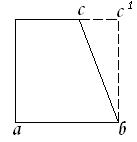

<!DOCTYPE HTML PUBLIC "-//W3C//DTD HTML 4.01 Transitional//EN"
<head>
    <link rel="preload" href="menu.html" as="fetch" crossorigin>
<meta http-equiv="Content-type" content="text/html; charset=utf-8" />
<title>Библер и вокруг</title>
<meta name="title" content="Библер и вокруг: философия, логика, культурология, теория образования, Bibler and around: philosophy, logic, culturology, educational theory">
<meta name="description" content="Труды В.С. Библера - создателя оригинальной концепции диалогики; воспоминания о нем и посвященные ему работы; работы участников группы 'Диалог культур'; Proceedings of the V.S. Bibler - creator of the original concept of dialogics; memories of him and proceedings dedicated to him, proceedings of 'Dialogue of Cultures' group">
<meta name="abstract" content="Библер, Ахутин, Берлянд, ШДК, школа, диалог культур, школа диалога культур, диалогика, философия, логика, культурология, теория образования, Bibler, Ahutin, Berlyand, SDC, a school, a dialogue of cultures, the school of intercultural dialogue, dialogics, philosophy, logic, cultural, educational theory">
<meta name="keywords" content="Библер, Ахутин, Берлянд, ШДК, школа, диалог культур, школа диалога культур, диалогика, философия, логика, культурология, теория образования, Bibler, Ahutin, Berlyand, SDC, a school, a dialogue of cultures, the school of intercultural dialogue, dialogics, philosophy, logic, cultural, educational theory">
<meta name="page-topic" content="bibler.club">
<meta http-equiv="Cache-control" content="">
<meta http-equiv="Expires" content="Thu, 01 Jan 1970 00:00:01 GMT">
<meta name="Copyright" content="Библер и вокруг">
<meta name="Robots" content="index,follow">
<meta name="Resource-type" content="document">
<link rel="shortcut icon" href="img/favicon.ico">
<script type="text/javascript" src="js/simpletreemenu.js"></script>
<script type="text/javascript" src="js/autoBreadcrumbs.js"></script>
<link rel="stylesheet" type="text/css" href="css/page-player.css" />
<link rel="stylesheet" type="text/css" href="css/flashblock.css" />
<script type="text/javascript" src="player/assets/soundmanager2-nodebug-jsmin.js"></script>
<script type="text/javascript" src="player/assets/page-player.js"></script>
<script type="text/javascript">
soundManager.setup({
  url: 'player/assets/',
  html5PollingInterval: 50
});
function setTheme(sTheme) {
  var o = document.getElementsByTagName('ul')[0];
  o.className = 'playlist'+(sTheme?' '+sTheme:'');
  return false;
}
</script>
<link rel="stylesheet" type="text/css" id="listmenu-o" href="css/style.css" />
</head>
<body>
<script type="text/javascript" src="js/wz_tooltip.js"></script>
<center>
		<div id="header">
		<a href="https://www.bibler.club" ></a>
				<h1>БИБЛЕР И ВОКРУГ</h1>
				<h2>ФИЛОСОФСКОЕ ОБЩЕСТВО</h2>
		</div>
		<div id="content">
		<div id="leftbar">
			<div id="menu-container"></div>
		</div>
		<div id="rightbar">
			<div id="rightbar-container"></div>
		</div>
		<div id="mainbar">
<script type="text/javascript">breadcrumbs()</script>

<h3>ИНСТИТУТ ИСТОРИИ ЕСТЕСТВОЗНАНИЯ И ТЕХНИКИ</h3>

					<h1>ИСТОРИЯ ПРИНЦИПОВ ФИЗИЧЕСКОГО ЭКСПЕРИМЕНТА ОТ АНТИЧНОСТИ ДО XVII в.</h1>
					<h2>А.В. АХУТИН</h2>

<h2>Предисловие</h2>
<p>
Широко распространено
убеждение, что наука в полном смысле
слова сформировалась в XVI—XVII вв. Что же
касается древности, то речь может идти
не более чем об аспектах, элементах
научности. Только в XVII в. философия
природы и логика естествознания,
теоретическая математика и эмпирическое
наблюдение вступили в такое взаимодействие,
в результате которого возникло современное
математическое естествознание. Сущностным
основанием новой науки становится
исследовательский эксперимент.
Теоретическое познание отныне
развертывается в контексте возможного
эксперимента. Через эксперимент
математические конструкции связываются
с природной реальностью, а натурфилософская
категория получает конструктивно-теоретический
смысл. Внедрение теории в опыт и опыта
в теорию, т. е. формирование исследовательского
эксперимента принципиально отличает
новую науку от древней.</p>
<p>
Становление современной
теоретической физики было связано с
пересмотром фундаментальных представлений
классической физики. В «очевидном» и
«естественном» обнаружились неявные
предпосылки, метафизические допущения,
условные идеализации. Для истории науки
возникло реальное основание, чтобы
по-новому взглянуть на эпоху возникновения
самой классической физики. Современная
теоретическая физика выдвигает
историко-научную проблему: как
формировались эти условности и
идеализации, как изобретался «естественный
свет разума» классической физики. Одним
из важнейших предметов историко-научного
анализа оказываются также и предпосылки,
лежащие в основе экспериментальной
деятельности. Исследование этих
предпосылок и составляет содержание
нашей работы. Речь пойдет не об истории
экспериментального искусства, а о тех
«принципах», которые определяют мысль
как экспериментирующую.
</p>
<p>
Внимание автора
привлекли сочинения Галилея. Первое же
чтение его произведений поражает одной
парадоксальной особенностью. Почти все
рассуждения Галилея в малых и больших
трактатах представляют собой разбор
экспериментов, критику их, изобретение
новых экспериментов, реальных и
воображаемых, доказательство путем
наглядной демонстрации, наглядность
которой создается, впрочем, тут же: в
речи, в тексте, самое большее − в чертеже.
Эти бесчисленные эксперименты обладают
способностью доказывать еще до того,
каких реально осуществляют. Более того,
там, где Галилей как будто бы рассказывает
о действительно исполненных им опытах,
за редким исключением, приводимые им
результаты вызывают серьезные сомнения.
Галилей мыслит экспериментально, в
экспериментах, посредством экспериментов,
но всякий раз оказывается, что он «и до
опыта убежден» в истинности результата,
несмотря на то, что часто результат, по
видимости, противоречит убеждению.
Некое априорное, доопытное
экспериментирование.</p>
<p>
Это характерно для
ситуации возникновения физической
теории. Теоретик мыслит в экспериментах,
но эксперименты остаются по преимуществу
мысленными.</p>
<p>
В таком случае, быть
может, есть смысл внимательнее вглядеться
в теоретический мир древности, чтобы и
там различить этот момент, характерный,
по-видимому, для теоретического мышления
вообще. Результат такого исследования
— перед читателем. Автор считает его
опытом систематического введения в
проблему, которая по глубине и содержанию
выходит далеко за рамки, очерченные в
нашей работе.</p>
<p>
Большую помощь в
разработке основной задачи и в решении
многих проблем философского характера
оказал автору В. С. Библер. Степень и
значение этой помощи определяются
далеко не только знакомством с его
трудами, многое уяснилось автору во
время многократных обсуждений с В. С.
Библером различных частей работы. Мне
приятно воспользоваться случаем, чтобы
выразить здесь В. С. Библеру искреннюю
и глубокую благодарность</p>
<p>
Тонкое и оригинальное
исследование Я. А. Ляткера о творчестве
Декарта во многом изменило и углубило
наши представления о том, как формировалась
картезианская идея математизации
физики. Я признателен Я. А. Ляткору за
любезное разрешение ознакомиться с
подготовительными материалами к его
диссертации, а также с его переводами
переписки Декарта.</p>
<p>
Постоянные консультации
по проблемам современной теоретической
физики с Вл. П. Визгиным позволили
избежать некоторых ошибок и соблюдать
сугубую осторожность при изложении
фундаментальных физических проблем.</p>
<p>
Вся исследовательская
работа проводилась автором в секторе
истории физики Института истории
естествознания и техники. Сектором
руководил ныне покойный доктор
физико-математических наук, профессор
Я. Г. Дорфман. Без постоянного серьезного
и чуткого внимания, которое уделял
автору проф. Я. Г. Дорфман, работа не
могла бы быть завершена. Если исследование
приняло законченную форму монографии,
то автор прежде всего обязан этим помощи
проф. Я. Г. Дорфмана и творческому общению
с сотрудниками сектора истории физики.</p>
<p>
Я признателен также
всем, кто высказывал критические
замечания о работе. Прямо или косвенно
они были неизменно полезны для автора.</p>
<p></p>
<h2><a href="javascript:history.back();">&larr; </a><a name="vstupl">Вступление</a></h2>
<p>
В тот период, о котором
пойдет речь в нашем исследовании, научное
познание имело такой смысл и занимало
такое место в культуре, что историку
науки каждый раз приходится обосновывать
правомерность своего анализа, доказывать,
что речь идет не о простом распространении
современных представлений на прошлое.
Если же говорят о формах экспериментальной
деятельности, свойственных научному
мышлению античности или средневековья,
нужда в таком обосновании особенно
остра. Поэтому мы хотим предпослать
историческому описанию несколько
соображений общего характера. Эти
соображения не претендуют на теоретическую
строгость или завершенность. Вводимые
здесь представления будут уточняться
и развиваться по ходу изложения материала.</p>
<p>
Во введении нельзя,
разумеется, дать сколько-нибудь подробный
логико-философский анализ проблемы
эксперимента во всех аспектах, развернутых
в современной чрезвычайно обширной и
разнообразной литературе по этому
предмету. Вопросы, которые мы собираемся
сейчас обсудить, жестко связаны с одним
ведущим: «Как возможно историческое
исследование экспериментальной
деятельности в физике, если речь идет
о древней науке?»
</p>
<p></p>

<h2>I</h2>
<p>
Вопрос: «Что такое
эксперимент?» с некоторых пор оказался
отнюдь не тривиальным для теоретической
физики. Если в рамках классической
физики разграничение прибора и испытуемого
объекта не составляло проблемы, и
экспериментатор не задумываясь разделял
единое физическое событие на «орудие»
(средство наблюдения) и «предмет»
(наблюдаемое), то уже в развитии
электродинамики и явно с возникновением
релятивистских и квантово-механических
проблем само это разделение стало
предметом теоретического анализа<SUP><A CLASS="sdfootnoteanc" NAME="sdfootnote1anc" HREF="#sdfootnote1sym"><SUP>1</SUP></A></SUP>.
Теория прибора и измерения выступила
в качестве существенной части теории
самого объекта.
</p>
<p>
Необходимость явно
включить в теорию «точку зрения
наблюдателя» впервые была теоретически
осмыслена в теории относительности А.
Эйнштейна. [В этом смысл уже «коперниканской
революции»].  В принципе относительности
это определяется как требование исключить
неявное присутствие «точки зрения» из
формулировки физических законов<SUP><A CLASS="sdfootnoteanc" NAME="sdfootnote2anc" HREF="#sdfootnote2sym"><SUP>2</SUP></A></SUP>.
Гораздо более радикальное и
заостренно-проблемное выражение это
требование нашло в рамках квантовой
механики. «...Вытекающее из самой сути
измерения применение классических
понятий»<SUP><A CLASS="sdfootnoteanc" NAME="sdfootnote3anc" HREF="#sdfootnote3sym"><SUP>3</SUP></A></SUP>
при описании квантовомеханических
событий повлекло за собой ряд неожиданных
утверждений. Различные аспекты ситуации,
зафиксированные в принципах наблюдаемости
и неопределенности Гайзенберга и в
принципе соответствия Бора были затем
сведены Бором в принцип дополнительности.
В известной дискуссии с Эйнштейном,
Подольским и Розеном о «полноте
квантовомеханического описания» и в
многочисленных статьях и докладах Бор
показал содержательную глубину этого
принципа<SUP><A CLASS="sdfootnoteanc" NAME="sdfootnote4anc" HREF="#sdfootnote4sym"><SUP>4</SUP></A></SUP>.</p>
<p>
Необходимо, с одной
стороны, чтобы квантовомеханические
объекты были объектами возможного
эксперимента, могли стать измеримыми
и наблюдаемыми. В определённой
экспериментальной установке, подчиняющейся
законам классической физики, они,
следовательно, могут быть воспроизведены
только как «псевдоклассические» объекты
(квантовомеханический объект,
воспроизведенный с определенной
классической «точки зрения»).
«Дополнительность» есть в этом смысле
способ рассматривать квантовомеханический
объект, включив в его теорию возможные
классические «точки зрения» на него.
Он «зрим» взаимоисключающими и
дополнительными оптиками, это и есть
то, что называют отсутствием «наглядности»
микрообъекта.</p>
<p>
С другой стороны, любой
процесс измерения квантовомеханического
объекта сам по себе есть квантовомеханическое
событие. Измеряемое деформируется,
становится другим в самом акте измерения.
Поскольку взаимодействие между прибором
и объектом конечно и того же порядка,
что и взаимодействие между самими
квантовыми объектами, измерительное
устройство оказывается как бы частью
измеряемого. Теория потенциального
измерения (возможного эксперимента)
должна быть включена в теорию квантового
объекта как такового.</p>
<p>
В ином отношении с
кругом этих проблем находится другой,
быть может, даже более занимательный
процесс, наблюдаемый в современной
теоретической физике. Представление
об эксперименте как о простом средстве
получения и проверки наших знаний
кажется недостаточным, когда обращают
внимание на ту исключительно автономную
роль, которую играет в современной
теоретической физике конструктивно-математическое
мышление. Содержание фундаментальной
теории в существенных чертах определяется
принципами ее математической структуры<SUP><A CLASS="sdfootnoteanc" NAME="sdfootnote5anc" HREF="#sdfootnote5sym"><SUP>5</SUP></A></SUP>.
Анализ трудностей, с которыми столкнулись
физики в попытке построить единую теорию
поля, приводит, в частности, к выводу,
что для такой теории «требуется, чтобы
необходимость величины предшествовала
бы измерению самой величины, ее
эмпирическому обоснованию»<SUP><A CLASS="sdfootnoteanc" NAME="sdfootnote6anc" HREF="#sdfootnote6sym"><SUP>6</SUP></A></SUP>.</p>
<p>
Эти процессы чрезвычайно
характерны для так называемого
неклассического типа теоретизирования
в современной математической физике.
Можно привести немало свидетельств
недоумения, высказываемого современными
математиками и физиками в связи с
проблемой эксперимента. Тривиальный
на первый взгляд факт происхождения
наших знаний из опыта оказывается
«чудом», а эффективность математического
мышления в физике — непонятным
предопределением<SUP><A CLASS="sdfootnoteanc" NAME="sdfootnote7anc" HREF="#sdfootnote7sym"><SUP>7</SUP></A></SUP>.
Место и роль эксперимента в отношениях
теоретического мышления с реальностью
оказываются далеко не столь ясными, как
это представляется на первый взгляд.</p>
<p>
«Физик,— говорил
Эйнштейн,— не может продвигаться вперед,
если в критические моменты, возникающие
при решении наиболее трудных проблем,
он не займется изучением самого
мышления»<SUP><A CLASS="sdfootnoteanc" NAME="sdfootnote8anc" HREF="#sdfootnote8sym"><SUP>8</SUP></A></SUP>.
Ясно, что в столь радикально критической
ситуации, в которой находится современная
физика, исследованию и критическому
пересмотру подвергаются не только
логические или гносеологические
основания теоретического мышления, но
и такое важнейшее основание научной
деятельности вообще, каким является
эксперимент<SUP><A CLASS="sdfootnoteanc" NAME="sdfootnote9anc" HREF="#sdfootnote9sym"><SUP>9</SUP></A></SUP>
9.</p>
<h2>II</h2>
<p>
Замысел нашей работы
— дать историческую ретроспективу
проблемы. Речь не идет о том, чтобы просто
описывать экспериментальную деятельность
физики прошлых эпох. Мы хотим использовать
историческое исследование как форму
анализа самого понятия об эксперименте,
как путь углубления или изменения этого
понятия.</p>
<p>
В таком случае, очевидно,
нельзя просто воспользоваться существующим
понятием, чтобы с его помощью исследовать
исторический материал. Чтобы исторический
анализ мог быть продуктивным, чтобы
наше представление о сущности эксперимента,
о его отношении к практической
деятельности, наблюдению, теоретическому
мышлению могло всерьез измениться или
обогатиться в результате исторического
исследования, нужно заранее сделать
это вообще возможным. Нужно, иными
словами, освободить наше представление
об экспериментальной деятельности от
жесткой связи с той или другой ее формой,
знакомой нам по собственному случайному
опыту.</p>
<p>
Речь, далее, идет именно
о принципах эксперимента. Многообразие
экспериментальной деятельности
какой-либо эпохи в истории науки при
всей видимой пестроте составляет тем
не менее некое единство. Сколь бы
случайным и произвольным ни выглядел
отдельно взятый эксперимент, он, если
только планируется ученым, стоящим на
уровне научной культуры своей эпохи,
всегда уже связан с множеством других
проделанных и проектируемых экспериментов,
всегда построен в рамках определенной
господствующей теории (пусть даже и для
ее радикальной проверки) и в конечном
счете составляет деталь в одном большом
эксперименте в системе определенной
«научно-исследовательской программы»<SUP><A CLASS="sdfootnoteanc" NAME="sdfootnote10anc" HREF="#sdfootnote10sym"><SUP>10</SUP></A></SUP>.
В зависимости от того, каким образом
тот или иной способ теоретического
отношения к миру устанавливает сферу
знания, мышления в противоположность
сфере предметно-чувственного (а в разные
эпохи это делалось по-разному),
развертывается соответствующая форма
экспериментальной деятельности (ее
отсутствие тоже ведь определенное
решение проблемы эксперимента [речь не
о том, что в античности, скажем,
экспериментирования «еще» не было, а о
том, что в логике античного ума задача
решалась иначе]).</p>
<p>
Замысел нашей работы
— не просто историческая ретроспектива.
Исторический анализ помогает увидеть
«невидимые» стороны экспериментальной
деятельности, ибо каждая эпоха эгоистична
по-своему, она выпячивает и использует
те стороны единой научно-теоретической
культуры [именно «культуры» − логические
субъекты − разные], которые другая эпоха
отводит на задний план или вовсе забывает.
Мы видим, стало быть, задачу нашего
исторического исследования в развертывании
на историческом материале свернутых и
скрытых сегодня моментов экспериментальной
деятельности.</p>
<p>
Для обострения (и
углубления) проблемы мы берем предельный
случай. Мы исследуем такие эпохи, которые,
как правило, считались эпохами чисто
спекулятивной научной мысли, абстрактного
теоретизирования, пренебрегавшего
критерием опыта. Создавая такие
«искусственные» условия исторического
исследования, мы как бы испытываем
одновременно и представление о научном
мышлении в эпоху античности и средневековья,
и представление об эксперименте,
почерпнутое из современной науки. В
этих предельных условиях отчетливее
всего обнаруживаются те стороны
экспериментльной деятельности, которые
почти нацело исчезли из самосознания
физики XVIII—XIX вв., но которые как раз и
составляли основную форму экспериментирования,
скажем, в античной науке. В качестве
примера можно привести такой аспект
всякого научного опыта, как мысленный
эксперимент с идеализованным предметом<SUP><A CLASS="sdfootnoteanc" NAME="sdfootnote11anc" HREF="#sdfootnote11sym"><SUP>11</SUP></A></SUP>.
Именно этот момент, как мы попробуем
показать, сосредоточивал в себе почти
всю экспериментальную деятельность
предшествовавших эпох. [С той поправкой,
что ни в античности, ни в средние века
идеальный, умо-зримый «предмет» не
понимался как <I>идеализация</I>]

</p>
<p>
Анализ творчества
Галилея, которым завершается работа,
должен показать внутреннюю связь
экспериментальной деятельности науки
Нового времени и тех форм эксперимента,
которые мы выделили в древней науке.
Работы этого замечательного ученого
представляют собой едва ли не единственное
во всей истории физики Нового времени
свидетельство того, какие глубокие и
отвлеченные от прямой задачи размышления
и исследования кроются в подоплеке
физической теории. И в том, что касается
эксперимента, работы Галилея — истинный
кладезь сокровищ. В них можно указать
все те аспекты, которые мы столь
гипотетично пытаемся очертить в научной
деятельности предшествующих эпох; кроме
того, видно, как изменяется с изменением
теоретической установки сам принцип
эксперимента, как намечается то самое
расщепление науки на две почти целиком
самостоятельные области —
предметно-экспериментальных исследований
и конструктивно-математического
теоретизирования, — которое мы наблюдаем
теперь в его предельном развитии.</p>
<p>
Но каким образом вообще
можно сформировать то пусть предварительное
понимание эксперимента, которое позволит
нам искать его специфические формы в
истории древней науки?</p>
<p>
Присмотримся
повнимательнее к тому, что мы всегда
уже подразумеваем, когда говорим об
эксперименте.</p>
<p></p>
<h2>III</h2>
<p>
В современной науке
можно зайти чрезвычайно далеко в
построении абстрактных математических
структур, готовых стать основой физической
теории. Для фундаментальных теорий
именно принципы, касающиеся их
математического строения  (например, в
теоретико-групповом подходе),  оказываются
наиболее продуктивными и содержательными<SUP><A CLASS="sdfootnoteanc" NAME="sdfootnote12anc" HREF="#sdfootnote12sym"><SUP>12</SUP></A></SUP>.
Тем не менее даже в этом случае мы
сталкиваемся с проблемой эксперимента
по меньшей мере в двух пунктах — так
сказать,   «на входе»   и   «на  выходе».
 Исходный теоретический конфликт всегда
может быть сформулирован  (и обычно
формулируется)  как конфликт теории с
экспериментальным   результатом,
например   известные майкельсоновские
эксперименты  для  классической
электродинамики.  Развитая  же
самостоятельно   теория   должна  быть
 экспериментально   интерпретируема и
способна предсказывать экспериментальные
факты, проверка которых и будет критерием
ее предметной истинности (сверх
внутренней — формальной — истинности,
  непротиворечивости).</p>
<p>
Легко установить эти
две функции эксперимента: быть источником
теоретического конструирования и быть
критерием (критиком) истинности
теоретических конструкций. Не так сложно
провести разграничение между, например,
экспериментальной физикой, в которой
на основе фундаментальной теории
происходит освоение на опыте различных
физических феноменов, и теоретической
физикой, в которой предметом испытания
могут стать как раз фундаментальные
принципы теории. И тем не менее при всей
интуитивной ясности дать хотя бы
предварительное определение эксперимента
оказывается не так-то просто.</p>
<p>
Попробуем сначала
отчетливей представить себе, что мы
обычно имеем в виду, когда говорим о
научном эксперименте. С первого же
взгляда можно заметить, что на разных
этапах развития научной системы, например
теоретической физики, эксперимент
выполняет самые разные функции. В этом
многообразии можно, однако, выделить
две формы экспериментальной деятельности,
образующие как бы два фокуса познавательного
цикла.</p>
<p>
В начале, когда, как
кажется, никакого знания еще нет и его
надо получить, непосредственный
предметный опыт выступает в качестве
прямого источника научного знания — в
функции исследовательского эксперимента.
Перед экспериментатором предметы, и в
эксперименте он должен получить знание
о них. Он должен, иными словами, <I>так</I>
отобрать их, <I>так</I>
разместить, <I>так</I>
деформировать, поставить в <I>такие</I>
условия, чтобы они обнаружили свою
«действительную природу», подлинную
форму, присущий им характер поведения,
закон существования, взаимодействия,
взаимопревращения. На эмпирическом
уровне объективное содержание не может
быть адекватно выявлено<SUP><A CLASS="sdfootnoteanc" NAME="sdfootnote13anc" HREF="#sdfootnote13sym"><SUP>13</SUP></A></SUP>,
в эксперименте же ученый формирует из
эмпирической предметности собственный
объект исследования и имеет в виду
получить теоретическое знание о нем.</p>
<p>
Когда же, напротив, мы
имеем дело с развитой теоретической
системой, внутри которой теоретик
способен логическим путем выдвигать
утверждения, и эти утверждения,
следовательно, уже являются теоретически
обоснованными знаниями, встает проблема
предметной проверки этого знания. Здесь
на первый план выдвигается проверочная
функция эксперимента. Дело эксперимента
— подтвердить или опровергнуть
теоретически полученное утверждение.
Теоретические конструкты должны быть
физически интерпретированы, на основе
этой интерпретации должны быть указаны
возможные физические события, которые
и могут стать предметом экспериментального
воспроизведения. Функция проверочного
эксперимента поэтому как будто
противоположна функции эксперимента
исследовательского. Экспериментатор
имеет дело с готовым знанием, с
теоретическим понятием, и речь идет о
том, чтобы испытать это понятие на его
предметную истинность.</p>
<p>
Фиксируя две эти
функции — исследовательскую и проверочную
— единой экспериментальной деятельности,
можно, по-видимому, выдвинуть следующее
предварительное «определение»
эксперимента: эксперимент есть (1)
целенаправленное [искусственное]
преобразование чувственно-данного
[естественного]  предмета с целью его
объективного (теоретического) представления
и (2) воплощение в наблюдаемых процессах
теоретического конструкта с целью его
предметной проверки (ясно, что сама
проверка обеспечивается более или менее
сложной системой интерпретации).</p>
<p>
Простота этого
определения кажущаяся. И не только
потому, что здесь опущено много
принципиально важных звеньев. При
ближайшем рассмотрении каждый шаг,
приведший к этому определению, оказывается
проблематичным. Когда отсутствует какое
бы то ни было теоретическое понятие,
невозможно не только правильно
интерпретировать результаты
исследовательского эксперимента,
невозможно вообще его поставить,
поскольку неизвестно, <I>какие</I>
предметы надо отбирать, <I>как</I>
надо их преобразовывать, <I>в
какие</I> условия
ставить, <I>как</I>,
в каком направлении изменять эти условия.
Теоретическое знание уже должно быть,
следовательно, предпослано научному
эксперименту, чтобы в нем можно было
такое знание получить. А это значит, что
невозможен простой переход от предмета
к понятию, если предмету так или иначе
не предпослано <I>априорное
</I>понятие.</p>
<p>
Наоборот, в проверочном
эксперименте мы хотим предметно
обосновать (доказать показом) то, что
уже обосновано теоретически, доказано
в рамках теоретической системы. Эта
проверка, стало быть, ставит под вопрос
не только то частное утверждение
(предсказание) теории, которое
непосредственно испытывается в
эксперименте, но и − как определенную
форму обоснования знания — всю теорию
в целом<SUP><A CLASS="sdfootnoteanc" NAME="sdfootnote14anc" HREF="#sdfootnote14sym"><SUP>14</SUP></A></SUP>.
Если доказанное в теории утверждение
оказывается предметно недействительным,
затрагиваются сами основы теории, с
которыми это утверждение логически
связано.</p>
<p>
О чем в самом деле
свидетельствует отрицательный результат
эксперимента? При условии, что испытуемое
утверждение выведено из теории правильно
(нет логической ошибки), что интерпретация
результатов также проведена правильно
(и сама «логика интерпретации» не
ставится под сомнение), при условии
далее, что теория, описывающая средства
наблюдения, измерения, вообще физику
прибора, не ставится под вопрос в том
же эксперименте, а берется в качестве
надежно работающей, отрицательный
результат эксперимента может
свидетельствовать, в конечном счете, о
внутренней, ограниченности теории в
целом и дает повод к тому, чтобы искать
то содержательное противоречие, в
котором выражается эта ограниченность.
Так, Эйнштейн в своей классической
статье «К электродинамике движущихся
тел»<SUP><A CLASS="sdfootnoteanc" NAME="sdfootnote15anc" HREF="#sdfootnote15sym"><SUP>15</SUP></A></SUP>
сразу же указывает радикальное
противоречие («асимметрию»), к которому
приводит электродинамика в применении
к движущимся телам. Такая постановка
вопроса радикальнее ссылок на эксперименты
типа Майкелсоновских.</p>
<p>
Но, как только что было
замечено, именно в теории мы черпаем
сам замысел эксперимента, схему его
исполнения, критерии правильности и
средства теоретической интерпретации
его результатов. Как же может эксперимент
обосновывать теорию, если теория является
основанием эксперимента?</p>
<p>
Теория развивается
под контролем эксперимента. Её понятия
и законы должны доказывать свою предметную
действительность, ее предсказания
должны подтверждаться, теоретически
рассчитанные системы должны работать
и давать предсказываемый эффект. Но
именно теория дает нам критерии того,
что эксперимент ведется правильно, и,
следовательно, сама контролирует
эксперимент<SUP><A CLASS="sdfootnoteanc" NAME="sdfootnote16anc" HREF="#sdfootnote16sym"><SUP>16</SUP></A></SUP>.
Таким образом, проверка самообоснованной
теории такая же проблема, как и
происхождение теоретического знания
из опыта.</p>
<p>
Эти противоречивые
круги, связанные с двумя функциями
эксперимента, точнее сказать, с двумя
аспектами единой экспериментальной
деятельности, и составляют средоточие
исследовательской проблемы, которая
лежит в основе нашего историко-научного
анализа.</p>
<p></p>
<h2>IV</h2>
<p>
Если попытка определить
эксперимент, исходя из обычного,
интуитивного представления об
экспериментальной деятельности,
приводит, как кажется, к порочному кругу
(чтобы познавать, нужно уже знать, чтобы
проверять, нужно нечто постулировать),
можно попробовать очертить сферу
экспериментальной деятельности, проводя
демаркационную линию между экспериментом
и тем, что, будучи сходным с ним в том
или другом отношении, все же не может
быть понято как эксперимент.</p>
<p>
Возьмем за основу те
же два полюса научной деятельности:
полюс предметно-практический и полюс
понятийно-теоретический. Без особых
размышлений мы относим эксперимент к
сфере чувственно-предметной практики
— это всегда наблюдение или испытание
реальных вещей и событий. Однако это
особая практика. Хотя и она имеет дело
с орудиями и машинами (инструментальная
техника), её отношение к предмету и ее
цель принципиально иные, чем в работе
с орудиями. Этот род практики непрерывно
и  целенаправленно переходит в «практику»
теоретического мышления, движущегося
по своим, логическим законам.</p>
<p>
Часто говорят, что
эксперимент и теоретическое наблюдение,
развиваются на почве ремесленной,
медицинской, навигаторской,
сельскохозяйственной и прочей опытности.
Они могут пребывать в том же материале,
но теретическая цель радикальнейшим
образом изменяет отношение к этому
материалу, преобразует саму форму опыта
и иначе направляет наблюдение.
Теоретическая мысль требует <I>отвлечения
</I>от практической
цели.
</p>
<p>
Если, впрочем, в
современной науке такое разграничение
достаточно очевидно и не требует
специального исследования, то при
изучении древней науки и техники
разделить эти сферы не так-то просто.
Здесь возникают особые трудности, встают
неожиданные вопросы.</p>
<p>
Можно ли, например,
сопоставлять друг с другом эмпиризм
древности и Нового времени? Почему в
одном случае эмпирические наблюдения
порождают натурфилософию, основанную
на аналогиях, а в другом — явственно
группируются в естественнонаучную,
закономерность? Являются ли экспериментами
практические исследования изобретателей
и техников античности (Архит, Герон,
Витрувий, Папп) и средневековья (например,
оптические исследования арабов или
опыты Р. Гроссетета и Р. Бэкона)? Научна
ли инженерная опытность мастеров и
архитекторов эпохи Возрождения, эпохи,
для которой столь характерно необузданное
«экспериментирование» во всех областях
культуры? Экспериментальны ли исследования
алхимиков? Когда и в результате чего
мастерская художника и изобретателя
превращается в лабораторию ученого?</p>
<p>
В действительности
разграничить практическое испытание
и исследовательский эксперимент возможно
далеко не всегда. Тем более что весь
этот богатейший материал практической
опытности вовлекается в науку и
переосмысливается как совокупность
экспериментальных исследований и
теоретических наблюдений. Но, чтобы это
стало возможным, нужно своего рода
«обращение» внимания, нужна особая
точка зрения, определенная горизонтом
не практического, а теоретического
мира.</p>
<p>
Если практическое
испытание направлено на достижение
цели, для которой исследуемый предмет
лишь средство (например, музыкант может
варьировать длину или натяжение струн
музыкального инструмента, чтобы научиться
переходить от одного музыкального лада
к другому), то то же самое действие
становится экспериментальным, т. е.
теоретически нацеленным, когда в него
включается противо-действие, возвращающее
наше внимание к исходному предмету (в
приведенном примере, если цель испытателя
— устанвить закон консонантных
отношений вообще). Надо, впрочем, помнить,
что при теоретическом отношении к
природе целью является не только и не
столько та или иная область природы,
сколько всеобщие определения природного
бытия, такие, например, как «движение»,
 «сила», «пространство-время».</p>
<p>
Подобным же образом
решается проблема наблюдения. Наблюдение
по самой своей природе относится к
предмету теоретично. Оно не затрагивает
предмет, оставляет его в естественном
бытии и лишь стремится фиксировать для
себя закономерности этого бытия. Именно
поэтому в процессе наблюдения искали
в первую очередь опытную основу
теоретической науки. Но чем в таком
случае отличаются столь точные и
детальные астрономические наблюдения
вавилонских и египетских писцов от
убогих в сравнении с ними астрономических
знаний древних греков (только во II в. до
п. э. Гиппарх освоил богатство вавилонской
астрономии и только во II в. н. э. Птолемей
смог их теоретически обработать)?
Многоопытный и глубоко практичный
наблюдатель обычно делает гораздо более
тонкие и надежные предсказания, чем
вечно сомневающийся и сугубо непрактичный
в своем логическом и методологическом
педантизме теоретик.</p>
<p>
Это наводит на мысль,
что в одном и том же процессе наблюдения
теоретик ищет нечто иное, нежели практик.
Для него мало заметить повторяемость
в чертах предметов или событий и вывести
из этого закон (не говоря уже о том, что
теоретик прежде всего увидит в этой
операции логическую проблему). «Бывалый
человек» знает, что при наличии таких-то
примет наверняка произойдет такое-то
событие; «мудрец» может даже вычислить
при помощи заранее составленных таблиц
время захода и восхода небесных светил,
время затмений и т. д.,— но не это
интересует теоретика. Ему важно прежде
всего знать, как, почему, по какой причине
это происходит. Он заполняет логическую
пропасть индуктивного умозаключения,
обнаруживая за несколькими единичными
событиями <I>один</I>
механизм, порождающий эти события и,
следовательно объясняющий их, или
<I>один-единственный</I>
предмет, который события как бы намечает
пунктиром. Не столько практически
значимая уверенность в повторении
событий, лишенных внутренней связи,
важна ему здесь, сколько теоретически
значимая <I>необходимость</I>
события, ытекающая из особенностей
предметной конструкции или механизма,
<I>скрывающихся</I>
за этими единичными событиями. Поиск
истинной, предметной связи — вот что
делает наблюдение теоретическим.
«Небесным узором,— говорил Платон,—
надо пользоваться как пособием для
изучения подлинного бытия...» (Госуд.
529d)<SUP><A CLASS="sdfootnoteanc" NAME="sdfootnote17anc" HREF="#sdfootnote17sym"><SUP>17</SUP></A></SUP>.
Именно этим поиском «разумного»
механизма, скрывающегося за пестрым
движением небесных тел (система
циклических движении), и объясняется
столь серьезное отставание греческой
практической астрономии. «...Очевидной
целью теоретической астрономии (у
греков.— <I>А. А.</I>),—
пишет О. Нейгебауер,— стало построение
чисто геометрической теории движения
планет в целом, а характерные явления
в значительной мере потеряли свой
специфический интерес, особенно после
того, как греческие астрономы развили
опыт наблюдений в достаточной степени,
чтобы понять, что явления, наблюдаемые
возле горизонта (главным образом и
занимавшие вавилонян.— <I>А.
А.</I>), представляют
собой наихудший возможный выбор для
получения необходимых эмпирических
данных»<SUP><A CLASS="sdfootnoteanc" NAME="sdfootnote18anc" HREF="#sdfootnote18sym"><SUP>18</SUP></A></SUP>.</p>
<p>
Именно теоретическая
цель должна указать экспериментатору,
какие предметы отобрать, как их
расположить, в какие условия поставить,
каким образом деформировать, чтобы опыт
имел теоретически значимый результат.
Поиск экспериментатора строго
целенаправлен. Он может ставить свой
вопрос к природе потому, что предпосылает
ему возможный, теоретически сформулированный
ответ. Всякий предметный опыт становится
теоретически продуктивным (экспериментальным)
при том непременном условии, что ему
предпосылается идеальный (мысленный)
образ искомого — форма, схема, тип
закона,— и именно к этому идеальному
образу (объекту) будут непосредственно
относиться утверждения развиваемой
теории.</p>
<p></p>
<h2>V</h2>
<p>
При внимательном
рассмотрении проблема видится еще более
сложной. Даже в самый начальный период
исследования, когда еще только предстоит
выделить, распознать предмет,
экспериментатор или наблюдатель никогда
не имеет дело только с предметом, а
всегда также и с некоторым <I>старым
знанием</I> о
предмете, имеющимся уже опытом. В
противном случае предмет и не мог бы
стать предметом возможного опыта вообще.
Представление, которое сложилось о
предмете в обыденной жизни, результат
предшествующей научной работы, принявший
вид естественного определения предмета,
короче говоря, то или иное понятие
предмета, всегда уже предшествующего
научному познанию, — вот что подлежит
исследованию экспериментатора уже в
самом начале.</p>
<p>
Процесс предметного
экспериментирования только потому
может привести к изменению понятия, что
он в то же самое время всегда уже есть
и процесс экспериментирования над
понятием, процесс <I>мысленного
экспериментирования</I>.</p>
<p>
Даже там, где это
критикуемое, опровергаемое, изменяемое
в эксперименте понятие, по-видимому,
отсутствует, необходимо «изобрести»,
извлечь его из предшествующего знания
в качестве предмета экспериментально-теоретической
критики. Так, например, предпосылкой
античного теоретизирования была
деятельность ранних философов,
перерабатывавших категории мифа в
категории натурфилософии и превращавших
тем самым мир мифа в мир возможного
научного опыта (наблюдения) и теоретического
отношения (опровержения, доказательства,
критики).</p>
<p>
В «Диалогах» и «Беседах»
Галилея видно, сколько труда тратит
Сальвиати, чтобы найти теоретические
предпосылки в том, что для Симпличио
имеет статус фактической очевидности,
чтобы реконструировать, далее основы
перипатетической физики в качестве
варианта теоретической механики, чтобы
привести, таким образом, аристотелевскую
физику в форму, сопоставимую с новой
механикой и могущую  быть   предметом
теоретической   критики.</p>
<p>
Мы говорили, что
практический опыт и эмпирическое
наблюдение становятся формами научного
эксперимента, когда им предпосылается
идеальный (с теоретической точки  зрения)
 образ искомого, иными словами, когда
формируется идеализованный объект,
определяющий, в каких условиях   (реально,
 быть может, недостижимых) эмпирические
результаты опыта будут иметь теоретическое
значение<SUP><A CLASS="sdfootnoteanc" NAME="sdfootnote19anc" HREF="#sdfootnote19sym"><SUP>19</SUP></A></SUP>.
Как же конструируется этот идеальный
«прообраз», предваряющий исследование
самого «образа»? Чем определяется
«теоретическая точка зрения»?</p>
<p>
Ученый занимается
различными вещами и явлениями природы
прежде всего потому и затем, что хочет
в них найти всебщее. В опыте он занимается,
вообще говоря,  единичным и случайным
фактом  так,  чтобы  увидеть  его
действительную  форму (свободную от
случайностей)  и необходимое место в
рамках целого. Мы ставим опыты с
деревянными весами, свинцовыми шариками,
заряженными листочками, химически
определенными газами, но хотим   увидеть
  в   них   действие   законов   равновесия,
ускорения,   электростатического
взаимодействия,   термодинамики газов
   вообще, — действие,   которое
принципиально   невозможно увидеть «в
чистом виде». Это единое, целое, всеобщее,
которое как таковое  не  может  быть
непосредственным   предметом   никакого
реального опыта, тем не менее и является
важнейшей целью исследовательского
эксперимента.</p>
<p>
Идеализованный объект,
составляющий мысленную сторону реального
предмета опыта, вместе с тем является
предметной, наглядной стороной
теоретического понятия. Мысленный
эксперимент с идеализованным объектом
в идеальных условиях, в которых мысленно
продолжается эксперимент с чувственно-данным
предметом, есть поэтому также и предметное
исследование теоретического  понятия.
  Действуя мысленно  с  идеально  твердыми
телами, идеально гладкими поверхностями,
идеально точечными зарядами, идеальными
газами, в идеальной пустоте, экспериментатор
опять-таки ищет единые, всеобщие
определения этого мира идеализованных
  объектов:   основные   принципы,
элементарные формы, фундаментальные
законы. Поскольку эти принципы  (например,
принцип инерции в классической механике)
 получены в результате мысленного
эксперимента, т. е. воспроизведены в
виде идеализованного события (движение
идеально круглого и твердого шарика по
бесконечной   идеальной   гладкой
плоскости),   они сами не только получают
как бы предметную  наглядность,  но и
выступают в качестве принципа, теоретически
объясняющего реальные события. До сих
пор мы имеем дело с экспериментом и его
мысленным продолжением,  в котором
теоретическое мышление осуществляется
как форма  мысленно-экспериментальной
деятельности. Однако, после того  как
выделены основные положения, возникает
особый круг проблем, связанных с
развертыванием теоретической системы,
основанной на этих   принципах.   Это
проблемы самообоснованности,
непротиворечивости, аналитической
формулировки, языка, логической структуры
и т. п. В решении этих проблем теория
испытывает себя на общность и соответствие
 своему теоретическому идеалу. Критерии
 теоретической системности —
математические и формально-логические
— оказываются здесь определяющими. Это
— сфера, в которой принципы логического
 доказательства преобладают над
принципами экспериментального
«показательства». Факт, противоречащий
такой системе, будет долгое время
игнорироваться в надежде на то, что
противоречие окажется мнимым. Более
того, внутренняя основательность теории
делает ее формой здравого смысла в науке
и как бы естественной манерой видеть
вещи.</p>
<p>
Однако, чем более
углубляется в себя теоретическая
мысль, чем более расширяет она границы
своей общности, чем более строгой она
становится, чем адекватнее она, казалось
бы, воспроизводит свой предмет, тем
ближе подходит она к радикальнейшему
экспериментированию, тем отчетливее
начинает она отличать себя в качестве
мысли от превышающего ее в своей
содержательности предмета. Расширяя
сферу своей применимости, теория
отчетливо очерчивает область противоречащих
ей фактов, которые раньше затерялись
бы в скоплении фактического материала.
Попытка свести воедино основоположения
заставляет увидеть пределы тех
идеализации, в которых были сформулированы
фундаментальные понятия (например,
сила, масса, абсолютное пространство).
Анализ самого теоретического идеала,
согласно которому строилась
экспериментальная схема, обрабатывались
(интерпретировались) результаты
эксперимента и формировались понятия,
приводит к выяснению его внутренних
границ, к открытию, следовательно,
возможности радикально иной идеи
познания.</p>
<p>
Как правило, этот
момент «идейного» преобразования не
включается в анализ формирования
теоретического понятия, а это сильно
сужает проблему эксперимента. Кажется,
что понятие, схематизированное в
идеальном образе, есть все, что объективно
можно сказать о предмете. Все остальные
характеристики предмета случайны или
субъективны, они относятся не к самой
сути дела, а к условиям и обстоятельствам.
Но это только одна сторона дела, которую
и выделить-то в реальной научной
деятельности можно лишь условно. Однако
в истории науки можно указать периоды
 целые эпохи (в особенности это относится
к древности), когда господствует именно
это движение мысли: идеализованный
объект есть идеальный предмет, предмет,
взятый в истинном виде, в форме, свободной
от случайных для предмета привнесений
эмпирического окружения. Процесс
теоретического размышления устремлен
к завершению в истинном созерцании,
иначе говоря, в созерцании истинного
(= идеального) предмета.</p>
<p>
Самостоятельная
экспериментальная деятельность выступает
на первый план и занимает положение,
равноправное с теоретическим мышлением,
там, где отчетливо обнаруживается
противоположное движение, и теоретическое
мышление само отличает себя (в качестве
абстрагирующего, идеализирующего) от
содержательного, конкретного, чувственного
предмета, с которым ученый снова и снова
вступает в контакт в эксперименте. Если
в первом движении идея истины, в свете
которой теоретически постигался предмет,
представляется по сути своей идеей
полноты, цельности, актуальности, а
исходный чувственный предмет кажется
единичным и случайным, то в противодвижении
научной мысли исходным предметом
сомнения и критики выступает именно
идея познания. Теоретическое мышление
обнаруживает свою условность в том, что
находит в своем содержательном идеале,
вообще говоря, искусственные − (случайные
для исследуемого предмета) ограничения
(условия идеализации), неправомерные
при ближайшем рассмотрении постулаты,
непродуманные (субъективно выбранные)
предпосылки. Теоретик находит, что
идеал, в свете которого строилась вся
его познавательная работа, исторически
ограничен и может быть в целом подвергнут
пересмотру.</p>
<p>
Наука Нового времени
потому в действительности является по
сравнению с древней наукой существенно
экспериментальной, что она явным образом
включает в свое познавательное отношение
принцип фундаментальной самокритики,
т. е. требование критики тех основоположений,
которые формируют идеал познания и
задают условия предметной идеализации.
Именно поэтому феномен предмета в его
чувственно-природной противоположности
идеальному объекту (предмету теоретического
анализа) не исчезает из поля зрения
теоретика и служит как бы постоянным
momento mori любой теоретической истины.
Когда теоретическое мышление строится
с внутренним сознанием своей принципиальной
обусловленности (предпосылочности) и
возможности иных условий идеализации,
иной формы теоретического познания,
эксперимент, и именно чувственно-предметный
эксперимент, становится его конститутивным
принципом.</p>
<p>
Историки науки часто
указывают на то, что наука Нового времени
началась, когда ученые заменили
схоластическую аргументацию ех verbum —
от слов — аргументацией ex rеs — от вещей.
Смысл этого события, однако, становится
яснее, если эту историческую ситуацию
рассмотреть подробнее. Для нее как раз
характерно сосуществование множества
возможных теоретических идеалов. К
этому времени средневековый аристотелизм
распался на несколько полемически
настроенных друг к другу школ. Наряду
с этим трудами гуманистов, механиков и
математиков были воспроизведены забытые
формы античной научной культуры. Ощутимо
уже давал о себе знать дух нового
механико-математического подхода к
природе. Весь этот мир, кроме того,
находился в постоянном интенсивном
общении; идеалы научного знания
сталкивались, сопоставлялись,
преобразовывались. Именно в эту эпоху
звучит призыв Ф. Бэкона вернуться к
вещам самим по себе. Он поносит надменность
самостийного ума, постоянно впадающего
в иллюзии. Он требует от мышления
смиренного внимания к тому, что бесконечно
превосходит все умствования и идеалы,—
к природе в ее первозданной самобытности,
В споре теоретиков как будто бы должна
взять слово и высказаться сама природа.</p>
<p>
Правда, в этом прилежном
исследовании природы вещей мы не должны
обманываться случайными, несущественными,
только запутывающими разум частностями.
В потемках природы надо сначала зажечь
факел разума. Надо стремиться к
объективности, всеобщности...— иными
словами, теоретичности знания. Круг
замыкается и мы снова у исходного пункта.
Возвращение к природе на деле оказалось
лишь переходом к новому идеалу.</p>
<p>
Однако этот идеал
отличается существенной чертой. В
каком-то чрезвычайно преобразованном
и идеализованном виде историческая
ситуация, в которой родилась эта наука,
— сосуществование нескольких возможностей
теоретического мышления, — стала ее
конститутивным элементом. Теоретический
объект существует в ней как возможная
идеализация предмета, и потому, наряду
с теоретическим обоснованием,
устанавливается специальная и
самостоятельная процедура экспериментального
и эмпирического обоснования: теоретик
должен точно указать особые, независимо
воспроизводимые, контролируемые условия,
в которых его идеализация реальна и
правомерна.</p>
<h2>VI</h2>
<p>
Обычное представление
об опыте, как о безотказном источнике
знаний и бесконфликтном способе проверки
гипотез, дает мало оснований для
исторического исследования. Можно,
разумеется, отделить в древности трезвый
навык от гениально догадливой иногда,
но большей частью лишь путающейся в
фантастических гипотезах спекуляции.
Можно отделить всю древнюю науку от
новой, как отделяют инфантильные выдумки,
лишенные предметной основы, от деловой
опытности взрослого человека. Все это
недостаточно конструктивно, чтобы
всерьез говорить об историческом
исследовании различных принципов
эксперимента.</p>
<p>
И в самом деле, можно
уметь наблюдать и ставить опыты или не
уметь и даже не желать это делать. Но в
каком смысле можно говорить об исторически
определенной форме экспериментальной
деятельности?</p>
<p>
До сих пор мы пытались,
не выходя за рамки феноменологии,
нащупать возможные подходы к проблеме.
Предварительное определение, выдвинутое
на стр. 50, не столько подготавливает
позитивное понятие эксперимента, сколько
помогает уяснить всю нетривиальность
этого понятия. Однако с помощью такого
«определения» нельзя однозначно
установить объект возможного исторического
анализа.</p>
<p>
Мы видели, впрочем,
что, исходя из этой нестрогой формулировки,
можно довольно точно указать те граничные
области в рамках практической и
познавательной деятельности вообще, в
которых как бы сосредоточены узловые
проблемы нашей темы. Пусть мы не знаем,
что такое эксперимент,— а такое незнание
также является предпосылкой исторического
исследования, в котором всегда нужно
быть готовым к столкновению с незнакомой
формой предмета,— пусть у нас нет прямых
признаков, по которым можно было бы
распознать форму экспериментальной
деятельности в незнакомой нам научной
ситуации, тем историчнее можно будет
реконструировать этот феномен, если
только мы знаем, каким образом и где
формы мыслящей практики в широком смысле
слова преобразуются в формы
экспериментльного мышления.</p>
<p>
На предыдущих страницах
мы пытались отделить сферу экспериментальной
деятельности от смежных областей —
собственно предметно-практической
деятельности и теоретического мышления
как такового. Но тем самым мы описали
не только некие абстрактные проблемные
ситуации, но и аспекты самой историко-научной
действительности, которые могут привлечь
наше внимание. В соответствии с этим
анализ каждой исторической эпохи
(разумеется, если для нее вообще характерно
научно-теоретическое отношение) прежде
всего может идти по трем путям.
</p>
<p>
Исследуем, во-первых,
в каких особых формах в практике уже
существует то особое («обратное»)
отношение между орудием и предметом,
которое характерно для экспериментальной
практики; во-вторых, в каких особых
категориях в рамках философско-теоретического
мышления эпохи ставится и решается
вопрос о его предметной истинности;
в-третьих, каким образом существует и
осознается конкретная и радикальная
проблема взаимоперехода идеальных и
предметных определений. В результате
можно наметить определяющие черты того,
что мы будем называть <I>экспериментальной
ситуацией эпохи</I>,
имея в виду, что ситуация эта вовсе не
обязательно развертывается в методическое
экспериментирование, свойственную
науке Нового времени.</p>
<p>
1. В познавательной
практике целью является предмет, который
должен быть познан, т. е. преобразован,
превращен, извлечен из своей
естественно-наличной формы, в которой
он как раз неизвестен. Но преобразован
так, чтобы не стать «средством» для
другого, а впервые оказаться «самим
собой». В познающей деятельности
естественный предмет должен приобрести
некую искусственную форму (форму
возможного знания), но при этом такую,
которая лишена непосредственно
практической целесообразности и
представляет собой поэтому форму как
бы природо-подобного существования.</p>
<p>
Таким образом, для
познания важны те ситуации, события и
процессы, в которых «естественное»
происходит с функциональной определенностью
«искусственного» или же, наоборот,
«искусственное» осуществляется так,
что не переходит в некое «действие с
целью...», а развертывается, «подражая
природе», т. е. самоцельно. Важны,
следовательно, точки взаимоперехода
«естественного» и «искусственного».</p>
<p>
Вот почему, как мы
увидим в разделе, посвященном античной
науке, столь важен для нашей темы анализ
эстетической формы. Здесь идеальная −
совершенная − форма как раз выражает
предмет в нем самом. Вот почему в
возникновении экспериментальных наук
Нового времени важную роль сыграло и
распространение в эпоху Возрождения
механических и математических «игр»,
«курьезов», «фокусов», «загадок». В
самом деле, с точки зрения ремесленника
«труд» экспериментатора представляется
не более чем игрой. Например, при
исследовании законов равновесия или
движения рычагами действуют не для
того, чтобы перемещать тяжести, весами
пользуются не для того, чтобы определять
вес, снаряды выпускают не для того, чтобы
поразить цель, и т. д. Но это равновесие
и взаимопревращение естественного и
искусственного и создает возможность
эксперимента. Оно определяется тем, как
задается форма предмета «самого по
себе», т. е. как изолируется предмет
возможного теоретического познания. В
эпоху античности мы называем этот способ
«естественной изоляцией», в эпоху
средневековья — единообразия ради —
«сверхъестественной изоляцией», в эпоху
Нового времени — «искусственной
изоляцией».</p>
<p>
2. Возьмем теперь
противоположный полюс, границу между
экспериментирующим теоретизированием
и теоретическим мышлением в рамках
развернутой системы (см. стр. 48-51). Прежде
всего мы находим здесь обширную сферу
мысленного эксперимента, благодаря
которому результаты реальных экспериментов
могут приобрести теоретическое значение,
а теоретические принципы — предметную
наглядность. Любой теоретически
продуктивный эксперимент развертывается
одновременно в вещах и в мыслях<SUP><A CLASS="sdfootnoteanc" NAME="sdfootnote20anc" HREF="#sdfootnote20sym"><SUP>20</SUP></A></SUP>.
Подобно тому как логическое доказательство
сопровождается мысленным преобразованием
предмета доказательства и поэтому
всегда уже является также и мысленным
экспериментом<SUP><A CLASS="sdfootnoteanc" NAME="sdfootnote21anc" HREF="#sdfootnote21sym"><SUP>21</SUP></A></SUP>,
реальный эксперимент сопровождается
идеальной демонстрацией и, стало быть,
всегда является также и доказательством<SUP><A CLASS="sdfootnoteanc" NAME="sdfootnote22anc" HREF="#sdfootnote22sym"><SUP>22</SUP></A></SUP>.</p>
<p>
Для исторического
анализа принципов экспериментального
отношения теоретика к предмету важнейшим
является то, каким образом в мышлении
устанавливается форма тождества понятия
и предмета, форма их соответствия,
адекватности друг другу,— такая
предметная форма, которая предполагается
понятной уже в созерцании (мысленном),
и такая схематизация понятия, в которой
оно представляется непосредственно
предметным (созерцаемым). Это заставляет
сосредоточить внимание на фундаментальной
философской проблематике. В результате
определяется существенная форма
отношения теоретического мышления в
целом к своему предмету. В эпоху античности
мы называем эту форму «теоретическим
наблюдением», в эпоху средневековья —
«теоретическим истолкованием», в эпоху
Нового времени — «теоретическим
исследованием».</p>
<p>
3. Узловым моментом
всех принципиальных проблем, связанных
с формой и самим содержанием
экспериментальной деятельности
определенной эпохи, является противоречие
между понятийной формой предмета и
формой предметности понятия.
Неидеализируемый предмет не познается,
понятие, никак не соотносимое с
предметностью, пусто<SUP><A CLASS="sdfootnoteanc" NAME="sdfootnote23anc" HREF="#sdfootnote23sym"><SUP>23</SUP></A></SUP>.
Вместе с тем идеализированные определения
предмета «бесконечно» отличаются от
его предметных определений. Возникающие
здесь парадоксы — как показывают
размышления Зенона, Аристотеля, Галилея,
Кавальери или Лейбница,— суть парадоксы
бесконечного. Наоборот, схематизированное
(«экземплифицированное») понятие
нагружается наглядностью, которая
вводит как бы собственную «логику» в
теоретическую логику понятий<SUP><A CLASS="sdfootnoteanc" NAME="sdfootnote24anc" HREF="#sdfootnote24sym"><SUP>24</SUP></A></SUP>.
Можно было бы отнести совокупность
первых проблем к математике, совокупность
вторых — к логике, если бы не существовало
такой проблемы, которая, во-первых,
представляет собой средоточие физической
теории и решение которой, во-вторых,
предполагает решение описанных проблемных
ситуаций,— это проблема движения.</p>
<p>
Особая форма
предметно-понятийного противоречия и
сопряженная ей форма фундаментального
теоретико-физического принципа составляют
существенное содержание соответствующей
экспериментально-теоретической проблемы.
В эпоху античности речь может идти об
апориях типа зеноновских и, условно
говоря, о «принципе инерции покоя»<SUP><A CLASS="sdfootnoteanc" NAME="sdfootnote25anc" HREF="#sdfootnote25sym"><SUP>25</SUP></A></SUP>.
В эоху средневековья нет достаточно
определенной формулировки ни того, ни
другого. Мы лишь приблизительно можем
говорить об антитетической<SUP><A CLASS="sdfootnoteanc" NAME="sdfootnote26anc" HREF="#sdfootnote26sym"><SUP>26</SUP></A></SUP>,
апофатической или герменевтической
форме противоречия и о «принципе инерции
недостижимого покоя». В эпоху Нового
времени речь — с достаточной строгостью
— может идти об антиномической форме
связи физического и математического,
динамического и кинематического аспектов
и о «принципе инерции прямолинейного
равномерного движения».</p>
<p>* * *</p>
<p>
Границы и узловые
проблемы, выделенные нами в контексте
научно-теоретической деятельности,
обрисовывают определенную экспериментальную
ситуацию. Характер этой ситуации
определяет, какие формы примет
экспериментальная деятельность, какое
место она займет в теоретическом
мышлении, какое действие будет оказывать
на способ развертывания отдельных наук.</p>
<p>
Анализ экспериментальной
деятельности на этом уровне и в таком
контексте открывает в ней стороны,
которые часто ускользают от внимания
теоретиков научного познания,
ориентирующихся главным образом на
форму эксперимента в науках Нового
времени. Между тем аспект чувственно-предметного
экспериментирования, доминирующий в
современной науке, заслоняет другие
аспекты, не менее существенные и в
настоящее время все определеннее дающие
о себе знать.</p>
<p>
Напротив, в эпоху
античности или средневековья на первый
план выступали иные стороны эксперимента,
ослаблявшие или вовсе сводившие на нет
значение предметно-исследовательского
эксперимента. Экспериментирование, т.
е. способ формировать теоретический
предмет из нетеоретического материала,
способ раскрывать понятийные
(теоретически-мыслимые) стороны этого
предмета и способ восстанавливать
проблему предмета в его отличии от
понятийных форм, в древности принимало
скорее форму преобразования субъекта
(способа видеть, мысленно воспроизводить,
распознавать, интерпретировать,
истолковывать всегда уже присутствующую
истину); предмет раскрывается в истине,
поскольку теоретик научается истинно
(умно) видеть, слышать, воспринимать,
улавливать смысл. В античности
господствующим моментом является
«сублимация зрения». Экспериментирование
развертывается как переход от простого
зрительного обособления предмета, его
распознавания, к усмотрению (припоминанию)
его подлинного первообраза, «эйдоса».
Поскольку именно наблюдение с начала
и до конца («теория» — созерцание)
остается единой формой теоретического
отношения к предмету, мы и называем этот
эксперимент «теоретическим наблюдением».</p>
<p>
Для средневекового
мышления характерно «герменевтическое»
отношение не только к текстам, в которые
погружена средневековая культура, но
и к самим вещам. Истолкование текста,
эксперимент со словом становится
всеобщей моделью мысленно-экспериментальной
деятельности. Поэтому мы называем эту
форму «теоретическим истолкованием».</p>
<p>
И в античном и в
средневековом экспериментировании
присутствуют все три различенных нами
стороны экспериментальной деятельности:
идеально-индивидуализирующая,
мысленно-истолковывающая и
предметно-исследовательская. Но в рамках
определенной формы теоретического
мышления одна из них доминирует. Так, в
современной науке предметно-исследовательская
деятельность в эксперименте почти
целиком заслонила моменты исходного
формообразования и смыслового
истолкования. Эти моменты, конечно,
присутствуют и активно участвуют в
научном мышлении, и остаются погруженными
в аморфную стихию «творческого процесса»
вообще.</p>
<p>
Задача предлагаемого
исторического исследования помочь
углубить и конкретизировать понимание
такого фундаментального звена
научно-технического творчества, каким
является эксперимент.</p>
<p></p>
<h2><a href="javascript:history.back();">&larr; </a><a name="glava1ya">Глава первая</a></h2>
<p>ПРОБЛЕМА ЭКСПЕРИМЕНТА В АНТИЧНОЙ НАУКЕ</p>
<b>Научно-теоретическое
мышление античности и вопрос об
эксперименте</b>
<p>
Обращаясь к древности,
к эпохе классической Греции или к
средневековью, даже занимаясь такой
относительно близкой эпохой, как
Возрождение, историк науки сталкивается
 всегда с одной проблемой. Если мы
придаем какой-либо смысл тому привычному
для нас мнению, что теоретическое
естествознание — механика, физика,
химия и т. д. — зародилось где-то
на рубеже XVI— XVII вв., если это стало
 для нас чуть ли не очевидным фактом,
то, собственно говоря, историю чего
собираемся мы писать, обращаясь к
античности, древнему Востоку или
средневековью? Проблема встает особенно
остро, если преметом исторического
исследования избирается эксперимент,
 издавна признанный душой и сущностью
подлинной пауки. И в истории науки
традиционен взгляд, согласно которому
начало науки Нового времени (и не
науки ли вообще?) отмечено именно
внедрением экспериментального
исследования в процесс познания природы
 и утверждением опыта в качестве
критерия научной истины<SUP><A CLASS="sdfootnoteanc" NAME="sdfootnote27anc" HREF="#sdfootnote27sym"><SUP>27</SUP></A></SUP>.</p>
<p>
Как же в таком случае
относиться к античной науке? Можно ли
вообще назвать ее наукой, если в ней
отсутствует важнейший момент, впервые
превращающий размышления о природе в
точную науку? Или же, напротив, высокий
уровень теоретического самосознания,
которым отличается греческое мышление
классической эпохи, должен навести нас
на мысль, что проблема эксперимента
была в нем некоторым образом поставлена
и решена, но что этот «образ» отличается
от того, который свойствен современной
науке?</p>
<p>
В этой главе мы ставим
в качестве основной задачи решение
именно этой проблемы: в каком смысле мы
можем говорить об античном эксперименте,
каким образом логика античного мышления
могла быть связана с теми простыми
наблюдениями, измерениями, демонстрациями
и опытами, которые можно найти в текстах
древних философов и ученых − исследователей
законов музыкальной гармонии и медиков,
ваятелей и механиков, астрономов и
архитекторов, в чем предметный смысл
фундаментальных понятий основных
теоретических систем античности?
</p>
<p>
Поскольку сама тема
эксперимента — его внутреннего строения
и связи с формой теоретического
мышления — остается в значительной
мере неразработанной, историки науки
решают поставленную здесь проблему на
свой страх и риск и при этом, обнаруживается
 вся ее двусмысленность и
неопределенность<SUP><A CLASS="sdfootnoteanc" NAME="sdfootnote28anc" HREF="#sdfootnote28sym"><SUP>28</SUP></A></SUP>.
Исследователи, для которых античная
наука это прежде всего математика,
такие, как О. Тёплиц, О.Нейгебауер, К.
Райдемайстер, О. Беккер и др.<SUP><A CLASS="sdfootnoteanc" NAME="sdfootnote29anc" HREF="#sdfootnote29sym"><SUP>29</SUP></A></SUP>,
решительно отвергают мысль, будто опыты
пифагорейцев, скенографию Демокрита
или астрономические наблюдения можно
 считать экспериментальными<SUP><A CLASS="sdfootnoteanc" NAME="sdfootnote30anc" HREF="#sdfootnote30sym"><SUP>30</SUP></A></SUP>.
 Наоборот, Э. Франк в своем известном
труде о пифагорейцах пишет: «Требуемые
формулой и наперед рассчитанные
математические значения были затем
показаны пифагорейцами как фактически
наличные в природе посредством точных
измерений, т. е. посредством эксперимента,
 одним словом, был найден метод и предмет
современной математической физики»<SUP><A CLASS="sdfootnoteanc" NAME="sdfootnote31anc" HREF="#sdfootnote31sym"><SUP>31</SUP></A></SUP>.
 Это, разумеется, явное преувеличение.
 Против такого понимания выступил Б.
Л. Ван дер Варден. В книге «Пробуждающаяся
наука» он пишет: «Эта характерная черта
— более доверять теоретическим
рассуждениям, чем опыту,— вполне
гармонирует со всей сущностью
пифагореизма... Совершенно неправильно
 делать из пифагорейцев экспериментирующих
 естествоиспытателей в современном
 смысле слова, как это делает Франк»<SUP><A CLASS="sdfootnoteanc" NAME="sdfootnote32anc" HREF="#sdfootnote32sym"><SUP>32</SUP></A></SUP>.</p>
<p>
Во всех этих спорах
само истолкование эксперимента нисколько
не ставилось под сомнение, и мало кто
пытался эксплицировать его, чтобы
поставить вопрос конкретнее. С. Самбурский
в книге «Физический мир древних греков»
на первых страницах отрицает наличие
эксперимента в греческой науке<SUP><A CLASS="sdfootnoteanc" NAME="sdfootnote33anc" HREF="#sdfootnote33sym"><SUP>33</SUP></A></SUP>.
Однако в последней главе, посвященной
анализу ее внутренних границ, он подробно
разбирает, какие приемы экспериментирующего
мышления <I>не могли</I>
быть развиты в рамках античного подхода
к познанию природы.</p>
<p>
Самбурский прежде
всего выделяет три важнейших условия,
при которых любое наблюдение или опыт
приобретают теоретический смысл.
Первое необходимое требование состоит
 в том, чтобы испытуемый объект был
воспроизводим в процессе исследования,
чтобы наблюдаемые явления, изменения,
превращения могли быть отнесены к
одному, тождественному себе индивиду,
о котором и можно было бы высказать
получаемое в опыте знание. Вторым
необходимым условием является
воспроизводимость самого опыта. И,
наконец, третьим — возможность
произвольно менять условия при
одновременном фиксировании изменяющегося
поведения объекта.</p>
<p>
Самбурский замечает,
что астрономические явления по своей
идеальной наблюдаемости и регулярности
удовлетворяют первым двум условиям,
почему и оказываются как бы естественной
лабораторией, экспериментом, поставленным
самой природой. Именно поэтому астрономия
по преимуществу и является сферой
становления научной мысли и на протяжении
веков служила как бы линией передачи
естественнонаучных теорий от одной
эпохи к другой.</p>
<p>
Астрономии и космологии
Самбурский противопоставляет земную
физику, в которой не могут быть
воспроизведены идеальные условия
наблюдений, а потому в земной физике
 теоретическое познание наталкивается
 на непреодолимые трудности. Прежде
всего здесь отсутствует возможность
изолировать предмет исследования в
чистом виде, тем более что всякая
искусственная изоляция считается
искажающей естественную картину. Поэтому
 «за очень небольшим исключением, —
считает Самбурский, — древняя Греция
на протяжении восьми столетий не делала
 попыток систематического
экспериментирования»<SUP><A CLASS="sdfootnoteanc" NAME="sdfootnote34anc" HREF="#sdfootnote34sym"><SUP>34</SUP></A></SUP>.</p>
<p>
Но дело далеко не
просто в неразвитости, недогадливости.
Поскольку для античного физика единственно
значимым было естественное течение
событий и воспроизведение события в
неких искусственных условиях воспринималось
бы как сугубо единичный факт, имеющий
 лишь косвенное отношение к «природе»
предмета, эксперимент в современном
смысле слова был бы просто лишен смысла.
 «Зная только естественное, а не
искусственное повторение, — пишет
Самбурский о греческих ученых, — они
были неспособны оценить преимущество
последних в формировании и изучении
понятия причинности. Воспроизводя
эксперимент, мы можем изменить начальные
 условия и исследовать действие этого
 изменения на результат, углубляя,
таким образом, наше понимание
причинности... Эти два процесса,—
заключает историк,— разделение природы
при изолировании феноменов и воспроизведение
изменений их хода в выбранном направлении
— чрезвычайно ускорили наше понимание
природы»<SUP><A CLASS="sdfootnoteanc" NAME="sdfootnote35anc" HREF="#sdfootnote35sym"><SUP>35</SUP></A></SUP>.
[Но в том-то и дело, что у греков было
<I>свое </I>понимание
не только «природы», но и самого <I>понимания</I>]</p>
<p>
Поэтому начало
экспериментальных исследований, по
смыслу своему приближающихся к
эксперименту Нового времени, Самбурский
усматривает только в позднеэллинистический
период и связывает это с развитием
баллистики и военной инженерии. «В этом
случае,— пишет он,— была практическая
необходимость изучения связи между
функционированием машины и размерами
и формой отдельных ее частей. Поэтому
более систематическое изучение
технических проблем занимает место
случайных поисков. Развитие начинается
с Архимеда»<SUP><A CLASS="sdfootnoteanc" NAME="sdfootnote36anc" HREF="#sdfootnote36sym"><SUP>36</SUP></A></SUP>.</p>
<p>
Резюмируя общую
концепцию Самбурского, отметим основную
черту, которая должна отличать сущность
экспериментирующей науки Нового времени
от подхода греческих ученых эпохи
классической античности. В специфике
физического эксперимента науки Нового
времени Самбурский усматривает — и в
этом с ним нельзя не согласиться — такой
подход к природе, когда интересуются
прежде всего не тем, как действует
природа, а тем, как она может действовать,
ее внутренними потенциями. «Мы имеем
здесь экстраполяцию от актуальных к
потенциальным явлениям. Последние
становятся актуальными только в
лаборатории. В этом смысле мы можем
назвать эксперимент неестественным»<SUP><A CLASS="sdfootnoteanc" NAME="sdfootnote37anc" HREF="#sdfootnote37sym"><SUP>37</SUP></A></SUP>.
Грекам, разумеется, показалось бы
парадоксальным, если бы кто-нибудь решил
изучать естественное неестественными
методами.</p>
<p>
Нам, кажется, стало
уже достаточно ясным, что проблема
эксперимента в античной науке или,
точнее говоря, проблема отношения
античной теоретической мысли к предметному
исследованию заставляет пересмотреть
само понятие эксперимента.</p>
<p>
Кроме того, проблема
эксперимента в античной науке осложнена
тем, что здесь мы имеем дело не с развитым
навыком научного познания, а с ситуацией
выработки и как бы изобретения не только
теоретической «позиции», но самого
теоретического мира, мира идеальных
предметов. Соответственно и
экспериментирование не существует
здесь ни как положительный <I>метод</I>,
ни как простая совокупность наблюдений.
Лишь вместе с уяснением самого замысла
научного познания точнее определяются
и условия, превращающие практический
опыт в теоретическое наблюдение и
эксперимент.</p>
<p>
Экспериментальное
наблюдение требует умения видеть
существенное — существенное с точки
зрения определенного научно-теоретического
замысла: ведь в нем и определяется, что
значит существенное. Научное наблюдение
как бы пред-видит искомый предмет и
только потому может увидеть в реальном
предмете черты, существенные для
понимания. Теоретическое умо-зрение
предваряет исследование, формируя в
уме образ искомого, схематический
предмет. Поэтому, даже если мы и не всегда
сможем найти упоминания о действительно
произведенных экспериментах, мы все-таки
сумеем определить принципиальную
структуру эксперимента, если обратим
внимание на методы формирования или
предваряющего построения предмета
познания. Вместе с тем это будет именно
той точкой, в которой эксперимент связан
с теоретической системой.</p>
<p>
Рассматривая с этой
точки зрения античную науку, в том числе
логику и математику, можно обнаружить
вполне определенные признаки совершенно
своеобразного способа рассмотрения
вещей с теоретической целью. Специфику
такого рассмотрения мы и будем понимать
как специфику античного эксперимента.
При этом, как нам кажется, удается
показать античный эксперимент как нечто
единое, а не как простой набор отдельных
наблюдений.</p>
<p>
Прежде всего следует
начать с критического уточнения того
тезиса, что для земных условий у греческих
наблюдателей отсутствовали возможности
известного изолирования объекта
изучения.</p>
<p>
Уже самое простое и
донаучное выделение отдельных вещей и
предметов из хаоса чувственных впечатлений
составляет условие любого человеческого
мира как такового. Но для античного
мышления проблема такой «естественной»
изоляции особенно характерна. Достаточно
беглого взгляда на основные трудности,
над которыми бьется античная мысль,
чтобы обнаружить, что это именно проблема
фиксирования движущегося, оформление
и определение хаотически неопределенного,
выделение устойчивых форм в неуловимой
текучести чувственного мира<SUP><A CLASS="sdfootnoteanc" NAME="sdfootnote38anc" HREF="#sdfootnote38sym"><SUP>38</SUP></A></SUP>.</p>
<p>
Следовательно, у греков
были возможности и определенные способы
изолировать предмет, представить его
в чистой форме, найти его подлинный вид.</p>
<p>
Нельзя не согласиться,
что основным объектом, наблюдение
которого удовлетворяло условиям
теоретичности, было движение небесных
тел. Но вместе с тем, как нам представляется,
и в земных условиях имелась сфера, в
которой формировалась как бы предваряющая
эксперимент способность наблюдения,</p>
<p>
Самбурский, характеризуя
то, что отличает собственно экспериментальную
ситуацию от прозвольного наблюдения,
пользуется словом «искусственность»
(artificiality), но английское слово artificiality —
ремесло, искусство — есть точный перевод
греческого слова «технэ» (<SPAN STYLE="background: #ffff00">τέχνη</SPAN>),
которым в античности называли любое
человеческое мастерство, будет ли это
простое ремесло, собственно художественное
искусство или, скажем, искусство риторики.
Здесь же Самбурский определяет следующую
характерную черту эксперимента —
выделение феномена в чистой форме, в
чистом виде. В дальнейшем мы покажем,
что именно понятие формы и подлинного,
идеального вида предмета («эйдос»)
тождественно для античного мышления с
самим понятием вещи.</p>
<p>
Именно потому мы и
можем начать принципиальное рассмотрение
проблемы эксперимента с эпохи классической
античности, что здесь элементарный
эмпиризм, не имеющий в себе никаких
специфически конструктивных особенностей,
перерабатывается в такой способ
рассмотрения вещей, который понятен
теоретическому мышлению и который
ставит проблему на уровень, где она
оказывается сравнимой с аналогичной
проблемой, стоявшей, например, в 17 в.
перед Галилеем.</p>
<p>
Итак, мы возвращаемся
к основному вопросу, а именно, как же и
в какой сфере мог формироваться
теоретически-испытующий подход греческого
ученого к природе? Как и посредством
чего превращал он форму практически-предметного
опыта в форму теоретического созерцания?</p>
<p>
Внутреннее взаимоотношение
ремесленной практики, искусства (как
особой формы ремесла), науки (знания
основ и начал) и теоретического созерцания,
как очевидно, имеет первостепенное
значение для решения проблемы эксперимента.
Согласно традиционному взгляду, который
неоднократно формулирует, например,
Аристотель, всякое знание начинается
с непосредственного опыта, приобретаемого
в каком-нибудь деле. С помощью памяти у
некоторых возникает известное понимание,
сопряженное с этой опытностью, а «из
опыта или из всего общего, сохраняющегося
в душе, т. е. из чего-то, помимо многого,
что содержится как тождественное во
всех вещах,— берут свое начало навыки
и наука» (Втор. Анал., кн. 2, гл. XIX, 100а)<SUP><A CLASS="sdfootnoteanc" NAME="sdfootnote39anc" HREF="#sdfootnote39sym"><SUP>39</SUP></A></SUP>.
Вместе с тем знание, углубляющееся до
теоретических предметов, знание начал
и основ в каком-то смысле противостоит
опытноу знанию.</p>
<p>
Оно противополагается
«техническому» опыту двояко: 1) как
знание о природе (в противоположность
навыку, знающему лишь частные стороны
предмета) и 2) как теоретическое знание
о неизменном (в противоположность
практическому знанию о том, что возникает
и разрушается)<SUP><A CLASS="sdfootnoteanc" NAME="sdfootnote40anc" HREF="#sdfootnote40sym"><SUP>40</SUP></A></SUP>.
Такое противодействие двух полюсов
научного мышления определяет условия
эксперимента в рамках античного мышления:
знание, полученное в ремесленном опыте,
в непосредственном наблюдении (или же
сведения, заимствованные из восточной
практической учености,— а они и
составляли, так сказать, основной
«табличный материал» античной науки<SUP><A CLASS="sdfootnoteanc" NAME="sdfootnote41anc" HREF="#sdfootnote41sym"><SUP>41</SUP></A></SUP>),
— знание-навык должно быть преобразовано
(как? посредством чего?) в знание-науку,
в знание-теорию. Каким же образом могло
совершаться такое преобразование?</p>
<p>
«Пожалуй, как глаза
наши устремлены к астрономии, так уши
к движению стройных созвучий,— читаем
мы у Платона,— эти две науки — словно
родные сестры...»<SUP><A CLASS="sdfootnoteanc" NAME="sdfootnote42anc" HREF="#sdfootnote42sym"><SUP>42</SUP></A></SUP>.
Это высказывание Платона вводит нас в
самый центр проблемы. Мы уже выяснили,
что сфера небесных движений как
естественно-экспериментальная ситуация
— наилучший объект для выработки
определенных канонов теоретического
мышления. Но обратим внимание на вторую
«науку», о которой говорит здесь Платон.
Вторая обширная область, в которой греки
черпали способы научного конструирования,
это искусство, прежде всего музыка (один
из основных предметов пифагорейской
мысли) и — следует добавить — пластические
искусства (архитектура, скульптура).
Приняв во внимание и продумав то
обстоятельство, что музыка и пластика
были для античной мысли не только формами
отдельных искусств-ремесел, но также и
той предметной сферой, в которой
формировался навык собственно
теоретического отношения к предмету,
т. е. умение переходить (восходить) от
непосредственно-чувственного наблюдения
индивидуального к мысленному созерцанию
идеальной формы, лежащей в основе этой
индивидуальности, только усвоив эту
характерную особенность греческой
эстетики (интеллектуальность), мы сможем
понять своеобразную форму греческого
ума (эстетизм) и специфику присущего
еу способа экспериментировать
(теоретически наблюдать).</p>
<p>
Отмечая глубочайшее
взаимопроникновение эстетических и
собственно интеллектуальных определений
в греческом мышлении, крупнейший
исследователь античной культуры А. Ф.
Лосев так характеризует теоретический
образ космоса, сложившийся в эпоху
высокой классики: «Античный космос
представляет собой пластически слепленное
целое, как бы некую большую фигуру или
статую или даже точнейшим образом
настроенный и издающий определенного
рода звуки инструмент»<SUP><A CLASS="sdfootnoteanc" NAME="sdfootnote43anc" HREF="#sdfootnote43sym"><SUP>43</SUP></A></SUP>.</p>
<p>
Для эстетического
характера античного мышления существенно,
что понимание предмета отождествляется
с его «правильным» видением или слышанием,
т. е. как бы максимально отчетливым
обособлением предмета из «фона»,
различением, распознаванием его среди
других. Предмет, впервые различенный в
качестве самого себя среди других
предметов и среди своих ложных видимостей,—
разве такой предмет уже самим своим
бытием не изолируется, оставаясь
естественным, не вырванным из природы
предметом? Дело теоретика — лишь суметь
распознать его в этом его естественно
изолированном бытии, суметь правильно
увидеть его, не спутать с его случайными
и изменчивыми обликами. По сути дела
«идеи», или «эйдосы», Платона не означают
поначалу ничего иного, кроме такой
инвариантной индивидуальной формы, при
которой предмет может быть и может
познаваться в качестве неизменного
«подлежащего» всех своих возможных
обликов.</p>
<p>
Поскольку, таким
образом, принцип идеальной формы
оказывался в одно и то же время принципом
красоты, познания и бытия, сфера искусств
и могла стать предметной основой для
развития специфического искусства
теоретически мыслить.</p>
<p>
Мы привыкли к
психологически-поэтическому отношению
к красоте, воспитанному в нас искусством
Нового времени. Но для классической
Греции само понятие красоты было иным.
В диалоге «Филеб», например, Платон
говорит: «Под красотой очертаний я
пытаюсь теперь понимать не то, что хочет
понимать под ней большинство, то есть
красоту живых существ пли картин; нет.
я имею в виду прямое и круглое, в том
числе, значит, поверхности и тела,
рождающиеся под токарным резцом и
построяемые с помощью линеек и
угломеров...» (51с, 3(1), (66)). Красота
определяется как красота геометрической
формы. Геометрически же предельная
отчетливость формы дает критерий
индивидуальной изолированности предмета
и его достоверного распознавания. Вот
почему в эпоху классической античности
эстетическое и теоретическое определения
предмета становятся чем-то принципиально
однородным, почти сливающимся. И вот
почему наблюдение способно перерасти
при соответствующей установке в
понимание, зрение − в умозрение, не
переставая быть видением, созерцанием.

</p>
<p>
Во всяком случае, уже
до всякого специально теоретического
отношения к миру существующее оказывается
не пустым материалом «естественных»
ощущений, но всесторонне оформленными
предметами глубоко идеализированной
способности различать<SUP><A CLASS="sdfootnoteanc" NAME="sdfootnote44anc" HREF="#sdfootnote44sym"><SUP>44</SUP></A></SUP>.
Первоначальными теоретиками в эпоху
классической античности были эстетически
образованные слух и зрение. Именно сфера
искусств является посредствующим звеном
между ремесленной практикой и теоретическим
мышлением, поскольку произведение
искусства не просто сделано по определенным
законам, но оно является как бы воплощением
самого закона (формы).</p>
<p>
Именно здесь формировалось
искусство, в котором наблюдение, оставаясь
созерцанием, становится пониманием,
мыслью, — «искусство обращения — каким
образом всего легче и действенней можно
обратить человека: это вовсе не значит
вложить в него способность видеть —
она у него уже имеется, но неверно
направлена, и он смотрит не туда, куда
надо» (<I>Платон</I>.
Госуд., VII, 518d, 3(1), (326)), т. е. искусство умно
наблюдать.</p>
<p>
Таким образом, ведущей
идеей нашего анализа античной формы
экспериментирования будет представление
о процессе понимания как о движении к
мысленному созерцанию той идеальной
формы, которая определяет истинное
направление (правильность) чувственного
восприятия. Мы проследим, какие формы
принимает эта идея у пифагорейцев, как
она осознает себя в теоретическом идеале
Платона и какие изменения претерпевает
она в рамках аристотелизма и эллинистической
науки.</p>
<p>
<B>Идея эксперимента
в пифагорейской науке</B></p>
<p>
Среди ранних эллинских
натурфилософов, собственно говоря,
только у пифагорейцев можно найти
некоторые идеи и операции, которые могут
привлечь наше специальное внимание. И
здесь, впрочем, речь может идти не о
самом Пифагоре, а только об общем учении,
каким оно впервые появилось на арене
греческого мышления в первой половине
V в. до н. э., благодаря Гиппасу, осмелившемуся
сообщить его другим. Основной же формой
древнего пифагорейского учения мы
считаем то, которое распространилось
после гонений на пифагорейский союз
(440 г. до н. э.) в трудах Еврита, Филолая,
Гиппократа Хиосского, Феодора, Теэтета
и др. С Платоном, его сподвижниками и
учениками (Архит, Евдокс) связан
заключительный этап этого учения и
постепенное вытеснение его механическим
воззрением.</p>
<p>
От Аристотеля
установилась прочная традиция
рассматривать пифагорейцев как
мыслителей, занимавшихся преимущественно
«математическими науками» (астрономия,
гармоника, геометрия, арифметика), а
птому считавших начала этих наук −
число − началом всех вещей<SUP><A CLASS="sdfootnoteanc" NAME="sdfootnote45anc" HREF="#sdfootnote45sym"><SUP>45</SUP></A></SUP>.
Такая точка зрения, хотя и навязчива,
однако требует более внимательного
отношения и известного пересмотра,
поскольку не позволяет понять основную
конструктивную идею пифагорейцев.</p>
<p>
Основным постулатом
пифагорейцев, как известно, является
утверждение о том, что все есть число<SUP><A CLASS="sdfootnoteanc" NAME="sdfootnote46anc" HREF="#sdfootnote46sym"><SUP>46</SUP></A></SUP>.
Если же теперь спросить, что же такое
число, то окажется, что число в свою
очередь есть тело<SUP><A CLASS="sdfootnoteanc" NAME="sdfootnote47anc" HREF="#sdfootnote47sym"><SUP>47</SUP></A></SUP>.
Получается замкнутый круг, свидетельствующий
о том, что мы поняли пифагорейский
принцип поверхностно. Как мы должны
понимать желание пифагорейцев изображать
числа геометрическими фигурами? Почему
единица не является для них числом?
Почему столь фундаментальную роль
играет для них противоположность чета
и нечета? Почему пропорциональные
отношения непосредственно сопоставляются
с отношением элементов-стихий, правильных
многогранников, звучания музыкальных
инструментов и движений небесных тел?</p>
<p>
Ни на один из этих
вопросов мы не сможем ответить, если
только будем рассматривать пифагорейское
учение как главу из арифметики, а их
общее физическое и космологическое
учение брать вне связи с их учением о
числах.</p>
<p>
Нам кажется, что можно
гораздо точнее ухватить суть пифагорейского
числа, если рассматривать его как
конструктивный принцип понимания,
принцип того правильного видения и
правильного схватывания предмета,
который мы считаем основным в развитии
античной науки.</p>
<p>
Что число для пифагорейцев
есть принцип познания, можно
продемонстрировать многочисленными
цитатами. Пифагорейцу V в. до н. э. Филолаю
приписывают, например, следующие тезисы:</p>
<p>
«Все имеет число. Ибо
без последнего невозможно ничего понять,
ни познать»<SUP><A CLASS="sdfootnoteanc" NAME="sdfootnote48anc" HREF="#sdfootnote48sym"><SUP>48</SUP></A></SUP>.</p>
<p>
«Природа числа есть
то, что дает познание, направляет и
научает каждого относительно всего,
что для него сомнительно и неизвестно.
В самом деле, если бы не было числа и его
сущности, то ни для кого не было бы ничего
ясного ни в вещах самих по себе, ни в их
отношении друг к другу... Оно (число),
прилаживая все вещи к ощущению в душе,
делает их (таким образом) познаваемыми
и соответствующими друг другу по природе
гномона, сообщая им телесность и разделяя,
полагая отдельно понятие о вещах
беспредельных и ограничивающих»<SUP><A CLASS="sdfootnoteanc" NAME="sdfootnote49anc" HREF="#sdfootnote49sym"><SUP>49</SUP></A></SUP>.</p>
<p>
Здесь явным образом
число понимается как принцип правильного,
понимающего видения. Число как бы
артикулирует мир, делает его членораздельным
(логичным), отчетливо различимым.</p>
<p>
Вещь в подобном мире,
как мы уже говорили, оказывается
познаваемой уже потому, что благодаря
присущему ей числу (форме) ее можно
распознать среди других. Можно, стало
быть, сказать, что число наделяет вещь
не только смыслом (особым местом в
космосе), но и индивидуальным «телом»
(сущностной формой). Так, для Филолая
число возникает во взаимодействии
предела и беспредельного. «Предел и
беспредельное вместе создают число»<SUP><A CLASS="sdfootnoteanc" NAME="sdfootnote50anc" HREF="#sdfootnote50sym"><SUP>50</SUP></A></SUP>.
Число, таким образом, оказывается
принципом определения, ограничения,
формирования индивида и, следовательно,
порождения чего-то познаваемого из
беспредельного, безграничного, аморфного
и текучего. «Беспредельное нельзя
охватить и познать»<SUP><A CLASS="sdfootnoteanc" NAME="sdfootnote51anc" HREF="#sdfootnote51sym"><SUP>51</SUP></A></SUP>,
ибо всякое познание должно отличить
познаваемый предмет от всякого другого
и тем самым его ограничить, опредéлить.
Вот этот-то синтез беспредельного и
предела, впервые разграничивающий
предметы и делающий их ясно отличимыми,
и есть число. «Пифагорейцы, — пишет А.
Ф. Лосев,— мыслили свои числа структурно,
фигурно... Тем самым в их числах есть
нечто геометрическое. Однако пифагорейцы
отличали геометрические числа от
геометрических фигур»<SUP><A CLASS="sdfootnoteanc" NAME="sdfootnote52anc" HREF="#sdfootnote52sym"><SUP>52</SUP></A></SUP>.
«Число есть то,— пишет он чуть ниже,—
что дает возможность отличать одну вещь
от другой, а следовательно, и отождествлять,
противополагать, сравнивать, объединять
и разъединять и вообще конструировать
вещи не только в бытии, но и в мышлении»<SUP><A CLASS="sdfootnoteanc" NAME="sdfootnote53anc" HREF="#sdfootnote53sym"><SUP>53</SUP></A></SUP>.</p>
<p>
О чем здесь идет речь?
О том, благодаря чему вещи существуют,
или о строго научном принципе идеализации
объекта исследования, т. е. о выяснении
неких всеобщих принципов теоретического
отношения к миру? Но вся специфика
античного теоретического мышления и
вся сложность понимания его с точки
зрения современной научной культуры
как раз и состоит в том, что эти два
начала — основание бытия и основание
познания — совпадают. Поэтому-то здесь
и не может быть речи об искусственно
изолирующем теоретическом наблюдении.
Познающая индивидуация в пределе
тождественна естественной индивидуации.
Вот почему основные конструктивные
принципы античной науки — число, предел,
атом, эйдос, форма — всегда суть и
онтологические принципы. Вот почему
эксперимент не может иметь здесь иной
формы, чем форму наблюдения,
перестраивающегося в теоретическое
созерцание. И вот почему так ненадежны
и непоказательны те пифагорейские
«эксперименты», о которых дошли до нас
смутные слухи. Хотя некие испытания в
этом роде и могли иметь место, будет
вернее думать, что это — наглядные
демонстрации, придуманные значительно
позже<SUP><A CLASS="sdfootnoteanc" NAME="sdfootnote54anc" HREF="#sdfootnote54sym"><SUP>54</SUP></A></SUP>.</p>
<p>
Обратим далее внимание
на отрывок из «Гармоники» крупного
пифагорейского математика и стереометра
Архита, о котором речь еще впереди. Этот
отрывок передан неоплатоником III в. н.
э. Порфирием. «По моему мнению,— говорит
Архит, — математики прекрасно установили
точное познание и (поэтому) вполне
естественно, что они правильно мыслят
о каждой вещи, какова она в своих
свойствах<SUP><A CLASS="sdfootnoteanc" NAME="sdfootnote55anc" HREF="#sdfootnote55sym"><SUP>55</SUP></A></SUP>.
Ведь, установив прекрасно точное познание
о природе Вселенной, они должны были
прекрасно усмотреть и относительно
частных вещей, каковы они в своих
свойствах. И, действительно, они передали
нам ясное познание о скорости &lt;движения&gt;
звезд, об их восхождениях и захождениях,
а также о геометрии, о числах, о сферике
и в особенности о музыке. Но, как кажется,
эти науки родственны. Дело в том, что
они занимаются двумя родственными
первообразами сущего («именно числом
и величиной» Дильс)»<SUP><A CLASS="sdfootnoteanc" NAME="sdfootnote56anc" HREF="#sdfootnote56sym"><SUP>56</SUP></A></SUP>.

</p>
<p>
Теперь ясно, почему
для пифагорейцев число оказывалось
сущностью каждой вещи. Оно есть
существенное условие как теоретического
наблюдения, так и собственного бытия
вещи. Безусловно, трудностью для анализа
является здесь известная синкретичность
и слитность в одном принципе разных и
для современного мышления совершенно
неравнозначных моментов. Нельзя сказать,
что пифагорейское число было только
принципом мысленного конструирования
объекта. Здесь объединилась и
общегносеологическая рефлексия,
определявшая число как принцип познания,
и универсально-философская рефлексия
принципа идеальной формы как основы
бытия и теоретического познания, и
непосредственные конкретные результаты
измерений, арифметические и геометрические
закономерности, и эстетический опыт.
Именно такое переплетение разных [на
наш взгляд] интеллектуальных мотивов
составляет характерную особенность не
только пифагорейского учения, но и
античного мышления вообще. Наша задача,
таким образом, усложняется, поскольку
необходимо вычленить интересующую нас
тему своеобразного экспериментирования
в античной науке. Но, с другой стороны,
именно разбор античной науки помогает
понять феномен научного мышления в его
целостном и, следовательно, логически
проясненном виде, не запутанным
раздроблением на почти автономизированные
и даже противоборствующие моменты.
Здесь, например, наиболее обнаженно
выступает именно внутренняя связанность
экспериментального, теоретического,
гносеологического и онтологического
аспектов.
</p>
<p>
Для взгляда, образованного
теоретическим замыслом, [для <I>умного
</I>зрения] мир
обнаруживается как регулируемый числом.
Возможность о<I>предел</I>ения
предметов, − начальная стадия любого
теоретического рассмотрения, предполагает
возможность разиения мира на систему
форм и отношений, а это действительно
управляется числом (если, конечно, само
число понимается как форма и мера)
составляет число. «Беспредельное
множество отдельных вещей и признаков,
содержащихся в них,— говорит Платон,—
неизбежно делает неопределенным также
и твое мышление, вследствие чего с тобою
не считаются и не принимают тебя в расчет
(с точки зрения теоретического мышления.
— <I>А. А.</I>),
так как ты никогда ни в чем не обращаешь
внимания ни на какое число» (Филеб, 17е,
3(1), (19)).</p>
<p>
Как подлинные теоретики
пифагорейцы занимались главным образом
разработкой и выяснением условий
постановки теоретически продуктивного
наблюдения, однако — за исключением
упомянутых выше сомнительных случаев
— мы не найдем у пифагорейцев описания
каких-либо развернутых экспериментов<SUP><A CLASS="sdfootnoteanc" NAME="sdfootnote57anc" HREF="#sdfootnote57sym"><SUP>57</SUP></A></SUP>.
Выясняя космологические и онтологические
условия возможности теоретического
мышления, развертывая «театр теории»<SUP><A CLASS="sdfootnoteanc" NAME="sdfootnote58anc" HREF="#sdfootnote58sym"><SUP>58</SUP></A></SUP>,
пифагореизм в своем развитии пришел к
математике, понимаемой уже в более
современном смысле слова, т. е. в том
смысле, в каком ее будет понимать
Аристотель (как теоретическую науку о
формах, отвлеченных от «материи»). В
каком смысле еще здесь можно говорить
об эксперименте, мы выясним далее.</p>
<p>
Но тем не менее должна
быть какая-то реальная предметная и,
если угодно, псевдоэкспериментальная
база для развития учения о числе как
существенном теоретико-конструктивном
принципе. Помимо астрономических
наблюдений, такой базой служила сфера
музыкальной и пластической практики.
Обычно рассматривают теорию музыки
пифагорейцев как применение уже развитой
теории пропорциональных отношений к
исследованию структуры консонантных
отношений. Создается впечатление, будто
свою арифметику пропорций пифагорейцы
либо получили уже в готовом виде, либо
создали совершенно независимо<SUP><A CLASS="sdfootnoteanc" NAME="sdfootnote59anc" HREF="#sdfootnote59sym"><SUP>59</SUP></A></SUP>.
Венгерский филолог и историк математики
А. Сабо, детальнейшим образом изучив
происхождение артимологической
терминологии пифагорейцев, считает
доказанным, что «все важнейшие термины
учения о пропорциях имеют
музыкально-теоретическое происхождение»<SUP><A CLASS="sdfootnoteanc" NAME="sdfootnote60anc" HREF="#sdfootnote60sym"><SUP>60</SUP></A></SUP>.
Теперь уже, по-видимому, нет никаких
сомнений, что основные математические
сведения пифагорейцев действительно
имелись и в египетской, и в вавилонской,
и, как утверждают<SUP><A CLASS="sdfootnoteanc" NAME="sdfootnote61anc" HREF="#sdfootnote61sym"><SUP>61</SUP></A></SUP>,
даже в индийской учености. Но именно
это и позволяет нам утверждать, что
собственно пифагорейская арифметика
не состоит из таких отдельных арифметических
и геометрических сведений, методов
измерения и расчетов. Напротив, характер
известных нам тезисов ранних пифагорейцев
ясно указывает не на прикладную, а на
онтологическую сущность пифагорейского
числа. Поэтому рассмотрение пифагорейской
математики может и должно быть включено
в наше исследование, ибо здесь мы находим
не просто собрание эмпирических
наблюдений или калькуляторских сведений,
а следы экспериментально-теоретических
исследований. «Реальные» вещи не
измеряются и не вычисляются, а
рассматриваются в горизонте идеальных.</p>
<p>
Историки математики,
за редким исключением<SUP><A CLASS="sdfootnoteanc" NAME="sdfootnote62anc" HREF="#sdfootnote62sym"><SUP>62</SUP></A></SUP>,
почти не обращают внимание на другой
момент в происхождении греческой
математики, а именно на связь ее с
практикой архитектуры и пластических
искусств вообще. Между тем, если
исследования в области музыки были
относительно быстро завершены и уступили
место чисто математическим проблемам
(теории пропорций), то, напротив, в
геометрии и стереометрии сосредоточились
конструктивные проблемы, непосредственно
связанные с проблемами идеальной формы
и с опытом пластических искусств.</p>
<p>
Определяемость предмета
числом, тождество принципа понимания
с принципом красоты при космическом
(онтологическом) понимании самой
прекрасной (идеальной) формы— все это
превращало художественную практику
античности в «экспериментальную базу»
или основание для теоретических
спекуляции<SUP><A CLASS="sdfootnoteanc" NAME="sdfootnote63anc" HREF="#sdfootnote63sym"><SUP>63</SUP></A></SUP>.
Сошлемся на однажды уже процитированное
высказывание Платона (стр. 75).
</p>
<p>
Вообще нет недостатка
в многочисленных свидетельствах этой
роли художественной практики. Широко
известен «канон» Поликлета, который
дал в своей статуе «Дорифор» как бы
универсальный образец абсолютных
пропорций человеческого тела. Эта идея
определяющей роли пропрции оставалась
ведущей на протяжении длительного
времени. Филон Александрийский в своей
«Механике» приводит слова Поликлета:
«Успех (художественного произведения)
получается от многих числовых соотношений,
причем любая мелочь может его нарушить».
«Очевидно,— добавляет Филон,— таким
образом и в данном искусстве (механике)
при создании сооружений с помощью
множества чисел приходится делать в
результате большие ошибки, если допустить
хотя бы малую погрешность в частных
случаях»<SUP><A CLASS="sdfootnoteanc" NAME="sdfootnote64anc" HREF="#sdfootnote64sym"><SUP>64</SUP></A></SUP>.

</p>
<p>
Форма, строго определенная
пропорциональными отношениями,
вещественная, техническая, механическая,
конструктивная форма, форма отчетливая,
заметная в каждой ноте, не терпящая даже
малейшего отклонения от закона,— таково
определение античной красоты, и мы
видим, что оно совпадает с определением
теоретического объекта<SUP><A CLASS="sdfootnoteanc" NAME="sdfootnote65anc" HREF="#sdfootnote65sym"><SUP>65</SUP></A></SUP>.</p>
<p>
Таким образом,
теоретически-наблюдающее мышление
вырабатывало свои приемы и методы,
формировало свою технику в эстетической
сфере — в музыке, в метрике мелического
искусства, в архитектуре и скульптуре.
Принципы структуры, оформленности,
созвучия, равновесия, симметрии — вот
то, что формирует технические средства
рождающегося научного познания.
Обоснованное в самом себе и завершенно
оформленное — вот подлинное бытие (<SPAN STYLE="background: #ffff00">τὸ ὄντως ὄν</SPAN>),
которое для античности составляет
интеллектуально постижимую сущность
и которое одно только понятно античному
мыслителю. Античный эквивалент
экспериментирования ближе всего стоит
к выбирающей, прикидывающей, сообразующей
и оформляющей деятельности художника.
Можно привести здесь еще одну прекрасную
характеристику пифагорейского метода,
данную А. Ф. Лосевым: «Пифагорейский
глаз все время как бы обмерял разные
вещи, стремясь найти между ними наглядно
и структурно видимую аналогию»<SUP><A CLASS="sdfootnoteanc" NAME="sdfootnote66anc" HREF="#sdfootnote66sym"><SUP>66</SUP></A></SUP>.</p>
<p>
Теперь, после того как
мы получили некоторое представление о
своеобразии пифагорейской трактовки
числа, вернемся к его конкретной форме.</p>
<p>
Мы начали с проблемы
некоего логического круга, заключающегося
в том, что тело определяется как число,
число же опять-таки есть тело. Теперь
понятно, что под числом разумеется та
форма тела, в которой оно представляется
мыслящему взору как тело самой формы,—
не столько оформленное тело, сколько
воплощенная форма; тело мыслимое
(видимое) в идеальности его формы, и
форма, сущая с реальностью тела.
Наблюдение, сосредоточиваясь на
различении того, что «есть само по себе»,
восходит к принципу формы, числу и,
далее, к принципу самого числа — единице.
Наблюдение становится мыслящим. Мышление
же остается созерцанием, а единица —
формой. Круг этот никогда не сжимается
в точку, а лишь по-разному проходится.
В нем заключена своеобразная
экспериментальность, присущая античному
теоретическому мышлению.</p>
<p>
Только теперь мы сможем
понять, почему единица не считается
числом и каков смысл следующего ее
определения в VII книге Евклидовых
«Начал»: «Единица есть то, через что
каждое из существующих считается
единым»<SUP><A CLASS="sdfootnoteanc" NAME="sdfootnote67anc" HREF="#sdfootnote67sym"><SUP>67</SUP></A></SUP>.
Не наша задача вскрывать противоречивость
этого определения, но после сделанных
разъяснений становится ясным, что здесь
под единицей разумеется как раз начало
идеальной формы, делающей вещь самой
собой и определяющей ее как тождественную
себе единичность. Ясно также, почему
число легко отождествляется с сущностью
вещи. Ведь даже для того, чтобы только
считать одинаковые предметы, например
дома, надо уже уметь выделять единицу,
простую форму, дом как таковой среди
других предметов и среди разных домов:
принцип отождествления разных домов
как домов. Это — существенная форма
вещи, которая как идеальная форма может
не быть тождественной ни одному экземпляру
данного вида и вместе с тем составлять
принцип их отождествления. Разумеется,
два дома есть число, но один дом не
является числом. Единицы, таким образом,
для пифагорейцев разновидны и
разнокачественны. Феон Смирнский
говорит: «Если в области зримых предметов
происходит деление единицы, то она как
тело уменьшается и разделяется на
меньшие части, но в числовом отношении
она увеличивается, так как место одной
вещи занимает теперь несколько вещей»<SUP><A CLASS="sdfootnoteanc" NAME="sdfootnote68anc" HREF="#sdfootnote68sym"><SUP>68</SUP></A></SUP>.</p>
<p>
Каждое отдельное число
может быть рассмотрено как своеобразная
единица, т. е. как определитель некоторой
идеальной формы. В этом смысл самого
архаического представления чисел
треугольными, квадратными, пятиугольными,
прямоугольными формами<SUP><A CLASS="sdfootnoteanc" NAME="sdfootnote69anc" HREF="#sdfootnote69sym"><SUP>69</SUP></A></SUP>.</p>
<p>
Такое изображение
чисел любопытно во многих отношениях.
Прежде всего, классификация чисел по
геометрическим фигурам есть как бы
классификация основных структурных
элементов для построения любого правильно
образованного объекта, так сказать
инструментарий. Какие же особенности
сразу бросаются в глаза? Классификация
ведется по осям симметрии. Любое
треугольное число соответствует оси
третьего порядка, квадратное — четвертого
и т. д. Это характеризует первоначальную
операцию отождествления подобных вещей
и прежде всего отождествление вещи с
самой собой при ее преобразовании в
себя. Вращение, круговое движение сначала
выделяет центр тела. А эта операция,
нахождение середины, центра, как мы
неоднократно будем убеждаться, является
для античности важнейшей, будет ли это
центр симметрии, центр тяжести, центр
равновесия или какой угодно иной центр<SUP><A CLASS="sdfootnoteanc" NAME="sdfootnote70anc" HREF="#sdfootnote70sym"><SUP>70</SUP></A></SUP>.
Во вращении вместе с тем тело определяется
в его симметрической структуре и потому
может сопоставляться с треугольным,
квадратным или иным соответствующим
числом. Итак, отождествление тела с
самим собой в преобразовании вращения
зафиксировано в фигуре числа.</p>
<p>
Но, как говорил Филолай
в цитированном месте (стр. 78), число
определяет тело также по природе гномона,
т. е. по природе части, прибавление
которой осуществляет преобразование
подобия. Таким образом, пифагорейцам
была известна и операция отождествления
тела по чистой фигуре при изменяющейся
величине.</p>
<p>
Что точечно-геометрическое
изображение чисел есть в равной мере
запись определенной операции, ясно из
того, что при таком изображении
автоматически выполняется построение
некоторого пропорционального ряда<SUP><A CLASS="sdfootnoteanc" NAME="sdfootnote71anc" HREF="#sdfootnote71sym"><SUP>71</SUP></A></SUP>.
Вместе с тем, анализируя это последнее
преобразование подобия, мы подошли к
самому важному принципу пифагорейского
конструирования — к принципу пропорции.</p>
<p>
Поскольку преобразование
с помощью гномона — дискретное
преобразование, предметы уподобляются
не непосредственно, а в некотором
пропорциональном отношении. И оно
является также способом их упорядочения
и структурирования.</p>
<p>
Кроме того, важно
отметить одно обстоятельство. Мы все
время говорим о том, что теоретическое
зрение пифагорейцев направлено на
проблему фиксирования объектов, на
выделение, определение и ограничение
феномена. Но теперь ясно, что это
оказывается возможным сделать только
в том случае, если вместе с тем определены
также и операции движения, преобразования,
по отношению к которым предмет остается
тождественным себе. Это взаимоопределение
предела и беспредельного, предмета и
движения, формы и преобразования является
типичной чертой научного метода. Здесь
происходит понимание не только
фиксируемого объекта, но также и движения,
ибо одновременно формируется понятие
объекта и понятие движения.</p>
<p>
Мы должны теперь ближе
рассмотреть процесс реального построения
индивидуальной формы. Уже в истории
самого пифагорейства намечается
некоторое развитие, сущность которого
мы попытаемся кратко охарактеризовать.</p>
<p>
Конструктивная сущность
пифагореизма V в. до н.э. хорошо
иллюстрируется на примере построения
поликлетова «Дорифора». Еще нет никаких
универсальных методов, и техника
исследования остается
индивидуально-приспособленной. «Греки,—
пишет А. Ф. Лосев,— исходили из самих
данных частей, независимо от того, из
какой общей меры, принятой за единицу,
эти части получаются.</p>
<p>
У Поликлета брался
рост человека как целое, как единица,
потом фиксировалась отдельная часть
тела как таковая, какова бы она ни была
по своим размерам, и уже только после
этого фиксировалось отношение каждой
такой части к целому»<SUP><A CLASS="sdfootnoteanc" NAME="sdfootnote72anc" HREF="#sdfootnote72sym"><SUP>72</SUP></A></SUP>.</p>
<p>
Разумеется, в Греции
издавна существовали относительно
абстрактные и стандартные единицы
измерения длин, площадей, объемов, веса.
Речь сейчас идет не об этом, не об
измерении вообще, а о способе построения
индивидуальной формы (архитектурной,
скульптурной) или о способе установления
формального канона. При этом в отличие,
скажем, от древнеегипетской модульной
системы точкой отсчета служил сам
индивидуальный предмет. Он избирался
в качестве своеобразной единицы,
относительно которой можно было
рассчитывать пропорциональные доли
частей в рамках этого «микрокосмического»
целого. Поскольку речь идет о структуре
отношений, а не абсолютных величин,
стандартные меры могли и не использоваться<SUP><A CLASS="sdfootnoteanc" NAME="sdfootnote73anc" HREF="#sdfootnote73sym"><SUP>73</SUP></A></SUP>.</p>
<p>
Принцип рассмотрения
каждого объекта как целого и всего
космоса как внутри себя структурированного
тела является для пифагорейцев наиболее
характерным. Насколько исследование
пропорциональной структуры не было для
пифагорейцев просто исследованием
целочисленных отношений, видно хотя бы
на примере такого относительно позднего
пифагорейца, как Архит, с его проблемой
деления октавы. Его прежде всего
интересует внутреннее гармоническое
строение октавы. Задача была бы решена
как теоретическая, если бы удалось найти
«элементарный» интервал. Что ни
арифметическая, ни тем более геометрическая
пропорция не делят октаву «пополам»<SUP><A CLASS="sdfootnoteanc" NAME="sdfootnote74anc" HREF="#sdfootnote74sym"><SUP>74</SUP></A></SUP>,
более того, что такое деление вообще
невозможно и приходится использовать
арифметическую и гармоническую пропорции,
т. е. принимать для одной точки два
значения<SUP><A CLASS="sdfootnoteanc" NAME="sdfootnote75anc" HREF="#sdfootnote75sym"><SUP>75</SUP></A></SUP>,
— это было ясно Архиту. Деление октавы,
таким образом, бесконечно, и сама величина
интервала бесконечно изменчива. Ни о
каком атомизме здесь поэтому не может
быть и речи<SUP><A CLASS="sdfootnoteanc" NAME="sdfootnote76anc" HREF="#sdfootnote76sym"><SUP>76</SUP></A></SUP>.
А. Калькман<SUP><A CLASS="sdfootnoteanc" NAME="sdfootnote77anc" HREF="#sdfootnote77sym"><SUP>77</SUP></A></SUP>
указывает, что в «Каноне» Поликлета
отношение между частями выражалось
сложными дробями и даже иррациональными
числами.</p>
<p>
Следует в этой связи
более критически отнестись к
общераспространенному мнению, что
переход от пифагорейской арифметики к
геометрической алгебре произошел
главным образом вследствие открытия
несоизмеримости<SUP><A CLASS="sdfootnoteanc" NAME="sdfootnote78anc" HREF="#sdfootnote78sym"><SUP>78</SUP></A></SUP>.

</p>
<p>
Создается впечатление,
что дело могло происходить и несколько
по-иному. Несоизмеримость ни в малой
мере не беспокоит до тех пор, пока число
изображается точками, составляющими
геометрическую фигуру, пока, с другой
стороны, каждое отдельное тело измеряется
своей собственной мерой и выступает
как бы со своей собственной качественной
единицей. Наоборот, именно переход к
представлению о некотором модуле и
абстрактной единице, порождающей все,
и, следовательно, в равной мере как
сторону квадрата, так и его диагональ,
т. е. именно уже развитые геометрические
представления обнаруживают несоизмеримость
не как факт, а как проблему. И подобные
представления мы встречаем довольно
поздно. Так, только у Теона Смирнского
мы находим следующее высказывание:
«Единица, как начало всех чисел, в
потенции является и стороной и
диагональю»<SUP><A CLASS="sdfootnoteanc" NAME="sdfootnote79anc" HREF="#sdfootnote79sym"><SUP>79</SUP></A></SUP>.
Поэтому, если и относить это воззрение
к пифагорейцам, то, по-видимому, не раньше
платоновского времени. В «Тимее» Платон
начинает свое априорно-теоретическое
построение космоса из двух пропорциональных
рядов: двухстепенного (1—2—4—8) и
трехстепенного (1—3—9—27), общим началом
для которых является единица (Тимей,
36b-36c (3(1), с. 475-476). Утверждение единой для
всех чисел единицы вместе с давно
известным фактом несоизмеримости и
составляет здесь подлинную проблему.</p>
<p>
По-видимому, уместно
еще раз напомнить, что математические
на современный взгляд проблемы для
пифагорейских ученых в равной мере были
непосредственно предметными, и нас они
интересуют именно в качестве таковых.
Связь проблемы несоизмеримости с
геометрической алгеброй занимает нас
постольку, поскольку ее можно рассматривать
в качестве мысленно-экспериментальной
проблемы, а в таком контексте она есть
лишь одна из первых и наиболее отчетливых
формулировок радикальнейшей проблемы
всего античного теоретического мышления
— проблемы взаимоотношения дискретного
и непрерывного.</p>
<p>
Для первоначального
арифметизма характерно утверждение
двух основных начал числа вообще: «чета»
и «нечета». Фундаментальный смысл
четного и нечетного был ясен уже
древнейшему пифагореизму. Они составляли
одну из пар пифагорейской декады
противоположностей<SUP><A CLASS="sdfootnoteanc" NAME="sdfootnote80anc" HREF="#sdfootnote80sym"><SUP>80</SUP></A></SUP>.
VII книга Евклидовых «Начал» прежде всего
проводит классификацию чисел по их
отношению к четности и нечетности<SUP><A CLASS="sdfootnoteanc" NAME="sdfootnote81anc" HREF="#sdfootnote81sym"><SUP>81</SUP></A></SUP>.
Каков смысл этого различения? Помимо
того что таким образом проводилось
разделение предметов по их взаимной
неуподобляемости, несопоставимости и,
таким образом, обходилась проблема
иррациональности (т. е. вводились с
самого начала две несоизмеримые друг
с другом меры-единицы, измеряющие
соответствующие объекты: так, равнобедренный
прямоугольный треугольник был
четно-нечетным объектом, т. е. составленным
из несоизмеримых элементов), четность
и нечетность являлись основными
характеристиками идеального объекта,
по которым можно было бы решить, является
ли он простым или составным объектом.</p>
<p>
Слова Платона из
«Эпиномиса», приведенные в примечании
81, знаменательны во многих отношениях,
и мы часто еще будем к ним возвращаться.
Здесь мы должны отметить два обстоятельства.
Во-первых, неоднократно уже нами
подчеркиваемый предметный,
мысленно-экспериментирующий характер
античной математики, который заключается,
по меткому определению Платона, в
уподоблении чисел, по природе не подобных
друг другу.</p>
<p>
Вторая мысль, которую
нам хотелось бы подчеркнуть в этом
высказывании Платона, это то, что именно
силе удвоения и противоположной Платон
приписывает то, благодаря чему «все в
природе как бы запечатлевает свой вид
и форму». Это показывает нам суть
пифагорейского арифметизма и еще раз
подтверждает, что постижение предмета,
т. е. его мысленное конструирование,
было связано для пифагорейцев с выяснением
его симметрической структуры, осложненной
проблемой соизмеримости. Факт
несоизмеримости остался бы совершенно
незамеченным пифагорейцами, если бы
мера не была для них тем принципом,
который объединяет идеальное, форму и
число с реальным, предметным, телесным,
если бы для них дело ограничивалось
чистым эмпиризмом, для которого при
любой точности измерений несоизмеримость
никогда бы не могла быть открыта, или
же отвлеченным математизмом, для которого
несоизмеримость никогда бы не могла
стать апорией.</p>
<p>
Чтобы завершить
рассмотрение конструктивного смысла
пифагорейского учения, нам остается
еще обдумать центральное в самом
пифагорействе и важнейшее для всего
античного мышления учение о гармонии,
учение, представляющее древнейшее и,
может быть, самое древнее учение греков.
Совершенно явно оно выражено уже
Гераклитом, для которого именно гармония,
как способ определенного устроения
мирового многообразия, как
априорно-онтологическая предпосылка
познаваемости мира вообще, составляет
сущность любого теоретического отношения
к миру. Она есть то, что опосредует и
объединяет мировые противоположности.</p>
<p>
Учение о гармонии
также составляет стержень всего
пифагореизма и вместе с учением о мере
является вплоть до Архимеда основой
предметности греческого мышления. В
нем находит самое конкретное выражение
пифагорейское учение как таковое, оно
связывает космологические построения
с каждым единичным актом исследования<SUP><A CLASS="sdfootnoteanc" NAME="sdfootnote82anc" HREF="#sdfootnote82sym"><SUP>82</SUP></A></SUP>.
Приведем здесь одно весьма характерное
высказывание Платона из его наиболее
пифагорейского произведения «Тимей»,
в котором еще раз можно будет убедиться
в той глубочайшей связи, которая
существовала в греческой античности
между астрономическими наблюдениями,
принципом гармонии круговых движений
и строем земного опыта.</p>
<p>
«Поскольку же день и
ночь, круговороты месяцев и годов,
равноденствия и солнцестояния зримы,
глаза открыли нам число, дали понятие
о времени и побудили исследовать природу
Вселенной... Нам следует считать, что
причина, по которой Бог изобрел и даровал
нам зрение, именно эта: чтобы мы, наблюдая
круговращения ума в небе, извлекли
пользу для круговращения нашего мышления,
которое сродни тем, небесным [круговоротам],
хотя в отличие от их невозмутимости оно
подвержено возмущению; а потому, уразумев
и усвоив природную правильность
рассуждений, мы должны, подражая
безупречному круговращению Бога,
упорядочить непостоянные круговращения
внутри нас» (47а-47с). Аналогичную
умостроительную роль философ отводит
музыке, поскольку для умного уха в ее
чувственном звучании «слышна» идеальная
гармония (47d-47τ).</p>
<p>
Итак, именно принцип
гармонии является центральным и более
общим по отношению к принципу числа.
Отношение (<I>логос</I>),
которое связывает разнородное и вносит
различие в однородное, создает числовой
космос. Разнообразие чувственного мира
уясняется умом как однородная различенность
формы, как «невидимая гармония»
(Гераклит). Там, где на первый план
выступает исследование целостной
структуры, понимание отдельного предмета
как элемента структуры, принцип гармонии
или пропорции (аналогии) выступает на
первый план. Именно посредством
гармонического упорядочения предметов,
расположения их в пропорциональный
ряд, осуществляется в античной Греция
основная экспериментальная операция
любого научно-теоретического мышления
− операция отождествления — внесение
принципа равенства или, по Платону,
уподобление по природе неподобного.</p>
<p>
Эта фундаментальная
роль гармонии и пропорции в античности
в ином свете показывает нам те исследования
ранних пифагорейцев, которые обычно
относятся просто к акустике. На самом
деле здесь открывались универсальные
законы и методы научного познания вообще
и, поскольку они были прежде всего
открыты в музыке и пластике, качественные
особенности звука и формы переносились
затем на любую сферу познания, в том
числе и на космос, что и послужило
основанием известного учения пифагорейцев
о звучащей гармонии сфер.</p>
<p>
Распределение предметов
в гармоническом порядке совпадает с их
теоретическим пониманием и, как говорит
Филолай, неважно откуда пришла эта
гармония.</p>
<p>
Только общим выражением
этого стремления является понимание
мировой гармонии как пропорционального
и бесконечного опосредования между
пределом (определенной единичностью,
единственностью, единицей) и беспредельным
(аморфным множеством возможного).
Пропорциональность и гармония составляют
исходный принцип всеобщего, т. е.
теоретического, отождествления, принцип
равенства, единый для двух отмеченных
нами типов равенства: по форме и по
подобию.</p>
<p>
Рассмотрим несколько
подробнее, как же именно идея гармонии,
или всеобщей пропорциональности,
становится конструктивным принципом
предметного познания.</p>
<p>
Отметим сначала одно
место в VII книге «Государства» Платона,
приведя его в более простой форме, в
изложении Теона Смирнского: «Что просто
движет чувствами, то не возбуждает н не
вызывает мышления, как, например, взгляд
на палец, — толст ли он или тонок, велик
или мал; а что производит в чувстве
движение противное, тем возбуждается
и вызывается мышление, когда, например,
одно и то же кажется великим и малым,
легким и тяжелым, одним и многим. Таким
образом, искусство считать, или арифметика,
влечет и руководствует к истине»<SUP><A CLASS="sdfootnoteanc" NAME="sdfootnote83anc" HREF="#sdfootnote83sym"><SUP>83</SUP></A></SUP>.
В этом отрывке, пожалуй, ярче всего
выражена связь, существующая между
числом как принципом познания и такой
эмпирической ситуацией, которая
«возбуждает мышление», то есть той, что
мы называем экспериментальной. Когда
ощущение просто, оно н требует понимания.
Необходим, по меньшей мере, некоторый
эмпирический конфликт, чтобы мышление
проявило свою деятельность. Но почему
именно число способствует созданию
такого конфликта?</p>
<p>
Прежде всего, мы
наталкиваемся на некоторую относительную
меру: выше — ниже, теплее — холоднее.
Отношение можно определить, скажем,
пропорцией, но анализ пропорциональности
приводит к проблеме единицы, как некой
абсолютной меры. Поскольку непрерывное
разбивается теперь на ряд дискретных
элементов, находящихся друг к другу в
пропорциональном отношении, каждый из
этих элементов есть некоторым образом
единица (единицеподобен), т. е. уже не
может определяться просто как член
отношения, возникает вопрос, каков же
он сам по себе, а при теоретическом
подходе, когда речь идет о единице как
таковой, этот вопрос встает еще острее.
Если все понимается лишь по отношению
к единице, то как понять ее самое?</p>
<p>
Именно с этим вопросом
столкнулось исследование музыкальной
гармонии. Октава (отношение высот 2 : 1)
представляет собой как бы модель
гармонии, в которой дана первоначально
лишь относительная мера (интервал)
высоты звука<SUP><A CLASS="sdfootnoteanc" NAME="sdfootnote84anc" HREF="#sdfootnote84sym"><SUP>84</SUP></A></SUP>.
Проблема деления октавы потому и стала
центральной проблемой пифагорейского
учения о гармонии, что в ней сосредоточена
та самая теоретически − конфликтная
ситуация, о которой образно говорит
Платон. И все разнообразие греческих
музыкальных теорий развертывается
вокруг проблемы деления интервалов,
поскольку оказывается невозможным
найти абсолютную меру, чистую единицу
(атом) звука. Теоретическое «ухо»
различает иррациональный шум в самой
сущности звука, в средоточии гармонии.
Это — экспериментальный факт: он
обнаружен теоретическим слухом и даже
является отрицательным по отношению к
исходной идее. И он привел к изменению
теории. Первоначальное дискретно-арифметическое
понимание числа вытесняется геометрическим,
и постепенно геометрическая алгебра
сосредоточивает в себе все конструктивные
проблемы. Арифметика же сводится к
искусству вычислять.</p>
<p>
Если не считать таких
фундаментально-космологических
противоположностей, как предел и
беспредельное, или философско-всеобщих
формулировок типа: единое — многое,
оформленное — аморфное, если присмотреться
к конкретной форме этого «неподобия»,
как она представлена в математических
объектах, то мы обнаружим следующие
факты.</p>
<p>
Отношению чисел можно
прямо сопоставить отношение отрезков,
как это делается, например, у Евклида<SUP><A CLASS="sdfootnoteanc" NAME="sdfootnote85anc" HREF="#sdfootnote85sym"><SUP>85</SUP></A></SUP>.
«Плоские» числа («гетеромекные»),
рассматриваемые как прямоугольники
(<I>ab</I></SPAN>,
<I>cd</I></SPAN>)
считаются подобными, если их стороны
пропорциональны: <I>a</I></SPAN>:<I>b</I></SPAN><I>
= </I><I>c</I></SPAN>:<I>d</I></SPAN>.
Для каждой пары отрезков всегда можно
найти среднюю пропорциональную (<I>a</I></SPAN>:<I>x</I></SPAN><I>
= </I><I>x</I></SPAN>:<I>b</I></SPAN>),
т. е. преобразовать прямоугольник в
квадрат.<I> </I>Чтобы
«уподобить» два неподобных плоских
числа, нужно преобразовать их в квадраты<SUP><A CLASS="sdfootnoteanc" NAME="sdfootnote86anc" HREF="#sdfootnote86sym"><SUP>86</SUP></A></SUP>.
Если же дело касается телесных (трехмерных)
фигур, подобными считаются такие, стороны
которых соответственно пропорциональны:
<I>a</I></SPAN>:<I>d</I></SPAN><I>
= </I><I>b</I></SPAN>:<I>e</I></SPAN><I>
= </I><I>c</I></SPAN>:<I>f</I></SPAN>.
Для уподобления совершенно неподобных
тел необходимы уже два посредствующих
члена, т. е. непрерывная пропорция,
представляющая уравнение третьей
степени (<I>abc</I>
= <I>x</I><SUP>3</SUP>,
или <I>a</I></SPAN>:<I>x</I></SPAN><I>
= </I><I>x</I></SPAN>:<I>b</I></SPAN><I>
= </I><I>c</I></SPAN>:<I>x</I></SPAN>).
Первая задача (алгебраически − решение
квадратного уравнения) является
центральной для всей античной планиметрии,
а решение второй (алгебраически −
решение уравнения третьей степени)
приводит к разработке стереометрических
методов, теории конических сечениях и
статической механики. Платон в «Тимее»
делает любопытное замечание: «...если
бы телу вселенной надлежало быть только
плоским, без всякой толщины, тогда
достаточно было бы и одного среднего
члена для того, чтобы он мог связать и
два другие между собой<SUP><A CLASS="sdfootnoteanc" NAME="sdfootnote87anc" HREF="#sdfootnote87sym"><SUP>87</SUP></A></SUP>.
Но так как ему надлежало быть массообразным,
трехмерно-телесным, массы же никогда
не соединяются посредством одного и
всегда при посредстве двух средних
членов, то Бог, поместивши в средине
между огнем и землею воду и воздух и
приведя (все эти элементы), сколько
возможно, в такое пропорциональное друг
другу отношение, в котором как огонь
относится к воздуху, так воздух к воде,
и как воздух относится к воде, так и вода
к земле, тем самым связал их воедино и
такм образом устроил видимое и осязаемое
небо» (Тимей,
47а-47с). Ко
времени Платона математики уже знали
пять правильных многогранников, Платон
в «тимее» принимает куб в качестве
начала земли (и начала осязания), тетраэдр
в качестве начала огня (и начала зрения),
в таком случае водяной икосаэдр и
воздушный октаэдр оказывались
посредствующими фигурами, связывающими
куб и тетраэдр. Додекаэдр соответствовал
космосу в целом. Далее уже нетрудно было
сопоставить этой пропорции интервалы
октавы. Такова конкретная картина
всепронизывающей гармонии античного
космоса, как она конструируется в
«Тимее». Мы вкратце изложили здесь это
учение (см. Тимей,
32а-32с<SUP>
</SUP>), чтобы
показать по существу простой и единый
способ формирования (устроения) «предмета»
в греческом теоретическом мышлении<SUP><A CLASS="sdfootnoteanc" NAME="sdfootnote88anc" HREF="#sdfootnote88sym"><SUP>88</SUP></A></SUP>.
Построения, считающиеся обычно
прихотливыми (и чуть ли не мистическими)
фантазиями Платона, оказываются глубоко
технологическими и по-своему строжайшим
образом связанными с экспериментированием
(теоретическим наблюдением) эпохи
классической греческой античности.</p>
<p>
* * *</p>
<p>
Конфликт между
теоретически − понятийной стороной
(тело есть число) и предметной стороной
(число есть тело) не просто констатируется,
а теоретически формулируется пифагорейцами
в проблеме несоизмеримости. Это —
радикальная апория, связанная с попыткой
понять тело числом. Предпосылка (истока
её мы не исследуем), согласно которой
мир складывается, соразмеряется и потому
постигается числом, позволяет подойти
к миру теоретически и познавать его
(исследовательская сторона). Но вместе
с тем в процессе развертывания такого
понимания и благодаря нему открываются
его внутренние границы. Это и составляет
экспериментальное содержание проблемы
несоизмеримости: радикальное неподобие,
разнокачественность, разноначальность
космоса, т. е. невозможность охватить
его единой гармонией (привести в отношение
подобия все неподобное), невозможность
установления универсальной единицы —
иными словами, невозможность понять
его средствами пифагорейского арифметизма.</p>
<p>
<B>Эксперимент и
математическая теория</B></p>
<p>
К концу V в. до н.э.
математические исследования греческих
ученых достигают чрезвычайно высокого
уровня. С точки зрения нашей темы нас
интересуют в этом процессе три момента:</p>
<p>
1) выработка новых
приемов и способов мысленного
конструирования объекта;</p>
<p>
2) выдвижение математики
в качестве образца чисто теоретического
знания и критика в связи с этим
нематематического знания (Платон);</p>
<p>
3) внедрение в геометрию
механических способов решения задач,
первый контакт между геометрией и
механикой.</p>
<p>
По мере развития
арифметики, геометрии, астрономии и
гармонии — четырех основных теоретических
дисциплин эпохи классической античности
— неизбежно возникает проблема единства
теоретического знания и его автономии,
проблема, составляющая одну из основных
тем платоновской эпистемологии. Однако
с полной определенностью эта проблема
была поставлена элеатами уже в самом
начале V в. до н.э<SUP><A CLASS="sdfootnoteanc" NAME="sdfootnote89anc" HREF="#sdfootnote89sym"><SUP>89</SUP></A></SUP>.</p>
<p>
Пифагорейский принцип,
согласно которому число или форма
составляют единое начало бытия и познания
как любого существа (единицы), так и
космоса в целом, уже нес в себе проблему
(и апорию) формы форм (единицы единиц),
т. о. необходимость отыскать форму,
заключающую в себе свойства всевозможных
форм.</p>
<p>
Проблема единого
(универсальной единицы) выдвигается на
первый план, причем единое сразу же
осознается так же и как всеобщая форма,
и как бытие само по себе. Однако нас
интересует не онтологическая, а
конструктивная сторона проблемы.</p>
<p>
Мы уже говорили, что
переход от первоначального арифметизма
пифагорейцев к геометрической алгебре
связан с проблемой несоизмеримости.
Несоизмеримость, осознанная как
принципиальная трудность в отыскании
универсальной единицы, была по существу
для пифагорейцев экспериментальным
затруднением. Благодаря несоизмеримости,
многообразие чисел-предметов распадалось
в конечном счете на множество качественных
единиц, не могущих находиться друг к
другу ни в каком разумном отношении
<SPAN STYLE="background: #ffff00">(ἀνα-λογί</SPAN><SPAN STYLE="background: #ffff00">α</SPAN>).
Иными словами, об этих фундаментальных
качественных единицах уже не могло быть
никакого теоретического знания. Они
невыразимы (<SPAN STYLE="background: #ffff00">ἄῤῥητον</SPAN>)</SPAN>
по отношению друг к другу<SUP><A CLASS="sdfootnoteanc" NAME="sdfootnote90anc" HREF="#sdfootnote90sym"><SUP>90</SUP></A></SUP>.
Парадокс, обострившийся еще в результате
критики со стороны элеатов, состоял в
том, что универсальная единица как
начало всех чисел должна в потенции
содержать все несоизмеримые величины<SUP><A CLASS="sdfootnoteanc" NAME="sdfootnote91anc" HREF="#sdfootnote91sym"><SUP>91</SUP></A></SUP>.
В этой ситуации чрезвычайно важным
шагом была разработка методов
геометрической алгебры как способа
взаимно соотносить и, следовательно,
соизмерять (уподоблять) непосредственно
несоизмеримые (неподобные) числа. Эта
проблема породила метод приложения
площадей и затем — венец греческой
математики − теорию конических сечений<SUP><A CLASS="sdfootnoteanc" NAME="sdfootnote92anc" HREF="#sdfootnote92sym"><SUP>92</SUP></A></SUP>.</p>
<p>
Рассмотрение
«выразимости» непосредственно
несоизмеримых единиц, классификация и
систематизация на этой основе чисел,
включая и иррациональные, составляет
заслугу математиков начала IV в. до н.э.
Феодора и Теэтета, о которых рассказывает
Платон в своем диалоге «Теэтет»
(147d-148b). Простейшим способом «выражения»
иррациональной единицы, например √3,
является рассмотрение ее как стороны
квадрата с площадью три квадратные
единицы. Соответственно и две «единицы»,
несоизмеримые друг с другом, могут быть
сопоставлены по производимым ими
площадям. В X книге евклидовых «Начал»<SUP><A CLASS="sdfootnoteanc" NAME="sdfootnote93anc" HREF="#sdfootnote93sym"><SUP>93</SUP></A></SUP>
такие отрезки называются «выразимыми».
Кроме того, здесь исследуются и более
сложные формы «выразимости», которые
были затем использованы при построении
теории правильных многогранников (XIII
книга «Начал»). «Все эти доказательства,
— пишет Ван дер Варден,— базируются на
одной и той же мысли, которая красной
нитью проходит через всю книгу: чтобы
показать свойства каких-либо отрезков,
строят на этих отрезках квадрат и
исследуют свойства этого квадрата»<SUP><A CLASS="sdfootnoteanc" NAME="sdfootnote94anc" HREF="#sdfootnote94sym"><SUP>94</SUP></A></SUP>.</p>
<p>
Представив иррациональное
число как диагональ квадрата или как
сторону квадрата, площадь которого не
является квадратным числом, греческий
математик имел совершенно точное
изображение иррационального. Это
обстоятельство только укрепляло в
мышлении греков их геометро-наглядный
метод, так что Платон по праву мог назвать
геометрию, мышление в формах, наукой о
том, «как сделать подобными (соизмеримыми)
числа, по своей природе неподобные
(несоизмеримые)» (См. примечание 81).</p>
<p>
Развитие идеи выразимости
в видимых (гометрических и стереометрических)
фигурах неких скрытых и самих по себе
несравнимых элементов чрезвычайно
важно и характерно для теоретического
мышления эпохи античности вообще. В
этом математическом методе наглядно
представлены механизм и как бы схема
того способа, которым античные мыслители
превращали предметное наблюдение в
теоретический анализ. Будет ли это
атомистическая теория Демокрита пли
проблема отношения между структурой
тел и структурой идей у Платона, или же,
наконец, теория Аристотеля о выразимости
структуры предметных потенций (<SPAN STYLE="background: #ffff00">δύναμις</SPAN>)
в актуальной структуре предмета
(<SPAN STYLE="background: #ffff00">ἐ</SPAN><SPAN STYLE="background: #ffff00">ντελ</SPAN><SPAN STYLE="background: #ffff00">έ</SPAN><SPAN STYLE="background: #ffff00">χεια</SPAN>)
— везде мы имеем дело с одним и тем же
ходом мысли, который является действительным
развитием первоначального метода
пифагорейцев. Анализ предметных структур
как статических симметрий (чи́сла),
дополняемый внетеоретическим динамизмом
(натурфилософия числа), осмысляется
теперь таким образом, что в понятии
выразимости сам момент динамики получает
теоретическое истолкование.</p>
<p>
Мы не имеем здесь
возможности продемонстрировать всю
фундаментальность этой особенности
греческого мышления в других сферах
античной культуры. Сошлемся лишь на два
исследования. В книге А. Сабо «Начало
греческой математики» подробно показана
глубокая связь математической терминологии
с терминологией музыкальной практики.
Исследователь античной архитектуры Д.
Хэмбидж демонстрирует элементы
динамической симметрии в античной
пластике<SUP><A CLASS="sdfootnoteanc" NAME="sdfootnote95anc" HREF="#sdfootnote95sym"><SUP>95</SUP></A></SUP>.
Анализируя большой искусствоведческий
материал, Хэмбидж показывает, как в
структуре основных архитектурных
элементов Парфенона и других греческих
храмов реализуется принцип динамической
симметрии. Статический и замкнутый в
себе квадрат он противопоставляет
прямоугольным элементам с диагональю
√2, √3, √5 и т. д., показывая, как их
структура необходимо развертывается
в более сложную систему, захватывая
своими связями все сооружение.</p>
<p>
Таким образом, переход
от статично-симметричного арифметизма
ранних пифагорейцев к динамической
геометрии эпохи Платона свидетельствует
о значительном развитии конструктивных
средств и, следовательно,
экспериментально-теоретической
способности вообще. Дело, однако,
осложняется следующим обстоятельством.
Геометрическая форма, взятая как способ
выражения некоторой предметной,
качественной единицы, оставшейся за
рамками самой геометрии, отделяется от
объекта. Чистая и автономная геометрия,
ставшая впервые собственно математической
дисциплиной, рассматривается сама по
себе вне зависимости от возможного
применения к физическим объектам.</p>
<p>
Вместе с тем, коль
скоро именно геометрический образ
является теоретическим выражением
объекта, чисто математическое исследование
свойств пропорций или геометрических
фигур представляется достаточным и
необходимым способом теоретического
представления предмета.</p>
<p>
Такова предпосылка
платоновского априоризма в теоретическом
мышлении. Но именно благодаря этому
Платон глубже понял значение и смысл
отношения математики к предметному
исследованию.</p>
<p>
«...Когда они (математики.—
<I>А.А.</I>)
...пользуются чертежами и делают отсюда
выводы, их мысль обращена не на чертеж,
а на те фигуры, подобием которых он
служит. Выводы свои они делают только
для четырехугольника самого по себе и
его диагонали, а не для той диагонали,
которую они начертили... То же самое
относится к произведениям ваяния и
живописи... они служат лишь образным
выражением того, что можно видеть не
иначе, как мысленным взором» (Государство,
VI, 51Od-510e).
Фундаментальная мысль о том, что наши
теоретические утверждения относятся
к идеально-сущностному образу вещи, а
не к ее эмпирически воспринимаемому
случайному образу, пронизывает многие
рассуждения Платона. Собственно говоря,
важнейшим моментом центрального учения
Платона об «эйдосах», или об «идеях», и
является понимание того, что геометрическая,
идеальная форма вещей, видимая <I>очами
разума</I>, и есть
цель и результат теоретического
определении вещи<SUP><A CLASS="sdfootnoteanc" NAME="sdfootnote96anc" HREF="#sdfootnote96sym"><SUP>96</SUP></A></SUP>.
Она обладает теоретическими качествами
всеобщности, необходимости и неизменности
в противоположность случайности,
неопределенности и произвольной
изменчивости предмета непосредственного
наблюдения.</p>
<p>
Поскольку, таким
образом, оказывается, что собственно
математические исследования, исследования
формы как таковой, с одной стороны, не
зависят от неточности (неуловимости)
чувственных впечатлений, а с другой −
дают непосредственно предметный
результат, становится понятен тот
теоретико-математический энтузиазм,
который так характерен для Платона в
отличие от Аристотеля<SUP><A CLASS="sdfootnoteanc" NAME="sdfootnote97anc" HREF="#sdfootnote97sym"><SUP>97</SUP></A></SUP>.</p>
<p>
Со своей идеальной
высоты Платон подвергает резкой критике
непоследовательное смешение математики
и эмпирии у ранних астрономов и музыкантов.
«Эти узоры на небе, украшающие область
видимого,— говорит он,— надо признать
самыми прекрасными и совершенными из
подобного рода вещей, но все же они
сильно уступают вещам истинным... Это
постигается разумом и рассудком, а не
зрением... Небесным узором надо пользоваться
как пособием для изучения подлинного
бытия...» (Государство, V</SPAN>II,
529d-e).
Понятно, что при таком настроении Платон
и на пифагорейцев смотрит как на
эмпириков: «Клянусь богами, у них это
выходит забавно: что-то они называют
«уплотнением» и настораживают уши,
словно ловят звуки голоса из соседнего
дома; одни говорят, что различают какой-то
отзвук посреди, между двумя звуками и
что как раз тут находится наименьший
промежуток, который надо взять за основу
для измерений, другие спорят с ними,
уверяя, что здесь нет разницы в звуках,
но и те и другие ценят уши выше ума.— Ты
говоришь о тех добрых людях, что не дают
струнам покоя и подвергают их пытке,
накручивая на колки...— Они, — заключает
Платон, имея в виду пифагорейцев-эмпириков,
— ищут числа в воспринимаемых на слух
созвучиях, но не подымаются до рассмотрения
общих вопросов и не выясняют, какие
<I>числа </I>(курсив
наш, — <I>А. А.</I>)
созвучны, а какие — нет и почему» (531с).</p>
<p>
Мы привели это обширное
извлечение из Платона, потому что оно
с равной наглядностью демонстрирует
как способы экспериментирования в
раннем пифагорействе, так и
априорно-математическое отношение
Платона к эксперименту<SUP><A CLASS="sdfootnoteanc" NAME="sdfootnote98anc" HREF="#sdfootnote98sym"><SUP>98</SUP></A></SUP>.</p>
<p>
При таком подходе
истинное знание должно получаться в
том случае, если удается реконструировать
все данные наблюдений, исходя из чисто
теоретических предпосылок. Так возникает
платоновский замысел чисто математической
физики, причем единственной сферой, где
этот замысел может осуществиться
полностью, явяется для Платона, как и
для всей классической античности,
божественная сфера небесных движений
— астрономия<SUP><A CLASS="sdfootnoteanc" NAME="sdfootnote99anc" HREF="#sdfootnote99sym"><SUP>99</SUP></A></SUP>.
Платон поставил перед математиками и
астрономами его эпохи задачу теоретической
переработки эмпирической астрономии,
задачу выведения законов движения
небесных тел из всеобщей математической
модели сферического движения.</p>
<p>
Мы уже говорили о
фундаментальной роли понятия кругового
движения для всей античной астрономии.
Тот всеобщий метод, с помощью которого
в античности строилась теория движения
небесных тел (основа основ любой
теоретической механики), можно было бы
назвать <I>циклическим
анализом</I>. При
этом любой исследуемый процесс, в
частности орбита небесного тела, строится
путем разложения в систему циклических
движений. Такая «циклическая инерциальность»
служила теоретической предпосылкой,
организующей любые астрономические
наблюдения в теоретически значимые
эксперименты.</p>
<p>
Именно на этой основе
Платон и выдвинул программу преобразования
эмпирической астрономии в теоретическую.
Мы не находим этой программы в платоновских
диалогах. По-видимому, она была высказана
устно, о чем имеется свидетельство в
«Истории астрономии» Евдема, сохранившееся
у Симпликия в его комментариях к «О
небе» Аристотеля. Симпликий пишет:
«Платон допускает в принципе, что
небесные тела движутся постоянным
равномерным круговым движением, поэтому
он предлагает математикам такую проблему:
какие надо предположить круговые и
совершенно правильные движения, чтобы
иметь возможность спасти (т. е. объяснить.—
<I>А. А.</I>)
планетные явления»<SUP><A CLASS="sdfootnoteanc" NAME="sdfootnote100anc" HREF="#sdfootnote100sym"><SUP>100</SUP></A></SUP>.
Вся античная теоретическая астрономия
со времен Платона до Птолемея в
значительной степени является реализацией
этой «планетной» программы.</p>
<p>
Любое астрономическое
наблюдение становилось теоретической
проблемой в той мере, в какой оно не
соответствовало теоретическому
предсказанию. Различия в скоростях
движений, в светимости или некоторые
отклонения от циклической структуры
движения впервые становятся теоретически
значимыми фактами лишь в условиях такой
программы. Задача «спасения» явлений
требует усовершенствования и измерения
теоретической хемы, или гипотезы, при
помощи которой эти явления «спасают».</p>
<p>
«Первым греком,—
сообщает Симпликий,— который попытался
разрешить проблему, поставленную
Платоном, был Евдокс из Книды»<SUP><A CLASS="sdfootnoteanc" NAME="sdfootnote101anc" HREF="#sdfootnote101sym"><SUP>101</SUP></A></SUP>.
Речь идет о системе гомоцентрических
сфер, созданной учеником Архита
Тарентского Евдоксом, которая представляла
собой первый детально разработанный
пример циклического анализа<SUP><A CLASS="sdfootnoteanc" NAME="sdfootnote102anc" HREF="#sdfootnote102sym"><SUP>102</SUP></A></SUP>.
В этой системе шарообразная Земля
покоится в центре, вокруг нее вращаются
27 концентрических сфер. Внешняя сфера
несет неподвижные звезды, а другие
служат для объяснения движения Солнца,
Луны и пяти планет. Для каждой планеты
необходимо четыре сферы, для Солнца и
Луны — по три. Многие особенности
движения небесных тел можно объяснить
при надлежащем выборе скоростей
соответствующих сфер, причем подбираются
также углы наклона осей этих сфер. Как
показал Скьяпарелли, при этом легко
выводится то петлеобразное движение
(гиппопеда), которое совершает, например,
Юпитер по отношению к неподвижным
звездам.</p>
<p>
Каллип и затем Аристотель
(Метаф., XII</SPAN>,
8, 1073b15-1074b19) улучшили эту модель, но общим
недостатком этой теории было отсутствие
объяснения изменчивости в блеске планет
(ведь расстояние до Земли считалось
неизменным<SUP><A CLASS="sdfootnoteanc" NAME="sdfootnote103anc" HREF="#sdfootnote103sym"><SUP>103</SUP></A></SUP>).
 Однако, общий принцип построения
теоретической системы на основании
некоторой модели, комбинирующей простые
циклические движения, был принят всеми
позднейшими астрономами, и речь шла
только о нахождении наиболее адекватной
структуры. Более того, мы увидим дальше,
как этот метод и аналогичные модели
переносится в сферу земной физики и
становится таким образом первым
математическим методом физики.</p>
<p>
В конце IV в. до н.э.
Автолик из Питаны в Эолиде, современник
 Феофраста, в своем трактате «О
движущейся сфере» построил абстрактную
 теорию кинематики точек и кругов на
равномерно вращающейся сфере в полном
соответствии с идеалом Платона<SUP><A CLASS="sdfootnoteanc" NAME="sdfootnote104anc" HREF="#sdfootnote104sym"><SUP>104</SUP></A></SUP>.
 Это был отвлеченный анализ общих
свойств универсальной геометрической
модели, служащей основанием любой
возможной организации астрономических
наблюдений по гомоцентричесому
принципу. Однако практически далеко не
все явления планетарного движения
могли быть «спасены» таким образом. Не
было недостатка в полуэмпирических
гипотезах, сохранявших от теории только
сам принцип циклического анализа.
Гераклид из понтийской Гераклеи, один
из выдающихся учеников Платона, нашел,
 что явления, сопровождающие движение
Венеры и Меркурия, лучше всего объясняются,
если предположить, что эти две планеты
 вращаются вокруг Солнца, тогда как
само Солнце вращается вокруг Земли<SUP><A CLASS="sdfootnoteanc" NAME="sdfootnote105anc" HREF="#sdfootnote105sym"><SUP>105</SUP></A></SUP>.
К началу III в. до н.э. относится знаменитая
гелиоцентрическая гипотеза Аристарха
Сомосского<SUP><A CLASS="sdfootnoteanc" NAME="sdfootnote106anc" HREF="#sdfootnote106sym"><SUP>106</SUP></A></SUP>,
построенная по принципам гомоцентрической
системы и в полной абстракции от общей
физической теории. К началу III в. физическая
теория была представлена главным образом
в аристотелевской системе, и именно то
обстоятельство, что гелиоцентрическая
 гипотеза выступала при этом как
абстрактно-геометрическая конструкция,
не связанная с основными принципами
физики, сводило ее значение на нет.
Требование единства физической теории
послужило здесь основанием для выбора
космологической гипотезы и было решающим
моментом в интерпретации наблюдаемых
фактов.</p>
<p>
Пока аристотелевская
система могла обосновывать физическое
понимание и быть источником физических
гипотез, она также и поставляла критерии
для их отбора. Когда же ее собственное
развитие привело ее к проблемам, требующим
пересмотра самих основ, понадобилась
полная перестройка всей системы
физического мышления, и древняя
космологическая гипотеза приобрела
новый физический смысл.</p>
<p>
Значительно более
гибкий вариант циклического анализа
движения небесных тел, согласующийся
также с требованиями аристотелевской
физики, был предложен Аполлонием Пергским
(ок. 200 г. до н.э.) в его системе эксцентриков
и эпициклов. Согласно гипотезе
эксцентрического движения, наблюдение
за движением планеты происходит из
точки, несколько смещенной относительно
центра круга. Гипотеза эпициклов
предполагала, что по круговой орбите
движется центр малой окружности, по
которой вращается сама планета. Гипотеза
эпициклов была менее приемлема, так
как было затруднительно принять вращение
вокруг «пустой» точки. Но в обоих случаях
можно было объяснить наблюдаемые
аномалии в блеске и скорости планет.
Птолемей в своем «Альмагесте» приписывает
Аполлонию две теоремы, которые доказывают
полную эквивалентность эпициклической
и эксцентрической теорий<SUP><A CLASS="sdfootnoteanc" NAME="sdfootnote107anc" HREF="#sdfootnote107sym"><SUP>107</SUP></A></SUP>.</p>
<p>
В конце II</SPAN>
в. до н.э. эта система была усовершенствована
Гиппархом, великим греческим астрономом,
предшественником Птолемея<SUP><A CLASS="sdfootnoteanc" NAME="sdfootnote108anc" HREF="#sdfootnote108sym"><SUP>108</SUP></A></SUP>.
 При этом тщательные наблюдения позволили
Гиппарху весьма точно определить
основные параметры эпициклов Солнца
и даже Луны. Он использовал обширные
эмпирические материалы вавилонской
астрономии, которые к этому времени
стали известны в Греции<SUP><A CLASS="sdfootnoteanc" NAME="sdfootnote109anc" HREF="#sdfootnote109sym"><SUP>109</SUP></A></SUP>.
Все это говорит о достаточно ясном
осознании метода теоретического
наблюдения. Вот как характеризует
Птолемей позицию Гиппарха: «Гиппарх
понимал, что, когда с помощью одних
только математических исследований
дошли до такой степени точности и до
познания истины, еще недостаточно
держаться этих результатов, как будто
другие уже все сделали; тот, кто хочет
убедить себя и окружающих, думал он,
необходимо должен, начиная с очевидных
и всем известных явлений, вывести
величину и период каждой аномалии,
комбинируя для этого две вещи: относительное
расположение и положение в небе кругов,
которые порождают эти аномалии; он
должен открыть закон движения,
осуществляемый в этих кругах, он должен,
наконец, показать, что другие явления
соответствуют закону движения, который
гипотетически был приписан этим кругам»<SUP><A CLASS="sdfootnoteanc" NAME="sdfootnote110anc" HREF="#sdfootnote110sym"><SUP>110</SUP></A></SUP>.
Эмпирическое описание, характерное для
восточной астрономии, благодаря
математической задаче, поставленной
Платоном перед греческими астрономами,
 превращается, таким образом, в
теоретическое исследование, развивающееся
в постоянном конфликте гипотетического
идеала и материала наблюдений. Фактический
результат наблюдения может быть просто
зафиксирован, но когда он ищет себе
места в априорной геометрической схеме,
вписывается в нее или требует изменения
этой схемы, он тем самым превращается
в <I>теоретически
значимый</I> <I>факт</I>.
Именно такая конфликтная ситуация,
создаваемая теоретическим замыслом,
превращает эмпирический факт в
экспериментальную проблему.
</p>
<p>
Виртуозную разработку
теория эпициклов получила в «Альмагесте»
 Птолемея ( II в. н.э.), блестящем завершении
античной астрономии и жемчужине мировой
научной мысли. «Альмагест» вместе с
тем включил в себя высшие достижения
вавилонской вычислительной техники, в
нем полностью учтены все известные к
тому времени астрономические сведения.
«”Альмагест”»,— замечает Нейгебауэр,—
отличается своим стремлением объяснить
эмпирические основания и теоретические
предпосылки применяемых методов. И путь
всегда начинается с определенной
геометрической модели, из которой потом
выводятся определенные арифметические
следствия»<SUP><A CLASS="sdfootnoteanc" NAME="sdfootnote111anc" HREF="#sdfootnote111sym"><SUP>111</SUP></A></SUP>.</p>
<p>
Хотя Птолемею и удалось
почти на полторы тысячи лет «спасти»
планетные движения, мы не можем считать
космологическую теорию Птолемея
физической в полном смысле слова. Здесь
отсутствовало самое важное звено,
связывающее космологию и физику,—
единый кинематический закон. Резкое
разделение, существовавшее в аристотелевской
физике между земной и небесной сферами,
приводило к тому, что, с одной стороны,
в пределах земной физики проблема
движения не могла получить полной
теоретической разработки, с другой,—
в рамках теоретической астрономии
имелся существенный разрыв между
геометрической схемой и эмпирически
определяемыми параметрами. Хотя в
системе Птолемея «главный принцип,
состоящий в фундаментальной роли
кругового движения, казался блестяще
подтвержденным»<SUP><A CLASS="sdfootnoteanc" NAME="sdfootnote112anc" HREF="#sdfootnote112sym"><SUP>112</SUP></A></SUP>,
хотя даже в рамках земной физики этот
принцип еще раз проявил свою продуктивную
силу в статической механике, тем не
менее, он не стал основанием единой
кинематической теории, создание которой
потребовало радикального изменения
понятия движения и всех методов его
математического конструирования.</p>
<p>
Мы наблюдали развитие
этих методов в классической эллинской
 математике и могли заметить, что
 понятие геометрического объекта,
фигуры, формы, которое составляло для
греческого ученого теоретическую схему
исследуемого предмета, естественно
приводило к затруднениям, когда
предметом исследования становилось
движение. Характер античной математики
[понятой не как частная дисциплина, а
как введение в онтологический мир <I>идей</I>,
− идеальных форм бытия и знания] не
позволял представить движение в идеальной
форме понятия, [ввести его в мир идей].
Для этого движение само должно проникнуть
 в математику. Так или иначе такое
проникновение на самом деле происходило.

</p>
<p>
Чуть ли не с самого
раннего этапа греческая математика
вращается вокруг проблем, не разрешимых
в рамках ее предпосылок и методов. Это
— квадратура круга, трисекция угла и,
 главным образом, делийская задача —
задача удвоения куба, с решением которой
связаны чуть ли не все высшее достижения
 античной математики (в частности,
теория конических сечений). Изощренные
искусственные методы, которые приходилось
изобретать для решения этих задач,
создавали виртуозную технику
геометрического воображения. Так, об
Архите, предложившем изящное решение
делийской задачи<SUP><A CLASS="sdfootnoteanc" NAME="sdfootnote113anc" HREF="#sdfootnote113sym"><SUP>113</SUP></A></SUP>,
рассказывают, что он с трудом мог изложить
ход своего доказательства, но легко мог
воспроизвести его и как бы ощущал все
его движения. «На чертеже Архита, —
пишет Ван дер Варден,— все находится в
движении: его мышление кинематично. Уже
в древности заметили, что он ввел в
геометрию механические методы»<SUP><A CLASS="sdfootnoteanc" NAME="sdfootnote114anc" HREF="#sdfootnote114sym"><SUP>114</SUP></A></SUP>.
Только у Архимеда эти методы приведут
к блестящим результатам и послужат
основанием для разработки механического
эксперимента.</p>
<p>
Механические методы
внедрялись в решение математических
задач и при определении длины окружности
(квадратрисса Гиппия Элидского и спираль
Архимеда), и при решении делийской
задачи<SUP><A CLASS="sdfootnoteanc" NAME="sdfootnote115anc" HREF="#sdfootnote115sym"><SUP>115</SUP></A></SUP>,
и при отыскании более простых теорем,
поскольку во всей греческой математике
отсутствовала методическая процедура
вывода (существовала лишь разработанная
методика доказательства однотипных
теорем)<SUP><A CLASS="sdfootnoteanc" NAME="sdfootnote116anc" HREF="#sdfootnote116sym"><SUP>116</SUP></A></SUP>.
Как ни ругал Платон математиков за
изобретение механических приспособлений
для решения задач, они были неизбежны.
Будет ли это движущийся угольник, или
раздвижная трехчастная линейка
Эратосфена, или циркуль, вычерчивающий
конхоиду,— незбежно было столкновение
математических и механических проблем,
в результате чего <I>экспериментирование
с математическими объектами</I>
вновь выступило на первый план.</p>
<p>
Чрезвычайно любопытно
рассказывает об этом Плутарх: «Знаменитому
и многими любимому искусству построения
механических орудий положили начало
Евдокс и Архит, стремившиеся сделать
геометрию более красивой и привлекательной,
а также с помощью чувственно осязаемых
примеров разрешить те вопросы,
доказательство которых посредством
одних лишь рассуждений и чертежей
затруднительно... Но так как Платон
негодовал, упрекая их в том, что они
губят достоинство геометрии, которая
от бестелесного и умопостигаемого
опускается до чувственного и вновь
сопрягается с телами, требующими для
своего изготовления длительного и
тяжелого труда ремесленника, — механика
полностью отделилась от геометрии и,
сделавшись одною из военных наук, долгое
время вовсе не привлекала внимания
философов»<SUP><A CLASS="sdfootnoteanc" NAME="sdfootnote117anc" HREF="#sdfootnote117sym"><SUP>117</SUP></A></SUP>.</p>
<p>
Разработка и развитие
механических методов решения математических
(геометрических, тригонометрических,
измерительных) задач потому имеет
существенное значение, с точки зрения
нашей проблемы, что благодаря этому
многие механические процессы, и понятие
механического движения вообще находили
себе соответствие в геометрических и
арифметических соотношениях. В античную
эпоху только один прием непосредственно
привел к созданию механической теории.
Мы имеем в виду статику Архимеда, о
которой речь пойдет дальше. Но в XVII в.
именно эта связь механики с геометрией
позволила сделать решительный шаг в
развитии повой теории.</p>
<B>«Эйдос» и «Фюсис». Превращения идеальной формы</B>
<p>
Прежде чем переходить
к анализу тех изменений, которым
подверглись принципы теоретического
наблюдения (эксперимента) у Аристотеля,
скажем несколько слов об атомистах.</p>
<p>
Мы можем ограничиться
традиционным, хорошо подкрепленным
доксографическими свидетельствами,
представлением о натурфилософии
атомистов. В таком случае мы получим
принципиальную возможность объяснить
отдельные изменчивые феномены, но не
будем иметь никакого теоретически-конкретного
понятия этих феноменов. Атомисты
постулируют движение как элемент,
необходимый для понимания «фюсис»
(«природы вещей»), «однако, почему оно
есть и какое именно, они этого не говорят
и не указывают причину, если оно происходит
вот таким-то образом» (<I>Арист</I>.
Метаф., XII, 6, 1071Ъ24).
Мы можем, далее, рискнуть воспроизвести
ход логического анализа, приведшего к
разработке так называемого математического
атомизма, в котором и само понятие атома,
и необходимо связанные с ним понятия
пространства, времени и движения
выступают с теоретической определенностью
как элементы некоторой физико-геометрической
конструкции. Этот ход мысли, может быть,
менее подтвержден доксографически, но
принудительность логики имеет по меньшей
мере ту же силу, что и принудительность
«факта». Однако и на этом уровне, в теории
дискретного пространства и времени, в
«кинематографическом» представлении
движения возникает гораздо больше
проблем, чем решений. Попытка мысленно
построить движение из сочетания атомов
«чистого покоя» с «пустотой» «чистого
движения» является решением в той мере,
в какой любая проблема решается
посредством обращения ее в постулат.
«...И то, что в парадоксе Зенона о летящей
стреле представляется как нечто заведомо
невозможное и дискредитирующее саму
идею движения — именно неподвижность
стрелы в каждый отдельный момент, с
точки зрения атомиста,— простое
констатирование факта»<SUP><A CLASS="sdfootnoteanc" NAME="sdfootnote118anc" HREF="#sdfootnote118sym"><SUP>118</SUP></A></SUP>.
Факта, разумеется, совершенно идеального,
 мысленного.</p>
<p>
 Существенным было
то, что в процессе понимания движения,
которое при этом «успокаивается»,
распадаясь на дискретный ряд неподвижных
состояний, само понятие покоя как бы
«двинулось», развилось. Понятие атома,
доведенное до логического конца, т. е.
взятое не просто как натурфилософская
гипотеза, а как результат всей теоретической
и мысленно экспериментирующей работы,
обнаруживает свои более глубокие
измерения. Атом раскрывается не просто
как неуничтожимый элемент бытия или
неуничтожимая форма — это прежде всего
 атом движения. Покой, понятый как «атом
движения», как «здесь-теперь» состояние,—
это покой, понятый как момент движения,
как тождество результата (предшествующего)
и начала (последующего) движения.</p>
<p>
Более того, поскольку
форма атома должна быть в состоянии
участвовать в построении всех возможных
форм, как возникавших когда-либо, так и
возникающих, поскольку, следовательно,
она может быть получена только из полного
и законченного временного процесса<SUP><A CLASS="sdfootnoteanc" NAME="sdfootnote119anc" HREF="#sdfootnote119sym"><SUP>119</SUP></A></SUP>,
атомы не только суть всеобщие «начала»,
но и окончательный «результат»: из них
все возникает и в них все разрешается<SUP><A CLASS="sdfootnoteanc" NAME="sdfootnote120anc" HREF="#sdfootnote120sym"><SUP>120</SUP></A></SUP>.
Соответственно этому, мы можем расщепить
движение на сумму составляющих его
«атомов покоя», только после того как
 движение завершится. Таким образом,
 «атомы покоя» суть начала всего процесса
движения и вместе с тем результаты уже
завершенного движения. Т. е. это то, что
определяет возможность движения, и то,
что является результатом осуществившегося
движения.</p>
<p>
Эту экстраполяцию
атомизма мы предприняли, чтобы показать,
как могла работать конструктивная,
мысленно-экспериментирующая теория
атомистов, сколь богато понятие атома,
отнюдь не сводящееся к тощему
натурфилософскому представлению,
логическими возможностями и проблемами,
и каким образом атомизм внутри своего
собственного мышления воспроизводит
и производит проблемы, которые в явном
виде существовали и выдвигались
умонаправлениями, считающимися с
доксографической точки зрения решительно
противоположными атомизму.</p>
<p>
Совмещение начала и
результата — одно из основных определений
идеальной формы как первоосновы
«эйдетического мышления» вообще<SUP><A CLASS="sdfootnoteanc" NAME="sdfootnote121anc" HREF="#sdfootnote121sym"><SUP>121</SUP></A></SUP>.
 Именно в конечной, результирующей
форме вещи обнаруживается ее начало,
сущность, причем сам процесс изготовления
или возникновения не имеет значения,
более того, только зная результат, мы
можем пролить также некоторый свет и
на процесс возникновения, потому что,—
говорит Аристотель,— «ведь возникновение
происходит ради сущности вещи, а не
сущность ради возникновения»<SUP><A CLASS="sdfootnoteanc" NAME="sdfootnote122anc" HREF="#sdfootnote122sym"><SUP>122</SUP></A></SUP>.</p>
<p>
Мы видели, что
первоначальное понятие «формы»
строилось как понятие художественной
 формы, идеально-уравновешенной формы
хорошо изготовленного произведения,
в котором исчезло и успокоилось все
 предшествующее движение, но которое
само есть явно выраженная совокупность
всех возможных движений данного тела.
еловек, государство и космос понимались
как такого рода художественные
произведения<SUP><A CLASS="sdfootnoteanc" NAME="sdfootnote123anc" HREF="#sdfootnote123sym"><SUP>123</SUP></A></SUP>,
 противостоящие небытию беспредельного
хаоса, варварства и смерти. В таком
противостоянии исчезал основной предмет
 понимания — «фюсис». Космический
разум, начертанный в идеальной структуре
движения небесных тел и замкнутый в
теоретическом самосозерцании, оставлял
в потемках неопределенную сферу рождений,
роста, изменения, движения, разложения
 и гибели. Если в результате-произведении
мы видим только частое самовоспроизведение
начала, то все, что происходило в самом
 процессе созидания, нас не может
интересовать, оно и остается в темноте,
не поддающейся осознанию. Проблема
движения становится в этом случае
и «камнем преткновения» и «пробным
камнем» для понятийных конструкций,
заставлявших мыслителей изменять и
развивать понятие «идеальной формы»,
остававшееся краеугольным понятием
всего античного мышления. Знаменитое
место из «Физики» Аристотеля гласит:
«Так как природа есть начало движения
и изменения, а предметом нашего
исследования является природа, то нельзя
оставлять невыясненным, что такое
движение: ведь незнание движения
необходимо влечет за собой незнание
 природы» (Физика. III, 1, 200b</SPAN>12)<SUP><A CLASS="sdfootnoteanc" NAME="sdfootnote124anc" HREF="#sdfootnote124sym"><SUP>124</SUP></A></SUP>.
Именно движение, понимаемое первоначально
синонимично с изменением в самом широком
смысле, есть для Аристотеля тот предмет
и тот инструмент, с помощью которого он
подвергает оценке и критике существовавшие
до него физические учения и преобразует
всю методологию эйдетического мышления.</p>
<p>
[Для Платона переход
(посредством диалектических обсуждений
и рассуждений) к идеальной − умозримой
− форме («припоминание» этой чистой
формы по ее подобиям − «теням» − в
чувственно воспринимаемом мире) есть
переход от мнимого бытия к истинному.
Искусство преобразования «эстетического»
опыта в идеальное умозрение никоим
образом не экспериментально. Нечто
подобное эксперименту мы находим только
в сфере идеальных (математических)
предметов, именно потому, что они остаются
формами, внутренне отнесенными к сущему
(вспомним определение Евклида (см. с.
85): «Единица есть то, согласно чему каждое
сущее считается одни»). Аристотель,
конечно, не просто возвращается к
чувственному миру, его ход имеет
онтологический смысл, это переосмысление
самой идеи бытия. Уже Платон в «Софисте»
вынужден допустить парадокс бытия
«небытия», Аристотель же, рассматривая
причины бытия сущего, вводит движение
в саму суть дела. Он решает апории
Парменида-Платона, но заходит в новые
апории. Только это скрытое взаимополагание
и противоборство двух онто-логических
интенций Платона и Аристотеля позволяет
увидеть греческую теоретическую мысль
как <I>экспериментирование
с идеями</I>]
</p>
<p>
Мы должны, таким
образом, вслед за Аристотелем разобрать
следующие этапы. Прежде всего, посмотрим,
какие изменения претерпевает понятие
 формы как основного «орудия» мышления
в аристотелевской критике платоновского
 понимания «эйдоса» и «идеи» как
«аритмо-геометрической» формы, как
мысленного вида самой сущности вещи.
В результате мы получим новую модель
познавательного акта и увидим, какое
изменение вносит Аристотель в исходную
схему деятельности, мастерства, «техне»
и, следовательно, в схему самого искусства
мышления. Затем необходимо будет
проанализировать основную структуру
 этого искусства, структуру «четырех
 причин» и основные оперативные
понятия «возможность-способность»
(<SPAN STYLE="background: #ffff00">δύ</SPAN><SPAN STYLE="background: #ffff00">ναμις</SPAN>),
«энергии» и «энтелехии», при помощи
которых Аристотель строит свою теорию
движения. Мы рассмотрим затем существенный
шаг, который сделал Аристотель в понимании
движения, вплотную подведший его к
построению определенного типа механики.</p>
<p>
Во 2-6 главах III книги
«Метафизики» Аристотель выдвигает 15
апорий, которые следует продумать
прежде, чем приступить к построению
науки. Из этих апорий нас в первую очередь
интересуют те, которые связаны с проблемой
отношения понятия к предмету понимания,
т. е. отношения сущностных определений
к тем чувственным вещам, определениями
которых они являются. Ведь именно эта
проблема и составляет основное содержание
вопроса о предметности знания или о
познаваемости предмета, т. е. вопроса о
возможном эксперименте (о процессе
сравнения наших понятий с понимаемым
предметом). В современных терминах —
это проблема теоретической идеализации.</p>
<p>
Проблема отношения
между способом существовния идеи и
способом существования чувственных
вещей, которая ставилась и самим Платоном,
например в «Пармениде», выдвигается
Аристотелем в качестве основной, что
требует критики теории идей, а также
теории математической формы как
эквивалента понятия. Аристотель как бы
сосредоточивает внимание на <I>отрицательных
</I>результатах
платоновского «эксперимента».</p>
<p>
Проблема ставится
Аристотелем двояко: 1) каков способ
понимания вещей, что мы определяем в
предмете как сущность, что в нем выделяет
его понятие; 2) каков способ существования
понятий, что мы определяем в понятии
как предметное, как делающее его известным
образом − и даже истинно − существующим.
Основная предпосылка Аристотеля состоит
в том, что, если понятие должно быть
понятием предмета, оно должно иметь с
ним нечто общее: в самой чувственно
воспринимаемой вещи со всей ее
изменчивостью мы должны найти то, что
делает ее понятной не только потому,
что она <I>напоминает</I>
истинную − и общую − форму, но поскольку
она <I>есть
</I>осуществление
этой формы <I>на
деле</I>. С другой
стороны, понятие должно включать в себя
отношение к предмету, т. е. к тому, что
не является понятием, <I>различие
между понимаемым и понятием входит в
идею понятия</I>.</p>
<p>
Теория идей, говорит
Аристотель, возникла из резкого
противопоставления «текучего» и
«вечного» мира (Метаф. I</SPAN>,
6, 987a</SPAN>30-987b</SPAN>14;
XIII</SPAN>,
4, 1078b</SPAN>10
и сл.). Но «…Доводы в пользу эйдосов
сводят на нет то, существование чего
нам важнее существования самих идей»
(Метаф. I</SPAN>,
9, 990b</SPAN>18),
понятое в вещи должно «находиться в
вещи», то есть результатом познания
должно быть некое единство понятия
(идеи) и вещи, понятного и непонятного.
Таково новое понятие (насколько оно
старое, выяснится позже) Аристотеля —
понятие «сущности» или «существа»
(<SPAN STYLE="background: #ffff00">ού</SPAN><SPAN STYLE="background: #ffff00">σια</SPAN>):
«...Идеи всегда будут представлять собой
сущности. А у сущности одно и то же
значение и в здешнем мире и в тамошнем»
(Метаф. I</SPAN>,
9, 990b</SPAN>31),
т. е. и в мире вещей, и в мире идей. Именно
то обстоятельство, что для платонизма
идея по способу своего существования
не имеет ничего общего с теми вещами,
идеей которых она является, обладая
вместе с тем определением бытия, и стало
для Аристотеля главным пунктом разногласий
с теорией идей. «...Считая, чо мы указываем
сущность этих вещей, мы — пишет Аристотель,
памятуя свое «академическое» прошлое,—
(на самом деле) утверждаем существование
других сущностей» (Там же, 992а21).</p>
<p>
Наибольшее затруднение
в таком случае представляет вопрос,
«какую же пользу приносят идеи по
отношению к воспринимаемым чувствами
вещам... Дело в том, что они не являются
для этих вещей причиною какого-либо
движения или изменения (т. е. не имеют
отношения к их «природе».— <I>А.
А.</I>). А с другой
стороны, они ничего не дают и для познания
всех остальных предметов (они ведь и не
составляют сущности таких предметов,—
иначе они были бы в них)...» (Там же,
991а11-17). Идея ведь как истинный вид вещи
легко понимается просто как истинная
вещь, она, таким образом, оказывается
идеей самой себя. По мысли Аристотеля,
идеальная форма, чтобы быть реальным
понятием вещи, должна находиться в
определенном отношении к ней, а не просто
существовать в качестве ее заменителя.</p>
<p>
Но с другой стороны,
постоянно подчеркивает Аристотель,
поскольку мы занимаемся наукой и имеем
целью теоретическое понятие, мы
действительно мыслим об идеальных
образах (траектории планет, идеальные
геометрические точки, линии, плоскости),
а не непосредственно о реальных вещах,
«...ибо круг соприкасается с линейкой
не в (одной) точке, но так, как указывал
Протагор, изобличая геометров; и
точно так же движения и обороты неба
не сходны с теми, о которых рассуждает
астрономия, и астрономические точки
имеют неодинаковую природу с небесными
светилами» (Метаф. III,
2, 998а12-14)</SPAN>. Таким
образом, речь идет не о простом отказе
от понятия и обращения к эмпирической
индукции (а так еще частенько трактуют
Аристотеля), а о том, что требуется глубже
уяснить ту связь, на основании которой
вещь переходит в понятие, а понятие —
в вещь.</p>
<p>
Присмотримся несколько
ближе к более определенным проблемам,
которые составляют центр апории<SUP><A CLASS="sdfootnoteanc" NAME="sdfootnote125anc" HREF="#sdfootnote125sym"><SUP>125</SUP></A></SUP>.
Противоречие было зафиксировано уже
элеатами, и вокруг него двигалась мысль
атомистов. Телесность геометрической
формы, т. е. то, благодаря чему телесное
(предметное) может быть понятым, а
идеальное (число, форма) может быть
предметным, оказывается узлом противоречий
и апорий. Взять, например, такой элемент,
как граница тела. Являтся ли она чем-то
телесным или нет? Если да, то неизбежно
допустить вариант математического
атомизма, распад тела на сумму
«математических телец» (Метаф. XIII</SPAN>,
2, 1076b</SPAN>10-14),
неделимых амер,— для античной мысли
понятие весьма парадоксальное. Точка,
которая в непрерывной линии была
единственной, превращается в две точки,
если разделить линию в «окрестности»
этой точки. Движение должно исчезнуть
в сумме состояний покоя, так как неделимая
точка не может «пересечь» границу своего
места (у нее для этого нет частей) (Метаф.
III, 5,
1002a2-5; 1090b6-8)</SPAN>.
Но, с другой стороны, опять возражает
самому себе Аристотель, только
геометрическая форма, совокупность
плоскостей, линий и точек может дать
образ сущности вещи. «Если сущностью
является главным образом тело, а в
большей мере, чем тело &lt;таковыми должны
быть&gt; геометрические величины, но &lt;в
то же время&gt; эти последние не имеют
реального бытия и не представляют собой
каких бы то ни было сущностей, — в таком
случае от нас ускользает, что же есть
сущее и какова сущность вещей» (Метаф.
III</SPAN>,
5, 1001b</SPAN>26-29).</p>
<p>
Но основным критерием
является по-прежнему проблема движения.
«Математические предметы чужды
движению»,— постоянно подчеркивает
Аристотель. «...Откуда получится движение,
когда в основе лежат только предел и
беспредельное, нечетное и четное...?»
(Там же,
990а8)</SPAN>. В не
меньшей степени чужды движению
платоновские идеи, эти умопостигаемые
числа. «В «Федоне», — говорит Аристотель,—
высказывается та мысль, что идеи являются
причинами и для бытия и для возникновения
&lt;вещей&gt;; и однако же, при наличии идей
вещи, &lt;им&gt; причастные, все же не
возникают, если нет того, что произведет
движение...» (Там же, 991b</SPAN>5).
Либо сами идеи должны двигаться, что
противоречит их определению, либо
останется неясным, откуда же появилось
движение: «в таком случае все исследование
природы оказывается упраздненным» (Там
же, 992b9). Мы могли бы привести огромное
число подобных высказываний<SUP><A CLASS="sdfootnoteanc" NAME="sdfootnote126anc" HREF="#sdfootnote126sym"><SUP>126</SUP></A></SUP>,
где Аристотель критикует понятие идеи
именно за то, что оно не способно
справиться с проблемой движения. Но, с
другой стороны, замечает тут же Аристотель,
ни состояние, ни движение, ни отношение
не могут быть определениями сущности,
потому что они всегда суть состония,
движения, отношения чего-то, что испытывает
состояние, участвует в движении, находится
в отношении: «ведь мы познаем все вещи
постольку, поскольку они некоторым
образом представляют одно и то же и
поскольку существует что-нибудь всеобщее»
(Метаф. III</SPAN>,
4, 999а29)<SUP><A CLASS="sdfootnoteanc" NAME="sdfootnote127anc" HREF="#sdfootnote127sym"><SUP>127</SUP></A></SUP>.</p>
<p>
Итак, когда мы пришли
к необходимости преобразовать основную
схему понятия, перед нами снова встает
вопрос о способе отождествления предмета
с самим собой в некотором процессе
движения или в некоторой системе
отношений. Математическая форма
оказывается только особой идеализацией,
предметом, рассмотренным постольку,
поскольку в нем можно мысленно выделить
математическую форму и изучить его не
как таковой, а в том отношении, в каком
он является, например, единым или кривым.
 «...Именно так будет обстоять дело и с
геометрией. Если предметы, которые она
изучает, имеют привходящее свойство —
быть чувственными, но она изучает
их не поскольку они — чувственные,
 в таком случае математические
науки не будут науками о чувственных
вещах, однако они не будут и науками о
других, существующих отдельно предметах
за пределами этих вещей» (Метаф. XIII,
1077b23)</SPAN>.
</p>
<p>
Вот, следовательно,
как у Аристотеля вводится в понятие
предмета само отношение между понятием
и предметом. Вещь сама по себе всегда
включает в себя непрерывный и аморфный
субстрат — непознаваемое<SUP><A CLASS="sdfootnoteanc" NAME="sdfootnote128anc" HREF="#sdfootnote128sym"><SUP>128</SUP></A></SUP>,
который принимает в себя различные
формоопределения в зависимости от того,
в каком отношении мы его берем.
Соответственно, в материи нет никаких
реально существующих форм, плоскостей,
 линий, точек<SUP><A CLASS="sdfootnoteanc" NAME="sdfootnote129anc" HREF="#sdfootnote129sym"><SUP>129</SUP></A></SUP>.
 Все это она только может принять в
себя со стороны некоторого деятельного
начала, подобно тому, как каменная глыба
принимает форму Гермеса, предварительно,
разумеется, не содержа ее в себе, или,
точнее, содержа любую другую форму<SUP><A CLASS="sdfootnoteanc" NAME="sdfootnote130anc" HREF="#sdfootnote130sym"><SUP>130</SUP></A></SUP>.
«...Самое последнее, (что лежит у всего
другого в основе), если его брать само
по себе, не будет ни определенным по
существу, ни определенным по количеству,
ни чем бы то ни было другим» (Метаф.
VII,
1029а25)</SPAN>. Но вместе
с тем материал не может быть началом
определености, не может быть,
следовательно, определением сущности
 вещи. В той мере, в какой форма-понятие
перестает отождествляться просто-напросто
с истинным видом предмета, а определяется
только как «сечение или предел», встает
вопрос, что же такое предмет сам по себе,
что входит в него помимо формы, определенной
некоторым особенным его разрезом. Т.е.
как говорит Аристотель, в чем «суть его
бытия» (<SPAN STYLE="background: #ffff00">τὸ</SPAN><SPAN STYLE="background: #ffff00">
</SPAN><SPAN STYLE="background: #ffff00">τὶ</SPAN><SPAN STYLE="background: #ffff00">
</SPAN><SPAN STYLE="background: #ffff00">ἦν</SPAN><SPAN STYLE="background: #ffff00">
</SPAN><SPAN STYLE="background: #ffff00">εἶναι</SPAN>)<SUP><A CLASS="sdfootnoteanc" NAME="sdfootnote131anc" HREF="#sdfootnote131sym"><SUP>131</SUP></A></SUP>.
В чем его истинность? Каковы его начала
и причины?</p>
<p>
Для понимания того,
как может быть устроена «природа» вещи
Аристотель использует аналогию с тем,
как создается вещь человеком, т. е. как
устроена «техно», искусство-мастерство?</p>
<p>
Мы помним, что внутренним
противоречием доаристотелевского
развития понятия идеальной формы,
частично включая и атомистов, было то,
что в нем результат полностью совпадает
с началом, т. е. понятие-форма, подобно
произведению классического греческого
искусства, есть идеальное выражение
своего предмета. Именно само произведение
искусства, понятое как чистая схема
формирования вообще, была для классической
античности моделью также и теоретического
понятия. Идеальная гармония и художественная
завершенность космоса, чистая симметрия
движения небесных тел, завершенный в
себе образ логоса-закона, управляющего
вечной сменой рождения и гибели,— все
это идеалы «эйдетической» науки в ее
классической форме, науки, которая
стремилась увидеть в природе прежде
всего совершенный и хорошо закругленный
пластический образ [не в силу каких-то
эстетических пристрастий, а на логическом
основании, которое впервые сформулирвано
Парменидом: по «признакам» довлеющей
себе формы, равно определяющей бытийное
основание мысли и мысленное основание
бытия] . Статичная структура космоса
(доведенная элеатами до логического
конца) понималась как истина «фюсис»,
и в блеске этого солнца истины выцветал
и исчезал «мнимый» мир античной природы.
Но, как мы знаем, «незнание движения
влечет за собой незнание природы».
Аристотель должен был произвести
радикальный пересмотр основных начал
и исходных идеализаций мышления, но в
не меньшей степени он должен был изменить
и представление о самом предмете
изучения, а также и представление о цели
исследования. Присоединив к вечному и
совершенному надлунному миру мир
подлунный, изменчивый, гибнущий и
рождающийся, Аристотель тем самым дал
космологический коррелят своей логической
проблемы отношения между понятием и
предметом и ввел проблему этого отношения
в сам исследуемый предмет. Он разделил
художника-мастера и произведение его
творчества, результат и начало,
деятельность ремесленников и
самодеятельность демиурга, практическую
опытность и теоретическое знание. Но
он не упразднил идеал понятия как формы.</p>
<p>
Форма есть «суть
бытия»<SUP><A CLASS="sdfootnoteanc" NAME="sdfootnote132anc" HREF="#sdfootnote132sym"><SUP>132</SUP></A></SUP>,
которая определяет весь процесс
возникновения («фюсис») или создания
(«техне») вещи. Она есть то, что «уже было
&lt;тем, что она есть&gt;, чтобы быть».
Внутренняя форма или замысел. Однако
теперь важно то, что она используется
именно с целью <I>понять</I>
сам процесс, в результате которого она
возникает. Если проблема движения с
самого начала явно ставится во главу
угла, то внимание должно быть обращено
не только на структуру готового
произведения, но и на те формальные
моменты, которые составляют условия
его изготовления. Чтобы суметь построить
в мысли (понять) процесс, движение, мы
должны посмотреть, как мы организуем
его на практике.
</p>
<p>
Ведь, с одной стороны,
само искусство мышления есть некоторая
деятельность, мастерство, техника
мысленного экспериментирования. Его,
следовательно, можно анализировать как
некоторую всеобщую, принципиальную,
существенную схему осуществления, будь
то возникновение или изготовление. С
другой стороны, сам способ деятельности
природы может быть понят в соответствии
с этой всеобщей схемой деятельности,
так что самодеятельность природы
отличается от человеческого ремесла
не структурой своих основных моментов,
а тем, что в природе они отнесены к одному
и тому же «субъекту».</p>
<p>
Процесс деятельности,
всеобщая схема искусства-ремесла как
такового предстает перед Аристотелем
в следующем виде<SUP><A CLASS="sdfootnoteanc" NAME="sdfootnote133anc" HREF="#sdfootnote133sym"><SUP>133</SUP></A></SUP>.
Есть мастер, обладающий умом, душой,
телом, навыками своего искусства,
инструментами и орудиями. Ему необходим
материал (материя), который пригоден
для изготовления задуманных предметов.
«В душе» мастера должен присутствовать
сам замысел изделия, его понятие,
форма-проект-идея того, что он собирается
сделать. Однако замысел не исчерпывается
определением формы изделия, замысел −
не только образец произведения, но и
схема про-из-ведения, мысленная конструкция
движения. Сама форма, с одной стороны,
определяется и мысленно конструируется
в соответствии с целью, с тем местом,
которое она должна будет занять в системе
целого (в человеческой жизни, в природе
или в логической системе), она с самого
начала понимается как форма, заключающая
в себе то действие, движение, к которому
она предназначена (определение целью).
С другой же стороны, форма изделия, эта
непосредственная цель процесса
изготовления, сама определяет план и
схему деятельности мастера: выбор
инструментов, порядок операций, приемы
работы. В первом случае форма – результат
мысленного построения из целевого
определения – понимается как то, в чем
заложены определенные возможности
движения, во втором случае форма –
источник, определяющий схему замысла
ее изготовления, – понимается как
результат процесса, как изделие, как
продукт определенной системы движения<SUP><A CLASS="sdfootnoteanc" NAME="sdfootnote134anc" HREF="#sdfootnote134sym"><SUP>134</SUP></A></SUP>.
«Первое по понятию» является «последним
по бытию» и наоборот, «единое по понятию»
(сам процесс, осуществление замысла)
является «различным по бытию» (сумма
моментов, необходимых, чтобы процесс
мог начаться).</p>
<p>
Такова всеобщая схема
деятельности, согласно Аристотелю.
Всеобщая, т.е. содержащая основные
конструктивные моменты деятельности
и основные начала природных процессов,
а стало быть, основные моменты понимающей
мысли<SUP><A CLASS="sdfootnoteanc" NAME="sdfootnote135anc" HREF="#sdfootnote135sym"><SUP>135</SUP></A></SUP>.
Но в природе «и то, из чего вещь возникает
– природа, и то с чем она сообразуется
при возникновении – природа… и так же
то, действием чего вещь возникает, это
– природное бытие того же вида» (Там
же, 1032а19). Поэтому «…когда кто-нибудь
врачует сам себя, на такого человека
похожа природа» (Физика. II,
9, 199b33)</SPAN>. А это
означает, что в самой природе свернуты
и неразличимы в своем единстве моменты,
которые в практике человеческого ремесла
раскрыты в форме разных по бытию и
различимых по виду элементов, так что
мысль, приводящая их в единство, может,
наоборот, различить их в единстве
природы, т.е. осуществлять ее конструктивное
познание. Здесь (в теоретических науках)
положение меняется, и то, что является
«единым по бытию», становится «различным
по понятию».
</p>
<p>
Таким образом, анализ
всеобщих начал и оснований искусства
как такового позволяет нам разработать
систему понятийных средств (мысленных
орудий) исследования природы. То, чем
для искусственной вещи является структура
искусства, для естественной вещи – ее
природа. Поскольку же искусство это и
есть «логическое выражение» (понятие)
предмета этого искусства<SUP><A CLASS="sdfootnoteanc" NAME="sdfootnote136anc" HREF="#sdfootnote136sym"><SUP>136</SUP></A></SUP>
(См. также: О частях животных. 640а31), то
мы сможем дать логическое выражение
любому естественному предмету, если
сумеем понять его как результат, продукт
известного рода деятельности (природного
«искусства»).</p>
<p>
Следуя, главным образом,
рассуждениям «Метафизики», «Физики» и
«Аналитики II», можно, кажется, определить
тип аристотелевской методологии изучения
природы, как состоящей из следующих
неравноценных этапов.</p>
<p>
 1. Обособление
предмета изучения, вообще того, что
подлежит пониманию, - это результат
наблюдательной опытности,
индуктивно-эмпирическая стадия<SUP><A CLASS="sdfootnoteanc" NAME="sdfootnote137anc" HREF="#sdfootnote137sym"><SUP>137</SUP></A></SUP>143,
родо-видовая классификация, определение
специфической материи и специфических
форм, образующих единичные предметы
данного рода. Это — этап, первый «для
 нас», но не «по природе».</p>
<p>
 2. Исследование
предмета в свете его понятия-замысла
(как бы замысла), т. е. раскрытие его как
предмета возможного искусства. Мы должны
ответить на вопрос, почему именно эта
форма соединена именно с этой материей<SUP><A CLASS="sdfootnoteanc" NAME="sdfootnote138anc" HREF="#sdfootnote138sym"><SUP>138</SUP></A></SUP>.
А именно, в каждом акте познания мы
должны искать определенную форму
всеобщей схемы образования вещи из
начал или же стоящую в тесной связи с
этой схемой структуру причин, т. е.
необходимых условий (<SPAN STYLE="background: #ffff00">α</SPAN><SPAN STYLE="background: #ffff00">ἰτία</SPAN>
− <I>причина </I>в
смысле <I>вина</I>,
<I>основание</I>,
чему нечто <I>обязано
</I>своим существованием)
образования и бытия вещи. В соответствии
с тем, что мы только что выяснили,
Аристотель находит — с некоторыми
незначительными вариациями<SUP><A CLASS="sdfootnoteanc" NAME="sdfootnote139anc" HREF="#sdfootnote139sym"><SUP>139</SUP></A></SUP>
— структуру четырех причин и трех начал.
Три начала — это то, <I>в
чем</I> происходит
процесс (общий и равнодушный к процессу
субстрат, без которого, однако, нет
смысла говорить о процессе), то, <I>из
чего</I> происходит
изменение (определенная возможность
данной вещи, ее зародышевое бытие,
фиксируемое главным образом отрицательно
— как «лишенность», как отсутствие
того, что подлежит возникновению), и,
наконец — то, <I>к
чему</I> направлен
процесс,<I> </I>форма,
определенный и с самого <I>начала
</I>как-то присутствующий
(<SPAN STYLE="background: #ffff00">τὸ
τί ἦν εἶναι</SPAN>)
образ («эйдос») возникающей вещи<SUP><A CLASS="sdfootnoteanc" NAME="sdfootnote140anc" HREF="#sdfootnote140sym"><SUP>140</SUP></A></SUP>.</p>
<p>
Структура причин обща
у естественных и искусственных вещей,
поэтому она ближе всего выражает
разобранную нами связь искусства
мышления с практическими искусствами
(ремеслом). Причины следующие: действующая,
материальная, формальная и целевая.
Каждая из них есть особая форма: форма
<I>действующей</I>
причины — это структура орудий и
операций, форма <I>материальной</I>
причины — то, что определяет «архитектонику
производящего искусства» (Физика, II,
194b27), необходимость выбора подходящего
материала, формы <I>целевой
</I>причины —
структура той системы, в которой данная
вещь будет служить чем-то.</p>
<p>
 3. Наконец, мы должны
дать теоретическое определение вещи,
определение «сути бытия» данного рода,
того, что полагает его как таковой,
единый, неделимый и качественно отличный
от других родов, т. е. сформировать
понятие идеального объекта (объекта
как замысла в системе цель-действие),
мы теоретически реконструируем (видим
умным зрением) то, что выступало вначале
как эмпирически зафиксированный предмет
исследования. Но «быть единым ...значит
“быть целым и
неделимым”, а в
наиболее точном выражении — “быть
исходной мерой для каждого рода”
и главным образом для количества»
(Метаф. X, 1, 1052b19). Определение сущности
рода как мерной или счетной <I>единицы</I>,
дает нам критерий теоретического
определения объекта: его измеримость
(однородность) или счетность
(отождествимость). Каждый объект познается
как измеримое, т. е. сущностно подобное
мерной единице, и, таким образом, вновь
воспроизводится некоторая
аритмо-геометрическая структура
(построенная по аналогии с сущностной
единицей), а специфика способа построения
определяет видовое отличие. Каждая
идеальная единица сущего, позволяющая
отождествить множество эмпирических
единичностей, сама мыслится как
качественно определенная вариация
первоединицы.</p>
<p>
Равным образом
воспроизводится атомистическая концепция
построения предмета из неделимых, только
уже с принципиально иным пониманием
самой неделимости. «Единое неделимо
потому, что первое в каждом роде вещей
неделимо» (там же). Единое это «мера
своего рода», единица-сущность, позволяющая
отождествлять разные вещи одного и того
же рода, как бы различно они ни выглядели,
единица, которая дает возможность
измерять (высокий дом — низкий дом;
медленное движение — быстрое движение),
считать (А — есть ложе и В — есть ложе,
хотя по виду не похожее на первое, значит,
перед нами два ложа). Не из одних и тех
же атомов, безразличных к конкретному
виду вещи, составляется любая сущность,—
но цветное из цвета, мелодическое из
мелодии, звучащее из звуков, геометрическое
из геометрических единиц, движущееся
из движений — в каждом роде своя единица,
свое количество. Разумеется, при этом,
во-первых, встает вопрос о четком
определении родов, по которому определяются
также и соответствующие науки, и далее
— вопрос о единых мерах, т. е. о единой
сущности для разных родов. Мы увидим
чуть позже, как Аристотель решает эту
задачу в случае движения.
</p>
<p>
Итак: индуктивно-эмпирическое
описание предмета; исследование его
структуры как продукта возможного
«искусства» (анализ по четырем причинам)
и теоретическая реконструкция сущностной
единицы — такова структура теоретической
реконструкции «общего» в эмпирическом
многообразии. [<I>Идея
</I>простой неделимой
единицы как <I>самопонятной
</I>формы, а также
четвероякая структура причинения,
разумеется, предшествуют теоретическому
анализу, а вовсе не получаются в
результате <I>обобщений</I>.
Только потому, что мы заранее знаем, <I>чем
</I>схожи разные
вещи, мы можем их сравнивать, само
сходство на вещах не написано].
</p>
<p>
И, тем не менее, мы не
можем еще даже с помощью такого богатства
операций и форм подойти к проблеме
движения. Действительно, откуда получится
движение, если у нас имеются только
орудия, проекты и цели. Вопрос этот
заставляет нас обратить внимание на
некоторые важные понятия Аристотеля,
до сих пор оставленные нами в тени.</p>
<p>
Условие фундаментального
мысленного эксперимента Аристотеля
таково: имеется обрисованная нами в
общих чертах техника мысленного
конструирования, с одной стороны, и, с
другой — предмет, который должен
подвергнуть испытанию всю мощь этой
техники, а именно <I>движение</I>.
Прежде чем рассмотреть, как Аристотель
проводит этот эксперимент, надо выяснить,
что в этой структуре причин-форм позволяет
Аристотелю понять их как причины-движения,
как определения процесса изменения,
образования, порождения.</p>
<p>
Мы должны ответить на
этот вопрос, на первый взгляд, парадоксально:
именно само движение, понимание которого
есть цель Аристотеля, выстраивает и
формирует структуру орудий, операций
и приемов его понимания. Возможность
понимания движения, изменения, становления
предмета другим исключается, если
понятие предмета, т. е. вид его существенного
бытия, понимается лишь как некий интеграл
по всему процессу существования предмета.
Напротив, понимание движения становится
возможным, если в его основу будет
положено отношение между предметом в
форме существования на деле и предметом
в форме идеальной сущности, если, иными
словами, оба момента будут даны в строении
одного понятия.</p>
<p>
Мы помним, что отправным
вопросом аристотелевой критики было
именно это отношение: чем способ
существования понятия отличается от
способа существования вещи, в чем связь
их несовместимости с их взаимосвязностью?
Когда же мы определяем понятие как
предмет, данный «логически», в форме
замысла, идеи − как <I>уже
</I>целиком понятый
(по Платону) и вместе с тем как <I>еще</I>
только возможный, способный к существованию
<I>на деле</I>,<I>
</I>— мы устанавливаем
эту таинственную связь, включая между
ними звено <I>осуществления</I>,
которое в равной мере и разъединяет и
соединяет их.</p>
<p>
Только потому, что
Аристотель с такой определенностью
включает движение в само понятие,
становится возможным существенно
продвинуться в понимании движения.</p>
<p>
Фундаментальными
оперативными понятиями аристотелевой
логики являются понятия возможности
(<SPAN STYLE="background: #ffff00">δύναμις</SPAN>
− <I>возможность,
способность, замысел, намерение</I>),
энергии (<SPAN STYLE="background: #ffff00">ἐνέργεια</SPAN>
− <I>деятельность,
осуществление, актуализация</I>)
и энтелехии (<SPAN STYLE="background: #ffff00">ἐντελέ</SPAN><SPAN STYLE="background: #ffff00">χεια</SPAN>
− <I>действительности,
завершенности</I>),
достигнутой цельности, нацеленности,
которая определяет единство процесса,
замыкая его в нечто целое,
самовоспроизводящееся<SUP><A CLASS="sdfootnoteanc" NAME="sdfootnote141anc" HREF="#sdfootnote141sym"><SUP>141</SUP></A></SUP>.</p>
<p>
Каждая вещь совершает
определенный круг бытия, ей одной
предназначенный и необходимый в единстве
целого. Это — ее энтелехия, ее действительная
форма, по-видимому, тождественная с
определением сути бытия. Энергия, или
деятельность, есть та самая определенная
форма движения, в которой актуально
присутствует энтелехия<SUP><A CLASS="sdfootnoteanc" NAME="sdfootnote142anc" HREF="#sdfootnote142sym"><SUP>142</SUP></A></SUP>.
В деятельности — будь то изготовление
вещи, мышление или чувственное восприятие
— то, что составляло до нее различные
сущности (действующее и принимающее
действие, страдательное, форма и материя),
становится тем же самым<SUP><A CLASS="sdfootnoteanc" NAME="sdfootnote143anc" HREF="#sdfootnote143sym"><SUP>143</SUP></A></SUP>.
Что существующее может находиться в
состоянии возможности — это есть
основание того, что существует множество
и разное, по отношению к чему только
понятие способно увидеть его возможное
единство. И поскольку движение мы можем
понять как осуществление некоторой
возможности, оно приобретает законный
статус существующего и доступного
теоретическому знанию.</p>
<p>
Понятие возможности
у Аристотеля чрезвычайно богато
смысловыми оттенками: это сила, мощность,
способность, абстрактная возможность
(что из мальчика выйдет полководец),
конкретная возможность (что из взрослого
солдата выйдет полководец), со всеми
промежутками, стадиями и т. д. Оно включает
в себя и позволяет развивать динамическое
понимание формы, о чем мы уже говорили
(стр. 100-101)<SUP><A CLASS="sdfootnoteanc" NAME="sdfootnote144anc" HREF="#sdfootnote144sym"><SUP>144</SUP></A></SUP>.
Поскольку, во-первых, возможность (и
способность) мы не можем наблюдать, но
только мыслить, понимать, поскольку,
во-вторых, все, что мы мыслим в предмете,
есть только некоторая возможность,
потенциально присутствующая в нем<SUP><A CLASS="sdfootnoteanc" NAME="sdfootnote145anc" HREF="#sdfootnote145sym"><SUP>145</SUP></A></SUP>,
мы здесь находим наиболее отчетливое
выражение того, как решает Аристотель
основную для нас проблему отношения
между понятием и предметом.</p>
<p>
Понятие реально
существует не так, как существуют идеи
у Платона, но оно и не ведет просто
призрачное существование «в душе».
Понятие есть <I>другая
вещь</I>, поскольку
она рассматривается как возможность
первой (понимаемой), оно, таким образом,
есть действительно «нечто другое», чем
предмет понимания, и вместе с тем имеет
реальное отношение к нему.</p>
<p>
Мы потому столь подробно
останавливаемся на этой проблеме, что
она представляет собой фундаментальнейший
момент в понимании сущности эксперимента,
и мы сможем убедиться в этом еще не раз.
Здесь выясняется, что объект познается
в той мере, в какой он: способен
подвергнуться определенному преобразованию,
стать другим. А эксперимент есть не что
иное, как система операций, ставящих
предмет в такие условия, в которых он
обнаруживает свои возможности к
изменению, преобразованию, «становлению
другим», оставаясь тем же самым предметом
по неделимой «сути своего бытия». Именно
этот смысл и вкладывается Аристотелем
в познание предмета, поскольку оно
состоит в выяснении существенных
потенций, способностей предмета стать
другим. Но познание для Аристотеля не
ограничивается лишь этим. Такая
способность — это только «пассивная
способность», т. е. та ограниченность,
которая накладывается сущностной формой
предмета при возможном воздействии на
него. Согласно Аристотелю, не следует
также забывать и об «активных способностях»
объекта, т. е. его возможности выполнять
свое назначение, достигать свою цель,
функционировать в системе целого. Во
втором случае мы получаем понятие о
возможном движении предмета с точки
зрения целевой (конечной) структуры, в
которую он включен.</p>
<p>
Раскрываемое Аристотелем
отношение понятие-предмет подразумевает
более детальную разработку
научно-исследовательской деятельности.
 Понятие «возможности» в соединении
с понятием «сущности» позволяет избежать
слияния существующего объекта с его
идеальной формой. Форма есть «суть
бытия», существенная форма, при этом
все, чем отличается чувственная вещь
от своего понятия, становится не
«несуществующим», а несущественным,
акцидентальным. В. П. Зубов отмечает,
что внимание Аристотеля устремлено не
только на то, что вещь есть в своей
сущности, н и на то, что ей может
«приключаться» или что с ней может
случаться, а «приключаться» ей может
неопределенно многое<SUP><A CLASS="sdfootnoteanc" NAME="sdfootnote146anc" HREF="#sdfootnote146sym"><SUP>146</SUP></A></SUP>.
 Соответственно этому Аристотель
различает необходимое, то, что случается
с вещью согласно ее собственной природе,
ее «сути бытия», ее существенной форме,
затем вероятное − то, что «в пределах
возможного может случиться и иначе»<SUP><A CLASS="sdfootnoteanc" NAME="sdfootnote147anc" HREF="#sdfootnote147sym"><SUP>147</SUP></A></SUP>,
и, наконец, случайное — беспричинное,
сопровождающее события только по
совпадению. «О неопределенной (возможности)
нет ни науки, ни непосредственного
силлогизма, так как отсутствует твердо,
установленный средний (термин). Но о
происходящем по природе &lt;вещей&gt; есть.
И обычно рассуждения и исследования
бывают о том, что возможно в этом
&lt;последнем&gt; смысле»<SUP><A CLASS="sdfootnoteanc" NAME="sdfootnote148anc" HREF="#sdfootnote148sym"><SUP>148</SUP></A></SUP>.
Здесь речь идет о доказательной науке,
но познание, исследование прежде всего
должно уметь отличать существенное от
несущественного, идеализацию,
«соответствующую природе (сути) вещи»,
от случайной и привходящей идеализации,—
оно должно уметь, поставить вещь в такие
условия, в которых она оборачивается к
наблюдателю существенной стороной, т.
е. уметь экспериментировать.</p>
<p>
Так раскрывается и
конкретизируется аристотелевский
замысел включить в понятие реальное
отношение к понимаемому предмету. Это
означает присоединить к существенной
форме бесконечный мир «приключающегося»,
источник ошибок; присоединить к идеальной
форме непознаваемую материю, которую
можно определить только отрицательно:
определенное конечное деление понять
как потенциально-мысленную делимость
неопределенной непрерывности; неизменный
и вечный космос надлунного мира дополнить
подлунным миром изменчивых «природ»
(«фюсис»); рассмотреть, наряду с
художественным произведением также и
мастера, создающего его.</p>
<p>
Движение, которое и
составляет актуальное осуществление
всех этих связей, которое каждый раз
реально осуществляет то, что нужно
соединить в мысли, составляет поэтому
основную проблему мышления.</p>
<p>
Мы должны теперь кратко
рассмотреть как же конкретно действует
техника аристотелевского мышления в
решении этой проблемы, каков его
результат. Основное вниание мы обратим
на два момента: 1) как Аристотель решает
апории Зенона — центральный пункт всей
проблемы<SUP><A CLASS="sdfootnoteanc" NAME="sdfootnote149anc" HREF="#sdfootnote149sym"><SUP>149</SUP></A></SUP>
и 2) как он формирует понятие движения
в смысле его сущностной мерной единицы.</p>
<p>
Анализируя начала
движения, Аристотель устанавливает,
во-первых, что для того, чтобы осуществлялось
движение, должны иметься различия в
том «из чего» и «во что» происходит
движение (например, верх — низ, теплое
— холодное и т. д.). Поскольку имеется
по две возможности (неопределенное и
определенное) для каждого из начал, то
нужно рассмотреть четыре типа. Первый:
«неопределенное − неопределенное» —
не есть вообще нечто; второй: «неопределенное
— определенное» — возникновение;
третий: «определенное — неопределенное»
— уничтожение (эти два типа не относятся
к движению, поскольку здесь нет того,
<I>что</I>
движется, нельзя же возникнуть наполовину;
поэтому такое движение «по сущности»
или «по противоречию» не рассматривается)
и, наконец, «определенное — определенное».
Поскольку мы рассматриваем только
всеобщие определенности, то они
соответствуют категориям: качество,
количество, и место. Соответственно,
следует рассматривать три вида движения:
изменение (качественное), рост и
перемещение.</p>
<p>
«А так как по каждому
роду различается, с одной стороны, бытие
в возможности, а с другой — (бытие) в
реальном осуществлении, то я под движением
разумею реальное осуществление того,
что является возможным, поскольку оно
таково»<SUP><A CLASS="sdfootnoteanc" NAME="sdfootnote150anc" HREF="#sdfootnote150sym"><SUP>150</SUP></A></SUP>
161 (или в «Физике»: «...Движение есть
энтелехия существующего в потенции,
поскольку оно таково»<SUP><A CLASS="sdfootnoteanc" NAME="sdfootnote151anc" HREF="#sdfootnote151sym"><SUP>151</SUP></A></SUP>).
При этом важно заметить, что эта энтелехия,
это реальное осуществление происходит
только потому, что нечто способно
двигаться, а не потому, что оно имеет
такую-то сущность, а это значит, что для
реального осуществления движения нужен
еще внешний двигатель.</p>
<p>
Такое определение
самого процесса движения через возможности
движения, которые могут быть вполне
четко зафиксированы в некоторых
геометрических структурах, определение,
кроме того, делимости проходимого пути
и протекшего времени как потенциальной,
а не актуальной разбитости на сумму
атомов покоя позволяет Аристотелю
существенно продвинуться в решении
зеноновских апорий<SUP><A CLASS="sdfootnoteanc" NAME="sdfootnote152anc" HREF="#sdfootnote152sym"><SUP>152</SUP></A></SUP>.
Время непрерывно и не слагается из
неделимых «теперь» (Физ. VI, 9, 239b1), но
каждое «теперь» есть произвольно
положенная граница, которая на самом
деле есть состояние: с одной стороны,
вполне определенный результат
предшествующего движения, с другой —
определенная возможность последующего
движения, которое само по себе имеет
вполне определенную цель — конец (форму
законченности, цельности). Она и является
тем, что позволяет определять (отсчитывать,
измерять) различные этапы движения и
весь его процесс целиком, т. е. изучать
его при помощи все тех же идеальных
форм, которые и для Аристотеля остаются
эквивалентом понятия.</p>
<p>
В любой области
современной науки, которая возникала
и развивалась самостоятельно, не как
ответвление механики, мы исследуем
соответствующий вид движения по этой
аристотелевой схеме, например в
термодинамике, которую Гиббс всю построил
как систему уравнений термодинамических
потенциалов. Более того, понятие симметрии
фундаментальных пространственно-временных
структур обнаруживается теперь как
центральное понятие любого физического
учения, определяющего закон движения<SUP><A CLASS="sdfootnoteanc" NAME="sdfootnote153anc" HREF="#sdfootnote153sym"><SUP>153</SUP></A></SUP>.
Что это, как не «структура естественных
мест», определяющая как меру силы
(насильственности движения), так и форму
«естественного» движения: движение по
кругу, как это у Аристотеля, движение
по инерции в бесконечном однородном и
изотропном пространстве, как это было
в классической механике, или движение
по геодезической, как это имеет место
в релятивистской механике. «Перемещение
— это не процесс движения... Перемещение
— это интегральный образ. Исходная
точка этого образа не то, что характеризует
«начало движения» (его действительно
не обнаружить), но то, что предшествовало
движению как его возможность (естественное
место)»<SUP><A CLASS="sdfootnoteanc" NAME="sdfootnote154anc" HREF="#sdfootnote154sym"><SUP>154</SUP></A></SUP>.</p>
<p>
На третьей стадии
теоретической реконструкции перед
Аристотелем встает чрезвычайно важная
проблема определения единицы движения,
того, чем можно измерять движение, короче
говоря, проблема общей и онтологической
меры движения. Находя эо движение —
единицу,— Аристотель, собственно говоря,
впервые и дает конструктивное понятие
того, что такое движение, а именно
равномерное круговое движение, первое
по понятию, и по бытию, и по времени. Мы
остановимся на этом подробнее, поскольку
именно здесь разрабатывается основа
физического (механического) эксперимента
в строгом смысле слова.</p>
<p>
Часто, фиксируя у
Аристотеля лишь те четыре вида движения,
о которых мы говорили выше, противопоставляют
«эмпирическое» представление об
«изменении» у Аристотеля теоретическому
понятию движения в механике Нового
времени<SUP><A CLASS="sdfootnoteanc" NAME="sdfootnote155anc" HREF="#sdfootnote155sym"><SUP>155</SUP></A></SUP>.
Однако Аристотель отнюдь не останавливается
на простой классификации движений и на
эмпирическом описании их. Аристотелю
ясно, что, поскольку понятие «движение»
в применении к разным родам не является
простым омонимом, должно быть единое
начало движения и единая мера его<SUP><A CLASS="sdfootnoteanc" NAME="sdfootnote156anc" HREF="#sdfootnote156sym"><SUP>156</SUP></A></SUP>.
Поэтому встает вопрос о сравнимости
разных движений (в каком смысле их можно
сравнивать? Не сравнивают же качественное
состояние и величину или траекторию?)
(Физ., VII, 4). Формальная мера сравнения —
это скорость, которую мы каждый раз
можем определить исходя из двух общих
начал движения: 1) всегда определенного
интервала изменения (начальное «из
чего» и конечное «до чего»), величина
которого не зависит от вида изменения
(так что в качестве общей меры можно
взять пространственный интервал) и 2)
единое для всех процессов течение
времени («ведь время никогда не делится
на виды» (Там же, 249а15). Таким образом,
пространственное движение уже может
быть выбрано общей мерой всех изменений,
взятой в формальном смысле. Но вопрос
касается также и реальной возможности
сравнения, единого начала движения.</p>
<p>
Важнейшим положением
Аристотеля является то, что «каждый род
должен измеряться своей собственной
единицей» (Метаф. X</SPAN>,
1): цвет — цветовой, звук — звуковой,
движение — движущейся. Благодаря этому
можно избежать механистической потери
качеств в существенном составе природы,
а также механического распыления единого
на «ворох» безразличных друг другу (не
взаимодействующих) частей<SUP><A CLASS="sdfootnoteanc" NAME="sdfootnote157anc" HREF="#sdfootnote157sym"><SUP>157</SUP></A></SUP>.
Именно такое понимание мерной единицы
снимало для Аристотеля элейские
трудности, потому что движение уже не
надо было составлять из совокупности
состояний покоя, а можно было измерять
посредством единицы, которая сама есть
некоторое элементарное, неуничтожимое
движение. Оно же является также и реальной
первопричиной любого движения, не
возникавшим и не подлежащим уничтожению
двигателем.</p>
<p>
В таком случае мы
должны были бы найти такие действительно
существующие единицы для каждого рода
изменения: вечно совершающееся «побеление»
или «убывание». Никакого движения без
всегда предшествующего ему уже
осуществленного движении быть не может,
иначе снова пришлось бы решать зеноновскую
проблему возникновения движения и
остановки.</p>
<p>
Аристотель, впрочем,
находит, во-первых, что рост и качественное
изменение не всегда обладают такими
свойствами (непрерывности, однородности)
«первого движения», а, во-вторых, в этих
родах движения существует определенная
иерархия (по обусловленности). Рост это
прибавление однородного к однородному,
но происходит он (например, в случае
питания) через присоединение первоначально
инородного, следовательно, он предполагает
качественное изменение и оно «первее»
количественного роста. Далее, чтобы
происходило движение, двигатель должен
быть в непосредственном контакте с
движимым и, стало быть, должен
предварительно придвинуться к движимому.
Кроме того, всякое качественное изменение
предполагает сгущение или разрежение,
т. е. соединение и разъединение. А это
значит, что перемещение предшествует
всякому качественному изменению и
является общим условием обоих родов
движения, т. е. является «первым» (Физ.
VIII</SPAN>,
7, 260а). Именно перемещение удовлетворяет
условиям «первого движения», единого
по роду и сущности: оно непрерывно и то,
что перемещается, неизменно в иных
отношениях — именно таким движением
могут двигаться вечные и неизменные
сущности (Физ. VII</SPAN>,
2, 243a</SPAN>-245a</SPAN>).</p>
<p>
Но род перемещений
включает в себя разные виды, а «первое»
движение должно быть также единым и по
виду (Там же. V, 4, 228b</SPAN>10).
Аристотель полагает, что всем требованиям
первого движения может удовлетворить
только равномерное движение по кругу.
Оно едино по роду и виду, оно действительно
непрерывно, «ибо круговое движение идет
из одной точк в ту же самую, а движение
по прямой из одной в другую…» (Там же.
VIII, 8, 264b19). Здесь определяется основа
проектируемой Аристотелем механики —
свойства симметрии его вселенной,
структура «естественных мест»,— в
которой предопределены основные законы
движения, в частности, например,
своеобразный принцип инерции:
«...Целое,—говорит Аристотель,— всегда
пребывает в известного рода покое и в
то же время непрерывно движется.
Получается взаимное отношение: так как
окружность есть мера движений, ей
необходимо быть первой (ведь все
измеряется первым); с другой стороны,
так как она первая, она мера всему
прочему. Далее быть равномерным может
только одно круговое движение, так как
тело, движущееся по прямой, неравномерно
движется в начале и в конце, ибо все
движется быстрее, по мере того как
удаляется от состояния покоя; только у
кругового движения нет ни начала, ни
конца в нем самом; он находится извне»
(Там же. VIII,
9, 265b10-15)</SPAN>. Все
это сказано достаточно ясно, чтобы
понять, что круговое движение в механике
Аристотеля играет ту же роль, что
прямолинейное равномерное движение в
пустоте — в механике Нового времени.</p>
<p>
Весьма примечательный
факт, что Аристотель строит свою механику
в постоянном мысленном экспериментировании
с такими возможностями, которые как раз
и станут основами классической механики<SUP><A CLASS="sdfootnoteanc" NAME="sdfootnote158anc" HREF="#sdfootnote158sym"><SUP>158</SUP></A></SUP>.
Он отвергает существование пустоты и
бесконечного прямолинейного движении
как абсурдные допущения и, чтобы показать
их нелепость, набрасывает основные
черты механики знакомого нам мира с
галилеевским принципом относительности:
«…Для признающих пустоту как нечто
необходимое, поскольку существует
движение, получается скорее обратное:
ни один [предмет не может двигаться,
если имеется пустота. Ведь подобно тому
как, по утверждению некоторых, Земля
покоится вследствие одинаковости [всех
направлений (возможного перемещения.
− <I>А. А.</I>)],
так необходимо покоиться и в пустоте,
ибо нет оснований двигаться сюда больше,
сюда меньше: поскольку это пустота, в
ней нет различий &lt;...&gt; Каким же образом
может быть движение по природе, если
нет никакого различия в пустоте и
бесконечности? Поскольку имеется
бесконечность, не будет ни верха, ни
низа, ни центра &lt;...&gt; Далее, никто не
сможет сказать, почему тело, приведенное
в движение, где-нибудь остановится, ибо
почему оно скорее остановится здесь, а
не там? <B>Следовательно,
ему необходимо или покоиться, или
бесконечно двигаться, если только не
помешает что-нибудь более сильное</B>»
(Там же. IV</SPAN>,
8, 214b30-215a</SPAN>22)
(Я выделил фразу, которая формулирует
просто-напросто первый закон Ньютона).
Для Аристотеля движение есть некое
событие, оно есть только там, где есть
изменение, а изменение предполагает
отличие одного состояния от другого,
например различие мест. Тогда можно
говорить о движении «по природе». Для
ньютоновой физики движение <I>относительно</I>,
оно не входит в «природу» тела (должно
рассматриваться в аристотелевской
категории «отношение»), нет ни движения,
ни покоя <I>самого
по себе.</I>
</p>
<p>
Вообще, чистая
потенциальность всего бесконечного
равносильна для Аристотеля непознаваемости
и даже несуществованию, поскольку всякое
понятие может быть получено только из
анализа структуры абсолютно актуального,
завершенного состояния. Именно в этих
всеобщих принципах мышления, которые
для позитивной науки становятся
недоказуемыми аксиомами<SUP><A CLASS="sdfootnoteanc" NAME="sdfootnote159anc" HREF="#sdfootnote159sym"><SUP>159</SUP></A></SUP>
и находятся «некоторым образом в самой
душе»<SUP><A CLASS="sdfootnoteanc" NAME="sdfootnote160anc" HREF="#sdfootnote160sym"><SUP>160</SUP></A></SUP>,
мы должны искать логические основы
аристотелевской физики, дававшие
возможность конструктивно понимать, а
не просто коллекционировать разнообразные
мнения.</p>
<p>
Таким образом, поскольку
движение есть сущность всякого изменения,
природа природы, а перемещение — первое
движение как по бытию, так и по понятию,
то наука, изучающая перемещение, является
фундаментальной физической наукой.
Логический анализ проблемы движения,
проведенный Аристотелем, обнаружил
именно механику в качестве той науки,
которая дает как понятийный, так и
инструментальный аппарат для всей
физики. В ней мы находим три основных
начала любой физической науки: 1) связь
пространственно-временной структуры
с фундаментальными законами (возможного)
движения («структура естественных
мест», всеобщая космическая симметрия);
2) существенную меру движения, т. е.
естественную форму движения, которую
можно использовать для измерения
движения и которая представляет собой
не что иное, как определение движения
с точки зрения его возможной измеримости.
(Аристотелевское определение «первого
движения» (равномерного кругообращения)
— этой всеобщей единицы и меры движения
— есть конструирование именно такой
мерной формы. Заметим, что выяснение
этого понятия движения-меры теснейшим
образом связано с определением времени.
А именно круговое движение есть, как мы
знаем, мера движения, но и время есть
мера движения, «число движения» как
длящегося, незаконченного (Физика. IV</SPAN>,
11, 219b</SPAN>1),
«так как время есть мера движения и
нахождения тела в этом состоянии и
измеряет движение путем отграничения
определенного движения» (Там же. IV</SPAN>,
12, 221a</SPAN>1).
Следовательно, единица движения и
единица времени одно и то же: временем
отмеренного движения измеряется
количество и движения, и времени. «Оттого
время и кажется движением сферы, что
этим движением измеряются прочие
движения и время измеряется им же» (Там
же. IV</SPAN>,
223b</SPAN>21),
иначе говоря, в равномерном круговом
движении мы имеем единицу течения
времени); наконец, 3) способ и орудие
экспериментально-теоретического
исследования «местного движения»,
движения в изменчивых условиях земли,
и в заключение мы скажем несколько слов
о нем.</p>
<p>
Если первое начало
механики позволяет изучать движение
по его «активным возможностям», т. е.
рассматривать структуру абсолютно
законченного движения (структуру
естественных мест) как потенциально
достижимую (при насильственном удалении
тела со своего места), то последнее
начало служит основанием для исследования
движения по его «пассивным возможностям».
Здесь нашей целью должно быть обнаружение
такой всеобщей (идеальной) формы, которая
допускала бы перевод параметров ее
геометрической структуры в определенные
параметры возможного движения, причем
так, чтобы двигатель и движимое не были
бы разными сущностями (иначе движение
определялось бы не только формой, но и
скрытым двигателем). Эти две возможности,
«активная» и «пассивная», составляют
две важнейшие области механики: динамику
и статику. Что касается динамики, то и
тут Аристотель попытался дать известное
полуэмпирическое определение движения,
согласно которому отношение скоростей
движения равных грузов пропорционально
отношению приложенных сил, иначе говоя,
мерой двигательной силы была выбрана
скорость<SUP><A CLASS="sdfootnoteanc" NAME="sdfootnote161anc" HREF="#sdfootnote161sym"><SUP>161</SUP></A></SUP>.
Это вполне естественно для мира
Аристотеля, в котором движение немыслимо
без сопротивляющейся среды, а точнее
сказать, без различения мест. В этой
связи можно упомянуть еще кинематические
фрагменты — теорию свободного падения
Аристотеля (Физика. IV</SPAN>,
8) (мысленные эксперименты с падением
становятся в дальнейшем вплоть до времен
Галилея чуть ли не центральным пунктом
критики Аристотеля) и, наконец, самую
шаткую и, можно сказать, роковую для
Аристотеля теорию движения брошенного
тела, так называемую теорию «антиперистасиса»
(Физика. VIII,
10, 267a)</SPAN>.</p>
<p>
Именно статика
удовлетворяла всем требованиям, которые
можно было бы предъявить, чтобы с позиции
Аристотеля теоретически изучать
движение. Изучение движения в возможности,
в состоянии перехода от покоя в движение,
в состоянии безразличия между покоем
и движением — это не что иное, как
изучение состояния равновесия. Здесь
– чистая структура формы определяет
все возможные движения, так что
геометрические параметры свободно
превращаются в кинематические, двигатель
в сущности тождествен движимому, так
что они свободно меняются ролями, а в
состоянии равновесия нет ни двигателя,
ни движимого.</p>
<p>
Логическое обоснование
статики — наиболее существенный
результат Аристотеля в разработке
теории движения. Мы увидим в следующей
главе, как на базе статики разрабатывается
уже в аристотелевской школе теоретическое
экспериментирование.</p>
<p>
Теоретическое наследие
Аристотеля обнаруживает поистине
необъятные богатства даже в аспекте
нашей, сравнительно узкой темы.</p>
<p>
Система аристотелевских
понятий логики научного исследования
настолько глубоко определила развитие
научной мысли на протяжении почти двух
тысяч лет, разработка методов науки
Нового времени находится в такой тесной
— явной и неявной, негативной и позитивной
— связи с нею, наконец, она оказывается
столь продуктивной для понимания логики
и современной научной работы, что
значение ее трудно переоценить. В
частности, мы находим здесь одно из
немногих в истории науки явных свидетельств
того, в какой существенной связи находятся
философское мышление, теоретическое
построение и собственно пзитивно-научное
исследование. Мы видим, далее, что
проблема эксперимента имеет гораздо
более глубокие корни, чем мы привыкли
думать, что она обретает полный смысл,
только если ее рассматривать в контексте
определенной формы теоретического
мышления в целом, вместе с его философским
обоснованием.</p>
<p></p>
<h2><a href="javascript:history.back();">&larr; </a><a name="glava2ya">Глава вторая</a></h2>
<p>ФИЗИКА И МЕХАНИЧЕСКИЙ ЭКСПЕРИМЕНТ ЭПОХИ ЭЛЛИНИЗМА</p>
<p>
<B>Основное противоречие
аристотелевой физики и проблема
эксперимента</B></p>
<p>
 Мы могли уже
заметить, что по мере того, как определенная
система «эйдетического» мышления
доходила в своем понимании «фюсис» до
фундаментальных (универсальных, всеобщих)
положений (о том, что есть «природа»
поистине), она обнаруживала свою
собственную противоречивость в том,
что «вид» этой истины оказывался в
решительном противоречии с видом
чувственно наблюдаемой природы. Поскольку
же истинный вид был видом бытия самого
по себе (ὄντως</SPAN>
ὄν</SPAN>),
то чувственный приходилось объявлять
несуществующим (μὴ</SPAN>
ὄν</SPAN>).</p>
<p>
Онто-логической формой
этого противоречия была проблема
движения, а конкретный способ решения
проблемы движения представлял собой
также и определенное изменение в способах
«движения» понятия. Так, аристотелевская
<I>энергия</I>
ест «открытие» не только в сфере «физики»,
но и в логике понимающей мысли.</p>
<p>
Если определение
«ясного, точного и истинного» состоит
в том, что оно есть единая и устойчивая
форма, то возникает вопрос: «Можем ли
мы вообще получить, что-либо устойчивое
относительно того, что не содержит в
себе никакой устойчивости?» (Платон.
Филеб, 58 с, 59Ь-59с). Платона занимает здесь
логическая сторона проблемы, но уже
Зенон сформулировал ее как физическую.
«Признаки» (предикаты) парменидовского
«бытия» суть логические признаки
понятности понятия: понятно только
единое, тождественное и т. д., многое,
подвижное − понято быть не может, а
следовательно, − такова греческая
онто-логика − и бытию не принадлежит:
<I>нет</I>
ни многого, ни подвижного, ни изменчивого.

</p>
<p>
Позитивное решение
этих апорий возможно только в том случае,
если в теоретическом понятии, более
того − в самой <I>идее
понятности</I>,
мыслимости − удается совместить моменты
«устойчивости» (понятности) и
«неустойчивости» (непонятност,
«меональной» вещественности). Решение
этой проблемы позволяет, по мысли
Аристотеля, избегнуть платоновского
раскола на истинный мир идей и мнимый
мир вещей; задача самого Аристотеля —
найти в строении понятия то, что связывает
его с вещами и делает их местом его
существования, а тем самым и показать,
каким образом сами вещи, не утрачивая
своего существования, оказываются
мыслимыми, понятными.</p>
<p>
То единственное,
благодаря чему некий предмет вообще
может быть выделен в качестве
самостоятельного индивида, «суть бытия»
предмета, у Аристотеля традиционно
связано с понятием формы. Но, будучи
средоточием самого бытия, форма должна
быть понята в некоем тождестве с
«материей» данного предмета: дерево
может принимать самые разнообразные
«искусственные» формы, но его «естественной»
формой является растение-дерево, поэтому
именно такая древесная форма будет
иметь отношение к сути его бытия<SUP><A CLASS="sdfootnoteanc" NAME="sdfootnote162anc" HREF="#sdfootnote162sym"><SUP>162</SUP></A></SUP>.
Раз «для каждой формы иная материя»
(Физика. II, 2&nbsp;194b9), сущности качественно
разнообразны, а исследование формы,
поскольку она внутренне присуща
определенной материи (<SPAN STYLE="background: #ffff00">ἡ
γὰρ οὐσία ἐστὶ τὸ εἶδος τὸ ἐνόν</SPAN>
− Метаф. VII,
11, 1037a29)</SPAN>, и есть,
согласно Аристотелю, предмет физики<SUP><A CLASS="sdfootnoteanc" NAME="sdfootnote163anc" HREF="#sdfootnote163sym"><SUP>163</SUP></A></SUP>.
Но именно это «поскольку» перемещает
центр исследования на проблему движения,
так как ни в форме, ни в материи самих
по себе (как отдельные они существуют
только в понятии) нет объединяющего их
начала. Оно выступает лишь в самом
процессе их объединения. Сущностью
природы оказывается движение. Но
сущностью понятия остается форма.</p>
<p>
Вместо платоновского
различения мира совершенных образцов
и мира несовершенных подобий Аристотель
устанавливает различие двух состояний
в одном и том же мире: состояния
завершенности, актуальности, цельности
(исцеленности) и состояние незавершенности,
потенциальности, частичности. Сущность
природы, ее целостно-целевая форма
должна быть найдена как предмет
теоретического созерцания (<SPAN STYLE="background: #ffff00">θεωρί</SPAN><SPAN STYLE="background: #ffff00">α</SPAN>),
как единая цель природы, которая должна
всегда уже предшествовать всякому
процессу, происходящему в природе, и
делать его возможным<SUP><A CLASS="sdfootnoteanc" NAME="sdfootnote164anc" HREF="#sdfootnote164sym"><SUP>164</SUP></A></SUP>.</p>
<p>
Движение понятно
только как процесс осуществления,
завершения, восполнения того, что всегда
уже некоторым образом есть. «...Все
происходящее обусловливается тем, что
дано в осуществленном виде» (О душе.
III</SPAN>,
7, 431a</SPAN>5).
Ведь человек может развиваться из
ребенка во взрослого и образованного
потому, что уже существуют взрослые и
образованные люди, которые могут
произвести себе подобного, вырастить,
воспитать и обучить его (всегда есть
также и государство — система занятий
и знаний, которым может обучаться
человек). А «...действительность по
сравнению со способностью прежде &lt;ее&gt;»,
«потому что все, что возникает, направлено
в сторону своего начала и цели (ибо
началом является то, ради чего происходит
что-нибудь, а возникновение происходит
ради цели); между тем цель это —
действительность, и ради именно этой
цели принимается способность» (Метаф.
IX</SPAN>,
8, 1050a</SPAN>5-8).
Поэтому суть бытия определяется двояко:
и как мыслимое понятие-цель, и как целая
форма и действительность вещи (Там же.
1050а33).</p>
<p>
Форма всегда определена
тем процессом, движением, в котором ей
необходимо участвовать<SUP><A CLASS="sdfootnoteanc" NAME="sdfootnote165anc" HREF="#sdfootnote165sym"><SUP>165</SUP></A></SUP>,
т. е. опять-таки формой большей системы.
Это определяет процедуру «опытного»
исследования природы вещей. Мы должны
поймать предмет в его наиболее естественных
условиях, в ситуации (энтелехии), в
которой его деятельность (энергия)
полностью соответствует его природе
(способности). Иначе говоря, выраженная
в единой форме целостность условий,
необходимых для того, чтобы предмет
выявил все свойственные ему <I>по
природе</I> возможности
и способности, и есть «физическое»
понятие этого предмета<SUP><A CLASS="sdfootnoteanc" NAME="sdfootnote166anc" HREF="#sdfootnote166sym"><SUP>166</SUP></A></SUP>.</p>
<p>
Однако, что мы скажем
в таком случае о теоретической цели
физика, о всеобщем понятии природы?
Поскольку она есть абсолютное целое и
абсолютная завершенность, ее собственная
форма фактически не является более
формой (она не имеет частей-органов для
функционирования в некой системе), она,
далее, неподвижна, поскольку, будучи
источником всякого движения, она сама
уже не имеет никакого источника, и,
наконец, она только умопостигаема, ибо
проявляется только в «другом», посредством
действия, которое она производит в
пассивном. Так, возникает «теоретическое
небо» Аристотеля, предмет чистого
интеллектуального созерцания, предмет
особой науки (не физики) — первой
философии или теологии (науки о
Божественном)<SUP><A CLASS="sdfootnoteanc" NAME="sdfootnote167anc" HREF="#sdfootnote167sym"><SUP>167</SUP></A></SUP>.</p>
<p>
Небеса — не просто
часть «природы», это наглядно данная
цельность, как бы чертеж самой мировой
души, обиталище перводвигателя и
космического ума, сфера законченной
действительности и потому источник
всякого действия и жизни. В противоположность
этому подлунный мир — стихия вечно
незавершенная, полная разных потенций,
в которой все может возникать и
разрушаться, всегда оставаясь только
частью возможного целого. Соответственно
такому разграничению мира, внутренне
разделяется у Аристотеля каждая
«естественная» наука и физика в том
числе. Поскольку изменчивый, гибнущий
и рождающийся подлунный мир — собственный
предмет физики, она изучает движение
как нечто внутренне присущее движимому
(отличие от механики) и как нечто всегда
незавершенное (отличие от космической
теологии). По той же причине физика вроде
бы должна остаться эмпиричной,
описательной, классифицирующей.</p>
<p>
Однако физика углубляется
в теорию. Речь идет не только об астрономии.
Физик восходит к перводвигателю в
поисках начал и конечных причин природной
«жизни». Индивидуальное связано
законченностью своей природы с
целостностью природы самой по себе.
Описанное эмпирически, оно заранее
(априорно) <I>искусственно</I>
изолировано своим <I>понятием</I>,
его предельная естественность коренится
в умопостигаемом единстве природы. В
результате чертеж естественных мест,
космическая структура, определяющая
жизнь всех индивидуальных «природ»,
оказывается <I>природой
природы</I>
(космический ум как «форма форм» и
перводвигатель),— в качестве метафизической
цели и метафизического источника
физической науки.</p>
<p>
Этот путь к подлинной
природе, путь, фактически и составляющий
содержание аристотелевской «Физики»,
ведет, как мы уже замечали, к известной
механизации физики. 2-я глава VII книги и
в особенности 7-я глава VIII книги «Физики»,
где перемещение определяется в качестве
«первого» движения (Физика. VII</SPAN>,
2, 243b</SPAN>10),
содержат соответствующий ход рассуждений.</p>
<p>
Поскольку целое
(природа природ, форма форм) не может
быть предметом простого наблюдения,
для наблюдающего ума оно должно быть
предметом, мысленно созерцаемым, мысленно
видимым за многообразием изменений, за
хаосом движений, порядком небесных
круговращений, очертаниями геометрических
фигур. Любая же частность, результат
эмпирической констатации или даже
естественно-исторической классификации,
— всегда так или иначе искусственно
вырвана из контекста целого и тем самым
дана в случайных условиях, в которых
природа вещи выражается замутненно и
обременена многими случайно приключившимися
обстоятельствами.</p>
<p>
В результате
аристотелевская физика распадается на
две части, между которыми по видимости
отсутствует взаимопереход, — на
эмпирическое описание с родо-видовым
принципом связи и на спекулятивно-логическое
уяснение фундаментальных физических
начал (собственно содержание «Физики»).
Эксперимент, который мог бы служить
реальным посредником между ними,
отсутствует, однако не просто, так
сказать, по недосмотру.</p>
<p>
Для наблюдающего,
«эйдетического» мышления характерно,
что само эмпирическое наблюдение всегда
уже включает в себя идеализацию, переход
к общему, — действия, связанные с
операцией <I>определения</I>,
которое у Аристотеля и в естествознании,
и в логике, и в метафизике составляет
основу теоретического построения.
Эмпирическое описание всегда есть
определяющее описание. Спекулятивное
уяснение имеет в виду предельную
определенность как форму теоретического
созерцания всего в присущих каждому
пределах. Идеализированный объект
понимается как идеальная по форме и
природе, но реально созерцаемая часть
мира (небеса). Видение обосновывает
понимание в той же мере, в какой понимание
преобразует видение. Переход между ними
не требует особой инстанции, так как
они — понимание и видение — остаются
принципиально однородными на всем
протяжении от эмпирического наблюдения
до теоретического созерцания. <I>Видя,
мы уже теоретизируем, теоретизируя, все
еще видим</I>. Их
внутреннее взаимопревращение, механизм
которого мы пытаемся здесь выяснить, и
составляет здесь своеобразную форму
экспериментальной деятельности.</p>
<p>
В особенности наглядно
это своеобразие античной пауки проявляется
там, где она сопоставима с наукой Нового
времени, например, в механике. Проблема
движения остается сущностно общей этим
двум формам ее теоретической экспликации;
более того, и для той и для другой науки
проблема движения оказывается равно
фундаментальной, равно определяющей
строение теоретической физики. Однако
опыт механических искусств, ближайшим
образом связанный с теоретико-экспериментальной
постановкой проблемы движения, усваивается
совершенно противоположным образом.</p>
<p>
Как мы уже замечали,
структура «производящего искусства»
была для Аристотеля важным источником
при определении основных моментов
искусства понимать<SUP><A CLASS="sdfootnoteanc" NAME="sdfootnote168anc" HREF="#sdfootnote168sym"><SUP>168</SUP></A></SUP>.
Моделирующими примерами служат
преимущественно два «искусства» —
врачевание и строительство. Деятельность
врача близка к деятельности самой
природы и максимально ориентируется
на нее. Именно она должна была бы быть
максимально богата «физическим» знанием,
а ее опыт — быть физическим по преимуществу.
Труд строителя, техника «противоестествен»,
он направлен против природы, имеет целью
защитить человека от нее, перехитрить
ее, произвести то, чего природа сама не
в состоянии произвести, однако, постоянно
наблюдая, как это делает природа, учась
у нее, «подражая» ей. Так что если в
понимании природы мы подражаем
деятельности техников, то в самой
деятельности мы, напротив, подражаем
природе. Однако такое противопоставление
человеческих и природных целей,
установление, собственно говоря, двух
миров — мира природы, живущего своей
самостоятельной и целесообразной
жизнью, и мира людей, имеющего свои цели,
часто направленные против природы, —
решительно отделило исследование
природы от применения искусственных
условий, искусственных средств,
экспериментальной техники в смысле
физики Нового времени.</p>
<p>
Мало того, всякая
искусственная техника в области
исследования природы, т. е. применение
к этому благородному делу различных
приспособлений, хитроумных средств,
махинаций (μηχαναί), ухищрений, приемов
и выдумок (σόφισμα</SPAN>),
относится к «физике», как софистика к
философии. При помощи хитроумно
сконструированных машин можно доказать
все, что угодно, и разрешить любую
проблему, как развязывалась древняя
трагедия, с помощью deus ex machina<SUP><A CLASS="sdfootnoteanc" NAME="sdfootnote169anc" HREF="#sdfootnote169sym"><SUP>169</SUP></A></SUP>.
Но физика и философия имеют более высокую
цель и необходимость в самих себе. И
только движение (подобно мудрости) обще
природе и технике, так что истинное
движение природы должно быть
противопоставлено человеческим
ухищрениям и отвоевано у них<SUP><A CLASS="sdfootnoteanc" NAME="sdfootnote170anc" HREF="#sdfootnote170sym"><SUP>170</SUP></A></SUP>.
Разве можно что-либо узнать о природе
из смутных пятен, появляющихся в
увеличительном стекле, из действия
рычагов или наклонных плоскостей?</p>
<p>
Именно такая ситуация
и создает тот широко распространенный
и в известной мере оправданный взгляд,
который не просто «не находит» в античной
науке эксперимента, но утверждает его
логическую невозможность<SUP><A CLASS="sdfootnoteanc" NAME="sdfootnote171anc" HREF="#sdfootnote171sym"><SUP>171</SUP></A></SUP>.
Для исследователей перипатетической
науки привычно противопоставление
«физики», в которой опыт принципиально
ограничивается эмпирическим наблюдением
и родо-видовой классификацией
(метеорология, биология, медицина), и
«механики», в которой опыт принципиально
ограничивается усвоением искусственных
приемов человеческого ремесла. Картина,
впрочем, меняется, если рассматривать
ее в контексте теоретической цели.</p>
<p>
Предмет теоретического
<I>мышления</I>
— природа в целом. Но как многообразно
целое, пусть и органическое, она не может
стать предметом теоретического
<I>созерцания</I>.
Для него она должна предстать как единое,
одно, однородное и простое: пестрая
жизнь путем анализа многообразия
движений сводится к простой форме,
имеющей лишь геометрические и
кинематические определения. Теоретический
анализ механических искусств со своей
стороны также должен открыть в их
многообразии единый механизм, одну
простую форму движения, лежащую в их
основе и составляющую как бы <I>естественный</I>
базис всех механических искусств. Теория
<I>равновесия</I>,
посредством которой движение отображается
в геометрии формы, а форма как бы скрывает
в себе возможные движения − образует
<I>общее основание</I>
«физики» и «механики». Это равенство
себе, равно-возможность есть также и
логическое средоточие теоретической
мысли, поскольку позволяет свести раного
рода «причины», подлежащие объяснению,
к самодвлеющей форме «беспричинности».
Теоретическое созерцание, выражаясь
по-гегелевски, снимает в себе и эмпирическое
наблюдение живой природы и опыт
механических искусств. Наблюдение и
эксперимент предназначены лишь к тому,
чтобы обратить непосредственный опыт
в мысленное созерцание всеобщей формы,
и как только это достигнуто, необходимость
в дальнейшем опыте отпадает.</p>
<p>
Может быть, точкой
самого острого столкновения противоречий
аристотелевского мышления была поэтому
проблема разделения процессов на
«естественные» (согласные природе) и
«насильственные», «искусственные»
(противные природе). Принцип движения
«естественных» процессов находится в
них самих, в процессах же «насильственных»
движет всегда нечто иное. Одушевленное
существо, камень, падающий вниз, на
землю, огонь, рвущийся вверх, к эфиру,
движутся естественно. Груз, который
тянут по дороге или подымают рычагом,
триера, движимая ветром и веслами,
колесо, вращаемое падающей водой,— все
это виды насильственных движений.</p>
<p>
Теория насильственных
движений есть теория человеческой
практики, ремесла, техники, которая
отличается от природы прежде всего тем,
что ставит свои, частные, отличные от
природных цели и связывает формы с
«неестественными» (не свойственными
им) материями соответственно своим
«неестественным» целям. Внутри этой
практически целенаправленной деятельности
возникают свои познавательные задачи,
свои методы исследования<SUP><A CLASS="sdfootnoteanc" NAME="sdfootnote172anc" HREF="#sdfootnote172sym"><SUP>172</SUP></A></SUP>.
Можно исследовать причины и начала
определенного искусства, а также общие
принципы противоприродной деятельности.
Но имеется ли хоть какая-то связь между
«причинами и началами» человеческой
«механики» и естественной «физики»?</p>
<p>
Разделение мира на
«природное» и «человеческое» отнюдь
не обходится без противоречий. Одно из
таких противоречий мы уже указали: нужно
либо предположить два самостоятельных
и независимых источника деятельности,
либо допустить, что природа способна
действовать против самой себя.
Действительно, по Аристотелю, естественно
движутся одушевленные тела. Но должны
ли мы предположить, что каждое из них
есть изолированный двигатель? Нет, это
противоречит единству природы<SUP><A CLASS="sdfootnoteanc" NAME="sdfootnote173anc" HREF="#sdfootnote173sym"><SUP>173</SUP></A></SUP>.
Перводвигателъ есть источник также и
этого движения, а он является чем-то
другим по отноению к движимому телу.
Значит ли это, что он движет насильственно?<SUP><A CLASS="sdfootnoteanc" NAME="sdfootnote174anc" HREF="#sdfootnote174sym"><SUP>174</SUP></A></SUP>.</p>
<p>
 Предположим, далее,
что двигатель находится в самой «душе».
Но Аристотель говорит — и это очень
характерное высказывание — «так как
повсюду в природе имеется то, что
составляет материю для каждого рода (и
это начало потенциально содержит все
существующее), с другой же стороны,
имеется причина и действующее начало
для созидания всего, − &lt;причем их
зависимость такая же&gt;, как, например,
искусство относится к материалу, то
необходимо, чтобы и в душе заключились
эти различные стороны» (О душе, III</SPAN>,
5, 430a10-12). Двигатель и движимое (органы)
различны в самом движущемся, и,
следовательно, двигатель движет нечто
отличное от себя<SUP><A CLASS="sdfootnoteanc" NAME="sdfootnote175anc" HREF="#sdfootnote175sym"><SUP>175</SUP></A></SUP>.
«...В целом движении,— говорил Аристотель,—
одна часть будет приводить в движение
другую, оставаясь неподвижной, другая
будет движимой; таким только образом
возможно для какого-нибудь предмета
самодвижение» (Физика. VIII</SPAN>,
5,</SPAN> 258а1)</SPAN>.
Значит ли это, что душа движет тело
насильственно? Вообще, поскольку
разделение двигателя и движимого — это
универсальный прием понимания любых,
также и естественных процессов, то этот
«факт» не может быть взят как критерий
различения естественного и искусственного
движения. Но, если природа и похожа на
человека, врачующего самого себя, то,
наоборот, человек оказывается природным
существом, природой, способной действовать
против самой себя.
</p>
<p>
Далее, является ли для
человека мыслящая способность
естественной? Если да, то как может
практическая деятельность, основанная
на одной из функций этой способности,
быть неестественной? Говорится, что в
практике человек ставит себе цели,
отличные от природных, но что является
конечной целью строительства, плаванья,
механических сооружений, как не тот же
человек. Если причина, «проявляющаяся
в данном оливковом дереве, в данном
псе, данном коне, в данном человеке, есть
сохранение и раскрытие самой формы
дерева, пса, коня, человека в данной
материи»<SUP><A CLASS="sdfootnoteanc" NAME="sdfootnote176anc" HREF="#sdfootnote176sym"><SUP>176</SUP></A></SUP>,
то разве человеческая практика не есть
форма самосохранения человека как ее
исходной причины и конечной цели?</p>
<p>
Аристотель поэому
часто высказывается в том смысле, что
различие между деятельностью человека
и природы сказывается только в степени
совершенства их произведений.
«...Разумное основание, — говорит он, —
одинаково и в произведениях искусства
и в произведениях природы. Ведь
руководствуясь мышлением или чувствами,
и врач, и строитель дают себе отчет в
основаниях и причинах, по которым один
занят здоровьем, а другой постройкой
дома, и почему следует поступать именно
так. Но в произведениях природы «ради
чего» и прекрасное проявляется еще в
большей мере, чем в произведениях
искусства» (О частях животных. I, 1, 639b</SPAN>).
В природе трудно предположить иной
способ «произведения» природных существ
прежде всего потому, что отсутствует
какое бы то ни было иное «разумное
основание» (<SPAN STYLE="background: #ffff00">λό</SPAN><SPAN STYLE="background: #ffff00">γος</SPAN>),
кроме этого общего между природой и
искусством: форма, целенаправленно
формирующая материю. В. П. Зубов замечает,
что даже свои биологические и медицинские
 (т. е. наиболее «естественные») объекты
Аристотель рассматривает по аналогии
с техникой, «исходя из понятия
целесообразного строения организма,
Аристотель не раз пытался раскрыть его
деятельность на основе развернутых
сопоставлений с функционированием
произведений техники. Таково было,
например, сравнение кровообращения с
искусственной ирригацией садов»<SUP><A CLASS="sdfootnoteanc" NAME="sdfootnote177anc" HREF="#sdfootnote177sym"><SUP>177</SUP></A></SUP>.</p>
<p>
Таким образом, в
конструктивном отношении, в создании
образцов понимания предмета, в разработке
системы мысленного построения предмета
анализ «причин и начал» искусства,
техники, можно сказать, формирует всю
познавательную способность. Важно также
и другое. Основоначало, фундаментальный
принцип технологии, всеобщая схема
мастерства, если такая существует,
становится схемой и принципом мыслительного
искусства. Но в равной мере результат
теоретической деятельности — теоретическое
понятие — может быть интерпретировано
предметно опять-таки на некоторой
орудийно-практической схеме. На том
уровне всеобщности, где мы имеем дело
уже не просто с аналогиями и внешними
заимствованиями, а где речь идет о
содержательном единстве, единым
предметом, представляющим собой как
сущность природы, так и сущность техники,
является движение. Поэтому именно в
разработке понятия движения Аристотель
ближе всего подошел к <I>механическим</I>
понятиям как понятиям теоретической
физики. Справедливо было бы также
сказать, хотя для античного самосознания
это был нереальный шаг, что анализ
всеобщих начал технической деятельности
должен был бы ближе всего подвести к
понятию сущности физического движения.</p>
<p>
В связи с этим нас
интересуют все те моменты, в которых
«естественное» движение в едином
процессе переходит в «насильственное»,
и наоборот, т. е. моменты, позволяющие
сопоставлять, соизмерять, сравнивать
их и, следовательно, переводить определения
одного в определения другого. Если
найдется орудие, позволяющее производить
такое сравнение, мы сможем сказать, что
имеем дело с физико-механическим
экспериментом. Ведь здесь мы сможем
наблюдать в форме и движении определенного
предмета тот скрытый процесс, результаты
которого мы повсюду находим у Аристотеля,
а именно преобразование определений
практической деятельности в теоретические
понятия, причем исследование становится
в равной степени физическим.</p>
<p>
Аристотель оставил
четыре таких потенциально-экспериментальных
проблемы.
</p>
<p>
1. Естественное движение
тяжелого (земного) тела по направлению
к своему естественному месту (земле).
Однако это только половина задачи.
Спрашивается, как тело попало на
несвойственное ему место, ибо только
при вмешательстве насильственного
движения вверх «естественное» место
тела (где ему природой положено быть)
обнаруживает свою потенциально-двигательную
способность, которая таким образом
может быть изучена. Насильственное
движение является здесь условием, мерой
и, следовательно, инструментом исследования
естественного.
</p>
<p>
2. Движение брошенного
тела. «Составное» движение, заключающее
в себе еще и проблему разных форм
«насильственного» движения (в контакте
с двигателем и без).
</p>
<p>
3. Проблема взаимодействия
движущегося тела со средой (включающая
в себя проблему пустоты). Противодействие
среды необязательно понимается как
именно противодействие (насильственное).
Оно может входить в «естественное»
движение (точнее неподвижность) предмета,
если он находится на <I>своем</I>
месте. Именно так формулируется
«динамический закон» Аристотеля, который
может быт истолкован из некоторого
«принципа сохранения покоя»<SUP><A CLASS="sdfootnoteanc" NAME="sdfootnote178anc" HREF="#sdfootnote178sym"><SUP>178</SUP></A></SUP>.

</p>
<p>
4. «Анизоциклическая»
проблема, проблема движения концентрических
кругов с разными диаметрами, заключающаяся
в том, что при равной угловой скорости
периферийные точки каждого из кругов
обладают разными линейными скоростями,
а это при общем «динамическом принципе»
позволяет переводить геометрические
соотношения в «двигательные» и обратно.
Весы, теория которых может быть сведена
к «анизоциклической» теории, есть
инструмент, также позволяющий соизмерять
«насильственную» и «естественную»
силы, при помощи измеримых соотношений
длин. Это именно та искомая форма,
геометрическая структура, которая не
заключает в себе ничего кроме определений
потенции движения, причем бесконечно
разнообразных в рамках данной структуры
связей. Проблемы кинематики и динамики
могли быть теоретически сформулированы
только через эту исходную статическую
конструкцию. Таким образом, эта проблема,
названная нами последней, является в
теоретическом отношении, «по понятию»,
первой. Она является первой также и
исторически. Первые три — собственно
кинематико-динамические проблемы — не
могли быть решены в античной форме
теоретизирования и выдвигаются на
первый план в совершенно иной ситуации.
Мы поэтому прежде всего рассмотрим это
основное орудие теоретического
экспериментирования поздней античности
в той мере, в какой оно было разработано
античными механиками.</p>
<B>Теоретическая механика: идеализация и
мысленный эксперимент</B>
<p>
А. «Динамическая
статика» перипатетиков</p>
<p>
Подобно тому, как
обучающийся учится у учителя, который
сам при этом не обучается, а больной
лечится у врача, который здоров, подобно
тому, как дом возводится строителем,
который уже построил дом в уме, так же
точно все движущееся должно двигаться
двигателем, который сам неподвижен. В
противном случае нужно было бы искать
новую причину движения. «А неподвижное...
поскольку оно просто, однообразно и
пребывает в себе, будет сообщать единое
и простое движение» (Физика. VIII,
6, 260a18)</SPAN>,
</SPAN>— равномерное
круговое перемещение, как мы уже знаем.
Следовательно, должна иметься также
третья часть, которая способна
преобразовать это единое и простое
вижение в разнообразные (и прерывные)
движения. Таково движущее «по совпадению»,
т. е. движущее, поскольку оно само
приведено в движение чем-то другим.</p>
<p>
Таким образом,
«существует троякое, во-первых, движущее,
во-вторых, то, чем производится движение,
и, в-третьих, приведенное в движение;
при этом движущее в свою очередь двояко:
это или неподвижное, или одновременно
движущее и движимое» (О душе. III</SPAN>,
10, 433b</SPAN>14)</SPAN>.
Но эта же схема является схемой
распределения предметов «по понятию»,
поскольку понять природу — значит
понять движение, т. е. найти место предмета
в этой схеме или же его внутреннюю
«кинематическую» связность. Сам процесс
понимания возможен только потому, что
существует всегда уже понятое:
«теоретическое небо», вечно созерцаемое
«теоретическим умом».
</p>
<p>
Понимание возможно
только в определенной наперед заданной
структуре понимания, при определенном
уже существующем ответе на вопрос: «что
значит знать?» Идея равномерного
кругового движения как первого и
составляла такую структуру: понять
любое движение это в конечном счете
означает понять его как систему
циклических движений<SUP><A CLASS="sdfootnoteanc" NAME="sdfootnote179anc" HREF="#sdfootnote179sym"><SUP>179</SUP></A></SUP>.
Однако это — лишь в конечном счете.
Первоначально нужно выявить систему
промежуточных звеньев.</p>
<p>
Некоторые разъяснения
этого мы можем получить из аристотелевских
представлений о системе человеческой
практики в целом. Она также вся движется
некоторым неподвижным двигателем,
абсолютной осуществленностью — идеей
блага<SUP><A CLASS="sdfootnoteanc" NAME="sdfootnote180anc" HREF="#sdfootnote180sym"><SUP>180</SUP></A></SUP>.
Ум — идеальное присутствие в человеке
самого блага (естественного места
человека), и стремление — непосредственная
сила, возвращающая человека в его
естественное место,— таковы две
способности, приводящие в движение всю
человеческую жизнедеятельность. «Орган
же, которым стремление осуществляет
движение, есть уже нечто, связанное с
телом... Движущее при помощи органа есть
то, у чего начало совпадает с концом
подобно сочленению. Ведь здесь совмещаются
выпуклое и полое, одно из них — конец,
другое — начало; поэтому одно покоится,
другое движется, по понятию они различны,
пространственно же — неотделимы. Все
движется толчком и притяжением; поэтому
необходимо, чтобы, как в круге, нечт
пребывало неподвижным и отсюда начиналось
бы движение»<SUP><A CLASS="sdfootnoteanc" NAME="sdfootnote181anc" HREF="#sdfootnote181sym"><SUP>181</SUP></A></SUP>.
Система органов, система средств-инструментов,
с помощью которых нечто способно
исполнить свое назначение, есть, как мы
помним, именно то, что составляет суть
бытия вещи, благодаря чему мы определяем
нечто как то, что оно есть (О частях
животных. I, 1, 641a</SPAN>).
Именно морфологическое единство органов
и есть действительное понятие нашего
предмета, поскольку в нем осуществлены
все возможные движения данного тела.</p>
<p>
Стало быть, орган-орудие
служит посредником между двигателем и
движимым. Благодаря ему нечто единое
способно к осуществлению многообразных
движений. Причем, как мы видим, понятие
органа становится у Аристотеля вполне
анатомичным и механичным: движение
объясняется суставчатой формой костного
сочленения, и благодаря этому мы можем
с одной стороны, понять все многообразие
движений (жизнедеятельности), исходя
из некоторой единой формы, с другой —
представить саму эту форму методами
циклического анализа.</p>
<p>
Проблема движения,
решаемая с помощью понятия формы, есть
проблема орудия, ибо именно форма орудия
преобразует единую деятельную способность
в разнообразные фигуры движений.
«...Душа,— говорит Аристотель,—
представляет собой словно руку. Ведь
рука есть орудие орудий, а ум — форма
форм, ощущение же — форма чувственно
воспринимаемых качеств» (О душе. III</SPAN>,
8, 432a</SPAN>1).
Поэтому именно понятие орудия является
тем конкретным «средним термином»,
который позволяет делать определенные
умозаключения из всеобщих определений
«первого движения».</p>
<p>
Нагляднее всего этот
процесс предстает перед нами в
теоретическом анализе технической
системы (системы орудий) человеческой
практики. Поэтому именно в теоретической
механике, которая формировалась как
теория техники, прежде всего вырабатывалась
та фундаментальная идеализация, которая
легла в основу всего дальнейшего развития
теории движения вообще.</p>
<p>
Именно в аристотелевской
школе был разработан первый известный
нам набросок теоретической механики<SUP><A CLASS="sdfootnoteanc" NAME="sdfootnote182anc" HREF="#sdfootnote182sym"><SUP>182</SUP></A></SUP>.
Мы имеем в виду знаменитый трактат
«Механические проблемы»<SUP><A CLASS="sdfootnoteanc" NAME="sdfootnote183anc" HREF="#sdfootnote183sym"><SUP>183</SUP></A></SUP>.
Мы считаем его трактатом по теоретической
механике, поскольку он отнюдь не нацелен
«на решение конкретных вопросов
механической техники»<SUP><A CLASS="sdfootnoteanc" NAME="sdfootnote184anc" HREF="#sdfootnote184sym"><SUP>184</SUP></A></SUP>,
а − в соответствии с аристотелевскими
канонами − отыскивает «причины и
начала» механического искусства. Как
справедливо замечает Карл Ульмер,—
«Замысел этой работы... состоит, отнюдь
не в том, чтобы описать знания, относящиеся
к механическим орудиям, но в том, чтобы
обосновать и свести к началам эти знания,
найденные уже готовыми. Тот факт, что
такая попытка вообще имела место,
возможен только в том случае, если
руководствуются выработанным Аристотелем
понятием τέχνη</SPAN>
которое утверждено вместе с тем как
прообраз всякого продуктивного знания»<SUP><A CLASS="sdfootnoteanc" NAME="sdfootnote185anc" HREF="#sdfootnote185sym"><SUP>185</SUP></A></SUP>.</p>
<p>
Во введении, представляющем
собой теоретическую основу всего
трактата, автор замечает, что почти все
явления, относящиеся к механическому
движению, сводятся к рычагу (848а14). Рычаг,
таким образом, представляет собой вообще
начало и как бы атом всего механического
мира, любое механическое орудие можно
рассмотреть как систему рычагов. Дать
теорию самого рычага можно, если
рассматривать его как весы, «но явления,
обнаруживаемые у коромысла весов,
сводятся к кругу» (там же). Герон во
второй книге своей «Механики» анализирует
способ действия пяти «потенций» (ворот,
рычаг, полиспаст, клин, винт) также с
помощью сведения их к системе круговых
движений через промежуточную стадию
системы рычагов (или весов). «То, что
пять потенций движущих тяжесть,— пишет
он, — подобны кругам около одного центра,
доказано фигурами, которые мы набросали
в предыдущем; но мне кажется, что они
более подобны весам, чем кругам, ибо в
предыдущем основании доказательства
для кругов были как раз даны нами при
помощи весов»<SUP><A CLASS="sdfootnoteanc" NAME="sdfootnote186anc" HREF="#sdfootnote186sym"><SUP>186</SUP></A></SUP>.
Витрувий (конец I в. до н. э.) в десятой
книге своего фундаментального трактата
«Об архитектуре» пишет: «Всякая же
механика создается природой вещей и
находит своего назидателя и свой прообраз
в круговращении мира. В самом деле,
обратим наше внимание прежде всего на
систему связей в природе Солнца, Луны
и пяти планет: если бы они действием
некоего механизма не приводились во
вращение, тогда не имели бы мы ни дневного
света, ни созревания плодов.</p>
<p>
Таким образом, наши
предки, обратив внимание на эти явления
природы, взяли с них примеры и, подражая
им, под божественным наитием создали
целесообразное применение к жизни их
принципов»<SUP><A CLASS="sdfootnoteanc" NAME="sdfootnote187anc" HREF="#sdfootnote187sym"><SUP>187</SUP></A></SUP>.
Посмотрим далее, как Витрувий определяет
машину: «Машина есть система связанных
между собою частей из дерева, обладающая
наибольшей мощностью для перемещения
тяжестей. Сам же этот механизм приводится
в действие посредством круговых вращений
искусным приемом, называемым у греков
<SPAN STYLE="background: #ffff00">κυκλική
</SPAN><SPAN STYLE="background: #ffff00">κίνησις</SPAN>»<SUP><A CLASS="sdfootnoteanc" NAME="sdfootnote188anc" HREF="#sdfootnote188sym"><SUP>188</SUP></A></SUP>.
В третьей главе той же книга Витрувий
анализирует множество механизмов и,
находя в каждом рычаг и тягу в качестве
основных элементов, приходит к выводу:
«Вот так же, как и взятые нами для примера
предметы получают свое движение в
отношении какого-то центра путем
совмещения принципов прямолинейного
и вращательного движений, так вот теперь
и повозки, коляски, тимпаны, колеса,
винты, скорпионы, баллисты, прессы и
прочие машины — все достигают
предназначенного эффекта, действуя по
тем же принципам, т. е. в отношении
определенного центра силой прямолинейного
движения и ротации»<SUP><A CLASS="sdfootnoteanc" NAME="sdfootnote189anc" HREF="#sdfootnote189sym"><SUP>189</SUP></A></SUP>.</p>
<p>
Таким образом, схема:
машина (потенция, <SPAN STYLE="background: #ffff00">δύ</SPAN><SPAN STYLE="background: #ffff00">ναμις</SPAN>)
— рычаг — весы — «система кругов»<SUP><A CLASS="sdfootnoteanc" NAME="sdfootnote190anc" HREF="#sdfootnote190sym"><SUP>190</SUP></A></SUP>
− на протяжении всего развития
эллинистической механики служила
методом отыскания причин и начал
механического искусства. В результате
рычаг выступал в качестве теоретической
идеализации механического орудия-инструмента
(о́ргана) вообще, в качестве того орудия
орудий, который непосредственно переводит
естественное движение руки в систему
насильственных движений механического
искусства.</p>
<p>
Автор «Механических
проблем» анализирует на этом основании
функционирование корабельного весла
(гл. V), руля (гл. VI), мачты (гл. VII), колеса
(гл. XII), метательных орудий (гл. XIII),
лебедки (гл. XVI), клина, сводимого к двум
рычагам (т.ч. XVIII), блока (гл. XIX), щипцов
для вырывания зубов (гл. XXII), для орехов
(гл. XXIII), колодезного рычажного подъемники
(т.ч. XXIX) и др., короче говоря, все то,
благодаря чему, по словам поэта Антифона,
«берем искусством мы, где нас сильней
природа». Все эти задачи решаются автором
по приведенной выше схеме, поскольку
«начало причинного объяснения всех
подобных явлений заключается в круге»
(847в15).</p>
<p>
Для нас важно, однако,
что эта техно-теоретическая схема
полностью соответствует требованиям
физико-теоретического анализа движения;
исследование возможного движения
сводится здесь к исследованию формы
(машина как система связанных друг с
другом рычагов, составляющих в потенции
систему тех круговых траекторий, по
которым вообще может совершаться данное
движение, система, в которой машина
функционирует, — форма-цель). Далее,
динамика исследуется через кинематику,
которая, в свою очередь, сводится к
изучению состояния равновесия (возможного
движения). Поэтому задачи теоретической
механики, хотя и не вполне тождественны
физическим, «но все же не будут целиком
 от них отличными; они представляют
общий предмет как математических, так
и физических исследований, — для них
«каким образом» разъясняется математикой,
а «почему» — физикой» (847а 25—30). Поскольку
же рычаг является инструментом
преобразования, с одной стороны,
физической (естественной) силы в
механическую (насильственную), с другой
— естественного движения (вниз) в
насильственное движение (по окружности)
и, наконец, поскольку в нем «почему»
(свойства круга) непосредственно связано
с «каким образом» (форма перемещения),
он и может рассматриваться как
экспериментальное орудие в движении
от механики к физике, которое, безусловно,
гораздо менее явно выражено в греческой
науке, чем движение противоположное.</p>
<p>
По-видимому, нам удастся
яснее представить «физическую» сущность
закона рычага, если мы обратим внимание
на его кинематический и динамический
смысл, т. е. последовательно рассмотрим
ту связь и превращение основных физических
понятий, которые скрываются за простой
геометрической формулировкой, — тем
более, что «Механические проблемы»
представляют нам такую возможность<SUP><A CLASS="sdfootnoteanc" NAME="sdfootnote191anc" HREF="#sdfootnote191sym"><SUP>191</SUP></A></SUP>.</p>
<p>
У Аристотеля мы находим
два принципа, которые позволяют сделать
первые шаги на этом пути. Первый принцип
связвает противоприродную силу
(<SPAN STYLE="background: #ffff00">δύ</SPAN><SPAN STYLE="background: #ffff00">ναμις</SPAN>,
<SPAN STYLE="background: #ffff00">ἰ</SPAN><SPAN STYLE="background: #ffff00">σχ</SPAN><SPAN STYLE="background: #ffff00">ύ</SPAN><SPAN STYLE="background: #ffff00">ς</SPAN>),
которая движет определенный <I>груз
</I>(<SPAN STYLE="background: #ffff00">βάρος</SPAN>),
с величиной <I>пути</I>
(<SPAN STYLE="background: #ffff00">ὁ</SPAN><SPAN STYLE="background: #ffff00">δ</SPAN><SPAN STYLE="background: #ffff00">ό</SPAN><SPAN STYLE="background: #ffff00">ς</SPAN>),
пройденного за определенное <I>время</I>
(<SPAN STYLE="background: #ffff00">χρόνος</SPAN>).
Мы уже говорили об этом динамическом
законе, описанном в пятой главе VII книги
«Физики»<SUP><A CLASS="sdfootnoteanc" NAME="sdfootnote192anc" HREF="#sdfootnote192sym"><SUP>192</SUP></A></SUP>.
Фриц Крафт записывает его, используя
греческие слова, которые нам в дальнейшем
понадобятся, чтобы различить неразличимые
в наших терминах понятия (<SPAN STYLE="background: #ffff00">ἰ</SPAN><SPAN STYLE="background: #ffff00">σχ</SPAN><SPAN STYLE="background: #ffff00">ύ</SPAN><SPAN STYLE="background: #ffff00">ς</SPAN>
: <SPAN STYLE="background: #ffff00">βάρος</SPAN>
= <SPAN STYLE="background: #ffff00">ὁ</SPAN><SPAN STYLE="background: #ffff00">δ</SPAN><SPAN STYLE="background: #ffff00">ό</SPAN><SPAN STYLE="background: #ffff00">ς</SPAN>
: <SPAN STYLE="background: #ffff00">χρόνος</SPAN>)<SUP><A CLASS="sdfootnoteanc" NAME="sdfootnote193anc" HREF="#sdfootnote193sym"><SUP>193</SUP></A></SUP>.
В книге «О небе» этот закон выражен
менее точно: «Если имеется некоторая
сила (<SPAN STYLE="background: #ffff00">δύ</SPAN><SPAN STYLE="background: #ffff00">ναμις</SPAN>),
то же, что движимо, меньше и легче, то
оно движется под действием той же силы
больше. …Причем скорость (<SPAN STYLE="background: #ffff00">τάχος</SPAN>)
меньшего так относится к скорости
большего, как тело (<SPAN STYLE="background: #ffff00">σῶμα</SPAN>)
большего относится к телу меньшего» (О
небе. III</SPAN>,
2, 301b</SPAN>5;
13). (Слово <SPAN STYLE="background: #ffff00">δύναμις</SPAN>
означает мощность, силу как способность
вообще, например отдельного человека,
тогда как слово <SPAN STYLE="background: #ffff00">ἰ</SPAN><SPAN STYLE="background: #ffff00">σχ</SPAN><SPAN STYLE="background: #ffff00">ύ</SPAN><SPAN STYLE="background: #ffff00">ς</SPAN>
ознанчает конкретно действующую,
приложенную силу).
</p>
<p>
Но у Аристотеля имеется
принцип, согласно которому скорость
естественного движения тела может быть
выражена в геометрических параметрах.
Рассматривая движение небесных тел,
Аристотель замечает: «...Вполне разумно,
что скорость больших кругов быстрее,
если они (круги) расположены вокруг
одного и того же центра (концентрически),—
а именно, как у других тел большее
движется быстрее свойственным ему
(естественным) движением, так же и у
кругообразных (то есть у концентрических
эфирных сфер, для которых естественным
является вращение вокруг центра мира).
Ведь из двух отрезков, отсекаемых на
круге линиями, исходящими из центра
(отрезков дуг), больший находится на
большем из кругов, потому что ясно, что
больший круг обращается вокруг себя за
то же самое время, что и малый» (О небе.
II</SPAN>,
8, 216a</SPAN>6;
в скобках поясняющие вставки из пер. Ф.
Крафта). Последнее положение весьма
важно, поскольку пути могут стать мерами
скоростей только в том случае, если
имеется независимая процедура,
определяющая одновременность их
прохождения. Но в системе связанных
концентрических кругов угол поворота
как раз и выполняет эту функцию единой
меры времени. Тем более, что, как мы
помним, вращение небес и было для
Аристотеля моделью временной единицы,
и именно благодаря тому, что единый угол
поворота воплощал в себе единое время
всех событий анизоциклического движения,
линейная скорость была прямо пропорциональна
(а при сравнениях эквивалентна) длинам
описываемых дуг.</p>
<p>
Итак, имеются два
принципа: соотношение между силой и
скоростью для насильственных движений
и соотношение между скоростью и длиной
дуг в естественном круговом движении.
Между ними нет никакой прямой связи.
Наоборот, если в насильственных движениях
тело движется тем медленнее, чем оно
больше, то в естественных процессах
соотношение противоположно. Надо поэтому
найти форму, связывающую [т. е. позволяющую
сравнивать] в едином процессе эти два
рода движений, и мы найдем недостающее
звено. Как уже понятно, теоретическая
механика и давала это звено, разрабатывая
схему: перемещение — рычаг − круг. И
именно потому, что в этой схеме происходит
взаимопревращение насильственных и
естественных движений, именно потому,
что мы включаем в насильственное движение
процесс естественного, — происходит
«чудо», состоящее в том, что мы передвигаем
груз гораздо больший, чем приложенная
сила, да еще и прибавляем к нему груз
самого рычага.</p>
<p>
Впрочем, окружности,
описываемые концами рычага, не являются
путями полностью естественного движения.
Это движение складывается из двух:
естественного движения по перпендикуляру
к диаметру (т. е. для горизонтально
расположенного рычага — движения груза
вниз) и отклонения к центру, искривляющему
этот путь (насильственного). «Если же
из двух, неомых (перемещаемых. — <I>А.
А.</I>) одной и той
же силой (ἀπὸ τ</SPAN>ῆς</SPAN>
α</SPAN>ὐτ</SPAN>ῆς</SPAN>
ἰσχ</SPAN>ύς</SPAN>)
одно искривится больше, а другое меньше,
то вполне разумно предположить, что
более искривляющееся движется медленнее,
чем менее искривляющееся; это, по-видимому,
и происходит с большей и меньшей из
описывающих круги проведенных из центра
линий» (Механич. проблемы. 849b</SPAN>
6-10). Благодаря этому, скорость снова
может быть выражена через геометрические
параметры круга (поскольку угол поворота
и здесь может быть выбран в качество
единой меры времени)<SUP><A CLASS="sdfootnoteanc" NAME="sdfootnote194anc" HREF="#sdfootnote194sym"><SUP>194</SUP></A></SUP>.</p>
<p>
В этом процессе скорость
связана также и с «силой», которая
является мерой естественного движения
и представляет собой выражение
естественного «стремления тела к своему
месту» — ῥοπή) . В результате мы получаем
на рычаге непосредственное превращение
внешней (насильственной) «силы» (ἰσχ</SPAN>ύς</SPAN>)
, приложенной на одном конце рычага, и
внутренне присущей телу (естественной)
«силы-стремления» (ῥοπή). В состоянии
равновесия они тождественны, сравнимы
и потому выразимы друг через друга.
Скорость, которая неявно была общей
мерой любого движения, т. е. и той и другой
«силы», становится их явной мерой, будучи
выраженной через геометрические
параметры кругов, описываемых концами
рычага. «Из вышесказанного,— заключает
автор «Проблем»,— ясно, по какой причине
от одной и той же силы (ἀπὸ τ</SPAN>ῆς</SPAN>
α</SPAN>ὐτ</SPAN>ῆς</SPAN>
ἰσχ</SPAN>ύς</SPAN>)
несется быстрее более отстоящая от
центра точка и большая линия описывает
большую окружность» (Там же. 849Ь20—21). В
таком рассуждении становится совершенно
ясным именно динамическое происхождение
античной статики как единственно
возможной формы <I>теоретической</I>
механики,— единственно возможной,
поскольку понятия формы (структуры
внутренних связей) и равновесия были
установлены в качестве основоначал
любого понимания движения. [Понять −
значит свести к равновесию, к покою,
заключающему в себе <I>возможные
</I>движения, их
(насильственное) начало и (естественную)
«цель». Созерцание − <I>теория
</I>− круга
(концентрических кругов) как формы,
мысленно содержащей закон рычага,
позволяет породить весь «спектр»
возможных движений и взаимодействия
сил]</p>
<p>
Теперь объясняется и
основное «чудо» — «по какой причине
малые мощности (<SPAN STYLE="background: #ffff00">δυνάμεις</SPAN>)
при помощи рычага движут большие тяжести,
да еще, как сказано вначале, «с добавлением
тяжести рычага» (гл. III, 850а 30—32): ведь
«под действием равных грузов (<SPAN STYLE="background: #ffff00">ἀ</SPAN><SPAN STYLE="background: #ffff00">π</SPAN><SPAN STYLE="background: #ffff00">ὸ
</SPAN><SPAN STYLE="background: #ffff00">το</SPAN><SPAN STYLE="background: #ffff00">ῦ
ἴ</SPAN><SPAN STYLE="background: #ffff00">σου</SPAN><SPAN STYLE="background: #ffff00">
</SPAN><SPAN STYLE="background: #ffff00">β</SPAN><SPAN STYLE="background: #ffff00">ά</SPAN><SPAN STYLE="background: #ffff00">ρου</SPAN>)<SUP><A CLASS="sdfootnoteanc" NAME="sdfootnote195anc" HREF="#sdfootnote195sym"><SUP>195</SUP></A></SUP>
быстрее приводится в движение большая
из линий, проведенных из центра (а на
рычаг действуют три — прежде всего
опора..., а затем два груза — движущий и
движимый) и как движимый груз (<SPAN STYLE="background: #ffff00">βά</SPAN><SPAN STYLE="background: #ffff00">ρος</SPAN>)
относится к движущему, так будут в
обратной пропорции и длины, и всегда,
чем дальше от опоры, тем легче приводить
в движение» (850а36—ЬЗ).</p>
<p>
 Так, при помощи
учения о рычаге можно «уподоблять
неподобное по природе»<SUP><A CLASS="sdfootnoteanc" NAME="sdfootnote196anc" HREF="#sdfootnote196sym"><SUP>196</SUP></A></SUP>:
движение естественное и движение
насильственное, а в этом уподоблении и
состоит общий принцип экспериментального
исследования. Разве не происходит в
любом эксперименте такое же уподобление?
Разве мы не получаем теоретически
значимый результат только тогда, когда
отождествляем некоторый естественный
и некоторый искусственный феномен? Ведь
что такое «искусственность»? С одной
стороны, − математическая идеализация,
направляющая процесс экспериментальной
изоляции явления, позволяющая теоретически
интерпретировать результаты наблюдений
и воспроизводить явление в другом месте,
в других обстоятельствах, т. е. <I>независимо
</I>от эмпирической
случайности. Иными словами, то, что
обеспечивает всеобщность и необходимость
знания. Но с другой стороны, именно это
− знание того, как «не может быть иначе»
(Аристотель), есть знание истинного,
<I>естественного
</I>положения дел.
В результате мы получаем подлинно
всеобщее понятие, лишенное, благодаря
своей технической конструктивности,
единичности эмпирико-медицинского
подхода к природе, а благодаря своей
«физичности» — случайности
эмпирико-практических ухищрений
изобретательных ремесленников.</p>
<p>
Итогом первоначального
этапа развития теоретической механики
было серьезное преобразование и уточнение
понятия «сила» (<SPAN STYLE="background: #ffff00">δύ</SPAN><SPAN STYLE="background: #ffff00">ναμις</SPAN><SPAN STYLE="background: #ffff00">,
ἰ</SPAN><SPAN STYLE="background: #ffff00">σχ</SPAN><SPAN STYLE="background: #ffff00">ύ</SPAN><SPAN STYLE="background: #ffff00">ς</SPAN>).
Единой мерой любых возможных действий
(поскольку они могут быть обнаружены в
потенциально-экспериментальной ситуации
действия на рычаг) становится величина,
составленная из пространственного
определения (длина дуги или длина плеча,
поскольку им эквивалентна скорость) и
из определения тяжести, груза (<SPAN STYLE="background: #ffff00">βάρος</SPAN>),
который понимается как вес, измеренный
некоторым весовым эталоном, т. е. эталонным
телом, помещенным на эталонном плече<SUP><A CLASS="sdfootnoteanc" NAME="sdfootnote197anc" HREF="#sdfootnote197sym"><SUP>197</SUP></A></SUP>.
Такое определение действующей «силы»,
которое в дальнейшем фиксируется в
понятии <SPAN STYLE="background: #ffff00">ῥ</SPAN><SPAN STYLE="background: #ffff00">οπ</SPAN><SPAN STYLE="background: #ffff00">ή</SPAN>
и, по сути дела, как мы увидим позже,
имеет смысл «момента»<SUP><A CLASS="sdfootnoteanc" NAME="sdfootnote198anc" HREF="#sdfootnote198sym"><SUP>198</SUP></A></SUP>,
включает в себя определение пространства
как эквивалент определения скорости,
и об этом мы все время должны помнить.</p>
<p>
Когда, таким образом,
любая естественная «сила» (любое
естественное движение) может быть
отождествлена с определенной искусственной
силой (движением); когда она, следовательно,
может быть измерена и выражена через
некоторый груз и некоторую длину, эти
два момента становятся основными в
определении фундаментального
теоретического понятия — понятия
идеальной формы. На этом новом основании
могут быть заново и по-новому поняты
все предшествующие определения формы
(середина, центрально-симметричная
структура, пропорциональная гармония).
Это неизбежно ведет к формальному
усовершенствованию и доведению до
теоретической определенности самой
«динамической» статики.</p>
<p>
Такого совершенства
теоретическая механика достигает в
трудах величайшего александрийского
математика Архимеда. В аспекте нашей
темы особое значение приобретает даже
не столько его геометризация и
аксиоматизация статики, сколько
оригинальный метод использования ее
законов при решении некоторых
геометрических задач, который является
образцом мысленного экспериментирования.
Другим существеннейшим шагом, который
сумел делать Архимед, было расширение
основной механической идеализации на
сферу взаимодействия тела со средой,
разработка принципов гидростатики.</p>
<p>
Б. Экспериментальная
статика Архимеда</p>
<p>
Пьер Дюгем в «Происхождении
статики» пишет: «Со времен античности
физики, которые начинали заниматься
проблемами равновесия, пытались решать
их двумя совершенно различными методами.</p>
<p>
Аристотель, в меньшей
степени геометр, чем философ, видит в
равновесии только частный случай
движения; статика никоим образом не
является автономной наукой, она не имеет
независимых принципов, будучи только
главой динамики; ее положения должны
быть выведены из общих законов, управляющих
местным движением.</p>
<p>
Архимед, в большей
степени геометр, чем философ, направляет
усилия своего мощного гения не столько
на глубокое проникновение в природу
вещей, сколько на строгую связь положений,
целиком выведенных из ясных и неопровержимых
аксиом»<SUP><A CLASS="sdfootnoteanc" NAME="sdfootnote199anc" HREF="#sdfootnote199sym"><SUP>199</SUP></A></SUP>.
Дюгем находит, в соответствии с этим,
два направления, две линии в развитии
статики: линию динамиков-интуитивистов
и статиков-дедуктивистов, аристотелевскую
и архимедовскую. Это разделение стало
довольно традиционным у историков
науки, хотя очень часто «Механические
проблемы» и расцениваются как только
предчувствие истинных проблем (либо
вообще как «детский лепет» и наследие
«магического» мышления<SUP><A CLASS="sdfootnoteanc" NAME="sdfootnote200anc" HREF="#sdfootnote200sym"><SUP>200</SUP></A></SUP>).
И. Д. Моисеев в «Очерках развития
механики» связывает эти два направления
(кинематическое и статическое) с двумя
родами практических задач, решение
которых предполагало известную механику:
с одной стороны, проблемы движения
(кинематизм) простейших машин и расчеты
архитектурных сооружений, с другой —
расчеты равновесия подпертых и подвешенных
тел (статика)<SUP><A CLASS="sdfootnoteanc" NAME="sdfootnote201anc" HREF="#sdfootnote201sym"><SUP>201</SUP></A></SUP>.
Согласен с Дюгемом и В. П. Зубов<SUP><A CLASS="sdfootnoteanc" NAME="sdfootnote202anc" HREF="#sdfootnote202sym"><SUP>202</SUP></A></SUP>,
 который, впрочем, гораздо глубже
понимает теоретический смысл
«кинематического направления». После
открытия и тщательного анализа
средневековой «науки о весах»,
проведенного П. Дюгемом, Дж. Вайлати, М.
Куртце, Е. Мооди, М. Кладжеттом и другими,
уже нельзя было далее игнорировать
глубокую связь, существовавшую на
протяжении веков между этими
«направлениями». Поэтому стали говорить
о попытках объединить их, разработать
аристотелевский «динамизм» геометрическими
методами Архимеда<SUP><A CLASS="sdfootnoteanc" NAME="sdfootnote203anc" HREF="#sdfootnote203sym"><SUP>203</SUP></A></SUP>.
Ф. Крафт в своей книге, озаглавленной
«Динамический и статический методы и
античной механике», рассматривает
механику Герона как попытку синтеза
обоих методов. При этом он считает, что
Архимед «смог опровергнуть» динамический
подход Аристотеля и впервые основал
статику как аксиоматико-дедуктивную
дисциплину<SUP><A CLASS="sdfootnoteanc" NAME="sdfootnote204anc" HREF="#sdfootnote204sym"><SUP>204</SUP></A></SUP>.</p>
<p>
Помимо совершенно
внешней оценки исторических явлений в
этом подходе сказывается еще и современный
пиетет перед формальной структурой
теории, который в конечном счете сводится
к отождествлению этой структуры с наукой
самой по себе. При этом любое движение
научной мысли либо заталкивается в
интуитивно-психологическую тьму, либо
выпроваживается во «внешнюю» сферу
экспериментального сравнения теории
с действительностью, как будто судьба
теории, содержащей в себе все каноны
логичности, может решаться чем-то
«надтеоретическим» или «внетеоретическим».</p>
<p>
Для многих (например,
для Маха) ясно, что «Механические
проблемы» «прекрасно характеризуют
интеллектуальную ситуацию, знаменующую
собой начало научного исследования»<SUP><A CLASS="sdfootnoteanc" NAME="sdfootnote205anc" HREF="#sdfootnote205sym"><SUP>205</SUP></A></SUP>.
Но, признавая своеобразие этой ситуации,
говорят, что именно «Архимед — подлинный
основатель статики как теоретической
дисциплины»<SUP><A CLASS="sdfootnoteanc" NAME="sdfootnote206anc" HREF="#sdfootnote206sym"><SUP>206</SUP></A></SUP>64
Иными словами, «динамизм» или «кинетизм»
перипатетиков оказывается дотеоретической
стадией, и оба «направления» уже не
являются равноправными. Крайне
утрированную форму этого мнения мы
находим у С. Я. Лурье. «Архимед... понял,—
пишет он (как будто Архимед приехал в
Сиракузы из Флоренции XVII в. − <I>А.
А.</I>),— что при
тогдашнем состоянии науки (?) в области
динамики дальше беспочвенных фантазий
и произвольных допущений пойти нельзя.
Поэтому он принципиально ограничивает
себя изученном законов равновесия:
нахождением центров тяжести и исследованием
уравновешенного и неподвижного рычага.
Архимед является, таким образом,
основателем повой науки — статики»<SUP><A CLASS="sdfootnoteanc" NAME="sdfootnote207anc" HREF="#sdfootnote207sym"><SUP>207</SUP></A></SUP>.</p>
<p>
По нашему мнению,
«кинематизм» и «геометризм» в античной
статике представляют собой не разные
психологические направления и не просто
последовательные ступени теоретизации,
а две формы одной и той же теории,
взаимопереход которых и составляет
специфику античной статики как общей
науки о движении, т. е. статики, включающей
в себя и кинематический и динамический
момент.</p>
<p>
Подобно тому, как
«технологи» и «механики» создавали
теорию движения своих машин, анализируя
условия равновесия рычагов, блоков,
клиньев и конструкций из них, архитекторы
и строители исследовали равновесие и
устойчивость своих конструкций, исходя
из возможных смещений, которые нужно
предотвратить<SUP><A CLASS="sdfootnoteanc" NAME="sdfootnote208anc" HREF="#sdfootnote208sym"><SUP>208</SUP></A></SUP>.
И там, и здесь основным теоретическим
аппаратом была геометрия подвижного
равновесия. Чтобы подвинуть груз с
помощью рычага, надо было двигать его
по определенному пути и, наоборот, нужно
было сначала определить возможные пути
движения колонн, столбов, балок и опор,
чтобы знать, в каких точках их следует
соединить для достижения устойчивого
равновесия. Безусловно, прав Н. Д. Моисеев,
когда связывает «кинематическую» линию
с практической механикой, а «геометрическую»
— с архитектурой и строительством, но
все дело в том, что их теоретическая
основа была по сути одна и та же.</p>
<p>
Равным образом и
геометризация статики, которая,
безусловно, имела место у Архимеда, есть
только один из возможных путей движения
теоретической мысли, т. е. мысленно
экспериментального преобразования
исходного понятия равновесия, а другим
путем была именно кинематизация и
динамизация статики, причем пространство,
охватываемое этими путями, и составляет
действительное содержание механической
теории в ее античном варианте.</p>
<p>
У Архимеда мы должны
обратить внимание прежде всего на три
обстоятельства. Во-первых, недавние
исследования А. Драхмана<SUP><A CLASS="sdfootnoteanc" NAME="sdfootnote209anc" HREF="#sdfootnote209sym"><SUP>209</SUP></A></SUP>
и В. Штейна<SUP><A CLASS="sdfootnoteanc" NAME="sdfootnote210anc" HREF="#sdfootnote210sym"><SUP>210</SUP></A></SUP>
показали, что аксиоматической формулировке
теории рычага предшествовали механические
исследования, касающиеся важнейшего
понятия всей архимедвой механики —
понятия <I>центра
тяжести</I>, которые
только и позволили сформулировать семь
фундаментальных допущений книги «О
равновесии плоских фигур».</p>
<p>
Во-вторых, аксиоматизация
проводится Архимедом по аналогии с
построением Евклидовых «Начал», но, как
видно, не имеет для него такого же
теоретического веса, поскольку
геометрические теоремы, полученные
Архимедом с помощью механических
методов, он не считает тем самым
доказанными, напротив, их подлинное
доказательство может быть проведено
только в аксиоматической системе самого
Евклида (с. 299). С другой стороны,
механический метод решения геометрических
задач тесно связан с разработкой понятия
центра тяжести и приводит к существенному
изменению понятия формы вообще.</p>
<p>
В-третьих, геометризация,
совершенная Архимедом, отнюдь не состоит
в переходе от движения к фигуре.
Перипатетики тоже на рассматривали
никакого действительного движения. Но
они выбирали в качестве меры момента
относительную длину дуги, которая была
эквивалентна скорости, если угол поворота
мог рассматриваться как относительное
время. Геометризация Архимеда состояла
в отказе от оперирования скоростями и,
следовательно, в переходе от сравнения
дуг к сравнению плеч. То, что этот процесс
не был пустой формализацией, а нес в
себе содержательное продвижение
физико-теоретической мысли, ярче всего
проявилось, когда Архимед на этой основе
развил новую, гидростатическую,
идеализацию.</p>
<p>
Мы рассмотрим теперь
подробнее эти три сферы, в которых
статика Архимеда сильнее всего
обнаруживает свою экспериментальную
сущность.</p>
<p>
Как известно, исходные
установки Маха не позволяли ему ясно
различать сознательную теоретическую
идеализацию и бессознательное
заимствование из повседневного опыта,
а в этом различении — важнейшее условие
понимания теоретического эксперимента.
Потому-то он и критиковал Архимеда за
то, что он недостаточно проанализировал
совокупность допущений, которые
необходимо сделать, чтобы его закон
рычага был справедлив. По Маху, Архимед
не мог «измыслить из себя» не только
самого закона, по даже и простого
положения о равновесии. Закон рычага
Архимедом не выделен, а молча предположен,
инстинктивно заимствован из обыденного
опыта<SUP><A CLASS="sdfootnoteanc" NAME="sdfootnote211anc" HREF="#sdfootnote211sym"><SUP>211</SUP></A></SUP>.</p>
<p>
Но в шестом допущении
книги «О равновесии плоских фигур»
говорится: «Если величины уравновешиваются
 на каких-нибудь длинах, то на тех же
самых длинах будут уравновешиваться и
равные им» (с. 272). Это означает, что
действие груза не зависит ни от его
формы, ни от ориентации. Если мы подвесим
к плечу одну и ту же балку сначала
вертикально, а затем горизонтально, ее
действие не изменится. Эта операция
фактически совпадает с заменой нескольких
распределенных равномерно по плечу
масс одной в центре их тяжести. «Таким
 образом, этот постулат как раз и
представляет собой то положение, за
«пропуск» которого Архимеда упрекал
 Мах»(с. 557)<SUP><A CLASS="sdfootnoteanc" NAME="sdfootnote212anc" HREF="#sdfootnote212sym"><SUP>212</SUP></A></SUP>.
 Поистине, как говорит Витрувий: «...кто
вздумает читать наставления Ктесибия
или Архимеда и прочих авторов, писавших
наставления в том же роде, тот не сможет
их уразуметь, если не получит предварительной
подготовки по этой части у философов»<SUP><A CLASS="sdfootnoteanc" NAME="sdfootnote213anc" HREF="#sdfootnote213sym"><SUP>213</SUP></A></SUP>.</p>
<p>
Нельзя не заметить,
что доказательство закона рычага есть
раскрытие того, что заложено в определении
центра тяжести<SUP><A CLASS="sdfootnoteanc" NAME="sdfootnote214anc" HREF="#sdfootnote214sym"><SUP>214</SUP></A></SUP>.
После исследований Л. Драхмана и В.
Штейна не нужно особой смелости, чтобы
утверждать, что определение понятия
центра тяжести и выяснение его
конструктивного смысла составляло
содержание ранних работ Архимеда по
механике. В. Штейн реконструировал пять
определений-постулатов, касающихся
центра тяжести, которые должны были
быть предположены для формулировки
семи допущений книги «О равновесии
плоских фигур». Полагая, что они были
сформулированы в недошедших до нас
сочинениях Архимеда по механике, Штейн
приходит к выводу, что «первая редакция
элементов статики молчаливо предполагала
только такие положения, точные аналоги
которых были равным образом молчаливо
пропущены в общем учении о величинах
у Евклида»<SUP><A CLASS="sdfootnoteanc" NAME="sdfootnote215anc" HREF="#sdfootnote215sym"><SUP>215</SUP></A></SUP>.
Постулаты-определения, выделенные
Штейном, таковы:</p>
<p>
Р1. Каждая величина
имеет вполне определенный центр тяжести.</p>
<p>
Р2. Центр тяжести
величины, составленной из двух величин,
лежит на прямой, соединяющей центры
тяжести отдельных величин, если их
центры тяжести не совпадают.</p>
<p>
Р3. Если некоторую
величину поддержать в центре тяжести,
она будет находиться в равновесии.</p>
<p>
Р4. Если две величины
имеют один и тот же центр тяжести, то он
есть также центр тяжести величины,
составленной из обеих.</p>
<p>
Р5. Если А слишком
тяжело, чтобы быть в равновесии с В, то
от А можно отнять столько, чтобы остаток
был в равновесии с В.</p>
<p>
Присмотримся
внимательней, что собой представляют
эти предложения? Разве это не описание
некоторых опытов, которые Архимед мог
 проделать сам или заимствовать из
повседневной практики? И тем не менее
в обыденном опыте отсутствует главное
— сама идея центра тяжести. Центр тяжести
остается интуицией мастера, пока с ее
помощью он строит и перемещает грузы.
Когда же с помощью построений и перемещений
ученый сосредоточивает внимание на
центре тяжести как всеобщем определении
механической системы, интуиция становится
теоретической идеей. Именно собрание
таких предметных исследований, руководимых
теоретической идеей (экспериментов), и
представляли собой, по-видимому, «Элементы
механики» Архимеда. Результаты сведены
в перечисленные выше пять определений.
Итогом такого исследования должно было
быть «определение центра тяжести».
</p>
<p>
А. Драхман, исследуя
«Механику» Герона Александрийского и
некоторые другие работы эллинистических
авторов, реконструировал две аксиомы,
два постулата и пять предложений
«Элементов механики» (и, может быть, еще
двух книг: «Книга опор» и «О рычагах»)<SUP><A CLASS="sdfootnoteanc" NAME="sdfootnote216anc" HREF="#sdfootnote216sym"><SUP>216</SUP></A></SUP>.
В комментарии И. Н. Веселовского к
публикации фрагментов из этих не дошедших
до нас книг убедительно показано, что
первой должна идти «Книга опор», в
которой отсутствует и закон рычага, и
понятие центра тяжести. Затем следует
книга «О рычагах», к изучению которых
Архимед пришел, по-видимому, от некоторых
трудностей первой книги. В двух фрагментах,
c</SPAN>охраненных
Паппом и Героном, рассмотрение ведется
полностью кинематическим методом. У
Паппа мы читаем: «В книге «О рычагах»
Архимеда, а также в «Механике» Филона
и Герона доказано, что большие круги
пересиливают (<SPAN STYLE="background: #ffff00">καταρατοῦσιν</SPAN>)
меньшие, если вращение происходит около
одного и того же центра» (с. 68).</p>
<p>
Филон Византийский,
сочинения которого Герон называет
наряу с архимедовскими в качестве
одного из своих источников, жил в первой
половине III в. до н. э. и оставил солидную
«Механику».Он, безусловно, находится
под влиянием перипатетиков (в начале
III в. между перипатетиками и первыми
Птолемеями были весьма оживленные
контакты, в это же время Филон работал
вместе с александрийскими инженерами
и математиками на острове Родос<SUP><A CLASS="sdfootnoteanc" NAME="sdfootnote217anc" HREF="#sdfootnote217sym"><SUP>217</SUP></A></SUP>
76) и ссылается на цитируемое Паппом
положение, полученное из механических
доказательств и физических оснований
во второй книге «Механики»<SUP><A CLASS="sdfootnoteanc" NAME="sdfootnote218anc" HREF="#sdfootnote218sym"><SUP>218</SUP></A></SUP>77.</p>
<p>
Именно эти исследования
традиционных кругов привели Архимеда
к первоначальной теории рычага и уже
от нее — к понятию центра тяжести,
который поэтому на первых порах еще
смешивается с точкой подвеса. В
комментариях Евтохия Аскалонского к
трактату Архимеда «О равновесии плоских
фигур» говорится: «Момент (ῥοπ</SPAN>ή)
…является общеродовым понятием для
тяжести и легкости, так говорит Аристотель
и, следуя ему, Птолемей… В рассматриваемой
книге Архимед называет центром момента
(<SPAN STYLE="background: #ffff00">κέ</SPAN><SPAN STYLE="background: #ffff00">ντρον</SPAN><SPAN STYLE="background: #ffff00">
</SPAN><SPAN STYLE="background: #ffff00">τ</SPAN><SPAN STYLE="background: #ffff00">ῆ</SPAN><SPAN STYLE="background: #ffff00">ς</SPAN><SPAN STYLE="background: #ffff00">
ῥό</SPAN><SPAN STYLE="background: #ffff00">πης</SPAN>)
плоской фигуры точку, при подвешивании
за которую фигура остается параллельной
горизонту; центром момента или тяжести
двух или более плоских фигур он называет
точку подвеса рычага, остающегося
параллельным горизонту, если прикрепить
 к его концам упомянутые фигуры» (с.
68—69). Здесь очень важно слово «момент»
(<SPAN STYLE="background: #ffff00">ῥ</SPAN><SPAN STYLE="background: #ffff00">οπ</SPAN><SPAN STYLE="background: #ffff00">ή</SPAN>),
которое позволяет установить
непосредственную связь с тем, о чем мы
говорили раньше (с. 159). Определение
центра тяжести прежде всего как «центра
стремлений» напрямую соединяет
кинематическую и геометрическую теории.
Действительно, безразличное равновесие,
это как раз та неразличимость покоя и
движения (их безразличие), которое было
«первым» для Аристотеля и которое
непосредственно отождествляет
круг-траекторию и круг-фигуру. Это
объясняет нам также и греческое
название трактата Архимеда: «О равновесии
плоских фигур или о центрах тяжести
поских фигур» (<SPAN STYLE="background: #ffff00">Περὶ
ἰ</SPAN><SPAN STYLE="background: #ffff00">σο</SPAN><SPAN STYLE="background: #ffff00">ῤῥ</SPAN><SPAN STYLE="background: #ffff00">οπ</SPAN><SPAN STYLE="background: #ffff00">ί</SPAN><SPAN STYLE="background: #ffff00">α</SPAN>…
) или, как переводят немцы,— о равенстве
склонности (Über</SPAN>
Ausgleichung</SPAN>
des</SPAN>
Neigens</SPAN>)<SUP><A CLASS="sdfootnoteanc" NAME="sdfootnote219anc" HREF="#sdfootnote219sym"><SUP>219</SUP></A></SUP>.
В этом названии последний след
дидинамического происхождения Архимедовой
статики. В 24-й главе 1 книги «Механики»
Герон(см. 5—8 предложение) и в VIII книге
«Собрания» Папп воспроизводят те
мысленные эксперименты, которые,
по-видимому, привели Архимеда к определению
центра тяжести.</p>
<p>
«...Центром тяжести
некоторого тела, — читаем мы у Паппа,—
является некоторая расположенная
внутри него точка, обладающая тем
свойством, что если за нее мысленно
подвесить тяжелое тело, то оно остается
в покое и сохраняет первоначальное
положение» (с. 71). Но как же мы можем
произвести это мысленное подвешивание?
 Как мы можем увидеть эту невидимую
внутреннюю точку? Архимед (согласно
Герону и Паппу) подробно излагает эту
мысленно-экспериментальную процедуру.
Основу ее составляет отождествление
тела с весами, т. е. мысленное уравновешивание
его и нахождение единого центра
равновесия всех «весов». «Вообразим,
— продолжает Папп, — некоторую
вертикальную плоскость…, направленную
к центру мира, куда, по-видимому, имеют
стремление все тела, обладающие весом…»
 и уравновесим тело на ней в разных
положениях. Вообразив, далее, различные
 сечения тела этой плоскостью (в
положениях равновесия), мы «увидим»,
что все они пересекаются в одной точке,
которая «и называется центром наклона
и тяжести»(с. 71). Поскольку мысленный
эксперимент не дает возможности просто
увидеть «факт» (пересечения всех
плоскостей в одной точке), он необходимо
связан с некоторым доказательством, т.
 е. в данном случае, например, с
рассмотрением, что получится, если будут
две точки пересечения, и с опровержением
этой возможности.</p>
<p>
В результате мы получаем
предметно-теоретическое понятие центра
тяжести, т. е. центра, вокруг которого
(на концентрических окружностях)
располагаются все уравновешенные части
тела.</p>
<p>
Следующий шаг приводит
нас в центр всей конструктивной,
геометро-механической мысли Архимеда.
Если теперь мы возьмем геометрическую
фигуру — «раномерную по толщине и
однородную по весу» (Герон. Механика,
II, 35. С. 73), — то разделение ее (по разным
направлениям) на две равновеликие части
будет эквивалентна ее уравновешиванию.
Полагая невесомую геометрическую фигуру
жестким телом однородной плотности (и
наоборот), мы получаем возможность
«механического» решения геометрических
задач (и наоборот). [Понятие центра
равно-склонностей − <I>отсутствие
</I>оснований к
изменению положения (покой, понятый как
взаимокомпенсированность всех возможных
перемещений) − позволяет мысленно
усмотреть единство и самотождественность
<I>парменидовского
</I>бытия за всеми
видимыми движениями мира<SUP><A CLASS="sdfootnoteanc" NAME="sdfootnote220anc" HREF="#sdfootnote220sym"><SUP>220</SUP></A></SUP>].<I>
</I> Между идеальной
геометрией и «физической» механикой
устанавливается эквивалентность. Вот
что такое геометризация механики,
произведенная Архимедом, и вот почему
понятие центра тяжести, т. е. точки,
действие которой на плечо рычага
эквивалентно действию всего протяженного
тела, является важнейшим для понимания
вывода закона рычага. Поэтому-то 4, 5 и 7
допущения, 4, 5 и 8 предложения трактата
«О равновесии плоских фигур» касаются
центра тяжести, и 9—15 предложения первой
книги и вся вторая книга (за исключением
9-го предложения) посвящены определению
геометрических свойств центров тяжестей
различных плоских фигур. [Центр
«склонностей к смещению» выявляет
«физическую» симметрию тел]
</p>
<p>
Любопытно было бы
задать вопрос, является ли понятие
центра тяжести математическим или
физическим в смысле Аристотеля. Является
ли оно понятием точки, поскольку она
связана с материей, или же точки как
абстрактного математического элемента?
Не встречаемся ли мы здесь снова и в
гораздо более явной форме с тем, что
именно математическая идеализация
выражает физическую сущность вещи? И
не является ли механическая сущность
геометрии тем, благодаря чему математика
воспринимает «физическую интуицию»?</p>
<p>
Архимед дает нам
блестящий пример такого взаимоперехода.
Если действие тела на плечо рычага
сводится к действию его центра тяжести,
то при однородном распределении тяжести
по объему, что можно представить только
в случае идеальной геометрической
фигуры, равновесие есть равновеликость,
и мысленное взвешивание геометрических
фигур становится универсальным методом
решения традиционной задачи греческой
геометрии: сравнения фигур по величине.</p>
<p>
Метод, позволяющий
«при помощи механики находить некоторые
математические теоремы» (с. 299), изложен
Архимедом в «Послании к Эратосфену о
механических теоремах». 10 из 11-ти лемм,
предваряющих это сочинение, относятся
к определению центра тяжести<SUP><A CLASS="sdfootnoteanc" NAME="sdfootnote221anc" HREF="#sdfootnote221sym"><SUP>221</SUP></A></SUP>.</p>
<p>
Таким образом, именно
потому, что Архимеду удалось геометризовать
статику, он сумел также в известном
смысле «механизировать» геометрию,
причем и в том и в другом случае решающим
понятием было понятие центра тяжести.</p>
<p>
В. С. Библер, который
впервые выяснил логический смысл теории
Архимеда, пишет: «…Письмо Архимеда дает
редкую возможность проникнуть в
собственно логическое движение — в
«интимный» процесс мысленного
преобразования идеализованных предметов.
В ходе такого преобразования идеализованные
предметы обнаруживают те свои качества
и свойства (приобретают их), которых до
этой трансформации они не имели»<SUP><A CLASS="sdfootnoteanc" NAME="sdfootnote222anc" HREF="#sdfootnote222sym"><SUP>222</SUP></A></SUP>.
И действительно, понятие идеальной
формы каждый раз раскрывало перед нами
свои новые потенции, спецификации,
определения.</p>
<p>
Первоначальное
пластическое, геометрическое понятие
формы было раскрыто Аристотелем как
возможное определение движения
(симметричеая система естественных
мест). В механике оно приобрело
теоретическую конкретность, причем,
новое — статическое — определение
формы действительно доказало свою
существенность, поскольку на его
основании можно было воспроизвести все
основные конструктивные моменты формы.
Понятие середины отождествилось с
понятием центра тяжести, центрально-симметричная
структура определилась как структура
равновесий (в частности, абсолютного
или безразличного равновесия), а
пропорциональная соразмерность тела
(гармония) могла быть рассчитана по
закону рычага. Благодаря идее центра
тяжести, форма (возможного) движения
(весы), которая вступила первоначально
в противоречие с идеей телесной формы,
нашла конструктивную связь с формой
тела. Круг, таким образом, повидимому,
замкнулся.</p>
<p>
Любая форма могла быть
приравнена любой другой по весу и объему.
Можно было бы выразить объемы всех
геометрических тел через какой-нибудь
один, скажем, через объем сферы или куба.</p>
<p>
Далее, механизация
геометрии основана также и на другой
существенной идеализации (помимо центра
тяжести) — на представлении об идеально
равномерном распределении веса, поскольку
только в этом случае реальный центр
тяжести совпадает с геометрическим.
Здесь наряду с объемом (диаметр — длина
коромысла) выступает вторая независимая
переменная величина: груз, вес, который
может быть разным при одном и том же
объеме у разных «материалов». И в той
самой мере, в какой форма теряет смысл
качественности (существенной
определенности) предмета, это качественное
значение приобретает вес (удельный)
тела.</p>
<p>
Наконец, концепция
телесной формы заключала в себе еще и
иной момент, который мы подробно не
рассматривали и который теперь выходит
на первый план, позволяя раскрыть понятие
равновесия еще с одной стороны. Для
этого нам снова придется заглянуть в
аристотелеву «Физику».</p>
<p>
Значение, которое
Аристотель придавал проблеме единства
формы, заставило его двинуться в
направлении, противоположном тому,
которое избрали атомисты. Форма для
Аристотели есть всегда форма целого,
которая вносит в это целое структурную
определенность. Поэтому то, что не
заключено в форму и, так сказать, не
пронизано ею, не может быть и понятным,
мыслимым, умо-зримым. Мы понимаем нечто
лишь в той мере, в какой «заключаем его
в форму»<SUP><A CLASS="sdfootnoteanc" NAME="sdfootnote223anc" HREF="#sdfootnote223sym"><SUP>223</SUP></A></SUP>.
Физический мир в целом должен также
представлять собой единую форму, и
Аристотель понимает его как единое,
непрерывное и ограниченное целое.
Возможность бесконечного и пустоты он
отвергает как физико-логические абсурды.
«Пронизанность» этого мира формой
выступает как внутренняя форма мира.
т. е. как структура естественных мест.
Место же есть «граница объемлющего тела
(поскольку оно соприкасается с объемлемым)»
(Физика. IV,
4, 212a6)</SPAN>. Мы уже
говорили, как определяется возможное
движение исходя из структуры абсолютного
покоя. Но концепция «места» позволяет
Аристотелю более точно рассматривать
отдельный акт перемещения. Поскольку
движение может происходить только в
том, что объемлет, объемлющее должно
равным образом перемещаться. «Ведь как
вода, если положить в нее иральную
кость, поднимется на величину кости,
так происходит и с воздухом, только для
чувств это незаметно» (Там же. IV</SPAN>,
8, 216a</SPAN>28).
 Короче говоря, всякое движение возможно
только тогда, когда где-то происходит
компенсирующее противодвижение и общее
равновесие (покой) сохраняется. Движение
возможно как кругооборот (метеорологическое
взаимопревращение стихий) или как
круговращение (взаимозамещение). Именно
эта логическая связь идей была предпосылкой
аристотелевой динамики и кинематики,
она же явилась предпосылкой учения об
уравновешивании в средах, где тяжелое
тело «выдавливает» наружу более легкие.
Объясняя, например, шарообразную форму
земли в сочинении «О небе», Аристотель
говорит: «Что касается формы Земли, то
она по необходимости должна быть
шарообразной, ибо каждая из ее частей
имеет вес до [тех пор, пока не достигнет]
центра, а так как меньшая [часть] теснима
большей, то они не могут образовать
волнистую поверхность, но подвергаются
взаимному давлению и уступают одна
другой до тех пор, пока не будет достигнут
центр» (О небе. II</SPAN>,
14, 296a</SPAN>5).</p>
<p>
Теперь гидростатика
Архимеда, может быть, и не покажется нам
родившейся из его головы в готовом виде.</p>
<p>
Независимость действия
тела от его формы и абстрактное определение
величины объема; понятие тяжести тела,
никак не связанное с его формой или
объемом и характеризующее только
вещество; наконец понятие равновесия,
существующего не только на весах, но
возможное как компенсирующее
взаимозамещение тел, — все это подготовило
исходную идеализацию архимедовой
гидростатики.</p>
<p>
«Предположим, что
жидкость имеет такую природу, что из ее
частиц, расположенных на одинаковом
уровне и прилежащих друг к другу, менее
сдавленные выталкиваются более
сдавленными, и что каждая из ее частиц
сдавливается жидкостью, находящейся
над ней по отвесу, если только жидкость
не заключена в каком-нибудь сосуде и не
сдавливается еще чем-нибудь другим»,—
так начинает Архимед свое знаменитое
сочинение «О плавающих телах». Второе
положение первой книги доказывает, что
поверхность всякой жидкости, установившейся
неподвижно, будет иметь форму шара,
центр которого совпадает с центром
земли (с. 328—329), т. е. аристотелево
положение (только для жидкости). III—VII
предложения представляют обой мысленные
эксперименты с заданной идеализацией,
анализирующие равновесное состояние
двух смежных сегментов жидкостной
сферы, когда в одни из них помещено тело,
равнотяжелое с жидкостью, более легкое
или менее, легкое. В результате
формулируются известные законы. Наконец,
первое положение второй книги формулирует
принцип ареометра, который в гидростатическом
равновесии значит то же, что и законы
рычага в механике. Вся последующая
работа Архимеда связана с нахождением
равновесных положений в жидкости
различных объемных фигур. Все это до
такой степени последовательно и строго
определяется, исходя из установленных
в начале принципов, что нам трудно понять
утверждение И. Н. Веселовского в
комментарии к этому сочинению, будто
«Архимед чисто физически проверял
условия устойчивости равновесия, не
обращаясь ни к какому теоретическому
критерию» (с. 578).</p>
<B>Практика и научный
эксперимент. Экспериментальный
смысл практической механики</B>
<p>
Чтобы двигаться дальше,
мы должны внимательнее присмотреться
к тому отношению, которое связывает
физическую теорию с техникой и практической
деятельностью вообще. Это отношение
совершенно неочевидно для рассматриваемой
нами эпохи, и осторожность здесь тем
более необходима, что не было недостатка
в сочинениях, где связь эта рассматривалась
поверхностно и односторонне или же
вовсе отрицалась.</p>
<p>
Мы уже видели, какую
фундаментальную роль играет в системе
аристотелевского теоретизирования
всеобщая структура «ремесла». Речь
здесь, конечно, никоим образом не идет
о внешней аналогии, о простом перенесении
схемы построения из одной области в
другую. Следует, скорее подумать об их
общем корне. Но можно задать также
вопрос, где находится та точка, в которой
может совершаться переход из одной
области в другую, где мы находим то
предметное понятие, которое оказывается
общим как для человеческого ремесла,
так и для «ремесла» природы? И если это
понятие таково, что оно в равной мере
функционирует как внутри существенных
процессов природы, так и внутри
человеческой практики, то последняя
некоторым образом приобретает также и
физико-теоретическое значение.</p>
<p>
Мы фактически уже
нашли это понятие и теперь только
подведем краткий итог сказанному.</p>
<p>
Решение Аристотелем
проблемы движения в рамках общего
способа античного теоретического
мышления сводилось к тому, что движение
понималось как частный случай и как
возможность покоя. Всякий акт движения
в мире компенсируется соответствующим
актом противодвижения, так что в
результате (в абсолютном смысле) ничто
не изменяется. Таким образом, существенная
форма всех физических процессов сводилась
к циклам, к кругооборотам: одно возникает,
или растет, или качественно изменяется
за счет уничтожения, или убывания, или
противоположного качественного изменения
в другом, одно замещает другое в процессе
передвижения. Такое движение требует
внешнего источника (насилие в самой
природе?), но затем может совершаться
самопроизвольно, восстанавливая
нарушенное состояние абсолютного покоя.
Способ нарушения и восстановления
равновесия определяется тем, каково
это состояние равновесия, его формой
(структурой). Поэтому равновесие и его
свойства являются сущностью, теоретическим
понятием природного движения вообще.</p>
<p>
Поскольку мы можем
представить это понятие в механической
схеме, его исследование — предметное
или мысленное — приобретает статус
физико-теоретического, экспериментального
исследования. Именно поэтому мы так
высоко оценивали статические исследования,
которые вне такой логической перспективы
выглядят обособленными и специальными
исследованиями, относящимися к узкой
области практического искусства —
механике.</p>
<p>
Мы уже неоднократно
приводили высказывания Аристотеля о
том, что искусство частью завершает то,
что недоделала природа, частью подражает
ей, действуя, может быть, с меньшим
успехом, чем она сама. Но подражать можно
по-разному. Можно пародировать внешние
и поверхностные проявления природы,
подражая, собственно говоря, не самой
природе, а ее отдельным частностям. Но
можно усваивать в своей деятельности
универсальный и совершенный способ
деятельности самой природы, единый и
всеобщий прием, которым она достигает
своих целей. Как выясняет физика, этот
всеобщий прием состоит в том, что всякое
движение, чтобы быть природным, т. е.
естественным, должно быть опосредовано
состоянием равновесия, что всякое
движение существует здесь только как
возможность покоя. Поэтому, когда я тяну
камень по дороге и произвожу тем самым
только движение, я должен затрачивать
собственную силу, двигать противоестественно,
т. е. пренебрегая выучкой у природы
(разумеется, и в этом случае движение
осталось естественным в абсолютном
смысле, если включить в рассмотрение
все процессы, которые создали мою силу).
Напротив, когда я привязываю к камню
канат, перекидываю его через блок и к
другому концу привязываю равновесный
первому камень, то он будет подниматься,
подражая естественному движению, потому
что это будет движение в равновесии, т.
е. как бы и не движение равновесие.</p>
<p>
Таким образом, искусство
механики есть искусство противодействовать
природе способом, который подражает
интимнейшим приемам деятельности самой
природы. И общим понятием, которое
позволяет осуществить такую трансформацию,
оказывается понятие равновесия.
Исследование свойств равновесия, имеющее
непосредственно физико-теоретическое
значение, оказывается в равной степени
важным и для искусства механики.</p>
<p>
Но теперь для нас
важнее противоположный ход.</p>
<p>
Разбирая и собирая
свои машины, изучая особые случаи и
нетривиальные возможности, механики
повсюду исследовали единую форму
равновесия, испытывали ее в новых
условиях и изобретали новые ее эквиваленты.
Понятие, синтезированное в анализе
возможных предметных превращений, форм,
способных зафиксировать движение
(первая стадия эксперимента: идеализация),
теперь само должно было подвергнуться
аналитическому разложению и обнаружить
свои собственные потенции и способности
к превращению в другое (вторая стадия
эксперимента: экспериментальный анализ
идеализованного предмета).</p>
<p>
Практический опыт сам
по себе ничего не дает физическому
эксперименту, но техника становится
подлинной экспериментальной лабораторией,
если только находится то понятие, которое
обладает как конструктивно-технической
предметностью, так и теоретической
всеобщностью, причем сразу и в области
техники, и в области физики. И в случае
относительно простой техники древней
Греции и Рима эта связь обнаруживается
легче и непосредственней, чем, например,
в Новое время.</p>
<p>
Прекрасным примером
того, как единое теоретическое понятие
равновесия «работает» в практической
механике (точнее, в теоретическом
введении к практической механке),
является «Механика» Герона Александрийского<SUP><A CLASS="sdfootnoteanc" NAME="sdfootnote224anc" HREF="#sdfootnote224sym"><SUP>224</SUP></A></SUP>.
Вторая книга этого труда посвящена
анализу действия пяти простейших
«потенций»-машин, причем, как мы уже
говорили, все (за исключением, может
быть, клина) сводится к свойствам рычага,
весов, круга. Дальнейший текст представляет
собой теоретическое построение возможных
машин из простейших.</p>
<p>
Интересно, что у Герона,
который отправляется от готовой
геометрической идеализации весов к
объяснению действия машин, меняется
порядок обоснования. Круг, свойства
которого были, скажем, в «Механических
проблемах» основанием для объяснения
того, что обнаруживается в весах, теперь,
напротив, привлекается для того, чтобы
кинематизировать архимедову статику
с целью применить ее к движущимся
механизмам. Так, переходя от описания
«потенций» к объяснению их действий,
Герон прежде всего объясняет действие
рычага, исходя из свойств круга, поскольку
именно круг кажется ему более общей для
машин формой, чем рычаг (II, 7, 8, 9). Когда
же Герон ставит вопрос о действительном
теоретическом основании действия этих
машин, он возвращается к рычагу. «То,
что пять потенций движут тяжести подобно
кругам около одного центра, доказано
фигурами, которые мы набросали в
предыдущем; но мне кажется,— добавляет
Герон,— что они более подобны весам,
чем кругам, ибо в предыдущем основания
доказательств для кругов были как раз
даны нами при помощи весов» (II, 20).</p>
<p>
Первое серьезное
преобразование понятия равновесия,
непосредственно отождествлявшееся с
понятием уравновешенного рычага,
происходит в теоретическом анализе
сложных машин. Дело в том, что машины,
построенные из элементарных «потенций»,
греческие механики понимали как нечто
единое и цельное, как определенную
«потенцию-мощность». Теоретический
анализ должен был определить важнейшие
параметры, соотношение которых давало
бы определение действия машины. Машину,
по Герону, следовательно, надо было
понять не как составленную из рычагов,
блоков, канатов и т. п., а как определенную
структуру «развертки силы».</p>
<p>
Сила, как известно,
«разворачивалась» в размер (величины
плеч, диаметра кругов). Но, во-первых, с
практической стороны не всегда удобно
и возможно получить необходимый размер
ашины, а, во-вторых, с теоретической
стороны, расчет эффективного размера
сложной машины чрезвычайно затруднен.
Имеется, впрочем, другой параметр, до
сих пор почти не принимавшийся во
внимание, и по которому, в сущности,
можно «развернуть» силу. Это — время.</p>
<p>
При такой переакцентировке
происходит существенное изменение в
самой исходной схеме. Уже такая машина,
как ворот, входящая в число пяти
простейших, хотя принцип ее действия и
объясняется с помощью рычага, предполагает
одну немаловажную деталь. Если рассмотреть
его как колесо, насаженное на вал, ось
которого горизонтальна, то равновесное
состояние не будет исключать состояние
движения. Более того, фундаментальное
понятие центра тяжести, интерпретированное
как центр безразличного равновесия,
также обнаруживает нам это свойство
идеальных концентрических кругов, а
именно, что их вращение неотличимо от
покоя и не запрещено никакими принципами.
Благодаря этому-то и возможны механизмы,
в которых состояние равновесия
используется как вечно воспроизводящееся
состояние, при помощи которого можно
производить длительное перемещение
грузов. В этом случае параметром,
измеряющим соотношение сил, будет время
такого перемещения. Время действия есть
вместе с тем характеристика, применимая
к «мощности» в целом, не требующая
анализа ее составных частей.</p>
<p>
В результате формулируется
«золотое правило механики». Для машин,—
пишет Герон,— «где получается большое
развертывание силы, получается замедление,
ибо нам нужно тем больше времени, чем
меньше будет движущая сила по отношению
к движимой тяжести, так что сила к силе
и время ко времени находятся в том же
самом (обратном) отношении» (II, 22). Из
рассмотрения одного только рычага мы
не смогли бы получить это правило. А
теоретический смысл внедрения времени
в изучение движения выяснится позднее.
Сейчас же важно отметить, как понятие
равновесия приобретает черты, которые
уже не позволяют отождествить его просто
со случаем уравновешенных весов. Оно,
как и всякое теоретическое понятие в
своем развитии, отъединяется от того
предмета, при идеализации которого оно
было выработано, и приобретает фигуральный
смысл, выясняемый только из всей
совокупности теоретических определений,
в которые оно развернулось.</p>
<p>
Чисто теоретический
характер героновых построений, пожалуй,
отчетливей всего проявляется в том, как
Герон различает идеальную и реальную
машину. «…Мы должны еще заметить, —
пишет он, — что если бы все устраиваемые
машины могли бы быть при точке и шлифовке
их сделаны одинаковыми по тяжести,
соразмерности и гладкости, то для каждой
из них можно было бы применить упомянутые
расчеты по установленным отношениям.
Но так как людям невозможно устроить
их совершенно гладкими и одинаковыми,
то вследствие получающегося в машинах
трения, должно увеличивать силы и размеры
машин, строя их в несколько более крупном
масштабе, чем (как получилось бы) из
упомянутых отношений...» (II, 32).</p>
<p>
Именно этот теоретический
подход, т. е. построение идеальной
машины, позволяет Герону во множестве
решать практические задачи, не поддающиеся
простому «ремесленному» решению. Умение
видеть идеальные (геометрические)
условия работы машины научило также
Герона видеть и то, что не совпадает с
ними, например, силу трения (подчеркнем,
что в условиях такого теоретического
контраста реальные помехи, как, например,
сила трения, выступают как потенциально
теоретические)<SUP><A CLASS="sdfootnoteanc" NAME="sdfootnote225anc" HREF="#sdfootnote225sym"><SUP>225</SUP></A></SUP>.
Понятие силы трения (см. также: кн. 1, гл.
21)<SUP><A CLASS="sdfootnoteanc" NAME="sdfootnote226anc" HREF="#sdfootnote226sym"><SUP>226</SUP></A></SUP>
есть новый аспект понятия равновесия.
Герон не оставляет ее без рассмотрения,
и получает в результате еще один
чрезвычайно важный случай — равновесие
на наклонной плоскости.</p>
<p><A NAME="%D1%86"></A>
В 20-й главе I книги
Герон пишет: «Некоторые люди думают,
что лежащие на земле грузы могут быть
приведены в движение только равной им
силой; в этом отношении они держатся
ложных представлений». Грузы на самом
деле «могут быть приведены в движение
силой, меньшей каждой известной силы».</p>
<p>
Если мы представим
симметричный, гладкий и твердый груз
лежащим на горизонтальной плоскости,
которую можно наклонять вправо или
влево, то при самомалейшем наклоне груз
получит «склонность» к движению. Он
таким образом, нуждается не столько в
силе, которая двигала бы его, сколько в
задерживающей силе, которая должна
объяснить, почему реальный груз не
сдвигается с места при наклоне. В качестве
примера, приближающегося к идеальному
случаю, Герон приводит течение воды,
части которой «не связаны друг с другом»,
благодаря чему отсутствует трение, и
вода начинает течь при минимальном
наклоне (I, 21).</p>
<p>
«Это учение приобретено
из опыта»,— замечает Герои, а именно из
различных практических приспособлений,
уменьшающих трение. Однако существенное
разделение на две силы: «склонность»
груза к движению и силу трения (а
следовательно, и два вида равновесия)
есть результат теоретической идеализации.
Это во-первых, позволяет понять
разнообразные практические случаи как
одно и то же явление, во-вторых, изучить
это явление как один-единственный
идеальный случай (эксперимент в
собственном смысле слова), в-третьих,
раскрыть практические возможности
этого явления, скрытые от непосредственного
практического опыта.</p>
<p>
Мы находим у Герона
чуть ли не первое исследование условий
равновесия на наклонной плоскости (I,
23). Герон рассматривает гладкую наклонную
плоскость и идеальный цилиндр на ней
(т. е. касающийся плоскости по прямой).
Проведя через линию касания вертикальную
плоскость и определяя, какую величину
следует отсечь от цилиндра, чтобы он
находился в равновесии относительно
этой плоскости, мы приходим к выводу,
что «нам необходима эквивалентная этой
разности сила, которая могла бы …удержать
(цилиндр. — <I>А.
А.</I>)». Точный
расчет отсутствует.</p>
<p>
Мы видим, как далеко
заходили механики-теоретики в
экспериментировании с равновесием и
насколько необычный смысл оно приобретало.
Однако при всем том аксиоматическая
статика Архимеда оставалась теоретическим
основанием всех рассмотренных случаев.
Не могло быть никакой теоретической
рефлексии этой «экспериментальной»
деятельности, этих превращений понятия
равновесия до тех пор, пока оставались
незатронутыми теоретические каноны,
определявшие античный способ мышления
вообще.</p>
<p>
«Эйдетическое»
мышление, оперирующее идеальной формой
как теоретическим понятием, определяет
собой специфику всех моментов
теоретизирования. Оно определяет не
только ту идеализацию, свойства которой
можно выяснить в мысленном эксперименте,
в логическом испытании ее возможностей,
не только особый характер интерпретаций
результатов такого экспериментирования
(непосредственно онтологическая, или
феноменологическая, интерпретация:
откртие истинного вида бытия, космоса,
природы — теоретическое созерцание,
которое является только зрением высшего
качества, но по роду тем же самым зрением,
что и чувственное), но и тот магический
круг, который им постоянно совершается.
Причины и начала суть нечто иное, чем
то, чему они служат причинами и началами.
Вместе с тем они должны реально
существовать, как существуют вещи.
Небесный мир абсолютной осуществленности
существует в природе как та ее часть,
которая сосредоточивает в себе причины
и начала — двигатели — процессов,
могущих происходить в изменчивом мире
земли.</p>
<p>
Подобным образом и
ум, сосредоточивающий в себе логические
начала и основания (идеи, чистые виды),
есть то, что всегда уже существует и в
качестве целевой причины движет весь
процесс познания, который выступает
как процесс очищения мышления от
случайностей размышления и обнаружения
собственного начала (припоминание).
Абсолютная завершенность, благо, ум
находятся в центре, абсолютно покойное
состояние которого определяет движение
периферийных, неисправленных обучением
процессов.</p>
<p>
Таково самосознание
греческого теоретизма. Теория
противопоставлена практике. Она
предполагает выход в сферу абсолютного
досуга, сосредоточенного в себе мысленного
созерцания. Это, однако, не значит, что
теоретик созерцает в уме нечто непричастное
движущемуся и деятельному. Он выходит
из дела, чтобы найти его абсолютную
цель, всегда уже завершенную
действительность, которая как устойчивая
в себе универсальная цель действий и
движений составляет также и изначальную
причину, и первое основание.</p>
<p>
Человеческая практика
понимается как частное и своекорыстное
дело смертных. Она случайна в системе
природной жизнедеятельности. Предмет
теоретика — целокупность природной
деятельности, в которую входят также и
«махинации» людей, стремящихся обмануть
природу. Поскольку и при таком отношении
речь может идти об экспериментировании,
цель его может быть в том, чтобы установить
в «искусственном» некую природоподобную
форму движения, в которой и само
естественное движение открывается в
«технической» схеме. Иными словами,
речь идет об установлении единой
принципиальной схемы всего круга
возможных «искусственных» и «естественных»
движений.</p>
<p>
В результате все
рассмотренное нами экспериментирование
в области теоретической механики, сколь
далеко оно ни выходило бы за рамки
первоначального понятия равновесия,
всегда снова сворачивало к нему, определяя
его как абсолютное основание, последний
и единственный теоретический принцип.
Речь шла не об усовершенствовании или
изменении машины на основании достигнутого
результата. Принцип рычага и все,
связанное с ним, только объясняли систему
существующей практики, обнаруживая ее
естественное, следовательно, по
определению, неизменное основание.
Равным образом и в теоретическую систему
не могли проникнуть через стену этого
абсолютного принципа никакие новые
понятия. Они (понятия) доходили до
механики, всегда уже свернувшимися в
известный принцип рычага.</p>
<p>
Момент экспериментальной
деятельности, продуктивного преобразования
фундаментальной идеализации выпадал
поэтому из поля зрения греческих ученых,
— это, конечно, не значит, что такого
момента вовсе не существовало — или он
считался чем-то предварительным,
несовершенным, косвенным (так, например,
Архимед оценивал свою механическую
геометрию).</p>
<p>
 Опыт в устах греческих
ученых — это либо <I>свидетельство
чувств</I>, на которые
можно ссылаться, но которые мало что
значат в теоретическом отношении,
поскольку находятся в ряду случайных
и, возможно, софистических аргументов,
либо отдельные <I>единичные</I>
явления и события, которые вызывают
удивление и нуждаются в объяснении,
либо же, наконец, «действительные»
опыты, имеющие характер подтверждающих
пли опровергающих <I>примеров</I>.</p>
<p>
Теоретическое мышление
направлено на целое, которое само по
себе не дано ни в одном опыте. Оно
стремится найти универсальный принцип,
некую лишь идеально реконструируемую
простую схему, которую можно было бы
мысленно созерцать в основе любого
естественного процесса, чтобы увидеть
его как целое в рамках целого.</p>
<p>
Сама по себе «теоретическая
идея», т. е. фундаментальный ответ
культуры на вопрос «Что значит знать?»,
сначала лишь неявно присутствует в
мышлении. На ее основе формируется
определенная структура познавательной
деятельности, в том числе особый способ
соотносить «сущее» и «мыслимое», т. е.
вид эксперимента. Вместе с тем теоретическое
познание развивается не просто на
основании такой идеи. Оно познает
предмет, поскольку «припоминает» идею,
делает свое подразумеваемое основание
предметом своего прямого разумения.
Тогда вопрос «Что значит знать?»
открывается для мышления во всей глубине
своей вопросительности.</p>
<p>
Знание поэтому никогда
не есть простая информация, так сказать,
сообщение, идущее от природы самой по
себе. Условие теоретичности всегда
включает в «канал связи» определенную
процедуру логической развертки знания
в рамках некоторой категориальной
системы, т. е. системы определений того,
что значит знать,— что значит существенное,
понятное, истинное. Знание всегда дается
в определенной логике знания. Только
внутри такой логики конкретно оформляется
сама процедура получения знания и его
испытания на истинность, т. е. эксперимент.</p>
<p>
Греческая наука не по
слабости своего ума не двинулась
«дальше», а потому, что для ее ума не
было этого «дальше». Ею был определен
круг всех проблем, и она так или иначе
их решала или же считала в принципе
разрешимыми. Науке Нового времени
пришлось не столько двигаться «дальше»,
сколько заниматься перерешением всех
основных задач античной науки на новом
основании и в рамках новой логики: новым
умом.</p>
<p>
Наоборот, все понятия,
открытия и изобретения эпохи античности,
которые как-то «предвосхищают» и
«предвидят» достижения новой науки (и
которые зачастую составляют единственный
интерес историка науки, «для полноты
 охвата» привлекающего эпохи,
предшествующие XVIIв.), в античной науке
висят в воздухе, находятся вне основного
научного интереса и представляют собой
 скорее случайные затруднения и исключения
(как например, некоторые трудности,
связанные с инерционным движением). Эти
«вопросы», «проблемы», «опыты» либо
остаются курьезами, либо там, где дело
доходит до некоторого теоретизирования,
производятся понятия, которые точно
так же не работают в системе теоретической
мысли, как, скажем, игрушки и автоматы,
изобретенные александрийскими
механиками, были призваны вызывать
удивление, а не служить практическим
целям.</p>
<h2><a href="javascript:history.back();">&larr; </a><a name="glava3ya">Глава третья</a></h2>
<p>ЭКСПЕРИМЕНТ И ТЕОРИЯ В ЭПОХУ ЕВРОПЕЙСКОГО СРЕДНЕВЕКОВЬЯ</p>
<p>
Лишь относительно
недавно историки науки принялись
энергично рассеивать ту темую ночь, в
которую эпоха Просвещения погрузила
отрезок европейской истории,
пренебрежительно названный ею Средними
(промежуточными, безвременными) веками.
Против такого затмения выступил, прежде
всего, дух «факта» и исторической
добросовестности, воспитанный самим
Просвещением. Однако «темная ночь»
успела окутать саму способность
исторического понимания. В особенности
же это касается естественнонаучного
мышления, которое все еще склонно
рассматривать развитие всей предыдущей
научной культуры как процесс заблуждений,
обусловленных внешними факторами, и
случайных гениальных предвосхищений
некоторых кусочков современной науки<SUP><A CLASS="sdfootnoteanc" NAME="sdfootnote227anc" HREF="#sdfootnote227sym"><SUP>227</SUP></A></SUP>.</p>
<p>
Современная история
науки пытается понять научное мышление
каждой эпохи — и средневековья, в
частности,— как необходимый момент в
становлении научной культуры Нового
времени, без которого невозможно понять
и само это становление<SUP><A CLASS="sdfootnoteanc" NAME="sdfootnote228anc" HREF="#sdfootnote228sym"><SUP>228</SUP></A></SUP>.</p>
<p>
Ни замысел, ни пределы
нашей работы не позволяют нам дать
анализ научной культуры Средних веков
в целом с тем, чтобы найти в ней
специфическую форму экспериментальной
деятельности. Кроме того, сам предмет,
то есть ученый и наука средневековой
Западной Европы<SUP><A CLASS="sdfootnoteanc" NAME="sdfootnote229anc" HREF="#sdfootnote229sym"><SUP>229</SUP></A></SUP>,
оказывается гораздо более трудным для
нашего понимания, чем, скажем, наука
Платона или Аристотеля. Христианская
культура ближе к нам по времени, но,
вероятно, более далека от канонов нашего
научного мышления, чем культура Древней
Греции.</p>
<p>
Наше исследование в
этой главе мы ограничим следующими
моментами. Сначала попытаемся кратко
и только в основных чертах охарактеризовать
особенности средневекового мышления.
Это необходимо, чтобы выяснить основную
для нашей темы проблему, как средневековая
наука формирует понятие в его отношении
к предмету, или каковы условия
экспериментально-теоретической ситуации.
Затем мы рассмотрим один из поздних
вариантов схоластической натурфилософии,
чтобы выяснить, как на деле работает
это мышление. Существенным для нашей
темы будет анализ теории и методов
«конфигурации качеств» — этого
номиналистического способа схематически
эксплицировать «сущности». Наконец,
придется проанализировать так называемый
оксфордский эмпиризм, который многие
считают действительной гранью, отметившей
возникновение экспериментального
метода в духе науки Нового времени.</p>
<p>
<B>Мышление в средневековой
культуре</B></p>
<p>
Задача, определенная
 названием этого раздела, требует
многотомного исследования, и, разумеется,
не может быть решена на нескольких
страницах, да это и не входит в планы
нашего исследования. Мы хотим лишь на
доступном нам материале произвести
примерную рекогносцировку с тем, чтобы
установить наиболее важные, с нашей
точки зрения, положения. Задача
ограничивается и конкретизируется
благодаря тому, что мы разберем лишь
несколько характерных черт в развитии
средневековой науки: 1) преобразование
платонизма в трудах бл. Августина и в
так называемых «Ареопагитиках» (IV—VIII
вв.); 2) некоторые черты схоластического
метода (XII—XIII вв.); 3) тенденции, ведущие
к распаду на «реализм» и «номинализм»
и к развитию собственно номиналистических
методов «репрезентации» (XIV в.).
</p>
<p>
Один из основоположников
западнохристианской теологии и философии
Аврелий Августин (354—430 гг. н. э.) принял
христианство в возрасте 33 лет. Процесс
«крещения эллинской мудрости», слияния
многочисленных ручейков эллинистической
мысли в единую доктрину христианства,
процесс формирования самой этой доктрины
в отталкивании от «эллинской мудрости»
и противопоставлении ей единой истины
откровения — документирован в его
сочинениях. В своей «Исповеди» Августин
дает нам прекрасную возможность наблюдать
этот процесс в автобиографической
жизненности. Мы остановимся здесь только
на том, что связано со сменой интеллектуальных
идеалов.</p>
<p>
Первоначальное
образование Августин получил в рамках
манихейства — учения, проникнутого
крайним дуализмом и грубым натуралистическим
мистицизмом. Произведение Цицерона
«Гортензий» привело его к более культурной
философии, в которой он сначала склоняется
к скептицизму, господствовавшему тогда
в платоновской Академии. Решающим
моментом становится, во-первых, знакомство
с неоплатонизмом<SUP><A CLASS="sdfootnoteanc" NAME="sdfootnote230anc" HREF="#sdfootnote230sym"><SUP>230</SUP></A></SUP>
и, во-вторых, беседы с миланским епископом
Амвросием.</p>
<p>
Во всей этой истории
очень четко усматривается момент,
представлявший средоточие всех
затруднений для мыслителя, воспитанного
в традициях античного мышления,
обладающего к тому же изощренным
эстетическим вкусом и любовью к искусству.
«Главная и едва ли не единственная
причина заблуждения моего,— пишет
Августин, - в том именно и состояла, что
я, рассуждая о Боге моем, мыслил о нем
не иначе, как под условием телесности,
и никак не мог освободиться от чувственных
понятий и представлений, потому что
ничего не мог представить себе в другом
виде… И саму мыслящую силу я считал не
чем иным, как тончайшею материей, могущею
проникать повсюду…»<SUP><A CLASS="sdfootnoteanc" NAME="sdfootnote231anc" HREF="#sdfootnote231sym"><SUP>231</SUP></A></SUP>.
Проблема состояла в том, чтобы мыслить
вневременной и внепространственный
дух, substantia spiritualis, с такой же ясностью,
с какой греческий ум мыслит телесную
форму.</p>
<p>
Понятия формы, ритма,
порядка сохранились не только в эстетике
Августина (где они были такими же
фундаментальными, какими они были во
всей греческой эстетике<SUP><A CLASS="sdfootnoteanc" NAME="sdfootnote232anc" HREF="#sdfootnote232sym"><SUP>232</SUP></A></SUP>),
но в значительной степени они сохранили
также и свое гносеологическое значение.
«Когда мы видим, что нечто имеет строй
отвечающих друг другу частей, мы не без
основания говорим, что оно имеет вид
разумный (rationabiliter apparere). Далее, когда мы
слышим, что нечто звучит вполне гармонично,
мы без колебаний говорим, что это звучит
разумно (rationabiliter sonare)»<SUP><A CLASS="sdfootnoteanc" NAME="sdfootnote233anc" HREF="#sdfootnote233sym"><SUP>233</SUP></A></SUP>.
Именно форма и число, согласно Августину,
есть то, благодаря чему разум формирует
из простого материала чувств многообразные
предметы восприятия, и именно единство,
равенство и порядок (определенные
числом) суть то, что разум стремится
постигнуть в природе<SUP><A CLASS="sdfootnoteanc" NAME="sdfootnote234anc" HREF="#sdfootnote234sym"><SUP>234</SUP></A></SUP>.
Однако ни эстетика, ни гносеология формы
не остаются последними основаниями.</p>
<p>
Именно неоплатоническая
философия дала Августину первый толчок
к постижению «духовности» (нетелесного
света), противостоящей чувственной
«телесности»<SUP><A CLASS="sdfootnoteanc" NAME="sdfootnote235anc" HREF="#sdfootnote235sym"><SUP>235</SUP></A></SUP>.
Неоплатоновское понимание единого как
бесформенного источника форм (идеальная
материя, духовная субстанция)<SUP><A CLASS="sdfootnoteanc" NAME="sdfootnote236anc" HREF="#sdfootnote236sym"><SUP>236</SUP></A></SUP>
было ступенью на пути к созданию иной
концепции мышления и бытия, на пути к
тому, чтобы уразуметь, как «невидимое
существо становится видимым в творении
своем» (Исповедь,
VII, 17). Бог как
единый Бог-творец есть начало и природного
формотворчества и человеческого<SUP><A CLASS="sdfootnoteanc" NAME="sdfootnote237anc" HREF="#sdfootnote237sym"><SUP>237</SUP></A></SUP>.
«Таким образом, все, что существует,
насколько оно существует, и все, что еще
 не существует, насколько оно может
существовать, форму имеет от Бога. Иначе
сказать, все получившее форму, насколько
оно может получить ее, форму имеет от
Бога»<SUP><A CLASS="sdfootnoteanc" NAME="sdfootnote238anc" HREF="#sdfootnote238sym"><SUP>238</SUP></A></SUP>.
Поскольку же форма продолжает пониматься
как признак бытия, то Бог есть подлинный
творец, т. е. «податель бытия». Но, значит,
уже не просто форма полагается принципом
бытия вещи, но могущество творца,
сотворившего и поддерживающего вещь в
ее бытии. Могущество Бога все проникает
своим «неоскверняемым искусством».
«Ибо без его творчества оно не только
не было бы таким или иным, но и совершенно
не могло бы быть... И если отнимет от
вещей свою, так сказать, производительную
силу, то их также не будет, как не было
прежде, чем они были созданы»<SUP><A CLASS="sdfootnoteanc" NAME="sdfootnote239anc" HREF="#sdfootnote239sym"><SUP>239</SUP></A></SUP>.</p>
<p>
С идеей Бога как творца,
как источника бытия, онтологически не
совпадающего ни с бытием мира, ни с его
единством, связан другой важнейший
момент августиновской и всей христианской
философии.</p>
<p>
Человек в своем бытии
также поддерживается Богом, поэтому
непосредственное общение с Богом,
обращение к Богу как к основе моей
единичной личности, общение, которое,
следовательно, только затемняется
обращением к другим тварям, к чему-то
иному, чем я в моей уникальности, интимнее
всего происходит в том, что и составляет
саму суть моего существа, — моей душе
[где единственно может звучать <I>слово
</I>Божие;
трансцендентный Бог присутствует в
слове − «Вера от слышания, а слышание
от слова Божьего» (<U><A HREF="http://jesuschrist.ru/bible/К_Римлянам/10#17" TARGET="_blank">К
Римлянам 10:17</A></U>)].
Там и только там светит истинный
бестелесный свет Бога — бытия для
существующего и истины для познающего
(Исповедь,
VII, 10). В результате
всякая чувственность, «эстетичность»
мышления и внимания вообще становится
препятствием не только в постижении,
но и в спасении своей души. Описанию
борьбы с эстетизмом посвящены, может
быть, наиболее драматичесие страницы
«Исповеди»<SUP><A CLASS="sdfootnoteanc" NAME="sdfootnote240anc" HREF="#sdfootnote240sym"><SUP>240</SUP></A></SUP>.</p>
<p>
В год своего обращения
Августин пишет сочинение под названием
«Монологи», в котором Разум в беседе с
автором ведет его по руслу неоплатонизма
к христианскому Богу. В самом начале
происходит такой диалог: «<I>Августин</I>.
Вот я помолился Богу. <I>Разум</I>.
Так что же ты хочешь знать? <I>Августин</I>.
Именно то все, о чем молился. <I>Разум</I>.
Скажи это кратко. <I>Августин</I>.
Я желаю знать Бога и душу. <I>Разум</I>.
А более ничего? <I>Августин</I>.
Решительно ничего»<SUP><A CLASS="sdfootnoteanc" NAME="sdfootnote241anc" HREF="#sdfootnote241sym"><SUP>241</SUP></A></SUP>.
Такова основная установка.</p>
<p>
Мы сосредоточиваем
внимание на этом вовсе не для того, чтобы
еще раз показать принципиальную
невозможность для мышления в рамках
христианской религии исследования
природы или внимания к миру вещей вообще.
Напротив. Именно эта, казалось бы, весьма
далекая от нашей темы проблематика
позволит, по нашему мнению, уяснить
специфический характер понятия предмета
в его бытии и истине, которым отличается
средневековое мышление. Этот анализ
позволит очертить тот узел проблем,
который даст нам в дальнейшем возможность
усмотреть определенное единство в
развитии средневековой мысли, взятой
в аспекте нашей темы. Мы хотим понять
эти теологические и религиозно-философские
 проблемы в том отношении, в каком они
представляют собой стихию преобразования
понятия предмета как формы. Мы,
следовательно, берем основную религиозную
установку в том виде, в каком она только
что была сформулирована, поскольку она
формирует определенную теоретическую
установку. Мы попробуем понять, что
значит для мышления, что все познание
рассматривается как исчезающий момент
в познании Бога и души.</p>
<p>
При этом мы не вносим
никакой существенной модернизации.
Ведь отождествление интеллектуального
совершенствования в богопознании с
процессом жизненного приближения к
Богу является не только очевидностью
для платонизирующего ума Августина, но
и непосредственным опытом всей его
жизни. Авторитет Писания и Церкви
представляется Августину только вожаком
и помощником, но никак не заменителем
разума<SUP><A CLASS="sdfootnoteanc" NAME="sdfootnote242anc" HREF="#sdfootnote242sym"><SUP>242</SUP></A></SUP>.
И семь ступеней развития разума суть
семь ступеней восхождения души к Богу.</p>
<p>
Именно поэтому теория
познания и наука неуловимо переплетаются
в сочинениях Августина с теологией и
учением о спасении души. Э. Жильсон
замечает, что трудно точно различить
«говорит ли св. Августин как теолог или
как философ, доказывает ли он существование
Бога или развивает теорию познания,
является ли вечная истина, о которой он
говорит, истиной познания или моральности,
разъясняет ли он доктрину ощущения или
последствий первородного греха»<SUP><A CLASS="sdfootnoteanc" NAME="sdfootnote243anc" HREF="#sdfootnote243sym"><SUP>243</SUP></A></SUP>.</p>
<p>
Предметы мира и их
познание не просто отвергаются в качестве
недостойных, они рассматриваются внутри
отношения человек — Бог. Бог может
общаться с человеком не только в его
душе, он обращен к нему и в своих творениях,
а это и образует условие, при котором
могло сформироваться новое понятие о
вещи. Бог это не просто потустороннее
и внемирное существо, он составляет
также внутреннее определение любой
твари. Вот почему христианская мысль
не только отвращалась от мира, тела,
природы, но и преобразовывала само
отношение к ним. Мир и тело понимались
как передатчики духовной истины. Природа
во всей своей связности есть также путь
души к Богу<SUP><A CLASS="sdfootnoteanc" NAME="sdfootnote244anc" HREF="#sdfootnote244sym"><SUP>244</SUP></A></SUP>.</p>
<p>
Важнейшие определения
предмета, вещи, как они понимались
христианским мышлением, раскрываются
через понятие творения, твари. Бог,
который является началом бытия и истины,
в котором заключены «парадигмы» всех
вещей, в его отношении к миру выступает
как творец, сотворивший мир из «ничто».
При этом возникает целый ряд парадоксальных
проблем, которые становятся закваской
многообразных мыслительных метаморфоз.</p>
<p>
«До творения твоего,—
говорит Августин,— ничего не было кроме
тебя, и… все существующее зависит от
твоего бытия» (Исповедь,
XI, 5). «Я мысленно
обратил взор свой и на другие предметы,
которые ниже тебя, и увидел, что о них
нельзя сказать ни того, что они существуют,
ни того, что они не существуют: существуют
потому, что получили свое бытие от тебя;
не существуют потому, что они не то, что
ты» (Исповедь,
VII, 11). Этот
парадокс формулирует понятие «степени
бытия», вводящее градацию в существующий
мир и совершенно особый принцип формы.</p>
<p>
Понятие степени бытия,
которое определяет предмет в его
существенности черз то, что принципиально
не является этим предметом вообще,
представляется нам центром вопроса.
Эта проблема составляет центр самых
разнородных и даже противоборствующих
путей средневекового мышления. Будет
ли это ремесленная практика, где речь
идет о способе изготовления и отделки
вещей, или же религиозная задача отыскания
пути совершенствования и спасения,
будет ли это философская проблема
определения трансценденталий или
проблема истолкования священного
текста, решаются ли вопросы политической
и церковной иерархии или же разрабатывается
алхимический рецепт, — везде мы
сталкиваемся с одним тем же формальным
принципом, с понятием степени совершенства,
действительности (и действенности),
благородства, истинности, бытия.</p>
<p>
В этом, может быть,
яснее, чем где бы то ни было, ощутима
связь с навыками античной мысли, но
также и отчетливее выступает работа
обособления, противопоставления,
отталкивания. Позже, в XIII в. вновь
возрожденный Аристотель изучается и
преобразуется в канонического схоласта
благодаря последовательному истолкованию
его категорий и понятий в том же самом
духе степеней бытия, ступеней иерархии,
лестницы совершенств.</p>
<p>
В «Своде теологии»
Фомы Аквинского среди знаменитых пяти
доказательств бытия Бога находится
доказательство от «различных степеней,
которые обнаруживаются в вещах». Со
свойственной ему полнотой и определенностью
Фома концентрирует в этом четвертом
доказательстве важнейшие моменты этого
круга идей.</p>
<p>
Приведем это
доказательство почти целиком. «Мы
находим среди вещей более или менее
совершенные, или истинные, или благородные;
так обстоит дело с прочими отношениями
того же рода. Но о большей или меньшей
степени говорят в том случае, когда
имеется различная приближенность к
некоторому пределу; так более теплым
является, то, что более приближается к
пределу теплоты. Итак, есть нечто, в
предельной степени обладающее истиной,
и совершенством, и благородством, а,
следовательно, и бытием... Но то, что в
предельной степени обладает некоторым
качеством, есть причина всех проявлений
этого качества; так огонь как предел
теплоты, есть причина всего теплого...
Отсюда следует, что есть некоторая
сущность, являющаяся для всех сущностей
причиной блага и всяческого совершенсва;
и ее мы именуем Богом»<SUP><A CLASS="sdfootnoteanc" NAME="sdfootnote245anc" HREF="#sdfootnote245sym"><SUP>245</SUP></A></SUP>.
Заметим, прежде всего, следующее: бытие
или совершенство по отношению к каждому
роду вещей есть их полная осуществленность
или актуальность<SUP><A CLASS="sdfootnoteanc" NAME="sdfootnote246anc" HREF="#sdfootnote246sym"><SUP>246</SUP></A></SUP>,
− уже из этого следует, что Бог есть
причина всякого движения (первое
доказательство); как существующее
совершенство и полнота всего Бог есть
творец или производящая первопричина
(второе доказательство): как предел
всякого движения, изменения и становления
Бог есть неизменное и вечное, т.е. всецело
необходимое существо (третье
доказательство); наконец, совершенство
есть цель или телеологическое определение
всего сущего и Бог как всесовершенство
является всеобщей целью (пятое
доказательство). Короче говоря,
совершенствование и совершенство,
движение существующего к своему бытию
составляют как бы внутренний механизм
рассуждения во всех пяти доказательствах,
а не только специальный предмет четвертого
доказательства.</p>
<p>
Фома ссылается здесь
на Аристотеля<SUP><A CLASS="sdfootnoteanc" NAME="sdfootnote247anc" HREF="#sdfootnote247sym"><SUP>247</SUP></A></SUP>,
и действительно, понятие степени
осуществленности, актуализованности
допустимо в аристотелевой философии,
но оно не является для него центральным
в процессе понимания. [Логика причастности
и степеней совершенства становится
основой только в неоплатоников (ср.
«Пероосновы теологии» Прокла)].
Существенное отличие сказывается здесь
в том, что (1) в центр внимания ставятся
не столько крайние пределы − чистой
потенциальности , с одной стороны, и
завершенной актуальности, с другой,
сколько наиболее динамичный промежуточный
момент осуществления (энергии), усилия
подъема, труда восхождения по ступеням
совершенствования. А это, в свою очередь,
происходит потому, что (2) божественное
«совершенство» превосходит простую
актуальность сущего, это не совершенное
единство, а Творец. Поэтому «крайние»
пределы лишаются определенности: все
сотворено не из первоматерии, а из <I>ничто</I>,
лишенного любых − в том числе и
потенциальных − определений, и движется
к тому, что превосходит любое определение,
в том числе, и «определение» единого.
Поскольку же вместе с тем форма продолжает
сохранять свой субстанциальный статус,
она обогащается такими характеристиками
и смыслами, которые совершенно не
свойственны античной мысли. [</SPAN><I>Субстанциальная
форма </I>мыслится
как форма действия, бытия-творения]</p>
<p>
Присмотримся к этому
ближе. Первая особенность понятия
степени непосредственно вытекает из
отношения к существующему как к тому,
что может обладать разной степенью
бытия (совершенства, истинности) при
одной и той же «степени существования»
(золото и медь одинаково существуют, но
золото есть благородный металл, теплая
вода и огонь одинаково существуют, но
огонь есть «начало» тепла). Форма, стало
быть, не просто определяет вещь в ее
существовании — она важна как реальная
<I>связь </I>вещей
в осуществлении совершенства, как
определение качества (степень здесь не
количественная мера, она существенно
отождествляется с самим качеством; лишь
к XIV в. их начинают различать). Например,
субстанциальная форма огня — это
наиболее жгучий, горячий, блестящий
(наиболее «огнистый») огонь, то, в чем
он обладает наибольшей степенью бытия
в качестве огня. Так и любой предмет
определяется в его собственной
субстанциальной форме, т. е. в том, в чем
он может бесконечно совершенствоваться,
становясь все более самим собой, иначе
говоря, выступая в своем истинном
уникальном… уже не облике, не «эйдосе»,
а действии, действенности, в единственно
присущей ему действующей форме — своем
«качествовании».</p>
<p>
Предмет получает бытие
в той мере, в какой он совершенствуется,
а совершенствуется он в том, в чем он
уже есть как такой-то предмет, в чем
лежит принцип его и только его бытия,
но принцип его бытия всегда лежит и в
нем, и <I>вне </I>него.
Субстанциальная форма предмета — это
определение его как уникального, как
единственного в своем роде, как
превосходящего в своей качественности
все прочие экземпляры и бесконечно
отличающегося от всего другого степенью
своей устремленности к своему совершенству.
«Совершенным,— говорит Фома,— называют
то, что не испытывает никакой недостаточности
в том роде, в котором оно совершенно»<SUP><A CLASS="sdfootnoteanc" NAME="sdfootnote248anc" HREF="#sdfootnote248sym"><SUP>248</SUP></A></SUP>.
Но предел этот не умозримый ейдос, а
беспредельно открытая индивижуирующая
энергия. Уникальный, ни на что не похожий,
единственный в мире предмет является
как бы отрицанием всего остального.
Так, совешенный свет уже не оставляет
в своем блеске места чему-либо другому,
совершенный огонь сжигает все. Уникальность
как предел и цель совершенствования
определена, следовательно, через
способность предмета стать равномощным
целому, благодаря своему качественному
отличию от всего. Именно этот процесс
очищения от чуждого себе, от лишнего,
рассеивающего, рассредоточивающего,
отрицательное самоформирование есть
процесс совершенствования. Бог, который
есть всеобщий предел совершенствования,
не может быть определен ни формой, ни
качеством. О нем нельзя сказать ничего,
даже и того, что он есть<SUP><A CLASS="sdfootnoteanc" NAME="sdfootnote249anc" HREF="#sdfootnote249sym"><SUP>249</SUP></A></SUP>.
Но вместе с тем он есть бесконечный
предел каждого совершенствования и
может быть определен как сверхкачество.

</p>
<p>
Такой путь составляет
в христианстве традицию так называемого
отрицательного (апофатического)
богословия. Этот подход был впервые
ясно и всесторонне разработан в ряде
ранних богословских сочинений, в
частности, в так называемых «Ареопагитиках»
(V в.), долгое время приписывавшихся
Дионисию Ареопагиту, ученику и современнику
апостолов<SUP><A CLASS="sdfootnoteanc" NAME="sdfootnote250anc" HREF="#sdfootnote250sym"><SUP>250</SUP></A></SUP>.
Некоторые положения, почерпнутые из
сочинения «О Божественных именах»,
помогут нам уяснить важные моменты<SUP><A CLASS="sdfootnoteanc" NAME="sdfootnote251anc" HREF="#sdfootnote251sym"><SUP>251</SUP></A></SUP>.
Основной ход мысли, приводящий к
отрицательному определению Бога, состоит
в следующем: Бог есть причина и начало
всего, всеобщее основание и единственный
источник существующего. В связи с этим
он не может обладать ничем из определений
того, началом чего он служит; он не может
встретиться среди того, что он обосновывает,
иначе пришлось бы искать еще более
глубокое основание. Бог есть источник
блага, жизни, существования, мудрости,
и именно поэтому он не есть нечто благое,
живое, существующее, мудрое. «Имя сущего
распространяется на все существующее,
но и превосходит его, имя Жизни — на все
живое, превосходя его, имя же Премудрости
— на все мыслящее, словесное и чувствующее
и вместе с тем превыше всего этого» (V,
2, 816b</SPAN>).
Разумеется, «...Божественное должно
мыслиться богосообразно. Ибо безумие
и бесчувствие должны приписываться
Богу по преизбытку, а не по лишению.
Подобно тому, как мы приписываем безумие
ому, кто превыше разума, а несовершенство
тому, что превыше и первичнее всякого
совершенства, так мы называем неосязаемым
и невидимым мраком неприступный свет
по преизбытку видимого света» (VII,
1, 869а).</p>
<p>
Таким образом, предел
совершенства всего существующего в
любом качестве есть отрицание этого
качества, как, например, огонь, который
сжигает все и мгновенно, уже не является
огнем, потому что ему ничто не противостоит.
В движении, в стремлении к этому пределу
только и существует существующее,
собираясь в самом себе, сосредоточиваясь,
объединяясь в некую неразличимо единую
точку, в противном же случае распадаясь,
разлагаясь, развращаясь, распыляясь
вновь в ничто, падая в пропасть небытия.
Только в таком взаимоотношении
качественного существования и
сверхкачественного бытия (даже
сверхбытия), только в этом их
взаимоопределении и состоит вся
определенность «тварного» бытия. Путь
восхождения от ничто к сверхчто и
нисхождения сверхсущего к не-сущему
выражается следующим образом: 1) «...через
исследование устроения всего существующего,
которое из него произошло, и является
неким изображением и подобием Божественных
парадигм мы, в меру наших сил, восходим
надлежащим образом и порядком путем
отрицания и превосходства в запредельную
область всепричины» (VII,
2, 872а ), «воспевая
...в ее запредельности невыразимую,
неуразумеваемую и безумную Премудрость,
скажем, что она является причиной всякого
ума и разума, всякой мудрости и постижения»
(VII, 1, 868а). Узел
противоречий, который завязывается в
этом движении мысли, сосредоточивается
в Боге, понимаемом как совпадение
противоположностей (coincidentia oppositorum),
учению о котором в разбираемом сочинении
посвящена вся 9-я глава<SUP><A CLASS="sdfootnoteanc" NAME="sdfootnote252anc" HREF="#sdfootnote252sym"><SUP>252</SUP></A></SUP>.
Бог велик, превосходит любую меру и мал,
ускользает от любого измерения и
составляет основу любого тончайшего
различия. Он тождествен, будучи единым
и единством всего, «инаковость же присуща
Богу потому, что он всем промышляет и
все спасая, всем во всем становится»
(IX, 6, 912b</SPAN>).
Он неизменен и превосходит интенсивность
всякого изменения.</p>
<p>
Здесь для нас важно
отметить следующие противоборствующие
определения. С одной стороны, истина
предмета и его бытие всегда впереди
него, всегда больше и выше того, что он
есть, но, с другой стороны, они составляют
саму суть его уже состоявшегося
существования, его собственную природу.
Божественная энтелехия предмета, т. е.
участие его в целом, превышающем всякое
телесно определенное целое, вносит в
предмет момент бесконечной потенции и
индивидуации (причастие Творцу отличается
от причастия Единому). Для выражения
субстанциальной формы, души, природы
уже недостаточно простого определения
функционального единства. Совершенствование,
улучшение, сосредоточение в своей
субстанциальной форме есть задача,
лежащая в бесконечной перспективе.</p>
<p>
Совершенствующая
деятельность как суть бытия сотворенного
делает основой существования
субъектно-деятельное начало — внимание,
волю, усилие — и направляет его по
вертикали спасение-гибель, благо-грех,
ближе к Богу − дальше от него.
</p>
<p>
Поскольку же остается
уже упомянутое нами непосредственное
отношение к существующему как к тому,
что может обладать разной степенью
бытия при одной и той же степени
существования, возникает другой
характернейший для всей средневековой
культуры феномен — иерархия<SUP><A CLASS="sdfootnoteanc" NAME="sdfootnote253anc" HREF="#sdfootnote253sym"><SUP>253</SUP></A></SUP>.
Она выполняет роль универсального
Божественного, космического, церковного,
политического порядка, гармонии.... «Тот,
кто говорит о священноначалии, разумеет
под ним некоторый священный мирообъемлющий
порядок, который есть образ богоначальной
красоты и который осуществляет через
ряды священноначального устроения и
знания таинства своего просветления,
в меру возможного уподобляясь своему
началу»<SUP><A CLASS="sdfootnoteanc" NAME="sdfootnote254anc" HREF="#sdfootnote254sym"><SUP>254</SUP></A></SUP>.
И это сталкивает нас с еще одной
трудностью, с одной из основных трудностей
всего средневекового мышления — с
проблемой уникального и общего.</p>
<p>
Мы говорили, что
движение любой твари к Богу — к своей
идее (парадигме) в Боге есть путь
бесконечного усиления того качества,
с которым связано само понятие бытия,
т. е. бесконечная уникализация. Эта
бесконечная цель самопревосхождения
(а только в этом движении сотворенное
черпает свое бытие), всегда потусторонний
предмету actus есть вместе с тем всеобщий
actus. В результате совершенствование
<I>своего</I>
необходимо становится объединением с
иным и снятием именно своей особости
как несущественного, лишнего и греховного.</p>
<p>
Совершенный, уникальный,
наилучший не уничтожает и не «отменяет»
менее совершенный мир, он является по
отношению к нему образцом, живым
свидетельством, наставником, учителем,
пастырем. Это единичное и единственное
лицо выступает как чистая всеобщность
и истина всего мира и как сам Бог. На
этом непосредственном и неразличимом
взаимопревращении уникально-единичного
в абсолютно-всеобщее основан принцип
христианской иерархии — общины, церкви,
собора, священства. Ана-логично (по
аналогии иерархического «логоса»)
строится (видится, заранее понимается)
мир.</p>
<p>
Универсалия человека
вообще существует как уникум Сына
человеческого, и то, чем кто-либо
отличается от него, есть как раз лишнее,
ненужное, греховное, нарушающее единство
этой единичной души. Вместе с тем это
не некая абстрактная сущность, а
совершенно единичное лицо, становящееся
для мышления абсолютно фактичным и
эмпиричным (историческим: «Распятаго
же за ны при Понтийстем Пилате…» (из
Символа веры)). И только при том условии,
что процесс совершенствования понимался
как процесс уникализации, в качестве
всеобщего может выступить уникум, но
только исключающий любой другой уникум.</p>
<p>
Весь этот
культурно-феноменологический анализ
позволяет конкретнее очертить внутреннюю
архитектонику средневекового мышления
и, следовательно, различить в нем форму
возможного теоретического отношения
и функциональный момент, соответствующий
экспериментальной деятельности (а здесь
этот момент внешне менее всего подобен
тому, что мы привыкли связывать с таким
понятием).</p>
<p>
Чтобы вплотную подойти
к проблеме, подумаем о таком объекте,
который суммарно и демонстративно
сосредоточивает в себе намеченные выше
категориальные черты средневекового
мышления и в то же время может представлять
собой идеально сформированный предмет
мышления, т.е. форму, в какой каждый
предмет становится доступным теоретическому
рассмотрению. Отметим сначала следующую
характерную черту в культуре средневековья.</p>
<p>
Иерархия священств
основана на иерархии священных текстов.
Святое Писание есть откровение самого
Бога, далее следуют слова апостолов и
труды апологетов, составляющие основу
Предания. Затем — догматотворческие
труды соборов и сочинения отцов и
учителей церкви. Иерархия слова
пронизывает и повседневную жизнь
христианина: папская энциклика, прочтенная
наизусть молитва, услышанная проповедь,
обращение к священнику или к самому
Богу — все это жизнь в слове, и ее мы
можем наблюдать также в научной,
педагогической, практической жизни.
Слово — писание и предание — является
не только воплощением священного смысла
и водителем на пути к спасению, оно
пронизывает собой культуру европейского
средневековья в целом, составляя как
бы систему ее животворных сосудов.
Послания, жития, проповеди, наставления,
летописания, кодексы законов, городские
уложения, охранные грамоты, монашеские
и цеховые уставы, тайны мастеров и
магические слова алхимиков — все от
единого святого Писания до восковой
таблички начинающего ученика было
пронизано словом.</p>
<p>
С самого раннего
средневековья развивается подлинный
культ книги. Уже одно только чтение даже
без понимания смысла было признаком
просвещенности, а понимание ставилось
в особую заслугу<SUP><A CLASS="sdfootnoteanc" NAME="sdfootnote255anc" HREF="#sdfootnote255sym"><SUP>255</SUP></A></SUP>.</p>
<p>
Такое отношение к
слову, тексту, книге имеет свое основание
как в определенных чертах древней
варварской жизни, так и в той ситуации,
которая сложилась в результате общения
нового христианского мира с греческой
и римской культурой, — в ситуации,
определившей собой лицо европейской
культуры вплоть до X-XI вв. Не входя в
подробности, мы укажем здесь только
несколько характерных деталей.</p>
<p>
Ситуативность и
ритуальность первобытного, «примитивного»,
варварского мышления проявляется, кроме
всего прочего, и в том, что там, где дело
доходит до фиксирования (в целях
сохранения и передачи) всеобщих
установлений или истолкований,
неопределенная всеобщность слова или
смысл священного имени должны были быть
раскрыты в развернутом повествовании,
воспроизводящем то единичное событие,
которое должно служить всеобщей моделью.
Слово и действие (событие, ситуация)
слиты в неразличимое единство. Никакой
предмет и никакое событие ничего не
значат, если они не выступают в действии
рассказа, во плоти слов. А. Я. Гуревич,
анализируя памятники варварского
правосознания, пишет: «Сплошь и рядом
изложение правового обычая в судебниках
неразличимо сходно с короткой новеллой:
перед нами разыгрываются реально
изображенные, живые эпизоды из правового
быта варваров, весьма напоминающие
соответствующие рассказы исландских
саг на эти же темы»<SUP><A CLASS="sdfootnoteanc" NAME="sdfootnote256anc" HREF="#sdfootnote256sym"><SUP>256</SUP></A></SUP>.</p>
<p>
Контекстуальность,
новеллистичность, казуистичность —
определение события через воспроизведение
его в слове и определение значения слова
через уникальный контекст — это тот
архаический, варварский обыденный
рассудок, который вошел в плоть и кровь
средневековой культуры и стал одним из
источников логического рассудка
схоластики.</p>
<p>
Второй особенностью,
свойственной уже самой христианской
культуре, является сложное отношение
к предмету (к человеку, миру, Богу),
порожденное двойственным комплексом
— превосходства и неполноценности,
которым христианство страдало по
отношению к языческой, греко-римской
культуре. С одной стороны, первоначальная
грамотность, исходная эстетическая и
мыслительная культура, всегда находились
в языческих источниках. Текст чужой,
иноязычной (греческой или латинской)
культуры всегда находился между человеком
и предметом, и понимание его смысла было
необходимым условием ученого, просвещенного
отношения к предмету. Но, с другой
стороны, слово Божественного откровения
с самого начала несоизмеримо превосходило
слово «языческой мудрости», превосходило
также и смысл самого мира, будучи его
запредельной истиной.</p>
<p>
Таким образом, слово
было тем, что необходимо предшествует
всякому предметному познанию, но также
и тем, что является результатом и целью
этого познания, впервые помещающим его
в свет подлинной истины.</p>
<p>
Для христианина истина
не только есть и живет, но и — более того
— она всегда уже открыта в слове,
высказана, возвещена, так что все дело
человека состоит теперь только в том,
чтобы правильно услышать истинное
слово, благоговейно внять его сокровенному
смыслу. Это развивает специфически
дисциплинарный дух — дух вечного
школярства, ученичества, послушничества,
но также и дух наставничества,
проповедничества, пастырства, который
так характерен для христианской культуры
и превращает ее в некую тотальную школу<SUP><A CLASS="sdfootnoteanc" NAME="sdfootnote257anc" HREF="#sdfootnote257sym"><SUP>257</SUP></A></SUP>.</p>
<p>
С другой стороны, само
школьное преподавание имеет в качестве
фундамента грамматико-риторическое
образование. Тривиум начальных,
фундаментальных наук включает в себя
грамматику, риторику и диалектику.
Латинский язык, речевые формулы и
штампованные формы письма, наконец,
методы диспутаций и формально-логические
правила — таков необходимый багаж
любого ученого человека средневековья.
Таким образом, первый предмет, с которым
сталкивался ученик, это слово и текст,
в анализе которого и развивались методы
его мышления. Но также и последний
предмет, предмет царицы всех наук —
теологии — это божественное Слово,
замыкающее христианское мышление в
единую и целостную систему.</p>
<p>
Сам метод преподавания
был целиком ориентирован на слово. До
сих пор грамматические учебники
«закрепляют» пройденный материал с
помощью такого средневекового метода,
как определение нужного слова или нужной
формы слова по соответствующему контексту
предложения. Переходной к риторике
формой было уяснение глубинного смысла
слова при помощи «аллегорических» или
«символических» толкований, которые
осуществлялись в притчах, баснях,
загадках, вопросах-загадках (все это
нужно было еще и как мнемоническое
средство для запоминания грамматических
правил)<SUP><A CLASS="sdfootnoteanc" NAME="sdfootnote258anc" HREF="#sdfootnote258sym"><SUP>258</SUP></A></SUP>.</p>
<p>
Предмет мысли выступает,
следовательно, как необходимо и глубоко
обусловленный формой слова. Он открывается
на скрещении формально-грамматического
анализа и глубинно-символического
толкования. Слово — наглядное воплощение
этого скрещения — и есть то, как предмет
выступает для мысли, мысленный предмет.</p>
<p>
Все черты, которые мы
пытались выделить в качестве характерных
для христианского мышления, присущи
мысли, имеющей слово в качестве своего
предмета, а само слово обладает всеми
свойствами, которыми отличается новое
понимание формы.</p>
<p>
Слово как раз и обладает
парадоксальным сочетанием таких качеств,
как четко определенная и подвергающаяся
простому и строгому анализу грамматическая
форма и неуловимый, превосходящий любое
ограничение, выходящий из рамки любого
контекста дух-смысл. Оно есть в равной
мере телесная и бестелесная форма. Смысл
выступает здесь как некий запредельный
предел бесконечного уточнения, утончения,
уникализации, отрицательно определимый
бесконечно разрастающимся контекстом.
Слово свободно может двигаться на разных
смысловых уровнях — не только в
традиционном для христианства
символически-истолковывающем смысле,
но и просто потому, что одно и то же слово
может быть и в контексте черной книги,
и в ремесленном уставе, и в сакральном
тексте Писания.</p>
<p>
Уникальная однозначность
истинного смысла слова есть условие
его достоверности, т. е. всеобщности.
Его слышит каждый в отдельности, как
будто оно сказано лично для него, но его
значение является универсальным и
объединяющим всех в единое
слушание-послушание. А это слушание-послушание
единого наставнического слова,
направляющего мою жизнь, мысли, поступки,
порядок действия, и есть основная
добродетель, благочестие и творческая
способность христианина<SUP><A CLASS="sdfootnoteanc" NAME="sdfootnote259anc" HREF="#sdfootnote259sym"><SUP>259</SUP></A></SUP>.</p>
<p>
Звучание Божия слова
в слухе (внешнем и внутреннем) верующего
и есть само присутствие Бога в нем.
Именно качества слова удовлетворяют
необходимым атрибутам Бога в его общении
с миром. То, что Бог есть абсолютная
личность, выражается прежде всего в
том, что его бытие, присутствие не
телесно, а словесно. Он может покинуть
любую форму, сам понимается как
неизреченный и молчаливый, но его прямым
свидетельством является творческое
слово откровения. И только творение
словом соответствует вообще представлению
о творении: изреченное, оно ничего не
отнимает от рекшего, услышанное и
воспринятое, оно определяет (творит)
мысль, поступок, жизнь. Слово, речь, язык
— это и есть та духовная субстанция
(substantia spiritualis), бестелесная форма,
непосредственная действительность
духа как духа.</p>
<p>
Наш современник Фауст,
хорошо знающий, как «словами диспуты
ведутся, из слов системы создаются»,
смело переводит начало Евангелия от
Иоанна: «В начале было дело», но для
христианского мира истолкование
греческого Логоса в смысле божественного
слова, понимание самого Христа как
воплощенного божьего слова, а мира, как
сотворенного Божьим словом, имело
гораздо более прямой и буквальный
смысл<SUP><A CLASS="sdfootnoteanc" NAME="sdfootnote260anc" HREF="#sdfootnote260sym"><SUP>260</SUP></A></SUP>.
Слово это то, в чем Бог и человек имеют
друг для друга чистую и невозмутимую
среду общения. «Для Слова,— спрашивает
Григорий Низианзин,— что предпочтительнее
словесных тварей?»<SUP><A CLASS="sdfootnoteanc" NAME="sdfootnote261anc" HREF="#sdfootnote261sym"><SUP>261</SUP></A></SUP>.</p>
<p>
Мир и любая ситуация
в христианском мире рассматривается
как определенный контекст, имеющий для
человека смысл подсказки, намека,
притчи-поучения. Любая ситуация может
быть рассмотрена как речь Бога к человеку.
Вещь понимается, когда она раскрывается
как вещание<SUP><A CLASS="sdfootnoteanc" NAME="sdfootnote262anc" HREF="#sdfootnote262sym"><SUP>262</SUP></A></SUP>
Бога. Понять вещь — значит понять ее
божественный замысел, воспроизвести
творческое слово. Отсюда традиционное
определение истины: совпадение
человеческой мысли о вещи и замысла ее
Творца<SUP>
<A CLASS="sdfootnoteanc" NAME="sdfootnote263anc" HREF="#sdfootnote263sym"><SUP>263</SUP></A></SUP>.
Именно поэтому авторитет слова,
аргументирование от слова (argumentum ex
verbo) является не столько свидетельством
отвращающегося от мира и пренебрегающего
чувственным предметом средневекового
духа, сколько специфической формой
постижения самой предметной истины.</p>
<p>
Бог, остающийся
неизреченной целью всякой речи, абсолютно
уникальным смыслом, требующим для своего
«выражения» бесконечно уточняющего
контекста, вносит в теоретическую речь,
в словесное мышление средневековья
постоянное беспокойство и мучительную
подвижность. Именно потому, что священные
тексты Писания или Символа веры выступают
как единственные абсолютно устойчивые
и неизменные, всякая иная речь существует
под смиренным знаком самоотрицания и
непосредственно порождает противоречие,
которое, уточняя, уничтожает ее, возвращая
мысль вновь к каноническому слову веры.
Это развитие мыслящей речи в ситуации
внутреннего самоотрицания, в форме
парадоксальной антиномии перед лицом
сверхмысленного смысла божественного
откровения (где все противоположности
мистически совпадают) создало специфический
стиль средневековой литературы, а также
определило по существу стиль самого
мышления.</p>
<p>
Любая мысль развивается
как охранительная, как возражение,
направленное против существующего или
возможного еретического толкования;
только в таком опровергающем контексте
вообще может существовать позитивная
мысль — сама по себе она не обладает
никакой позитивностью. Любое новое
знание, открытие, изобретение производятся
заботливой предусмотрительностью с
тем, чтобы уже заранее предохранить
чистоту веры от их еретического вторжения.
Экспериментирование, которое здесь, и
этой специфической ситуации средневекового
мышления, следует понимать в смысле
толкующего анализа и синтеза внешней
и внутренней формы слова, состоит в
предваряющем открытии возможных
уклонений с целью заранее опровергнуть
их. Подобно тому, как в пустыне дьявол
изобретает для анахорета все новые и
новые искушения, чтобы святой мог их
победить, подобно тому, как в городской
общине или в цеховой гильдии неожиданный,
новый случай служит поводом только для
еще одного регламентирующего пункта в
уставе<SUP><A CLASS="sdfootnoteanc" NAME="sdfootnote264anc" HREF="#sdfootnote264sym"><SUP>264</SUP></A></SUP>,
основным стимулом движения мысли
является опровержение возможного
сомнения, инакомыслия, неточного
толкования. Только ночь помрачения,
колебания, сомнения, интеллектуального
соблазна есть сфера действия праведного
ума, светящего, как луна среди ночи,
отраженным светом солнца-веры (Августин.
Исповедь, XIII, 19).</p>
<p>
Вместе с тем ни одно
индивидуальное толкование не могло
получить статуса истинности, поэтому,
во-первых, контекст авторитетных цитат
служил необходимым средством для
гарантии истинности смысла собственного
слова, во-вторых, труд мыслителя в целом
получал свое одобрение или осуждение
в авторитетных церковных кругах и только
после этого мог также и сам служить
авторитетным текстом. Только такой путь
встраивания во всеобщую мысль мог
привести к ясному сознанию ее высокой
качественности к тому чувству достоверности
и обеспеченности собственной мысли,
которая и составляет освобождающий
момент познания истины.</p>
<p>
Разум и наука должны
служить теологии, они являются ее
чернорабочими, т. е. выступают там, где
имеются «помышления», разнобой, рассеянное
и лукавое несовершенство мысли. Мышление
движется в мире с целью движения духа
к небу. Вера же есть совершенство и
сверхсовершенство мысли, непосредственное
внимание гласу Божию. «Тварная» мысль
существует только в этом движении к
самопревышению либо на отрицательном
(апофатическом) пути к умному неведению
сверхразумного сверхначала (мистика),
либо на положительном (катафатическом)
пути бесконечной шлифовки формы,
различения, разграничения смыслов,
значений, определений, на пути бесконечной
«субтилизации» понятийных оттенков
слова (схоластика). «На… богословие, —
говорит Августин, — я смотрю как на
дарованную Тобою нам способность и
возможность выражать в многообразных
образах одно наше понятие и находить
многоразличные смыслы в том, что
прикровенно выражается для нас под
одним только смыслом. Так наполняются
воды в море (мыслей наших), которые
приходят в движение не иначе, как от
различных значений, приписываемых
словам» (Исповедь,
XIII, 24).</p>
<p>
Таковы истоки
схоластического метода, в частности, и
стиля средневековой словесности вообще.
О. А. Добиаш-Рождественская в своем
интересном очерке о средневековой
Западной Европе пишет: ««Семь свободных
искусств» ранней школы... в школах XI и
XII вв. все более творчески развивают
свой гуманитарный «тривий» (грамматика,
риторика, диалектика. — <I>А.
А.</I>), создавая в
рамках диалектики настоящую
религиозно-философскую науку. Приняв
за метод, предложенный Абеляром «да» и
«нет»: выявление противоположностей,
«диалектический» анализ содержания,
за форму преподавания — диспут, эта
школа внесла в знание плодотворный дух
борьбы, углубила, в надежде на их высший
синтез, естественные антиномии
религиозности»<SUP><A CLASS="sdfootnoteanc" NAME="sdfootnote265anc" HREF="#sdfootnote265sym"><SUP>265</SUP></A></SUP>.
Но именно «лингвистические» интуиции
— внешняя дисциплина формально-грамматической
логистики и глубинно-смысловое внимание
к слову<SUP><A CLASS="sdfootnoteanc" NAME="sdfootnote266anc" HREF="#sdfootnote266sym"><SUP>266</SUP></A></SUP>
— определили собой основные особенности
схоластического стиля, его внутреннюю
форму. Слияние же этих форм с категориями
возрожденного к XIII в. аристотелизма
надолго определяет и само содержание
схоластических доктрин.</p>
<p>
Отношение между
предметом, понятием и словом стало
центральной проблемой теоретического
мышления. Только «лингвистическое»
мышление, для которого именно слово
представляло собой предметно-понятийное
единство (понятие для предмета и предмет
для понятия), для которого текст, речь,
высказывание представляли собой как
духовную субстанцию, возможное вместилище
божественных логосов, так и формальную,
синтаксическую структуру,— только
такое мышление могло породить
номиналистически-реалистическую
полемику. Неявная трактовка всеобщего
и единичного, интуитивное понимание
взаимоопределений мышления и бытия уже
присутствует в той двойственности,
которой чревато слово. С одной стороны,
это звучащий смысл, жгучий «глагол»
пророка, слово Бога, которому послушно
внемлет верующий, наконец, — собственное
имя, заставляющее оглянуться на зов,
но, с другой стороны,— это всего лишь
звук, знак, термин, нарицательное имя,
название<SUP><A CLASS="sdfootnoteanc" NAME="sdfootnote267anc" HREF="#sdfootnote267sym"><SUP>267</SUP></A></SUP>.</p>
<p>
Первую доктрину
крайнего номинализма мы встречаем в
конце XI в. у Росцелина Компьенского
(1050—1125). Согласно Росцелину, общие идеи,
универсалии — только имена (nomina), пустые
звуки (flatus vocis), Аиселъм из Аосты,
кентерберийский епископ, говорил: «В
уме этих философов разум, который призван
быть гидом и судьей всего, что существует
в человеке, до такой степени окутан
материальными образами, что он не может
выпутаться из них или же отделить от
них те вещи, которые должно созерцать
в их подлинной чистоте»<SUP><A CLASS="sdfootnoteanc" NAME="sdfootnote268anc" HREF="#sdfootnote268sym"><SUP>268</SUP></A></SUP>.
В XII в. с критикой крайнего номинализма
и вульгарного реализма выступил философ,
которого считают первым деятелем
собственно схоластического метода<SUP><A CLASS="sdfootnoteanc" NAME="sdfootnote269anc" HREF="#sdfootnote269sym"><SUP>269</SUP></A></SUP>,
Петр Абеляр. Он разрабатывает теорию
«концептуализма», согласно которой
универсалии не суть ни voces, ни res, — это
sermones, слова-концепты, сформированные
человеческим разумом из абстракций
реальных вещей<SUP><A CLASS="sdfootnoteanc" NAME="sdfootnote270anc" HREF="#sdfootnote270sym"><SUP>270</SUP></A></SUP>.
Поскольку метод получения этих абстракций
совпадает с тем способом, каким вещи
сами группируются в некоторые общности,
концепты не являются также просто
словами. Во всяком случае вид понятий
(modus intelligendi) никогда не достигает вида
существования (modus essendi).</p>
<p>
Но номинализм получал
живительные силы из формально-грамматической
логистики, из теории формальной структуры
текста как всеобщей теории возможного
истинного смысла. Поскольку, как мы
видели, только бесконечный контекст
может быть условием однозначного смысла,
теория истины становится теорией текста
как такового, т. е. грамматикой. Так, в
1159 г. в сочинении «Metalogicon» Иоанн из
Солсбери выставляет знаменитое
утверждение: «Грамматика — колыбель
всякой философии»<SUP><A CLASS="sdfootnoteanc" NAME="sdfootnote271anc" HREF="#sdfootnote271sym"><SUP>271</SUP></A></SUP>.
Сама же философия понимается как наука
о значении слов.</p>
<p>
Борьба «реализма» и
«номинализма» (мы не можм здесь
заниматься ее историей) это лишь доведение
до конца внутреннего противоборства,
которым чревато средневековое мышление
в целом и которое коренится в строении
любого доктринального «концепта». Это
противоборство, может быть, нагляднее,
чем другие формы, раскрывает то, что
можно назвать «теоретической ситуацией»
средневекового мышления и с чем связана
соответствующая «экспериментальная
ситуация». Если в античности
экспериментальная проблема возникала
в рамках <I>теоретического
наблюдения</I>, то
для средневекового мышления соответствующий
конфликт возник как характеристика
<I>теоретического
истолкования</I>.</p>
<p>
Истолкование — вот
как можно определить функциональный
аналог эксперимента в теоретическом
мышлении средневековья.</p>
<p>
Священный текст
обнаруживает свою священную глубину в
процессе бесконечного истолкования.
Он не столько гласит нечто, сколько
указывает путь к истинному смыслу. Текст
герменевтичен сам по себе. Он не только
нуждается в истолковании, но внутренне
переходит в самоистолкование. При этом
сам священный смысл никогда не может
быть эксплицирован. Он усваивается
сверх истолкований.</p>
<p>
Подобно этому и вещь
рассматривается не как простая наличность,
исчерпываемая своими внешне
обнаруживающимися свойствами. Так,
вещь, изготовленная мастером, появляется
в силу того, что имеется, конечно,
совокупность приемов-предписаний
(утвержденных, отчетливо-определенных,
алгоритмичных) по ее изготовлению, но
сам этот рецепт сохраняется в тайне и,
кроме того, в появлении вещи участвует
тайное искусство мастера — превосходящий
всякое предписание единственный акт
творения, вкладывающий в произведение
его субстанциальную форму<SUP><A CLASS="sdfootnoteanc" NAME="sdfootnote272anc" HREF="#sdfootnote272sym"><SUP>272</SUP></A></SUP>.
Аналогично любая вещь представляет
собою совокупность акцидентально-формальных
определений, свойств, признаков, в
которых вещь существует и может быть
исследована. Но сверх того она имеет
субстанциальную форму, в которой вещь
существует и которая как бы
самоистолковывается в вещи как системе
акцидентальных качеств-действий.</p>
<p>
Движение-действие не
столько дает возможность усмотреть
систему естественных мест или чистых
актов, сколько оказывается единственно
доступным наблюдению. Точка же покя
скрыта.</p>
<p>
Экспериментирование
остается мысленным преобразованием
идеального образа (изменение способа
видеть вещи), однако его нельзя уже
определить как форму теоретического
наблюдения. Вещи истолковываются,
расшифровываются как гласящие о своей
сути, ведущие к ней, как формы акцидентальных
действий, проявлений, обнаружений
скрытого. Сами вещественные определения
(формы, качества) суть лишь определения
возможных направлений и способов
проникнуть в вещь, а вещи — «сказаться»
во внешнем существовании. Но подобно
смыслу слова, субстанциальный actus вещи
бесконечно превосходит «сказанное» в
ней.</p>
<p>
Нам незачем реально
преобразовывать предмет, потому что
среди его акциденций ни одна не
свидетельствует о его сущности яснее,
чем другая. Нужно лишь научиться мысленно
смотреть на предмет так, чтобы все его
свойства и качества совокупно гласили
о действии творения и о творце. Свойства
вещи не то, чем она обладает и посредством
чего может быть описана. Они имеют
характер симптома, признака, указывающего
на скрытую субстанциальную форму (форму
действия). Посредством них вещь может
бить истолкована.</p>
<p>
Образ вещи раскрывается
так, что с точки зрения нашей проблемы
вещь предстает как эксперимент над
самой собой. Экспериментирование как
истолкование включает в себя проблему
смысла. Когда в современной физике
говорят, например, о «физическом смысле»,
речь не идет ни о формулах, ни об
инструментах, ни об отдельных
экспериментальных событиях, ни о
натурфилософской онтологии. Смысл
существует только в единстве этих
«сторон», т.е. там, где «прибор», «язык»
и «мир» являются перед нами как акциденции
одной «вещи».</p>
<p>
Эксперимент-истолкование
склонен к расслоению на две плоские
проекции — на эмпирический формализм
и метафизический рационализм. Однако
и в номинализме, и в реализме одинаково
господствует логика истолкования<SUP><A CLASS="sdfootnoteanc" NAME="sdfootnote273anc" HREF="#sdfootnote273sym"><SUP>273</SUP></A></SUP>
 57.</p>
<p>
<B>Понятие предмета в
позднесхоластической науке</B></p>
<p>
Эти общие особенности
средневекового мышления, обычно
игнорируемые историками науки, возможно,
сделают для нас более ясным то своеобразие,
которое отличает также и собственно
физическую мысль средневековья. Это
необходимо, как мы уже говорили, для
того, чтобы рождение наки Нового времени
не казалось чудесным и мистическим
событием. Но, может быть, еще более важно
увидеть научный смысл физики XIII—XIV вв.
не только как переходного и подготовительного
этапа — в настоящее время это ясно
большинству историков физики, — а как
своеобразной самостоятельной теоретической
возможности.</p>
<p>
Решительный поворот
ученых людей средневековой Европы к
естественнонаучным проблемам начался,
по-видимому, с XIII в. Этому способствовали
многие события как в социальном мире,
так и в мире идей, на которых мы здесь
не имеем возможности останавливаться<SUP><A CLASS="sdfootnoteanc" NAME="sdfootnote274anc" HREF="#sdfootnote274sym"><SUP>274</SUP></A></SUP>.
Важнейшими научными событиями были
распространение греческой науки,
комментированной и развитой арабами,
а также усвоение интеллектуальной
культурой этого времени «Метафизики»
и «Физики» Аристотеля<SUP><A CLASS="sdfootnoteanc" NAME="sdfootnote275anc" HREF="#sdfootnote275sym"><SUP>275</SUP></A></SUP>.
То обстоятельство, что наука Западной
Европы оказалась способной не только
усвоить и оригинально переосмыслить
весь этот мир греческой, арабской,
иудейской учености, говорит об их
внутреннем сродстве и позволяет нам
усмотреть известную непрерывность в
развитии физической мысли, несмотря на
то глубокое преобразование, которому
она подверглась в рассматриваемую
эпоху. Именно это средство позволяет
нам лучше понять сущность физической
мысли средневековья во всем ее своеобразии.</p>
<p>
Именно аристотелизм
и его арабские вариации (Аль Фараби,
Авиценна, Аверроес<SUP><A CLASS="sdfootnoteanc" NAME="sdfootnote276anc" HREF="#sdfootnote276sym"><SUP>276</SUP></A></SUP>)
был в античную эпоху тем учением, в
котором конкретнее всего была разработана
тема, составляющая содержание нашей
работы: как возможно экспериментально-теоретическое
познание природы и в каких формах оно
протекает. Поэтому именно в средневековом
аристотелизме мы можем надеяться найти
соответствующую проблематику и
определенные решения. Тем более что,
как известно, революция, которой
сопровождалось рождение новой науки,
тесно связана с полемикой и теоретическим
преобразованием именно схоластического
аристотелизма.</p>
<p>
Мы должны теперь
осветить три момента. <I>Во-первых</I>,
следует рассмотреть, какое понятие
всеобщей вещественной структуры
формировалось в схоластической
натурфилософии, т.е. что стремился понять
в природе физик-схоласт, что составляло
для него принципиальную теоретическую
проблему. <I>Во-вторых</I>,
следует выяснить, какие специфические
орудия понимания создавались в
схоластическом методе и как они изменяли
исходное понятие предмета. Наконец,
<I>в-третьих</I>,
мы имеем возможность проследить, как
определенное решение реалистико-номиналистической
проблемы и своеобразное объединение
формы понятности предмета и формы
предметности понятия приводит к
разработке определенного
мысленно-экспериментирующего метода
исследования и объяснения.</p>
<p>
А. Основная проблема
позднесхоластической натурфилософии<SUP><A CLASS="sdfootnoteanc" NAME="sdfootnote277anc" HREF="#sdfootnote277sym"><SUP>277</SUP></A></SUP>.</p>
<p>
Предпосылкой всякого
возможного теоретического подхода к
предмету является определенная концепция
того, что мы хотим и можем узнать, т. е.
концепция предмета знания. В такой
концепции фиксируются и границы,
определяющие познавательные возможности
способа мышления данной исторической
эпохи. Вот почему анализ натурфилософии
или метафизики эпохи необходим, чтобы
понять единство путей движения ее науки.</p>
<p>
Натурфилософия XIII—XIV
вв. формулируется в аристотелевских
терминах, смысл которых сильно меняется
в соответствии с изменением всей системы
мышления. Основной проблемой остается
вопрос о том, как возможно образование
сложной вещи из элементов,— вопрос,
логически коррелирующий с вопросом:
как возможно теоретическое построение
вещи (понимание). Схоластическая
натурфилософия формулирует эту проблему
в виде аристотелевской проблемы смеси
(mixtio) и, решая ее, существенно меняет
соотношение основных аристотелевских
категорий<SUP><A CLASS="sdfootnoteanc" NAME="sdfootnote278anc" HREF="#sdfootnote278sym"><SUP>278</SUP></A></SUP>.</p>
<p>
Согласно этому учению
все материальные вещи (composita) распадаются
на элементы и смеси, а смеси, в свою
очередь, на живые и неживые. Элементы
(огонь, воздух, вода, земля) в чистом виде
встретиться не могут. Любая «композиция»
 может быть кажущейся смесью (mixtio ad
sensum) или истинной смесью (mixtio secundum
veritatem), т.е. такой, каждая часть которой
однородна, и именно истинная смесь
представляет собой проблему. Самостоятельная
вещь — subjectum — есть простая «субстанциальная
 форма». Но, если четыре первоэлемента
суть четыре элементарных субстанциальных
формы, возникает вопрос, каким образом
возможны сложные вещи как субстанциальные
формы, т. е. как истинные смеси. Ведь
после того как одна субстанциальная
форма «информирует» первоматерию, она
может принять в себя другую форму только
при полном уничтожении первой. Здесь
важно уяснить, какому изменению
подверглось понятие формы вообще, и
субстанциальной формы в особенности.
В первом разделе этой главы мы нашли,
что понятие формы преобразуется в
столкновении с другим, более существенным
для средневековья понятием — степени
 бытия, действенности, качества.
Элементарная субстанциальная форма
проста, т.е. она более не понимается как
телесная форма (пусть даже идеальная),
ее субстанциальность означает лишь
тождество ее с определением бытия
предмета, а это последнее понимается
через форму совершенствования, способ
действия, характер движения.</p>
<p>
Таким образом,
субстанциальная форма это не чистый
эйдос вещи, а некая существенная форма
действенности: качество ее бытия.</p>
<p>
Определение четырех
элементов стоит поэтому в тесной связи
с поисками изначальных (элементарных)
качеств-активностей. Активные первокачества
должны составлять пары противодействий,
чтобы их многообразные сочетания могли
давать весь спектр промежуточных
качеств. Так истолковываются две
аристотелевские пары: теплое — холодное
и сухое — влажное. Объединяясь попарно
в четырех комбинациях, они образуют
акцидентальные формы четырех
первоэлементов: жар и сухость огня,
холод и сухость земли и т. д. Характерное
отличие от Аристотеля сказывается в
том, что каждый элемент сам представляет
собой субстанциальную форму-качество
помимо своих акцидентальных свойств:
огонь — огнистость, земля — землистость
и т.д. (A.G., S. 11). Субстанциальная форма
действует только через свои акцидентальные
свойства, которые способны действовать
 «в силу» (in virtu) своей субстанциальной
формы. Действующие качества суть
«непосредственная причина», а
субстанциальная форма «конечная
причина».</p>
<p>
Сущность вещи, таким
образом, определяется как источник и
причина ее воздействия на другое
(совокупность свойств). Говоря языком
этой натурфилософии, субстанциальная
форма есть деятельный субъект, активная
причина своих акцидентальных
свойств-способностей. Являясь основанием
своих свойств, она сама не может быть
обнаружена в каком-либо особом отношении.</p>
<p>
Она остается скрытым
качеством подобно тому, как подлинный
предмет речи (субъект) не выражается
полностью в высказывании и не может
быть отождествлен с подлежащим
предложения. В связи с этим ставился
вопрос о том, как же продуцируется
субстанциальная форма, например, при
образовании сложного «субъекта». Было
ясно, что всякому производству новой
субстанциальной формы предшествует
известное взаимодействие и изменение
(alteratio) участвующих качеств. «Но сама
introductio субстанциальной формы происходит
не в этом процессе и не обусловлена
причинно земными qualitatis и virtutes — здесь
вмешивается... высшая потенция, в качестве
которой почти всегда принимались virtus
caeli, или интеллигенции» (A.G.,
S. 13)<SUP><A CLASS="sdfootnoteanc" NAME="sdfootnote279anc" HREF="#sdfootnote279sym"><SUP>279</SUP></A></SUP>.</p>
<p>
Поскольку решение
вопроса о том, как соотносятся друг с
другом сферы чувственно-воспринимаемого
акцидентального существования вещи и
его сущностного источника, является
основным для развития теоретической
установки, мы должны ближе присмотреться
к проблематике mixtio.</p>
<p>
Существовало три формы
решения основной натурфилософской
задачи, как пребывают субстанциальные
формы элементов в едином субъекте смеси.
Каждое из этих решений по-новому
поворачивает всю систему определений.</p>
<p>
Авиценна в комментариях
к «Физике» и к «О возникновении и
уничтожении» разработал следующую
схему образования сложной субстанциальной
формы. Исходные элементарные качества
испытывают взаимное ослабление
(costigatae remissio) и, затем, сочетаясь, образуют
новое среднее, промежуточное качество.
В результате материя оказывается
подготовленной к тому, чтобы «податель
форм» (dator formae) ввел в нее новую форму,
добавляющуюся к четырем элементарным.
Таким образом, согласно Авиценне, для
каждого акцидентального качества всегда
есть известное пространство, измерение
(latitude), в пределах которого его интенсивность
может изменяться, причем это не касается
природы той субстанциальной формы,
которой присуще данное качество (огонь,
например, может быть более или менее
жарким, но переставая быть огнем).
Ослабление качества есть изменение
(alteratio), а не уничтожение (corruptio), поскольку
оно происходит соответственно
совершенству, а не в первичном смысле
(secunda perfectione et non in prima)». (Z.
G., S. 32,39; A. G., S. 26)<SUP><A CLASS="sdfootnoteanc" NAME="sdfootnote280anc" HREF="#sdfootnote280sym"><SUP>280</SUP></A></SUP>.</p>
<p>
В этом решении
неприемлемым было представление о
сохранении в «смеси» элементарных
субстанциальных форм, поскольку согласно
общему определению «смесь» в каждой
своей части есть то же самое (eiusdem
rationis), что и целое.</p>
<p>
Аверроэс попытался
распространить продуктивные понятия
усиления и ослабления на сами
субстанциальные формы. Он полагал, что
в новую субстанциальную форму сплавляются
элементарные первоформы, предварительно
подвергшиеся ремиссии. Хорошо усвоив
от Аристотеля, что субстанциальная
форма не может быть больше или меньше,
Аверроэс предположил, что элементарная
форма не субстанциальна, а занимает
промежуточное положение между акциденцией
и субстанцией, она не является совершенной
формой. Разумеется, такое решение только
переформулировало проблему, и поэтому
в этом частном отношении схоластика
стояла на стороне Авиценны<SUP><A CLASS="sdfootnoteanc" NAME="sdfootnote281anc" HREF="#sdfootnote281sym"><SUP>281</SUP></A></SUP>.</p>
<p>
Третье решение предложил
Фома Аквинский. В работе «Opusculum de mixtione
elementorum» и в 24-м комментарии к «О
возникновении и уничтожении» Фома
развивает свое учение об образовании
сложных «субъектов». Каждому возникновению
предшествует альтерация материи и
полное уничтожение пребывавших в ней
элементарных субстанциальных форм.
Крайние элементарные качества образуют
средние, промежуточные подобно тому,
как свет и тьма могут образовывать
многообразие промежуточных цветов. Это
новое качество — собственное качество
смеси — реально не включает в себя
крайние качества, но по характеру своей
действенности имеет некое подобие
(similitudo) как одному, так и другому крайнему
качеству. Соответственно и субстанциальные
формы элементов присутствуют в смеси
не субстанциально, а виртуально
(virtualiter), т.е. по своей действующей силе:<I>
как если бы</I> они
реально присутствовали. Именно потому,
что в смеси некоторым образом присутствуют
качества элементов, т.е. агенты первоформы,
сама субстанциальная форма смеси есть
сложное действие in virtu первоформ.</p>
<p>
Во всех этих размышлениях
мы должны зафиксировать те изменения,
которые претерпевает понятие существенной
структуры вещи по сравнению с
аристотелевским. И прежде всего следует
обратить внимание на изменение схемы
субъект-предикат. Если для Аристотеля
отношение подлежащего к сопутствующему
выражается в резком разделении
существенной формы, в которой «субъект»
может выступить в чистом виде, и совершенно
несущественных, привходящих, приключающихся
признаков и обстоятельств, от которых
надо мысленно освободить предмет, то
для схоластической натурфилософии
картина меняется. Субъект, с одной
стороны, не может выступить в «чистом
виде» ни в одной из своих акциденций,
он всегда остается внутренним принципом
действенности, скрытой причиной,
проявляющейся только в своих
действиях-свойствах, для которых он
является основанием и носителем. С
другой же стороны, поскольку он
осуществляется реально только через
совокупность акцидентальных действий,
все эти акциденции оказываются в равной
степени существенными для понимания
сущности. Субстанциальная форма
понимается как источник действия, однако
действует она только через акцидентальные
качества. Они суть непосредственные
агенты, производящие эффект, причина
которого находится не в них, за ними,
внутри них.</p>
<p>
С этим связан второй
важный момент. Определение вещи через
качества означает в конечном счете
определение ее через систему действий,
которые она сама производит или которые
она способна претерпевать. Более того,
сама субстанциальная форма вещи
определена через виртуально присутствующие
первокачества: огнистость, землистость
и т. д. Т. е. вещь представляет собой по
существу систему действий, некий сложный
принцип определенной действительности,
только отдельные состояния, эффекты и
«выступления» которого мы наблюдаем.</p>
<p>
Любая форма поэтому
полагается потенциальным, возможным
продуктом деятельности, ограниченной
не структурой жестких вещественных
связей, а характером своего внутреннего
деятельного принципа, выраженным в
активно-качественных характеристиках,
т.е. в определениях интенсивности, по
произведенному эффекту. Так изменяется
понимание возможного и действительного.
Специфическое для схоластики понимание
потенции и акта уясняется, может быть,
лучше всего при рассмотрении другой
близкой пары схоластических категорий,
виртуального и субстанциального.
Элементарная субстанциальная форма
не существует как вещь и, наоборо, в
вещи она не существует субстанциально,
но только виртуально, как основание
некоторой силы, способности, действенности
(virtu) вещи. Это означает, что действительной
актуальностью обладает действие, способ
продуцирования, творческий акт, а
определенная форма является только
потенцией, возможностью данного способа
действовать. При этом она тем более
актуальна, чем более сама воплощает в
себе эту действенность, чем более в ней
как бы в скрытой (виртуальной) форме
присутствует тайна (вспомним, что
создание новой субстанциальной формы
есть каждый раз божественный акт) ее
создания, чем более, следовательно, она
совершенна, чем ближе к шедевру. Шедевр
же есть вещь, в которой вещественность
как бы полностью растворена в мастерстве.</p>
<p>
Понятие вещи, таким
образом, содержит принципиальный момент,
не данный в определениях самой вещи.
Закон произведения (творческий принцип)
не дан в определениях тела, как это имело
место в пропорциональной гармонии
греческого произведения искусства. Для
произведения христианского искусства
существуют, конечно, правила, каноны,
причем строжайшие, но как они сами
являются только внешними фиксаторами
скрытой работы мастерства, так и само
произведение есть проводник виртуальных
сил и действий. Чем более вещь приближается
к своему совершенству, тем менее она
остается вещью, тем интенсивнее ее
действенность. Наоборот, если мера
интенсивности, составляющая ее
существенное определение, рассеяна в
материи, вещь остается в потенции.</p>
<p>
Актуальная экстенсивность
(материя) есть чистая и неопределенная
потенциальность, возможный приемник и
источник активности. Но актуальная
интенсивность как чистое действие есть
потенциальная экстенсивность эффекта
— обстоятельство, которое, как мы увидим,
и будет важнейшим в разработке
теоретико-экспериментальной схемы.</p>
<p>
Эта связь между
понятиями степени, или интенсивности,
качества и определениями величины,
экстенсивности была установлена сразу.
Так, казалось ясным, что большему
количеству материи соответствует
большая «емкость» сил и качеств. Этим
подкреплялась та мысль, что больший вес
должен иметь большую скорость падения
(Z. G., S. 217). Характерными являются понятия
multitudo formae или multitudo potentiae, упоминавшиеся
нами уже понятия усиления (intensio) и
ослабления (remissio) качеств, понятие широты
(latitude) изменения качества. В самом начале
XIV в. развертывание такой системы понятий
схоластической натурфилософии привело
к разработке метода, позволившего
придать этой физике качеств своеобразный
математический характер.</p>
<p>
Б. «Калькуляторы»</p>
<p>
Большинство историков
средневековой науки единодушно считают,
что на протяжении всего Средневековья
не было другого такого периода, в котором
естествознание настолько близко подошло
к методам новой науки, как XIV в. Они могут
по-разному оценивать значение различных
групп, школ и направлений, но единодушны
в том мнении, что именно в XIV в. впервые
осознается дух теоретической физики<SUP><A CLASS="sdfootnoteanc" NAME="sdfootnote282anc" HREF="#sdfootnote282sym"><SUP>282</SUP></A></SUP>.</p>
<p>
Естественнонаучная
мысль этого периода концентрируется
вокруг двух университетских центров.
Идейным источником всего движения был
Оксфордский университет, в котором
существовала давняя естественнонаучная
традиция, получившая в XIV в. мощное
развитие в трудах ряда прославленных
ученых Мертоновского колледжа<SUP><A CLASS="sdfootnoteanc" NAME="sdfootnote283anc" HREF="#sdfootnote283sym"><SUP>283</SUP></A></SUP>.</p>
<p>
Вторым центром был
Парижский университет, в особенности
так называемая «школа» Жана Буридана,
к которой относят Николая Орема, Альберта
Саксонского и Марсилия Ингенского.</p>
<p>
Многие исследователи
полагают, что обновление физико-теоретической
мысли началось с той формы номинализма,
которую в самом начале XIV в. развивал
оксфордец Вильям Оккам (1280~85-1347). Э.
Дикстергейс, например, пишет: «Концептуализм
Оккама, несомненно, создает то направление
мысли, которое во многих отношениях
родственно более позднему и, в частности,
современному естествознанию»<SUP><A CLASS="sdfootnoteanc" NAME="sdfootnote284anc" HREF="#sdfootnote284sym"><SUP>284</SUP></A></SUP>.
Он полагает, что для современного
понимания движения характерен как раз
номиналистический подход<SUP><A CLASS="sdfootnoteanc" NAME="sdfootnote285anc" HREF="#sdfootnote285sym"><SUP>285</SUP></A></SUP>.
Э. Уиттеккер<SUP><A CLASS="sdfootnoteanc" NAME="sdfootnote286anc" HREF="#sdfootnote286sym"><SUP>286</SUP></A></SUP>
и Э. Муди<SUP><A CLASS="sdfootnoteanc" NAME="sdfootnote287anc" HREF="#sdfootnote287sym"><SUP>287</SUP></A></SUP>
полагают, что именно Оккам подготовил
путь для Брадвардина и заложил философские
основания для математического исследования
природы, т.е. именно Оккама следует
считать «отцом современной науки».</p>
<p>
Мы уже заметили однажды,
что противоречие между реализмом и
номинализмом никоим образом не сводится
к проблеме реальности и идеальности
теоретических понятий, которая занимает
современную науку. Чтобы в этом убедиться,
достаточно первого знакомства с
концепцией Оккама<SUP><A CLASS="sdfootnoteanc" NAME="sdfootnote288anc" HREF="#sdfootnote288sym"><SUP>288</SUP></A></SUP>.
Оккамовское учение строится на резких
дистинкциях, проводимых между божественным
умом, абсолютной реальностью, существующей
через себя (per se subsistentia), и человеческим
существованием, человеческим мышлением,
не имеющим опоры внутри себя.</p>
<p>
Эта дистинкция разделяет
также и человеческое познание,
противопоставляя интуитивное,
созерцательное, чувственно достоверное
и абстрактное, силлогистическое, косвенно
доказательное знание<SUP><A CLASS="sdfootnoteanc" NAME="sdfootnote289anc" HREF="#sdfootnote289sym"><SUP>289</SUP></A></SUP>,
противопоставляя существование реального
субъекта (вещи) и его мысленного образа
(«объектное» существование Бёнер
переводит: thought-object<SUP><A CLASS="sdfootnoteanc" NAME="sdfootnote290anc" HREF="#sdfootnote290sym"><SUP>290</SUP></A></SUP>),
противопоставляя затем мысленный образ
термину в предложении и логический
термин — обыденному слову. Основным
принципом оккамовского естествознания
является положение, что только Бог есть
сфера абсолютной реальности и что только
индивидуальные вещи суть вещи абсолютно
реальные (res absolutae). Абстрактные имена
используются в человеческой речи для
краткости, для «elegance in discourse»<SUP><A CLASS="sdfootnoteanc" NAME="sdfootnote291anc" HREF="#sdfootnote291sym"><SUP>291</SUP></A></SUP>.</p>
<p>
«Абсолютные вещи» —
это субстанциальные формы и качества.
Категории же количества, протяженности,
времени, места, скорости, причинности
нельзя приписать ничему реальному. Бог
может совершить «чудо», например,
пресуществить хлеб и вино в плоть и
кровь Христову, поскольку реальные
первоформы вещей не имеют ничего общего
с тем, как они существуют в мире, для
человека. Только их простая действенность,
субстанциальное качество существенны,
и они могут проявляться вне зависимости
от определений пространства, времени,
причинности и т. д.<SUP><A CLASS="sdfootnoteanc" NAME="sdfootnote292anc" HREF="#sdfootnote292sym"><SUP>292</SUP></A></SUP>.</p>
<p>
Интуитивная
самоочевидность непосредственного
чувственного опыта или откровения веры
есть то простое качество мышления, та
его виртуальная интенсивность, в которых
оно непосредственно реально и истинно.
Подбно тому как чистые интенсивности
индивидуальных субстанций, существующие
в Боге, могут быть «распространены» в
экстенсивном мире количества, пространства
и т. д., простая интенсивность ума есть
источник и результат опосредующей
«протяженности» (экстенсивности)
доказательства<SUP><A CLASS="sdfootnoteanc" NAME="sdfootnote293anc" HREF="#sdfootnote293sym"><SUP>293</SUP></A></SUP>.</p>
<p>
Можно говорить о
«квантифицируемости» простых качеств
(цвета, теплоты и т. д.), но это не является
их собственным свойством. Более того,
отсутствует даже познавательная
необходимость в таких вспомогательных
построениях. Логическим выводом
оккамовской логики должно было явиться
убеждение, что все непростое есть только
вспомогательное орудие человеческого
обихода и в конечном счете форма языка.
«По этой причине Оккам сводит все
проблемы количества к проблемам
грамматики и логики и не оставляет
никакого пространства для применения
геометрии и алгебры к физическому миру.
Философия количества Оккама зависит
от его теологии причастия»<SUP><A CLASS="sdfootnoteanc" NAME="sdfootnote294anc" HREF="#sdfootnote294sym"><SUP>294</SUP></A></SUP>.</p>
<p>
Так, определение
движения («actus entis in potentia») состоит,
согласно Оккаму, из двух частей: позитивной
(actus entis), имеющей в виду индивидуальную
сущность, и негативной, обозначающей
отсутствие покоя (in potentia). Это значит,
что слово «движение» состоит из двух
определений: индивидуальная субстанция
плюс мысленный знак небытия в покое.
Так, «местное движение» есть сокращение
сложной фразы: «тело, которое было в
одном месте и будет в другом месте,
причем так, что ни в один момент оно не
покоится ни в одной точке»<SUP><A CLASS="sdfootnoteanc" NAME="sdfootnote295anc" HREF="#sdfootnote295sym"><SUP>295</SUP></A></SUP>.
В результате Оккам вообще отрицал, что
движение нуждается в объяснении своих
начал и возможностей. По этой причине
он выступает против теории «импетуса»,
которая была выдвинута в Париже Жаном
Буриданом<SUP><A CLASS="sdfootnoteanc" NAME="sdfootnote296anc" HREF="#sdfootnote296sym"><SUP>296</SUP></A></SUP>.
В абсолютном смысле, т. е. логически,
никакого движения нет<SUP><A CLASS="sdfootnoteanc" NAME="sdfootnote297anc" HREF="#sdfootnote297sym"><SUP>297</SUP></A></SUP>.</p>
<p>
Таким образом, никак
нельзя согласиться с мнением Уиттеккера,
что Оккам был родоначальником того
направления, которое столь успешно
развивалось Брадвардином и последующими
мертоновцами. Напротив, как справедливо
замечает Дж. Вайшепль, подход Томаса
Брадвардина представляет собой реальную
альтернативу оккамовской «физике»<SUP><A CLASS="sdfootnoteanc" NAME="sdfootnote298anc" HREF="#sdfootnote298sym"><SUP>298</SUP></A></SUP>.</p>
<p>
Идея «математической
физики» всегда была некой мечтой
оксфордских ученых. Мы сможем в дальнейшем
ближе познакомиться с их математическим
энтузиазмом, хотя и Роберт Гроссетет,
и Роберт Кильвордби, и Роджер Бекон,
скорее лишь провозглашали и защищали
идеал математики, смутно представляя
себе его возможную реализацию. Реальный
сдвиг намечается только к XIV в.</p>
<p>
Томас Брадвардин
родился в Чичестере в 1295 г., вступил в
1323 г. в Мертоновский колледж и в 1328 г.
написал «Трактат о пропорциях или о
пропорциях скоростей при движении»<SUP><A CLASS="sdfootnoteanc" NAME="sdfootnote299anc" HREF="#sdfootnote299sym"><SUP>299</SUP></A></SUP>.
Аннелиза Майер, не любящая преувеличений,
замечает, что замысел «Трактата» говорит
о том, что Брадвардин «хотел бы написать
«Philosophia naturalis principia mathematica» своей эпохи»
(V. G., S. 86, n 10)<SUP><A CLASS="sdfootnoteanc" NAME="sdfootnote300anc" HREF="#sdfootnote300sym"><SUP>300</SUP></A></SUP>.</p>
<p>
По Брадвардину, «именно
математик в каждом случае открывает
подлинную, истину, так как она знает
каждый скрытый секрет и хранит ключ к
любому тончайшему смыслу: поэтому тот,
кто имеет бесстыдство изучать физику
и в то же время отрицать математику,
должен бы знать с самого начала, что он
никогда не войдет во врата мудрости»<SUP><A CLASS="sdfootnoteanc" NAME="sdfootnote301anc" HREF="#sdfootnote301sym"><SUP>301</SUP></A></SUP>.</p>
<p>
Брадвардин вовсе не
использует определения движения как
процесса («акт вещи в потенции»), его
интересует соотношение скоростей,
скорость для него вообще тождественна
движению. Эта попытка трактовать
движение, положив в основу само движение,
попытка, приведшая, как известно, к
неожиданному результату, впервые была
предпринята Брадвардином. «Идентификация
движения и скорости, произведенная
Брадвардином, была первым шагом,
необходимым для математизации движения,
так как процесс или forma fluens (определение
Аверроэса и Альберта Великого. — <I>А.
А.</I>) как таковые
не доступны прямой математической
трактовке»<SUP><A CLASS="sdfootnoteanc" NAME="sdfootnote302anc" HREF="#sdfootnote302sym"><SUP>302</SUP></A></SUP>.
Соответственно, основным для него
становится аристотелевское соотношение
между скоростью движения тела, движущей
силой и сопротивлением среды. Исследовать
процесс движения значит для Брадвардина
рассмотреть изменение отношения
соростей движения при изменении
отношения между силой и сопротивлением,
то есть дать формулу изменения скорости
в зависимости от изменения условий
движения.</p>
<p>
Брадвардин формулирует
полученный им закон следующим образом:
«Отношение скоростей при движениях
меняется соответственно отношению
движущих сил к силам сопротивления, и
наоборот. Или, иными словами, отношения
движущих сил к силам сопротивления
пропорциональны скоростям в движениях,
и наоборот»<SUP><A CLASS="sdfootnoteanc" NAME="sdfootnote303anc" HREF="#sdfootnote303sym"><SUP>303</SUP></A></SUP>.
В результате получается «логарифмическая»
зависимость скорости от указанного
отношения. При этом обнаруживается ряд
существенных моментов, которые
обрисовывают особый метод мысленного
конструирования физических понятий, и
мысленного экспериментирования с ними.</p>
<p>
Во-первых, степенная
форма зависимости, определяющей
соотношение скоростей, не позволяет
более трактовать его как простую
пропорцию двух однородных величин.
Действие, которое необходимо произвести
с одним из членов отношения, прежде чем
сопоставить его с другим, превращает
эту пропорцию в зависимость, подобную
зависимости функции от переменного
аргумента. Не удивительно, что одной из
излюбленных задач «мертоновской» физики
была, например, проблема, как меняется
характер движения, если определенным
образом непрерывно меняется сопротивление
среды (А.G.,
S. 272).</p>
<p>
Введение степени в
отношение вынуждает, во-вторых, изменить
саму понятийную схему движения. Мы не
можем более понимать движущую причину
так, как если бы она просто складывалась
из движущей силы (potentia motoris) и сопротивления
(resistentia), поскольку скорость определяется
степенью этого отношения. В связи с этим
снимается вопрос о разнородности
движущей силы и сопротивления, и их
отношение может выступать как определение
одной действующей причины. Уже ко второй
половине XIV в. приходят к заключению,
что решающим является способность
(posse) действовать и сопротивляться,
причем в эту «posse» входили в разных
степенях все сопутствующие процессу
движения обстоятельства.</p>
<p>
Наконец, в-третьих,
это определение обосновывает новое
понятие скорости и движения вообще,
которое, как мы заметили выше, известным
образом уже лежало в основании всего
хода рассуждения. «У Брадвардина, —
пишет . П. Зубов, — сложилось понятие
о скорости как некой отвлеченной величине
(т. е. отношении), в определение которой
не входит ни понятие времени, ни понятие
пути»<SUP><A CLASS="sdfootnoteanc" NAME="sdfootnote304anc" HREF="#sdfootnote304sym"><SUP>304</SUP></A></SUP>.
 Сущность такого понимания ближе всего
раскрывается в различении Брадвардином
количества движения (quantitas motus), которое
он определяет как «долготу, или краткость
(продолжительность. − <I>А.
А.</I>) общего времени
движения», и качество движения (qualitas
motus), «то есть быстрота или медленность»<SUP><A CLASS="sdfootnoteanc" NAME="sdfootnote305anc" HREF="#sdfootnote305sym"><SUP>305</SUP></A></SUP>.
Количество движения или, как он его еще
называет, velocitas totalis, есть отношение
пройденного пространства к затраченному
времени, качество же движения (velocitas
instanea) есть «интенсивность» скорости в
каждый данный момент, короче говоря,
<I>мгновенная
скорость</I>.</p>
<p>
Понятие мгновенной
скорости логично развивается из понимания
скорости как точечной интенсивности
движения, могущей меняться во времени.
Процесс, движения понимается таким
образом в двух аспектах — дифференциальном
(per causa) и интегральном (per effectum)<SUP><A CLASS="sdfootnoteanc" NAME="sdfootnote306anc" HREF="#sdfootnote306sym"><SUP>306</SUP></A></SUP>,
причем, не форма траектории определяет
его характер, а «форма» его качества,
т. е. изменение скорости в процессе
движения. Понятие мгновенной скорости,
которая может сохраняться или меняться
на любом сколь угодно малом интервале
движения, понятие такого внутреннего
качества, целиком исчезающего в результате
движения, но определенного в каждый
момент движения, явилось, несомненно,
основным в преобразовании всей теории
движения. Его продуктивность сказалась
в том, что оно стало источником и центром
главных проблем, связанных с возможностью
теоретического понимания движения.</p>
<p>
Прежде всего, разумеется,
встает вопрос, насколько «познаваема»
так определенная скорость, т.е. каким
образом она может быть наглядно
эксплицирована. По-видимому, именно с
этого момента начинается история
взаимодействия двух теоретических
«инструментов» — алгебры и геометрии,—
которое также определяет многое и в
новой науке. Арифметико-алгебраический
метод Брадвардина и позднейших мертоновцев
вызвал возражения прежде всего со
стороны школы парижских номиналистов.
Так, Марсилий Ингенский утверждает, что
именно пространственные определения
существеннее при понимании движения.
«В пользу этого, по его мнению, говорит
то, что пространства доступнее нашему
познанию (nobis notius), тогда как отношение
р:r познается лишь путем рассуждения и
не дано в чувственном опыте. Далее:
отношение р:r есть причина скорости,
тогда как пройденный путь есть «как бы»
ее результат (quasi effectus), в природных же
вещах результаты (или следствия) доступнее
нашему познанию, чем причины»<SUP><A CLASS="sdfootnoteanc" NAME="sdfootnote307anc" HREF="#sdfootnote307sym"><SUP>307</SUP></A></SUP>.
Так, впервые разделились, чтобы развиться
затем в два самостоятельных и существенных
момента всякого физико-теоретического
рассуждения и мысленного экспериментирования,
геометрический и арифметико-алгебраический
аспекты.</p>
<p>
Понятие скорости,
отвлеченное от непосредственно
пространственных определений, позволяло
преодолеть аристотелевское разделение
движений по их траекториям (прямолинейное
— вниз-вверх; равномерное круговое),
поскольку понятие траектории как
результата независимых движений
позволяло сопоставлять и сравнивать
движения различной формы.</p>
<p>
В последней части
своего трактата Брадвардин рассматривает
вращение небесных сфер и определяет их
скорость как соизмеримую со скоростью
экваториальной точки<SUP><A CLASS="sdfootnoteanc" NAME="sdfootnote308anc" HREF="#sdfootnote308sym"><SUP>308</SUP></A></SUP>.
Тем самым закладывается основание для
выделения единой меры кругового и
прямолинейного движения.</p>
<p>
Пожалуй, в проблеме
соизмеримости (эквивалентности) разных
движений отчетливее всего проявляется
мысленно-экспериментирующий характер
мертоновского «калькуляторства». О его
развитии после Брадвардина мы скажем
еще несколько слов.</p>
<p>
Уже при жизни самого
Брадвардина его трактат был признан в
качестве истинно аристотелевской
доктрины в Париже, Падуе и Флоренции, а
во второй половине XIV в. стал составной
частью университетского курса.</p>
<p>
Новый подход Брадвардина
вдохновил поколение оксфордских ученых,
получивших имя «калькуляторов». В первую
очередь это непосредственные ученики
Брадвардина — Ричард Киллингтон, Ричард
Суиссет (Суайнсхед), Уильям Хейтесбери
и Джон Дамблтон<SUP><A CLASS="sdfootnoteanc" NAME="sdfootnote309anc" HREF="#sdfootnote309sym"><SUP>309</SUP></A></SUP>.
Важнейшей областью, в которой
калькуляторство получило свое развитие,
были так называемые физические софизмы
(sofismata), т. е. проблемы, связанные с
традиционными понятиями аристотелевой
физики (изменение скорости, начало и
конец движения). Почти вся «софизматическая»
литература этого времени связана с
Оксфордом. Наряду с традиционными
аристотелевскими вопросами возникают
две группы проблем, связанные с новым
методом.</p>
<p>
Первая группа проблем
касалась местного движения, в ее задачи
входило дать классификацию движений
по «конфигурации» их качеств, т.е.
рассмотреть формы «закона Брадвардина»
 для случая простых «дифформных»
(неравномерных) движений, а также найти
правило эквивалентности, в соответствии
с которым можно было бы сопоставлять
неравномерные движения с равномерными
и тем самым делать их «интеллигибельными».
Вторая группа касалась распространения
«закона Брадвардина» на те случаи
«движения», для которых следовало найти
 свойственное им «качество», «движущую
силу», «сопротивление» и — самое важное
— функциональное отношение, определяющее
возможные конфигурации соответствующих
качеств. Кроме того, и это представляло
наибольшие трудности — нужно было найти
«переменные», наглядно интерпретирующие
соответствующее движение, переменные,
аналогичные пространству и времени в
случае местного движения. Именно
отсутствие геометрического представления
таких «движений», как потемнение,
похолодание, сгущение и т. п., заставляло
мертоновцев ограничиваться своим
арифметико-алгебраическим методом для
исчисления «широты» соответствующих
качеств. А это в свою очередь создавало
тот головоломный аппарат, который развит
в их сочинениях и на темноту которого
жалуются все исследователи<SUP><A CLASS="sdfootnoteanc" NAME="sdfootnote310anc" HREF="#sdfootnote310sym"><SUP>310</SUP></A></SUP>.
Геометризация метода, произведенная
Николаем Оремом, едва ли была по
достоинству оценена его эпохой. Мы
вскоре будем говорить о ней подробно.</p>
<p>
Но наиболее существенным
с точки зрения нашей темы является
решение первой группы проблем. Обратим
внимание прежде всего на то, как Уильям
Хейтесбери определяет мгновенную
скорость. Она определяется «не по
пройденному отрезку, а по линии, которую
прочертит подобная точка, если бы она
стала двигаться униформно в течение
такого-то или иного времени, или проходить
такой-то путь с тем градусом скорости,
с которым она движтся в данное
мгновение»<SUP><A CLASS="sdfootnoteanc" NAME="sdfootnote311anc" HREF="#sdfootnote311sym"><SUP>311</SUP></A></SUP>.
Мгновенная скорость неравномерного
движения представляется здесь через
потенциальное, мысленно представляемое
равномерное движение, и это можно
сделать именно потому, что в равномерном
движении его качество (см. стр. 00) и
количество совпадают. Очевидно, что в
таком определении скрывается возможность
геометризации и использования
пространственных определений для
изображения возможного движения.
Заметим, что при выбранной временной
единице «широта» мгновенной скорости
выражается отрезком и любое неравномерное
движение может быть выражено «суммой»
таких отрезков.</p>
<p>
Следующий шаг связан
с определением «эквивалентности».
Дюгем<SUP><A CLASS="sdfootnoteanc" NAME="sdfootnote312anc" HREF="#sdfootnote312sym"><SUP>312</SUP></A></SUP>
выдвигает эту проблему в качестве
основной и формулирует ее так: какой
своей степени соответствует
равномерно-неравномерное (равноускоренное)
движение. «Соответствие» здесь означает:
равенство velocitas totalis искомой мгновенной
скорости, т. е. равенство действительно
пройденного в движении отрезка (реально
определимая величина) и воображаемого
отрезка, пройденного при равномерном
движении с искомой скоростью<SUP><A CLASS="sdfootnoteanc" NAME="sdfootnote313anc" HREF="#sdfootnote313sym"><SUP>313</SUP></A></SUP>.
Первое упоминание того, что «общей
скорости» в этом случае соответствует
средняя, встречается в трактате Хейтесбери
«De motu» (1335 г.) (A.
G., S. 287).
Доказательства этого положения мы
находим также в упомянутых трактатах
Суиссета и Дамблтона<SUP><A CLASS="sdfootnoteanc" NAME="sdfootnote314anc" HREF="#sdfootnote314sym"><SUP>314</SUP></A></SUP>.</p>
<p>
При всех успехах метод
калькуляторов, метод — если можно так
выразиться — арифметической алгебры
слишком затруднял движение мысли, лишая
его опоры интеллектуально-чувственного
созерцания, момента идеального
экспериментирования. Но, в противоположность
геометрическому методу Орема, к
рассмотрению которого мы сейчас
перейдем, метод «калькуляторов», быть
может, непосредственнее, чем это было
у Орема, связан с интуициями функционального
мышления. Тем не менее, следует уж сейчас
заметить, что и «калькуляторы», и Орем
 не столько «зарождали» понятия новой
науки, сколько пытались в совершенно
новых условиях и с совершенно новым
смыслом использовать античное понятие
формы как формы скрытых субстанциальных
качеств.</p>
<p>
В. Теория «конфигурации
качеств» как метод мысленного
экспериментирования<SUP><A CLASS="sdfootnoteanc" NAME="sdfootnote315anc" HREF="#sdfootnote315sym"><SUP>315</SUP></A></SUP>.</p>
<p>
Трактуя скорость как
некоторое качество, лишь потенциально
связанное с пространственно-временными
определениями, Брадвардин первым,
по-видимому, предложил решение
номиналистической проблемы: как можно
говорить о движении realiter. Сама скорость
как интенсивность (качество) движения
определяет процесс движения не через
пройденный путь, а через отношение, т.
е. через правило, по которому при известном
времени можно найти пройденный путь.
Неравномерное движение в общем, случае
предполагает закон изменения этого
отношения, т.е. форму изменения — intensio
или remissio — подвижности (качества
движения). Правило, определяющее сложное
движение, должно фиксировать процесс
последовательного изменения моментальной
скорости, как если бы движение реально
развертывалось во времени. Поскольку
же в разных качествах (этой существенной
реальности) фиксировался один общий
момент — их интенсивность, анализ
отношений интенсивности стал всеобщим
методом исследования, охватывающим не
только сферу физики, но и любую другую.
И в самом деле восприятие всякой
экстенсивности, будь это пройденный
путь, поверхность предмета, его общая
форма, красота картины, — всегда
опосредовано определенной структурой
и формой интенсивного воздействия на
чувства. Мы говорим об однородной
поверхности, высоком и низком звуке,
круглом предмете прежде всего в той
мере, в какой это обусловлено определенной
«конфигурацией» осязания, слуха или
зрения. Поэтому Орем и говорит: «...
Интенсивность более явна, более, так
сказать, осязательна для нашего познания,
нежели экстенсивность (а может быть,
первичнее и по своей природе)» (1. 3. 641
[45]).</p>
<p>
Вместе с тем в понятии
экстенсивности как <I>измерении</I>
качества (действенности) различие
качеств снимается. Мы получаем возможность
исследовать всеобщие определения
интенсивностей вообще, с тем чтобы затем
дать уже однородно сравнимую трактовку
каждому особенному качеству как
определенной качественной конфигурации
интенсивностей. Отношение интенсивностей
становится основным понятием такой
методики, и «калькуляторы» делают первые
успешные шаги в ее применении, используя
для этого общее учение о пропорциях. И
именно потому, что «калькуляторство»
есть способ теоретизирования в рамках
такой «квалитативной» натурфилософии,
они не могли прийти ни к понятию функции,
ни к понятию производной, сколь бы
близко, на наш современный взгляд, к ним
ни подходили.</p>
<p>
Отношение интенсивностей,
которым оперировали «калькуляторы»,
открыло новый по сравнению с античным
пониманием пропорции смысл отношения
вообще, а именно смысл теоретического
<I>представления</I>,
как косвенного, формального определения
качества, остающегося <I>в
себе</I> невыразимым.
Между теоретической − измеримой −
«моделью» и «реальностью» устанавливается
<I>номиналистическое
</I>отношение
формальной аналогии. Идеальное получает
смысл <I>идеализации</I>,
<I>схематизации</I>.

</p>
<p>
Дело в том, что если в
отношении интенсивностей не важно, о
каком именно качестве идет речь, то
вместе с тем в нем не существен и момент
определенного количества<SUP><A CLASS="sdfootnoteanc" NAME="sdfootnote316anc" HREF="#sdfootnote316sym"><SUP>316</SUP></A></SUP>.
А это открывает возможность фиксировать
качественные соотношения безотносительно
к тому, будет ли это, например, двукратное
усиление благодати, жары или скорости.
Короче говоря, в данном случае в
номиналистически-условном варианте
возникала экспериментально-теоретическая
ситуация: на место реального ряда
предметов, связанных существенным
отношением, ставится некий идеальный
предмет, непосредственно репрезентирующий
это отношение. «Калькуляторы» наделили
идеально-предметным смыслом саму
пропорцию и выражали в ней особые
конфигурации качеств. В более наглядной
и поэтому более доступной экспериментированию
форме аналогичную работу проделывает
Николай Орем.</p>
<p>
Орем сопоставляет
отношение интенсивностей с отношением
отрезков прямой. Он находит в линии все,
что существенно связано с понятием
интенсивности, — соизмеримость (или
несоизмеримость), континуальность,
возможность бесконечного роста и
убывания. В результате отношение линий
можно рассматривать в качестве всеобщего
<I>представления</I>
отношения интенсивностей вообще, т. е.
как теоретический объект. «И так как
величина или отношение линий более
понятны и легче нами постигаются, —
добавляет Орем, — а кроме того, линия
занимает первое месо среди видов
континуума, то подобная интенсивность
(intensio) должна быть воображаема в виде
линий, особенно же и наиболее подходящим
образом в виде таких линий, которые
примыкают к предмету и поставлены
отвесно к нему» (1,1, 638 [42])<SUP><A CLASS="sdfootnoteanc" NAME="sdfootnote317anc" HREF="#sdfootnote317sym"><SUP>317</SUP></A></SUP>.</p>
<p>
Это и определяет все
дальнейшие черты метода Орема. Он
рассматривает каждый предмет (subjectum)
как совокупность плоскостей, линий,
точек, причем для каждой точки можно
провести линию, соответствующую
интенсивности рассматриваемого качества
(широту — latitudo — качества). Совокупность
таких линий, образующая плоскость,
составляет «конфигурацию» качества
вдоль определенной линии (долготы —
longitudo — качества). Совокупность
соответствующих плоскостей составляет
объемную «конфигурацию» поверхностного
качества, а совокупность таких объемов
(задача теоретически допустимая, по
трудная для воображения) — «конфигурацию»
всего телесного качества. Для движения
«долготой» является пройденный путь
пли время, качество (скорость) всегда
линейно и представляется как плоская
конфигурация.</p>
<p>
Чтобы ближе выявить
специфику этой «геометризации»,
рассмотрим часто высказываемое в
историко-научной литературе мнение,
что здесь мы имеем зародыш метода
координат Декарта<SUP><A CLASS="sdfootnoteanc" NAME="sdfootnote318anc" HREF="#sdfootnote318sym"><SUP>318</SUP></A></SUP>.
А. Майер подробно разобрала этот вопрос
(Z. G., S. 81ff), но мы хотим подойти к нему
несколько иначе.</p>
<p>
Мало кого из исследователей
не смущало то явное, на первый взгляд,
противоречие, что при очевидной склонности
к формально-математическим определениям
ни у «калькуляторов», ни у Орема нет
выхода к реальным измерениям. Орем,
правда, связывает свой метод с возможностью
измерения, с измеримостью исследуемого
предмета: «... Даже если неделимые точки
или линии ничто,— пишет он,— тем не
менее нужно их математически вымыслить
для познания мер вещей и их отношений»
(I, I, 637 [42] ). Тем не менее, А. Майер совершенно
права, когда указывает, что, устанавливая
свои linea intensiones, Орем действует совершенно
спекулятивно, потому что у него отсутствует
какой бы то ни было способ измерять
соответствующие интенсивности или хотя
бы проверить их реальное соотношение<SUP><A CLASS="sdfootnoteanc" NAME="sdfootnote319anc" HREF="#sdfootnote319sym"><SUP>319</SUP></A></SUP>.
Вместе с тем этот упрек не учитывает,
по нашему мнению, двух обстоятельств.
Во-первых, прежде чем иметь меру и
измерять, нужно еще сформировать из
принципиально безмерного материала
нечто такое, что, с одной стороны, дает
возможность отнести процедуру измерения
к <I>интенсивным
</I>свойствам самих
вещей (между термометром и температурой
стоит <I>теория
</I>расширения тел
под действием теплоты), а с другой, найти
некоторый принцип, согласно которому
можно было бы устанавливать единицу
или единицы измерений. [Орем решает
задачу номиналистически, как формальную
аналогию, понятно, почему она не
предполагает никаких измерений. Пример
«конфигурации качеств» позволяет
поэтому уяснить существенное различие
между номиналистическим аналогизированием
и экспериментальным идеализированием
предмета. Последнее требует <I>реального
</I>посредующего
звена: либо полной − онтологически
обоснованной − <I>экстенсификации
</I>вещи (res extensa
Декарта), либо установление <I>закона
</I>действия
интенсивной <I>силы</I>
на экстенсивно измеримое поведение
объекта (траекторию, расширение,
отклонение…)].
</p>
<p>
Отношение и исследование
отношений вообще предшествует понятию
мерной единицы, которая выделяется как
некий всеобщий измеритель из уже развитой
системы отношений. До тех пор пока этого
не сделано, конструирование объекта
возможного измерения и соответствующей
процедуры не может вестись иначе, чем
в терминах качества, отношения,
сопоставления, формирующих понятия
тождества и равенства. Мы еще не раз
сможем убедиться, что развитие
теоретического метода идет не от
измерения к определению единства, а
наоборот. Измерению всегда предшествует
открытие «среза» объединения, т. е.
открытие того, в чем разное может
сравниваться.</p>
<p>
Но в данном случае
более важным является то обстоятельство,
что, вопреки утверждению Орема, измерение
не составляет также и <I>цели</I>
науки о конфигурации качеств. Как
пропорциональные отношения для
«калькуляторов», так и геометрические
для Орема, не являются способом
преобразования качественных определений
в нечто сущностно бескачественное, в
некую всеобщую и реальную «интенсивность»,
по отношению к которой разнородные
качества были бы лишь частными случаями.
Поэтому здесь не может идти речи о
математизации физики в том смысле, как
это, апример, понимал Декарт<SUP><A CLASS="sdfootnoteanc" NAME="sdfootnote320anc" HREF="#sdfootnote320sym"><SUP>320</SUP></A></SUP>.
Здесь имеет место прием, который в наше
время часто называют применением
математических методов, т.е. использование
математических объектов для условного
(номиналистического) представления
каких-либо свойств и отношений реальных
объектов<SUP><A CLASS="sdfootnoteanc" NAME="sdfootnote321anc" HREF="#sdfootnote321sym"><SUP>321</SUP></A></SUP>.</p>
<p>
Прекрасно понимая эту
важнейшую черту всего метода, А. Майер
решительно отвергает всякую его аналогию
с «аналитической геометрией». Орем
конструирует фигуры, формы как
символические репрезентанты, а не как
результат движения точки в некоторой
системе отсчета. Полностью отсутствует
представление о том, что «долгота» может
представлять не длину реального
«субъекта», а абсциссу точки или что
«широта» изображает ординату, а не
«интенсивность» точки. Для Орема важно,
что равномерное (униформное) распределение
качества по долготе изображается
прямоугольной фигурой, равномерно
изменяющееся (униформно-дифформное) —
треугольной фигурой и всякое прочее
распределение (дифформно-дифформное)
— своей фигурой. Именно это дает право
А. Майер утверждать, что «здесь, как и
повсюду, он работает с элементами
геометрии Евклидовой, а не аналитической,
даже если ее взять в простейшей форме»
(A. G., S. 300).
При этом Орем ясно сознает, что подобные
репрезентативные фигуры позволяют
геометрически увидеть «фигуру» качества,
но не измерять его. Линия, которая
соединяет вершины всех точечных «широт»,
никогда не воспринимается им как
обрисованная движением одной точки,
она называется «суммарной линией»
(linea summitatis) и рассматривается только как
результирующая фигура всего «количества
качеств» (quantitas qualitatis). Таким образом,
качества (интенсивности) выражаются
Оремом через геометрические фигуры,
чтобы сделать их доступными рассмотрению
и анализу как качества этих геометрических
фигур. Здесь геометризация есть
промежуточный этап и средство фиксирования
элементарных конфигураций качеств
вообще, чтобы с помощью них можно было
бы мысленно конструировать (т.е. понимать)
все сложные случаи.</p>
<p>
Даже там, где Орем,
вслед за неким комментатором Архимеда<SUP><A CLASS="sdfootnoteanc" NAME="sdfootnote322anc" HREF="#sdfootnote322sym"><SUP>322</SUP></A></SUP>,
определяет униформно-дифформное
изменение кривизны через суммарное
движение точки (точка униформно движется
по окружности и одновременно униформно
опускается по радиусу от периферии к
центру, описывая спираль), — даже в этом
случае явно кинематический процесс
служит Орему только средством для
получения определенной — спиральной
— формы соответствующего качества (I,
21, 674 [75-79]).</p>
<p>
Может быть,
теоретически-экспериментальный замысел
Орема яснее всего раскрывается в 22-й
главе 1-й части трактата, носящей название
«О различии действий, проистекающем из
разнообразия качественной дифформности».
Мы приведем отрывки из начала этой
главы.</p>
<p>
«Ясно, что тела могут
различным образом варьировать в своих
действиях соответственно разнообразию
фигур этих самых тел. Вот почему древние,
утверждавшие, что тела состоят из атомов
(ex athomis), говорили, что атомы (athomalia) огня
пирамидальны, вследствие его сильной
действенности...</p>
<p>
Но коль скоро так
обстоит с фигурами тел, представляется
логичным, что соответственно можно
говорить и о фигурах качеств, а именно,
что некое качество имеет частицы
(particulae), по интенсивности пропорциональные
небольшим пирамидам, а потому оно
активнее при прочих равных условиях,
нежели равное ему абсолютно-униформное
качество» (I, 22, 675 [79]). «Ибо, — продолжает
Орем, — испытано на опыте, что качество,
униформно распределенное по предмету,
например теплота воды, иначе воздействует
на осязание и производит иные перемены,
нежели равное ему качество, одна частица
которого интенсивная, а другая слабая»
 (там же, 676 [80]).</p>
<p>
Итак, то, чем для тела
является форма, для качества — figuratio
эли configuratio, т.е. элементарные геометрические
формы истолковываются как элементарные
<I>формы качеств</I>.
В этом, заключает А. Майер, и состоит
открытие Орема, если на него смотреть
его собственными глазами: качества,
точно так же как и тела, имеют форму, и
этими формами можно объяснить большое
число их способов действия (A.
G., S. 307). Это
открытие оказалось фундаментальным
открытием всей средневековой физики,
ведь из него следовало, что сложные
субстанциальные формы обусловлены не
только интенсивностью основных качеств,
но также и их конфигурацией. Таков был
вклад Орема в решение основной проблемы
схоластической натурфилософии (см.
раздел А этой главы).</p>
<p>
Здесь открывается
историчекая специфика интеллектуальной
ситуации этого времени. Последовательная
идеализация и теоретическая абстракция,
доводящая анализ до простых всеобщих
элементов, оказывается лишь вспомогательным
средством. «Для Средних веков идеалом
является не редукция сложных процессов
и феноменов к простым, не стремление
овладеть множеством отдельных фактов
посредством нескольких всеобщих правил
и формул, — целью является охват сложных
феноменов как таковых в их сложности,
и чем она больше, тем интереснее задача,
тем более велика заслуга, если задача
решена» (A.
G., S. 276). В
частности цель «калькуляторов» и Орема
не сводить сложные дифформности к
простым униформностям и затем закономерно
определять все частные случаи, но прежде
всего заниматься сложнейшими случаями
как случаями уникальными.</p>
<p>
Поэтому нельзя не
согласиться с В. П. Зубовым, когда он
замечает, что Орема, как и его
предшественников, следует упрекать не
столько в <I>чрезмерной</I>
абстрактности, сколько в <I>недостаточной</I>
абстрактности, в том, что «от геометрических
схем он слишком поспешно переходил к
проблемам традиционной физики, решая
в плане «широты форм» вопросы, молчаливо
предполагавшие ряд натурфилософских
положений аристотелизма» (с. 624 [28]).</p>
<p>
Понятие «конфигурации
качеств» дает Орему всеобщий
натурфилософский принцип для решения
основных проблем всей средневековой
мудрости»: теологии, эстетики, гносеологии,
этики, а также физики. В первом разделе
этой главы мы отмечали, что понятие
совершенства и степени совершенства
было едва ли не центральным во всем
средневековом мышлении. Поэтому в
собственно схоластическом направлении
мысли Орема мы должны будем считать
ключевым пунктом тот, в котором он
связывает понятие конфигурации с
понятием совершенства. В 25-й главе 1-й
части трактата он пишет: «...Может быть,
в двух индивидах, различных по виду,
имеется одна и та же или сходная пропорция
первичных качеств, а разнятся оба по
своему виду и по своему совершенству
благодаря разнице в конфигурации сложных
их качеств. Точно так же — в пределах
одного вида, в зависимости от того,
насколько один индивид более совершенным
образом причастен к совершеннейшей
конфигурации качества, отвечающей его
виду, или приближается к этой конфигурации,
и наоборот»<SUP><A CLASS="sdfootnoteanc" NAME="sdfootnote323anc" HREF="#sdfootnote323sym"><SUP>323</SUP></A></SUP>.
Это рассуждение становится всеобщим
ключом к натурфилософскому решению
основных задач. Подобно тому, как древние
атомисты с помощью форм атомов могли
дать абстрактное объяснение любого
феномена природного или человеческого
мира, Орем дает набросок принципиальной
объяснительной схемы таким феноменам,
как дружба и вражда, красота звуковой
и цветовой гармонии, удовольствие и
отвращение, заблуждение и знание. Задача
в каждом случае сводится к выяснению
основных параметров соответствующего
качества, его возможных конфигураций,
степени униформности или дифформности,
и к определению состояний конформности
(дружба, красота, истина) и дисконформностей
(вражда, безобразие, ложь и т. д.).</p>
<p>
Дело, конечно, не в
том, что «калькуляторство» и учение о
конфигурации были развиты и «первоначально
изложены в связи с вопросом с благодати»<SUP><A CLASS="sdfootnoteanc" NAME="sdfootnote324anc" HREF="#sdfootnote324sym"><SUP>324</SUP></A></SUP>,
что они имеют богословский исток.
Медицина Галена, физика Аверроэса,
вообще «слияние Аристотелевой и
Евклидовой струи» (с. 622 [26]) в не меньшей
мере были основанием этих наук. Но только
такая взаимосвязь позволяет нам
охарактеризовать «калькуляторство» и
оремову науку как способ теоретизирования,
свойственный средневековому мышлению
в целом. Исключая же такую внутреннюю
взаимосвязь и свободное перетекание
средневековой мысли из сферы в сферу,
нам, например, придется посчитать чуть
ли ни две трети всего трактата Орема не
относящимися к делу метафорами и
аллегориями.</p>
<p>
Это было возможно
именно потому, что изобретенная Оремом
идеализация и экспериментирование с
ней оставались в рамках номиналистических
аналогий. Речь не шла ни о «сути бытия»,
ни об идеализованном представлении
объекта.</p>
<p>
Орем находит, что
геометрические формы могут служить
всеобщим репрезентантом (representas)
качественных конфигураций. Поэтому
геометрические свойства фигур без
всякого истолкования возможной связи
между их строением и действием реальных
качеств и при всем номиналистическом
понимании их условности (символичности)
тем не менее воспринимаются как реальные
характеристики предметов, «истолкованные»
в фигурах. «То, что здесь высказывает
Орем,— пишет А. Майер,— есть пример
того, что называли символизмом Средних
веков. Символ — в данном случае, стало
быть, геометрическая фигура — в гораздо
большей степени идентифицируется с том
понятием, которое в нем выражено, чем
современный читатель вообще может себе
представить. Это процесс, который
встречается почти во всех областях
средневекового мышления...» (A.
G., S. 307). Это
означает, что «конфигурация» воспринимается
как свидетельство о реальной сущности,
хотя она никоим образом и не утверждается
в качестве этой сущности, «эссенции»
предметов. И ни номинализм оремовской
мысли, ни ясное представление о
воображаемой (imaginare) природе геометрического
представления качеств<SUP><A CLASS="sdfootnoteanc" NAME="sdfootnote325anc" HREF="#sdfootnote325sym"><SUP>325</SUP></A></SUP>
ничего не изменяют в таком понимании.
Символическое отношение исключает
возможность той взаимопреобразующей
связи между реальным и идеальным, которая
характерна для экспериментально-теоретической
ситуации физики Нового времени.
Истолковывающий же эксперимент
средневековья всегда связан с тем или
иным символическим отношением. Результаты
идеализации, схематические изображения,
формулы истолковываются либо как
реальный, либо как формальный символ:
либо как «реалистические» свидетельства,
либо как определение «языка».</p>
<p>
В III части трактата
Орем анализирует весьма интересные
мысленно-экспериментальные ситуации.
И гл. 2-4 он исследует некоторые особенности
конфигураций в процессе их мысленного
изменения. Он замечает, что при непрерывном
изменении конфигурации дифформно-дифформные
качества остаются таковыми на всем
протяжении изменения, тогда как
униформно-днфформные скачком, моментально
преобразуются в дифформные (гл. 3). Мы
убеждаемся здесь еще раз, насколько
Орему важно только качество фигуры,
«класс» ее конфигурации. Истолковывается
же этот результат как некая абстрактная
возможность.</p>
<p>
Далее Орем рассматривает
аналогичную проблему перехода
униформно-дифформного качества в
абсолютно (simpliciter) − униформное в процессе
непрерывного изменения угла наклона
конфигурационного треугольника (гл.
4). В результате он приходит к выводу,
что при непрерывном изменении угла в
одной точке происходит скачкообразное
изменение качества. «Отсюда, — пишет
Орем, — следует, что при постепенном
качественном изменении, при коором
ничто не приобретается мгновенно
(subito), возможно мгновенное изменение в
какой-нибудь точке, линии или плоскости,
до какой-либо суммарной широты или
интенсивности» (III, 4, 702 [106]), Давая
физическую интерпретацию этого
теоретического вывода, Орем проводит
следующий мысленный эксперимент (см.
рис.1). «…Пусть половина предмета ab —
теплая в высшем градусе, а другая половина
— уинформно-дифформная, кончающаяся
на высшем градусе в точке с и на неградусе
в точке b. …Вообразим теперь, что линия
cb движется до тех пор, пока не займет
положения перпендикулярного к ab, однако
таким образом, чтобы точка b все время
оставалась неподвижной... В последнее
 мгновение, которое завершает
качественное изменение, весь предмет
имеет теплоту высшего градуса. Аналогично
точка b имеет тогда теплоту высшего
градуса, каковая точка непосредственно
 до того (immediate ante) была холодной в высшем
градусе, т. е. не имела никакой теплоты».
Следовательно, точка b мгновенно
превращается из холодной в высшем
градусе в теплую в высшем градусе. А это
невозможно. «Отсюда, — говорит Орем, —
может быть почерпнут аргумент в пользу
того, что неделимая точка не есть что-либо
реальное, ни линия, пи поверхность, хотя
воображение их пригодно для лучшего
постижения меры вещей...» Именно такое
понимание математического будет
характерно впоследствии для физиков
XVII в. и, в частности, для Галилея. Однако
Орем делает следующее заключение: «Можно
было бы привести многое другое,
придерживаясь указанного способа
представления (imaginatio), но все это говорится
не в физическом смысле и для некоторых
кажется либо слишком трудным, либо
невозможным» (III</SPAN>,
4, 702-703 [107]).</p>
<p>
Наибольший интерес с
точки зрения нашей темы представляет
III часть трактата, озаглавленная «О
приобретении и мере качества скорости»<SUP><A CLASS="sdfootnoteanc" NAME="sdfootnote326anc" HREF="#sdfootnote326sym"><SUP>326</SUP></A></SUP>,
в особенности главы, исследующие так
называемую меру качеств (гл. 5-13).</p>
<p>
Рис. 1</p>
<p>
Историки науки обращают
здесь внимание главным образом на так
называемое оремово правило, т. е.
доказательство эквивалентности
равноускоренного движения равномерному
движению со средней скоростью<SUP><A CLASS="sdfootnoteanc" NAME="sdfootnote327anc" HREF="#sdfootnote327sym"><SUP>327</SUP></A></SUP>.
Но Орем ставит вопрос гораздо шире.
Здесь впервые речь идет о понятии,
которое могло бы служить всеобщей мерой
для точного сравнения различных
качественных конфигураций. «Оремово
правило» — только частный случай.
Основным понятием, позволяющем ввести
единую процедуру измерения, является
понятие «количества качества» (quantitas
gualitatis), которое соответствует понятию
площади фигуры. «Итак,— говорит Орем,
— чтобы найти меру качества или скорости
и определить их отношения, нужно
довериться геометрии и вернуться к
геометрии». Ведь «мера или отношение
двух любых линейных или поверхностных
качеств, так же как и скоростей,
соответствует мере и отношению фигур,
посредством которых они в воображении
сравниваются друг с другом» (III. 5, 703-704
[107]).</p>
<p>
Это «сравнение фигур
в воображении» получает теперь
самостоятельную геометрическую
разработку.</p>
<p>
Понятие «количества
качества» составляет тайну всего
мысленно-экспериментирующего воображения
Орема. Уже до всякого геометрического
построения Орем замечает, что разная
интенсивность действия но обязательно
вызвана разным «объемом» наличного
качества. Одно и то же качество, будучи
по-разному распределено во времени или
в пространстве, действует по-разному.
Но только геометрическое представление
позволяет ему ввести сюда известную
определенность. Именно в таком контексте
ставится Оремом вопрос об «эквивалентности»
разных конфигураций. И именно поэтому
он формулирует свое правило в самом
общем виде: «Всякое качество, если оно
униформно-дифформно, по своей величине
таково, каким было бы униформное качество
того же или равного ему предмета,
соответствующее градусу средней точки
того же предмета» (III, 7, 706 [110]).</p>
<p>
Но наибольший интерес
представляет дальнейшее развитие этой
идеи. Орем замечает, что, поскольку у
каждого линейного качества налично два
«измерения»: экстенсивность и
интенсивность, постольку любое конечное
количество его, выражаемое конечной
площадью определенной фигуры, может по
своей интенсивности расти до бесконечности
(без изменения количества), если в то же
время происходит пропорциональное
уменьшение экстенсивности, и обратно
(III, 12-13, 708-709 [119-123]). Таким образом, возможная
интенсивность качества, вообще говоря,
не зависит от его общего количества.
Этот, если можно так выразиться, «закон
гиперболы» иллюстрируется далее на
примере движения. Простой расчет
показывает, что при гиперболическом
росте моментальной скорости от некоторой
конечной величины до бесконечности
(речь, конечно, идет о бесконечном ряде
участков равномерного движения) суммарная
скорость (vilocitas totalis) осталась бы величиной
конечной.</p>
<p>
Без сомнения, анализ
этого взаимопревращения конечного и
бесконечного является наивысшим
достижением «конфигурационного»
воображения, работа которого не осталась
без последствий, хотя наиболее
распространен был именно «калькуляторский»
вариант.</p>
<p>
Нам остается в заключение
отметить основные вехи дальнейшей
судьбы этого метода. Два немца, работавшие
вместе с Оремом в Париже, — Альберт
Саксонский и Марсилий Ингенский —
усваивают и даже частично развивают
его метод; в Италии Иоанн из Казале
обнаруживает знакомство с методами
«калькуляций», он вполне мог учиться
непосредственно у Орема, который в 50-х
годах XIV в. преподавал в Болонье.</p>
<p>
Любопытно, что, как
отмечает А. Майер, последующие сторонники
учения о широте форм совершенно забывают
метафизико-натурфилософский смысл его
и обращают внимание только на его
формальную сторону. Если бы не это, метод
Орема вообще не сохранился до XVII в. и не
был бы известен Галилею и Декарту. «А
то, что он дошел до них, не подлежит
никакому сомнению: для подтверждения
своих расчетов как Галилей, так и Декарт
с самого начала своей деятельности
используют в качестве чего-то обычного
и совершенно само собой разумеющегося
тс самые фигуры, которые в этой связи
впервые использовал Орем» (с. 368-369).</p>
<B>Scientia Experimentalis</B>
<p>А. Открытие эксперимента?</p>
<p>
Научное знание несет
в себе две формы убедительности, которые
не всегда возможно свести к одному
понятию. С одной стороны, это убедительность
логического (т. е. непрерывного, без
разрывов и скачков) развертывания мысли,
придающее научному знанию необходимую
строгость и системность. С другой
стороны, это убедительность непосредственного
созерцания, убедительность простого
видения, придающая знанию предметность
и интуитивную ясность. Именно этот
последний момент обычно связывают с
понятием опыта, отводя логическому
движению сферу «чистой мысли», существующей
неизвестно как и неизвестно где. Мы
могли уже убедиься, что гносеологическая
рефлексия в анализе реального акта
экспериментально-теоретического
движения научной мысли всегда шла либо
по одному, либо по другому направлению.
Но и само научное знание, поскольку оно
 автономизировалось при участии этой
рефлексии, распадалось на два типа, с
особой ясностью выступивших в науке
позднего средневековья. Тип чистой
логичности, интеллектуальной
достоверности в эпоху раннего средневековья
был представлен идеалом полной и строго
иерархизированной системы авторитетных
свидетельств, и аргументов. Доказательство,
следование, обоснование и другие способы
удостоверения мысли осуществлялись
посредством определенных способов
включения ее в единый, авторитарный
контекст, заключавший как бы всеобщий
интеллект (не некую «рациональную
способность», а особую целостную
<I>архитектонику
понимания</I>).
Образцом такой системы были схоластические
«Суммы». Момент же созерцания,
предметно-интуитивной достоверности
непосредственного видения культивировался
в сфере так называемого мистического
богословия.</p>
<p>
Оставаясь в рамках
одной логической достоверности, научное
знание теряет предметную содержательность
и становится «схоластическим» в
отрицательном смысле этого слова. Оно
приобретает недостатки, свойственные
как раз эмпиризму, а именно: случайность
(несистематичность), одностороннюю
абстрактность и форму сведений или
(математических) мнений. Оно выходит из
единства математической теории, но не
формирует единства исследовательского
метода. Как раз эти черты характерны
для метода «конфигурации качеств»,
который поэтому и не смог превратить
свои мысленные эксперименты в работу
прямого предметного экспериментирования.</p>
<p>
Теперь мы рассмотрим
развитие второй стороны того же самого
теоретического мышления, стороны,
связанной не столько с типом логической
достоверности, сколько с формами
чувственной интуиции. Мы рассмотрим
эмпирическую методологию так называемой
«Scientia experimentalis», благодаря которой
оксфордская школа стала знаменитой в
наши дни.</p>
<p>
Когда историки науки
занялись исследованием трудов
средневековых францисканцев, создавших
научную школу в Оксфордском университете,
они были поражены, обнаружив у них
декларации и высказывания, по своему
дух удивительно напоминающие эмпирическую
идеологию современной науки. На фоне
общего представления о «схоластичности»
средневековой науки действительно
странно звучат слова Роджера Бэкона из
шестой части его «Большого Сочинения»
(«Opus Majus»): «Имеются ведь два способа
познания, а именно с помощью доказательства
[аргументации] и из опыта. Доказательство
приводит нас к заключению, но оно не
подтверждает и не устраняет сомнения
так, чтобы дух успокоился в созерцании
истины, если к истине не приведет нас
путь опыта. Ведь многие располагают
доказательствами относительно предмета
познания, но так как не обладают опытом
и пренебрегают им, то не избегают зла и
не приобретают блага... Доводов
недостаточно, необходим опыт»<SUP><A CLASS="sdfootnoteanc" NAME="sdfootnote328anc" HREF="#sdfootnote328sym"><SUP>328</SUP></A></SUP>.</p>
<p>
Поэтому многие историки,
вместо того чтобы проверить свои
собственные представления о природе
научного эксперимента, поспешили
объявить науку оксфордцев действительным
началом экспериментальной науки Нового
времени.</p>
<p>
Еще в середине XIX в.
среди ботаников и зоологов Европы
установилась чрезвычайно высокая оценка
Альберта Великого как подлинного творца
научной ботаники, основанной на
наблюдении. В 1853 г. католик Пуше опубликовал
«Историю естественных наук в средние
века», носившую характерный подзаголовок.
«Или Альберт Великий и его эпоха как
начало экспериментальной школы»<SUP><A CLASS="sdfootnoteanc" NAME="sdfootnote329anc" HREF="#sdfootnote329sym"><SUP>329</SUP></A></SUP>.
Л. Торндайк, относящийся вообще скептически
к этой книге, вынужден тем но менее
признать, что «...при всех ошибках, которые
он (Альберт.— <I>А.
А.</I>) мог сделать
с точки зрения современных стандартов,
он обнаруживает несомненные черты
научного духа»<SUP><A CLASS="sdfootnoteanc" NAME="sdfootnote330anc" HREF="#sdfootnote330sym"><SUP>330</SUP></A></SUP>.
В конечном счете Торндайк соглашается
с подзаголовком книги Пуше.</p>
<p>
В 1953 г. А. Кромби
опубликовал знаменитую теперь книгу
«Роберт Гроссетет и происхождение
экспериментальной науки. 1100—1700», где
прямо пишет: «...Концепция логической
структуры экспериментальных наук,
которой придерживались такие выдающиеся
деятели, как Галилей, Ф. Бэкон, Декарт и
Ньютон, была точно та, которая была
создана в XIII и XIV вв.»<SUP><A CLASS="sdfootnoteanc" NAME="sdfootnote331anc" HREF="#sdfootnote331sym"><SUP>331</SUP></A></SUP>.
И далее: «Благодаря Гроссетету Оксфорд
становтся первым центром методологической
революции, с которой начинается
современная наука»<SUP><A CLASS="sdfootnoteanc" NAME="sdfootnote332anc" HREF="#sdfootnote332sym"><SUP>332</SUP></A></SUP>.
Именно влияние Гроссетета и оксфордцев
сказалось, согласно Кромби, на развитии
науки в Париже, позже в Падуе и, наконец,
в блестящих завоеваниях XVII в. у Галилея
и Декарта.</p>
<p>
Вместе с тем более
тщательное исследование приводит к
выводу, что начало «экспериментальной
науки» следовало бы отнести к еще более
ранним временам.</p>
<p>
Линн Торндайк посвятил
восемь объемистых томов скрупулезной
фиксации всех «высказываний», касающихся
отношения к опыту на протяжении
шестнадцати веков развития европейской
науки. Он пишет: «Мы уже подчеркнули тот
факт, что он (Роджер Бэкон. —<I>
А. А.</I>) не был
первым человеком, который в эпоху
средневековья защищал права опытного
исследования, что и до него писатели
говорили об «опытах», ссылались на опыт
в большей степени, чем на авторитет, и
указывали на существование других
«экспериментаторов» и «экспериментальных
книг». Мы отметили анализ «опытного
метода» (via experimentalis), проведенного Петром
Испанцем, школу естествоиспытателей,
основанную Альбертом Великим, связь
между физикой и опытным исследованием,
установленную Робертом Гроссететом, и
объединение опыта с натуральной магией
у Вильяма Овернского. Мы описали опыты
Константина Африканца, Аделярда из
Баты, Педро Альфонсо, Бернарда Сильверста
и многих других». Роджер, — заключает
Торндайк, — «не единственный провозвестник
экспериментального метода современной
науки»<SUP><A CLASS="sdfootnoteanc" NAME="sdfootnote333anc" HREF="#sdfootnote333sym"><SUP>333</SUP></A></SUP>.</p>
<p>
Наконец, напомним, что
общая логическая схема эмпирического
метода заимствуется всеми последующими
учеными у Аристотеля. В результате мы
как будто вынуждены прийти к выводу,
что «экспериментальный метод современной
науки» простирается вплоть до Аристотеля
и что именно его следовало бы считать
истинным отцом этого метода. Этот вывод
и делает Кромби: «История и теория
экспериментальной науки представляет
собой по сути дела серию вариаций на
тему аристотелевской теории, что целью
научной теории является открытие
истинных предпосылок для доказательства
знания, полученного из наблюдений». В
науке Нового времени,— заключает
Кромби,— «эта тема была транспонирована
в математическом ключе и перенесена на
новые экспериментальные инструменты»<SUP><A CLASS="sdfootnoteanc" NAME="sdfootnote334anc" HREF="#sdfootnote334sym"><SUP>334</SUP></A></SUP>.</p>
<p>
Разумеется, против
этого заключения нечего было бы сказать,
тем более что оно основывается на
недвусмысленных свидетельствах,
тщательно отобранных историками.
</p>
<p>
Но проблема состоит
не в том, были или не были проделаны
опыты и наблюдения, признавали или не
признавали изучаемые нами философы и
ученые роль непосредственного опыта,
и даже не в том, какие методологические
теории эмпирического исследования они
выдвигали. Все это может относиться к
«мнениям» ученых о своей работе, и в
этом отношении историк науки должен
проявлять особую критичность. Проблема
ставится определеннее, если мы зададим
вопрос, в контексте какого типа
теоретического мышления появляются и
получают определенный смысл отмеченные
автором эмпирические исследования, как
связаны они с мышлением эпохи, взятом
в целом. Только в этом случае мы сможем
выйти из узких рамок той историко-научной
мысли, которая повсюду стремится только
найти зачаточные формы современной
науки, и, напротив, анализируя специфические
формы научных культур, сможем глубже
понять природу научно-теоретической
 деятельности современной эпохи.</p>
<p>
Общий источник
эмпирического подхода но преимуществу
находится в непосредственно-практических
сферах человеческой жизнедеятельности,
в которых практическая опытность, прямой
практический эффект являются тем, что
определяет и все познавательные процессы.
В значительной степени и в эпоху
средневековья эмпирическая методология
развивалась в рамках медицины, агрономии,
алхимии, астрологии, магии или же в
процессе обучения. Первые четыре тома
«Истории магии и экспериментальных
наук» [сама эта конъюнкция чего стоит!]
Л. Торндайка не содержат ни единой
страницы, на которой представление об
«испытании», «опробовании», «проверке»
имело бы иной смысл. Нет также ни одной
главы, в которой бы мы не нашли описание
«испытанных» лечебных, магических,
астрологических или алхимических
процедур и средств. Так, например, в
начале XII в. Педро Альфонсо утверждает,
что принципы астрономии были открыты
в первую очередь благодаря опытному
наблюдению, и что в настоящее время
никто не смжет понять это искусство
по-настоящему без наблюдений и опытов.
Но он уверен вместе с тем, что астрология
так же точно доказана из опыта, как и
астрономия. «...Доказано (probatum est)
посредством экспериментальных аргументов
(argumento experimentalis), — пишет он, — что мы
достоверно можем утверждать, что Солнце,
Луна и другие планеты оказывают влияние
на земные дела». И далее: «И разумеется,
бесчисленное множество других вещей
случаются на Земле в соответствии с
движениями звезд и проходят незаметно
и неощутимо для большинства людей, но
открываются и понимаются тонкой
проницательностью ученых людей, опытных
в этом искусстве»<SUP><A CLASS="sdfootnoteanc" NAME="sdfootnote335anc" HREF="#sdfootnote335sym"><SUP>335</SUP></A></SUP>.</p>
<p>
Гроссетет, относя
экспериментальную науку к «оперативным»
(практическим в противоположность
«спекулятивным»), утверждает, будто
«очень много опытов доказали, что вода
затвердевает в камень, что правила
астрологов... основаны на множестве
отдельных случаев, которые астрологи
прошедших времен наблюдали и
классифицировали в непосредственном
опыте, что множество опытов его
собственного времени — некоторые из
них он упоминает — показали, что ужасные
события всегда следуют за появлением
комет и что алхимики опять-таки благодаря
множеству опытов пришли к выводу, что
металлы трансмутируют друг в друга»<SUP><A CLASS="sdfootnoteanc" NAME="sdfootnote336anc" HREF="#sdfootnote336sym"><SUP>336</SUP></A></SUP>.</p>
<p>
Но в работах
«экспериментаторов» XIII в. мы находим
также и нечто весьма свойственное именно
науке средневековья.</p>
<p>
В этой области
наблюдается такое же интенсивное
развитие и такая же глубокая работа
мысли, как и в сфере рационалистической
логики.</p>
<p>
Эмпирическая процедура
подвергается глубокой методологизации,
в которой преобразуется основная схема
физической причинности, сама логика
физического объяснения и впервые,
собственно говоря, полагается
метафизическая основа возможной физики,
т. е. единой теории всех физических
процессов. Только учитывая это, мы сможем
понять то особое внимание, которое в
Оксфорде уделяли экспериментальной
оптике.</p>
<p>
Б. Эмпиризм, методология
физического объяснения и роль математики</p>
<p>
Когда средневековые
ученые патетически призывают к опытному
исследованию, порицают, подобно Роджеру
Бэкону, ложный авторитет, дурную традицию
и невежественные мнения толпы, отсюда
еще никоим образом нельзя делать вывод,
что здесь закладывается фундамент
«экспериментальной науки» в современном
смысле слова. Ни Гроссетету, ни Альберту
Великому, ни Р. Бэкону не приходило в
голову сомневаться в основах христианского
мировоззрения. Речь шла только о
необходимости и, может быть, даже о
преимуществе опытного постижения
божественных истин через наблюдение
порядка творения<SUP><A CLASS="sdfootnoteanc" NAME="sdfootnote337anc" HREF="#sdfootnote337sym"><SUP>337</SUP></A></SUP>.
Никто из них не нарушал иерархии
средневековых наук с теологией и
метафизикой во главе<SUP><A CLASS="sdfootnoteanc" NAME="sdfootnote338anc" HREF="#sdfootnote338sym"><SUP>338</SUP></A></SUP>.
Даже Р. Бэкон, больше всех сделавший для
изменения этого порядка и пострадавший
от церковных властей за свой энтузиазм
в создании единой, целостной, органической
науки («Integritas sapientiae», «Scientia perfecta»), —
даже он отводит лишь одну часть своего
«Большого сочинения» для указания
преимуществ опытной науки, в которую
он включает астрологию и алхимию<SUP><A CLASS="sdfootnoteanc" NAME="sdfootnote339anc" HREF="#sdfootnote339sym"><SUP>339</SUP></A></SUP>.</p>
<p>
«Натуралистичность»
и «эмпирический дух» большинства
средневековых писателей основывались
на том убеждении, что хотя Бог и всемогущ,
хотя и истинны чудесные события библийской
истории, Бог все же творит чудеса при
помощи естественных причин, когда дело
касается естественных явлений.</p>
<p>
Может быть, еще большую
роль играла концепция мистического
опыта, непосредственного, чувственного
постижения божественных истин внутренним
созерцанием, озарением, для которого
простой «натуралистический» опыт служит
лишь подготовительным этапом, известного
рода упражнением и очищением. Роджер
Бэкон прямо говорит о двух родах опыта:
один — опыт внешних чувств, пли
инструментов, или свидетельств других
людей, узнавших нечто на собственном
опыте; другой — опыт внутреннего
озарения, «ибо часто озаряют благодать
веры и божественное вдохновение не
только в духовных вещах, но и в телесных
и в философских науках...» Причем,
добавляет Бэкон, этот второй род опыта
гораздо лучше первого<SUP><A CLASS="sdfootnoteanc" NAME="sdfootnote340anc" HREF="#sdfootnote340sym"><SUP>340</SUP></A></SUP>.</p>
<p>
В дальнейшем мы увидим,
как именно этот специфический аспект
средневекового эмпиризма становится
методологической идеей построения
собственно физической теории.</p>
<p>
Осбый толчок для
развития эмпирической методологии был
дан новыми переводами аристотелевских
сочинений, появившихся на протяжении
XII в. в ученом мире Европы. До конца XII в.
стали известны «Физика», «О возникновении
и уничтожении», «О душе», «Parva Naturalia»,
первые четыре книги «Метафизики», первые
три книги «Метеорологии», «О небе»,
«Вторые Аналитики» была заново переведены.
Полный перевод «Вторых Аналитик» заменил
Боэциевское изложение. Стали известны
элементы «Оптики» и «Катоптрики»
Евклида, «Коника» Аполлония, «Альмагест»
и «Оптика» Птолемея, труды Гиппократа
и Галена.</p>
<p>
В течение первых двух
десятилетий XIII в. появились остальные
книги «Метафизики» и три книги о
животных<SUP><A CLASS="sdfootnoteanc" NAME="sdfootnote341anc" HREF="#sdfootnote341sym"><SUP>341</SUP></A></SUP>.
Таким образом, были возрождены основные
натуралистические книги Аристотеля, а
также труды, содержащие его методологию
натуралистического опыта и наблюдения.</p>
<p>
Переводчиком «Физики»
с арабского языка и первым ученым,
который обобщил доступные ему новые
переводы Аристотеля, был испанец Доменико
Гондисальви. Но он еще полностью находился
во власти традиционных схоластических
методов. Он определял физику как науку,
которая изучает «естественные тела и
свойства, не существующие вне этих тел».
Он исходил от чувственно воспринимаемого
к причинам, которые не воспринимаются
чувством, существование которых
удостоверяется только размышлением и
доказательством.</p>
<p>
Поэтому логика
составляет основу физики. Она традиционно
подразделяется на процедуры открытия
(inventio) и оправдания (judicio) — теоретическая
часть, на разделения (divisio) и приведения
доводов (ratiocinatio) — практическая часть,
на диалектику, которая выдвигает
вероятные предположения, и на софистику,
исходящую из того, что кажется существующим,
но не существует на самом деле<SUP><A CLASS="sdfootnoteanc" NAME="sdfootnote342anc" HREF="#sdfootnote342sym"><SUP>342</SUP></A></SUP>.</p>
<p>
Мы воспроизвели эту
схему, чтобы нагляднее были видны те
преобразования, которые внес в нее (а
также и в исходную аристотелевскую
схему) Роберт Гроссетет<SUP><A CLASS="sdfootnoteanc" NAME="sdfootnote343anc" HREF="#sdfootnote343sym"><SUP>343</SUP></A></SUP>.</p>
<p>
В своих исследованиях
Гроссетет ориентировался, с одной
стороны, на опыт так называемых
практических наук: прикладной математики
(оптики, музыки), астрономии и астрологии,
медицины, алхмии, натуральной магии.
Здесь он находил предмет своих размышлений.
С другой стороны, идеалом познания был
для него идеал интеллектуального
созерцания в духе августинианского
платонизма, идеал постижения
сверхчувственных вещей (в этом случае
общих причин, оснований и т.п.) с чувственной
ясностью. Методологическую схему,
связывающую эти две сферы, он нашел у
Аристотеля.</p>
<p>
Основное содержание
учения Гроссетета изложено им в
комментарии ко «Вторым Аналитикам»
Аристотеля. Именно эти комментарии и
были наиболее широко известны в научных
кругах того времени. Они были составлены
между 1209 и 1220 гг., и в последующее
десятилетие Гроссетет использовал
выработанную им методологию в своих
трудах по оптике, астрономии, музыке<SUP><A CLASS="sdfootnoteanc" NAME="sdfootnote344anc" HREF="#sdfootnote344sym"><SUP>344</SUP></A></SUP>.</p>
<p>
В соответствии с
Аристотелем, Гроссетет определяет
основные этапы эмпирического научения:
память — опыт — искусство — наука. В
соответствии с Аристотелем, Гроссетет
определяет и основные моменты эмпирической
методологии познания: номинальное
определение (quia) — причинное определение
(propter quid) — родовое определение (genus).
Таким образом, у Гроссетета как будто
воспроизводится классическая эмпиристская
схема индукции и дедукции, впервые четко
сформулированная Аристотелем и известная
в средние века как метод resolutio и compositio.
Рассмотрим этот метод подробнее<SUP><A CLASS="sdfootnoteanc" NAME="sdfootnote345anc" HREF="#sdfootnote345sym"><SUP>345</SUP></A></SUP>.</p>
<p>
Первой проблемой
исследования в мире опыта является
отыскание номинального, не касающегося
причин определения, относящего некое
явление к определенному классу. Это
момент наблюдения, описания, энумерации.
Затем проводится классификация по
признакам формы и материи (грубо говоря,
по степени «похожести» явлений). Наконец,
наступает важнейшая стадия — интуиция,
открытие всеобщего родового определения
— конечный пункт resolutio. После этого мы
проходим весь путь в обратном направлении,
но уже по логическим связям. Исходя из
полученной общей посылки (genus), мы
определяем формальные и материальные
различия как differentia specifica и, наконец,
умеем «дедуцировать» каждое явление
определенной области опыта. Таков путь
compositio. В качестве примера приведем
теорию образования цветов, развитую
Гроссететом. Свет образует цвета в
радуге, водяой пыли, при прохождении
через круглый стеклянный сосуд,
заполненный водой, или через призму
(гексагональный кристалл). Далее цвета
мы наблюдаем, например, в радужных
перьях. В этих наблюдениях легко
произвести классификацию образования
цветов: 1) на сфере или капле (одной или
множестве); 2) на поверхностях, отличающихся
по форме от сферических; 3) на плоскостях.
Следующий шаг — «открытие» (о его природе
будет рассказано позже) общего рода —
в данном случае: взаимодействие света
со средой и его различное «затемнение»
в зависимости от угла падения.</p>
<p>
Теперь «композиционное»
определение, например, радуги будет
следующем: «затемнение» света на
сферических водяных частицах, находящихся
во множестве. Это будет полным каузальным
определением, включающим в себя все
четыре аристотелевские причины, т. е.
необходимых условий образования
определенной вещи (в данном случае
радуги).</p>
<p>
Как всякая индуктивистская
теория, методология Гроссетета страдала
тем недостатком, что родовое, всеобщее
понятие действующей причины, получающееся
в результате процесса «резолюции» и
составляющее основание «композиции»,
было гипотетичным и неоднозначным.
Равным образом можно было всегда
выдвинуть несколько теорий, объясняющих
процесс «порождения видов» (multiplicatio
speciorum), поскольку границы энумерации
(полноты наблюдений) и классификации
(определения сходства) полагались лишь
интуитивно. Поэтому методология
Гроссетета, как и всякая другая
эмпирическая методология, нуждалась в
дополнительных методологических
ограничениях и принципах, позволяющих
произвести соответствующий выбор.</p>
<p>
Кромби считает
собственным вкладом Гроссетета выдвижение
на первый план метода фальсификации и
верификации посредством изолирующего
эксперимента.</p>
<p>
Метод фальсификации
вытекает у Гроссетета из аристотелевского
понятия reductio ad impossibile<SUP><A CLASS="sdfootnoteanc" NAME="sdfootnote346anc" HREF="#sdfootnote346sym"><SUP>346</SUP></A></SUP>.
Он действует там, где нет еще никакой
рациональной теории, и естествоиспытатель
вынужден произвести отбор подходящих
гипотез, т. е. отбросить то, что «не
соответствует природе вещей» [о которой
понятие всегда уже как-то имеется]. Чтобы
нагляднее показать методологию Гроссетета
в целом, мы изложим метод верификации
его собственными словами. «Опытные
(ехperimentale) универсалии приобретаются
нами, чьи умственные глаза не чисто
духовные, только с помощью чувств. Когда
чувства некоторое время наблюдают два
единичных события, одно из которых есть
причина другого или которые относятся
друг к другу как-нибудь иначе, они сначала
не видят связи между ними. Так, например,
когда кто-нибудь часто замечает, что
съедание скаммонии (scammony) случайно
сопровождается очищением от красной
желчи, но не видит, что именно скаммония
притягивает и извлекает красную желчь,
тогда при постоянном наблюдении этих
двух событий он начинает формировать
третью. Ненаблюдаемую вещь, а именно,
что съедание скаммонии есть причина
извлечения красной желчи. И с этого
восприятия, повторяемого все снова и
снова и закрепленного в памяти, и с
чувственного знания, из которого это
восприятие составлено, начинается
деятельность разума. Действующий разум
начинает поэтому удивляться и рассуждать,
действительно ли вещи таковы, как говорит
чувственное воспоминание. А это ведет
разум к эксперименту (convertunt rationem ad
experientiam), а именно, чтобы скаммония могла
быть главной причиной, все другие
возможные причины, очищающие от красной
желчи, должны быть изолированы и
исключены. Но когда испытатель долгое
 время давал действовать скаммонии,
исключая все другие вещи, которые
извлекают красную желчь, тогда в разуме
формируется эта универсалия, а именно,
что любая скаммония по своей природе
извлекает красную желчь. Таков именно
тот путь, которым разум приходит от
чувственных восприятий к универсальным
принципам, основанным на опыте»<SUP><A CLASS="sdfootnoteanc" NAME="sdfootnote347anc" HREF="#sdfootnote347sym"><SUP>347</SUP></A></SUP>.</p>
<p>
Как видим, методология
индуктивного эмпирического исследования
со времен Аристотеля не сильно изменилась.</p>
<p>
В построении
объяснительных схем и в выборе между
ними Гроссетет руководствовался двумя
общими формальными «метафизическими»
 принципами. Первый принцип состоял
 в утверждении единообразия (uniformity)
природы, подразумевавшего что причины
всегда единообразны в своих действиях,
что из разнородных действий следует
умозаключать к разнородным причинам и
наоборот. Этот своеобразный принцип
простоты был для него не только принципом
отбора теорий или принципом, руководящим
процессом индукции. Иногда он использовал
его  качестве принципа самого физического
объяснения. Так, при объяснении закона
отражения света Гроссетет пишет:
«...Природа лучистой энергии, порождающейся
согласно закону прямолинейного
распространения, порождаясь на
препятствии, имеющем в себе тот же род
духовной природы (of spiritual nature), становится
там началом, порождающим себя по
направлению, подобному тому, вдоль
которого она была порождена сначала.
Ибо, поскольку действия природы конечны
и правильны, путь вторичного порождения
должен быть подобен пути первичного
порождения, и таким образом она порождается
под углом, равным углу падения»<SUP><A CLASS="sdfootnoteanc" NAME="sdfootnote348anc" HREF="#sdfootnote348sym"><SUP>348</SUP></A></SUP>.</p>
<p>
Второе предположение,
которое делает Гроссетет, состоит в
принципе экономии (lex parsimoniae). Он находит
его также у Аристотеля, который установил
его как некий прагматический принцип.
Комментируя текст Аристотеля, Гроссетет
говорит: «...Если одна вещь более доказана
из многих предпосылок, а другая вещь —
из немногих предпосылок, одинаково
ясных, понятно, что лучшая из них та,
которая доказана из немногих, потому
что она быстрее дает нам знание точно
так же, как универсальное доказательство
лучше частного, поскольку оно производит
знание из немногих предпосылок»<SUP><A CLASS="sdfootnoteanc" NAME="sdfootnote349anc" HREF="#sdfootnote349sym"><SUP>349</SUP></A></SUP>.</p>
<p>
С такими предпосылками
у Гроссетета возникает противоречие
между «онтологической» и «методологической»
метафизикой, если к последней относить
принципы, подобные только что перечисленным
(природа проста, природа не делает
скачков и т. д.). Так, например, в астрономии
Гроссетета не согласовывались
геометрически более мощная модель
эпициклов и метафизически более
оправданная аристотелевская модель
гомоцентрических сфер. В связи с этим
начинает развиваться противопоставление
чисто математической теории-простоты-ради
и физико-метафизической «истинной»
теории — противопоставление, сыгравшее
в свое время чуть ли не решающую роль.
В комментарии к VIII книге «Физики»
Гроссетет допускает анализ движения в
вакууме в качестве нереального, чисто
математического случая. Пространство,
взятое как нереальный математический
образ, может быть представлено и как
пустое и как бесконечное, хотя эти
атрибуты не могут быть приписаны
реальному пространству.</p>
<p>
О роли математики в
методологии Гроссетета мы скажем позже,
сейчас же обратим внимание на один
существенный момент в самой идее этой
методологии.</p>
<p>
В «Аналитиках»
Аристотель дал формальное обобщение
научной процедуры: доказательства,
определения, индуктивного вывода. Его
натуралистический индуктивизм в
действительности не мог быть и не был
универсальной методологией физического
объяснения, и тем более не мог служить
основанием для построения общефизической
методологии. Структура четырех причин,
предназначенная для определения особого,
уникального рода предметов (образца),
должна была претерпеть существенное
изменение при попытке понять ее как
всеобщий причинный механизм естественных
процессов.</p>
<p>
Гроссетет, который
исходил именно из общей формальной
схемы, изложенной Аристотелем во «Вторых
аналитиках», а также из известного
аристотелевского положения, что «природа
вещей и причины событий идентичны»<SUP><A CLASS="sdfootnoteanc" NAME="sdfootnote350anc" HREF="#sdfootnote350sym"><SUP>350</SUP></A></SUP>,
попытался взять именно эту схему в
качестве руководства для выработки
общей методологии естественнонаучного
исследования. Поскольку встала проблема
понять эту методологию в связи с
причинно-следственным механизмом,
справедливым для любых и всех природных
процессов, приходилось — большей частью
незаметно для самого себя — радикально
менять аристотелевскую структуру.</p>
<p>
В «резолюционно-композиционном»
процессе мы узнаем «природы» вещей и
конструируем их реальные причинно-следственные
механизмы. Физический «механизм»
строится по образцу логического механизма
умозаключения, так что действие следует
из причин так же, как вывод следует из
посылок. Определенную совокупность
чувственных явлений мы заменяем тем
самым рациональной сущностной «природой«
с необходимыми «атрибутами»-действиями.
Все существующее случайно (per accidens)
заменяем существующим само по себе (per
se). Пока мы остаемся в какой-либо отдельной
области — в астрономии, механике,
медицине, оптике или музыке, пока мы
имеем дело с особыми природными процессами
и явлениями, с предметами «своего рода»,
такая методологизация аристотелевской
схемы не приводит с необходимостью к
перестройке причинной структуры.</p>
<p>
Но как только речь
заходит о «природе как таковой», о
применении «резолюционной» процедуры
к отдельным природам или родам, т. е. о
возведении нашей методологии на уровень
универсальной всеобщности, должны
измениться само понятие причины и
механизм причинного действия. Суть
вопроса сводится к соотношению действия
и формы.</p>
<p>
Именно это преобразование
создает центр того прогрессивного в
дальнейшем процесса, в котором рождается
сама идея всеобщей физики, в котором
преобразуется понятие научного
объяснения, теоретического построения
и точного эксперимента. Результат этого
движения мы найдем в XVII в., но уже в XIII
в. совершается необходимое изменение
в научной культуре и даже, как мы покажем,
развивается определенный набросок
всеобщей физики, не получивший, впрочем,
особого развития.</p>
<p>
Истолковывая логическую
схему Аристотеля в духе естествоиспытательской
методологии и рассматривая ее как
всеобщую, Гроссетет двигался от
следствий-явлений к причинам-сущностям
и затем от оснований-причин к
выводам-действиям. Моменты формальной
и материальной причины являлись
промежуточными стадиями, средними
членами умозаключения, на которых
 единая действующая причина-субстанция
специфицировала свое действие в разных
условиях, средах, формах. Таким образом,
 весь процесс представлялся теперь
как разнообразный «механизм»
преобразования единого действия исходной
субстанциальной причины, как процесс
умножения видов (miltiplicatio speciorum). В таком
взаимодействии логического механизма
аристотелевской силлогистики со
структурой четырех аристотелевских
причин, эта структура претерпела
существенную перестройку. Из четырех
причин-условий существования или
произведения вещи она превращалась в
двухполюсную причинно-следственную
цепочку, где действующая причина занимала
место большей посылки, конечная причина
или эффект — место вывода или заключения,
а формальная и материальная причина —
место среднего, специфицирующего
члена, исполняющего роль границ и условий
обнаружения действия. Едва ли надо
особо подчеркивать фундаментальность
этой схемы для всего последующего
развития физического мышления.</p>
<p>
Может быть, именно это
преобразование и составляет существеннейший
вклад «эмпирической» методологии
Гроссетета тем более, что она сама по
себе скорее служит свдетельством
иррелевантности эмпирико-индуктивистской
идеологии для экспериментальной науки,
чем доказательством близости оксфордской
науки к науке Нового времени.</p>
<p>
Гроссетет отчетливо
представлял себе слабость «индуктивизма».
Кромби, который склонен отождествлять
методологические проблемы современной
науки с затруднениями оксфордских
индуктивистов, пишет: «В естественной
науке знание причин всегда неполно и
только вероятно. На самом деле невозможно
исчерпать все факты или все возможные
теории, которые могут объяснить их, а
отсюда следует, что верификация некоторой
теории не исключает возможности другой
теории, верной в том же самом смысле. И
действительно, теория верификации и
фальсификации Гроссетета подразумевает,
что любая верифицированная научная
гипотеза является «верной» только в
том смысле, что она основана на данном
уровне наблюдаемых фактов: она не
является единственной или окончательно
«верной». Она достаточна, но не
необходима»<SUP><A CLASS="sdfootnoteanc" NAME="sdfootnote351anc" HREF="#sdfootnote351sym"><SUP>351</SUP></A></SUP>.
В этом отношении дело опять-таки меняется,
когда речь заходит о всеобщей физической
теории, которая, по меньшей мере для
ученых XIII в., не могла быть произвольной
по метафизическим соображениям.
Гроссетет, следуя в этом Аристотелю,
понимал, что совершенная теория была
бы достигнута в том случае, если бы
существенные определения предмета
(propter quid) совпадали бы с его эмпирическими
определениями (quia), как это имеет место,
например, в геометрии.</p>
<p>
Мысль о том, что «только
в математике вещи, известные нам, и вещи,
существующие по природе, абсолютно,
суть одно и то же»<SUP><A CLASS="sdfootnoteanc" NAME="sdfootnote352anc" HREF="#sdfootnote352sym"><SUP>352</SUP></A></SUP>
высказал Аверроэс в комментарии к 1-й
книге «Физики», и после этого она стала
обычной для множества средневековых
трактатов. Но с XII-XIII вв. она вновь
привлекает к себе внимание ученых.</p>
<p>
В 1126 г. Аделярд из Баты
впервые полностью перевел «Элементы»
Евклида с арабского оригинала. Евклидовский
дедуктивизм в сочетании с эпистемологией
«Вторых Аналитик» (которве во второй
половине XII в. были известны в трех
вариантах перевода) становятся основными
источниками нового направления
методологической мысли. Модель
математического объяснения быстро
усваивается в качестве модели идеального
знания. «Для философов XII в., подобных
Петру Абеляру, математика становится
моделью науки, они пытаются даже
теологическую аргументацию сформулировать
согласно математико-дедуктивному
методу»<SUP><A CLASS="sdfootnoteanc" NAME="sdfootnote353anc" HREF="#sdfootnote353sym"><SUP>353</SUP></A></SUP>.
К концу XII в. эти проблемы были подробно
разработаны, например, в Англии такими
учеными, как Даниил Морли, Александр
Неккам, Мастер Гуго, Джон Лондонский,
Джон Боланд из Оксфорда.</p>
<p>
По мере того как способ
argumentatio ex res завоевывал равные права со
способом argumentatio ex verbo</SPAN>,
не вступая с ним в противоречие ни по
тому, что стремился понять, ни по тому,
как оценивал само познание, по мере
развития наряду с «вербальным» интеллектом
интеллекта «созерцающего» — идеал
математической формы знания выдвигался
на первое место. «Наука линий, углов и
фигур,— говорит Гроссетет,— служит
тому, чтобы объяснить нам саму природу
физических вещей, вселенной как целого
и каждой ее части в отдельности, природу
движения, природу активности и пассивности
по отношению к материи и по отношению
к зрению и другим чувствам»<SUP><A CLASS="sdfootnoteanc" NAME="sdfootnote354anc" HREF="#sdfootnote354sym"><SUP>354</SUP></A></SUP>.
Для Гроссетета именно математическое
доказательство являлось образцом
наивысшей достоверности для человеческого
интеллекта в его нынешнем состоянии. В
геометрии он видел то тождество
чувственного и понимаемого, непосредственно
созерцаемого и дедуктивно определенного,
которое казалось ему образом самого
божественного интеллекта. С одной
стороны, пониманию математических
сущностей способствуют образы,
воспринимаемые зрением (ad quas comprehendands
nos invant phantasmata imaginabilia visu recepta), с другой —
эти образы лишены случайности и
неопределенной сложности эмпирически
наблюдаемых вещей.</p>
<p>
Вместо с тем именно с
развитием этого взгляда, может быть,
наиболее отчетливо вновь открывается
та пропасть между метафизическим
пониманием «причин», «природ», «сил» и
математическим «формальным» описанием,
которую впервые осознал Аристотель и
которая определила движение всей
физической мысли Средневековья и
Возрождения.</p>
<p>
Хотя геометрия и дает
нам теоретическое знание о некой
«созерцаемой» вещи (например, о
треугольнике, в котором с математической
точки зрения нет ничего, кроме того
теоретического свойства, что сумма его
углов равна вум прямым), но она ничего
не говорит о реальном существовании
этой «вещи» и, следовательно, помогает
нам лишь постольку, поскольку реально
существующей (воспринимаемой естественными
чувствами) вещи случайно присуща форма
треугольника. Поэтому физика, которая
говорит ведь о существующем, должна
быть дополнена онтологической,
принципиально нематематической теорией.
Далее, хотя геометрия и фиксирует точный
«вид» явления (например, равенство углов
падения и отражение света), она еще
ничего не говорит о физико-метафизической
«причине» этого явления, о его действующей
«природе». Короче говоря, математика,
наряду с сенсуалистической классификацией
качеств, относится к условной сфере
причин, ответственных за differentia specifica,
именно к области «формальных причин».</p>
<p>
Арифметические законы
в музыке, геометро-арифметические законы
в астрономии, геометрические законы
оптики, хотя и описывают явления в чистом
виде, но ничего не говорят о том, почему
это происходит именно так. Для выяснения
этого основного вопроса необходимо
обратиться к высшей науке, науке о
всеобщих действующих причинах — к
метафизике. Действующая причина,
«природа» является причиной «более
физической», чем формальная причина,
устанавливаемая математикой.</p>
<p>
Именно в этом — корень
того «эмпиризма» и «индуктивизма»,
который показался многим столь похожим
па методологию науки Нового времени и
который — как нам представляется, и мы
надеемся показать это подробнее, —
скорее, является чертой, принципиально
отличающей средневековый метод
физического мышления от
экспериментально-теоретического метода
Новой науки.</p>
<p>
Эту пропасть между
метафизикой действующей причины и
математикой причины формальной следует
постоянно иметь в виду, когда мы исследуем
отношение средневековых авторов к
математике и когда мы сталкиваемся с
чрезвычайно высокой оценкой последней.</p>
<p>
Однако именно развитие
понятия о природе математической
достоверности и процесс, приведший к
переосмыслению понятия доказательства
(от доказательства обоснования,
доказательства-аргументации к
доказательству-выводу), позволили
преодолеть этот разрыв.</p>
<p>
У Гроссетета можно
заметить эту двойственность в оценке
математики. Ясно сознавая метафизическую
первичность действующей причины, он
тем не менее пишет: «Все причины
естественных действий должны быть
выражены посредством линий углов и
фигур, поскольку в противном случае
было бы невозможно иметь знание
основания (propter quid), касающегося их». Или
в другом месте: «Эти правила, принципы
и основания были даны силой геометрии,
прилежный наблюдатель естественных
вещей может дать этим методом причины
всех естественных действий»<SUP><A CLASS="sdfootnoteanc" NAME="sdfootnote355anc" HREF="#sdfootnote355sym"><SUP>355</SUP></A></SUP>.</p>
<p>
Для Роджера Бэкона
математика является как бы врожденным
знанием души, которая поэтому расположена
к математическому пониманию более,
нежели к любому другому. Математика
является тем самым первой наукой в
процессе обучения, самой легкой, простой
и близкой человеческому уму. Поэтому
именно математическими примерами ученые
пользуются для пояснения своих
рассуждений. Математика является, таким
образом, наукой первой «по времени», но
не «по понятию». Такой взгляд вполне
согласуется с классическим аристотелизмом,
он не предполагает, что и высшие,
теолого-метафизические или
метафизико-физические знания должны
обладать геометрической наглядностью,
ни тем более быть каким-то образом
родственными математическим знаниям.
Ситуация здесь прямо противоположна
ситуации в современной науке, где в
качестве наглядных примеров используются
чувственные образы, тогда как математическая
теория составляет вершину физического
понимания.</p>
<p>
Однако и для Роджера
Бэкона математика является не только
универсальной формой, с помощью которой
любая наука может достичь наглядной
ясности. Там. где речь не идет о последних
причинах, в частной сфере физических
наук, рассуждение должно вестись «не с
помощью диалектических и софистических
доводов, а с помощью математических
доказательств, доходящих до истин и дел
других наук и управляющих ими»<SUP><A CLASS="sdfootnoteanc" NAME="sdfootnote356anc" HREF="#sdfootnote356sym"><SUP>356</SUP></A></SUP>.

</p>
<p>
Без сомнения, идея
математической теории формировалась
в этих размышлениях с определенностью,
свойственной неоплатоновской традиции,
с которой связаны работы оксфордских
ученых. Вместе с тем здесь было доведено
до крайности разделение действующей и
формальной причины, так что простое
понятие формы уже не могло быть принято
в качестве руководящего принцпа.
Понятие единства действующей причины
и единого механизма «умножения видов»
выводило Гроссетота за рамки простого
индуктивизма, поскольку всеобщие
обоснования черпались в определенной
метафизической доктрине, касающейся
природы этого действия и этого механизма.
Решающим для всего дальнейшего движения
физической мысли и методологии физического
исследования должен был быть процесс
взаимодействия двух типов достоверности:
содержательной достоверности метафизики
и формальной достоверности математики.
В той мере, в какой математическая форма
понималась как существенное определение
субстанции, а сама субстанция
унифицировалась и выступала в своей
очищенной всеобщности, возникал тот
«метафизический» проект природы, в
котором могло развиться универсальное
физическое исследование.</p>
<p>
В свете этой проблематики
наиболее фундаментальным достижением
оксфордской физики являются теория
света и оптика, поскольку они оказываются
у них не просто частным вопросом общей
натурфилософии, а ее основой, т. е. основой
некоторой универсальной физической
теории. В теории света оксфордцев
сосредоточиваются линии развития трех
основных проблем их естествоиспытательских
занятий — эмпирической методологии,
физико-метафизической доктрины и
физико-математической теории.</p>
<p>
В. Метафизика света и
«оптическая физика»</p>
<p>
Метафизическая доктрина
средневековых мыслителей, внутренне
определенная теологическим принципом,
должна быть наукой о всеобщих основаниях.
В зависимости от того, как решалась ее
проблема — проблема единого действующего
источника,— находилось решение вопроса
о двух фундаментальных возможностях —
возможности существования мира природы
(натурфилософия) и возможности
человеческого познания (гносеология).
Метафизическая первосубстанция должна
была быть в одно и то же время основанием,
определяющим естественные процессы
(ratio essendi) и основанием мышления, понимания
этих процессов (ratio cognoscendi). Вне этой
системы мы никогда не поймем ни истинной
природы средневекового «эмпиризма»,
ни источника средневековой физики.</p>
<p>
Мы уже говорили, что
разбираемые нами оксфордские ученые
принадлежали августиновской традиции,
теснейшим образом связанной с идеями
неоплатонизма. Фундаментом этой традиции
является «метафизика света», т. е.
утверждение о том, что «Lux est principia essendi
et principia cognoscendi»<SUP><A CLASS="sdfootnoteanc" NAME="sdfootnote357anc" HREF="#sdfootnote357sym"><SUP>357</SUP></A></SUP>.
Эта метафизика и явилась тем, благодаря
чему Гроссетет и все последующие физики
решали как основную проблему «индуктивизма»
— проблему перехода от вероятного
знания к всеобще-достоверному, так и
основную проблему физической теории —
проблему принципиального совмещения
математической достоверности с
метафизической онтологичностью. Только
в связи с метафизикой света мы можем
понять истинную природу той методологии
эмпирико-индуктивистского опыта, которая
столь характерна для ученых XIII—XIV вв.</p>
<p>
Исходным пунктом
этой методологии было представление
 о двух способностях человеческого
 духа — уме (mentis aspectus) и о чувственной
 душе (mentis affectus). В одной из самых
ранних своих работ<SUP><A CLASS="sdfootnoteanc" NAME="sdfootnote358anc" HREF="#sdfootnote358sym"><SUP>358</SUP></A></SUP>,
во введении в традиционный курс семи
свободных искусств Гроссетет говорит
о том, что науки очищают человека от
заблуждений (purgationis erroris) в трех отношениях:
 ум от темноты неведения, душу от слепоты
страстей и тело от мрака чувственности.
 Для средневекового ученого вообще
очевидно, что в столь серьезном событии,
как постижение истины, человек участвует
весь, в меру всех своих способностей.
Поэтому весь человек должен измениться,
прежде чем он сможет включиться в
познание. В те времена верили, что дурной
и грязный человек не может быть умным.</p>
<p>
В этой связи само
«опытное исследование» предстает в
несколько ином свете. Дело в том, что
здесь речь вообще не шла о так называемом
«обобщении» результатов наблюдения.
Истинное знание всегда уже присутствует
в человеческой душе, и надо только
подготовить чувственное тело и
воспринимающий разум к тому, чтобы
истина могла просветить их. Необходимо
упражнение внимания, чтобы освободить
духовные очи от случайностей лишних
ощущений, необходимо также исследовать
природу, чтобы она могла подсказать,
навести на мысль, направить независимое
действие интеллектуальной интуиции.
Общий принцип открывается в результате
«индуктивной процедуры», а при мгновенном
озарении, наступившем после длительной
работы очищения и внимательного
наблюдения. Дадим слово самому Гроссетету.</p>
<p>
«...Поскольку чистота
духовных очей затемнена и отягощена
греховным телом, все силы этой рациональной
души, присущие человеку, подавлены
массой тела и вследствие этого не
 могут действовать и как бы пребывают
 во сне. Когда же в течение долгого
времени чувства многократно взаимодействуют
 с чувственными вещами, рациональная
способность пробуждается, будучи
смешанной с этими чувственными вещами,
и как на корабле переправляется по
чувственным способностям к чувственным
вещам. Действующий разум начинает
разделять и рассматривать отдельно
то, что было спутано в чувствах.
Например, зрение спутывает цвет, размер,
тень и тело, и по его суждению все это
дано в единстве. Но действующий разум
отделяет цвет от размера и тень от
тела, а также тень и размер от
телесной субстанции и, таким образом,
посредством разделения и абстракции
он приходит к познанию телесной
субстанции, обладающей фигурой и цветом.
 Но разум не знает, что это есть
действительно универсальные характеристики,
если только он не абстрагировал их из
многих единичностей и не получил одну
и ту же универсалию посредством суждения,
сделанного для многих единичностей»<SUP><A CLASS="sdfootnoteanc" NAME="sdfootnote359anc" HREF="#sdfootnote359sym"><SUP>359</SUP></A></SUP>.
Между таким «индуктивным» заключением
и действительной теоретической
универсалией, однако, существует
непреодолимый для рациональной
способности разрыв, преодолеваемый
только интуицией или озарением разума,
в котором наступает внезапное просветление.
«Вечные формы,— утверждает Гроссетет,—
существующие как ratio essendi, могут быть
 с определенностью познаны человеческим
 воплотившимся интеллектом, когда они
благодаря божественному озарению
засияют в человеческом разуме как
ratio cognoscendi. Озарение есть духовный
 свет, который пролит на интеллигибельные
вещи и на духовные очи (oculus mentalis) и
который имеет то же отношение к
внутренним глазам (ad oculum interioram) и к
интеллигибельным вещам, какое телесное
солнце имеет к телесным глазам (ad oculum
corporalem) и к видимым вещам»<SUP><A CLASS="sdfootnoteanc" NAME="sdfootnote360anc" HREF="#sdfootnote360sym"><SUP>360</SUP></A></SUP>.</p>
<p>
Нечто похожее мы
находим у Роджера Бэкона, который пишет
в своей знаменитой главе об «Опытной
науке»: «....Святые отцы и пророки, которые
первыми дали миру науки, обрели внутреннее
озарение, а не ограничились ощущениями.
Подобным же оразом поступали многие
верующие после Христа. Ибо часто озаряют
благодать веры и божественное вдохновение
не только в духовных вещах, но и в телесных
и в философских науках...»<SUP><A CLASS="sdfootnoteanc" NAME="sdfootnote361anc" HREF="#sdfootnote361sym"><SUP>361</SUP></A></SUP></p>
<p>
Таким образом,
божественное озарение, просвещение
телесного ума духовным светом становится
для них источником метафизической
достоверности, а эмпирические исследования,
гипотезы и умозаключения суть условия,
ступени, поводы для возможного озарения.
Свет является универсальной
интеллектуально-физической субстанцией.</p>
<p>
Метафизика света
Гроссетета почерпнута им у разных
авторов, но его гений, как справедливо
замечает Кэллас, «сказывается в том
порядке, связанности и единстве, в
который он привел эти разрозненные
члены»<SUP><A CLASS="sdfootnoteanc" NAME="sdfootnote362anc" HREF="#sdfootnote362sym"><SUP>362</SUP></A></SUP>.
Свет для Гроссетета и есть та единая
действующая причина, исходящая
непосредственно от Бога, которая, множась
и разнообразясь, творит весь внешний и
внутренний мир. Всякое существо и
состояние совершенно в той степени, в
какой оно ближе к природе света. Процесс
познания есть постепенное просветление
чувств, души и ума. «Свет — это простая
субстанция и вместе с тем — первая
телесная форма, которую некоторые
называют телесностью. Вначале Бог
сотворил бесформенную материю и свет
— первую форму в первой материи. Благодаря
бесконечному распространению во всех
направлениях свет разносит материю во
все стороны и, таким образом, производит
первое тело — небосвод и другие сферы
этого видимого мира»<SUP><A CLASS="sdfootnoteanc" NAME="sdfootnote363anc" HREF="#sdfootnote363sym"><SUP>363</SUP></A></SUP>.</p>
<p>
По Гроссетету, свет
не только исходная действующая причина
всех движений и изменений в природе, он
является также и началом формы,
протяженности и пространственных
измерений.</p>
<p>
В своем трактате «О
свете» Гроссетет задается целью вывести
все формы изменений — качественное
изменение, возникновение и уничтожение,
количественное изменение, рост и местное
движение — из различных действий света<SUP><A CLASS="sdfootnoteanc" NAME="sdfootnote364anc" HREF="#sdfootnote364sym"><SUP>364</SUP></A></SUP>.
Мало того: «Субстанция звука,— пишет
ученый,— есть свет... Когда ударяют по
звучащему телу, часть его отделяется
от естественного положения, но естественные
силы возвращают отделившиеся части
оратно в эти положения, а сила их
возвращения заставляет их опять миновать
естественное положение и они еще раз
возвращаются... И это может происходить
некоторое время до тех пор, пока части
наконец не успокоятся... Когда это
движение расширения и сжатия в одном и
том же объекте достигнет природы света
(naturam lucis), соединенного с наиболее тонким
 воздухом, который находится в звучащем
теле, возникает звук»<SUP><A CLASS="sdfootnoteanc" NAME="sdfootnote365anc" HREF="#sdfootnote365sym"><SUP>365</SUP></A></SUP>.
Таким образом, звук — это как бы невидимый
свет. Короче говоря, свет, согласно
Гроссетету, и представляет собой то
субстанциальное первичное действие,
которое производит все многообразие
физической реальности.</p>
<p>
Еще более существенно,
что свет является как раз такой
субстанцией, что его телесные свойства
максимально близки к чисто геометрическим,
так что эта физическая основа всех вещей
с успехом может служить теоретической
основой математической физики, поскольку
оказывается, что понять явление с
математической достоверностью и понять
его как определенную световую структуру
— суть одно и то же.</p>
<p>
Свет — это такое
физическое тело, которое именно как
физическое обладает чисто теоретическими
свойствами тела геометрического. Как
раз эта мысль впоследствии ляжет в
основу оптики Декарта<SUP><A CLASS="sdfootnoteanc" NAME="sdfootnote366anc" HREF="#sdfootnote366sym"><SUP>366</SUP></A></SUP>.</p>
<p>
Именно потому, что
свет являлся, таким образом, тем
гармонизирующим центром, благодаря
присутствию которого могли совпадать
в едином знании достоверность чувственного
опыта, достоверность математической
теории и метафизическая достоверность
действительного бытия, Гроссетет
полагал, что оптические исследования
могут служить ключом к теоретическому
пониманию физического мира в целом или
во всяком случае, его совершеннейших
сущностей<SUP><A CLASS="sdfootnoteanc" NAME="sdfootnote367anc" HREF="#sdfootnote367sym"><SUP>367</SUP></A></SUP>.
Оптика становится основной и первой
теоретической наукой подобно тому, как
четыре века спустя такой универсальной
наукой станет механика.</p>
<p>
Это ставит проблему
физического опыта совсем по-другому. В
метафизико-теоретической перспективе
возникает принципиальная возможность
разработать методологию экспериментального
исследования в современном смысле
слова. Достаточно только сделать оптику
всеобщей оделью идеализации физических
явлений. Дело, однако, до этого не дошло,
и мы, разумеется, не собираемся здесь
развивать эту неосуществившуюся
возможность.</p>
<p>
Но оптика становится
первой наукой, а это значит, что специально
оптические исследования получили
мощнейший стимул к развитию. «Хотя
Гроссетет утверждал, что lux является
основой всех естественных причин, но
именно в видимом свете его законы
обнаружены ясно и легче всего доступны
исследованию, и поэтому он утверждал,
что законы оптики являются основой
любого естественнонаучного объяснения»<SUP><A CLASS="sdfootnoteanc" NAME="sdfootnote368anc" HREF="#sdfootnote368sym"><SUP>368</SUP></A></SUP>.</p>
<p>
До сих нор оптика
рассматривалась в качестве самостоятельной
«прикладной математики». Содержание
ее составляли теория зрения, закон
прямолинейного распространения света,
закон равенства углов падения и отражения
и различные гипотезы о природе и законе
преломления. В период от Аристотеля до
Птолемея она была доведена до совершенства
и описывала все более многочисленные
и сложные эффекты, но ее фундаментальные
гипотезы не претерпели никакого изменения
вплоть до появления в XI в. великого
трактата по оптике араба Аль Хайсама<SUP><A CLASS="sdfootnoteanc" NAME="sdfootnote369anc" HREF="#sdfootnote369sym"><SUP>369</SUP></A></SUP>.</p>
<p>
В соответствии с этим
и оптика Гроссетета делится на 1) теорию
зрения (de visu), включающую в себя теорию
как пассивного, так и активного зрения
(соответственно тому, считается ли, что
лучи исходят от предмета или от глаза);
2) катоптрику — теорию отражения и 3)
диоптрику — теорию преломления. Но
интерес всех оксфордских оптиков был
сосредоточен на теории радуги, и поэтому
диоптрика выдвигается ими на первый
план.</p>
<p>
Однако
экспериментально-теоретические работы
по оптике самого Гроссетета еще весьма
слабы. Роджер Бэкон, который был уже
знаком с работами Евклида, Птолемея,
Диокла, Аль Хайсама, Авиценны и других,
создает трактат о зрении, ставший одним
из важнейших произведений Средних веков
и исходной точкой соответствующих работ
XIV в. В трактовке радуги Роджер отступает
от Гроссетета. В этой области, говорит
он, «требуются эксперименты, проводимые
в широком диапазоне и при различных
условиях... По этой причине я не думаю,
что в этой области я уловил истину в
целом, ибо я еще не провел всех
экспериментов, которые необходимы...
Поэтому в настоящее время мне приходится
не давать достоверное знание... а
рассматривать предмет в форме аргументов
для дальнейшего научного исследования»<SUP><A CLASS="sdfootnoteanc" NAME="sdfootnote370anc" HREF="#sdfootnote370sym"><SUP>370</SUP></A></SUP>.</p>
<p>
Может быть, наиболее
фундаментальной работой по оптике после
трактата Аль Хайсама была «Перспектива»
Витело. Основу ее составляет та же
неоплатоновская метафизика света, он
также рассматривает изучение света как
средство введения математической
достоверности в физику и основу для
физического понимания вообще. «Полагая,
что сила формы,— пишет Витело,— одним
и тем же способом дана чувствам и тому,
что противоположно чувствам, что свет
есть самая первая чувственно-воспринимаемая
форма и что мы намереваемся исследовать
действующие причины всех чувственно
воспринимаемых вещей, в которых зрение
обнаруживает столь великое разнообразие,
нам кажется желательным изучать эти
причины посредством видимых сущностей.
Именно такого рода исследования находим
мы у мужей, которых раньше было довольно
много, известных как исследователи
оптики (perspectivorum). Название оптиков
кажется мне подходящим для них, хотя,
чтобы настоящая работа соответствовала
своим задачам, автор в большей степени
будет стремиться показать наиболее
скрытые способы действия естественных
форм... Поскольку к любому способу видения
может быть применен метод математического
или естественнонаучного доказательства,
я… буду иметь дело с тем, что относится
к естественным действиям форм посредством
видимых действий, которые можно изучать
в соответствии с тремя способами
видеть»<SUP><A CLASS="sdfootnoteanc" NAME="sdfootnote371anc" HREF="#sdfootnote371sym"><SUP>371</SUP></A></SUP>.
Эти способы видеть: прямой, отраженный
и преломленный луч.</p>
<p>
Экспериментальное
искусство в области диоптрики достигает
у Витело весьма высокого уровня. Продолжая
исследования радуги, он сконструировал
лучшую для своего времени призму для
изучения спектра. Гексагональный
кристалл он покрывал с двух сторон
непрозрачным воском, оставляя между
ними свободную плоскость. Располагая
затем кристалл так, что три оставшиеся
грани были направлены к солнцу, лучи
которого проникали в темную комнату
через маленькую дырочку, он получал
очень яркий спектр, изменяющийся при
вращении кристалла. В заключение н
приводит эксперименты со сферическим
сосудом, заполненным водой<SUP><A CLASS="sdfootnoteanc" NAME="sdfootnote372anc" HREF="#sdfootnote372sym"><SUP>372</SUP></A></SUP>.</p>
<p>
Наиболее разработанную
теорию радуги на основе исследования
рефракционных явлений дал Теодорик
Фрайбургский (Майстер Дитрих), немецкий
доминиканец, умерший в 1311 г. Его работа
завершает линию исследований, начатую
Гроссететом, и являет собой пример
продуктивности этого метода. Достижения
этих оптиков стоят непосредственно у
порога тех открытий, которые были сделаны
в оптике XVII—XVIII вв. Кромби убежден, что
основные положения ньютоновой теории
спектра были известны уже этим
средневековым оптикам. Он цитирует
писателя XIV в. Тимона Иудея, который
полагает, что «цвета получаются не из-за
различия плотности среды, а из-за разной
природы лучей (propter naturam lucis)»<SUP><A CLASS="sdfootnoteanc" NAME="sdfootnote373anc" HREF="#sdfootnote373sym"><SUP>373</SUP></A></SUP>.
«Витело, Теодорик и Тимон... впервые
установили, — утверждает Кромби в другом
месте, — что каждый видимый в спектре
цвет, который производит солнечный
свет, проходя через призму или
гексагональный кристалл, представляет
собой особый род лучей, производимый
модификацией белого света при различных
углах преломления. Эта работа, — заключает
он, — не была забыта; она прямо связана
с работами Гюйгенса и Ньютона»<SUP><A CLASS="sdfootnoteanc" NAME="sdfootnote374anc" HREF="#sdfootnote374sym"><SUP>374</SUP></A></SUP>.
Заметим, что второе основное утверждение
Ньютоновской теории, что монохроматические
лучи не разлагаются при дальнейшей
рефракции, было открыто Иоганом Маркусом
Марци из Кронланда<SUP><A CLASS="sdfootnoteanc" NAME="sdfootnote375anc" HREF="#sdfootnote375sym"><SUP>375</SUP></A></SUP>
в начале XVII в.</p>
<p>
Наконец непосредственную
связь с работами Теодорика и Витело
обнаруживает и Декарт в своих «Метеорах».
Обращает на себя внимание также само
название первой фундаментальной его
книги, которая в целостном виде так и
не появилась: «Le Mond, ou</SPAN>
Traité de la Lumiér» («Мир или трактат о свете»).
Таким образом, мы, пожалуй, можем
утверждать, что «оптическая физика»
оксфордцев представляла собой реальную
основу для разработки универсальной
экспериментальной физики, что ее
собственные экспериментальные успехи
отнюдь не случайны и представляют собой
как бы след гораздо более фундаментального
замысла, что, наконец, этот замысел давал
о себе знать вплоть до XVII в., когда
постепено был вытеснен иным
экспериментально-теоретическим проектом,
основывавшемся на всеобщей механике.</p>
<h2><a href="javascript:history.back();">&larr; </a><a name="glava4ya">Глава четвертая</a></h2>
<p>ГАЛИЛЕЙ. ПРИНЦИПЫ ЭКСПЕРИМЕНТА В НОВОЙ (КЛАССИЧЕСКОЙ) ФИЗИКЕ</p>
<B>Введение в проблему</B>
<p>
Научная ситуация XVII
в. представляет для современной физики
особый интерес. После того, как целый
исторический период предстал перед
глазами в качестве законченного целого
(«классическая физика») и современный
физик осознал себя в некотором новом
состоянии, стало в особенности важно
освободиться от той наивной точки
зрения, будто рождение новой науки в
XVII в. – это наконец-то свершившееся
раскрытие глаз человека, которые увидели
чистую природу с незамутненной
непосредственностью.</p>
<p>
Тот процесс самосознания
физической науки, которым сопровождалось
развитие физики в XX в., выдвинул на первый
план не только логические и гносеологические
проблемы, но и в не меньшей степени
историко-физические проблемы.
«Классическая» физика представляет
собой не только некоторое законченное
и сложившееся целое, логический анализ
которого мог бы выяснить «что это такое»,
она вся целиком содержится в системе
современной физики, и ее «законченность»
носит двойственный характер. С одной
стороны, она противопоставлена чему-то
новому («классическое» − «неклассическое»),
с другой же – она открыта, и переход к
новому непрерывен («соответствие»). Это
противоречие наводит на мысль, что
«неклассическая» физика не столько
есть «следующая» ступень в однообразном
прогрессивном развитии науки, сколько
преобразование некоторых <I>фундаментальных
начал</I> самого
физического мышления. Опять-таки опыт
современной физики заставляет
подозрительно отнестись к «классичности»
прошлой физики<SUP><A CLASS="sdfootnoteanc" NAME="sdfootnote376anc" HREF="#sdfootnote376sym"><SUP>376</SUP></A></SUP>.
Именно в этом логический и гносеологический
анализ смыкаются с историческим и даже
переходят в него. Исторический анализ
того процесса, в котором закладывались
основы новой науки, формы ее теоретической
и экспериментальной деятельности, дает
возможность увидеть многоэтажную, не
только механико-математическую, но и
метафизическую лабораторию, где
изобреталась новая физика и понять весь
проблематизм ее исходных принципов.
Может быть, поле Ньютона этот проблематизм
уходит глубоко в подтекст научной
работы, и физика приобретает свой
«классический» лоск, на глади которого
к концу XIX в. осталось уже, по выражению
Дж. Томсона, «два облачка на чистом небе
законченной теоретической физики» <SUP><A CLASS="sdfootnoteanc" NAME="sdfootnote377anc" HREF="#sdfootnote377sym"><SUP>377</SUP></A></SUP>,
— не только предвестники ее будущих
потрясений, но и метки ее прошлых
конфликтов.</p>
<p>
Историк, переходя к
эпохе XVII в., впервые чувствует себя «на
родине» и освобождается от неловкого
чувства чужака, который вынужден
объяснять, почему люди так долго
занимались «не тем», «не так», «не с той
целью», вводя в дело «идолов», «наваждения»
и «неудачи»<SUP><A CLASS="sdfootnoteanc" NAME="sdfootnote378anc" HREF="#sdfootnote378sym"><SUP>378</SUP></A></SUP>.</p>
<p>
Здесь впервые научное
мышление явно выступает в том виде, в
каком оно известно нам по современной
науке, и теперь уже более не приходится
отыскивать случайные элементы научных
знаний, полученных как бы вопреки воле
автора. Однако этот бэконовский историзм
был поколеблен и подорван в начале XX в.
(в работах П. Дюгема, Э. Кассирера, Л.
Ольшки и др.) благодаря тому, что, с одной
стороны, были глубже раскрыты философские
(«метафизические») предпосылки
научно-теоретической деятельности
вообще и, с другой, — исторический
процесс, предшествующий рождению новой
науки, был исследован с небывалой еще
детальностью.</p>
<p>
Однако опыт
гносеологического анализа проблем
 «неклассической» физики затронул
столь глубокие пласты «метафизических»
 оснований, что и историческое понимание
 оказалось вынужденным углубить свою
точку зрения. «Классическая» наука
выступила как определенный тип
теоретизирования, который не возник
сам собой, но и не просто явился результатом
предшествующего развития. «Классическая»
наука понимается теперь как определенный
 способ решения тех же самых проблем,
 которые стояли перед древней физикой
и которые в новом аспекте стоят перед
современной. Древняя физика в равной
мере была некоторой «неклассической»
физикой, и в логическом отношении к ней
формировалась «классическая». Или же
можно сказать, что новая физика была
«неклассической» по отношению к
аристотелевской, т. е. она открыла
противоречия, скрытые в этой
последней и дала иной по сравнению
 с ней способ их решения (устранении).
Иначе говоря, нет «классических» и
«неклассических» физик, но есть разные
типы экспериментально-теоретической
работы, каждый из которых становится
 «классическим» в той мере, в какой
 исключает логический контакт с
иными экспериментально-теоретическими
типами. При этом теория лишается своей
логической глубины, распадаясь на две
совершенно разнородные плоскости:
эмпирическое «содержание» и логическую
«форму».</p>
<p>
Такое отступление в
область логики было необходимо здесь
(как и повсюду до сих пор), чтобы яснее
представить себе теоретическое значение
рассматриваемого исторического момента.
А он представляется во многих отношениях
уникальным.</p>
<p>
Совершается переворот,
всю глубину которого вряд ли можно
измерить еще и теперь.</p>
<p>
Традиционный аристотелизм
утрачивает статус ясного «естественного»
 миропонимания, соответствующего
вдобавок истинам Откровения. В нем
начинают видеть «концепцию», детально
разработанную, универсальную, логически
цельную, но — концепцию, которая имеет
предпосылки, допущения, идеализации,
концепцию, основы которой не обоснованы.</p>
<p>
Новая наука только
еще предчувствует себя. Она живет
интуицией и энтузиазмом, но для науки
они слабые опоры, и острее всего это
чувствует «картезианский дух» новой
науки. Ей нужны не столько фактические
подтверждения и искусство аргументировать,
сколько логически достоверные начала.
Ей жизненно важно логическое самопознание
(уяснение собственных основ), она должна
одолеть аристотелизм основательностью.</p>
<p>
Наука погружается в
философию, речь идет о глубинных корнях
научного мышления, о его возможных
началах. При этом формируется отнюдь
не одно, просто противополагаемое
аристотелизму «начало». Здесь осознаются
такие возможности, о которых теоретики
вновь начинают задумываться только в
XX в. Стоит только напомнить великие
философские споры XVII в.: Декарт —
Мальбранш, Мальбранш — Спиноза, Спиноза
— Лейбниц, Лейбниц — Ньютон, рационализм
— эмпиризм, физика — метафизика...</p>
<p>
Труды Галилея доставляют
нам редкую возможность наблюдать процесс
преобразования схоластико-перипатетической
логики в логику новой науки, а значит,
и процесс преобразования самого принципа
отношения теоретика к своему предмету
— принципа эксперимента.</p>
<p>
В деятеьности Галилея
мы имеем редкое сочетание
содержательно-физического,
логико-философского и математического
мышления. Точнее же, следует говорить
не о сочетании, а о едином теоретическом
мышлении, которое и составляет творческий
нерв любой из этих трех форм. Мы видим
в Галилее физика, который отчетливо
понимает конструктивно-математическую
сущность всех физических понятий и в
то же время неуклонно сознает их
физико-метафизическую содержательность.
Перед нами не просто частный продукт
совершившегося преобразования
(совокупность — пусть и очень важных —
открытий в области астрономии и механики),
а труд, запечатлевший само преобразование
во всей его радикальности и культурной
тотальности.</p>
<p>
По мере того, как новая
наука приобретала статус самоочевидности,
т. е. вырабатывала свой здравый смысл,
становилась авторитетной и эмпиричной,
она утрачивала непосредственное сознание
своей логической глубины. Усредненный
перипатетик XVII в. Симпличио благополучно
пережил «свою» эпоху и до сих пор
представляет обыденное сознание науки.
Но каждый раз, когда происходит
фундаментальный сдвиг в основах,
эксперимент— это «естественное» и
«классическое» орудие научного познания
— снова оказывается проблемой наряду
с «причинностью», «физическим смыслом»
и т. д., тогда-то и стоит перечитать
Галилея.</p>
<p>
Анализ Галилеева
понимания физического эксперимента
должен быть, кроме того, пробным камнем
всей концепции, предложенной в этой
работе. Нам представляется, что эксперимент
в понимании Галилея является связующим
звеном между древним и современным
экспериментом, т. е. между тем понятием
эксперимента, которое мы пытались
развить на предшествующих страницах,
и понятием эксперимента в современной
науке. Здесь, в работе Галилея, мы надеемся
найти и показать читателю внутреннее
единство этих двух понятий. В результате,
благодаря Галилею, привычный смысл
эксперимента должен быть настолько
изменен, что работа, проделанная нами,
получит дополнительное и, может быть,
наиболее серьезное оправдание.</p>
<p>
     *
 * *</p>
<p>
В современной
историко-физической и философской
литературе мы можем проследить известную
эволюцию в понимании процесса рождения
новой науки и соответственно роли
Галилея в этом процессе. Мы отмечали
уже ранее некоторые наиболее типичные
сдвиги в этом понимании. Здесь будет
уместно дать пример такой эволюции. Мы
выбрали, в частности, А. Эйнштейна, чтобы
показать, как со временем изменялась
его оценка роли Галилея.</p>
<p>
Наиболее общераспространенным
мнением является то, что после
пропагандистской деятельности Ф. Бэкона
Галилей, как и все «подлинные» физики
того времени, как Гассенди, например,
отбросил все выдумки перипатетизма,
его методы «аналогизирования» и его
«логику», обратился к непосредственному
наблюдению природы, разумеется, к
наблюдению систематическому, активно
вопрошающему или же, по меньшей мере, к
проверке своих математических гипотез
па опыте.</p>
<p>
В 1933 г. в докладе «О
методе теоретической физики» Эйнштейн
предпринял первую (если не считать
кратких высказываний в более ранних
работах) попытку дать очерк развития
физической науки от древности до XX в.
Основная проблема, которая послужила
для этого связующей нитью, была проблема
соотношения опыта и мышления. По мнению
Эйнштейна, достоинство эллинов состоит
в том, что они дали образец логически
строгой интеллектуальной системы в
геометрии Евклида. Но этого было мало
для развития физической науки. Отсутствовал
фундаментальный принцип опыта, а
достижение этого принципа «не было
достоянием философии до Кеплера и
Галилея». «Положения, полученные при
помощи чисто логических средств, —
говорит Эйнштейн, — при сравнении с
действительностью оказываются совершенно
пустыми. Именно потому, что Галилей
сознавал это, и особенно потому, что он
внушил эту истину ученым, он является
отцом современном физики и, фактически,
современного естествознания вообще»<SUP><A CLASS="sdfootnoteanc" NAME="sdfootnote379anc" HREF="#sdfootnote379sym"><SUP>379</SUP></A></SUP>.
В конечном счете, согласно Эйнштейну,
логическое мышление должно исполнять
свою автономную работу так, чтобы в
выводах его результаты могли быть
сопоставлены с опытом, который и является
последним судьей и ценителем этих
«свободных творений человеческого
разума».</p>
<p>
И действительно, когда
мы изучаем историю галилеевского
«Звездного вестника», когда видим, какое
фундаментальное значение имели тщательные
наблюдения Тихо Браге и эмпирическая
добросовестность Кеплера в создании
новой астрономии, мы понимаем всю
справедливость такого предтавления.</p>
<p>
Известны слова Галилея,
что если бы Аристотель знал те факты,
которые знаем мы, он изменил бы свою
концепцию. Известно письмо Галилея
Кеплеру, написанное в августе 1610 г.
(«Звездный вестник» был опубликован в
марте), где он жалуется: «Посмеемся, мой
Кеплер, великой глупости людской. Что
сказать о первых философах здешней
гимназии, которые с каким-то упорством
аспида, несмотря на тысячекратное
приглашение, не хотели даже взглянуть
ни на планеты, ни на Луну, ни на телескоп...
Почему не могу посмеяться вместе с
тобой? Как громко расхохотался бы ты,
если бы слышал, что толковал против меня
в присутствии великого герцога Пизанского
первый ученый здешней гимназии, как
силился он логическими аргументами как
бы магическими прельщениями отозвать
и удалить с неба новые планеты»<SUP><A CLASS="sdfootnoteanc" NAME="sdfootnote380anc" HREF="#sdfootnote380sym"><SUP>380</SUP></A></SUP>.
Достаточно беглого просмотра основных
произведений Галилея — «Диалогов» и
«Бесед», чтобы найти буквально на каждой
странице описание самых разнообразных
опытов, как весьма простых, явных и
очевидных, так и других — хитроумных и
оригинальных. Известны ходячие легенды
о бросании камней с пизанской башни с
целью «экспериментальной проверки»
закона свободного падения.</p>
<p>
Однако таков результат
только «умозрительного» подхода к
самому Галилею, только беглого просмотра
его сочинений. Буквально с первых же
страниц «Диалогов» нас поражает, что
не кто иной, как добросовестный
представитель ортодоксального
аристотелизма Симпличио, выступает
защитником чувственной очевидности,
причем выдвигает именно эмпирические
аргументы против коперпиканца Сальвиати.
Мы ведь часто забываем, что физика
схоластического аристотелизма как раз
и имела к тому времени статус
непосредственной эмпирической
очевидности, так что коперниканство
воспринималось как спекулятивно-математический
парадокс, допустимый <I>ex</I></SPAN><I>
</I><I>suppositione</I></SPAN><I>
</I>(предположительно).
Поэтому наше первоначальное мнение
должно быть изменено и улучшено.</p>
<p>
В 1953 г. в предисловии
к новому изданию «Диалогов» Эйнштейн
самокритично пишет: «Часто утверждают,
что Галилей стал отцом современной
науки, заменив умозрительный дедуктивный
метод экспериментальным, эмпирическим
методом. Думаю, однако, что подобное
мнение не выдерживает более внимательной
проверки. Не существует эмпирического
метода без чисто умозрительных понятий
и систем и не существует систем чистого
мышления, при более близком изучении
которых не обнаруживался бы эмпирический
материал, на котором они строятся…
Экспериментальные методы, которыми
располагал Галилей, были столь
несовершенны, что только с помощью
чистого мышления можно было свести их
в единое целое...»<SUP><A CLASS="sdfootnoteanc" NAME="sdfootnote381anc" HREF="#sdfootnote381sym"><SUP>381</SUP></A></SUP>.
Таким образом, кажется, аристотелевская
и галилеевская физика по меньшей мере
в методологическом отношении уравниваются
в правах. Таково мнение гениального
физика, хотя и не специалиста в истории
этой науки.	</p>
<p>
Один из крупнейших
французских историков науки, А. Койре,
в своих «Études galiléens» пишет: «Часто говорят
о роли опыта, о рождении «экспериментального
духа». И действительно, экспериментальный
характер классической науки составляет
одну из специфических ее черт. Но на
самом деле речь идет о двусмыслице: опыт
в смысле грубого опыта, наблюдения
здравого смысла, не играл никакой роли
в рождении классической науки, если
только не был ей препятствием; и физика
парижских номиналистов — и даже физика
Аристотеля — была часто гораздо ближе
к опыту, чем физика Галилея»<SUP><A CLASS="sdfootnoteanc" NAME="sdfootnote382anc" HREF="#sdfootnote382sym"><SUP>382</SUP></A></SUP>.
Другой историк, специалист по Галилею,
автор одной из наиболее солидных
биографий великого итальянца — В.
Вольвилль, разбирая пизанские заметки
Галилея, касающиеся проверки закона
падения, замечает, что результатов,
противоречащих выводам Галилея, было
гораздо больше, чем подтверждающих их.
«Сильное пристрастие к новой теории
(!),— разъясняет Вольвилль, — сделало
его изобретательным в установлении
оснований, объясняющих, почему не
обнаруживаются на деле рассчитанные
следствия. Оно склонило его к мнению,
что, будучи уверенным в точке зрения,
которая вполне удовлетворяет рассудок,
можно поначалу оставлять без внимания
явное противоречие с опытом»<SUP><A CLASS="sdfootnoteanc" NAME="sdfootnote383anc" HREF="#sdfootnote383sym"><SUP>383</SUP></A></SUP>.
В дальнейшем мы подробнее рассмотрим
эту ситуацию и найдем у самого Галилея
еще немало свидетельств такого положения
дел.</p>
<p>
Однако, все своеобразие,
вся радикальная специфика эксперимента
новой физики находтся еще глубже.
Анализ фундаментальных теоретических
понятий галилеевской физики показывает,
что все они строятся из элементов,
принципиально ненаблюдаемых. Нельзя
наблюдать непосредственно ни трех
движений Земли, ни импульса, «вложенного»
в движущееся тело, ни «всех степеней
медленности», которое проходит свободно
падающее тело, ни движения материальной
(весомой) точки в пустоте и т. п. Нереализуемы
также (принципиально, по условиям задачи
нереализуемы) те качества и свойства,
которыми должны обладать идеальный
предмет и процесс (абсолютные твердость,
гладкость, прямолинейность и т. д.), чтобы
результат эксперимента мог быть
теоретически значимым.</p>
<p>
В «Эволюции физики»,
написанной Эйнштейном вместе с Л.
Инфельдом в 1938 г., такое понимание
выражено яснее всего. «Открытие, сделанной
Галилеем, − пишут авторы, − и применение
им методоы научного рассуждения были
одним из самых важных достижений в
истории человеческой мысли, и это
отмечает действительное начало физики.
Это открытие учит нас тому, что интуитивным
выводам, базирующимся на непосредственном
наблюдении, не всегда можно доверять,
так как они иногда ведут по ложному
следу &lt;...&gt; Закон инерции нельзя вывести
непосредственно из эксперимента (лучше
сказать, из непосредственного опыта. −
<I>А. А.</I>),
его можно вывести лишь умозрительно −
мышлением, связанным с наблюдением.
Этот идеализированный эксперимент
никогда нельзя выполнить в действительности,
хотя он ведет к глубокому пониманию
действительных экспериментов»<SUP><A CLASS="sdfootnoteanc" NAME="sdfootnote384anc" HREF="#sdfootnote384sym"><SUP>384</SUP></A></SUP>.
Из этих слов как будто следует, что
ситуация вывернулась наизнанку. Именно
аристотелева физика оказывается стоящей
только на эмпирической основе (на
обыденном опыте), тогда как глубокая
мыслительная (спекулятивная) работа
отличает новую галилееву физику.</p>
<p>
Определение, данное
в заключении цитированного отрывка,
как нам кажется, весьма удачно фиксирует
особенность эксперимента новой науки.
Физик изобретает <I>нереальные
</I> (экстремальныеи
и умопостижимые) ситуации, к которым
применимы его понятия (масса, импульс,
мгновенная скорость и т.д.), и тем самым
понимает физическую суть <I>реальных
</I>процессов и
явлений.</p>
<p>
На следующих страницах
мы попытаемся подробнее выяснить
характер итого метода.</p>
<p>
Поскольку же именно
Галилей является изобретателем,
теоретиком, пропагандистом и мучеником
этого метода, поскольку в своей героической
миссии Галилей вынужден был оправдывать
и защищать свой метод, т. е. самого себя,
а значит, должен был и особенно глубоко
раскрыть его особенности, мы подробнее
остановимся именно на деятельности
Галилея.
</p>
<p>
<B>Авторитет, факт,
теория</B></p>
<p>
Мы избираем в этой
главе такой способ изложения, при
котором (по меньшей мере сначала)
раскрытие проблемы исследовательского
 эксперимента хронологически совпадает
 с последовательностью событий
определенного этапа творческой
биографии Галилея. Можно подумать, что
Галилей задумался над этой проблемой
относительно поздно, после наивных и
тщетных попыток опираться на материал
непосредственных наблюдений и опытов.
Это, однако, не соответствует
действительности. Искусству экспериментально
мыслить Галилей научился задолго до
того, как ему пришлось разъяснить
принципы этого искусства. Тем не менее,
нам кажется, разумнее будет изложить
путь, которым на самом деле шел Галилей,
позже. Начать же лучше всего с того
момента, когда, вступив в обширную и
сложную полемику с научной общественностью,
 Галилей должен был как бы вновь
пройти все этапы понимания, научить
«наблюдателей» и «истолкователей»
экспериментально исследовать предмет
и ввести эксперимент в самое средоточие
теоретической физики.</p>
<p>
А. Факт против авторитета</p>
<p>
Поворотным пунктом в
судьбе Галилея и всей новой физики можно
считать весну 1610 г., когда был опубликован
и быстро распространен в научном мире
«Звездный вестник». Наблюдения,
проведенные Галилеем при помощи
значительно усовершенствованного им
телескопа, дали столь сенсационный
материал, что все ближайшее развитие
науки представляется только обсуждением
этих результатов.</p>
<p>
Вспышки двух сверхновых
звезд в 1572-1574 гг. (описаны Тихо Браге) и
в 1604 г. были как бы «небесными знамениями»
новых событий. Кеплер в Праге уже написал
«Новую астрономию» (1609), считая себя
архитектором здания, построенного на
великолепном материале наблюдений
Тихо. Но только астрономические открытия
Галилея позволили почувствовать всю
меру реальности коперниканской теории.
Если натурфилософские фантазии Буно
или Кампанеллы можно было рассматривать
в качестве «вредных» либо курьезных
мнений, если, напротив, саму теорию
Коперника можно было терпеть, удерживая
её в рамках утилитарного гипотетизма,
то каждое открытие Галилея — землеподобность
Луны, спутники Юпитера, множество
невидимых звезд, звездный состав Млечного
пути и туманностей — было простой
очевидностью, фактом непосредственного
[не «непосредственного», а именно
<I>посредством
</I>зрительной
трубы] наблюдения. Следовательно, время
мирного сосуществования двух мировоззрений
кончилось, силы должны были быть испытаны.
Я имею в виду теоретические силы, но
затрагивались такие начала, что в дело
включалась и метафизика, и богословие<SUP><A CLASS="sdfootnoteanc" NAME="sdfootnote385anc" HREF="#sdfootnote385sym"><SUP>385</SUP></A></SUP>.

</p>
<p>
Схоластический
аристотелизм, может быть, впервые должен
был раскрыть все свои теоретические
потенции и «усвоить» (или «опровергнуть»)
новые факты. Равным образом коперниканство
должно было выйти из своих укрытий,
игнорируя предупреждение Декарта:
«Хорошо прожил тот, кто хорошо спрятался»,
и осознать себя как целостный способ
научного мышления, метафизически
обоснованный не меньше, чем
аристотелевски-томистская система
мира. Именно о <I>двух
системах мира </I>(due
massimi sistemi del mondo) и пойдет речь в Галилеевом
«Диалоге»</p>
<p>
Почему открытия Галилея
были восприняты как сенсационные почти
всеми научными кругами? Теологи, мало
понимавшие в астрономии, ортодоксальные
астрономы Римской коллегии,
астрономы-профессионалы (как перипатетики,
так и коперниканцы), иезуит Клавий, один
из лучших математиков Европы, Маджини,
и его кружок в Болонье, искушенный в
новшествах Кеплер — все были в равной
степени потрясены. Одни, сознавая всю
очевидность свидетельств [впрочем,
Кеплер, например, выступил в поддержку
Галилея, даже ничего не видев<SUP><A CLASS="sdfootnoteanc" NAME="sdfootnote386anc" HREF="#sdfootnote386sym"><SUP>386</SUP></A></SUP>]
, другие — всю их немыслимость,
невозможность; одни, считая, что наконец-то
высказалась «сама природа», другие, что
люди пали жертвой иллюзии и легковерия.
Важнейший опыт, который приобрел сам
Галилей, бывший, естественно, средоточием
всех событий, состоял в выяснении природы
эмпирического свидетельства, факта.</p>
<p>
Галилей рассматривал
«Звездный вестник» но только как
информацию, но, в певую очередь, как
новое и очевидное свидетельство в пользу
коперниканской системы. Только в этом
качестве его наблюдения приобретали
значение полновесного теоретического
факта. Они выступали в точке противоборства
двух теоретических систем и наполнялись
содержанием, раскрывали свое значение,
<I>становились
фактами</I> по мере
развития этого противоборства. Многое
(например, фазы Венеры) Галилей нашел
потому, что искал и был заранее уверен,
что найдет.</p>
<p>
Но это внутреннее
теоретическое наполнение, казалось бы,
простых результатов наблюдения на
первых порах ускользало от внимания
Галилея. Он выставляет свои «аргументы»
вполне в духе времени, как авторитетные
свидетельства, как авторитет самой
природы и чувственного опыта против
авторитета философской традиции и
текста. «... В наш век, —уверяет Сальвиати,
— есть такие новые обстоятельства и
наблюдения, которые, я в этом нисколько
не сомневаюсь, заставили бы Аристотеля,
если бы он жил в наше время, переменить
свое мнение»<SUP><A CLASS="sdfootnoteanc" NAME="sdfootnote387anc" HREF="#sdfootnote387sym"><SUP>387</SUP></A></SUP>.</p>
<p>
Ведь сам Аристотель
и его последователи не раз утверждали,
что следует предпочесть чувственный
опыт рассуждениям. Но вместе с тем именно
его последователи превратили его
построенное на доступном ему опыте
учение в слепой авторитет, чтобы
прикрывать свое невежество высоким
именем и традицией. Они не понимают,
что, «будь Аристотель таким, каким они
его себе воображают, он был бы тупоголовым
упрямцем с варварской душой, с волей
тирана, считающим всех других глупыми
скотами, желающим поставить свои
предписания превыше чувств, превыше
опыта, превыше самой природы...» (I,
208-209).</p>
<p>
Энтузиазм очевидности,
который заставил Галилея выступить,
обязал его вести спор до конца, тем более
что противоположная сторона обладала
всеми преимуществами единой, всесторонне
связанной, глубоко обоснованной и
непосредственно достоверной системы.
Наивная форма фактического свидетельства,
в которой новая наука выступила на
всеобщее обозрение, прежде всего
натолкнулась на наивную форму авторитета;
сомнительные факты, хотя они и имеют
непосредственно теоретическое значение,
поскольку потрясают чистое теоретическое
небо Аристотеля, не могут потрясти
прочное здание науки, развитое и
укрепленное на протяжении двух тысяч
лет лучшими умами, встроенное к тому же
в Храм и согласованное со Словом. Но
даже если оставить в стороне авторитет
Писания, церковные и узкопрофессиональные
интересы, новые открытия не могли не
вызвасомнения.</p>
<p>
Аристотелевская
доктрина успела превратиться в
своеобразную научную мифологию, т. е.
систему, внутри которой можно было и
следовало найти место любому знанию и
любой самоновейшей проблеме. «К кому
мы будем прибегать для разрешения наших
споров, если опрокидывается трон
Аристотеля?.. — задает Галилей вопрос
от лица традиционных ученых, — какой
другой философ изложил все разделы
философии природы и притом так
последовательно, не пропуская ни одного
частного вывода?» (I, 154). Поэтому «школьная»,
или «вульгарная философия», обыденное
сознание тогдашней учености, полагала,
что следует лишь заново привести
известные аргументы, остроумнее
сопоставить тексты и разоблачить
модернистские увлечения как старые
ошибки, произведшие шум по недоразумению.</p>
<p>
Когда в 1623 г., после
вступления на церковный престол папы
Урбана VIII, Галилей публикует «Пробирные
весы», а в 1624 г. — «Послание к Инголи»,—
эти программные работы, предваряющие
основной труд его жизни, — он уже ясно
осознает принципиальное методологическое
отличие новой науки от авторитарной
системы средневековой учености. «…В
вопросах естественных,— пишет он
Инголи,— авторитет человека не имеет
никакого значения, вы же, как юрист,
хотите извлечь из него большие капиталы;
однако природа, синьор мой, насмехается
над решениями и повелениями князей,
императоров и монархов, и по их требованиям
она не изменила бы ни на йоту свои законы
и положения. Аристотель был человек: он
смотрел глазами, слушал ушами, рассуждал
мозгом; также и я — человек, я смотрю
глазами и вижу гораздо больше того, что
видел он; а что касается рассуждений,
то верю, что рассуждал он о большем числе
предметов, чем я, но лучше или хуже меня,
по вопросам, о которых мы рассуждали
оба, это будет видно по нашим доводам,
а вовсе не по нашим авторитетам» (I, 77).</p>
<p>
Этот антиавторитаризм
новой науки составляет ее характернейшую
черту. Однако он отнюдь не сводится к
наивно-эмпирической фальсификации
наивно-догматических предрассудков, к
которой часто сводят весь процесс
возникновения новой науки. Столкновение
факта и авторитета есть начальный и
совершенно внешний момент, который
ходом событий постепенно оттесняется
на периферию, раскрывая глубину
действительных противоречий. Реакция
наивного авторитаризма, указывающего
лишь, что факт противоречит утверждению
классика, сопровождается также и более
серьезным отношением<SUP><A CLASS="sdfootnoteanc" NAME="sdfootnote388anc" HREF="#sdfootnote388sym"><SUP>388</SUP></A></SUP>.</p>
<p>
Авторитет есть прежде
всего форма мышления, теоретически
образованного, воспитанного, хорошо
встроенного в вековую интеллектуальную
традицию. Он имеет преимущество
искушенности и тонкости против варварских
повадок грубого эмпиризма. Поэтому,
прежде, чем допустить фактам судить
себя, традиционное мышление имеет
привилегию испытать истинность и
реальность самих фактов. Традиционная
наука может поставить любое наблюдение
по меньшей мере под три критических
вопроса:</p>
<p>
1) соответствует ли
указываемой видимости нечто реально
видимое?</p>
<p>
2) если да, то такова
ли эта реальность, как ее интерпретирую?</p>
<p>
3) если такова, то таково
ли ее значение для нашей теории, какое
ей приписывают?</p>
<p>
Критика самого процесса
наблюдения и его истолкования
противодействует непосредственно
фальсифицирующей силе наблюдения<SUP><A CLASS="sdfootnoteanc" NAME="sdfootnote389anc" HREF="#sdfootnote389sym"><SUP>389</SUP></A></SUP>.</p>
<p>
Такого рода размышления
и исследования не были редки в эту эпоху
оживлённейших астрономических
наблюдений<SUP><A CLASS="sdfootnoteanc" NAME="sdfootnote390anc" HREF="#sdfootnote390sym"><SUP>390</SUP></A></SUP>,
поэтому ничего удивительного нет в том,
что под подозрение был взят основной
инструмент, с помощью которого с неба
были получены новые сведения.</p>
<p>
Дело в том, что с самого
начала (XIII в.) линзы воспринимались как
инструмент, явным образом искажающий
предмет, не дающий его увидеть в его
истинном виде. Их часто называли
«обманчивыми»<SUP><A CLASS="sdfootnoteanc" NAME="sdfootnote391anc" HREF="#sdfootnote391sym"><SUP>391</SUP></A></SUP>.
Васко Ронки — крупнейший специалист в
области истории оптики — пишет:
«...Отношение философов к линзам в средние
века выражало всеобщее глубокое
убежденное недоверие как к проблеме
зрения в целом, так и к проблеме наблюдения
предметов при помощи оптических
приборов»<SUP><A CLASS="sdfootnoteanc" NAME="sdfootnote392anc" HREF="#sdfootnote392sym"><SUP>392</SUP></A></SUP>.
«Оптические иллюзии» были традиционнейшим
примером обмнчивости</p>
<p>
чувств.</p>
<p>
Только в 1604 г. Кеплер
опубликовал свои «Дополнения к Витело»,
в которых были заложены основы современной
геометрической оптики. Однако труд
прошел незамеченным. Галилей налаживал
свою трубу на ощупь. Дело осложнялось
тем, что Галилей фактически был
единственным обладателем зрительной
трубы таких высоких качеств, до которых
ему удалось ее довести. Наблюдатели,
использовавшие обычные («голландские»)
трубы, просто ничего не видели.</p>
<p>
Чтобы убедить научный
мир в подлинности наблюдений, Галилей
сам проводил наблюдения в присутствии
других и разъяснял им, как пользоваться
трубой. Но даже и в таких случаях часто
бывали неудачи. В ночь с 24 на 25 апреля
1610 г. Галилей демонстрировал свой
телескоп кружку Маджини в Болонье.
Маджини пишет об этом Кеплеру: «Он ничего
не добился; присутствовало около двадцати
высокоученых мужей, но никто достаточно
хорошо не видел (nemo perfecte vidit</SPAN>)
новых планет; ему будет трудно сохранить
их»<SUP><A CLASS="sdfootnoteanc" NAME="sdfootnote393anc" HREF="#sdfootnote393sym"><SUP>393</SUP></A></SUP>.
Позже, ознакомившись с другими
«опровержениями» галилеевых наблюдений,
Маджини писал Кеплеру (который, напомню,
сразу же поддержал Галилея, даже не имея
возможности провести соответствующие
наблюдения): «Теперь остается только
этих четырех прислужников Юпитера
изгнать и уничтожить»<SUP><A CLASS="sdfootnoteanc" NAME="sdfootnote394anc" HREF="#sdfootnote394sym"><SUP>394</SUP></A></SUP>.
Известно, что многие, например, философ
Падуанского университета Кремонини,
вообще отказывались смотреть в телескоп,
убежденные в зрительном обмане.</p>
<p>
Чех Мартин Горкий,
пожалуй, первым печатно объявил
Медицейские планеты (спутники Юпитера)
оптическими иллюзиями, результатами
преломлений и отражений в зрительной
трубе. В 1611 г. в своей книге «Астрономические,
оптические и физические размышления»
флорентиец Франческо Сицци, резко
порицающий Горкого за несерьезный тон
и полное невежество в математике, считает
тем не менее, что Медицейские планеты
суть не что иное, как эффекты, произведенные
стеклами<SUP><A CLASS="sdfootnoteanc" NAME="sdfootnote395anc" HREF="#sdfootnote395sym"><SUP>395</SUP></A></SUP>.
В «Диалогах», в конце Второго дня, когда
Сагредо впервые упоминает Медицейские
звезды, приводя их движение в качестве
аргумента против тезиса философа,
цитируемого Симпличио, следует ответ:
«Автор будет отвергать все эт, как
обман зрения, причиняемый стеклами
телескопа». «О это было бы чересчур, —
восклицает Сагредо. — Утверждая, что
невооруженный глаз не может ошибиться
в суждении о прямом движении падающих
тяжелых тел, он хочет, чтобы теперь
произошли ошибки в восприятии других
движений, после того, как его зрительная
способность оказывается усовершенствованной
и возрастает в тридцать раз» (I, 361).</p>
<p>
Однако подобного рода
возражения быстро теряли всякую силу
по мере того, как ученые получали
возможность производить достаточно
хорошие телескопические наблюдения.
Окончательная победа в признании
реальности четырех спутников Юпитера
была одержана, когда Христофор Клавий,
главный астроном Римской коллегии,
признал достоверность наблюдений, а
самому Галилею в результате колоссальной
работы удалось вычислить приблизительные
периоды обращения спутников Юпитера.</p>
<p>
Дело тем не менее
отнюдь не было решено. Соглашаясь принять
реальность и очевидность новых фактов,
традиционная теория отрицала придаваемый
им теоретический смысл. Теория вкрадывается
в факт уже с первых шагов, с того момента,
когда наблюдатель начинает формировать
единый объект наблюдения, определенным
образом объясняя и синтезируя совокупность
наблюдаемых явлений.</p>
<p>
Основной философской
и теоретической идеей, которая вдохновляла
Галилея в процессе наблюдения неба,
было уничтожение «лунной грани»,
фундаментального различия перипатетической
физики, — различия между неизменным,
идеальным теоретическим небом и подлунным
миром возникновения и уничтожения,
миром неуловимой изменчивости, миром
эмпирической физики элементарных
стихий. Во всех этих астрономических
наблюдениях речь шла не просто о «новых
фактах», об описании явлений и признании
инструментальных наблюдений. Идеей
всего спора как с той, так и с другой
стороны была «лунная грань». Поэтому в
конечном счете решающим было не признание
или отвержение наблюдений Галилея и
даже не то или иное частное их истолкование.
Важно было лишь решение вопроса: не
представляют ли собой наблюдаемые
эффекты явления подлунного мира и
изменения в нем. Вопрос, следовательно,
шел о том, что мы на самом деле видим, и
не мог быть решен простым лишь
«вглядыванием» в явления. Эти наблюдения
становились научными фактами по мере
того, как они втягивались в фокус
противоречия между двумя фундаментальными
теоретическими системами. Сам процесс
обсуждения, интерпретации и втягивания
в этот решающий спор был по отношению
к наблюдениям продуктивной работой, в
которой эти — первоначально лишь
«возвещенные» — наблюдения впервые
становились действительными научными
фактами.</p>
<p>
В Третьем дне «Диалогов»
мы можем подробно проследить, какие
тонкие и сложные теоретические системы,
касающиеся учения о перспективе,
геометрической оптике, физиологии
зрения, какие отвлеченные соображения
искушенного геометра и астронома
необходимы Галилею, чтобы сформировать
из неопределенного материала наблюдений
«объективный астрономический факт».
Ниже мы дадим несколько примеров этой
конструктивной деятельности Галилея
в области астрономических явлений, в
области, казалось бы, чистых наблюдений.</p>
<p>
Первые столкновения
на этой почве произошли по вопросу о
«землеподобии» Луны и затем — на более
серьезном уровне — в знаменитом споре
с патером Шайнером (Апеллесом) о пятнах
на Солнце.</p>
<p>
Убеждение перипатетической
астрономии относительно Луны состояло
в том, что это сферическое, совершенно
гладкое и чистое, как зеркало, тело,
непрозрачное, прочное и как бы
отшлифованное. «Те же явления,— разъясняет
Симпличио,— которые вы называете горами,
скалами, плотинами, долинами и т. д., все
это — иллюзии; и мне приходилось слышать
на публичных диспутах, как храбро
поддерживалось против этих изобретателей
новшеств мнение, что подобные явления
вызываются неодинаковой прозрачностью
частей, из которых состоит внутри и
снаружи Луна. Мы часто видим подобное
этому в стекле, в янтаре и во многих
драгоценных камнях, в совершенстве
отшлифованных...» (I, 167-168). Здесь поистине
различие доходит до того, что люди
по-разному видят, как, например, на одном
и том же рисунке можно увидеть вазу или
два обращенных друг к другу профиля.
Когда же Сальвиати с помощью искусно
придуманного опыта показывает Симпличио,
что сферическая зеркальная поверхность
должна производить совершенно иную
видимость, то он уже допускает некую
предпосылку, которую мог бы отвергнуть
Симпличио, обладай он чуть большим
остроумием. А именно, Сальвиати допустил,
что явления, происодящие на Земле, в
земных условиях, могут служить моделью
небесных явлений. Но именно это убеждение,
которое для Галилея было исходным и
определяющим, позволило ему включить
всю изобретательность его физического
мышления в конструирование и, следовательно,
понимание небесных явлений.</p>
<p>
«Перед моими глазами,
— говорит он, — раскрывается совершенно
противоположное тому, что перед вашими
(I, 90), и дело, значит, не просто в том,
чтобы заставить людей видеть, но чтобы
показать (= рассказать) им то, что видит
сам Галилей. Сложная работа <I>изменения
самого видения</I>
 должна опосредовать «непосредственность»
наблюдения, прежде чем оно станет
свидетельством нового знания. Прежде
чем факт начнет убедительно, очевидно,
упрямо свидетельствовать, он должен
быть понят как «крепкий узел» (I, 471)
теоретических отношений. Простой факт
должен пройти многообразный искус, в
котором он освобождается от подозрений
в иллюзорности, в нереальности, в котором
строго определяется, о чем, собственно,
свидетельствует этот факт. И только
после этой работы, исполняемой
теоретическим разумом, непосредственное
чувственное наблюдение становится
объективным, не зависящим от субъективных
кажимостей фактом. Парадокс заключается
в том, что факт приобретает значение
объективности по мере того, как он
включается в ту самую теоретическую
систему, для подтверждения которой он
привлекался, и за борьбой факта и
авторитета вскрывается борьба двух
теоретических систем. Ведь то, что
является доказательным в системе
Коперника, может оказаться совершенно
бездоказательным в системе Птолемея
(I, 64).</p>
<p>
Рассмотрим теперь
историю с исследованием солнечных
пятен.</p>
<p>
Весной 1612 г. вышла
книга Галилея «Рассуждения о телах,
пребывающих в воде», в предисловии к
которой он кратко сообщает о своих
астрономических наблюдениях за прошедшие
два года. Здесь он впервые сообщил о
пятнах, наблюдаемых на лике Солнца, но
сначала дал им осторожное и предположительное
толкование. Только в 1613 г. появилась его
специальная работа о солнечных пятнах,
а в предисловии ко второму изданию
«Рассуждений» появилась фраза:
«Продолжительные наблюдения убедили
меня в том, что эти пятна суть вещество,
связанное с поверхностью солнечного
тела; они то появляются на ней в большом
количестве, то расплываются, одни —
быстрее, другие — медленнее, перемещаясь
вместе с обращением Солнца вокруг своей
оси, что совершается приблизительно в
один лунный месяц — явление само по
себе весьма значительное и еще более
важное по своим последствиям» (II</SPAN>,
42; см. также I</SPAN>,
440)<SUP><A CLASS="sdfootnoteanc" NAME="sdfootnote396anc" HREF="#sdfootnote396sym"><SUP>396</SUP></A></SUP>.</p>
<p>
В январе 1612 г. в Аугсбурге
появились три письма к Марку Вельзеру,
подписанные именем Апеллеса и трактовавшие
о солнечных пятнах. Автор отрицает, что
пятна связаны с телом Солнца. Он принимает
гипотезу, что это — уплотнения «небесной
материи» или другие твердые и плотные
тела, может быть, скопления звезд,
движущиеся вокруг Солнца. Может быть,
говорит он, между Солнцем и сферами
Меркурия и Венеры кружится еще множество
невидимых для нас темных тел подобного
рода. Может быть, именно такого рода
тела, продолжает Апеллес, образуют то,
что называют спутниками Юпитера<SUP><A CLASS="sdfootnoteanc" NAME="sdfootnote397anc" HREF="#sdfootnote397sym"><SUP>397</SUP></A></SUP>.</p>
<p>
Галилею потребовался
почти целый год тщательных и целенаправленных
наблюдений, прежде чем он мог выступить
во всеоружии доказательств, — год, чтобы
превратить совокупность проблематичных
наблюдений в глубоко теоретизированный
факт. «Наблюдения на Солнце, — пишет
Вольвиль, — представляли собой нечто
совершенно новое, уклоняющееся от ранее
известного и противоречащее господствующим
представлениям в гораздо большей мере,
чем спутники Юпитера и горы на Луне, а
поэтому и истолкование этого нового
более, чем для всех предыдущих открытий,
нуждалось в самом тщательном исключении
многообразных возможностей понимания
и объяснения, чтобы искушенный
исследователь решился предложить свое
объяснение в качестве самого
обоснованного»<SUP><A CLASS="sdfootnoteanc" NAME="sdfootnote398anc" HREF="#sdfootnote398sym"><SUP>398</SUP></A></SUP>.
1610-1611 годы научили Галилея необходимости
до времени скрывать и замалчивать
результаты своих непосредственных
наблюдений. В этом был и объективный
смысл. Новое могло выступить только
будучи со всех сторон защищено, а это
значит — включено в систему теоретических,
а следовательно, и фактических связей,
которые ускользали от простого наблюдения,
и теперь могли быть указаны.</p>
<p>
В своем первом ответе
Вельзеру Галилей пишет: «Эти новые
открытия, как я надеюсь, должны наилучшим
образом помочь мне настроить одну трубу
в огромном расстроенном органе нашей
философии»<SUP><A CLASS="sdfootnoteanc" NAME="sdfootnote399anc" HREF="#sdfootnote399sym"><SUP>399</SUP></A></SUP>.
Его цель — показать несопоставимость
и внутреннюю противоречивость наблюдений
Шайнера и установить «истинную» схему
явления, для чего он использует все
теоретические предпосылки, имеющиеся
у него в руках.</p>
<p>
Галилей рассчитывает
периоды обращения пятен. Он, далее,
различает перспективное сокращение
размеров пятен и относительное замедление
скорости их движения у краев солнечного
диска. Он определяет из этого, что диаметр
сферы, которой принадлежат пятна, не
может превосходить диаметр Солнца более
чем на сотую часть. Поэтому сферу пятен
можно интерпретировать как солнечную
атмосферу, в которой как бы образуются
облака. Вместе с тем из одних только
этих наблюдений нельзя было решить,
принадлежит ли вращательное движение
«атмосферы» также и самому телу Солнца.</p>
<p>
Галилей рассматривал
эти наблюдения в качестве одного из
важнейших аргументов в пользу изменчивости
неба. Процессы возникновения и уничтожения
тел происходят в «атмосфере» Солнца
точно так же, как в ближайшем окружении
Земли и на ее поверхности. Центральным
звеном этого рассуждения была мысль,
что Солнце и его «атмосфера» движутся
одним движением. Если бы движение
принадлежало первоначально одной
«атмосфере», то — как понимает Галилей
— оно должно было бы передаться самому
Солнцу и наоборот. Поскольку же поведение
пятен свидетельствует о том, что они
принадлежат тонкой и текучей субстанции,
которая сама по себе не могла бы иметь
столь упорядоченное движение, оно должно
изначально принадлежать самому Солнцу,
которое и увлекает с собой свою
«атмосферу». Но ведь как раз и стоит под
вопросом принадлежность пятен сфере
Солнца. Ведь теория передачи и сохранения
движения представляет собой такую
мысль, вся неочевидность которой была
ясна и самому Галилею.</p>
<p>
Патер Шайнер не менее
усердно и прилежно наблюдал и описывал
поведение пятен, их превращения, изменения
их формы<SUP><A CLASS="sdfootnoteanc" NAME="sdfootnote400anc" HREF="#sdfootnote400sym"><SUP>400</SUP></A></SUP>.
Для него все это было фактом. Но фактом,
свидетельствующим о том, что они не
могут принадлежать Солнцу, что, как бы
близка ни была к Солнцу сфера пятен, эта
«облочка» не имеет с Солнцем естественной
связи. Тем более, что по мере удаления
пятен от солнечного экватора изменяется
и форма их траектории и длительность
 продвижения вдоль солнечного диска.</p>
<p>
Суть возражения Галилея
не сводится только к тому, что он
оспаривает некоторые результаты
наблюдений Шайнера. Основное преимущество
Галилея — в его конструктивном
воображении. Он исполняет за Шайнера
его собственную работу и строит ту
геометрическую модель движения «сферы
пятен», которой удовлетворяют результаты
Шайнера, впервые, собственно говоря,
делая наблюдения Шайнера действительно
доказательными.</p>
<p>
Сам же Галилей с самого
начала рассматривал солнечные пятна в
качестве свидетельств вращения Солнца
в полной аналогии с вращением Земли.
Облака, переносимые правильным движением
Земли и хаотическими движениями ветров,
служили ему моделями солнечных пятен
(I, 440).</p>
<p>
Полного триумфа Галилей
достиг, когда ему удалось разработать
схему, в которой движения пятен во всем
их, по видимости, случайном разнообразии
укладывались в строго закономерное
движение, превращавшееся просто в
видимое движение Солнца. Сальвиати
очень живо рассказывает о том, как
Академику пришла мысль о прецессионном
движении оси собственного вращения
Солнца вокруг оси эклиптики и как он
немедленно выводит все необходимо
следующее из этого явления (I, 441—442).</p>
<p>
Б. Наблюдение и
исследование</p>
<p>
Пожалуй, наиболее
ярким примером теоретического отношения
к наблюдаемым фактам у Галилея в
противоположность догматическому
эмпиризму является критика, которой
Галилей подвергает расчеты положения
новых звезд (1572 и 1604 гг). Здесь именно
Галилей выступает критиком наблюдений.
Используя некоторые элементарные
геометрические соображения, он дает
такую теорию астрономических наблюдений,
которая немедленно отсеивает ложные
«наблюдения» и указывает наиболее
близкие к истине.</p>
<p>
Собеседники разбирают
книгу Кьярамонти, который обработал
результаты тринадцати наблюдений звезды
1572 г., с тем чтобы доказать, что она
принадлежит «сфере стихий». Существенное
значение имеет изменение — в зависимости
от положения наблюдателя — в приросте
меридиональной высоты звезды по
отношению к соответствующему приросту
полюса. Составив 12 пар из этих 13 наблюдений,
Кьярамонти получил 12 показаний за то,
что звезда относится к подлунной сфере.
Сальвиати начинает с того что производит
отбор наблюдений, отбрасывая явно
ошибочные, невозможные, например, те
пары, которые дают расходящееся
направление лучей от наблюдателя к
звезде. Затем отбираются те пары, которые
максимально близко совпадают в определении
положения звезды. Поскольку же и здесь
остаются расхождения, следует «внести
поправки и исправления, наименьшие,
какие только возможно, для того, чтобы
свести наблюдения из области невозможного
в область возможного» (I, 387). При этом
снова имеет смысл вернуться к «невозможным»
наблюдениям, если только незначительная
поправка делает их возможными (мысль,
недоступная наивному эмпиризму) (I, 388).
Тут-то и оказывается, что при больших
удалениях уже ничтожная поправка
переводит звезду из невозможного в
возможное положение, тогда как для
небольших удалений нужны очень большие
поправки, чтобы переместить звезду в
более вероятное положение. Поэтому «те
наблюдения должны называться более
точными и менее ошибочными, которые
путем прибавления или отнятия немногих
минут возвращают звезду в возможное
место, а среди возможных мест истинное
местонахождение, надо думать, будет то,
вокруг которого группируется наибольшее
число расстояний, вычисленных на основе
наиболее точных наблюдений» (I, 390-391).</p>
<p>
В результате оказывается
возможным отобрать пять пар наблюдений,
которые все относят звезду чрезвычайно
высоко. «…Слишком плохо вооруженным,
—заключает Сальвиати,— поднялся этот
автор против тех, кто оспаривает
неизменность неба, и слишком слабыми
цепями пытался он совлечь новую звезду
в созвездии Кассиопеи с самых высоких
областей в низкие области стихий» (1,
414). Даже проницательный Сагредо,
схватывающий все буквально на лету,
восклицает в конце третьего дня,
посвященного, главным образом, разбору
чисто астрономических фактов: «У меня,
кажется, голова пойдет кругом от такого
клубка хитросплетений, которые, бог
весть, могу ли я когда-нибудь распутать»
(I 472).</p>
<p>
В «Письме, касающемся
системы Коперника», Галилей пишет: «Не
следует думать, что для того, чтобы
усвоить глубокие понятия, которые
написаны на карте неба, достаточно
воспринять блеск Солнца и звезд и
посмотреть на их заход и восход, ибо все
это открыто лежит перед глазами животных
и перед глазами невежественных людей.
За всем этим скрываются, однако, столь
глубокие тайны и столь возвышенные
мысли, что труды и бдения сотен и сотен
проницательнейших умов в процессе
тысячелетий исследовательской работы
не могут еще проникнуть в них. В результате
то, что дает нам одно только чувство
зрения, представляет собою как бы ничто
по сравнению с чудесами, открываемыми
на небе разумом понимающих людей»<SUP><A CLASS="sdfootnoteanc" NAME="sdfootnote401anc" HREF="#sdfootnote401sym"><SUP>401</SUP></A></SUP>.</p>
<p>
Наконец, метод Галилея
проявляет себя в том, как он справился
с одним из наиболее трудных фактов,
свидетельствовавших против Коперника,
— отсутствием параллакса неподвижных
звезд, который должен был бы быть связан
с годовым движением Земли. Здесь впервые
стал со всей реальностью вопрос о
размерах Вселенной. Уже в послании к
Инголи Галилей выступил против
«самомнения» «ограниченного и слабого
ума», для которого «бессмысленны и
бесполезны» огромные пространства
между Сатурном и неподвижными звездами.
Он отвергает суждение об ограниченном
и соответствующем обыденному человеческому
представлению мире как суждение
непосредственного чувственного опыта.</p>
<p>
Так, говорит Галилей,
для ощущений червяка был бы невообразим
и непонятен мир человеческого опыта.
«Что же касается того, что мог бы раскрыть
мне рассудок сверх даваемого мне
чувствами, — замечает Галилей, — то ни
мой разум, ни мои рассуждения не в
состоянии остановиться на признании
мира либо конечным, либо бесконечным;
и поэтому здесь я полагаюсь на то, что
в этом отношении установят более высокие
науки. Но до тех пор считать слишком
большой эту великую громадность мира
есть эффект нашего воображения, а не
дефект в строе природы» (I, 69)<SUP><A CLASS="sdfootnoteanc" NAME="sdfootnote402anc" HREF="#sdfootnote402sym"><SUP>402</SUP></A></SUP>.</p>
<p>
Таким образом, именно
критика непосредственного чувственного
опыта и перестройка всей чувственности
с тем, чтобы она могла послушно следовать
за разумом, открытие «чувства более
возвышенного и более совершенного, чем
обычное и природное» (I, 423) составляет
предпосылку, заложенную в фундаменте
новой науки<SUP><A CLASS="sdfootnoteanc" NAME="sdfootnote403anc" HREF="#sdfootnote403sym"><SUP>403</SUP></A></SUP>.</p>
<p>
Уничтожение авторитарного
критерия истинности предполагает также
и отказ от традиционной меры воображения,
т.о. от непосредственной чувственности
обыденного человека. Эксперимент —
будь он астрономическим конструированием
или физической идеализацией — есть
прежде всего критика и как бы нейтрализация
обыденной чувственности. Критика
воображения — перипатетического,
механического, классического — становится
внутренним элементом новой науки.
Увидеть вещи «с точки зрения Вселенной»
[с точки зрения наблюдателя, не имеющего
<I>своего </I>места
в бесконечной Вселенной, как бы витающего
над нею, как res cogitans над res extensa], осознавая
привычный способ видеть и понимать как
частный, ограниченный, обусловленный,
— в этом и состоит замысел
«искусственно-изолирующего» эксперимента
(в противоположность «естественно-изолирующему»
наблюдению античности и если можно так
сказать, «сверхъестественно-изолирующему»
истолкованию средневековья). Это изоляция
от местных условий, проникновение к
безусловному. Искусственность не
означает здесь выдуманности,
приспособленности к практическим целям
— это воспроизведение ситуации, свободной
от случайно-естественных ограничений
(например, условий Земного шара),
изолирование события «с точки зрения
Вселенной», с точки зрения, которая
может существовать только в уме.</p>
<p>
Равным образом, сама
теоретическая система может теперь
явно стать предметом возможной
экспериментальной критики, поскольку
познание «с точки зрения Вселенной»
предполагает также критику фундаментальных
идеализаций, которые, собственно, и
определили эту «точку зрения». Вселенная
в этом смысле выступает как бесконечный
и неисчерпаемый <I>предмет
познания</I>, предмет
возможных, но всегда ограниченных
условиями идеализации теоретических
«картин»<SUP><A CLASS="sdfootnoteanc" NAME="sdfootnote404anc" HREF="#sdfootnote404sym"><SUP>404</SUP></A></SUP>.
Между понятием и предметом устанавливается
отношение взаимокритики. Если понятие
формируется, исходя из возможности
предмета быть и выглядеть иначе в иных
условиях (это и выясняется в эксперименте),
и стремится увидеть (мысленно) предмет
в «безусловной» ситуации, то идея
предметности формируется, исходя из
принципиальной возможности иной теории,
иного понятия. Эксперимент в этом смысле
отвечает необходимости одному понятию
отстаивать себя перед лицом предмета
от другого возможного понятия.</p>
<p>
Новая физика не просто
основывается на эксперименте, она мыслит
экспериментально. Теоретическая
реконструкция предмета явно или неявно,
полемически или конструктивно всегда
включает в себя возможность иной
реконструкции.</p>
<p>
То, что для представителей
традиционной перипатетической науки
было лишь помехой или подтверждением,
что только верифицировало или
фальсифицировало их доктрину, для новой
физики стало предметом возможной
теоретической реконструкции. В результате
и аристотелевская наука раскрылась для
Галилея в ее конструктивно-экспериментальном
смысле. [Именно умение рассматривать
одно и то же явление в разных умо-зрительных
(теоретически идеализирующих) перспективах,
именно такая меже-умочная позиция
определяет разум как <I>экспериментирующий</I>;
по существу он экспериментирует с самим
собой, над самим собой. Разумеется, для
Галилея, дело шло о безоговорочном
переселении из томистски-аристотелианского
в коперниканский мир, но позиция самого
познающего разума в этом мире остается
внутренне определенной своего рода
метафизическим экспериментированием:
метафизические (онтологические) <I>идеи
</I>получают смысл
(далеко не всегда ясный для ученых)
регулятивных (гносеологических)
<I>допущений</I>,
проблемных горизонтов, возможных миров].
<I> </I>

</p>
<p>
Существенная разница
состояла в том, что, например, для Шайнера
солнечные пятна были только отдельным
фактом, совокупностью наблюдений,
которые надо было объяснить в рамках
готовой и принципиально неизменной
системы мира. Для Галилея же весь
«процесс» разворачивался в контексте
диалога между двумя «Главными системами
мира», так что любое наблюдение было
лишь поводом для конструирования из
наблюдаемого «материала» соответствующего
явления, а не помехой, которую надо было
устранить, поскольку заранее известно,
что <I>можно</I>
видеть. Дело не в «правильном» в<I>и</I>дении,
а в возможности иной конструкции
видимого. Галилей рассматривал две
возможные конструкции, Шайнер видел на
фоне неизменной конструкции только
эмпирический факт, который следовало
объяснить<SUP><A CLASS="sdfootnoteanc" NAME="sdfootnote405anc" HREF="#sdfootnote405sym"><SUP>405</SUP></A></SUP>.</p>
<p>
По существу позиция
равновозможности двух теоретических
систем при объяснении одног и того же
факта несет в себе особое понимание
истинности, превосходящее собственно
«системные» критерии истины. Впрочем,
в «классическую» эпоху это обстоятельство
совершенно ускользает от внимания
ученых.</p>
<p>
Ситуация требовала
гораздо более серьезного преобразования
самого подхода к предмету и методу
теоретизирования, чем, скажем, слепой
(пусть и ослепленный ясностью) переход
на новые позиции, к чему в «Диалогах»
часто склонен Сагредо.</p>
<p>
Мы еще неоднократно
будем убеждаться, что рассуждение в
условиях равной возможности ни в коем
случае нельзя рассматривать как метод,
который навязан Галилею вненаучными
обстоятельствами. Напротив, именно
здесь следует искать важнейший корень
новой науки, ее гипотетико-экспериментальную
суть.</p>
<p>
И именно там, где
психологическая убежденность в истине
коперниканской системы брала у Галилея
верх над логическим экспериментированием
с двумя возможными теориями, он допускал
грубые натяжки и досадные упущения, из
которых, пожалуй, самым крупным было
игнорирование кеплеровских исследований.
В характеристике коперниканской системы,
в Третьем дне (I, 437), неверны почти все
ее особенности, приводимые Сальвиати
для доказательства ее превосходства
над птолемеевской. «У Птолемея, — говорит
он, — мы находим болезни, у Коперника —
лекарство от них». В противоположность
неоправданным сложностям Птолемея у
Коперника все просто и правильно. Все
тела без эпициклов равномерно движутся
вокруг собственного центра и одного
общего их центра, в котором находится
Солнце. И это говорится в то время, когда
уже более десяти лет прошло со времени
публикации «Новой астрономии» Кеплера.
Более того, Галилей прекрасно знает,
что Коперник, разработавший не менее
сложную, чем у Птолемея<SUP><A CLASS="sdfootnoteanc" NAME="sdfootnote406anc" HREF="#sdfootnote406sym"><SUP>406</SUP></A></SUP>,
эксцентро-эпициклическую систему,
писал: «...Планета в результате равномерного
движения центра эпицикла по эксцентру
и ее собственного равномерного движения
в эпицикле описывает окружность не в
точности, но только приблизительно»<SUP><A CLASS="sdfootnoteanc" NAME="sdfootnote407anc" HREF="#sdfootnote407sym"><SUP>407</SUP></A></SUP>.
Так же обстоит дело с «устранением»
третьего движения Земли (прецессия оси)
(I, 492) и с тем, что Сальвиати считает,
будто приписать Солнцу два движения
было бы натяжкй и даже невозможностью
(I, 449).</p>
<p>
В этом случае именно
Симпличио, понимание которого к третьему
дню заметно выросло, справедливо
замечает: «...Если верно, что при
предположении такого вращения Солнца
и такой орбиты Земли необходимо должны
наблюдаться такие-то и такие-то особенности
солнечных пятен, то отсюда еще не следует
обратного, т. е. что из наблюдений таких
особенностей пятен неизбежно надо
сделать вывод о движении Земли по
окружности и о расположении Солнца в
центре зодиака» (I, 446).</p>
<p>
Опыт, который для
самосознании новой науки имел наибольшее
значение, в котором она формировалась
не просто как совокупность новых знаний,
а как всеобщий способ мышления, — этот
опыт она приобрела не столько в процессе
астрономических наблюдений, открытия
физических законов и разработки
механической теории, сколько в результате
длительного движения в условиях
<I>равновозможности</I>
двух теоретических систем. В этом смысле
аристотелевская физика отвергалась не
только как физика (и метафизика), но и
как определенный способ [определенная
онто-логика] теоретизирования. И вместе
с тем именно поэтому ее нельзя было
просто отбросить и перейти к новым
представлениям, ибо в таком случае как
раз и оставался бы незатронутым
догматический авторитаризм мышления,
исключающий саму возможность
исследовательского эксперимента т. е.
возможность самой новой науки. [Когда
говорят, что наука Нового времени
возникла, когда авторитет слов (слова
«самого» Аристотеля, к тому же как бы
вписанные в «само» Писание) сменяется
наблюдением «самой» природы, не замечают,
что описывают не возникновение нового
разума, а лишь смену авторитетов, словно
обращение в новую веру]
</p>
<p>
В процессе гипотетического
уравновешивания двух теорий воздействию
подвергался не столько предмет этих
теорий («система мира»), сколько сам
теоретизирующий субъект. Экспериментируют
над ним. Он учится «хотя бы на время
отрешаться от привычного взгляда и
проникаться противоположным» (I, 468). Но
при этом «привычный взгляд» перестает
быть просто привычным и становится
таким же точно мысленным экспериментом
над миром (возможной конструкцией),
каким является первоначально новая
теория, готовая, в свою очередь, стать
привычной. В этом вообще один из наиболее
существенных моментов «коперниканского
мышления». Основным источником
преобразования традиционной схемы
было, разумеется, не только несоответствие
расчетов с наблюдениями, проблемы,
связанные с реформой календаря, или
«сложность» птолемеевской системы. В
XV в. она была значительно усовершенствована
Г. Пурбахом и И. Региомонтаном, так что
основные противоречия с наблюдениями
были устранены. Ничто не мешало разработать
еще более совершенную теорию, оставаясь
в традиционных рамках, если бы дело шло
только об эмпирических проблемах.</p>
<p>
Самым серьезным
затруднением, которое заставило Коперника
предпринять столь революционное
преобразование, было, как указывает сам
автор, отсутствие именно теоретической
целостности в системе Птолемея,
противоречия «первоначальным правилам
равномерного движения». «Даже главное,
— говорит Коперник в посвящении своей
книги папе Павлу III, — вид мироздания и
известную симметрию между частями оного
— они не в состоянии вывести на основании
этой теории»<SUP><A CLASS="sdfootnoteanc" NAME="sdfootnote408anc" HREF="#sdfootnote408sym"><SUP>408</SUP></A></SUP>.
Отсюда и возникает замысел строить мир
на ином фундаменте, исходя из иного
принципа, так, чтобы конструктивной
идеей была сама теоретическая целостность,
т. е. соответствие элементов системы
своему началу. «Обдумывая долгое время
шаткость переданных нам математических
догм, — продолжает Коперник, — касательно
взаимного соотношения движений небесных
тел, наконец, стал я досадовать, что
философам, обыкновенно стремящимся к
распознаванию даже самых ничтожных
вещей, до сих пор еще не удалось с
достаточной верностью объяснить ход
мировой машины, созданной лучшим и
любящим порядок Зодчим»<SUP><A CLASS="sdfootnoteanc" NAME="sdfootnote409anc" HREF="#sdfootnote409sym"><SUP>409</SUP></A></SUP>.</p>
<p>
Переворот Коперника
тем самым затрагивал более глубокие
пласты, что собственно и составило само
событие «коперниканской революции»<SUP><A CLASS="sdfootnoteanc" NAME="sdfootnote410anc" HREF="#sdfootnote410sym"><SUP>410</SUP></A></SUP>.
Оно отнюдь не сводится просто к выдвижению
новой космологической теории. Его тайная
сила скрывалась в логическом перевороте.
Коперник не только лишил покоя Землю,
он сдвинул некую покоящуюся основу
мысли. Даже если он выдвигал свою систему
в форме математической гипотезы, он тем
самым немедленно сводил предшествующую
теорию на тот же гипотетичский уровень.
Традиционное мышление, двигавшееся от
устойчивой реальности непосредственно
наблюдаемых явлений и устойчивой
достоверности вековой мудрости авторитета
(принципов) к устойчивой ясности
теоретического созерцании (сущности),
Коперник ставил в условия нового —
«движущегося» мышления.
</p>
<p>
Та историческая
ситуация, когда две теоретические
системы ставятся на одну доску и
происходит анализ самих теоретических
принципов, на которых они построены,
это неопределенное, казалось бы, временное
положение формирует глубиннейшие основы
научного мышления Нового времени. То,
что принцип, начало, основание теоретической
системы становится возможным предметом
рассмотрения внутри самой этой системы,
выступает в новой науке в двух формах.
Во-первых, на этом основывается ее
радикальный антиавторитаризм, или
«научная объективность», требующая
критического отношения прежде всего к
собственным принципам теоретика:
<I>основание теории
не может лежать вне теоретического
мышления</I>, т. е.
критерий и масштаб теоретической
«ясности» начал и логической «связности»
системы<SUP><A CLASS="sdfootnoteanc" NAME="sdfootnote411anc" HREF="#sdfootnote411sym"><SUP>411</SUP></A></SUP>
входят в компетенцию теоретика. Во-вторых,
основание есть то, что в известном смысле
и составляет подлинный предмет теории<SUP><A CLASS="sdfootnoteanc" NAME="sdfootnote412anc" HREF="#sdfootnote412sym"><SUP>412</SUP></A></SUP>,
иными словами ситуация перехода от
одной теоретической системы к другой
становится элементом каждой теории.</p>
<p>
Первый момент
раскрывается в процессе, который можно
было бы назвать формированием
исследовательского эксперимента.</p>
<p>
Второй момент, напротив,
раскрывает нам мысленно-экспериментальную
сущность самого теоретического движения
в науке Нового времени.</p>
<p>
Теперь, после того как
мы несколько забежали вперед и обрисовали
тем самым внутреннюю перспективу
дальнейшего движения, вернемся снова
к Галилею и продолжим вместе с участниками
«Диалогов» и «Бесед» анализ нового
экспериментально-теоретического
мышления.</p>
<p>
Но перед тем, как
перейти к новому кругу галилеевских
размышлений, одно историко-гносеологическое
замечание.</p>
<p>
История астрономических
теорий была основным материалом, в
котором черпал свое подтверждение
конвенционалистский вариант эмпиризма.
Именно на примере того, как строномы
«спасали явления», конвенционализм
демонстрировал свое понятие физической
теории как математической гипотезы, не
выводимой однозначно из наблюдений, но
предназначенной для их адекватного
описания.</p>
<p>
Согласно этой концепции,
физическая теория не может быть также
и окончательно утверждена в сопоставлении
с фактами и по отношению к ним всегда
сохраняет характер лишь возможного
механизма объяснения. Отбор и предпочтение
теорий-гипотез происходит, следовательно,
посредством иных способностей, а именно
при помощи рассуждения здравого смысла,
либо же в метафизическом размышлении,
которое расценивается в этом случае
как форма всеобщего здравого смысла.</p>
<p>
История научного
творчества раскрывается при таком
подходе как свободная математическая
игра и конструирование относительно
произвольных интеллектуальных схем,
ограниченное с двух сторон философским
и эмпирическим здравым смыслом. Математика
дает физической теории ясность,
всеобщность и необходимость, но она
лишена непосредственной достоверности
или реальной истинности. Напротив,
обыденное наблюдение вполне достоверно
и реально, но спутанно, неопределенно,
слепо и случайно<SUP><A CLASS="sdfootnoteanc" NAME="sdfootnote413anc" HREF="#sdfootnote413sym"><SUP>413</SUP></A></SUP>.</p>
<p>
Ту ситуацию
равновероятности двух астрономических
теорий, которую мы только что описали,
конвенционалисты часто приводят в
качестве иллюстрации своей основной
идеи. Они описывают эту ситуацию так,
как ее охарактеризовал Осиандер в
предисловии к «De revolutionibus» Коперника.
Система Коперника есть математическая
гипотеза, предназначенная для вычислений
и не имеющая никакого отношения к
истинной философии. Если же в конечном
счете была отобрана именно система
Коперника, то это произошло из-за того,
что она проще и совершеннее описывает
явления, чем система Птолемея. Физика
освобождается от метафизики и становится
дескриптивной; то, что Бруно, Коперник,
Галилей, Декарт, Кеплер обладали не
только психологической (на уровне
здравого смысла), но и «метафизической»
(логико-философской) уверенностью в
истинности своего теоретизирования,
признается лишь наивностью<SUP><A CLASS="sdfootnoteanc" NAME="sdfootnote414anc" HREF="#sdfootnote414sym"><SUP>414</SUP></A></SUP>.</p>
<p>
На самом деле, достаточно
даже беглого просмотра, например, трудов
Галилея и Декарта, чтобы стало ясно,
насколько архитектонически более
глубоким является тот интеллектуальный
сдвиг, который связан с возникновением
новой науки и насколько более глубоко
проникают корни феномена, который мы
называем физическим знанием. Фактически
отказ от философского («метафизического»)
измерения физического понятия есть
отказ от него как от знания, поскольку
любое физическое понятие раскрывается
как знание только в системе таких
категорий, как достоверность, необходимость,
сущность, причинность, реальность, − а
это все отнюдь не нечто само собой
разумеющееся. Напротив, именно «разумение»
и «переразумение» такого рода понятий
и составляет содержание философии.
</p>
<p>
Поэтому, говорит
Сальвиати, — «чистому астроному»
достаточно прибегнуть к любой — пусть
даже ложной, нелепой и случайной гипотезе,
с целью приспособить к движению небесных
тел «такие структуры и комбинации
кругов, чтобы вычисленные движения по
ним соответствовали этим явлениям» (I,
436). Но «астроном-философ», продолжает
он, не может удовлетвориться «химерами»
«астронома-вычислителя», он озабочен
истиной.</p>
<p>
Мы уже замечали, что
движущим стимулом для Коперника было
именно желание привести всю систему в
лучшее соответствие с принципом
равномерного кругового движения.
Сказывается ли в этом здравое стремление
к простоте или метафизическая любовь
к совершенству сферической формы?<SUP><A CLASS="sdfootnoteanc" NAME="sdfootnote415anc" HREF="#sdfootnote415sym"><SUP>415</SUP></A></SUP>
Напротив. Копернику пришлось преодолеть
массу совершенно неслыханных сложностей
и вступить на путь изобретения новых
сложностей, ему пришлось отказаться от
множества метафизических пристрастий
и преодолеть самого себя в сомнении.
Понятие же равномерного кругового
движения могло быть фундаментальным
для всего коперниканства потому, что
оно в равной мере было рациональным как
для аристотелевской, так и для новой
физики. Для последней же оно, сверх того,
было тождеством геометрического (круг),
астрономического (траектория), физического
(движение) и логико-философского
(причинность) понятий — тождество,
которое и делает понятие новой науки
физическим.</p>
<p>
Для Коперника круговое
движение было фундаментальным, потому
что оно было причиной самого себя.
Принцип космической инерции был тем
промежутоным пунктом, в котором
происходило преобразование принципа
инерции покоя Аристотеля в принцип
инерции прямолинейного движения новой
физики. Поэтому критика прямолинейного
движения как одного из видов фундаментальных
движений в аристотелевской физике
составляет суть первого нападения
Галилея. Оставаясь в рамках аристотелевской
космологии, Галилей стремится доказать
принципиальное первенство кругового
движения (см. Первый день, I, 129-133). «Кроме
покоя и кругового движения, — утверждает
Сальвиати, — нет ничего, что было бы
пригодно для сохранения порядка» (I,
129). Здесь речь идет не о простоте или
красоте, а прежде всего о «естественности»
космического порядка, т. е. о такой
структуре, которая сама не требует
причинного объяснения (космическая
инерция) и поэтому может служить
основанием теоретического объяснения
астрономических и физических фактов.
Вместе с тем эта критика является по
отношению к аристотелевской физике
позитивной, так как не отбрасывает ее,
а, напротив, стремится привести ее в
лучшее соответствие с ее собственными
принципами.</p>
<p>
Галилей на первых
порах вместе с Аристотелем принимает,
что круговое движение является
«естественным», поскольку в нем нельзя
отличить начало от конца, и все точки
(места) в нем равноправны. Не значит ли
это, делает первый шаг Галилей, что
круговое движение, если только отсутствуют
внешние препятствия, не нуждается в
особом двигателе, в причине? Тогда как
любое прямолинейное движение (например,
падение камня на землю) всегда является
так или иначе результатом (хотя бы
предшествующего) насильственного, т.
е. нуждающегося в причинно-динамическом
объяснении движения.</p>
<p>
Именно логически
углубленный анализ понятия движения,
а не простое описание явлений, привел
Коперника к его геометро-кинематической
модели и заставил Галилея преобразовать
всю физику, создавая <I>естественную</I>
физику движущейся Земли.</p>
<p>
Заслуга Галилея как
раз и состоит в том, что он первый понял
весь радикализм коперниканства как
способа именно физического мышления,
влекущего за собой глубокие преобразования
также и в философии.</p>
<p>
Весь Первый день
«Диалогов» посвящен тому, что можно
было бы назвать разрушением «лунной
грани», уничтожением принципиальной
границы между теоретическим ебом и
эмпирической землей. Таким образом,
первым шагом новой науки было уяснение
того, что в небесном и земном движении
действует один и тот же принцип. При
этом движение самой Земли как планеты
стало, как мы увидим, первым фактом и
новой земной механики.</p>
<p>
Сделав небо изменчивым,
доступным эмпирическим наблюдениям,
конструируемым и реконструируемым,
Галилей вместе с тем внес в земной опыт
теоретичность и логическую достоверность,
свойственную ранее лишь астрономическим
теориям. В результате новая физика
конституировалась и как теория, явно
включившая в собственно теоретическое
движение процесс мысленного
экспериментирования, и как метод
эксперимента, т. е. опыта, проводимого
одновременно в вещах и в теоретической
схеме (так сказать, на «небе» теории)..</p>
<p>
В. Теория против
авторитета факта.</p>
<p>
Апелляция к чистому
факту и к беспристрастному наблюдению,
обращение к предметному опыту, отказ
от голословной полемики и априорных
спекуляций — все это и составляет, по
мнению многих, характернейшую черту
нового научного духа. И действительно,
поскольку речь шла не просто о пересмотре
тех или иных частных понятий, а об
изменении самих оснований интеллектуальной
деятельности, под сомнение ставилась
вся система предшествующего знания.
«Галилей, — говорит Ольшки, — заставил
своих современников понять, что
человечество не обладает научной истиной
и что последняя является лишь его
отдаленной целью; он заменил успокоительное
убеждение в существовании уже законченного
знания природы волнующим представлением
об истине как результате времени,
сомнений, прогресса в отдаленном
будущем»<SUP><A CLASS="sdfootnoteanc" NAME="sdfootnote416anc" HREF="#sdfootnote416sym"><SUP>416</SUP></A></SUP>.
Это настроение выражается в виде
скептицизма, сдержанности и строгости
смиренно испытующего ума. Галилей не
раз высказывается против «дерзостного
стремления судить нашим слабым разумом
о творениях Божиих» (I, 462), против
решительного суждения о вещах, недоступных
теоретическому наблюдению, — суждения,
которое «праздно, чтобы не сказать
самонадеянно и дерзко» (I, 465)<SUP><A CLASS="sdfootnoteanc" NAME="sdfootnote417anc" HREF="#sdfootnote417sym"><SUP>417</SUP></A></SUP>.</p>
<p>
Этот аспект
антиавторитаризма новой науки служит
источником концепций, согласно которым
именно эмпиризм явился ее начальным
принципом. Когда кажется, что знание,
сформированное вековой мудростью,
рухнуло в целом и человек — простой и
наивный — стоит с пустыми руками перед
загадочной и невиданной природой,—
представляется, что знание «вычитывается»
в самих предметах и получается как бы
непосредственно из рук самой природы.
Однако, как раз пафос свободного
исследования приводит Галилея к критике
непосредственных данных чувственного
опыта. Уже в опыте астрономических
споров Галилей смог убедиться, что наша
способность видеть в не меньшей степени
определена нашей способностью суждения
и что новый факт становится реальным
свидетельством, лишь будучи опосредован
определенной теоретической системой,
связывающей факты.</p>
<p>
В еще большей мере
антиэмпиризм новой науки обнаруживается
там, где, казалось бы, и должна была
развернуться подлинно эмпирическая
деятельность наблюдения и обобщения,
а именно в области земной физики, в
области непосредственно доступных
предметов. Именно здесь Галилею пришлось
убедиться, что в нашем чувственном опыте
мы являемся более всего рабами
традиционного образа мысли. В виде
довода, суждения, утверждения, правила,
закона традиционное мышление существует
в форме мысли, т. е. в форме, доступной
контрдоводу, контраргументу, гипотетическому
контр-суждению и т. д. Но там, где
непосредственное чувственное впечатление
объединяется с интеллектуальной
очевидностью, теоретику приходится
выступать в парадоксальной роли критика
вещей, а не мнений.</p>
<p>
Сомневаясь в любой
форме очевидности, которая не сформирована
им самим, научный дух Нового времени
освободился от всех авторитарных
очевидностей. Для него перестало быть
действенным все, что не могло быть
усвоено им как имманентно достоверное.
И точно так же, как перестала быть
содержательной для новой науки всеобщая
истина откровения, составлявшая суть
авторитета, для нее исчезла обыденная
истина чувственного «откровения», т.
е. истина непосредственного факта, если
только она не могла воспроизвести его
 внутри своего автономного разума.
Когда от изучения полемики, связанной
с астрономическими открытиями Галилея,
мы переходим к анализу «Диалогов о двух
главнейших системах мира», первое, что
бросается в глаза, это отношение к
эмпирическому факту перипатетика
Симпличио и коперниканцев Сагредо и
Сальвиати, отношение, которое как будто
изменилось на противоположное. Именно
Симпличио выступает здесь «с фактами
в руках» и возмущается тем, что коперниканцы
не желают с ними считаться. Ведь не кто
иной, как сам Философ, «учит в своей
философии, что данные чувственного
опыта следует предпочитать любому
рассуждению, построенному человеческим
умом» (I, 130, ср. сс. 144, 148, 153). А так как вы,
обращается Симпличио к Сальвиати,
«хотите отрицать не только начала наук,
но очевидные опыты и даже чувства, то
нет никакого сомнения, что вас уже нельзя
убедить или освободить от каких бы то
ни было предвзятых мнений...» (I, 131).</p>
<p>
При этом принцип
преимущественного значения чувственного
опыта является для перипатетиков не
случайным мнением их здравого смысла,
а самим «критерием натуральной философии»
(I, 346). «...Если не верить свидетельству
чувств, — восклицает Симпличио, − то
через какие другие врата можно проникнуть
в философию?» (I, 270). Повсюду, где Симпличио
выдвигает критерий опыта, он для него
имеет то же самое значение, что и
свидетельство авторитета. Очевидность
чувственного опыта, несомненность
традиционных начал и авторитетное
свидетельство - вот три кита, на которых
держится мир перипатетической философии.</p>
<p>
Поэтому результат
воображаемого опыта, затрагивающий
принципы, непосредственно слившиеся с
чувственным опытом, вызывает, может
быть, даже более сильный протест, чем
результат реальных наблюдений, колеблющий
основы традиционной теоретической
структуры (астрономической). Симпличио
относительно спокойно рассуждает о
фактах, свидетельствующих об изменчивости
неба. Но, когда высказывается сомнение
в том, действительно ли существуют в
природе такие события, как возникновение
и уничтожение, добросовестный Симпличио
не выдерживает. «Я совершенно не могу
заставить себя слушать, — негодует он,
— как подвергается сомнению наличие
возникновения и разрушения в природе,
когда это нечто такое, что мы постоянно
имеем перед глазами и о чем Аристотель
написал целых две книги. Но если отрицать
начала наук и подвергать сомнению
очевиднейшие вещи, то можно, кто этого
не знает, — доказать что угодно и
поддерживать любой парадокс» (I, 138).
Здесь обозначены все три столпа: опытное
свидетельство, сгласие с авторитетом
научной традиции («две книги Аристотеля»),
 соответствие принципам и началам наук
(метафизическая обоснованность
физического знания). Но, когда наличны
философски продуманные начала,
определенная культура научного анализа
и наглядность чувственного опыта, имеет
место целостная научная система, против
которой бездейственны единичные
наблюдения и случайные рассуждения.
Возникновение новой науки связано
главным образом с преобразованием всей
системы научного мышления, и только в
контексте такого преобразования мы
сможем понять суть научного эксперимента.
 Изменение развивалось по всем
направлениям. Там, где речь шла о
чувственной очевидности, вскрывались
 априорные интеллектуальные предпосылки.
Наоборот, против теоретических
очевидностей выдвигались парадоксальные
наблюдения и опыты. Причем для Галилея
характерно подвергать преобразованию
традиционные представления изнутри
них самих, оставаясь как будто в их
собственных рамках и заставляя их
действовать друг против друга.</p>
<p>
Например, апеллируя
к перипатетическому эмпиризму, Галилей
с легкостью показывает, что представление
о неизменности неба есть только мнение,
устоявшееся вследствие отсутствия
достаточно тщательных, подробных и
беспристрастных наблюдений за достаточно
длительный промежуток времени. Но
отсутствие наблюдения изменений нельзя
считать наблюдением отсутствия изменений
(I, 146—148). Поэтому «если бы Аристотель
мог видеть все новости, открытые на
небе, то он не задумался бы изменить
свое мнение, исправить свои книги и
приблизиться к согласному с чувством
учению...» (I, 208). Такие рассуждения
заставляют Симпличио обратиться к
другому корню научной системы, и он
заявляет: «Аристотель, делая главным
своим основанием рассуждение a priori,
доказывал необходимость неизменности
неба своими естественными принципами,
очевидными и ясными; и то же самое он
устанавливая после этого a posteriori, путем
свидетельств чувств и древних преданий»
(I, 148).</p>
<p>
И по сей день часто
еще видят только эту сторону в деятельности
Галилея. То, что он сделал доступным
эксперименту неприкосновенное
теоретическое небо Аристотеля, означает
не только торжество наблюдательной
астрономии, но прежде всего глубокое
интеллектуальное преобразование.
Приблизить посредством астрономических
наблюдений небесные явления к условиям
земной лаборатории было важным, но не
главным делом. Гораздо труднее было
освоить астрономический опыт для земной
физики. Это предполагало умение произвести
весьма трудный мысленный эксперимент
— суметь взглянуть на Землю как бы со
стороны и увидеть обособленное положение
наблюдателя. Этот коренной для развития
всей дальнейшей физики эксперимент как
раз и составляет основной камень
преткновения для того, кто умел
теоретизировать только о небе, на земле
же умел только индуктивно наблюдать.</p>
<p>
Однако Галилей прекрасно
понимает, что дело обстоит гораздо
сложнее даже и в области астрономии. Он
никогда не забывал того, что часто
забывают последующие историки, в каком
эмпирическом вакууме была создана
Коперником его система. Когда на Третий
день Сагредо уже настолько проникся
ясностью коперни-ковской системы, что
удивляется, почему же это такое древнее
и столь хорошо согласующееся с фактами
учение «имело в течение тысячи лет так
мало последователей, было отвергнуто
самим Аристотелем, да и после Коперника
влачит жалкое существование» (I, 422),
Сальвиати замечает: «Мое удивление
синьор Сагредо, весьма отлично от вашего:
вас удивляет, что у пифагорейского
учения (так он называет коперниканство.
— <I>А. А.</I>)
так мало последователей, я же изумляюсь
тому, что находятся люди, которые
усваивают это учение и следуют ему, и я
не могу достаточно надивиться возвышенности
мысли тех, которые его приняли и почли
за истину; <I>живостью
своего ума они произвели такое насилие
над собственными чувствами, что смогли
предпочесть то, что было продиктовано
им разумом, явно противоречившим
показаниям чувственного опыта</I>».
Возражения против теории Коперника,
продолжает Сальвиати, «столь очевидны
и доступны чувствам, что если бы <I>чувство,
более возвышенное и более совершенное</I>,
чем обычное и природное, не объединилось
с разумом, то я сильно сомневаюсь, не
был бы и я еще противником системы
Коперника...» (1,423-424). (Курсив наш. — <I>А.
А.</I>)</p>
<p>
Действительно, при
жизни Коперника не было известно почти
ни одного факта, подтверждавшего его
концепцию, зато было множество явно
противоречащих ей. Изменения в яркости
Марса и Венеры при наименьшем и наибольем
удалении от Земли были меньше расчетных
почти в 10 раз. Нужно было ждать Галилея,
чтобы фазы Венеры, предсказываемые
теорией, стали наблюдаемым фактом, чтобы
Земля перестала быть единственной
планетой, снабженной спутником. И еще
более двухсот лет потребовалось, чтобы
установить параллакс неподвижных звезд.
Мы не говорим уже о том, что сам припцип
коперниковой системы был связан с
радикальной критикой обыденного опыта,
это достаточно известно. Уже в 1515 г.
Коперник сформулировал основные
положения («требования» или «аксиомы»)
своего учения в рукописи под названием
«Малый комментарий». Мы приведем для
примера три из них.</p>
<p>
«<B>Пятое
требование</B>. Все
движения, замечающиеся у небесной
тверди, принадлежат не ей самой, а Земле.
Именно Земля с ближайшими к ней стихиями
вся вращается в суточном движении вокруг
неизменных своих полюсов...</p>
<p>
<B>Шестое требование</B>.
Все замеченные нами у Солнца движения
не свойственны ему, а принадлежат Земле
и нашей сфере, вместе с которой мы
вращаемся вокруг Солнца, как и всякая
другая планета; таким образом, Земля
имеет несколько движений.</p>
<p>
<B>Седьмое требование</B>.
Кажущиеся прямые и попятные движения
планет принадлежат не им, а Земле»<SUP><A CLASS="sdfootnoteanc" NAME="sdfootnote418anc" HREF="#sdfootnote418sym"><SUP>418</SUP></A></SUP>.</p>
<p>
По-видимому, даже
современный читатель легко может
представить себе недоумение
естествоиспытателей XVI в., которым
предлагали принять вместо непосредственно
видимых, прекрасно описанных и подсчитанных
движений некие неведомые и невидимые,
связанные, как казалось, кроме того, с
множеством несообразностей и нелепостей
в области земной физики<SUP><A CLASS="sdfootnoteanc" NAME="sdfootnote419anc" HREF="#sdfootnote419sym"><SUP>419</SUP></A></SUP>.
Когда, например, Сальвиати приводит
Симпличио все эти несообразности (до
которых сам Симпличио не додумался), то
он даже собирается уйти, не слушая дальше
ничего, «поскольку, — говорит он, — мне
кажется невозможным противостоять
столь осязательным опытам; я хотел бы,
не слушая ничего другого, остаться при
прежнем своем мнении, так как, по-моему,
будь оно даже ложным, представляется
извинительным и придерживается его,
раз оно опирается на столь правдоподобные
основания...» (I, 231).</p>
<p>
Таким образом, Коперник
— и это несколько раз подчеркивает
Сальвиати — направлялся единственно
доводами разума и формировал свои «ясные
и очевидные естественные принципы»,
вполне доверяет, только велениям
собственного разума (I. 423, 430, 434, 466).</p>
<p>
И подобно тому, как
любую научную догму теоретик новой
науки формулировал как аксиоматическое
предположение, т. е. потенциально
расширяемое основание<SUP><A CLASS="sdfootnoteanc" NAME="sdfootnote420anc" HREF="#sdfootnote420sym"><SUP>420</SUP></A></SUP>,
так и любой «факт» оп допускал к
рассмотрению в преобразованном виде,
конструируя его и превращая тем самым
в экспериментальную ситуацию.</p>
<p>
Это позволяет нам
попять на первый взгляд странное
замечание Сагредо в самом начале Первого
дня. Рассматривая основные черты
аристотелевской системы мира, собеседники
соглашаются, что Аристотель исходит
из мира чувственного и переходит в мир
идеальный (в мир знания). Сагредо же
замечает, что при этом, не подвергая
сомнению мир непосредственной видимости,
от него сразу же переходят к построению
его плана. «…Можно подумать, — говорит
Сагредо, что он (Аристотель. − <I>А.
А.</I>) намеренно
подтасовывает карты в игре и хочет
приладить план к мирозданию, а не
построить это здание по указаниям плана»
(I, 112). В этом замечании отчетливо
выражается противоположность между
эмпирическим «обобщением» и
экспериментально-теоретическим подходом
новой науки. Ее предпосылка состоит в
том, что то, что мы видим, может быть не
все и не главное (все термины аристотелевой
физики предполагают, говорит Сагредо,
не только завершенный и ограниченный
мир, но даже мир, обитаемый нами, ибо
только относительно нас можно абсолютно
определить, например, такие понятия,
как «верх» и «низ»). Теоретик не должен
пассивно принимать (воспринимать) то,
что демонстрирует ему окружающая
природа. Он должен идти вперед со своими
принципами, как с инструментами, и
подвергать испытанию все непосредственно
 наличное, чтобы, исследуя возможное,
открыть неявную сущность наблюдаемых
явлений. Теоретик должен следовать
своему «плану» и двигаться, как «с
факелом в руке»<SUP><A CLASS="sdfootnoteanc" NAME="sdfootnote421anc" HREF="#sdfootnote421sym"><SUP>421</SUP></A></SUP>,
по предварительно освещенному пути, не
имея вне правил этого плана иных
критериев строительства. Пусть Аристотель
двигался превосходно и методически,
подкрепляя свои рассуждения доказательствами
и опытами, но он имел в виду некую конечную
цель, «заранее установившуюся в его
уме». Следует «попытаться… заложить
основной фундамент, более считаясь с
правилами строительства» (I, 114-115).</p>
<p>
Опираясь на опыт теории
относительности, легко видеть
«релятивистскую» сущность перехода от
аристотелевой к галилеевой физике. Но
«релятивизм» позволяет глубже понять
и смысл того, что называют экспериментальностью
новой физики.</p>
<p>
В эксперименте мы
ставим предмет и наблюдателя в такие
условия, что обнаруживается обусловленность
существования предмета и ограниченность
наблюдающего понимания. Предмет здесь
радикально преобразуется, но не менее
радикально изменяется и наблюдатель.
Не существующий наблюдаемый предмет
важен нам здесь. Экспериментатор ищет
«субстанцию» и «закон» — то, что
определяет возможность существования
предмета и возможность наблюдения
вообще (осуществимость, наблюдаемость).
Отсюда и возникает впервые способность
теории предсказывать, а эксперимента
— проверять.</p>
<p>
Самый обычный
лабораторный эксперимент, в котором,
проведя серию испытаний, ученый получает
экспериментальную кривую, начинает с
разрушения исследуемого предмета,
находимого в его естественном состоянии,
и кончает переходом к совершенно новому
объекту — кривой, на которой все реально
существующие предметы и состояния
превращены в точки, лишь <I>потенциально</I>
существующие. Пределы, в которых предметы
существуют «естественно», в которых
они могут быть поняты наблюдением и
додуманы в нем, для эксперимента — лишь
одно из возможных и ничем не примечательных
ограничений.</p>
<p>
Это — реальное или
воображаемое — изобретение в
действительности не происходящих,
но теоретически возможных (или
допустимых), ситуаций, благодаря анализу
которых понимается действительная
ситуация, составляет, как мы увидим в
дальнейшем, основную черту экспериментального
мышления Галилея. «Вообразите себе, что
Земли больше не существует в мире, что
нет больше ни восхода, ни захода Солнца
или Луны, нет ни горизонтов, ни меридианов,
ни дней, ни ночей…», — предлагает
Сальвиати Симпличио, чтобы показать
ему относительность движений Луны,
Солнца и планет (I, 215). «Чтобы понять, как
воздействует на меня то или иное небесное
тело, — возражает Сагредо
перипатетикам-телеологистам, — (если
уж ты хочешь, чтоб каждое их действие
было направлено на нас), нужно было бы
на некоторое время устранить это тело,
и о том действии, которое я тогда перестану
на себе ощущать, можно было бы сказать,
что оно зависит от этой звезды» (I, 462).
«...Вы не можете даже на час отрешиться
от этого привычного взгляда и проникнуться
противоположным, — укоряет Сальвиати
Симпличио, — представив себе, что Земля
и есть движущееся тело, хотя бы представив
это только на такое время, какого окажется
достаточным для понимания того, что
воспоследует, если эта ложь станет
истиной»(I, 468). Можно привести — и мы еще
приведем в дальнейшем — множество таких
рассуждений, в которых разрушается (а
не обобщается) мир непосредственного
опыта путем погружения его в мысленный
мир воображаемых событий.</p>
<p>
Оглянемся теперь назад
и попытаемся резюмировать пройденный
путь.</p>
<p>
То, что первоначально
представлялось как победа наблюдения
и чистого факта, было лишь частным
свидетельством победы нового способа
теоретизировать. В своей борьбе с
авторитетом факты должны были привлечь
такие мощные теоретические силы, что о
непосредственном «свидетельствовании»
не могло быть и речи. В этой полемике с
достаточной полнотой обнаружилась
экспериментальная природа новой физики,
которая в полную меру раскрывается в
области земной физики, где уже перипатетикам
приходится отстаивать очевидность
фактического наблюдения против фантазии
теоретизирующей мысли.</p>
<p>
На протяжении Второго
дня, посвященного, главным образом,
доказательству суточного вращения
Земли, проводится невероятное множество
опытов. По существу, кроме особых опытов,
приводимых Симпличио в опровержение
вращения, и дополнительных опытов,
которые предлагает сам Сальвиати, в
процессе их обсуждения в дело втягивается
почти неограниченное число явлений, и
любое кинематическое событие на Земле
может быть рассмотрено в качестве опыта
решающего за или против вращения Земли.
Однако следует обратить внимание на
то, что результат всех этих опытов чисто
отрицательный. Они призваны не к тому,
чтобы доказать вращение Земли. Сагредо
и Сальвиати проводят их анализ с тем
чтобы доказать, что они <I>не</I>
являются опытами, свидетельствующими
<I>против</I>
вращения Земли. Работа, проведенная за
этот огромный день, состоит всего лишь
в нейтрализации доказательной силы
опытов, приводимых перипатетиками.
Более того, сам предмет, который стремятся
«показать» коперниканцы, — суточное
вращение Земли — таков, что он в принципе
не может быть показан, ибо это движение
«как бы не существует, оно оказывается
невоспринимаемым, неощутимым, ничем
себя не проявляющим...» (I, 270). «…Я теперь
чувствую себя удовлетворенным — говорит
Сагредо, — и совершенно убежден в
отсутствии всякой ценности всех опытов,
приводимых для доказательства большей
вероятности отсутствия, чем существования
обращения Земли» (1,287).</p>
<p>
И тем не менее, работа
была проведена не напрасно. К концу
Второго дня (см. также I, 253 и 371) собеседники
не просто вернулись к нулевой неопределенной
точке. Нечто изменилось необратимо.
Если суточное движение Земли, как и оба
других ее движения, нельзя наблюдать,
то его теперь можно вообразить. Позитивным
результатом Второго дня является то,
что суточное движение стало мыслимым.
Сагредо заключает первую половину Дня
словами: «Я, со своей стороны полностью
удовлетворен и прекрасно понимаю, что
всякий, кто <I>запечатлел
в своем воображении</I>
(курсив наш. — <I>А.
А.</I>) эту причастность
суточному движению всех земных вещей,
которым оно по природе присуще, точно
так же, как в старом представлении
предполагалось, что им присущ покой в
отношении центра, тот без всякого труда
распознает ошибочность и двусмысленность
доводов, казавшихся ранее убедительными»
(I, 282).</p>
<p>
Таков и есть плод
реальных и воображаемых опытов Галилея
— они научили воображать невообразимое
и мыслить немыслимое.</p>
<p>
Теперь нашей темой
будет опыт как преобразователь воображения
и мышления. Лишь после этого мы сможем
точнее выяснить природу как теоретического
мышления новой физики, так и ее
позитивно-конструктивного
экспериментирования.</p>
<p>
<B>Эксперимент и мышление</B></p>
<p>
А. Сократовская миссия
эксперимента</p>
<p>
Выдвигая на первый
план роль теоретического разума в
процессе возникновения новой физики,
мы одинаково далеки как от того, чтобы
видеть в нем простой результат новых
наблюдении или большего доверия опыту,
так и от того, чтобы рассматривать этот
разум в традиции спекулятивного
рационализма. Однако, вне всякого
сомнения, невозможно понять смысл
экспериментальной деятельности новой
физики, не исследуя ее в контексте
радикального преобразования
интеллектуальной деятельности. Именно
потому для нашей цели особенно важен
анализ творчества Галилея, что его
«Диалоги» и «Беседы» представляют собой
уникальный документ, в котором эксперимент
представлен в таком контексте [не только
как собственно физический, но и как
онто-логический, как эесперимент с
разумом]. Здесь перед нами открывается
внутренняя, мета-физическая жизнь
физико-теоретического мышления,
независимо от того, насколько сознавал
такую подоплеку своих мысленных
экспериментов сам Галилей.
</p>
<p>
Галилей, может быть,
не получил тех «положительных результатов»,
которые мог бы получить, либо же не
сформулировал их в отчетливом определении.
Он, может быть, за счет этого утратил
свое место в историко-научном синодике,
в котором вес ученого вычисляется по
его «частным вкладам» в общее здание.
Он держался «космического» понятия об
инерциальном движении, принцип
относительности, носящий его имя, не
был им строго сформулирован, закон
свободного падения был скорее постулирован,
чем доказан, а других «результатов» у
Галилея нет. Но если нас в науке интересует
не простая добыча «информации», а
понимание, формирование понятий и логика
теоретической мысли, то все самые
неинформативные отступления и околичности
галилеевых размышлений приобретают,
глубокий смысл. Вместо информации мы
получаем урок мысли и вместе с Симпличио
подвергаемся благотворному воздействию
умного экспериментирования, освобождаясь
при удаче от столь привычного и для нас
перипатетического раздвоения на
формальный рассудок теории и чувственный
критерий опыта.</p>
<p>
Л. Ольшки совершенно
справедливо замечает, что только
современному взгляду аксиомы механики
кажутся очевидными и интуитивно ясными.
Сами по себе они такой наглядностью не
обладают. «Они связаны, — говорил Ольшки,
— с трудно доступными наблюдению и
вычислению процессами, которые должны
быть описаны с величайшей обстоятельностью,
если желать попять их в их экспериментально
констатируемой реальности»<SUP><A CLASS="sdfootnoteanc" NAME="sdfootnote422anc" HREF="#sdfootnote422sym"><SUP>422</SUP></A></SUP>.
Великое искусство Галилея состояло не
столько в доказательствах, сколько в
изобретении и истолковании таких
уникальных, невообразимых и немыслимых
ситуаций, в которых уму и интуиции
делались бы внятными − вообразимыми и
мыслимыми − новые понятия, — задача,
следовательно, в большей степени
нацеленная на то, чтобы «формировать
умы, а не обучать специалистов»<SUP><A CLASS="sdfootnoteanc" NAME="sdfootnote423anc" HREF="#sdfootnote423sym"><SUP>423</SUP></A></SUP>.

</p>
<p>
Преобразование мысли
и воображения, которых требовало
«коперниканское мышление», было, может
быть, даже более трудным, чем то, которое
вызвала в недавнем прошлом теория
относительности Эйнштейна. Более трудным
потому, что Галилей имел дело не просто
с устоявшимися научными представлениями,
но с самим здравым смыслом в союзе с
метафизико-богословской доктриной.
Поэтому Галилей часто сетует на
«затверделое мышление», которое не
способно освободиться от привычных
определений (I, 374; 462-463), или на недостаток
воображения, неспособного выйти за
рамки обыденного опыта и не имеющего
другого наставника, кроме традиционных
текстов.</p>
<p>
Галилею было ясно, что
без радикального преобразования всех
навыков (глубже, − всей онто-логики)
мышления и границ воображения новая
физика но сможет выступить в качестве
реального теоретического знания.
Сагредо, для которого «коперниканское
мышление» приобрело уже черты очевидности
и ясности и которого поэтому непосредственные
конкретные результаты интересуют в
большей степени, чем разбор недоумений
Симпличио, полагает, что доводы Сальвиати
очевидны и несокрушимы. Он видит уже,
как под их напором трещит по всем швам
здание аристотелевской физики, построенное
па плохом фундаменте. Новые наблюдения,
факты и открытия, уверен Сагредо, приведут
к его полному разрушению, какими бы
подпорками его ни снабжали. Но мудрый
Сальвиати возражает ему. «Нет, — говорит
он,— …пока еще не нужно бояться подобной
катастрофы… Совершенно напрасно было
бы думать, что можно ввести новую
философию, лишь опровергнув того или
иного автора: сначала нужно научиться
<I>переделывать
мозг людей</I>» (I,
155, курсив мой. − <I>А.
А.</I>). Да и сами
персонажи — Симпличио, Сальвиати,
Сагредо, присутствующий за кадром
Академик — введены, конечно, не для
простой драматизации. Они представляют
собой именно образы умов, преобразуемых
в процессе рассуждений и экспериментирования<SUP><A CLASS="sdfootnoteanc" NAME="sdfootnote424anc" HREF="#sdfootnote424sym"><SUP>424</SUP></A></SUP>.

</p>
<p>
Этот смысл рассуждений
и экспериментов, проводимых в «Диалогах»
и «Беседах», эта целенаправленность,
которую Ольшки называет «сократовской
миссией» Галилея<SUP><A CLASS="sdfootnoteanc" NAME="sdfootnote425anc" HREF="#sdfootnote425sym"><SUP>425</SUP></A></SUP>,
как и сама диалогическая форма этих
произведений, часто недооценивается
историками науки и сводится к
литературно-популяризаторскому приему.
Между тем этот метод (сократический
диалог) используется Галилеем настойчиво
и вполне сознательно.</p>
<p>
К моменту создания
главного труда Галилей уже вполне
осознал глубочайший логический (а не
только методологический) смысл
диалогической формы и «майевтического»
метода ведения беседы<SUP><A CLASS="sdfootnoteanc" NAME="sdfootnote426anc" HREF="#sdfootnote426sym"><SUP>426</SUP></A></SUP>.</p>
<p>
В «Теэтете» Сократ
как сын и ученик повивальной бабки
Фенареты свое искусство ставить вопросы
и помогать собеседнику разродиться
мыслью сравнивает с повивальным
искусством. Это — существенная черта
философского мышления, которое не
выставляет свои истины как догмы, не
вещает их как откровения, а лишь как бы
доводит то мышление и понимание, которыми
человек уже располагает, до такого
состояния, когда собеседник находит
нужную мысль как свою собственную,
«припоминает» ее, как говорил Сократ.</p>
<p>
Сократизм новой физики
должен был не только испытать заново и
в новом свете все старые вещи, не только
растворить всякую внешнюю мышлению —
авторитарную — истину в потоке
самообосновывающегося картезианского
мышления, он не мог этого сделать, не
преобразуя реального обладателя этих
вещей и носителя этих истин — самого
мыслящего [и в согласии с образом − и
логикой − своего мышления воображающего,
а соответственно, и чувственно
воспринимающего] субъекта.</p>
<p>
С первых реплик
«Диалога» появляется эта «сократическая»
тема. Доказательство наличия трех
измерений пространства не только
доступно пониманию, говорит Сальвиати,
«оно, кроме того, уже известно нам,
хотя, может быть, вы не отдавали себе
в этом отчета» (I, 108; см. также 67-70).
Сальвиати редко когда сомневается в
том, что ему удастся привести участников
беседы к той же самой уверенности в
чем-либо, какой обладает он сам (I, 118), и
иногда даже высказывает шуточное
подозрение, что Симпличио или Сагредо
уже давно все поняли и только притворяются,
чтобы посмеяться над ним (I, 121; 244; 475). Во
всяком случае он всегда готов напомнить
им то, что они «и без него знают» (1, 188;
235; 244) или же на худой конец «вырвать
ответ изо рта» (I, 180; 349). Иногда эта манера
даже раздражает доброго Симпличио. Так,
когда Сальвиати собирается «проникнуть
в суть рассуждений» Симпличио и сообщить
ему истинную причину, в силу которой он
считает Землю неспособной освещать,
Симпличио возмущенно говорит: «Хорошо
или плохо я рассуждаю, это, может быть
вы знаете лучше меня; но, хорошо ли, плохо
ли я рассуждаю, я никогда не поверю,
чтобы вы могли лучше меня проникнуть в
суть моих рассуждений». «И все же я вас
заставлю этому поверить», — отвечает
Сальвиати (I, 186). Когда Сагредо утверждает,
будто может доказать, что вращающийся
диск, ударившись о землю, может не только
не замедлить, но, напротив, ускорить
свое движение, Симпличио восклицает,
что, если Сагредо его в этом убедит, то
будет великим демоном. «Но демоном
Сократа, а не демоном ада, — отвечает
Сагредо. — …Я же вам говорю, что если
кто-либо не знает истины сам от себя,
невозможно, чтобы другие заставили его
это узнать; я могу прекрасно учить вас
вещам, которые ни истинны, ни ложны, но
то, что истинно, т. е. необходимо, чему
невозможно быть иным, — это каждый
заурядный ум знает сам по себе или же
невозможно, чтобы он это вообще узнал»
(I. 257). Сократовская майевтика возможна,
следовательно, потому, что при этом
открывается или формируется тот <I>склад</I>,
та <I>логика </I>мысли,
которые как бы содержат искомое знание,
т. е. мышление открывает в себе новые
логические измерения, в архитектонике
разума пробуждается (вспоминается)
новая, дремавшая (забытая) до тех пор
возможность. Это означает, что новое
знание, развернутое в ситуации
сократического диалога, не просто
«преподается» пли «внушается» слушателю,
но обнаруживается как раскрытие
возможности его собственного мышления,
т. е. выступает для него не авторитетно
приказанным, а имманентно показанным
[вовсе не обязательно тем самым и
доказанным]. В сократическом диалоге
мышление собеседника формируется,
трансформируется, а не информируется.</p>
<p>
Наконец в начале
Третьего дня на просьбу Симпличио
начертить для него систему Коперника
Сальвиати отвечает: «Пусть будет так;
для большего вашего удовлетворения и
вместе с тем удивления я хочу, чтобы вы
сами его нарисовали и увидели, что вы
прекрасно понимаете эту структуру, хотя
и думаете, что не поняли… Итак, возьмите
бумагу и циркуль, пусть этот белый лист
будет огромным пространством вселенной,
на котором вы должны расположить и
привести в порядок части вселенной так,
как это вам продиктует разум» (I. 418)<SUP><A CLASS="sdfootnoteanc" NAME="sdfootnote427anc" HREF="#sdfootnote427sym"><SUP>427</SUP></A></SUP>
— имеется в виду собственный разум
перипатетика Симпличио, который будет
диктовать ему теперь структуру
коперниканской системы. Так, мы
обнаруживаем работу принципа соответствия
при возникновении новой физики, а также
и сократический смысл самого принципа
соответствия.</p>
<p>
Эксперимент в этом
контексте понимается как способ, которым,
преобразуя вещи и предметы (реальные,
воображаемые, мысленные), преобразуют
прежде всего само мышление. При этом те
свойства рассматриваемого − или мысленно
конструируемого − явления, в которых
отложились интуитивно очевидные
предпосылки, подвергаются такому
изменению, при котором обнаруживается
их условность, выясняется мыслительная
обусловленность опыта (Сальвиати не
раз указывает Симпличио на то, что в
непосредственных для перипатетиков
данных опыта «содержатся предположения
и предпосылки, которые не так-то легко
принять» (I, 163)) и приоткрывается
возможность иной «необходимости», то
есть иной очевидности [как в
гештальт-переключении]. В результате
часто возникает парадоксальная ситуация,
когда воображаемый опыт оказывается
гораздо продуктивнее реального.</p>
<p>
Поскольку в опыте
происходит переход от одной логики
вещественной или событийной необходимости
к другой, нечто очевидное разрушается
и возникает другая очевидность, то
начальная и конечная точки, в которых
то, что видит один, заменяется тем, что
видит другой, выпадают из рассмотрения.
Выясняется, что ни перипатетик, ни
коперниканец сами по себе не придают
опыту почти никакого значения. Только
в процессе спора один или другой
апеллируют к предметной достоверности
опыта, Достаточно хорошо известно, каких
упреков и порицаний заслужил схоластический
аристотелизм за то, что он игнорировал
экспериментальное подтверждение своих
гипотез. Галилей в письме к Инголи строго
выговаривает ему: «Когда вам приходят
в голову различные опыты, при помощи
которых вы могли бы подойти к свету
истины, вы вовсе не производите их в
действительности, а считаете их сделанными
и допускаете, что они говорят в пользу
ваших умозаключений» (I, 80). Далее,
рассматривая падение камня с мачты
движущегося корабля, Галилей ставит
под сомнение научную репутацию
перипатетиков, потому что, помимо того,
что они утверждают нечто противоположное
действительности, они еще и подтасовывают,
говоря, что видели это на опыте, — «я же
произвел этот опыт…», − всклицает
Сальвиати (I, 83). Не следует, однако,
принимать это заявление слишком всерьез.
Он не переходит к описанию опыта, а
замечает, напротив, что уже «естественное
рассуждение привело меня к твердому
убеждению в том, что из него должно
получиться; и мне уже было нетрудно
распознать их ошибку…» (там же). Благодаря
этому предварительному «естественному
рассуждению» Галилей не просто
противопоставляет авторитет неопровержимого
опыта перипатетическим спекуляциям,
он проникает в «суть их рассуждений» и
может найти способ взаимопревращения
этих двух типов рассуждений. В результате
эксперимент оказывается не простым
фальсификатором или верификатором, но
таким мысленно-предметным орудием, при
помощи которого и происходит реальное
движение теоретической мысли.</p>
<p>
В «Диалогах» Сальвиати
много раз заставляет Симпличио признаться,
что тот не проводил сам тех опытов, на
которые ссылается. Нет сомнения, впрочем,
что если бы собеседники попробовали
реально произвести опыты, о которых
идет речь, то ни тот, ни другой не смог
бы ни подтвердить, ни опровергнуть
чью-либо точку зрения, если только
перипатетик не остался бы в выигрыше.
Ведь для того чтобы опыт Сальвиати
удался в действительности, надо не
только «запечатлеть в своем воображении»
неощутимое движение Земли (или импульс,
сохраняющийся в теле после того, как
оно отсоединилось от движителя), но и
создать «идеальные» условия — абсолютно
спокойное море, абсолютно равномерно
движущийся по нему корабль, отсутствие
ветра и т. д. По существу, описывая каждый
раз идеальные условия проведения опыта,
Сальвиати определяет условие его
реальной невыполнимости. Все это говорит
о том, что смысл всех опытов, которые
«ставят» участники диалога на каждом
шагу своих расуждений, вовсе не в том,
чтобы подтвердить или опровергнуть
некое положение.</p>
<p>
Рассмотрим еще раз
опыт с плывущим кораблем, как он изложен
в «Диалогах». Любопытно, что здесь, как
и в некоторых других случаях, Сальвиати
сначала как бы отступает перед силой
приводимого Симпличио аргумента или
опыта. Он движется в перипатетическом
видении, чтобы тем глубже было действие
противоборствующего движения его мысли.
В случае, который мы рассматриваем,
например, Сальвиати первоначально
соглашается с мнением Симпличио, будто
артиллерийское ядро, падающее с вершины
мачты движущегося корабля, упадет
настолько дальше от основания мачты,
насколько успеет продвинуться корабль
за время падения. И он довольно подробно
разъясняет, пользуясь вполне
аристотелевскими понятиями движения
«по природе» и «по совпадению»
(случайного), результат этого «опыта»,
чтобы нейтрализовать его «фальсификационное»
 действие.</p>
<p>
Находя предмет
промежуточный между «природным»
движением, присущим телам от «природного»
движения Земли, и случайным движением,
которым тело движется «по совпадению»
с движением корабля, Сальвиати задает
Симпличио следующий вопрос: «...Что
наблюдалось бы, если не глазами во лбу,
то очами умственными, когда орел, несомый
силой ветра, выпустит из своих когтей
камень?» (I, 242). Когда же Симпличио на
предложенный Сальвиати ответ возражает:
«Следовало бы произвести такой опыт, а
затем судить по результатам; пока что
наблюдения на корабле свидетельствовали
в пользу нашего мнения», — Сальвиати
иронически замечает: «Вы правильно
сказали “пока
что”, потому что
вскоре видимость может измениться…»
(там же). Далее следует диалог: «<I>Сальвиати</I>.
Производили ли вы когда-нибудь опыт на
корабле?</p>
<p>
<I>Симпличио</I>.
Я его не производил, но вполне уверен,
что те авторы, которые его производили,
тщательно его рассмотрели; кроме того,
причины различия столь ясны, что не
оставляют места для сомнений (т. е. и
опыт-то производить не обязательно. —
<I>А. А.</I>).</p>
<p>
<I>Сальвиати</I>.
Возможно, что эти авторы ссылались на
опыт, не производя его; вы сами являетесь
тому хорошим примером, когда, не производя
опыта, объявляете его достоверным… Но
всякий, кто его проделает, найдет, что
опыт показывает совершенно обратное
написанному, а именно, что амень всегда
упадет в одно и то же место корабля,
неподвижен ли тот или движется с какой
угодно скоростью…</p>
<p>
<I>Симпличио</I>.
Если бы вы отослали меня к иным доводам,
а не к опыту, то споры наши, я думаю,
окончились бы не так скоро, ибо предмет
этот кажется мне столь непостижимым
для человеческого разума, что исключается
возможность что-либо утверждать или
предполагать» (I, 243).</p>
<p>
Авторитарный ум
Симпличио знает, что против очевидности
упрямого факта, против свидетельства
опыта не пойдешь, что здесь не помогут
пустые рассуждения, хотя незаметно он
уже усвоил привычку смотреть не «глазами
во лбу, а очами умственными», так что
его убеждает не только чувственный
опыт, но и опыт, воспроизведенный в
воображении. Итак, он готов повиноваться
авторитету опыта.</p>
<p>
Но мы вместе с Симпличио
напрасно ожидаем, что Сальвиати пригласит
собеседников на ближайший корабль,
чтобы наконец выяснить истину. Сальвиати
собирается воспользоваться только
рассуждением. Симпличио справедливо
сомневается, что можно <I>изменить
видимость при помощи рассуждения</I>.
«И однако, — продолжает Сальвиати,— я
считаю возможным это сделать.</p>
<p>
<I>Симпличио</I>.
Как же это не проделав ни ста испытаний,
ни даже одного, вы выступаете столь
решительным образом? Я возвращаюсь к
своему неверию и к убеждению, что опыт
был произведен первоначальными авторами,
которые па него ссылаются, и что он
показывает то, что они утверждают» (там
же). Далее следуют знаменательные слова
Сальвиати: «Я и без опыта уверен, что
результат будет такой, какой я вам
говорю, так как необходимо, чтобы он
последовал; более того, я скажу, что вы
и сами также знаете, что не может быть
иначе, хотя притворяетесь или делаете
вид, будто не знаете этого. Но я достаточно
хороший ловец умов и насильно вырву у
вас признание» (I, 243-244).</p>
<p>
Мы привели этот длинный
отрывок, потому что в нем весь путь,
который мы прошли, — путь, на котором
авторитарный непосредственный опыт
открывается как опыт «умных очей».
Очевидный факт ставится в такую связь,
которая лишает его непосредственной
очевидности, опыт превращается в
экспериментальную ситуацию, развертывающуюся
в контексте перехода от одной мысленной
необходимости («причины… столь ясны,
что не оставляют места для сомнения»)
к другой очевидности и еобходимости
(«результат будет такой.., так как
необходимо, чтобы он последовал»), — в
процессе перехода от одной логики
рассуждения к другой. При этом теряется
различие между реальным опытом (который
говорит о чем-либо только «умным очам»,
т. е. определенному способу рассуждения)
и воображаемым, мысленным опытом (который
по своей необходимости должен подтвердиться
в реальности). Опыт становится
экспериментом, т. е. таким преобразованием
предмета мышления, в котором равным
образом происходит преобразование
самой логики мышления (переделывается
«мозг», мыслящий субъект), формируется
мысленно воображаемые связи, допускающие
и новое понятие, и новый опыт.</p>
<p>
Понятно в связи с этим,
почему сразу же за этим диалогом следует
знаменитый мысленный эксперимент
Сальвиати, в котором формируется
фундаментальное понятно «инерции
движения», данное, правда, в виде
локального принципа инерции (движение
по плоскости, параллельной плоскости
Земли)<SUP><A CLASS="sdfootnoteanc" NAME="sdfootnote428anc" HREF="#sdfootnote428sym"><SUP>428</SUP></A></SUP>.</p>
<p>
Сальвиати просит
Симпличио представить себе гладкую,
как зеркало, и твердую, как сталь,
плоскость, наклоненную к горизонту, на
которой находится совершенно круглый
шар из весьма твердого и тяжелого
вещества, например, из бронзы. Устранив
таким образом «случайные помехи»,
связанные с телами, Сальвиати предлагает
отвлечься от сопротивления воздуха и
«всех случайных помех, какие могут
встретиться» (I</SPAN>,
245). Симпличио понимает, что естественное
движение шара вниз по наклонной плоскости
было бы ускоренным, тогда как насильственное
движение вверх, по смежной наклонной
плоскости — замедленным и могущим
происходить только в силу «переданного
ему импульса». Он понимает также (имеется
в виду, что это пока не выходит за рамки
традиционного способа понимания), что
чем меньше угол наклона второй плоскости,
тем большее расстояние может при равных
начальных импульсах пройти вдоль нее
движущийся наверх шар. На горизонтальной
плоскости, говорит Симпличио, «тело
оказалось бы безразличным по отношению
как к склонности к движению, так и
противодействию ему» (I, 246). И если придать
телу импульс движения… — подталкивает
его Сальвиати. Тогда, отвечает Симпличио,
тело будет равномерно двигаться по
плоскости «столь долго, сколь веика
длина такой поверхности без спуска и
подъема». Итак, рассуждая по-аристотелевски,
Симпличио неожиданно для себя пришел
к выводу, что причина нужна только для
ускорения или замедления движения, но
не для самого равномерного движения по
плоскости, одинаково отстоящей от центра
Земли, поскольку такое движение не
является ни естественным, ни насильственным.

</p>
<p>
После этого эксперимента
уже легко разобрать мысленный опыт с
падением камня на корабле, движущимся
равномерно по гладкой и концентричной
поверхности Земли — морю, ибо «умным
очам» Симпличио открылось движение,
«вложенное» движением корабля в камень,
находящийся на вершине его мачты. Он
может это открыть, ибо это движение было
вложено также и в него самого в процессе
того преобразования, которому подверглось
аристотелевское падение камня на
галилеевских наклонных плоскостях.
Благодаря такому ходу мысли, яснее видна
связь между принципом инерции и принципом
относительности. Простое «моделирование»
движения Земли (движущаяся тележка,
скачущая лошадь, плывущий корабль) еще
не создает такого явления, которое могло
бы быть иллюстрацией принципа
относительности. Каждый раз необходимо
открыть особый «механизм», посредством
которого в брошенное тело вкладывается
дополнительный импульс, связанный с
движением бросающего тела. Сводя в
экспериментах с наклонными плоскостями
все многообразные помехи и препятствия
движению к единственному и контролируемому
фактору — углу наклона, Галилеи
формулирует основной закон «механизма»
передачи импульса — закон сохранении
импульса. Проводя только что описанный
эксперимент, Галилеи открывает принцип,
лежащий в основе этого закона, хотя
непосредственно из него и не следующий,
— это более общий принцип инерции
движения. Наконец, лишь после того, как
этот принцип «запечатлелся в воображении»
и Симпличио может уже представить себе
инерциальные движение как равномерное
движение корабля по абсолютно гладкой
поверхности моря, можно сформулировать
для такого движения принцип относительности,
а именно утверждение о независимости
всех физических законов системы от
движения, в котором она участвует, если
только это движение инерциально. Поэтому
сразу же вслед за этим экспериментом
следует знаменитое оисание мысленного
эксперимента, иллюстрирующего
галилеевский принцип относительности<SUP><A CLASS="sdfootnoteanc" NAME="sdfootnote429anc" HREF="#sdfootnote429sym"><SUP>429</SUP></A></SUP>.</p>
<p>
В дальнейшем эта
«сократовская миссия» эксперимента
выступит для нас еще конкретнее. В
противоположность мнению эмпирической
гносеологии, теоретическое творчество
новой пауки не вступает в контакт с
«миром опыта» лишь в начале и в конце
своей автономной деятельности, эта
видимость, давно уже заподозренная в
своей очевидности, происходит скорее
от того, что классическая физика так
органически усвоила метод сократического
эксперимента, что перестала даже ощущать
его присутствие в своей деятельности
и часто не замечает экспериментальную
сущность своих теоретических понятий
и образов.</p>
<p>
Однако, рассматривая
эксперимент в контексте логико-теоретического
движения, рассматривая его
предметно-преобразующий аспект с целью
открыть в нем движение и преобразование
мысли, мы должны обратить внимание также
и на противоположный момент, связанный
с продвижением научной мысли от
теоретической необходимости к предметной
достоверности. Нам казалось полезным
сначала исследовать то измерение
эксперимента, которое связано с
преобразованием мысли, поскольку лишь
после такого анализа можно будет под
верным углом зрения рассмотреть и
предметную сторону эксперимента.</p>
<p>
С иной точки зрения
раскрывается при этом и сама фигура
Симпличио. Мы находим за спиной Симпличио
тот мир основательности, мудрости и
предметной достоверности, по отношению
к которому всякое одиноко стоящее знание
было лишь легковесной химерой и фантазией
праздного ума. Поэтому, вкладывая столько
сердца и энергии в свои споры, двигаясь
постоянно по максимально трудному пути
и взяв в непременные оппоненты своим
размышлениям «знатока Аристотеля»
Симпличио, Галилей отнюдь не стремится
быть лишь проповедником и пропагандистом
нового учения. Преобразуя мышление
Симпличио и испытывая крепость
коперниканства в столкновении его с
целокупным мышлением традиции, он не
только превращал его в равномощное
цельное философско-физическое мышление,
он находил его «спящим» в самой сути
предшествующего мышления. И тем самым,
в процессе своего подвижнического труда
Галилей осваивал для новой науки всю
основательность, мудрость и предметность
традиционной научной мысли. Так, диалог
с инакомыслящими превращался в форму
беседы с природой. А эксперимент,
преобразующий субъекта мышления,
оказывался способом преобразования и
формирования нового предмета мышления.</p>
<p>
Ученик и один из первых
биографов Галилея Винченцо Вивиани
пишет: «По поводу спора о плавании тел
Галилей любил говорить, что нет более
мудрого и усердного наставника, чем
невежество; действительно, благодаря
этому наставнику ему удалось добиться
многих остроумных результатов и
подтвердить их новыми и точными опытами,
чтобы поспеть за невежеством противников,
между тем как вряд ли бы он занимался
ими для того только, чтобы удовлетворить
свою любознательность»<SUP><A CLASS="sdfootnoteanc" NAME="sdfootnote430anc" HREF="#sdfootnote430sym"><SUP>430</SUP></A></SUP>.
За этим шутливым замечанием кроется
серьезная мысль. На той начальной стадии
развития повой науки, на которой находился
Галилей, когда еще не были выработаны
приемы систематического исследования
и интуитивная конструктивность научной
мысли не была обеспечена никакими
всеобще-теоретическими представлениями
(вроде классической механики), она могла
развиваться, только как бы приживляясь
в разных точках к традиционной системе,
обладавшей, как мы уже говорили, всем
миром научной основательности и
предметности.</p>
<p>
Спор с перипатетиками
заменял Галилею то, что в дальнейшем
войдет в пределы самой повой пауки:
нахождение предмета или формирование
его посредством преобразования
традиционного предмета, развитие понятия
о предмете в отыскании различных
направлений исследования, наконец, даже
саму процедуру доказательства и
обоснования. Правда, с первых же шагов
новой науки она обнаружила в самой себе
огромные и неведомые до тех пор логические
возможности, так что быстро расширила
свой предметный мир и выработала свои
собственные основания и критерии. Но
период первоначального формирования
и роста не мог проходить в вакууме. Так
и в «Диалогах». Уже Сальвиати может
привести «против себя» гораздо больше
возражений и наблюдений, чем их приводит
перипатетизм, уже в механике и математике
он имеет огромную область недоступных
для перипатетиков представлений, уже
есть «свой человек» − Сагредо, для
которого требуется более слжное и
строгое доказательство, − но Симпличио
тем не менее играет едвали не центральную
роль (особенно в «Диалоге»). И коперниканство
раскрывается как всеобщая логика
физико-теоретического мышления в той
мере, в каой оно оказывается способным
преобразовать мысль Чсимпличио, его
способ обоснования, мир его опытов и
наблюдений.</p>
<p>
В полном согласии с
«принципом соответствия» новая наука
возникала так, что осознавала логичность
и законность своих построений в той
мере, в какой могла − пусть путем
преобразования и самого радикального
переосмысления − установить − в процессе
мысленного экспериментирования − свое
родство и преемственность с традиционным
мышлением, в котором к XIV веку слились
«естественная» топология аристотелевской
физики, богословская архитектоника
тварного мира и номиналистический
«символизм».
</p>
<p>
Так расширяется
контекст, в котором мы намерены
анализировать феномен эксперимента в
науке Нового времени. Мы рассмотрели
момент, связанный с преобразованием
<I>субъекта </I>мышления
(«переделка мозга»). Теперь обратим
внимание на то, как в процессе эмысленного
экспериментирования перед глазами
возникает новый − невиданный − предмет,
более того, новый мир.
</p>
<p>
В. эксперимент как
формирование нового предмета</p>
<p>
Мы уже говорили, что
коперниканское мышление парадоксальным
образом должно было быть не только
критиком мнений и теории, но и критиком
самих «вещей». B том аспекте, о котором
мы только что говорили, эксперимент
можно было бы охарактеризовать как
проверку существующих научных мнений
или «естественных» понятий на способность
мыслить новый предмет. Задача
экспериментирования состояла в том,
чтобы на примере обычных процессов и
обыденных вещей, поставленных в особые
(предельные) условия, изменить понятия
и навыки мышления. Но этот аспект
совмещается с другим, который выстyпaет
на первый план по мере того, как новая
наука начинает действовать самостоятельно.
Эксперимент при этом окaзывaется проверкой
самого предмета на способность быть
предметом исследования. Его цель в этом
случае заключается в том, чтобы найти
среди «естественных» предметов тот,
который понятие может осознать как
существенный, либо же сформировать
(изобрести) такой предмет в «искусственных»
условиях. Разумеется, преобразовать
сознание можно лишь в той мере, в какой
я вовлекаю его в преобразование предмета,
и, напротив, всякое преобразование
предмета формирует и новое понятие о
нем − это, собственно, и составляет
содержание эксперимента. Но важно
выделить эти два процесса в едином акте
эксперимента.</p>
<p>
Наличие этих двух
аспектов превращает эксперимент в некий
парадокс, если рассматривать его как
средство верификации и или фальсификации.
Когда я собираюсь на опыте подтвердить
свою теоретическую концепцию, окaзываeтся,
что подтвержденной она является уже не
для того сознания, которое требовало
подтверждений. Наоборот, когда я хочу
испытать свою теорию, сталкивая ее с
предметом, оказывается, что теория
схватывает этот предмет и преобразует
его по своим канонам<SUP><A CLASS="sdfootnoteanc" NAME="sdfootnote431anc" HREF="#sdfootnote431sym"><SUP>431</SUP></A></SUP>.
Попытаемся разобраться в этом подробнее.</p>
<p>
«Кто же настолько
слеп, — восклицает Симпличио в начале
Первого дня, — чтобы не видеть, как части
земли и воды движутся, будучи тяжелыми,
естественным образом вниз, т. е. по
направлению к центру Вселенной …Кто
не видит равным образом, что огонь и
воздух движутся прямо вверх по направлению
к лунной орбите, естественному конечному
пункту движения sursum» (I, 130). «...Если вы
не видите, — недоумевает он, — как
ежедневно рождаются и разрушаются
травы, деревья, животные, то что же вы
видите? Как не замечаете вы постоянной
борьбы противоположностей, не видите,
что земля превращается в воду, вода
превращается в воздух, воздух в огонь
и снова воздух уплотняется в облако, в
дождь, в град и грозу» (I, 139) . И тем не
менее Сальвиати и Сагредо готовы отрицать
наличие таких вещей и событий, ибо у них
иная точна зрения, с которой перед их
глазами раскрывается совершенно
противоположное тому, что перед глазами
перипатетиков (I, 90).</p>
<p>
C этой точки зрения им
видно, что то, что имеет для Симпличио
статус предмета, несет в себе теоретические
«предпосылки, которые не так-то легко
принять» (I, 136) и, что при перемене
предпосылок видимость должна решительно
измениться. Теория раскрывается не
просто как теория о предмете, но как
«форма» (теоретическая) самого предмета.
Именно поэтому всякое внутритеоретическое
движение непосредственно связано с
изменением (теоретического) предмета.
Преобразование планетной системы
Коперником было одним из первых
преобразований предмета, которое
произвела новая наука. Вся деятельность
Галилея в значительной степени есть
лишь уяснение следствий такого
преобразования. Следующим фундаментальным
шагом, сделанным самим Галилеем, было
разрушение «лунной грани», которое, как
мы говорили, с необходимостью повлекло
за собой преобразование всей физики и
всей логики мышления в целом<SUP><A CLASS="sdfootnoteanc" NAME="sdfootnote432anc" HREF="#sdfootnote432sym"><SUP>432</SUP></A></SUP>.</p>
<p>
«Теория относительности»
Галилея состояла прежде всего в
релятивизации абсолютного места,
выразившейся в критике привилегированного
положения земли. Эта критика носила
принципиально физический характер, так
как вся физика земли (теория естественных
и насильственных движений, «стихийный»
характер физических процессов и т. д.)
определялась этим привилегированным
положением. Тогда как центральное
положение Солнца в системе Коперника
носит совершенно иной характер.</p>
<p>
Благодаря такому
преобразованию и нашлась такая новая
точка зрения, которая позволяла взглянуть
на планетную систему и прежде всего на
саму Землю как бы со стороны и увидеть
их в целом. Новая точка зрения не была
связана с каким&nbsp; либо местом в системе<SUP><A CLASS="sdfootnoteanc" NAME="sdfootnote433anc" HREF="#sdfootnote433sym"><SUP>433</SUP></A></SUP>.
Можно было «увидеть» много возможных
центров во Вселенной, так что движения
sursum и deorsum теряли свою уникальность.
Можно было «увидеть» землю в целом (как
планету) и найти, что возникновению и
уничтожению подвергаются только ее
части и т. д. Но по отношению к физическому
миру самый главный результат релятивизации
места и разрушения «лунной грани»
состоял в том, что все факты, очевидности
и вещи «повисали в воздухе». Факт-очевидность
становится фактом-аргументом, доводом.
Возникает ситуация потенциального
экспериментирования, так как каждый
факт должен оправдать свою видимость
перед лицом возможного преобразования
системы мироздания, в которую этот факт
включается. Симпличио уже не просто
указывает пальцем на вещи, видимые
всеми, он уже даже не приводит свои факты
в доказательство своих теорий, он
вынужден «спасать» их, т. е. пытаться
сконструировать их с помощью теории.
И, по существу говоря, единственное, к
чему на первый раз стремится Сальиати,
это показать, что c теми предпосылками,
которые есть у Симпличио, ему не
сконструировать нужный ему объект.
Факт, который для Симпличио был целостным
феноменом, оказывается лишь частной
видимостью, и когда Сальвиати удается
поставить Симпличио на свою точку
зрения, перед тем открывается новый
мир, откуда ему нет пути назад. То, что
раньше было для него всем, выступает
теперь как субъективно-ограниченное
впечатление. Сам Предмет становится
для него другим.</p>
<p>
Поэтому метод Сальвиати
в разборе наблюдений Симпличио состоит
не в том, чтобы опровергнуть его
наблюдения. Он всегда их признает. Но
он старается привести такое контрнаблюдение,
такой контропыт, чтобы в совокупности
оба наблюдения составили бы наблюдение
<I>другого</I>
предмета и дали бы новое представление
о целом объекте. Сальвиати не отрицает
наличие движения sursum и deorsum. Но он
дополняет его аналогичными движениями
по отношению к центрам других небесных
тел, и тогда открывается, что прямолинейное
движение всегда только случайно, и одно
только круговое может быть естественным
(«принцип космической инерции») (I, 1.30).
Достаточно дополнить видимость
повсеместного разрушения и возникновения
понятием о неизменном теле целого, или
же − как это делал и сам Аристотель −
соединить в одно целое два противоположных
процесса возникновения и уничтожения,
и окажется, что земля как единый предмет
не разрушается и не возникает, а сами
эти процессы могут воспоследовать «в
результате простого перемещения частей
без разрушения или зарождения чего-либо
нового» (I, 137).</p>
<p>
Успех опыта зависит,
таким образом, не просто от «доказательности»
его как аргумента, а от умения сформировать
посредством него новый предмет
теоретического рассмотрения.</p>
<p>
Чтобы, например,
получить истинное представление о
динамике движения, следует не просто
классифицировать разного рода естественные
и насильственные движения, но попытаться
каждое из них дополнить противоположным,
чтобы получить явление в целостном
виде. Таковым было бы, скажем, падение
ядра с высоты тысячи локтей над
поверхностью Земли, если бы оно могло
продолжать свое движение вдоль шахты,
прорытой по диаметру Земли. Мы убедились
бы тогда, что, пройдя сквозь Землю, ядро
непрерывно сменило бы «естественное»
движеие на «насильственное» и поднялось
бы с противоположной стороны на ту же
тысячу локтей (если, кроме того, устранить
с его пути воздух и иные помехи). То же
самое обнаруживает шар, который, спускаясь
с одной наклонной плоскости, поднимается
на другую за счет приобретенного
импульса. Наконец, груз, подвешенный на
нити, будет отклоняться от перпендикуляра
к плоскости земли одинаково в обе
стороны. Он объединит в себе все три
аспекта: движение вниз, движение вверх
и бесконечность инерциального движения
(I, 119; 327) .</p>
<p>
Таким образом,
окaзывaется, что два объекта рассмотрения,
имеющие две различные причины и природы,
а именно в одном случае внутренне
присущие телу и естественные, в другом
− внешние и насильственные, оказываются
одними тем же объектом. Движение с
определенным внутренне присущим ему
импульсом, лишь при случайных и не
существенных для него обстоятельствах
может определиться как насильственное
относительно другого как естественного
(I, 336).</p>
<p>
Эксперимент как критика
простой феноменологии Симпличио скрывал
в себе также гораздо более глубокую
критику философской феноменологии
Аристотеля. Аристотелевская теория,
выразившаяся, с одной стороны, в концепции
абсолютного места, в учении о замкнутом,
центрально симметричном и анизотропном
(«лунная грань») мире, с другой, −
выступала как теория абсолютной
завершенности сущего, которое может
быть в потенциальном или актуальном
состоянии. «Коперниканское мышление»,
напротив, рассматривает мир непосредственных
феноменов как лишь один из возможных.
Действительный же «феномен», т. е.
явление, непосредственное наблюдение
которого совпадает с его пониманием,
должен быть еще построен, причем так,
что, будучи существенным, он тем не менее
превосходит чувственный опыт существующих
вещей и включает в себя идеально-теоретическое
определение.</p>
<p>
Предмет рассматривается
теперь в качестве одной из возможных
актуализаций скрытой и бесконечной
потенции. Напомним как у Галилея в
«Диалогах» любой опыт земной физики
получает истинный вид только после
того, как к нему присоединяется невидимое
движение земли. Разбирая, например, опыт
с падением камня вдоль стены высокой
башни и выясняя истинную форму его
траектории, Сальвиати говорит: «…На
основании одного тольк наблюдения,
что падающий камень скользит вдоль
башни, вы не можете с достоверностью
утверждать, будто он описывает прямую
и отвесную линию» (I, 238). Но «там, где
недостает чувственного наблюдения, его
надо дополнить размышлением...» (II, 163),
и следует присоединить к этому чувственному
наблюдению мысленное наблюдение движения
Земли, после чего только мы и получим
действительный предмет - траекторию
движения камня. Всякий воспринимаемый
предмет понимается теперь как видимая
часть невидимого, как частная реализация
теоретически фиксируемого закона.</p>
<p>
Ф. Бэкон, который часто
использовал плaтоно-аристотелевское
понятие формы для обозначения существенного
понятия-закона, говорит: «...форма вещи
есть сама вещь и вещь не отличается от
формы иначе, чем явление отличается от
сущего, или внешнее от внутреннего, или
вещь по отношению к человеку от вещи по
отношению ко Вселенной»<SUP><A CLASS="sdfootnoteanc" NAME="sdfootnote434anc" HREF="#sdfootnote434sym"><SUP>434</SUP></A></SUP>.
Человек здесь, следовательно, оказывается
наделенным двойным зрением: своим
собственным, чувственным, и мысленным
зрением («с точки зрения Вселенной»),
зрением экспеpиментатopа-теоретика.</p>
<p>
B силу этого каждое
представление непосредственного
наблюдения должно быть поставлено под
сомнение с точки зрения его скрытого
целого. B феномене, каков он является
чувственному опыту, не просто скрывается
его тайная сущность и «природа», которую
следует извлечь из этого опыта рассудком.
Нет, против этой схоластической
гносеологии выступает иное понимание
новой науки. B феномене, каким он является
чувственному опыту, обнаруживается не
весь предмет и даже, может быть, не
существенный его вид. Следует сдвинуть
предмет с его естественного места,
лишить его естественного вида, вырвать
из естественных условий и испытать его
во множестве ситуаций, прежде чем он
откроет себя в качестве сущностного
предмета, видимого не в случайном земном
опыте, а изнутри «вселенной», абсолютно,
в качество того, что можно изучать
теории.</p>
<p>
При этом каждая
эмпирическая ситуация определяется
уже теперь не как отдельный предмет или
явление, а как случайное, определенное
обстоятельствами состояние, как событие,
лишь возможность которого предопределена
функциональным законом, описывающим
изменение объекта в зависиости от этих
условий. [Предметов, собственно, нет,
есть законы <I>возможных
</I>явлений-событий,
есть <I>функции</I>,
которые приобретают разные значения в
зависимости от их собственного вида и
определенных условий. Таким образом,
предмет новой науки не только является
результатом преобразования традиционного
предмета («субстанциальной формы»), но
его <I>расформированием</I><SUP><A CLASS="sdfootnoteanc" NAME="sdfootnote435anc" HREF="#sdfootnote435sym"><SUP>435</SUP></A></SUP>.
Определенность («форма») оказывается
случаем в бесконечном ряду множества
возможных явлений, сущность же находится
там, где ряд условий рассматривается в
<I>предельном
переходе</I> к иному
характеру «бытия»: бытия функционального
закона. Та ситуация, которую мы описывали
до сих пор, − экспериментально-теоретическое
преобразование сознания и предмета,
как будто внешних для новой науки, —
становится, как мы увидим в дальнейшем,
внутренней ситуацией самой новой науки:
ее существенные шаги связаны с таким
расширением фундаментальных понятий,
когда открывается их «субстанциальная»
ограниченность, и открывается новое
субстанциальное поле. Собственно говоря,
в таком предельном переходе и состоит
существенная экспериментальность новой
науки].</p>
<p>
Трудность для
коперниканцев была в том, что «факт»
инерциального движения, связан с идеей
относительности движения, то есть его
как бы несуществования. Равнодушная
причастность к нему всех земных событий
делает его принципиально незримым,
неощущаемым, несуществующим. Каждый
предмет, который первоначально опытно
демонстрирует это движение, − пушка на
тележке, диск, брошенный рукою всадника,
камень, падающий с мачты движущегося
корабля, − оказывается примером того,
что<I> </I>инерциальное
движение ни в чем не сказывается.</p>
<p>
Точно так же, исследуя
падение различных тел и в различных
средах, Галилей не пытается внести некую
обобщающую классификацию этих чувственных
явлений, а как раз, наоборот, стремится
найти «чистые условия падения», т. е.
искусствено (даже мысленно) сконструировать
новый предмет − предмет теоретического
исследования − освобожденный от
«привходящих обстоятельств», от тех
случайных реальностей, с которыми он
связан «в природе». Чем большее
разнообразие феноменов и обстоятельств
эксперимент включает в свою сферу, тем
с большей силой понятие, функционирующее
в нем, обнаруживает свою всеобщность,
т. е. несвязанность ни с одним из этих
обстоятельств в особенности<SUP><A CLASS="sdfootnoteanc" NAME="sdfootnote436anc" HREF="#sdfootnote436sym"><SUP>436</SUP></A></SUP>.</p>
<p>
Теоретическое
утверждение, носящее всеобщий характер,
может относиться только к такому объекту,
который сам обладает всеобщим характером.
Это утверждение не может быть основано
просто на некой совокупности наблюдений.
Эксперимент тем-то и отличается от
наблюдения, что он изобретает или находит
такое событие, которое представляет
собой всеобщий, т. е. любой, случай. Но
это и означает умение сконструировать
явление в единственном — чистом — виде,
когда устранены (реально или мысленно)
все обстоятельства, превращавшие каждое
отдельное наблюдение в частный случай.
Например, выдвигая свое основное
утверждение о независимости ускорения
свободного падения от веса падающего
тела, Сальвиати внушает Симпличио, что
дело здесь не просто в том, что возможная
наблюдаемая разница времен падения
будет в десятки раз меньше аристотелевской,
но что она вообще не имеет значения,
хотя и наблюдается, и что дело вовсе не
в том, чтобы ограничить его закон
каким-либо определенным соотношением
весов. «Мне все же трудно поверить, −
говорит Симпличио, − что крупинка свинца
должна падать с такой же быстротой, как
пушечное ядро». «Скажите лучше, −
отвечает ему Сальвиати, − песчинка с
такой же быстротой, как мельничный
жернов» (II, 166,), потому что дело вообще
не в наблюдаемых дробинках и ядрах −
действительным предметом является
мысленное движение произвольно тяжелой
точки в пустоте, поскольку к этому
свелось чистое событие падения. И в
противоположность Симпличио, который
не понимает роли этой идеальной схемы,
Сальвиати замечает, что Аристотель
прекрасно понимает этот момент, «и
приводит в пример тела, на которых можно
проследить чистое, абсолютное влияние
веса, отбрасывая в сторону все другие
соображения как относительно форм, так
и относительно других малозначащих
моментов, каковые легко подвергаются
воздействию среды, изменяющей простое
действие одной тяжести...» (II, 167) .</p>
<p>
Результатом этого
процесса критического экспериментирования
является не индуктивное обобщение, не
умозаключение, не просто мыслимая
абстракция, а именно предмет, но предмет
идеализованный, наблюдаемое явление
на грани перехода в мысленное. Создание
такого экстремального явления позволяет
закончить круг критического
экспериментирования, в результате чего
изучаемое событие освобождается от
несущественных помех [понятно, что
важнейшим оказывается вопрос о том, что
<I>существенно</I>,
в чем именно исследователь <I>заранее</I>,
до опыта<I> </I>находит
<I>природу </I>явлений].
Теперь не нужно уже производить ни ста,
ни десяти испытаний. Наличие идеализованного
предмета открывает возможность
ограничиться одним-единственным,
специально сконструированным реальным
опытом, результат которого имеет теперь
уже непосредственно теоретическое
значение: явление-закон. Поэтому столь
часты у Галилея заявления, что достаточно
одного специально построенного опыта,
когда и тысяча 6езыдейных опытов не
приведут ни к чему. «Я мог бы привести
вам тысячу таких опытов, — восклицает
Сальвиати, — но в отношении того, кто
не довольствуется одним из них, всякое
старание безнадежно» (I, 251).</p>
<p>
Таким образом, новое
теоретическое мышление выступило в
качестве критика всего предметного и
опытного мира предшествующего способа
теоретизирования, и в этой критике
сформировало свой предмет, то есть <I>свою
идею природы вещей</I>.
Тем самым теоретическая физика —
механика — выработала для себя свою
собственную предметность, так что ей
уже не было необходимости обращаться
к предметности перипатетической науки
и каждый раз заново находить в ней свой
предмет. Лишь после этого, собственно
говоря, новая физика получила подлинную
автономию и могла в дальнейшем сама
конституироваться в авторитарную силу
«естественного» мышления.</p>
<p>
Прежде чем мы перейдем
к ближайшему рассмотрению природы
этого нового предмета физического
мышления, имеет смысл воспроизвести
некоторые существенные моменты только
что пройденного пути, следуя рассуждениям
мыслителя, который, как кажется, имеет
непосредственное отношение к нашему
вопросу.</p>
<p>
Речь идет о Френсисе
Бэконе, теория которого для позднейших
философов и историков науки послужила
поводом для многих недоразумений. Ее в
равной степени недооценивали и
переоценивали, причем часто на основании
некритического усвоения мнения о ней,
сложившегося в начных кругах<SUP><A CLASS="sdfootnoteanc" NAME="sdfootnote437anc" HREF="#sdfootnote437sym"><SUP>437</SUP></A></SUP>.
У нас нет намерения разбирать эти
недоразумения. Мы отметим круг мыслей
Ф. Бэкона, близко касающихся разбираемых
нами проблем.</p>
<p>
B том «очищении разума»,
которое задумал Бэкон, наряду с критикой
соблазнов и иллюзий спекулятивного ума
и легковерной косности ума, апеллирующего
к авторитетам и преданиям старины, он
отводит существенное место критике
эмпиризма и безответственного
индуктивизма. Следует заботиться не
столько o расширении опыта, сколько об
опытах другого рода, чем те, которыми
занимались до сих пор, «ибо, — утверждает
Бэкон, — смутный и руководящийся лишь
собой опыт... есть чистое движение наощупь
и скорее притупляет ум людей, чем
осведомляет их»<SUP><A CLASS="sdfootnoteanc" NAME="sdfootnote438anc" HREF="#sdfootnote438sym"><SUP>438</SUP></A></SUP>.
Истинный опыт есть планомерное испытание
(пытание, допытывание) природы, проводимое
в соответствии c разумными правилами.
Опыт, который таким образом отыскивают
и заставляют свидетельствовать там,
где без специальные условий он остался
бы нем, и называют экспериментом. Так
что «истинный метод опыта сначала
зажигает свет, потом указывает светом
дорогу... (verus
experientia ordo primo lumen accendit, deindet </SPAN>рer
lumen iter demonstrat...)»</SPAN><SUP><A CLASS="sdfootnoteanc" NAME="sdfootnote439anc" HREF="#sdfootnote439sym"><SUP>439</SUP></A></SUP>.</p>
<p>
B связи c этим различением
находится разделение опытов, проводимое
Бэконом, на «плодоносные» и «светоносные».
Плодоносный опыт в области естествознания
поставляет множество любопытных сведений
или, как сказали бы сейчас, дает богатую
информацию. B области практики он дает
много полезных результатов и изобретений.
Однако он молчит o причинах и основаниях,
т. е. лишен понятия. Поэтому «должно
искать светоносных, а не плодоносных
опытов». Это значит таких, где в одном
событии нам раскрывается скрытая природа
исследуемой вещи<SUP><A CLASS="sdfootnoteanc" NAME="sdfootnote440anc" HREF="#sdfootnote440sym"><SUP>440</SUP></A></SUP>.</p>
<p>
Таким образом, мы
находим здесь сходный c описанным процесс
преобразования предмета непосредственного
опыта в новый предмет, конструируемый
посредством критического эксперимента.
Однако что же Бэкон имеет в виду, говоря
о необходимости светоносных экспериментов?
Каковы условия, в которых обычный опыт
способен стать «светоносным»? Ответы
на эти вопросы позволяют нам охарактеризовать
методологию Бэкона как теорию, близко
стоящую к основам новой науки, хотя,
разумеется, конкретная реализация этой
методологии, осуществленная во второй
части «Органона», вызывает серьезные
сомнения в этом.</p>
<p>
В первой же части Бэкон
отчетливо сознает ту задачу, которая
прежде всего стоит перед новым
экспериментом, — сформировать собственный
предмет исследования. «Величайшее
невежество, — пишет философ, — представляет
собой исследование природы какой-нибудь
вещи в ней самой. Ибо та же самая природа,
которая в одних вещах кажется скрытой
и тайной, в других вещах очевидна и почти
ощутима... То, что в одних вещах считается
скрытым, в других имеет явную и обычную
природу, и она никогда не позволит
рассмотреть себя, если опыты и наблюдения
людей будут вращаться только в пределах
первого»<SUP><A CLASS="sdfootnoteanc" NAME="sdfootnote441anc" HREF="#sdfootnote441sym"><SUP>441</SUP></A></SUP>.
Поэтому не столь важно изучать природу
в ее естественном, предоставленном себе
состоянии, ибо именно в этом случае она
является максимально скрытой в себе.
Подобно тому, как сущность и природа
человека проявляются в стесненных и
критических обстоятельствах, так же
точно и природа раскроет свои тайны,
будучи поставлена в необычные и
искусственно созданные условия. Так,
приводит он пример, природа прочности
смутна и затемнена, если ее изучать в
дереве или камне, но тонкие пленки на
водяных пузырях, в котоpыx, собственно
говоря, ничего не осталось, кроме
«прочности», представляют собой такой
экспериментальный предмет, в котором
представлена как бы сама суть прочности,
связности<SUP><A CLASS="sdfootnoteanc" NAME="sdfootnote442anc" HREF="#sdfootnote442sym"><SUP>442</SUP></A></SUP>.</p>
<p>
При этом Бэкон обращает
внимание нa формирующую и преобразующую
деятельность человеческих искусств,
которые как бы сами собой представляют
уже готовую лабораторию для исследования
природы. Именно здесь мы встречаем
природу в тех неестественных и необычных
условиях, где ей приходится обнаружить
свои тайные потенции, скрытые от
наблюдателя-натуралиста. Противопоставляя
древней традиции описательной натуральной
истории то естествознание, которое
стремится «дать разуму понятия», Бэкон
замечает, что натуральная история нацело
игнорирует опыты механических искусств,
хотя «скрытое в природе более открывается,
когда оно подвергается воздействию
механических искусств, чем тогда, когда
оно идет своим чередом»<SUP><A CLASS="sdfootnoteanc" NAME="sdfootnote443anc" HREF="#sdfootnote443sym"><SUP>443</SUP></A></SUP>.</p>
<p>
Таким образом, мы видим
здесь проект, в котором запланирована
та самая последовательность шагов,
превосходную (и превосходящую сам
замысел Бэкона) реализацию которого
дал Галилей.</p>
<p>
Формирование в
теоретически предпосланных условиях
«светоносного» опыта, в котором явление
воспроизводится в чистом виде;
экспериментирование и преобразование
предмета путем постановки его в такие
«стеснительные» или «критические»
условия, в которых обнаруживается его
суть, и привлечение опыта механических
«искусств» для познавая природы —
таковы те моменты, которые сближают
рецепты Бэкона с методологией новой
науки. Однако именно отсутствие
теоретической идеи, т. e. того «света»,
который, и по мысли самого Бэкона, должен
освещать путь истинного опыта, оставляет
его в обществе натуралистов и
естествоиспытателей Возрождения, и
резко отделяет его «эмпиризм» от
экспериментального духа галилеевой
физики.</p>
<p>
Здесь может возникнуть
справедливый вопрос: пусть новое научное
сознание само создает для себя предмет;
в таком случае, каким чудесным образом
оно само зародилось в голове Коперника
или Галилея? Пусть оно может «пробуждать
умы» и формировать их в «сократическом
эксперименте», но каким образом
пробудилось и сформировалось оно само?
Задавая эта вопросы, мы не имеем в виду
весь огромный комплекс проблем, который
они влекут за собой. Нас интересует
здесь та предметная область, которая
послужила опытной основой для возникновения
самого теоретического мышления новой
физики. Где оно нашло свой предмет еще
до того, как научилось целенаправленно
формировать его? T. е., в какой области,
в какой деятельности была уже готова
почва и строительный материал для
физического эксперимента в новом смысле
слова?</p>
<p>
Мы можем частично
ответить на эти вопросы после того,
правда, как выяснили многие существенные
черты этого эксперимента. Мы знаем уже,
что он связан с радикальным преобразованием,
изменением, «разрушением» естественных
(тем более, субстанциальных) «форм»
вещей, что в нем важны те искусственные
условия, когда «естественное» движение
в едином и непpeрывном процессе переходит
в «насильственное» и обратно, наконец,
что его основание составляет процесс,
выражающийся в едином функциональном
законе. Первый момент отсылает нас от
«нaтуpaлистов» в область «человеческих
искусств», которые занимаются
преобразованием естественных вещей.
Второй момент ограничивает область
«искусств» механическими, по традиционному
определению предназначенными к тому,
чтобы «обмануть природу», т. e. заставить
естественный процесс способствовать
протеканию искусственного процесса.
Наконец, третий момент вводит нас в
область экспериментальной механики —
действительной почвы, на которой
формировалась новая физика.</p>
<p>
Хорошо известна та
огромная роль, которую сыграла механическая
практика в становлении новой физики.
Подробно и глубоко изучено
взаимокатализирующее влияние новой
техники и мануфактурного способа
производства в целом, c одной стороны,
и возникающей быстрыми темпами новой
теоретической механики, c другой<SUP><A CLASS="sdfootnoteanc" NAME="sdfootnote444anc" HREF="#sdfootnote444sym"><SUP>444</SUP></A></SUP>.
По существу можно было бы сказать, что
новая физика родилась из экспериментальной
ветви прикладной механики, поскольку
теоретическая механика долгое время
ограничивалась аpxимедовской статикой
и умозрительно трактуемой динамикой
(физика «импетуса») . C равным правом
можно сказать, что новая теоретическая
механика первоначально развивалась,
внедряя математические методы Архимеда
в решение реальных механических задач.</p>
<p>
Главный математик
Савойского герцога Джамбатиста Бенедетти,
следуя которому Галилей составил свой
первый трактат «О движении», подверг
серьезной критике основные положения
аристотелевской динамики именно потому,
что его физическая интуиция была
определена механическими искусствами<SUP><A CLASS="sdfootnoteanc" NAME="sdfootnote445anc" HREF="#sdfootnote445sym"><SUP>445</SUP></A></SUP>.
Наиболее выдающейся фигурой этого
периода является, без сомнения, Симон
Стевин (1548-1620) — в равной степени теоретик
строго архимедовской традиции и крупный
инженер (инспектор всех водных сооружений
Голландии). B его трудах связаны проблемы
теоретической механики, трактуемые
чисто геометрически, c задачами прикладной
механики. Опыт человека-мастера
непосредственно становится опытом
человека-теоретика.</p>
<p>
Галилей только в 1584
г., в возрасте 20 лет, решительно брсил
занятия медициной, которую он изучал в
Пизанском университете, вернулся во
Флоренцию и отдался изучению математики
под руководством преподавателя
флорентийской художественной академии
Остилио Риччи<SUP><A CLASS="sdfootnoteanc" NAME="sdfootnote446anc" HREF="#sdfootnote446sym"><SUP>446</SUP></A></SUP>.
Ольшки, исследовавший рукописи этого
ученого, делает вывод, что Риччи преподавал
проблемы практической механики и
прикладной математики, изложенные в
традиции школы Тартальи. Галилей, таким
образом, получил свое математическое
образование в непосредственном контакте
c инженерной техникой и экспериментальной
механикой<SUP><A CLASS="sdfootnoteanc" NAME="sdfootnote447anc" HREF="#sdfootnote447sym"><SUP>447</SUP></A></SUP>.
Риччи познакомил Галилея c вопросами
практической гидравлики, архитектyры
и т. д. С тех пор Галилей никогда не
порывал связи c людьми техники и не
прекращал сам занятия практическими
задачами. «Так, он держал в течение ряда
лет в своем доме в Падуе техническую
мастерскую, в кoтopoй… изготовлял…
инструменты… и ставил свои научные
опыты»<SUP><A CLASS="sdfootnoteanc" NAME="sdfootnote448anc" HREF="#sdfootnote448sym"><SUP>448</SUP></A></SUP>.</p>
<p>
Он, может быть, не сразу
понял фундаментальное значение именно
механики для познания природы. Bo всяком
случае уже в работе «De motu» (Пиза, 1589 г.)
Галилей полностью усвоил метод Бенедетти.
A в предисловии к трактату «Механика»,
над которым он начал работать c первых
лет пребывания в Падуе (1592) , он упрекает
тех инженеров, которые надеются при
помощи механики «обмануть природу».
Здесь Галилей имеет в виду не только (и
даже не столько) изобретателей регреtuum
mobile ( II, 417) . Мы помним, что именно таково
(«обман природы» ) было традиционное
определение механики, и если Галилей с
первых слов доказывает, что при помощи
механических орудий нельзя произвести
никакого действия, противоречащего
законам природы, то это значит, что он
не согласен с таким определением и
включает законы механики в систему
законов всей природы. И, может быть, то,
что заставило Галилея поставить почти
прикладную дисциплину о сопротивлении
материалов в один ряд с наукой, касающейся
«предмета вечного, имеющего первенствующее
значение в природе, обсуждавшегося
великими философами…» (II, 114), было именно
сознание глубокой общности законов,
лежащих в основе этих двух «новых наук».</p>
<p>
B 1620 г. в «Epitome Astronomiae
Copernicanae» И. Кеплер, обсуждая зменение
линейной скорости планет в зависимости
от их расстояния до Солнца связывает
это явление с законом рычага, сравнивая
«движущуюся силу Солнца» с действием
грузов па плечах переменной длины<SUP><A CLASS="sdfootnoteanc" NAME="sdfootnote449anc" HREF="#sdfootnote449sym"><SUP>449</SUP></A></SUP>.
Тем самым он открывает путь, по которому
в течение XVII в. пришли к идее небесной
механики, принципиально невозможной в
античной науке<SUP><A CLASS="sdfootnoteanc" NAME="sdfootnote450anc" HREF="#sdfootnote450sym"><SUP>450</SUP></A></SUP>.</p>
<p>
Идея физики как всеобщей
механики зарождалась в умах ученых с
конца XVI в. и впервые была обоснована
Декартом. Но прежде всего распространилось
убеждение, что исследование механических
процессов не просто отличается
максимальной строгостью и точностью
(аргументы Бенедетти и Стевина), по имеет
непосредственное отношение к исследованию
фундаментальных законов самой природы.
И по мере развития теоретической механики
в новом смысле слова весь опыт «механических
искусств» втягивался в физику и
перерабатывался там.</p>
<p>
Вот почему Первый день
своих «Бесед» Галилей открывает
размышлением Caгpедо и Сальвиати о
достоинствах и научной пользе венецианского
арсенала. Его мастера, наблюдая создания
предшественников и размышляя при
изготовлении собственных изделий,
«приобрели большие познания и остроту
рассуждения». «Беседы с ними, — замечает
Сaгредо, — не один раз помогали мне
разобраться в причинах явлений не только
изумительных, но и казавшихся сперва
совершенно невероятными» (II, 116).</p>
<p>
Итак, мы можем заключить,
что новая физика, обретя в «коперниканском
мышлении» философскую перспективу,
получила свое предметное и
экспериментально-техническое содержание
от опыта «механических искусств».</p>
<p>
В. Механика и математика.</p>
<p>
Механическая практика
могла быть источником предметности
новой физики, но она ни в коем случае не
была ее единственным истоком. Подобно
тому, как растение перерабатывает
питательные вещества, полученные из
почвы, в систему органических образований,
физическая наука, усваивая опыт
механической практики, радикально
перерабатывала его.</p>
<p><A NAME="%D0%BA%D1%80%D0%B0%D1%84%D1%82"></A>
Особенности образования
Галилея, о которых мы уже говорили, —
раннее развитие технического таланта,
погружение в атмосферу университетской
науки и сосредоточение внимания на
«философии» динамических проблем,
наконец, позднее обращение к математике
и изучение механики параллельно с ней
– все это приводит к тому, что механический
опыт прежде всего оборачивается для
него своей теоретической стороной.
Взаимодействие математического
конструирования, механических
интерпретаций и физических интуиции
вырабатывали особый стиль мысли, плохо
совместимый с характером современной
Галилею учености. Практическая механика
становится для Галилея не просто областью
применения его теоретических талантов,
но школой изобретательного эксперимента.
Его отношение к ремесленному опыту
активное и независимое. Предметность
и теоретическая цель здесь, как и везде
у Галилея, взаимно образуют друг друга.
Критичность, свойственная теоретику,
ничуть не меньше у Галилея по отношению
к практической эмпирии ремесленника,
чем по отношению с философствующей
эмпирии перипатетиков.</p>
<p>
Такая критичность
вообще характерна для нового подхода
к естествознанию. Л. Ольшки приводит,
например, следующие слова современника
Галилея Джузеппе Череди: «Не имеющие
научной школы изобретатели придумывают
полезные вещи лишь случайно, ученые же,
лишенные опыта, ограничиваются общими
абстрактными сведениями, не доставляя
своему уму никакой другой пищи, кроме
пустых отвлеченностей»<SUP><A CLASS="sdfootnoteanc" NAME="sdfootnote451anc" HREF="#sdfootnote451sym"><SUP>451</SUP></A></SUP>.
Именно в процессе такого взаимодействия
создавалась основа новой экспериментирующей
физики.</p>
<p>
Поэтому Галилей — по
отношению к наблюдателям природы скорее
практик, который разрушает и перестраивает
естественный предмет, чтобы в искусственно
организованном явлении обнаружить
всеобщий принцип, по отношению же к
практикам — скорее наблюдатель, видящий
в техническом процессе опять-таки не
конечную и частичную цель, которая в
нем достигается, а всеобщий закон,
который в нем обнаруживается<SUP><A CLASS="sdfootnoteanc" NAME="sdfootnote452anc" HREF="#sdfootnote452sym"><SUP>452</SUP></A></SUP>.</p>
<p>
Если идеализирующая
работа в области натуралистической
эмпирии имела целью заменить «естественный»
процесс, обремененный множеством
случайных обстоятельств, искусственным,
изолированным от «случайностей»
процессом, воспроизводящим законосообразную
форму явления, то механический процесс
воспроизводится в эксперименте с таой
самостоятельностью, как если бы это был
естественный процесс. В результате
действительной почвой физического
эксперимента становится «естественная
механика», или же, иными словами,
«механическая природа».</p>
<p>
Таким образом, тем
ближайшим этапом, который должен был
опосредовать превращение практической
опытности в научный эксперимент, был
этап механических игр, т. е. исследования
механических явлений в условиях,
свободных от практической целесообразности.
Научный эксперимент действительно
должен представляться практику некоей
игрой. Рассмотрение явления во всеобщности,
т. е. при освобождении его от случайных
частных условий, будут ли эти особые
условия определены чуждой предмету
практической целью или ограниченными
условиями Земли, является в обоих случаях
целью теоретического анализа. Поэтому
именно экспериментальная «игра» или
«игра» коперниканского и кеплеровского
воображения, дающие возможность
представить предмет в иных условиях,
во всех возможных условиях, следовательно,
помыслить предмет без условий, т. е. так,
как он есть сам по себе, оказывается
фундаментальнейшим моментом теоретического
познания.</p>
<p>
Исследуя именно
творчество Галилея, этот момент
эксперимента отметил в своей «Механике»
Э. Мах. Он называет его «принципом
непрерывности»: «Придя к какому-нибудь
взгляду относительно какого-нибудь
специального случая, мы постепенно
изменяем в мыслях условия этого случая,
насколько это вообще возможно, стараясь
по мере возможности удержать этот
взгляд»<SUP><A CLASS="sdfootnoteanc" NAME="sdfootnote453anc" HREF="#sdfootnote453sym"><SUP>453</SUP></A></SUP>.Целью
экспериментирования в таком случае
является такое изменение условий, чтобы
предмет можно было усмотреть в безусловном
(чистом) виде. А это как мы уже замечали,
достигается тем, что в одном и том же
реальном или мысленном опыте объединяются
противоположные условия (например,
условия естественного падения и
насильственного подъема). Другой аспект
этого замысла состоит в том, что условия
(например, наклон плоскости или диаметр
круга-траектории) непрерывно доводят
до крайнего, предельного случая, в
котором исследуемый предмет непосредственно
превращается в другой (движение по
наклонной плоскости — в горизонтальное;
движение по круговой траектории — в
прямолинейное)<SUP><A CLASS="sdfootnoteanc" NAME="sdfootnote454anc" HREF="#sdfootnote454sym"><SUP>454</SUP></A></SUP>.</p>
<p>
Таким образом и
происходит наблюдение ненаблюдаемого,
экспериментальная реализация
теоретического (следовательно, мыслимого)
предмета. Но каков же характер этого
мыслимого предмета? Почему мы говорим
о нем как о предмете, если он только
мыслимый? Да еще как о предмете самом
по себе, как о природе природы? Каков
предметный результат нашего «уничтожающего»
эксперимента?</p>
<p>
Пытаясь ответить на
эти вопросы, мы наталкиваемся на парадокс.
Теоретическое мышление в эксперименте
преобразует естественный предмет и
формирует предмет, в котором достоверность
наглядности непрерывно переходит в
достоверность мысли и наоборот, —
предмет, в котором предметное стало
«прозрачным» для понятия, а понятие
«существующим» как предмет. Мышление,
 которое таким способом, наконец,
обрело свою предметность, достигает
этого тем, что, говоря словами Гегеля,
превращает все «бытие в мысленное бытие,
и на деле утверждает, что вещи обладают
истиной только как понятия»<SUP><A CLASS="sdfootnoteanc" NAME="sdfootnote455anc" HREF="#sdfootnote455sym"><SUP>455</SUP></A></SUP>.</p>
<p>
Парадокс заключается
в том, что в качестве истины существующих
телесных вещей теоретик открывает
сущности, в которых от определения
телесности осталась, скажем, только
чисто геометрическая протяженность
(как «фигуры и движения» у Декарта), или
«формальный атом» (как у Лейбница), или
движение материальных (то есть наделенных
«массой» и, соответсвенно, «силой»
взаимодействия) точек в пустом, однородном,
бесконечном пространстве (как у Ньютона).</p>
<p>
Именно в созерцании
таких объектов «чувство, более возвышенное
и более совершенное, чем обычное и
природное» (I, 423) объединяется с разумом,
а мысль оказывается способной созерцать.</p>
<p>
Мы получили абсолютную,
объективную и ясную для мышления истину,
которая не обладает только одним —
определением существования. Объективное
— только возможно, существующее со
своими «вторичными качествами» —
субъективно. Объективная «природа
вещей», чтобы существовать, нуждается
в относительных, субъективных и единичных
вещах, объективность идеальна, реальность
субъективна<SUP><A CLASS="sdfootnoteanc" NAME="sdfootnote456anc" HREF="#sdfootnote456sym"><SUP>456</SUP></A></SUP>.
Таким образом, теоретическое понятие
может предметно существовать только в
услових эксперимента, т. е. только пока
существует реальный предмет, идеальным
«продолжением» которого (в процессе
предельной идеализации) является
понятие.</p>
<p>
Этот парадокс осознается
не сразу и не всегда. Первоначально тот
факт, что мысль формирует для себя
мысленный же предмет (например,
механическую, геометро-кинематическую
схему события), воспринимается
натуралистически, в традиции платонизма,
которая по существу не прерывалась на
протяжении всего средневековья и была
оплотом философов-гуманистов эпохи
Возрождения. И нам теперь будет понятным,
почему Галилей называет коперниканское
учение пифагорейством, трактуя самих
пифагорейцев как чистых математиков.
«То, что пифагорейцы выше всего ставили
науку о числах, — говорит Сальвиати на
первых же страницах «Диалога», — и что
сам Платон удивлялся уму человеческому,
считая его причастным Божеству потому
только, что он разумеет природу чисел,
 я прекрасно знаю и готов присоединиться
к этому мнению» (Ι</SPAN>.
107). В дальнейшем как в «Диалоге», так и
в «Беседах» Галилей постоянно апеллирует
к Платону, когда демонстрирует
перипатетику Симпличио фундаментальность
математики не только при доказательстве
тех или иных положений, но также и для
выяснения истинного смысла явления
(см., например, I, 302-303).</p>
<p>
Симпличио же долго
держится схоластико-перипатетического
взгляда на математику. «Платон, — говорит
Симпличио вслед за Аристотелем, —
слишком увлекается своей любимой
геометрией. Ведь в конце концов эти
математические тонкости, синьор
Сальвиати, истинно абстрактны, в
приложении же к чувственной и физической
материи они не оправдываются» (I. 303).
Среди парадоксальнейших рассуждений
первого Дня «Бесед» Симпличио восклицает:
«...Ваши рассуждения и доказательства
суть чисто математические, отвлеченные
и оторванные от всякой ощущаемой материи:
я полагаю, что по отношению к физической
материи и предметам, встречающимся в
природе, выведенные законы не могут
иметь приложения» (II, 157).</p>
<p>
В области математических
тонкостей даже Сагредо порой попадает
впросак и совершает, как он сам выражается,
«ошибку и притом не малую, а бесконечно
большую». «Не должны ли мы признать, —
спрашивает он Симпличио, — что геометрия
является самым могущественным средством
для изощрения нших умственных
способностей и дает нам возможность
правильно мыслить и рассуждать? Не прав
ли был Платон, требуя от своих учеников
прежде всего основательного знакомства
с математикой?» (II, 221). Но Симпличио уже
раньше смог убедиться в полновластности
математики как основного средства
физического мышления. «Я совершенно
убежден, — говорит он, — и поверьте мне,
что если бы мне пришлось начать вновь
свое обучение, то я последовал бы совету
Платона и принялся бы сперва за математику
как науку, требующую точности и принимающую
за верное только то, что убедительно
доказано» (II, 186).</p>
<p>
Но Галилей был близок
Платону в еще более полном смысле, чем
в высокой оценке математики как средства
теоретического доказательства и ведения
теоретического рассуждения. Мы увидим
в дальнейшем, что тот парадокс, о котором
мы только что говорили, постоянно
воспроизводится самим Галилеем, и он
сам в этих случаях обнаруживает
математическое там, где предполагал
найти сущность самой физической вещи.
С размышлением над такими открытиями
и связана знаменитая и часто цитируемая
фраза из «Пробирщика» (1623 г.) «Философия
написана в величественной книге (я имею
в виду Вселенную), которая постоянно
открыта нашему взору, но понять ее может
лишь тот, кто сначала научится постигать
ее язык и толковать знаким, которыми
она написана. Написана же она на языке
математики, и знаки ее — треугольники,
круги и другие геометрические фигуры,
без которых человек не смог бы понять
в ней ни единого слова; без них он был
бы обречен блуждать в потемках по
лабиринту»<SUP><A CLASS="sdfootnoteanc" NAME="sdfootnote457anc" HREF="#sdfootnote457sym"><SUP>457</SUP></A></SUP>.</p>
<p>
Математика понимается
здесь не только как язык фигур и линий.
Математические элементы суть истинные
элементы вещей. В таком математическом
«реализме» математический объект как
форма предмета самого по себе, форма
предмета, полученного в результате
изолирующего эксперимента, т. е. предмета
безусловного, всеобщего, действительного
и необходимого, такой объект становится
основанием критики всей чувственности.
Она понимается как совокупность единичных
обусловленных случайными причинами
состояний, образующих мир человеческих
субъективных впечатлений. Цвет, вкус,
звук, запах, тепло — все это сводится к
неадекватным состояниям чувстенности,
имеющими своим источником человеческий
субъект, а не объект. Они, повторяет
Галилей аргумент Декарта<SUP><A CLASS="sdfootnoteanc" NAME="sdfootnote458anc" HREF="#sdfootnote458sym"><SUP>458</SUP></A></SUP>,
подобны чувству щекотки, которое смешно
считать объективным свойством щекочущего
 перышка. Вне нас эти ощущения — пустые
имена. Существенны только форма, величина,
расположение в пространстве и времени,
движение или покой и количество субстрата.
«Никакая сила воображения не в силах
отвлечь ее (телесную субстанцию. — <I>А.
А.</I>) от этих
условий»<SUP><A CLASS="sdfootnoteanc" NAME="sdfootnote459anc" HREF="#sdfootnote459sym"><SUP>459</SUP></A></SUP>.
«Никогда я не стану от внешних тел
требовать что-либо иное, — заявляет
Галилей, — чем величина, фигура, количество
и более или менее быстрое движение, для
того чтобы объяснить возникновение
других качеств»<SUP><A CLASS="sdfootnoteanc" NAME="sdfootnote460anc" HREF="#sdfootnote460sym"><SUP>460</SUP></A></SUP>.
(Заметим сразу же, что с развитием
механики этот кинематический идеал
должен был столкнуться с динамическим,
в котором главное место занимают
«качества» силы и массы; антиномическое
отношение этих идеалов и составляет
реальный базис классической механики).</p>
<p>
Ясно, что подобно
платоновским числам-идеям, подобно
средневековому «свету», механизм,
идеализованный до геометро-кинематической
схемы, был для Галилея своего рода
«математической субстанцией», предметные
свойства которой суть непосредственно
и теоретические свойства, форма
существования которой непосредственно
становится формой ее понимания. Эта
схема определяет проект, идеальную
перспективу реального эксперимента, и
любое теоретическое утверждение будет
доступным экспериментальной проверке
лишь после того, как получит отображение
в соответствующей геометро-механической
схеме. Но и любое реальное событие может
получить теоретическое объяснение,
лишь будучи предварительно сведено к
тому же геометро-механическому прообразу.</p>
<p>
В связи с этим существенно
отметить один немаловажный гносеологический
момент. Галилея не раз хвалили за то,
что он отбросил метафизический способ
мышления, в частности, метафизический
способ ориентировать научное исследование
на вопрос «почему?» — вопрос о конечной
причине, о природе и сущности явления.
Галилей, говорят нам, заменил этот вопрос
«почему?» вопросом «как?» и стал
исследовать физические процессы, не
интересуясь их внутренней природой и
причиной<SUP><A CLASS="sdfootnoteanc" NAME="sdfootnote461anc" HREF="#sdfootnote461sym"><SUP>461</SUP></A></SUP>.
Но в свете математической «метафизики»<SUP><A CLASS="sdfootnoteanc" NAME="sdfootnote462anc" HREF="#sdfootnote462sym"><SUP>462</SUP></A></SUP>,
о которой мы говорили, эта на первый
взгляд, весьма продуктивная концепция
представляется менее очевидной. Речь
идет, как мы увидим, не об отказе от
анализа причин, а об изменении самой
категориальной структуры физического
объяснения. И действительно, трудно
представить себе, чтобы «математический
реализм» Галилея мог совместиться с
тем дескриптпвизмом, который находили
у него. Скорое уж анализ галилеевского
метода может пролить новый свет на
истинный смысл самого дескриптпвизма.</p>
<p>
Эдвин Барт — автор
широко известной книги «Метафизические
основания современной физической науки»
— отмечает, что ведущей идеей
платонизирующих астрономов и физиков
XV-XVI вв. было переосмысление аристотелевской
формальной причины таким образом, чтобы
ее можно было рассматривать в качестве
основной. В ней должны совпадать целевая
и действующая причина, ибо «гармония
мира», его естественная структура
представляет собой все необходимое для
его объяснения<SUP><A CLASS="sdfootnoteanc" NAME="sdfootnote463anc" HREF="#sdfootnote463sym"><SUP>463</SUP></A></SUP>.
Кеплер, который являет собой синтетический
тип ученого, в равной мере мыслящего в
категориях как платонизирующей науки
эпохи Возрождения, так и классической
физики, рассматривает (в «Космографической
тайне», 1596 г.) саму математическую
гармонию в качестве <I>причины</I>
и основания определенного строения
планетной системы. И наличие в стереометрии
только пяти правильных многогранников
«составляет причину числа планет (habes
rationem numeri planetarum)»<SUP><A CLASS="sdfootnoteanc" NAME="sdfootnote464anc" HREF="#sdfootnote464sym"><SUP>464</SUP></A></SUP>.</p>
<p>
По мере развития
математической физики открывался более
определенный смысл этой «метафизики
формы».</p>
<p>
Поскольку мы в
идеализирующем эксперименте находим
действительный теоретический предмет,
освобождаем его от внешней видимости
и получаем его в чистом виде, мы, собственно
говоря, не столько находим объяснение
«реальным» процессам, сколько впервые
находим ту форму процесса, которую
целесообразно объяснять. Речь здесь
идет не об отказе от обоснования, а о
том, что вопрос «почему?» бессмысленно
ставить к явлениям обыденного опыта, в
которых мы просто не имеем дело с
теоретическим предметом, с предметом,
нуждающимся в теоретическом обосновании
или объяснении. Секрет той теоретической
продуктивности, которую многие усмотрели
в замене вопроса «почему»? на вопрос
«как?» состоит в том, что при этом не
просто изменяется форма вопроса,
задаваемого одному и тому же предмету,
— все дело в том, что изменяется сам
предмет.</p>
<p>
Предшествующее
изложение должно было бы выяснить, что
в процессе экспериментального
исследования, исследования, направленного,
по видимости, исключительно по пути
ответа на вопрос «как?», вместе с тем
дается ответ на более фундаментальный
вопрос «что?». В результате впервые
обнаруживается, что, собственно говоря,
надо объяснить, к чему ставить вопрос
«почему?».</p>
<p>
Так, все наблюдают,
что тела пролетают некоторое расстояние
и падают на землю, будучи брошены под
углом к горизонту. Но было бы бессмысленно
спрашивать, почему это так, ибо само
«это» нуждается в уточнении. При этом
уточнении строго обрисовывается и в
равной мере уточняется область, в которой
скрыта таинственная причина. Например,
выясняется, что формы падения камня на
землю, баллистической кривой и планетной
траектории могут быть получены из одного
принципа (см.. например, подход к этой
всеобщей механике у самого Галилея (I,
334)). При этом нам не только не нужно
искать каждый раз разные природы-сущности
для качественно разных вещей, но даже
разные формы движений должны иметь одну
причину (динамический закон), и именно
природа этой причины (сила) оказывается
теперь конкретным источником
физико-метафизической проблематики.</p>
<p>
Такой метод теоретической
физики — находить истинный предмет
(«что?») вопроса, заново отвечая в процессе
мысленного экспериментирования на
вопрос «как?»—можно проследить во всей
истории современной физики. Например,
теорию относительности Эйнштейна можно
рассматривать в качестве объяснительной
(отвечающей на вопрос «почему?», — вопрос
о силе) по отношению к ньютоновской
механике потому, что она иначе определила
сам предмет (структуру пространства-времени
(«что?»)), заново конструируя его в
мысленном эксперименте (исследуя, как,
например, определить одновременность
событий).</p>
<p>
Именно эта «чтойность»,
если пользоваться схоластическим
термином, механико-геометрической
схемы, ее теоретико-предметная
определенность (предмет-мысль) и послужила
основанием для математического «реализма»
Галилея и Декарта. Однако для Галилея
эта «реальность» существовала во плоти
и крови экспериментов, которые — будь
они мысленные или реальные — дают как
бы место и образ существования
теоретическим понятиям. Для него любое
понятие (импульс, инерциальное движение,
«математическая» структура материи
(см. Первый день «Бесед»)) всегда
существовало в условиях демонстративного
эксперимента, который давал ему
необходимую предметность и наглядность.
Поэтому Галилей гораздо отчетливее
представлял себе структуру физического
эксперимента, чем, например, Декарт. Для
него было ясно, что ни сам по себе реальный
предмет — темный и немой — не может
ничего сказать познанию, ни сам по себе
идеальный объект — геометрическая,
схема — не может быть просто отнесен к
предмету как некая абстракция. В
экспериментировании, устроенном и
целенаправленном идеальным проектом
мысленного эксперимента, экспериментатор
имеет дело не с «абстракцией», а с
теоретической <I>сущностью</I>,
с самой единой природой природных
процессов и явлений.
</p>
<p>
В следующем разделе
мы увидим, насколько далек был Галилей
от распространившейся гораздо позже
схемы, согласно которой теоретическая
физика составляется из формально-математической
теории, не содержащей внутри себя никакой
предметности, и ее эмпирической проверки
в процессе сопоставления этой теории
с природой, знать не знающей ни о какой
математике. Для Галилея, всю жизнь
боровшегося с таким перипатетическим
взглядом, эффективность математики в
естественных науках не была непостижимым
фактом<SUP><A CLASS="sdfootnoteanc" NAME="sdfootnote465anc" HREF="#sdfootnote465sym"><SUP>465</SUP></A></SUP>.</p>
<p>
Декарт, для которого
основным было именно логическое
обоснование новой науки, исходил из
самой математики. Она была для него
образцом науки, создаваемой «ясным и
внимательным умом». Именно в математике
Декарт находил сферу, в которой, его
метод мог реально осуществиться и
приобрести объективный статус. Правда,
это, в свою очередь, было связано с
перестройкой всей традиционной системы
математики, в результате характеристики
и определения декартовского метода,
кажущиеся субъективными, — ясность и
отчетливость, интуиция и дедукция —
получали форму определений алгебраических
действий с теоретическим объектом:
анализ функциональных зависимостей,
где «созерцаемость» геометрических
объектов и вовсе исчезала в оперировании
с формулами (теоретическая физика
формулируется на языке диференциальных
уравнений в частных производных).</p>
<p>
Для Галилея
геометро-механическая схема была
пределом идеализации (изоляции) реального
объекта. У Декарта же мы видим, как новая
идея инерциального движения — движения
<I>без естественных
мест</I> в однородной
и бесконечной res</SPAN>
extensa</SPAN>
— преобразует весь мир идеальных
предметов в систему движений, из которой
предметы заново восстанавливаются в
качестве геометрических механизмов.
Идея механизма имела не только смысл
экспериментального посредника между
чувственным существованием вещей и их
математической сущностью, но также и
смысл идеи, преобразующей весь мир
математических предметов и саму практику
математических искусств<SUP><A CLASS="sdfootnoteanc" NAME="sdfootnote466anc" HREF="#sdfootnote466sym"><SUP>466</SUP></A></SUP>.
Все своеобразие мысли Декарта — в этом
взаимопреобразующем движении механики
и математики. Понять предмет означает
для Декарта понять его механизм, понять
его как механизм. Однако теоретическая
физика, которая исследует всеобщие
определения физической реальности, т.
о. имеет своим предметом всеобщую схему
механизма, его закон, подвергает
механизм дальнейшей идеализации,
открывая в его основе геометрическую
схему, а в основе геометрической схемы
события открывается, в свою очередь,
система уравнений движения. Таким
образом, характеристикой предметности
вообще оказывается чистое определение
протяженности, а все, что реально в
вещах, доступно только математике. «…По
крайней мере, — замечает Декарт в «Шестом
метафизическом размышлении», — надо
признать, что все, постигаемое мной в
них (в вещах. — <I>А.
А.</I>) ясно и
отчетливо, и есть вообще все, составляющее
объект чистой математики, действительно
находится в них»<SUP><A CLASS="sdfootnoteanc" NAME="sdfootnote467anc" HREF="#sdfootnote467sym"><SUP>467</SUP></A></SUP>.
 В связи с этим и теоретическая физика
мыслится Декартом как некая «всеобщая
математика» — единая и методически
развернутая теория всех «математичеких»
наук<SUP><A CLASS="sdfootnoteanc" NAME="sdfootnote468anc" HREF="#sdfootnote468sym"><SUP>468</SUP></A></SUP>.

</p>
<p>
Однако арифметика и
главным образом геометрия, которые
изучал Декарт, не только не удовлетворяли
этому замыслу, но даже в собственных
пределах не обладали методическим
единством и никоим образом не составляли
«цепь положений совершеннейшей
очевидности». Традиционный способ
геометрических рассуждений и доказательств
представлялся Декарту искусством
произвольных построений и случайных
открытий. Благодаря наглядности, присущей
геометрии, учителя многое открыли
Декарту, «но почему это делалось так,
 а не иначе, и каким путем достигались
 подобные открытия, они но могли
объяснить моему уму удовлетворительно»<SUP><A CLASS="sdfootnoteanc" NAME="sdfootnote469anc" HREF="#sdfootnote469sym"><SUP>469</SUP></A></SUP>.</p>
<p>
И вот, важно заметить,
что в разработке методов построения
единого механизма геометрии —
аналитической геометрии — Декарту
помогли его занятия практической
механикой и открытый им в результате
этого механический способ решения
геометрических задач. Во время своего
первого пребывания в Голландии Декарт,
сотрудничая с Исааком Бекманом и изучая
труды Симона Стевина, впервые усваивает
идеи и методы «кинематической геометрии»,
т. е. способ строить различные геометрические
фигуры с помощью двух независимых
движений. В греческой математике этот
метод использовался, например, Архимедом
для построения спирали, но в целом был
совершенно не характерен. Теперь же он
ставится во главу угла. В письме к И.
Бекману от 2-го марта 1619 г.<SUP><A CLASS="sdfootnoteanc" NAME="sdfootnote470anc" HREF="#sdfootnote470sym"><SUP>470</SUP></A></SUP>
Декарт сообщает об изобретенных им
«циркулях», с помощью которых, как он
надеется, можно будет дать метод решения
всех геометрических задач, как уже
известных, так и всех вообще возможных.</p>
<p>
Позднее в Германии
Декарт близко познакомился с математиком
и инженером Иоганном Фаульхабером.
Общая теория новых машин (мельниц,
шатунов и т. п.), которой занимался
Фаульхабер, открыла Декарту новый аспект
проблемы. Основным звеном новых машин
был передаточный механизм, представлявший
собой способ различных преобразований
единого (полученного от двигателя)
движения. Именно в это время, как
рассказывает Декарт в «Рассуждении о
методе»<SUP><A CLASS="sdfootnoteanc" NAME="sdfootnote471anc" HREF="#sdfootnote471sym"><SUP>471</SUP></A></SUP>,
у него сформировались основные идеи
его методологии и общего мировоззрения.
«Мир как геометро-кинематическая система
с двигателем, вынесенным «во вне»
(декартов Бог); животные-автоматы;
неизменность количества движения (а не
работы), сохраняющегося при всевозможных
внутренних перемещениях мирового
механизма или «машины мира», — вот
некоторые основные этапы этого влияния»<SUP><A CLASS="sdfootnoteanc" NAME="sdfootnote472anc" HREF="#sdfootnote472sym"><SUP>472</SUP></A></SUP>.</p>
<p>
В этой всеобще-механической
схеме формировалось и новое понятие
движения, послужившее основой для
преобразования всей системы традиционной
геометрии и создания аналитической
геометрии. Понятие точки, описывающей
определенную кривую, в силу того, что
она принимает участие в двух независимых
движениях (кинематическая геометрия),
смыкается с понятием движения, которое
в каждой точке может быть подвергнуто
определенному воздействию (теория
передаточного механизма) и возникает
единая механо-геометрическая система,
в которой алгебраически сформулированный
(в потенции дифференциальный) функциональный
закон оказывается универсальной формой
теоретического представления предмета.</p>
<p>
Подобно тому как
универсальный механизм растворяет в
своей всеобщности индивидуальные
качества-сущности схоластической
натурфилософии, новая геометрия полностью
уничтожает качественную индивидуальность
геометрических фигур, свойственную
математике античной Греции. В алгебраической
машине аналитической геометрии исчезает
весь понятийный смысл квадрата и круга,
различных классов конических сечений,
сферы, куба и т. д.</p>
<p>
Такое преобразование
фундаментального геометрического
объекта, с одной стороны, создавало
формы, в которых можно было теоретически
представить новый предмет, новое
(дифференциальное) понятие движения.
Понятие цельной, завершенной внутри
себя геометрической формы, в параметрах
которой уже заданы все возможные движения
системы, превратилось в понятие
формулы-функции, которая фиксирует
закон движения. Закон же движения,
определяет движение в самой способности
его формироваться так или иначе при
наличии тех или иных условий (связей,
сочетаний с другими движениями).
Геометрическая форма утратила всеобщность
и стала единичным геометро-кинематическим
объектом, подобно тому как физическое
тело стало единичным событием причинно
обусловленного сочетания различных
механических движений. С другой стороны,
абстрактность алгебраической аналитики
часто воспринималась как утрата предмета
вообще,</p>
<p>
В результате теоретическая
физика грозила выродиться в бессмысленное
манипулирование со значками с целью
получения эффективного практического
результата. При этом эксперимент терял
бы обе свои функции — сократовскую и
предметно-преобразующую. Он превратился
бы либо в средство утилитарно-эмпирического
поиска, либо в формально-эмпирический
корректор абстрактно-алгебраических
схем, выступающих в роли псевдосодержательных
гипотез.</p>
<p>
Утрату предметного и
смыслового аспекта, которую претерпевает
теоретическая физика при таком уничтожении
геометрической формы, ученые почувствовали
сразу. Так, при всей свободе, с которой
Кеплер относился к понятию формы
планетной траектории, он резко отрицательно
отнесся к первым, алгебраическим идеям.
Кеплер указывает прежде всего на
прикладной и узко-технический характер
алгебраических методов. Здесь мы получаем
результат, ничего не узнавая о предмете
и о том, каков его смысл. Алгебра, заявляет
он, «совершенно оставляет без внимания
понятийные различия геометрических
объектов»<SUP><A CLASS="sdfootnoteanc" NAME="sdfootnote473anc" HREF="#sdfootnote473sym"><SUP>473</SUP></A></SUP>.
Аналогичные основания выдвигал против
аналитической геометрии Лейбница<SUP><A CLASS="sdfootnoteanc" NAME="sdfootnote474anc" HREF="#sdfootnote474sym"><SUP>474</SUP></A></SUP>.</p>
<p>
Вместе с тем и Кеплеру,
и Лейбницу было ясно, что система
геометрических объектов, переданная
новой физике античной мыслью, должна
быть радикально преобразована па основе
более всеобщего принципа. Эта попытка
сохранить понятийную (индивидуально-качественную)
специфику геометрических объектов (а
следовательно, и экспериментальный
смысл самого геометрического мышления)
при разработке единой геометрической
системы, в которой геометрические
объекты должны производиться единым
способом, привело к созданию основ
проективной геометрии. У Кеплера это
выразилось в теории конических сечений,
производимых посредством перемещения
фокусов. У Лейбница основы проективной
геометрии заложены в его analysis situs.</p>
<p>
Однако непосредственный
и наиболее продуктивный контакт новой
механики и новой геометрии имел место,
безусловно, в аналитической геометрии
Декарта, в развитии понятия функции и
в разработке дифференциального образа
движения. Формирование нового понятия
движения (и нового предмета физики-механики)
проходило, как мы видим, не только в
физических, механических, но и в
идеально-геометрических экспериментах.
Идеализованный эксперимент непосредственно
затрагивает те математические сущности,
в которых он протекает, и в равной мере
преобразует и их. Традиционный
геометрический образ в процессе
теоретико-механического экспериментирования
сам обогащается новыми определениями
и обнаруживает новые свойства, вступает
в новые отношения с другими математическими
объектами, что ведет к перестройке всей
традиционной математической системы.
Именно потому, что в кинематической
геометрии Декарта механика неявно вошла
в геометрию, сама механика могла быть
явно геометризована.</p>
<p>
И на этот раз понятие
движения оказывается центральным и
связующим звеном между физикой и
математикой. Подобно тому, как в античной
физике мы нашли специфическую форму
теоретизирования в том, каким способом
чисто геометрическая задача оказывается
вместе с тем механической, теперь мы
находим соответствующее тождество и в
фундаменте новой физики. Аналитическая
геометрия Декарта построена как система,
в которой идею геометрического построения
(или алгебраического уравнения) формирует
та же самая идея движения, которая
выступает в механике в виде принципа
инерции и функционального определения
реальной траектории движения. В
механической теории движения объединяются
естественная физика, всеобщая механика
и кинематическая геометрия.</p>
<p><A NAME="%D0%B9"></A>
Ученик Галилея, автор
трактата «Геометрия неделимых»,
Бонавентура Кавальери говорит о механике
только как о «науке о движении» или о
«познании движения». «Сколь важно
познание движения в природных вещах, —
пишет Кавальери, — и какое большое
значение оно имеет для правильного
философствования, полагаю, ясно всякому,
кто в этом великом Театре натуры хоть
раз обращал свой взор на его удивительные
красоты… Поистине это есть глубочайшее
учение, над которым достойно потрудились
самые высокие умы, когда-либо существовавшие
на свете; ведь им казалсь, что тот, кто
в точности постиг это учение, тот
становится способен определенным
образом понимать все действия Природы
 и проникать в их существо. А сколько
прибавляет к этому знание математических
наук, которые, по суждению знаменитейших
школ пифагорцев и платоников, совершенно
необходимы для познания физических
явлений, надеюсь скоро станет очевидным,
благодаря науке о движениях (dottrina del
moto), которую превосходн�йший исследователь
Природы синьер Галилео Галилей обещал
изложить в своих «Беседах»»<SUP><A CLASS="sdfootnoteanc" NAME="sdfootnote475anc" HREF="#sdfootnote475sym"><SUP>475</SUP></A></SUP>.</p>
<p>
<B>Математика и
эксперимент</B></p>
<p>
А. Идеализация и
реальный эксперимент.</p>
<p>
Антиномическое
тождество механики и математики, новой
механики, основанной на принципе инерции
движения, и новой кинематической
геометрии, — тождество, аналитические
основы которого разрабатывал Декарт,
— для Галилея реализовалось скорее в
формах синтетической деятельности. Для
Галилея суть вопроса сводилась главным
образом к созданию, конструированию,
изобретению геометро-кинематической
схемы механического события. Сама
теоретическая работа развертывалась
как открытие и наглядное обнаружение
теоретических определений в процессе
мысленного экспериментирования с этим
идеально сконструированным объектом.
Теоретический мир раскрывается при
этом как совокупность свойств, которыми
обладает исходный идеализованный объект
или же, лучше сказать, как совокупность
свойств, которые идеальный объект
приобретает в процессе мысленного
экспериментирования с ним. Движение по
наклонным плоскостям, маятник,
параболическая траектория движения
тела, брошенного под углом к горизонту,
− все это экспериментальные вариации
одного движения. Даже теория местного
движения, которую участники «Бесед»
изучают на протяжении Третьего дня по
книге Академика, — теория, изложенная
в аналитической форме аксиом, определений,
теорем и следствий, в большей части
своих предложений представляет собой
не что иное, как результат синтетической,
мысленно-экспериментирующей работы по
раскрытию различных свойств движения
по наклонной плоскости. Поэтому в тексте
«Книги», в которой теоремы следуют друг
за другом с видимостью дедуктивной
последовательности, естественно
встраиваются «Задаи», решение которых
может быть представлено как одна из
теорем, а сами теоремы, рассматривающие
различные ситуации движения по наклонным
плоскостям, могут быть сформулированы
как задачи.</p>
<p>
Формирование исходного
геометро-механического объекта имеет
целью построение такой конструкции, в
которой механические определения
движения можно было бы поставить в
однозначное соответствие с геометрическими
параметрами. Поэтому исходные теоремы
и задачи устанавливают прежде всего,
что импульс (или скорость), приобретаемый
телом, пропорционален высоте и только
высоте наклонной плоскости, а времена
движения относятся как длины наклонных
плоскостей. В результате любая механическая
задача получает геометрическое решение
и, наоборот, любое чисто геометрическое
построение приобретает механический
смысл<SUP><A CLASS="sdfootnoteanc" NAME="sdfootnote476anc" HREF="#sdfootnote476sym"><SUP>476</SUP></A></SUP>.</p>
<p>
В конце Третьего дня
«Бесед» Сагредо сопоставляет книгу
Академика с трудом Евклида и удивляется,
что движение тел не было предметом
исследования такого рода вплоть до
нынешних времен. «Я твердо верю, —
продолжает он, — что, как немногие
свойства круга, установленные в третьей
книге «Элементов» Евклида... послужили
исходным пунктом для обнаружения
множества других, более скрытых
соотношений, так и то, что изложено и
доказано в настоящем кратком трактате,
попав в руки других пытливых исследователей,
укажет им путь ко многим удивительным
открытиям...» (II, 303).</p>
<p>
В этом и состоит
основное значение конструктивной,
синтетической деятельности Галилея.
Он создал впервые систему тех идеализованных
объектов, геометро-механических схем
и исходных мысленных экспериментов, в
работе с которыми и развертывался мир
теоретической механики. Последующие
теоретики — Х. Гюйгенс, Ж. Роберваль и
другие — уже имели перед собой эти
предметы-инструменты и двигались в двух
направлениях. Во-первых, они продолжали
синтетическую и мысленно-экспериментальную
работу Галилея, открывая новые свойства
наклонной плоскости, маятника,
баллистической кривой и изобретая новые
механо-геометрические объекты. Во-вторых,
по мере создания такого мира теоретических
объектов разворачивалась аналитическая
работа, в которой исследовались всеобщие
условия существования таких объекто,
т. е. фундаментальные законы, лежащие в
основе их функционирования. Здесь
проходил путь создания основ всеобщей
механики, который проложил И. Ньютон.</p>
<p>
Но первоначальной
работой, «выламыванием подходящих
кусков мрамора» новая физика обязана
главным образом Галилею. Сверх того,
она обязана ему также и выяснением
содержательного значения такого
«выламывания», т. е. синтеза исходных
предметных идеализации. Ведь то, что на
первый взгляд выступает как простое
освобождение явления от помех и
фиксирование его в «чистом» виде, —
работа, казалось бы, предварительная и
не касающаяся сущности самого «очищаемого»
предмета, — на самом деле, как мы уже
имели возможность убедиться, имеет
характер предельного перехода.
Естественный объект изменяется,
преобразуется так, что его «естественность»
разрушается и возникает новый объект,
который нельзя разглядеть «естественными»
глазами, подобно тому как нехудожник
не может разглядеть в глыбе мрамора
статую Давида.
</p>
<p>
Это противоречие
обнаружится яснее, если мы вдумаемся
поглубже в само положение экспериментатора.</p>
<p>
Его намерением является
познание природы, т. е. мира «естественных»
объектов. Однако он начинает это познание
с того, что разрушает по меньшей мере
естественную связь вещей (рассматривает
движение тела, отвлекаясь от его формы
или же от взаимодействия с окружающей
средой), а затем и саму вещь как таковую.
Он ставит свой эксперимент в «искусственных»
условиях, искусственность которых
задана идеей знаемого: геометро-механическая
идеализация, res</SPAN>
extensa</SPAN>.
А это не значит ли, что он как раз лишает
себя возможности узнать вещь в ее
природе, в ее естественном состоянии?
Ввспомним античную «фюсис-форму» и
«субстанциальные формы» схоластов. Но
теперь экспериментатор-теоретик смотрит
на природу в свете другой <I>идеи</I>.
Для механико-математической теории
(«созерцания») «естественное» существо
вещи как раз скрывает истинную — всеобщую
— природу, всеобщую субстанцию, скрывает
не случайными впечатлениями, а именно
видимостью своей <I>особой</I>
природы. Он должен разрушить и
идеализировать ее непосредственную
«натуру», чтобы в форме теоретически-всеобщего
и необходимого знания открыть ее
истинную, безусловную и объективную
суть. [Суть, которая заранее понята из
логики понятия знания, из философски
продуманного (например, Декартом) ответа
на вопрос, что значит (как возможно)
<I>истинно </I>знать?].</p>
<p>
Именно это противоречивое
отношение между реальным предметом
физического исследования и тем идеальным
объектом, каковым он является для
теоретического зрения, и составляет
источник всех парадоксов, конфликтов
и недоразумений, с которыми имеет дело
гносеология эксперимента. Мы не можем
сконструировать никакой идеальной
модели, не проводя многочисленных
реальных наблюдений и экспериментов,
и вместе с тем ни одно из этих наблюдений
 не имеет никакого смысла вне той
идеальной схемы явления, которая только
и позволяет интерпретировать результаты
любого реального опыта. Результаты
идеализованных экспериментов должны
быть проверены в реальных наблюдениях,
но проводить эксперимент реально следует
в таких условиях и с такими предостережениями,
которые, во-первых, определены самой
идеальной схемой, и во-вторых, суть не
что иное, как возможно полная реализация
тех самых идеальных условий, идеальность
которых и потребовала реальной проверки
мысленного эксперимента, проведенного
в этих условиях.</p>
<p>
Непонимание
взаимозависимости этих двух моментов
или их взаимоисключающего отношения и
послужило источником многочисленных
недоразумений, которые были выдвинуты
современниками Галилея, да и им самим.
С подобным непониманием связан также
часто вопрос, мучающий современных
историков физики: производил ли Галилей
на самом деле свои опыты или же, как
заявляют некоторые исследователи, они
были нужны Галилею только для того,
чтобы убедить других<SUP><A CLASS="sdfootnoteanc" NAME="sdfootnote477anc" HREF="#sdfootnote477sym"><SUP>477</SUP></A></SUP>?
 А если не производил, то как мы можем
понять замечания, повсеместно разбросанные
в сочинениях Галилея, о том, что «в
доказательных науках» обычный порядок
начинает с попыток удостовериться в
заключении с помощью опытов и наблюдений
и лишь потом переходит к теоретическому
доказательству (I,148). Ведь там, где Галилей
приступает к новой и неизведанной
области, речь прежде всего идет об
опытах. Так, на Шестой день «Бесед»,
когда Сагредо и Сальвиати приступают
к труднейшей теории удара и место
Симпличио занимает сведущий человек
Апроино, Сальвиати обращается к нему
с такими словами: «Так как мы собрались
сегодня для беседы специально об ударе,
то синьор Апроино, вероятно, скажет нам,
к каким заключениям пришел он относительно
этого вопроса на основании опытов, а
также не откажется дать обещание сообщить
при случае и о других опытах, произведенным
по другим поводам. Я знаю, что в них не
было недостатка, ибо наш Академик всегда
был экспериментатором не менее прилежным,
чем любознательным» (II, 382).</p>
<p>
Широко известно письмо
Винченцо Вивиани принцу Леопольду
Медичи (1659 г.), в котором ученик Галилея
рассказывает, как двадцатилетний Галилей
наблюдал за движением люстры в пизанском
соборе и нашел, что большие дуги она
описывает с тем же периодом, что и малые.
Как затем, придя домой, он воспроизвел
этот опыт, варьируя длину нити и вес
подвешенных шаров (II, 444)<SUP><A CLASS="sdfootnoteanc" NAME="sdfootnote478anc" HREF="#sdfootnote478sym"><SUP>478</SUP></A></SUP>.</p>
<p>
Подробно обсуждалось
также, производил ли Галилей свой
легендарный опыт на пизанской башне<SUP><A CLASS="sdfootnoteanc" NAME="sdfootnote479anc" HREF="#sdfootnote479sym"><SUP>479</SUP></A></SUP>и
в результате каких наблюдений он пришел
к выводу, что скорость свободного падения
растет пропорционально времени, а не
дистанции<SUP><A CLASS="sdfootnoteanc" NAME="sdfootnote480anc" HREF="#sdfootnote480sym"><SUP>480</SUP></A></SUP>.</p>
<p>
Трудность же начинается
тогда, когда пытаются реально проверить
 те самые «реальные» опыты, которые
описывает Галилей. Первый же пример
даст нам об этом представление. Когда
на Второй день «Диалогов» Сальвиати
дает первый набросок теории свободного
падения, он между делом замечает: «…
Положим, что мы собираемся произвести
вычисление относительно чугунного ядра
в сто фунтов, которое, как показывают
повторные опыты, падает с высоты ста
локтей в пять секунд» (II,323). Комментатор
русского издания замечает по этому
поводу, что если отвлечься от сопротивления
воздуха, то тело должно пройти за это
время около двухсот локтей, т.е. величину
вдвое большую, чем указанная Галилеем.
«Разницу следует, вероятно, объяснить
не столько сопротивлением воздуха,
сколько ошибками в определении малых
промежутков времени, достаточно трудном
в ту эпоху» (I,618).</p>
<p>
Обратим внимание на
знаменитый опыт , исследующий движение
по наклонной плоскости, с целью обосновать
закон свободного падения.</p>
<p>
 Сальвиати «в обществе
нашего Автора» много раз производил
следующий опыт. «Вдоль узкой стороны
линейки… длиною около двенадцати
локтей, шириною пол-локтя и толщиною
около трех дюймов, был прорезан канал,
шириной немногим больше одного дюйма.
Канал этот был вырезан совершенно прямым
и , чтобы сделать его достаточно гладким
и скользким, оклеен внутри возможно
ровным и полированным пергаментом, по
этому каналу мы заставляли падать
гладкий шарик из твердейшей бронзы
совершенно правильной формы. Установив
таким образом изготовленную доску, мы
поднимали конец ее над горизонтальной
плоскостью когда на один, когда на два
локтя и заставляли скользить шарик по
каналу» (II,253). Время же измерялось при
помощи пульса или клепсидры. Струйка
воды, вытекшая из ведра, снабженного
отверстием, взвешивалась на «точнейших
весах». В результате ожидаемые данные
полностью подтвердились и не было
замечено сколько-нибудь заметных
отклонений (II,254).</p>
<p>
Мы видим здесь в
совершенстве продуманный и, по-видимому,
не раз действительно исполненный
эксперимент. «Правда, — замечает
комментатор русского перевода «Бесед»
И.Б. Погребысский, — теперь нас смущают
ссылки на то, что все подтверждалось на
опыте вполне точно, что нельзя было
уловить разницу во времени «даже на
одну десятую времени биения пульса и
т.п. …» (II,460).</p>
<p>
Такие утверждения
Галилея смущали уже и его современников,
когда они пытались проверить как те
опыты, которые он подробно описывал,
так и те, которые были фундаментальны
для его теоретических утверждений<SUP><A CLASS="sdfootnoteanc" NAME="sdfootnote481anc" HREF="#sdfootnote481sym"><SUP>481</SUP></A></SUP>.
И опять-таки Галилей мог бы воскликнуть:
«Перед моими глазами открывается нечто
совершенно иное, чем перед вашими». Нас
уже не могут удивить выводы, которые
делает из таких опытов перипатетическая
наука. Например, профессор философии в
Болонье иезуит Джамбатиста Риччиоли
(кстати, тот самый Риччиоли, который
«экспериментально подтвердил» закон
изохронности колебаний маятника и
впервые по формуле Галилея сконструировал
маятник, период которого равнялся одной
секунде<SUP><A CLASS="sdfootnoteanc" NAME="sdfootnote482anc" HREF="#sdfootnote482sym"><SUP>482</SUP></A></SUP>)
взялся раз и навсегда путем прямого
испытания решить проблему падения
тяжелых тел. При этом он вполне сознает
особенности экспериментального
искусства. Он высмеивает «полу-эмпириков»,
которые не знают, как провести опыт,
чтобы его результатам можно было
доверять. Он берет два шара — один из
глины, другой из бумаги — обмазывает
их сверху известью так, чтобы их размеры
и формы были одинаковыми, и сбрасывает
их с высоты примерно ста метров (башня
Азинелли в Болонье). Он повторяет
эксперимент 15 раз и с несомненностью
устанавливает, что тяжелые тела падают
быстрее легких, хотя соотношение
скоростей и не аристотелевское (ниже
мы разберем, как строит соответствующий
эксперимент сам Галилей). Риччиоли,
кроме того, проводил опытное исследование
закона падения и установил его
справедливость с точностью, превосходящей
точность самого Галилея<SUP><A CLASS="sdfootnoteanc" NAME="sdfootnote483anc" HREF="#sdfootnote483sym"><SUP>483</SUP></A></SUP>.</p>
<p>
Однако недоумение
высказывалось также и не только со
стороны перипатетиков (которые, как мы
видели, как раз довели опыт до возможного
совершенства), а людьми, весьма искушенными
в методах и теориях новой физики, такими,
как Р. Декарт и М. Мерсенн.</p>
<p>
Еще в 1634 г. когда Декарт
впервые познакомился с «Диалогом»
Галилея и нашел в там «некоторые из его
собственных мыслей», в частности закон
пропорциональности пространств,
проходимых тяжелым телом при падении,
квадрату времен, он пишет Мерсенну: «...
Это то, что я говорил с большими
ограничениями, так как в действительности
это никогда полностью не верно, в
противоположность тому, что он думает
доказать»<SUP><A CLASS="sdfootnoteanc" NAME="sdfootnote484anc" HREF="#sdfootnote484sym"><SUP>484</SUP></A></SUP>.</p>
<p>
В том же письме к
Мерсенну Декарт пишет: «Что касается
указанных Вами опытов Галилея, я их все
отрицаю. И пушечное ядро, выстреленное
с вершины башни, должно опускаться
гораздо медленнее, чем при падении по
отвесу («сверху вниз»), потому что оно
на своем пути встречает больше воздуха,
и это мешает ему не только двигаться
параллельно горизонту, но и опускаться»<SUP><A CLASS="sdfootnoteanc" NAME="sdfootnote485anc" HREF="#sdfootnote485sym"><SUP>485</SUP></A></SUP>.</p>
<p>
И Мерсенн был полностью
согласен с Декартом. Попытавшись
воспроизвести опыты Галилея, он пришел
к следующему выводу. «Я сомневаюсь, что
сеньор Галилей производил опыты с
падением по наклонной плоскости,
поскольку… пропорция, которую он дает,
часто противоречит опыту… Те, кто видел
наши опыты и помогал в них, знают, что
их нельзя произвести с большой точностью
и в отношении прямизны и гладкости
плоскости, и в отношении прямизны
падения, и в отношении округлости и веса
шарика, и в отношении падений; откуда
можно заключить, что опыт не способен
породить науку, и что нельзя слишком
полагаться на одно рассуждение, потому
что оно никогда не соответствует
явлениям, от которых оно часто удаляется»<SUP><A CLASS="sdfootnoteanc" NAME="sdfootnote486anc" HREF="#sdfootnote486sym"><SUP>486</SUP></A></SUP>.</p>
<p>
Непонимание природы
экспериментальной идеализации и
содержательной сущности геометро-механической
схемы явления было характерно, как
видим, даже для такого специалиста в
этой области, как Декарт. Здесь сказалась
его основная слабость — слабость
конструктивно-экспериментального
воображения или синтетического ума.
Тот аналитический дедуктивный
методологизм, за отсутствие которого
прежде всего критиковал Галилея Декарт,
привел его в области конкретных физических
исследований к весьма ординарному
варианту эмпиризма (см. описание его в
VI части «Рассуждения о методе»<SUP><A CLASS="sdfootnoteanc" NAME="sdfootnote487anc" HREF="#sdfootnote487sym"><SUP>487</SUP></A></SUP>).</p>
<p>
И действительно,
понять, что идеализованное представление
объекта не просто позволяет более точно
описать явление и не просто делает его
доступным измерению, проверке числом,
но, что прежде всего, оно радикально
меняет сам образ явления, сложившийся
в результате обыденного или специально
поставленного опыта, — понять эту
существенно преобразующую или
конструктивную роль идеализации
оказалось весьма трудно. Само понятие
идеализации несет в себе эту двусмыслицу,
представляя дело так, будто предмет
остается тем же самым и только, так
сказать, подравнивается («совершенно»
гладкое, твердое, круглое…).</p>
<p>
По причине такой
двусмыслицы и возникают несообразности,
пример которой мы находим, скажем, у Э.
Маха. Описывая открытие Галилеем формы
баллистической кривой и прекрасно
понимая геометро-кинематический смысл
этого открытия. Мах тем не менее
утверждает, что к предположению о
независимости двух движений, в которых
принимает участие летящее ядро, «Галилей
пришел внимательным наблюдением
процессов», причем добавляет, что «оно
 (это предположение. — <I>А.А.</I>)
 подтвердилось в действительности»<SUP><A CLASS="sdfootnoteanc" NAME="sdfootnote488anc" HREF="#sdfootnote488sym"><SUP>488</SUP></A></SUP>.
Это не мешает Маху страницей дальше,
объясняя многочисленные неудачи
предшественников Галилея определить
форму баллистической кривой, сказать:
«Начало пути брошенного тела легко
вызывает ложную иллюзию, будто скорость
брошенного тела прекращает действие
силы тяжести… Мы не замечаем в этой
части падения тела и забываем о краткости
соответствующего времени падения»<SUP><A CLASS="sdfootnoteanc" NAME="sdfootnote489anc" HREF="#sdfootnote489sym"><SUP>489</SUP></A></SUP>.
Как будто стоило лишь приглядеться
повнимательней, чтобы обнаружить этот
факт, и при этом не было необходимости
в сложнейшем понятии мгновенной скорости,
бесконечных степеней медленности и т.
д., на которые Галилей тратит столько
сил в «Диалоге» и «Беседах» и без
которых невозможно дать теорию
баллистической кривой. Несколько позже
 мы подробнее остановимся на этой
 проблеме. Идеализация не просто
абстрагирует естественный предмет от
«привходящих» помех (для Декарта
воздушная среда не была привходящим
обстоятельством, почему он и не мог
понять экспериментов Галилея), но
поистине формирует предмет, <I>до
тех пор не существовавший </I>
(?). И лишь после этого можно определить
нечто как «помеху», «препятствие» и т.
д.</p>
<p>
Предельная идеализация
(возможная, конечно, только в «предельном
переходе» в мысль, в мысленном продолжении
реальной идеализации) превращает
реальную чувственную «приблизительность»
предмета в абсолютную точность предмета
математического (для геометрии — не
совсем круглый круг не «несовершенный»
круг, а просто <I>другая
</I>фигура). Поэтому,
хотя дело идет как будто о непрерывном
продолжении реального эксперимента в
мысленный, тем не менее между реальным
событием и идеальным существует
принципиальная — бесконечная — разница.</p>
<p>
Для идеального объекта
всякое отклонение требует решительного
пересмотра всей схемы, ибо нарушение в
идеальном объекте носит для него столь
же роковой характер, как и изменения на
теоретическом небе Аристотеля. Причем
совершенно не важно, будет ли это
отклонение малым или большим, «так как
если совершенство заключается в форме,
то один волос нарушает его столь же, как
и гора» (I, 178).</p>
<p>
Поэтому взгляд на одно
и то же механическое явление наблюдателя
или даже естествоиспытателя бэконовской
традиции будет принципиально отличаться
от взгляда на то же явление экспериментирующего
теоретика. Последний не просто доводит
наблюдение до такой степени точности,
чтобы результат можно было выразить
числом, он не будет, например, вычислять,
насколько в действительности тяжелое
тело опережает легкое, но он смотрит на
это реальное событие, имея в виду событие
идеальное (падение весомой точки в
пустоте). Так же точно, как геометр знает,
что сумма углов треугольника равна двум
прямым, хотя он ни разу не получал этого
заключения в качестве измерительного
факта, физик видит в экспериментально
воспроизведенном событии теоретическую
определенность составляющих его
идеальных форм и движений.</p>
<p>
Это обстоятельство
было ясно Галилею с самого начала. Еще
в раннем трактате «О движении» (1589 г.)
он предвидя возможные возражения, писал:
«Наши доказательства… должны быть
ясными по отношению к телам, свободным
от всех внешних препятствий. Но поскольку
в действительности нельзя найти таких
тел, то производящий такой эксперимент
не должен удивляться, если он потерпит
неудачу…»<SUP><A CLASS="sdfootnoteanc" NAME="sdfootnote490anc" HREF="#sdfootnote490sym"><SUP>490</SUP></A></SUP>.</p>
<p>
В «Диалоге» этот
парадокс рассмотрен подробно. После
того как разобран один из наиболее
трудных аргументов против собственного
вращения Земли, а именно проблема
центробежного движения, которое должно
было бы отрывать от земли все земные
тела, причем разобран этот аргумент был
исключительно математически (позже мы
вернемся к нему), Симпличио высказывает
фундаментальное сомнение перипатетизма
в том, что математические рассуждения
вообще могут быть применимы к реальному
физическому миру, в котором нет буквально
ни одного соответствия геометрическим
явлениям. Реально существующие чувственные
треугольники не имеют углов, сумма
которых составляет два прямых, материальные
круги не круглы, сфера не касается
плоскости в одной точке, и, например,
касательная, проведенная к поверхности
Земли на протяжении сотен локтей, будет
идти, касаясь реальной земли и воды. На
 самом деле металлическая, например,
сфера, положенная на плоскость, будет
несколько сплющиваться, да и сама
поверхность вряд ли будет совершенно
сферической из-за пористости вещества.</p>
<p>
Сальвиати замечает
Симпличио, что его аргументация бьет
мимо цели, ибо он ведет свои доказательства,
предварительно уничтожив предметы, к
которым отосятся утверждения, т. е.
рассматривая искаженную сферу или
не-сферу, искаженную плоскость или
не-плоскость. Следовало бы утверждать,
что в мире вообще нет таких вещей, как
сфера и плоскость, но что, <I>если
бы они были</I>, все
механико-математические утверждения
были бы справедливы. И наоборот, деформируя
эти геометрические объекты, можно было
бы воспроизвести в абстракции реальное
несовершенство материи. Поэтому, говорит
Сальвиати, «философ-геометр, желая
проверить конкретно результаты,
полученные путем абстрактных доказательств,
должен сбросить помеху материи, и если
он сумеет это сделать, то, уверяю вас,
все сойдется не менее точно, чем при
арифметических подсчетах» (I, 307).
Заключительные слова этого поучения
для Симпличио Галилей мог бы адресовать
также и Мерсенну, Декарту, Гассенди:
«Ошибки заключаются не в абстрактном,
не в конкретном, не в геометрии, не в
физике, но в вычислителе, который не
умеет правильно вычислять» (там же).</p>
<p>
Но при таком подходе
(вспомним раз уже замеченный парадокс)
не теряется ли сам смысл реального
проведения эксперимента? Если весь
смысл его в идеальной схеме, если
«правильное вычисление» означает
доведение — реальное и мысленное —
чувственного опыта до такого вида, когда
он уже почти (а в мысли и совершенно) не
отличается от идеализованной схемы, то
в чем же состоит сама проверка? Далее,
если утверждения физической теории
относятся к тому, что существует только
условно, что по сути дела невозможно,
то как можно использовать эти утверждения
для объяснения реальных событий? Не
попадаем ли мы в ту апорию античного
теоретизирования, которую продумывали
Платон и Аристотель?</p>
<p>
Противопоставляя свою
математическую физику традиционному
аристотелизму, Галилей, как мы уже
говорили, опирался на платоновскую
традицию и постоянно сам на это указывал.
Это дало повод многим историкам науки
выдвинуть тезис о «платонизме»
галилеевской теории<SUP><A CLASS="sdfootnoteanc" NAME="sdfootnote491anc" HREF="#sdfootnote491sym"><SUP>491</SUP></A></SUP>.
По-видимому, первым выдвинул такое
положение А. Койре<SUP><A CLASS="sdfootnoteanc" NAME="sdfootnote492anc" HREF="#sdfootnote492sym"><SUP>492</SUP></A></SUP>.
Он считает, что «Диалог» и «Беседы»
представляют собой не что иное, как
переоткрытие платоновских математических
структур, т. е. теоретических идей. По
сути дела здесь не только строится новая
физическая теория при помощи математических
идеализаций, фигур и кривых, но и,
наоборот, в деятельности Галилея
традиционный платонизм находит свое
обогащение и подтверждение. «Новая
наука является для него (для Галилея.—
А, А.) экспериментальным доказательством
платонизма»<SUP><A CLASS="sdfootnoteanc" NAME="sdfootnote493anc" HREF="#sdfootnote493sym"><SUP>493</SUP></A></SUP>.
Большинство историков и философов
науки, называя Галилея платоником, не
имели в виду, собственно говоря, ничего
большего, чем ведущую роль, которую
играет в методе Галилея математика.
Кассирер, Барт, Кромби могли бы согласиться
с профессором А. Р. Холлом, когда он
говорит, что «урок галилеевского
платонизма состоял в том, что математика
есть язык природы»<SUP><A CLASS="sdfootnoteanc" NAME="sdfootnote494anc" HREF="#sdfootnote494sym"><SUP>494</SUP></A></SUP>.

</p>
<p>
Л. Ольшки, как нам
кажется, дал более тонкую трактовку
вопроса. Ольшки прежде всего обращает
внимание именно на метод идеализации
и на природу самой идеальной вещи у
Галилея. Дело не просто в использовании
математики для трактовки физических
вопросов, даже если математика и считается
единственным языком природы. Именно
метод идеализации, т. е. <I>искусственное
</I>выявление в
физическом явлении его идеи, уникального
вида события, в котором оно обнаруживает
свою теоретическую истину, интеллектуальное
созерцание которого непосредственно
есть понимание данного явления, — вот
что подчеркивает Л. Ольшки в «платонизме»
Галилея<SUP><A CLASS="sdfootnoteanc" NAME="sdfootnote495anc" HREF="#sdfootnote495sym"><SUP>495</SUP></A></SUP>.
[Место <I>онтологической
идеи</I> занимает
<I>экспериментальная
идеализация</I>].
</p>
<p>
Эта концепция, которая
прежде всего основывается на более
глубоком понимании самого Платона,
позволяет Ольшки говорить о платонизме
Галилея, имея в виду и более существенный
философский аспект. В результате вместо
внешних аналогий, касающихся роли
математики, Ольшки усмотрел гораздо
более глубокое и существенное сходство,
которое обнаруживается в самом способе
теоретизирования Галилея.</p>
<p>
Было много споров в
истории науки по поводу того, знал уже
или не знал Галилей принцип инерции в
его классическом виде. Как можно говорить
о знании, когда у Галилея совершенно
отсутствует его точная (да даже и
приблизительная) формулировка? Именно
этого вопроса и касается замечание
Ольшки. «…Закон инерци, — говорит
историк, — является у Галилея полученной
из расчлененных явлений движения
интуицией, которая как таковая не
нуждается в языке абстракций. Все
неясности и недостатки, указываемые
историками физики или историками научной
деятельности Галилея с точки зрения
ньютоновской динамики с ее аксиомами
и определениями, становятся понятными,
если принять во внимание, что основная
абстракция галилеева учения о движении
есть полученная на основании наблюдений
и выводов из них идея, теорема в
первоначальном значении этого слова,
платоновская концепция, которая как
таковая используется и излагается
дидактически наглядным образом»<SUP><A CLASS="sdfootnoteanc" NAME="sdfootnote496anc" HREF="#sdfootnote496sym"><SUP>496</SUP></A></SUP>.</p>
<p>
Именно такое, более
точное выяснение смысла галилеевского
«платонизма» позволило Ольшки отнестись
к этому определению достаточно критично
и признать, что о «платонизме» можно
говорить, имея в виду, скорее, общие
методологические устремления, чем
реальное сходство теоретических систем<SUP><A CLASS="sdfootnoteanc" NAME="sdfootnote497anc" HREF="#sdfootnote497sym"><SUP>497</SUP></A></SUP>.</p>
<p>
В действительности
гораздо важнее и продуктивнее понять
фундаментальное различие «математик»
и «теорем» Платона и Галилея, чем
констатировать отдельные черты их
сходства. А такое различие, вне всякого
сомнения, существует и касается прежде
всего проблемы эксперимента.</p>
<p>
В последнее время
историки галилеевской физики почувствовали
все недостатки концепции А. Койре. В
книге «Галилео: человек науки», изданной
к четырехсотлетнему юбилею Галилея,
основные методологические статьи
посвящены критике теории «платонизма».
Критика обращает внимание, во-первых,
на то, что понятие идеи у Платона отнюдь
не исчерпывается математическим образом,
а представляет собой, скорее, теоретическую
интуицию, которую не так-то легко
объективировать. Числа и геометрические
фигуры представляют собой только вехи
на пути к ней или ее вспомогательные
средства.</p>
<p>
С другой стороны,
отношение между «числом» и «вещью» у
Платона радикально отличается от
отношения между идеализацией и реальным
явлением у Галилея. И в этом, пожалуй,
для нас суть дела. И прежде всего у
Платона вообще отсутствует (как мы это
и отмечали в первой главе нашей работы)
обратное движение — от идеальной формы
«эйдоса»  реальной вещи. Может быть,
именно потому, что этот момент упускался
в анализе творчества самого Галилея,
концепция «платонизма» и получила
широкое распространение.</p>
<p>
Для Платона формирование
чистого объекта, идеального образца
есть не только формирование идеализованного
понятия объекта, но впервые уразумение
природы вещи самой по себе, в ее собственном
существенном бытии. Исходный чувственный
и множественный мир утрачивает при этом
вообще статус сущего, т. е. чего-то
подлежащего теоретическому объяснению.
Эксперимент так, как мы его описали в
первой главе, призван к тому, чтобы
сформировать из чувственного материала
правильный (определенный числом-формой)
предмет, по которому можно было бы
«припомнить» «теорему» предмета, т. е.
мысленно созерцаемую вид-идею, истинную
форму предмета.</p>
<p>
Галилей точно так же
понимает, что предельно-изолирующая
мысленно-экспериментальная ситуация
имеет дело с идеальными объектами (о
которых идет речь в теории). Поскольку
же определения физической идеализации
имеют математический характер (например,
гладкость = плоскость), то в этом смысле
математическое как бы внедряется в само
сущностное нутро предмета<SUP><A CLASS="sdfootnoteanc" NAME="sdfootnote498anc" HREF="#sdfootnote498sym"><SUP>498</SUP></A></SUP>.
Но в противоположность Платону, Галилей
понимает также и номиналистическую
условность этого мира физико-математических
идеализации. Он понимает, что «сущностным»
объектам можно приписать существование
лишь постольку, поскольку они —
геометро-кинематические схемы и
идеализации — могут служить теоретическими
идеями реальных предметов и существовать
в качестве экспериментальных идей,
преобразующих и как бы раскрывающих
реальный предмет.</p>
<p>
Сверх того, — и это
самое важное — идея движения, идея,
которая, как мы не раз замечали, и образует
необходимый мостик между математическим
миром идеализации и реальным физическим
миром, у Галилея радикально отличается
от идеи движения в античности. Позже мы
увидим, какие следствия вытекают из
этого для эксперимента.</p>
<p>
В связи с тем, что
галилеевская идеализация понимается
как нечто, принципиально непредметное
и абстрактное, но вместе с тем, как то,
что имеет свою реальность в действительно
существующих вещах, возникает мысль об
«аристотелизме» самого Галиле, ибо
такое отношение между математическим
и реальным объектом характерно, как мы
помним, для самого Аристотеля.</p>
<p>
К этому выводу приходит
в своей статье, посвященной методологии
Галилея, Доминик Дюбарль. Рассмотрение
мысленной схемы как программы-идеи
реального эксперимента, как принципа
идеализации реальных явлений ставит
Галилея ближе к аристотелевской
концепции, чем к платоновской<SUP><A CLASS="sdfootnoteanc" NAME="sdfootnote499anc" HREF="#sdfootnote499sym"><SUP>499</SUP></A></SUP>.
Галилей в этом смысле является тем, кто
открыл истинное единство платоновского
и аристотелевского методов, разумеется,
радикально их переработав. Если за
идеальным математическим объектом
признается сущность, то момент
существования остается за реальным,
чувственным предметом, и эксперимент
оказывается их реальным объединением
— идеальной сущностью, обнаруживающейся
в реальном критическом преобразовании
реального же предмета. Платоновская
идея более не считается конечным
результатом познания, а немедленно
превращается в <I>инструмент
исследования</I>
реального аристотелевского предмета.
Вместе с тем и сама «идея» как нечто
сущее ввергается в процесс эксперимента
и обнаруживает сущность более глубокого
порядка.</p>
<p>
Мысль о галилеевском
методе, а следовательно и о методе всей
новой физики, как о синтезе платонизма
и аристотелизма оказалась довольно
популярной. В 1970 г. автор статьи, критически
рассматривающей концепцию платонизма
Галилея, приходил к следующему выводу:
«Без сомнения, аристотелевская и
платоновская доктрины боролись друг с
другом за власть в галилеевском мышлении,
но он нашел, что ни одна из них не
соответствует его собственным целям…
Скорее именно синтез обоих подходов
дал науке базис для создания нового
мощного метода, который только в
последующий век привел ее к внушительному
интеллектуальному и социальному
подъему»<SUP><A CLASS="sdfootnoteanc" NAME="sdfootnote500anc" HREF="#sdfootnote500sym"><SUP>500</SUP></A></SUP>.</p>
<p>
Мы здесь не будем
оспаривать саму манеру складывать новое
явление из обломков и абстракций прошлых
культурных феноменов с тем, чтобы таким
образом установить историческую
преемственность<SUP><A CLASS="sdfootnoteanc" NAME="sdfootnote501anc" HREF="#sdfootnote501sym"><SUP>501</SUP></A></SUP>.
Обратимся лучше к деятельности самого
Галилея и проанализируем подробнее,
какой же смысл имели для него математическая
сущность физического процесса и ее
предметно-экспериментальное существование.</p>
<p>
Б. Математическая
абстракция или физическая сущность?</p>
<p>
Каково же действительное
отношение между реальным экспериментом,
его идеальной схемой и теми математическими
объектами (точки, траектории, плоскости...),
которые представляют собой строительный
материал этих схем? Можно согласиться
со следующим утверждением французского
исследователя творчества Галилея:
«Диалог, установившийся между опытом
и математикой, предполагает непрерывный
взаимообмен между фактами и их понятийной
структурой (intelligibilite), так что ни один
только опыт, ни обособленная математика
не могут присвоить себе право выносить
решение о ценности того или иного
знания»<SUP><A CLASS="sdfootnoteanc" NAME="sdfootnote502anc" HREF="#sdfootnote502sym"><SUP>502</SUP></A></SUP>.
Но каков «язык» этого диалога? Каковы
условия, при которых он может иметь
место? Можно ли согласиться с концепцией,
будто в этом диалоге происходит просто
совершенствование математических
гипотез и постепенная подгонка их к
реальности? Не выступает ли теоретический
субъект этого диалога более самостоятельно,
когда он «снимает помеху материи», т.
е. идеализует предмет в эксперименте и
тем самым впервые создает условия для
возможного «диалога»?</p>
<p>
Сверх того, как предмет
в эмпирическом опыте мог бы сам по себе
высказаться на теоретическом языке? Не
должен ли теоретик сначала дать ему
этот язык, т. е. превратить в теоретический
предмет? Но, в таком случае, какова же в
этом диалоге специфика второго —
предметного — голоса? Не попадаем ли
мы тем самым в некий «порочный круг»:
теория должна проверять саму себя?</p>
<p>
Поскольку диалог
ведется на теоретическом языке, т. е.
свидетельства опыта становятся
свидетельствами лишь после того, как
будут интерпретированы и истолкованы
на языке теоретических понятий, субъектом
диалога в целом является, разумеется,
сам теоретик. Теоретик, идеализируя
предмет, не просто упрощает его, он
рассматривает его в таких условиях, где
эмпирический, чувственный предмет сам
обнаруживает в себе нечто неэмпирическое,
то, что обладает формой понятия. Так,
вместо того, чтобы анализировать движение
бревен по земле и пытаться лишь мысленно
отвлечься от неровностей самого бревна,
от трения о землю и т. д., а такое отвлечение
необходимо, ибо предмет теоретика —
движение вообще (тела вообще по плоскости
вообще), а не этот единичный случай
перетаскивания бревна, — вместо того,
чтобы эмпирически классифицировать и
«обобщать» такие движения (перемещение
бревен, камней, повозок и т, п.), теоретик
сам строит тот всеобщий случай, который
 на деле не может встретиться ему в таком
идеализированном виде. Он исследует
движение шара по наклонной плоскости,
ситуацию, в которой каждое предметное
определение (угол наклона плоскости и
ее высота, вес скатывающегося шара и
его размер) имеет в равной мере смысл и
определенность теоретического понятия.</p>
<p>
Но тот же самый процесс
теоретизации (идеализации) предмета
есть в ином аспекте процесс объективирования
(реализации) понятия. Так в данном случае
в движении по наклонным плоскостям
объективируется неуловимое понятие
«импетуса» (импульса). Понятие становится
предметом, с ним можно обращаться как
с предметом, и когда мы испытываем такой
предмет, исследуем ого в разных условиях
и связях, мы в действительности
экспериментируем с понятием, т. е.
открываем, обнаруживаем такие его
определения, о которых раньше не знали.
Однако, теперь более вразумительно
раскрылся и сам процесс возникновения
знания в эксперименте. Ибо, мы видим,
эксперимент есть в равной мере как
действие с предметом (идеальным), так и
действие с понятием (предметным),
поскольку его исходной точкой является
предмет-понятие.</p>
<p>
Поскольку предмет
экспериментирования с самого начала
<I>конструируется</I>
по схеме понятия, предшествующего
эксперименту в форме теоретической
идеи, его результатом и может быть новое,
понятие. Но именно потому, что это понятие
было представлено как предмет, в предмете,
в его самостоятельной отличности об
«субъективного», мы получаем в эксперименте
понятие предмета или объективное знание.
В результате эксперимент, который
сначала выглядел как «произвольное»
конструирование предмета и оперирование
с ним, как кантовское наложение
архитектоники человеческого разума на
посторонний этому разуму мир вещей,
обнаруживает и противоположную сторону.
Это связывание разума с вещами оказалось
небезопасным для самого разума. Создавая
условия возможного опыта, идеализируя
предмет опыта, теоретический разум в
конечном счете сам «воплощается» в
предмет и поэтому сам оказывается
предметом исследования (проверки,
изменения). Этот двойственный процесс
— преобразование предмета в условиях
предельной (идеальной) изоляции с целью
его теоретического познания и
наглядно-предметная реализация понятия
с целью его возможного изменения — это
критическое взаимообоснование или
взаимоизменение предмета и понятия и
составляет <I>логическую</I>
суть эксперимента.</p>
<p>
Может быть, в этой
связи нам станет более ясным прекрасное
высказывание Гете: «...Эксперименты —
это посредники между природой и понятием,
между природой и идеей, между понятием
и идеей. Рассеянный опыт слишком принижает
нас и мешает достигнуть хотя бы понятия.
Каждый эксперимент уже теоретизирует.
Он вытекает из понятия или тот час же
устанавливает его»<SUP><A CLASS="sdfootnoteanc" NAME="sdfootnote503anc" HREF="#sdfootnote503sym"><SUP>503</SUP></A></SUP>.
Экспериментатор идеализирует предмет
не ради абстрактного упрощения. Его
идеализация конструктивна, синтетична,
идейна: тут «порядок и связь вещей»
устанавливается сообразно «порядку и
связи идей», но и идеи доводятся до
предметной объективности. Экспериментатор
не упрощает, а скорее усложняет предмет,
поскольку в предельности идеальных
условий открываются свойства объекта,
скрытые в его эмпирической наличности.</p>
<p>
Даже первоначальное
наблюдение и казалось бы чисто эмпирическое
испытание нового предмета всегда
насквозь теоретично, т. е. ведется под
определенным «углом зрения» (I, 171), с
определенной идеей, с теоретическим
замыслом. Все опыты, относящиеся к
проблеме «удара», которые Сальвиати и
Сагредо обсуждают с Апроино, не имеют
ничего общего с перечислением,
классификацией или обобщением разных
явлений удара. Они жестко и определенно
направлены к одной цели — к отысканию
такого «чистого», идеального явления
удара, в котором его сущность обнаружилась
бы ближе всего, т. е. к отысканию (или,
точнее, изобретению) такого события, в
котором явление удара было бы тождественно
с его понятием и могло бы в дальнейшем
экспериментировании раскрыться как
закон<SUP><A CLASS="sdfootnoteanc" NAME="sdfootnote504anc" HREF="#sdfootnote504sym"><SUP>504</SUP></A></SUP>.</p>
<p>
Идеализованный объект
и схема эксперимента опосредуют, как
мы уже замечали, переход от наблюдения
и опыта к теоретическому утверждению
и от «теоремы» к действительному событию.
При наличии мысленно-экспериментальной
подоплеки реальный опыт не просто
показывает факт, но всегда уже и доказывает
теорему. Наоборот, теоретическое мышление
здесь еще не доказывает свои утверждения
(отсутствует ведь сама теоретическая
система — аксиомы, основоположения,
законы), а лишь показывает их в виде
идеально экспериментальных событий.</p>
<p>
Теоретическое
утверждение не может быть удостоверено
простым наблюдением. Его предварительная
истинность (недоказанная истинность)
сказывается в способности изобрести,
сконструировать такой идеальный предмет,
в котором наше утверждение становится
наглядным как свойство предмета. В этом
и заключается синтетическая деятельность
мысленного построения объектов для
возможного теоретического анализа —
деятельность, которая управляется
теоретической идеей, присутствующей
как физическая проницательность и
экспериментальная искусность<SUP><A CLASS="sdfootnoteanc" NAME="sdfootnote505anc" HREF="#sdfootnote505sym"><SUP>505</SUP></A></SUP>,
иными словами, как экспериментальная
интуиция. Именно в этой интуиции и
следует, пожалуй, искать природу
галилеевского гения. Способность
изобрести такой мысленный предмет,
спроектировать такой мысленный
эксперимент, благодаря которому новое
физическое понятие приобретает предметную
достоверность (хотя и не встречается
ни в одном предмете обыденного опыта),
так что в нем можно быть уверенным, с
одной стороны, без опыта (мыслимый
предмет), с другой — без доказательства
(мысленно созерцаемый предмет), ибо не
существует еще никакой теоретической
системы (механики), в которой его можно
 доказать<SUP><A CLASS="sdfootnoteanc" NAME="sdfootnote506anc" HREF="#sdfootnote506sym"><SUP>506</SUP></A></SUP>.</p>
<p>
К изобретению таких
мысленных предметов и экспериментов и
сводится в большинстве случаев процесс
«доказательства», которое делает для
Симпличпо убедительными первоначально
немыслимые утверждения. Именно изобретение
новых, не только не существующих, но
даже поначалу и невообразимых предметов
и ситуации — камень, падающий вдоль
шахты, прорытой через центр Земли,
движение в пустоте, прохождение всех
степеней медленности и т. д. — составляет
исходный момент экспериментирования
вообще.</p>
<p>
Но это-то изобретательство
и приводит к открытию таких реалных
ситуаций, в которых реальные условия
максимально близки к идеальным. При
этом идеализация, состоящая в упрощении,
 очищении феномена от случайных,
несущественных обстоятельств, в
сущностном отношении приводит как раз
к усложнению и обогащению объекта,
поскольку в предельных условиях
эксперимента открываются такие его
стороны и аспекты, которые не дают о
себе знать «в норме». Так, движение по
наклонной плоскости в ее идеальном
варианте мы можем рассматривать как
упрощение реального случая, как
результат отвлечения от трения,
сопротивления воздуха, момента катящегося
тела и пр. Но вместе с тем именно
благодаря идеализации движение по
наклонной плоскости лишается своей
единичной определенности и становится
таким предметом, в котором непосредственно
обнаруживаются фундаментальные законы
движения, т. е. природы самой по себе.</p>
<p>
Может быть, одним из
наиболее блестящих экспериментов
Галилея является эксперимент с
маятником. Но имеет ли он смысл простого
изучения маятника как такового с целью
получения известной формулы? Никоим
образом. Маятник появляется всегда в
наиболее важные моменты, ибо является
одним из наиболее синтетических идеальных
 объектов. Достаточно напомнить
классические опыты, демонстрирующие
сохранение импульса (зависимость
импульса только от высоты). Поскольку
анализ движения по наклонной плоскости
не обнаруживает этого с достаточной
наглядностью, оставляя утверждение в
области весьма вероятных заключений
здравого смысла, Сальвиати говорит: «Я
иду дальше признания вероятности и
постараюсь подкрепить его опытом, чтобы
это мало чем отличалось от непреложного
доказательства» (II. 216). Он рассматривает
движение маятника, когда на перпендикуляре,
проходящим через точку подвеса, на пути
нити маятника вбивается еще один гвоздь,
который позволяет продолжать движение
только нижней части нити. «И вот,
синьоры, — говорит Сальвиати, — вы с
удовольствием увидите, что шарик маятника
достигнет той же самой горизонтали, с
уровня которой он был пущен» (II, 247).
</p>
<p>
Но, может быть, самым
гениальным было использование маятника
для демонстрации одного из наиболее
трудных утверждений Галилея о независимости
скорости падения тел в пустоте от их
веса. Это «изобретение» маятника —
поистин, шедевр конструктивного
воображения Галилея.</p>
<p>
После того, как Сальвиати
предложил несколько мысленных
экспериментов, «доказывающих»
независимость скорости падения тел в
пустоте от их веса (мы коснемся их позже),
он оставляет попытки прямой идеализации
явления (падение тела) и переходит к
более сложному построению. Он разбирает
сначала трудности запроектированного
эксперимента. При этом теоретическая
идея (независимость скорости падения
от веса) и мысленные условия (пустота)
выступают в качестве критериев проекта.
Проект не должен остаться простой и
неубедительной мысленной абстракцией,
которую в принципе нельзя проверить ни
на каком опыте. Интуитивная убежденность,
полученная в предшествующих попытках
прямой идеализации (можно заключить «с
большой вероятностью» (II, 173), «я убежден»
(11,174), говорит Сальвиати) , становится
здесь конструктивным принципом, а
предметность — критерием убедительности.
Дело заключается в том, чтобы изобрести
предмет, реальные свойства которого
максимально близки к идеально необходимым.</p>
<p>
Основным препятствием
для осуществления прямого опыта является
 среда. Следовательно, изучая падение
 тел с больших высот, мы никогда не
получим чистого результата, так как
весьма существенны ошибки, вносимые
средой. Если же бросать тела с малых
высот, то трудно уловить разницу,
поскольку невозможно точно отмерять
время. «Поэтому, — говорит Сальвиати,
— я пришел к мысли повторить опыт с
падением с малой высоты столько раз,
чтобы, отмечая и складывая незначительные
разницы, могущие обнаружиться во время
достижения конца пути тяжелым и легким
телом, получить в итоге разницу не только
просто заметную, но весьма заметную.
Затем, чтобы иметь дело с движением, по
возможности медленным, при котором
уменьшается сопротивление среды,
изменяющее явление, обусловленное
простой силой тяжести, я придумал
заставлять тело двигаться по наклонной
плоскости, поставленной под небольшим
углом к горизонту... Идя далее, я захотел
освободиться от того сопротивления,
которое обусловливается соприкосновением
движущихся тел с наклонной плоскостью»
 (II, 181). Итак, условия возможного
конструирования даны. Но вместе с ними
почти уже обрисовался тот предмет,
который может дать максимальное
приближение к этим условиям. Тело,
которое много раз проходит по наклонной
плоскости малой высоты и при этом не
касается самой плоскости,— это,
разумеется, шарик маятника с длинной
нитью и малыми амплитудами. «Для
этого,— продолжает Сальвиати,— я взял,
 в конце концов, два шара — один из
свинца, другой — из пробки, причем первый
был в сто раз тяжелее второго, и прикрепил
и подвесил их на двух одинаковых тонких
нитях длиной в четыре или пять локтей»
(там же). Теперь уже нетрудно было
установить изохронизм колебаний обоих
маятников, причем было ясно, что при
уменьшении амплитуды или при увеличении
длины нити соответствие будет возрастать.</p>
<p>
Дело, таким образом,
сводилось непосредственно к изучению
движения маятника, но таким способом
сконструированный маятник значил в
теоретическом отношении куда больше,
чем просто идеализованный маятник. Он
 обнаруживал в себе, в своей единичности
всеобщий закон движения. Благодаря
такому построению маятник включен в
сложный теоретический контекст, и тем
самым впервые получил такое содержание,
которое до этого нельзя было различить
при любой тщательности наблюдения. И
тот же самый маятник, который мы мыслим
как абстракцию, как результат простого
отвлечения от сопротивления воздуха,
веса нити и т. д., оказался поистине
микрокосмом механического мира Галилея.
Здесь объединяются движения по наклонным
плоскостям одинаковой и разной высоты,
бесконечность инерциального движения,
закон свободного падения, независимость
скорости падения от высоты, образование
сложного движения из двух простых. Вот
другой пример подобного построения.
Разбирая на Четвертый день «Бесед»
форму баллистической кривой, участники
вновь наталкиваются на проблему
идеализации, а именно, насколько
можно считать равномерным движением
горизонтальную составляющую движения
снаряда. Уяснив сначала, что ее вообще
можно считать горизонтальной, т. е.
 бесконечно удаленной от центра,
Сальвиати затем касается сопротивления
среды. Прежде всего он замечает, что
учесть сопротивление среды в данном
случае практически невозможно, настолько
оно разнообразно. «Поэтому, — говорит
 Сальвиати,ч— для научного трактования
такого предмета необходимо сперва
отвлечься от всего этого (вес, скорость,
форма тел, сопротивление среды. — <I>А.
А.</I>), а найдя и
доказав положения, не приняв во внимание
сопротивление, пользоваться ими на
практике в тех пределах, которые укажет
опыт» (II, 311). Заметим мимоходом ту разницу
между практическим опытом (источник
эмпирических концепций) и теоретическим
«для научного трактования», на которую
здесь указывает Сальвиати.</p>
<p>
Но что значит отвлечься?
Каким образом мы можем на самом деле
доказать предметность, экспериментальную
достоверность нашего теоретического
утверждения? Что нам наблюдать? Как
строить эксперимент? Если нельзя просто
«абстрагироваться» от помех материи,
следует сформировать эту материю так,
чтобы свести к возможному минимуму эти
помехи. Следует выбрать соответствующее
вещество, вес, форму. Так, надо взять
возможно более гладкое и тяжелое тело,
возможно более округлой формы, которое
при быстром движении <I>действует</I>
так, <I>как если бы</I>
оно было математической точкой. «У
снарядов, которые мы применяем, —
обращает внимание Сальвиати, — и которые
делаются круглой формы из тяжелого
вещества, и даже у тел, менее тяжелых и
имеющих цилиндрическую форму, как,
например, стрелы, брошенные посредством
пращи или лука, — отклонения их движения
от точной параболической линии почти
незаметно» (там же).</p>
<p>
Мы привели здесь весьма
длинные извлечения из «Бесед» потому
что в них, по-видимому, с наибольшей
ясностью обнаруживается суть теоретической
идеализации и механизм изобретения
реального эксперимента, механизм
открытия тех самых искусственных
условий, в которых естественные вещи
должны обнаружить свою внутреннюю
природу. Теоретик, как видим, не начинает
просто с изучения маятников, наклонных
плоскостей и летящих снарядов. Он не
сможет в них ничего высмотреть, если
предварительно не построит их весьма
косвенным путем в качестве предметов,
в которых ближайшим образом реализуются
идеальные условия движения теоретического
объекта (например, движение точки в
пустоте). В таком случае они становятся
для него экспериментальными объектами,
т. е. такими, в предметном функционировании
которых как бы живет и движется
теоретическое понятие. Именно эта его
 жизнь и выступает в синтетической,
конструктивной деятельности теоретика
эквивалентом доказательства, это значит
здесь — представление мысленого
понятия в форме созерцаемого (пусть в
воображении) предмета. Теоретическое
понятие, которое требовало рассмотрения
непосредственно относящегося к нему
предмета в идеальных, т. е. нереализуемых,
непредметных условиях (например, падение
тела в пустоте, движение в бесконечной
удаленности от центра Земли), получает
предметное существование в другом, как
бы специально для него построенном
предмете и составляет отныне его
теоретическое содержание. Абстракция,
упрощение, идеализация представляют
собой, таким образом, путь к раскрытию
сущностной (теоретической) конкретности,
сложности, содержательности предмета.
Мы имеем дело здесь не просто с маятником
и даже не просто с идеализованным
маятником, мы имеем дело с событием, в
котором как в некоем механическом
микрокосмосе наглядно сосредоточены
фундаментальные законы механического
универсума. Теоретическое отвлечение
(абстракция) и есть способ вовлечься в
саму суть дела.</p>
<p>
Вместе с тем, коль
скоро предметные свойства сконструированного
теоретиком экспериментального объекта
оказываются объективированными моментами
теоретического понятия, сам эксперимент,
т. е. анализ предмета в различных условиях
его существования, непосредственно
оказывается экспериментом над понятием,
над самой идеей идеализации. «Природа»
не просто описывается в идеальных
теориях, она сказывается там, где теоретик
вынужден изменить язык описания, <I>логику
</I>идеализации.
[Только идеальные, мысленные конструкции
(а вовсе не «чувственные» восприятия и
даже не «показания» приборов) обладают
теоретической объективностью. Реальность
же — не то, что объективность, ее следы
там, где меняются онто-логические
принципы идеализации и, соответственно,
смысл основополагающих понятий
(причинность, траектория, масса, сила,
пространство-время)]. Так, в чистом
эксперименте сливаются в одном процессе
преобразование-исследование предмета
и проверка-преобразование понятия,
моменты, о которых мы говорили в
отдельности во втором разделе этой
главы.
</p>
<p>
Теперь, после того как
мы несколько глубже вникли в соотношение
теоретического понятия и экспериментального
объекта, можно снова поставить вопрос
о соотношении «математической абстракции»
и «физической сущности».</p>
<p>
Мы видели, что мир
предметов теоретического (мысленного)
экспериментирования объединяется
вокруг одной идеи, которая составляет
с одной стороны, теоретическое содержание
этих предметов (физическую сущность
этих реальных событий), с другой — то,
что в этих предметах как бы видимо и
ощутимо или может быть обнаружено в
процессе их экспериментального изменения.
Мы нашли далее, что процесс идеализации
только тогда приводит к построению
реального эксперимента, когда исследователю
удается сам этот процесс воспроизвести
в предмете, изобрести соответствующий
предмет. Ведь если он «отвлекается»,
так сказать, просто в мысль, не вополощенную
в предметном схематизме события, он тем
самым лишает себя возможности
экспериментировать с результатом
идеализации как с предметом. Только в
том случае, если удается построить такой
объект, который как бы сам себя
идеализирует, мы, приближаясь к
теоретической схеме, не теряем
предметность. Но как возможна такая
самоидеализация предмета? И что такое
то предметно-беспредметное, к которому
она приводит?</p>
<p>
Анализ того, как это
происходит, полностью открывает
синтетическую (т. е. «прибавляющую», а
не только «убавляющую») природу
экспериментальной идеализации.</p>
<p>
В процессе эксперимента,
т. е. исследования предмета в изменяющихся
условиях, практически мы весьма ограничены
в возможностях такого изменения. Весь
же смысл экспериментирования состоит
в том, чтобы охватить все условия. А для
этого не так важно каждое реализуемое
условие, как те крайние положения, в
которых предмет ставится на грань своего
предметного существования и которые
на практике не реализуются. Но именно
они и обеспечивают полноту теоретического
рассмотрения. Только в этом случае
выступает яснее всего роль мысленного
эксперимента, в котором мы можем
продолжать изменять условия в нашем
воображении, но воображении, устроенном
логически (например, логикой некоего
ряда). А это мы можем сделать потому, что
знаем поведение предмета в процессе
приближения к таким идеальным условиям.</p>
<p>
Таким образом,
идеализация выступает как область
предельных (или запредельных) состояний,
а реальный предмет идеализуется
рассмотрением его в перспективе условий,
бесконечно приближающихся к идеальным.
Уже не раз мы отмечали: переход к
идеализации носит характер предельного
перехода (а отнюдь не обобщающей
абстракции).</p>
<p>
Исследователь не будет
просто абстрагироваться от сопротивления
среды, он будет рассматривать процесс
(падение камня, например) в средах все
меньшей и меньшей плотности, имея в
перспективе бесконечно разреженную
среду, В том, что тела падают в пустоте
независимо от веса, Галилей, как мы уже
упоминали, убедился, рассматривая именно
такого рода реально-мысленный эксперимент.
Когда Сальвиати выдвигает свое утверждение
о том, что при устранении сопротивления
среды все тела будут двигаться с
одинаковой скоростью, Снмпличио, для
которого сомнительность такого
утверждения особенно велика, замечает,
что ого ведь невозможно проверить. На
это Сальвиати и выдвигает проект
эксперимента с предельным переходом.
«Для того, чтобы доказать требуемое, —
говорит Сальвиати, — необходимо было
бы пространство, совершенно лишенное
воздуха или какой бы то ни было другой
материи, хотя бы самой тонкой и податливой.
Так как подобного пространства мы не
имеем, то станем наблюдать, что происходит
в средах, более податливых, и сравнивать
с тем, что наблюдается в средах менее
тонких и более сопротивляющихся» (II,
172). Если разница в скорости, падения
будет уменьшаться по мере перехода к
более тонким средам, то «с большою
степенью вероятности можно будет
заключить, что в пустоте скорость падения
всех тел одинакова» (II</SPAN>,
173).</p>
<p>
Далее, абсолютный
синхронизм маятников, доказывающий то
же утверждение, есть также предел, к
которому можно бесконечно приближаться,
уменьшая амплитуду качания или увеличивая
длину нити. Нереальная ситуация движения
тела по горизонтальной плоскости без
трения становится реально вообразимой
в качестве предельного случая движения
по наклонным плоскостям. При этом
становится как бы видимым инерциональное
движение тела, которое само оборачивается
теоретическим понятием, объясняющим
движение по наклонной плоскости.
Теоретическое понятие, реально не
существующее, становится видимым в
перспективе бесконечной экстраполяции
мысленного эксперимента, и обратное
движение по тому же пути становится
экспериментальным эквивалентом
теоретического вывода. Теоретическое
понятие оказывается не только
принадлежностью теоретзирующего
субъекта, но и собственным определением
предмета, его физической сущностью,
открывающейся <I>в
предельном переходе</I>
некоего ряда реальных событий в событие
идеальное. Поскольку предмет, взятый
вместе со своими «запредельными»
(теоретическими) определениями, и
выступает теперь в качестве целого
предмета, нам будет ясно, что идеализация
просто открывает невидимую сторону
предмета, его свойства, <I>взятые
на бесконечности</I>.</p>
<p>
В связи с этим должно
быть существенно переосмыслено отношение
между математическими и физическими
определениями. Уже не так трудно сделать
вывод, что именно в своем «запредельном»
состоянии предмет приобретает
математические определения, что он
вообще тяготеет к превращению в
математический объект, настолько
существенными оказываются для него его
идеальные измерения. В теоретическом
эксперименте, т. е. в опыте с предметом,
имеющим теоретико-интерпретирующий
проект в мысленное продолжение «в
бесконечность», физический предмет
идеализуется, приобретает определения,
имеющие математический характер, а все,
что связывает его с его собственно
физическим существованием, также
свертывается в несколько фундаментальных
определенностей (масса, сила...), как бы
сосуществующих с определениями
идеально-математического характера.
Мы можем долго шлифовать физическую
плоскость, но только геометрическая
плоскость представляет собой бесконечно
гладкую поверхность. Когда мы говорим
поэтому об абсолютно гладкой поверхности,
мы совмещаем в одном объекте два
разнородных определения: математическое
определение плоскости и физическое
определение тела.</p>
<p>
Если обнаружить
физическую сущность предмета возможно
в предельных условиях, где ставится под
вопрос само существование предмета и
где предмет приобретает не свойственные
ему в эмпирическом существовании
идеальные, геометрические определения,
то, напротив, в сфере определений сущности
(движение точек в пустоте под действием
точечно-дифференциально действующих
сил) собственно геометрические определения
должны сосуществовать с такими, которые
позволяют воспроизвести сущностное
идеальное событие в эмпирическом мире
существования. Строение идеального
физического объекта раскрывается в
построении (изобретении) соответствующего
эксперимента, где эта идеальность
оказалась бы продолжением реального.
Реальный же опыт присоединяется к
мысленному так, чтобы дать сущностной
форме предмета, «взятого абсолютно»
(II, 204), ту «материальную» добавку, которая
делает эту форму существующей и тем
«подтверждает» (или «опровергает») ее.

</p>
<p>
Такое понятие об
идеальном геометро-механическом объекте,
как о предмете, «взятом абсолютно», мы
находим во Втором дне «Бесед», где речь
идет о материальных балках, рычагах и
колоннах (набросок «новой науки» —
сопротивления материалов). Возможность
дать геометрическую схематизацию любого
реального случая является здесь условием
теоретического рассмотрения вообще.
Со всем изяществом архимедовского
метода Галилей строит геометрические
схемы традиционных задач сопромата,
используя простое понятие центра тяжести
(II, 203-205). Снова, как и у Архимеда, это
понятие, соединяющее в себе геометрическое
определение точки с физическим
определением центра сил, оказывается
ключевым для мысленно-экспериментального
решения предметно-практических задач
(см., например, II, 311).</p>
<p>
Может быть, именно
здесь, где рассмотрение ведется как
будто чисто феноменологически, мы ясно
видим физический смысл геометризации.
Речь идет об одном из наиболее любопытных
разделов «новой пауки» — теории
механического подобия. Простая
геометро-механическая идеализация
позволяет выяснить «причину» разной
сопротивляемости подобных тел, тогда
как никакие опыты и описания не могли
дать этому объяснения. Опыты и наблюдения
лишь «побудили» Салъвиати заняться
этой проблемой. Работа же состояла в
отыскании такого предельного случая,
который бы непосредственно открыл
геометро-механическую суть явления.
«Прежде всего, — начинает Сальвиати
свое рассуждение, — я докажу, что среди
подобных и весомых призм и цилиндров
имеется только одно тело, которое
находится (под действием собственного
веса) на границе между тем, чтобы сломаться
или оставаться целым…» (II. 213). Именно
анализ этого пограничного случая
позволяет точно определить пропорцию,
которой должно удовлетворять реальное
тело, чтобы быть прочным. Отсюда прямой
путь к изучению сопротивления разных
материалов, которое было бы подвержено
постоянным и грубым ошибкам без тако
теории механического подобия.</p>
<p>
Везде, где мы рассматриваем
предельную ситуацию с целью открытия
физического механизма, физической
причины, физической сущности, мы находим
геометрические структуры и математические
соотношения. Они не «применяются» для
простого «описания», для «более точного»
выражения понятий и без того найденных
«чисто физическим» исследованием. Они
и составляют конкретное выражение этих
понятий. Очень хорошо эту мысль высказал
И. Лакатос: «Я думаю, что если мы хотим
изучить что-нибудь действительно
глубоко, то нам нужно исследовать это
не в его «нормальном», правильном,
обычном виде, но в его критическом
положении, в лихорадке, в страсти... Ведь
только так можно ввести математический
анализ в самое сердце вещей»<SUP><A CLASS="sdfootnoteanc" NAME="sdfootnote507anc" HREF="#sdfootnote507sym"><SUP>507</SUP></A></SUP>.</p>
<p>
Предельная ситуация,
будь она экстраполяцией в бесконечность,
предельным переходом, нахождением
граничных случаев и т. д. есть фокус
физического эксперимента. И будучи
полностью сфокусированным в таком
пределе, физическое явление обнаруживает
свою сущность с четкостью математической
структуры. Всякое физическое понятие,
лишенное математической определенности,
есть расфокусированная мысль, смутная
и искаженная (математическая форма сама
становится в формальной логике предметом
теоретического анализа). Физика явления,
рассказанная на пальцах, в лучшем случае,
есть лишь смутная интуиция математической
конструкции.</p>
<p>
Отчетливее всего эта
математическая природа физической
сущности выступает в удивительнейших
и фантастических рассуждениях Первого
дня «Бесед». Здесь мысленно-экспериментальное
доказательство, геометрическое
обоснование и раскрытие самой физики
явления так тесно переплетаются, что
их трудно вообще разделить. Исходная
задана формулируется просто и определенно:
«...Нам надлежит рассмотреть, что,
собственно, происходит, когда ломается
кусок дерева или другого тела, части
которого прочно связаны между собою»
(II</SPAN>,
120-121). Сразу же отмечается, что возможность
экспериментирования предопределена
тем, что для каждого тела существует
граница прочности. Но вопрос немедленно
упирается в проблему причин связности,
материальной структуры тел и других
«вещей, более удивительных, чем наши
первоачальные положения» (II, 121). После
ряда остроумных экспериментов (которые
заслуживают отдельного рассмотрения)
выясняется, что каждое тело имеет
специфическое сопротивление на разрыв
(причем мерой этого сопротивления может
служить длина нити, сделанной из этого
материала, которая обрывается под
действием собственного веса), отвергается
аристотелевская «боязнь пустоты» как
единственная причина сцепления тел. И
тем не менее приходится констатировать,
что нельзя придумать никакой иной
причины сцепления тел, кроме пустоты,
ибо, будь причина материальна (например,
некий «клей»), пришлось бы снова спрашивать
о причине ее собственного сцепления.</p>
<p>
Одним из важнейших
механических представлений Галилея
было утверждение, что как угодно большой
груз может быть преодолен как угодно
малой силой, суммированной во времени
или в пространстве (II, 8). Теперь он
использует это представление, чтобы
показать, как бесконечно большая сумма
бесконечно малых сил может составить
конечную силу сопротивления. Так
возникает известная атомистическая
картина структуры материи, в которой
атомы разделены бесконечно малыми
пустотами. «…Хотя эти пустоты имеют
ничтожную величину и, следовательно,
сопротивление каждой из них легко
превозмогаемо, но неисчислимость их
количества неисчислимо увеличивает
сопротивляемость…» (II, 131). Парадокс
состоит в том, что конечная сопротивляемость
может быть получена из бесконечного
числа бесконечно малых пустот. Такая
физически парадоксальная задача
разрешается Сальвиати чисто геометрическим
путем.</p>
<p>
Сальвиати проводит
мысленный эксперимент с двумя
концентрическими кругами, которые
катятся по двум своим параллельным
касательным («аристотелево колесо»). И
в то время, как больший крут развертывает
по касательной свою окружность, малый
круг проходит путь, больший длины своей
окружности. При этом малый круг не
совершает никаких дополнительных
оборотов и каждой своей точкой касается
каждой точки касательной. На примере
двух концентрических шестиугольников
Сальвиати показывает, что путь, проходимый
малым шестиугольником, составлен из
отдельных касаний и пропусков. Переходя
к другим многоугольникам и затем в
пределе к кругу, он получает вывод, что
увеличение пути происходит за счет
тго, что к каждой точке касания
присоединяется «точка» («бесконечно
малая пустота») пропуска. Т. е., присоединяв
к отрезку бесконечно много бесконечно
малых пустот, мы получили увеличенный,
но конечный отрезок. Поэтому «если
допустить предельное и крайнее разложение
тела на лишенные величины и бесчисленные
первичные составляющие, то можно
представить себе такие составляющие
растянутыми на огромное пространство
путем включения не конечных пустых
пространств, а только бесконечно многих
пустот, лишенных величины» (II, 135).</p>
<p>
Отсюда же вытекает и
другое не менее парадоксальное
«физическое» свойство: если суметь
удалить из тела эти бесконечно малые
пустоты, то оно в принципе может сжаться
до объема как угодно малого. «Такое
уплотнение бесконечного множества
бесконечно малых частиц без взаимного
проникновения конечных частей и
расхождение бесконечного множества
бесконечно малых частиц с образованием
неделимых пустот представляет собой
все, что можно сказать об уплотнении и
разрежении тел, не прибегая к допущению
взаимного проникновения частей тела
или к образованию пустот конечной
величины» (II, 156).</p>
<p>
Мы привели этот пример
 не для того, чтобы обсуждать его
«физический смысл», но с целью пояснить
развиваемую на этих страницах мысль о
математической природе мира физических
сущностей. Этот мир так же точно отделен
от мира обычного физического опыта, как
свойства бесконечных объектов далеки
от свойств конечных. При этом затруднения,
возникают в силу того, что, «рассуждая
нашим ограниченным разумом о бесконечном,
мы приписываем последнему свойства,
известные нам по вещам конечным и
ограниченным» (II, 140). Весьма заблуждается
тот, «кто желает наделить бесконечное
теми же атрибутами, которые присущи
вещам конечным, в то время как эти две
области по природе своей не имеют между
собой ничего общего». И поэтому каждая
«конечная величина при переходе в
бесконечность» должна при преодолении
этой бесконечной разницы испытывать
противодействие природы (II, 145). Однако
именно таким переходом, как мы видели,
является экспериментальная идеализация.
Именно такое отношение бесконечного
различия существует между теоретическим
понятием и физическим предметом. Поэтому
в эксперименте происходит не просто
уточнение меющихся физических знаний
или приобретение новых. В эксперименте
наши обычные представления изменяются,
причем не отчасти, а «бесконечно».
Способность в реальном эксперименте
выйти в мир идеальных определений есть
способность пересекать границу
бесконечного.
</p>
<p>
В заключение же мы
рассмотрим еще один случай, который
хотя и решен Галилеем при помощи не
совсем корректных рассуждений, но метод
его рассмотрения чрезвычайно показателен.
Мы имеем в виду доказательство того,
что центробежная сила суточного вращения
 Земли не в состоянии отбросить от
поверхности Земли никакое тело.
Исследование проблемы ведется путем
сравнения двух несуществующих, но
потенциально возможных движений. При
этом надо доказать, что движение тела
вниз преодолевает движение его по
касательной к поверхности Земли.</p>
<p>
Рассматривая оба
движения, Спмпличио в беседе с Сальвиати
приходит, наконец, к выводу, что для
отрыва тела от Земли движение по
касательной должно быть таким, чтобы
тело могло удаляться от Земли быстрее,
чем падать. При этом он дает примерное
отношение скоростей по касательной и
вниз — миллион. «Вы так говорите, —
замечает Салъвиати, — и говорите ложь
единственно по незнанию не логики, или
физики, или метафизики, но лишь геометрии…»
(I, 297). Если бы Спмпличио знал геометрию,
ему было бы известно, что по мере
приближения к исходной точке отрезки
между касательной и окружностью убывают
до бесконечности и быстрее, чем
соответствующие отрезки касательной.
Но Сагредо замечает в этот момент, что
ведь скорость падения будет соответственно
также убывать до бесконечности по мере
приближения к точке касания. Причем
неизвестно, <I>какая
бесконечность пересилит</I>.</p>
<p>
Далее следует ошибочное,
но блестящее рассуждение Сальвиати. Он
начинает строить ни в какой ситуации
не воспроизводимую дифференциальную
картину этого несуществующего события.
Он строит систему координат, в которой
можно рассматривать оба движения. По
горизонтали, где совершается равномерное
движение, откладываются отрезки времени,
по вертикали — степени скорости, растущие
в линейной зависимости от времени. Эти
степени, как очевидно, убывают до
бесконечности по мере приближения к
исходной точке. Чтобы доказать искомое
соотношение, надо показать, что отрезки
(здесь ошибка, следовало бы рассматривать
соответствующие скорости. — <I>А.
А.</I>) между
касательной (осью абсцисс) и поверхностью
Земли тоже убывают до бесконечности,
но до такой бесконечности, «которая
превосходила бы<SUP><A CLASS="sdfootnoteanc" NAME="sdfootnote508anc" HREF="#sdfootnote508sym"><SUP>508</SUP></A></SUP>…
бесконечность уменьшения скорости
падающего вниз тела» (I, 300). Но угол,
образованный касательной и дугой
окружности, убывает значительно быстрей
(мы бы сказали — является бесконечно
малой второго порядка), чем соответствующие
степени скорости. «Итак, — говорит
Сальвиати по этому поводу, — пусть
заметит синьор Симпличио, как хорошо
можно философствовать о природе без
геометрии» (там же). И Сагредо заключает:
«Поистине, рассуждение весьма тонкое
и в такой же мере убедительное; надо
признаться, что попытка трактовать
естественные проблемы без геометрии
есть попытка сделать невозможное» (I,
302). И, как все понимают, не потому, что
не будет доставать точности, доведенной
до числа, и не потому также, что физическое
понятие без математического выражения
нельзя будет включить в логическую
систему теории и тем строго доказать,
но прежде всего потому, что мы не сможем
вообще составить себе никакого
действительного понятия о сущности
физического явления, не сможем
«философствовать о природе», т. е.
просто-напросто — физически мыслить.</p>
<p>
Внутри самого
теоретического опыта (а но в «языке
теории») мы находим математическую
конструкцию и связываем с ней определения
физической сущности явления. Но это
только одна сторона дела. На предыдущих
страницах мы не раз уже замечали
возникающие здесь парадоксы (см. стр.
000-000; 000-000). Фундаментальной особенностью
исследовательского эксперимента новой
физики — в отличие от «наблюдающего»
эксперимента античной науки и
«истолковывающего» эксперимента
средневековой — является наличие и
«другой стороны». Если мы до сих пор
столь долго и подробно занимались
преимущественно проблемой идеализации
и ролью мысленного эксперимента, то для
этого были две причины. Во-первых, именно
в этом отношении можно установить
внутреннюю связь столь глубоко различных
феноменологически форм теоретического
опыта, свойственных разным эпохам
научного мышления. Во-вторых, именно
эта сторона обычно остается в тени при
историческом или гносеологическом
описании экспериментальных наук Нового
времени, а между тем без понимания
предельно идеализирующей функции
эксперимента, по нашему убеждению,
невозможно понять также и действительную
функцию реального эксперимента, ибо ее
смысл определяется во внутреннем
конфликте с первой.</p>
<p>
В контексте нашего
исследования возникающую проблему
можно сформулировать так: какое отношение
между предметом и понятием (в частности,
между физическим и математическим)
устанавливается в исследовательском
эксперименте в отличие от «платоновского»,
«аристотелевского», «реалистического»
или «номиналистического»?</p>
<p>
Если исследовательский
эксперимент целенаправлен «идеальными
сущностями», то каким образом он может
еще испытывать и проверять эти сущности?
С другой стороны, если это математические
объекты, как они могут быть «физическими
сущностями»? В самом деле, откуда
возьмется «физический смысл» у
математических объектов самих по себе?
В какой-нибудь кривой, построенной в
декартовых координатах, не записано,
что ее можно интерпретировать как
траекторию тела в пустом пространстве
с таким-то распределением действующих
на тело сил. Ведь один и тот же набор
дифференциальных уравнений может с
равным успехом описывать самые различные
по природе физические системы.</p>
<p>
Поэтому для современного
теоретика вообще характерно понимать
математику как <I>язык</I>
теоретических рассуждений, как некое
внешнее предмету средство его
теоретического описания. Физик-де лишь
приписывает математическим терминам
 физическое значение, сами же по себе
они относятся к предметам так же, как
слова относятся к вещам, которые они
называют. Современное понимание
математизации, в особенности в таких
областях, как биология, экономика,
социология, т. е. там, где предмет по
интуитивно вкладываемому в него смыслу
не может быть предельно (математически)
идеализован, сводится к применению
математических средств, математического
языка для формулировки закономерностей,
наблюдаемых в предмете. Напротив, в
фундаментальных областях теоретической
физики, в которых математическая
структура оказывается непосредственно
физически осмысленной, господствует
«реалистическая» тенденция, например,
пангеометризм, теоретико-групповой
подход («эрлангенская программа»)<SUP><A CLASS="sdfootnoteanc" NAME="sdfootnote509anc" HREF="#sdfootnote509sym"><SUP>509</SUP></A></SUP>.</p>
<p>
Так воспроизводится
в современной физике контроверза
«реализма» и «номинализма». Но в новой
физике эта противоположность лишь
косвенно выражает действительную
проблему. Внимательный разбор
экспериментальной ситуации кажется
нам более верным путем.</p>
<p>
Путь, на котором
исходный предмет изолируется, преобразуется
с целью его понимания — будь это попытка
предельно-отчетливо распознать предмет
в его естественном бытии, или попытка
предельно-осмысленно истолковать
предмет в его сверхъестественной
сущности, или попытка в предельной
идеализации открыть механическую
сущность явления, — этот путь, на котором
понятие выступает целью испытания и по
сравнению с исходным аморфным объектом
или случайным явлением предстает в
качестве подлинного вида предмета или
его сущностного измерения, — этот путь
в разных формах общ всем трем типам
теоретического мышления. Принципиальным
отличием исследовательского эксперимента
новой физики является наличие обратного
хода, и это радикально меняет сам способ
формирования понятий в опыте.</p>
<p>
Если в искусственно-изолирующем,
идеализирующем эксперименте находится
некое «математическое событие» в
качестве существенной (понятийной)
схемы «физического события», то какой
смысл может иметь обратная реконструкция
по этой схеме возможного «физического
события» с целью проверки полученного
понятия? Не значит ли это, что здесь
предмет и понятие меняются ролями:
предмет в проверочном эксперименте
выступает по отношению к испытуемому
понятию как нечто (потенциально) более
истинное, иными словами, как <I>возможное
иное понятие самого себя</I>?
Требование экспериментального
подтверждения возможности реконструировать
реальное физическое событие означает,
что в процесс формирования теории
необходимо ввести такие «понятия»,
которые принципиально обеспечивали бы
исполнение этого требования, т. е.
«представляли» в теории предметность
в ее <I>неидеализуемом
статусе</I>.</p>
<p>
Если математическая
конструкция (геометро-кинематическая
схема) представляет собой сущностное
определение физического явления, она
тем не менее лишена сама по себе
определений существования (см. стр.
000). Для того чтобы на ее основе
реконструировать физический факт,
необходимы дополнительные понятия, в
которых можно было бы задать то, что
называется начальными условиями. Таковы
в классической механике понятия массы
и силы. Они представляют собой то, к чему
свелось в результате механической
идеализации все принципиально
неидеализуемое, все то, от чего
изолировались в процессе эксперимента.
Все это многообразие сосредоточилось,
свелось в точку в простых определенностях
силы и «меры инерции», природа которых
обнаруживается только во внешних
действиях и взаимодействиях, а не в
самой себе (в этой неидеализуемости по
природе они напоминают средневековые
«сущности», скрытые качества, ответственные
за действительное существование вещи).</p>
<p>
Отношение между
геометро-кинематической «схемой» и
динамической «природой» воспроизводит
в теории реальное отношение между
теорией и предметом, иными словами,
ситуацию исследвательского эксперимента.
Понятие силы, без которой классическая
 механика перестает быть действительной
теорией, присоединяется к кинематической
схеме в качестве некоего постулата
(обычно он обосновывается лишь
метафизически). Динамический закон по
отношению к природе «силы» и «массы»
принципиально номиналистичен: они не
 математизируются в смысле Декарта,
а лишь математически описываются.
Поэтому любое реальное понятие в рамках
классической механики в действительности
складывается из двух форм — кинематической
(определения сущности) и динамической
(определения существования), причем эта
последняя по отношению к первой в
известном смысле внетеоретична [почему
сила тяготения пропорциональна массам
и обратно пропорциональна квадрату
расстояния? да и что такое это «тяготение»?].
Благодаря тому, что все определения
существования связаны с реальными и
эмпирически (внетеоретически)
накладываемыми на кинематику ограничениями
динамического характера — задание
масс, т. е. силового поля, — можно сказать,
что механическое понятие становится
действительным, иными словами объясняющим
реальные физические события понятием,
лишь там, где оно, соединяясь с
внепонятийными характеристиками (а
посредником служат «масса» и «сила эти
носители физического смысла), реализуется
в существовании. Иными словами, там, где
оно выступает в ситуации реального,
предметного эксперимента. И если, как
мы говорили выше, предмет в предельной
физической идеализации довершается до
полного предмета, то, напротив, в реальной
эмпирически существующей ситуации
эксперимента механическое понятие
довершается до действительного понятия,
 поскольку только в такой ситуации
посредством него понимается нечто
реально существующее (а оно тем самым
проверяется, испытывается в своей
действительности). Предмет экспериментально
познается, т. е. открывает в понятии свою
теоретическую сущность, но парадоксальным
образом понятие, реконструируя в
проверочном эксперименте предмет,
продолжает расти и не только меняется
само, как бы «подгоняясь» к неизменному
предмету, но и изменяет само понятие
предметности, втягивая в круг эксперимента
новые предметы, по отношению к которым
оно является орудием исследования, а
не только целью.</p>
<p>
Этот рост теории в
эксперименте может происходить в двух
направлениях.
</p>
<p>
Поскольку природа
силы остается существенно неопределенной
и лишь описывается экспериментально
задаваемым динамическим законом,
теоретическая система классической
механики, достигнув определенного
уровня аналитической разработки и
дедуктивной связности, получает
номиналистическое истолкование. В
качестве всеобщей теоретизирующей
схемы (универсальной модели теоретического
описания) она может теперь служить
формальным средством для теоретического
исследования немеханических сфер,
точнее говоря, тех эмпирически
констатируемых областей, в которых
природа действующих сил и динамический
закон иные, нежели в ньютоновской
системе. Сугубо экспериментальные
исследования распространяют механическую
схему на многообразие предметных
областей (природа предмета выносится
за скобки формальной схемы в понятие
соответствующей силы). Это — экстенсивный
эксперимент, который в особенности был
характерен для эмпирической физики
XVIII и начала XIX в. Экстенсификация
эксперимента основана на формализации
классической механики и превращения
ее в каноническую теорию. Однако не что
иное, как это распространение
экспериментальных исследований на
основе канонической системы механики
было единым изысканием в области природы
той самой «силы», которая составляла
краеугольный камень механической
теории. Так, экстенсивный эксперимент
становился экспериментом интенсивным,
т. е. экспериментом над фундаментальной
теоретической идеей, лежавшей в основе
классической физики. Она в целом оказалась
идеализацией, и следовало бы пересмотреть
те предпосылки, допущения и ограничения,
при которых только и возможна была
подобная идеализация. Вновь стала явной
экспериментальная сущность
теоретико-физического мышления:
теоретическая система, в которой
познается предмет, сама несет в себе
предметные, «нерастворимые» в данной
теории определения и, следовательно,
неустранимо связана с реальным предметом
в эксперименте.В этих экспериментах и
в этих «предметных определениях» в
теорию вносится семя будущих теорий,
иными словами, бесконечный, неисчерпаемый
ни в каких теориях предмет.</p>
<p></p>
<hr>
<DIV ID="sdfootnote1">
	<P LANG="ru-RU" CLASS="sdfootnote-western"><A CLASS="sdfootnotesym-western" NAME="sdfootnote1sym" HREF="#sdfootnote1anc">1</A>
	«…В то время как в классической физике
	выбор того или иного места для границы
	между объектом и измерительным прибором
	не связан с какими-либо изменениями в
	характере описания изучаемых физических
	явлений, в квантовой теории он влечет
	за собой изменения в этом описании».
	<I>Н. Бор</I>. Избранные труды, т. I. М., 1971,
	с. 189.</p>
</DIV>
<DIV ID="sdfootnote2">
	<P LANG="ru-RU" CLASS="sdfootnote-western"><A CLASS="sdfootnotesym-western" NAME="sdfootnote2sym" HREF="#sdfootnote2anc">2</A>
	Исключить «неявное присутствие точки
	зрения» − значит явным образом включить
	в <I>теорию</I> «объекта» возможные «точки
	зрения» на него, так сказать,
	проинтегрировать по всем возможным
	«точкам зрения». Это и значит строить
	теорию <I>инвариантов </I>относительно
	определенной группы преобразований.
	Странно, что этот радикальный шаг к
	тотальному теоретическому объективизму
	часто принимают за отказ физики от
	идеала объективного описания. Именно
	самостоятельный статус «субъекта»
	теоретического мышления по отношению
	к теоретической системе и ставится
	здесь под вопрос.
	</p>
</DIV>
<DIV ID="sdfootnote3">
	<P LANG="ru-RU" CLASS="sdfootnote-western"><A CLASS="sdfootnotesym-western" NAME="sdfootnote3sym" HREF="#sdfootnote3anc">3</A>
	<I>Н. Бор</I>. Избранные труды, т. II, с. 68.</p>
</DIV>
<DIV ID="sdfootnote4">
	<P LANG="ru-RU" CLASS="sdfootnote-western"><A CLASS="sdfootnotesym-western" NAME="sdfootnote4sym" HREF="#sdfootnote4anc">4</A>
	См., например, кн.: <I>Н. Бор</I>. Атомная
	физика и человеческое познание. М. 1961.</p>
</DIV>
<DIV ID="sdfootnote5">
	<P LANG="ru-RU" CLASS="sdfootnote-western"><A CLASS="sdfootnotesym-western" NAME="sdfootnote5sym" HREF="#sdfootnote5anc">5</A>
	«Теория тяготения, − пишет Эйнштейн в
	«Автобиографических заметках», −
	научила меня и другому: собрание
	эмпирических фактов, как бы обширно
	оно ни было, не может привести к
	установлению таких сложных уравнений.
	На опыте можно проверить теорию, но нет
	пути от опыта к построению теории.
	Кравнения такой степени сложности, как
	уравнения поля тяготения, могут быть
	найдены только путем нахождения
	логически простого математического
	условия, определяющего вполне или почти
	вполне вид этих уравнений». <I>А. Эйнштейн</I>,
	Собрание научных трудов, т. IV. М., 1967, с.
	291.</p>
</DIV>
<DIV ID="sdfootnote6">
	<P LANG="ru-RU" CLASS="sdfootnote-western"><A CLASS="sdfootnotesym-western" NAME="sdfootnote6sym" HREF="#sdfootnote6anc">6</A>
	<I>Н. П. Коноплева, Г. А. Соколик. </I>Проблема
	тождества и принцип относительности.
	− В кн.: Эйнштейновский сборник. 1967. М.,
	1967, с. 364.</p>
</DIV>
<DIV ID="sdfootnote7">
	<P LANG="ru-RU" CLASS="sdfootnote-western"><A CLASS="sdfootnotesym-western" NAME="sdfootnote7sym" HREF="#sdfootnote7anc">7</A>
	См. <I>Е. Вигнер. </I>Непостижимая
	эффективность математики в естественных
	науках. − В кн.: <I>Е. Вигнер. </I>Этюды о
	симметрии. М., 1971, с. 182-198. <I>Н. Бурбаки</I>.
	Очерки по истории математики. М., 1963, с.
	258.</p>
</DIV>
<DIV ID="sdfootnote8">
	<P LANG="ru-RU" CLASS="sdfootnote-western"><A CLASS="sdfootnotesym-western" NAME="sdfootnote8sym" HREF="#sdfootnote8anc">8</A>
	Цит. По: <I>М. Бернштейн. </I>А. Эйнштейн о
	научном творчестве. − В кн.: Эйнштейновский
	сборник. 1968. М.., 1968, с. 203.</p>
</DIV>
<DIV ID="sdfootnote9">
	<P LANG="ru-RU" CLASS="western" STYLE="margin-bottom: 0in"><A CLASS="sdfootnotesym-western" NAME="sdfootnote9sym" HREF="#sdfootnote9anc">9</A>
	Логико-гносеологическую запутанность
	вопроса можно проиллюстрировать,
	например, следующим тезисом А. Эйнштейна,
	которым резюмируется ход его размышлений
	в статье «Физика и реальность» (1936 г.):
	«Физика представляет собой развивающуюся
	логическую систему, основы которой
	(основание I. − <I>А.
	А.</I>)
	можно получить не выделением их
	какими-либо индуктивными методами из
	опыта, а лишь свободным вымыслом.
	Обоснование (истинность) системы
	(основание II. − <I>А.
	А.</I>)
	основано (основание II</SPAN>а.
	− <I>А.
	А.</I>)
	на доказательстве применимости
	вытекающих из нее теорем в области
	чувственного опыта (основание III. − <I>А.
	А.</I>),
	причем соотношения между последними
	и первыми можно понять лишь интуитивно
	(основание IV. − <I>А.
	А.</I>)».
	<I>А.
	Эйнштейн. </I>Собрание
	научных трудов, т. IV, с. 226. Пусть читатель
	вдумается в ход этой итоговой мысли, в
	которой: буквально каждый шаг приводит
	к новой проблеме.</p>
</DIV>
<DIV ID="sdfootnote10">
	<P LANG="ru-RU" CLASS="western" STYLE="margin-bottom: 0in"><A CLASS="sdfootnotesym-western" NAME="sdfootnote10sym" HREF="#sdfootnote10anc">10</A>
	Термин И. Лакатоса. См.: <I>I</I></SPAN><I>.
	</I><I>Lakatos</I></SPAN><I>.</I>
	Falsification
	and the methodology of scientific research programmes. − The
	Criticism and the growth of knowledge (Ed b</SPAN>у
	I. Lakatos and </SPAN>А.
	Musgrave). Cambridge, 1970, </SPAN>р.
	91-195; </SPAN><I>I.
	Lakatos.</I></SPAN>
	History of science and its rational reconstructions. In: Boston
	studies in the philosophy of science. VIII, 1970, </SPAN>р.
	91-13</SPAN></p>
</DIV>
<DIV ID="sdfootnote11">
	<P LANG="ru-RU" CLASS="western" STYLE="margin-bottom: 0in"><A CLASS="sdfootnotesym-western" NAME="sdfootnote11sym" HREF="#sdfootnote11anc">11</A>
	О роли мысленного эксперимента см.,
	например, следующие работы <I>Л.
	О. Вальт</I>.
	Мысленный Эксперимент. «Ученые записки
	Тартуского государственного университета»,
	вып. 124. Труды по философии, VI. Тарту,
	1962; <I>А.
	В. Славин</I>.
	Роль мысленного, воображаемого
	эксперимента в возникновении нового
	знания.- В кн.: «Очерки истории и теории
	развития науки». М., 1969; <I>К.
	Макаревичус</I>.
	Место мысленного эксперимента в
	познании. М., 1971; <I>Th</I></SPAN><I>.
	</I><I>Kuhn</I></SPAN>.
	А
	function for thought experiments. In: L'ave</SPAN>n</SPAN>ture
	de l'esprit. Melanges</SPAN>
	Alexandre</SPAN>
	Коуr</SPAN>е,
	vol</SPAN>.
	II</SPAN>
	Paris</SPAN>,
	1964, р. 327-335; <I>А.
	И.</I>
	<I>Щетников.
	</I>Мысленный
	эксперимент и рациональная наука. М..
	1994.</p>
</DIV>
<DIV ID="sdfootnote12">
	<P LANG="ru-RU" CLASS="sdfootnote-western"><A CLASS="sdfootnotesym-western" NAME="sdfootnote12sym" HREF="#sdfootnote12anc">12</A>
	См.: <I>В. П. Визгин</I>. Эрлангенская
	программа и физика. М., 1975.</p>
</DIV>
<DIV ID="sdfootnote13">
	<P LANG="ru-RU" CLASS="sdfootnote-western"><A CLASS="sdfootnotesym-western" NAME="sdfootnote13sym" HREF="#sdfootnote13anc">13</A><SUP>
	</SUP>«...Движение познания от
	эмпирии к теории есть не отход от
	«данных» объектов к их замещению
	некоторым содержанием, конструируемыми
	субъектами, а способ реконструирования
	подлинного содержания, которое не может
	быть адекватно выявлено на эмпирическом
	уровне». Философская энциклопедия, т.
	4, С. 124. См. также: <I>В. А. Лекторский.</I>
	Проблема субъекта и объекта в классической
	и современной буржуазной философии.
	М., 1965, с. 41-66.</p>
</DIV>
<DIV ID="sdfootnote14">
	<P LANG="ru-RU" CLASS="sdfootnote-western"><A CLASS="sdfootnotesym-western" NAME="sdfootnote14sym" HREF="#sdfootnote14anc">14</A>
	См. разработку этого тезиса в кн.:<I> П.
	Дюгем</I>. Физическая теория. Ее цель и
	строение. СПб., 1910, с. 224.
	</p>
</DIV>
<DIV ID="sdfootnote15">
	<P LANG="ru-RU" CLASS="sdfootnote-western"><A CLASS="sdfootnotesym-western" NAME="sdfootnote15sym" HREF="#sdfootnote15anc">15</A>
	<I>А. Эйнштейн</I>. Собрание научных трудов,
	т. I. М., 1965, с. 7.</p>
</DIV>
<DIV ID="sdfootnote16">
	<P LANG="ru-RU" CLASS="western" STYLE="margin-bottom: 0in"><A CLASS="sdfootnotesym-western" NAME="sdfootnote16sym" HREF="#sdfootnote16anc">16</A>
	«...И мы, - говорит Г. Гельмгольц, - решаем
	вопросы, твердо ли тело, плоски ли его
	грани, прямы ли его ребра, с помощью тех
	же положений, которых фактическую
	верность хотим проверить опытом». <I>Г.
	Гельмгольц. </I>О
	фактах, лежащих в основании геометрии.-
	В кн.: Об основаниях геометрии. М., 1956,
	с. 366.</p>
</DIV>
<DIV ID="sdfootnote17">
	<P LANG="ru-RU" CLASS="western" STYLE="margin-bottom: 0in"><A CLASS="sdfootnotesym-western" NAME="sdfootnote17sym" HREF="#sdfootnote17anc">17</A>
	<I>Платон.</I>
	Сочинения в 3-х томах, т. 3 (1). М., 1971, с.
	341.</p>
</DIV>
<DIV ID="sdfootnote18">
	<P LANG="ru-RU" CLASS="sdfootnote-western"><A CLASS="sdfootnotesym-western" NAME="sdfootnote18sym" HREF="#sdfootnote18anc">18</A>
	<I>О. Нейгeбауер.</I> Точные науки в
	древности. М., 1968, с. 131.</p>
</DIV>
<DIV ID="sdfootnote19">
	<P LANG="ru-RU" CLASS="western" STYLE="margin-bottom: 0in"><A CLASS="sdfootnotesym-western" NAME="sdfootnote19sym" HREF="#sdfootnote19anc">19</A>
	И.
	Кант, как
	известно, впервые отнесся к этой мысли
	со всей серьезностью.</p>
	<P LANG="ru-RU" CLASS="sdfootnote-western">	В предисловии
	ко второму изданию «Критика чистого
	разума» он даже дал под этим углом
	зрения нечто вроде краткого очерка
	«истории экспериментального метода»,
	прибавив, что зарождение этого метода
	«не очень-то известно». <I>И. Кант</I>.
	Сочинения в 6-и томах , т. 3. М., 1964, с. 85.
	Отмечая основные вехи в развитии
	теоретической мысли, Кант указывает
	на геометрию греков «...Свет открылся
	тому, кто впервые доказал теорему о
	равнобедренном треугольнике...». Там
	же, с. 84), идеи Ф. Бэкона и эксперименты
	Галилея, Торричелли и Шталя («Ясность
	для всех естествоиспытателей возникла
	тогда, когда Галилей стал скатывать с
	наклонной плоскости шары с им самим
	избранной тяжестью...» Там же, с. 85).</p>
</DIV>
<DIV ID="sdfootnote20">
	<P LANG="ru-RU" CLASS="western" STYLE="margin-bottom: 0in"><A CLASS="sdfootnotesym-western" NAME="sdfootnote20sym" HREF="#sdfootnote20anc">20</A>
	<I>В. С.
	Библер</I>.
	Генезис понятия движения (к истории
	механики).- В кн.: <I>А.
	С. Арсеньев, В. С. Библер, Б. М. Кедров</I>.
	Анализ развивающегося понятия. М., 1967,
	с. 111.</p>
</DIV>
<DIV ID="sdfootnote21">
	<P LANG="ru-RU" CLASS="sdfootnote-western"><A CLASS="sdfootnotesym-western" NAME="sdfootnote21sym" HREF="#sdfootnote21anc">21</A>
	Это подробно показал <I>И. Лакатос</I> в
	своей книге «Доказательства и
	опровержения}). М., 1967.</p>
</DIV>
<DIV ID="sdfootnote22">
	<P LANG="ru-RU" CLASS="sdfootnote-western"><A CLASS="sdfootnotesym-western" NAME="sdfootnote22sym" HREF="#sdfootnote22anc">22</A>
	См.: <I>В. С. Библер</I>. Творческое мышление
	как предмет логики.: Научное творчество.
	М., 1969, с. 167-220.</p>
</DIV>
<DIV ID="sdfootnote23">
	<P LANG="ru-RU" CLASS="sdfootnote-western"><A CLASS="sdfootnotesym-western" NAME="sdfootnote23sym" HREF="#sdfootnote23anc">23</A>
	См.: <I>И. Кант</I>. Сочинения, т. 3, с. 299-313.
	Раздел «Об основаниях различения всех
	предметов на phaenomena и noumеnа».
	</p>
</DIV>
<DIV ID="sdfootnote24">
	<P LANG="ru-RU" CLASS="sdfootnote-western"><A CLASS="sdfootnotesym-western" NAME="sdfootnote24sym" HREF="#sdfootnote24anc">24</A>
	См. об этом: <I>J. Hintikka</I>. Logik,
	langu</SPAN>аg</SPAN>е-g</SPAN>аm</SPAN>еs
	and information. </SPAN>Oxford.1973.
	</p>
</DIV>
<DIV ID="sdfootnote25">
	<P LANG="ru-RU" CLASS="sdfootnote-western"><A CLASS="sdfootnotesym-western" NAME="sdfootnote25sym" HREF="#sdfootnote25anc">25</A>
	См.: <I>Вл. П. Визгин</I>. Развитие взаимосвязи
	принципов инвариантности с законами
	сохранения в классической физике. М.,
	1971, с. 18-29</p>
</DIV>
<DIV ID="sdfootnote26">
	<P LANG="ru-RU" CLASS="sdfootnote-western"><A CLASS="sdfootnotesym-western" NAME="sdfootnote26sym" HREF="#sdfootnote26anc">26</A>
	См.: <I>Я. А. Ляткер</I>. Декарт. М., 1975, с. 33.</p>
</DIV>
<DIV ID="sdfootnote27">
	<P LANG="ru-RU" CLASS="sdfootnote-western"><A CLASS="sdfootnotesym-western" NAME="sdfootnote27sym" HREF="#sdfootnote27anc">27</A>
	Эту концепцию кратко и четко выразил
	И. Н. Веселовский в послесловии к
	сочинениям Архимеда: «Современное
	естествознание, по существу, основывается
	на трех принципах: экспериментальное
	установление фактов, рационально-логическое
	построение создаваемых теорий и
	установление их соответствия с
	действительностью, наконец, возможность
	математического представления процессов
	природы. Первый принцип был введен в
	жизнь западноевропейской наукой XVII
	века, необходимость логических
	доказательств была признана учеными
	классической Греции, что же касается
	идеи математической представимости
	процессов природы, то она принадлежит
	вавилонской математике». <I>Архимед.</I>
	Сочинения. Пер., вступ.ст. и комментарии
	И. Н. Веселовского. М., 1962, с. 452. Ср. <I>А.
	Эйнштейн</I>, О методе теоретической
	физики (1933). В кн.: <I>А. Эйнштейн</I>. Собр.
	науч. р., т. IV, с. 182.</p>
</DIV>
<DIV ID="sdfootnote28">
	<P LANG="ru-RU" CLASS="western" STYLE="margin-bottom: 0in"><A CLASS="sdfootnotesym-western" NAME="sdfootnote28sym" HREF="#sdfootnote28anc">28</A>
	В. П. Зубов,
	анализируя некоторые признаки античного
	эксперимента, выделяет в качестве его
	характерной особенности подражание
	природе, т. е. воспроизведение явления
	в максимально естественных условиях.
	Вместе с тем он замечает: «Сила научной
	абстракции и обусловленная ею свобода
	отвлекаются от случайностей опыта, и
	ограничиваются главным и существенным
	- эта черта характеризует высшие
	достижения греческой науки... Древность
	не знала специальных экспериментальных
	лабораторий, но принципы экспериментирования
	были ей хорошо известны» <I>V.
	Р. Zouboff</I>.
	Beobachtllngen
	</SPAN>u</SPAN>nd
	Experiment in d</SPAN>ег
	antiken Wissenscjaft.- «Das </SPAN>Аlt</SPAN>еrtu</SPAN>m</SPAN>»,
	1959, </SPAN>Вd	5, heft	</SPAN>4,
	s. 232.</SPAN></p>
</DIV>
<DIV ID="sdfootnote29">
	<P LANG="ru-RU" CLASS="sdfootnote-western"><A CLASS="sdfootnotesym-western" NAME="sdfootnote29sym" HREF="#sdfootnote29anc">29</A>
	Чрезвычайно важным аспектом этих
	исследований было намерение изучать
	античную науку в сравнении с наукой
	древнего Востока, Вавилона и Египта.</p>
</DIV>
<DIV ID="sdfootnote30">
	<P LANG="ru-RU" CLASS="sdfootnote-western"><A CLASS="sdfootnotesym-western" NAME="sdfootnote30sym" HREF="#sdfootnote30anc">30</A>
	Впрочем, когда речь не идет о строгом
	понятии опыта, то можно встретить также
	и следующие высказывания: «...Если бы
	ученые нашего времени уделяли бы столько
	же внимания Галену и Птолемею, сколько
	Платону и его последователям, то они
	пришли бы к совершенно другим выводам
	и не изобрели бы мифа о замечательном
	свойстве так называемого греческого
	духа развивать научные теории, не
	прибегая к эксперименту или опытной
	проверке». <I>О. Нейгебауер</I>. Точные
	науки в древности. М., 1968. с. 153</p>
</DIV>
<DIV ID="sdfootnote31">
	<P LANG="ru-RU" CLASS="sdfootnote-western"><A CLASS="sdfootnotesym-western" NAME="sdfootnote31sym" HREF="#sdfootnote31anc">31</A>
	<I>Е. </I><I>Frank</I></SPAN>. Plato
	und die sogennante Pythagoreer. </SPAN>Halle
	</SPAN>(Saale) ,1923, s. 12. </SPAN>См.
	</SPAN>также: s. 172</SPAN></p>
</DIV>
<DIV ID="sdfootnote32">
	<P LANG="ru-RU" CLASS="sdfootnote-western"><A CLASS="sdfootnotesym-western" NAME="sdfootnote32sym" HREF="#sdfootnote32anc">32</A>
	<I>Б. Л. Ван дер Варден</I>. Пробуждающаяся
	наука. Математика древнего Египта,
	Вавилона и Греции. М., 1959. С. 408.</p>
</DIV>
<DIV ID="sdfootnote33">
	<P LANG="ru-RU" CLASS="western" STYLE="margin-bottom: 0in"><A CLASS="sdfootnotesym-western" NAME="sdfootnote33sym" HREF="#sdfootnote33anc">33</A>
	</SPAN><I>S.Sumbursky</I></SPAN>.
	The physical world of the Greeks. London, 1900, </SPAN>р.
	6.</SPAN></p>
</DIV>
<DIV ID="sdfootnote34">
	<P LANG="ru-RU" CLASS="sdfootnote-western"><A CLASS="sdfootnotesym-western" NAME="sdfootnote34sym" HREF="#sdfootnote34anc">34</A>
	Ibid., </SPAN>р. 2</SPAN></p>
</DIV>
<DIV ID="sdfootnote35">
	<P LANG="ru-RU" CLASS="sdfootnote-western"><A CLASS="sdfootnotesym-western" NAME="sdfootnote35sym" HREF="#sdfootnote35anc">35</A>
	</SPAN>Ibid., p. 236</SPAN></p>
</DIV>
<DIV ID="sdfootnote36">
	<P LANG="ru-RU" CLASS="sdfootnote-western"><A CLASS="sdfootnotesym-western" NAME="sdfootnote36sym" HREF="#sdfootnote36anc">36</A>
	</SPAN>Ibidem.</SPAN></p>
</DIV>
<DIV ID="sdfootnote37">
	<P LANG="ru-RU" CLASS="sdfootnote-western"><A CLASS="sdfootnotesym-western" NAME="sdfootnote37sym" HREF="#sdfootnote37anc">37</A>
	Ibid., p. 234-235.</SPAN></p>
</DIV>
<DIV ID="sdfootnote38">
	<P LANG="ru-RU" CLASS="sdfootnote-western"><A CLASS="sdfootnotesym-western" NAME="sdfootnote38sym" HREF="#sdfootnote38anc">38</A>
	</SPAN>См.: </SPAN><I>Н</I><I>.
	Dingler</I></SPAN>. Das </SPAN>Ехреriment.
	Sein Wesen und seine Geschichte. </SPAN>München, 1928, S. 19.
	</p>
</DIV>
<DIV ID="sdfootnote39">
	<P LANG="ru-RU" CLASS="western" STYLE="margin-bottom: 0in"><A CLASS="sdfootnotesym-western" NAME="sdfootnote39sym" HREF="#sdfootnote39anc">39</A>
	<I>Аристотель</I>.
	Соч. в 4-х тт. Т. 2. М., 1978, с. 345. (Пер. Б. А.
	Фохта) Ср. также: <I>Аристотел</I>ь,
	Метафизика, I</SPAN>,
	1, 981 (19). в дальнейшем ссылки на
	«Метафизику» обозначаются традиционной
	пагинацией, в скобках указывается
	страница по изданию: <I>Аристотель</I>.
	Метафизика. Пер. А. В. Кубицкого. М.- Л.,
	1934.</p>
</DIV>
<DIV ID="sdfootnote40">
	<P LANG="ru-RU" CLASS="western" STYLE="margin-bottom: 0in"><A CLASS="sdfootnotesym-western" NAME="sdfootnote40sym" HREF="#sdfootnote40anc">40</A>
	<I>Аристотель</I>.
	Метафизика, I. 1, 981а31 (20). Подчеркивая
	отвлеченность теоретического мышления
	от непосредственной практики, Аристотель
	замечает: «В отношении к деятельности
	опыт, по-видимому, ничем не отличается
	от искусства; напротив, мы видим, что
	люди, действующие на основании опыта,
	достигают даже большего успеха, нежели
	те, которые владеют общим понятием, но
	не имеют опыта» (там же, 981а12-15).</p>
	<P LANG="ru-RU" CLASS="sdfootnote-western">	Можно сравнить
	это с замечанием Платона в «Послезаконии»
	 «...Мы должны признать, что эллины
	совершенствуют все то, что они получают
	от варваров) (987е). <I>Платон</I>. Сочинение
	в трех томах. Под общей редакцией А. Ф.
	Лосева и В. Ф. Асмуса. М., 1968-1972, т. 3 (2), с.
	498. ( В дальнейшем ссылки обозначаются
	традиционной пагинацией с прибавлением
	указания тома и страницы по этому
	изданию). Платон хочет сказать здесь,
	что независимо от того, идет ли речь о
	практических знаниях или даже о Богах,
	заимствованных у варваров, эллины -
	мастера в отыскании законов, оснований,
	принципов - всегда могут «теоретически»
	возвысить заимствованное «опытное»
	(практическое) знание.</p>
</DIV>
<DIV ID="sdfootnote41">
	<P LANG="ru-RU" CLASS="sdfootnote-western"><A CLASS="sdfootnotesym-western" NAME="sdfootnote41sym" HREF="#sdfootnote41anc">41</A>
	<I>О. Нейгебауер</I>. Цит. соч., с. 167. См.
	сводку достижений вавилонской науки
	для периода 1800-400 гг. до н. э. на с. 111.</p>
</DIV>
<DIV ID="sdfootnote42">
	<P LANG="ru-RU" CLASS="sdfootnote-western"><A CLASS="sdfootnotesym-western" NAME="sdfootnote42sym" HREF="#sdfootnote42anc">42</A>
	<I>Платон</I>, Государство, VII, 530а, 3(1) (342).</p>
</DIV>
<DIV ID="sdfootnote43">
	<P LANG="ru-RU" CLASS="sdfootnote-western"><A CLASS="sdfootnotesym-western" NAME="sdfootnote43sym" HREF="#sdfootnote43anc">43</A>
	<I>Лосев А. Ф. </I>История античной эстетики
	(ранняя классика). М. 1963, с. 50.</p>
</DIV>
<DIV ID="sdfootnote44">
	<P LANG="ru-RU" CLASS="sdfootnote-western"><A CLASS="sdfootnotesym-western" NAME="sdfootnote44sym" HREF="#sdfootnote44anc">44</A>
	«Способность различать (δύναμις</SPAN>
	κριτική</SPAN>)», − так Аристотель
	характеризует чувственное восприятие
	(αἴσθησις</SPAN>). См. Втор.
	Аналит., II, 19, 99b</SPAN>31.</p>
</DIV>
<DIV ID="sdfootnote45">
	<P LANG="ru-RU" CLASS="sdfootnote-western"><A CLASS="sdfootnotesym-western" NAME="sdfootnote45sym" HREF="#sdfootnote45anc">45</A>
	«...пифагорейцы, занявшись математическими
	наукми впервые двинули их вперед и,
	воспитавшись на них, стали считать их
	началами всех вещей» (<I>Аристотель</I>.
	Метафизика, I, 5, 985Ь21 (26):. Ср. там же, 986а10
	(27): «...Элементы чисел они предположили
	элементами всех вещей и всю вселенную
	признали гармонией и числом».</p>
</DIV>
<DIV ID="sdfootnote46">
	<P LANG="ru-RU" CLASS="western" STYLE="margin-bottom: 0in"><A CLASS="sdfootnotesym-western" NAME="sdfootnote46sym" HREF="#sdfootnote46anc">46</A>
	Собственно говоря, ничего подобного
	мы не найдем ни у самого Пифагора, ни у
	ближайших его учеников. Правда, Диоген
	Лаэртский передает слова Аристоксeнa,
	будто Пифагор «ввел у эллинов меры и
	весы». <I>О.
	А. Маковельский</I>.
	Досократики. Первые греческие мыслители
	в их творениях, в свидетельствах
	древности и в свете новейших исследований,
	ч. I-III. Казань, 1914-1919; ч. I с. 74, А 12. (В
	дальнейшем при ссылках на это издание
	указываем сокращенно название (МД),
	часть, страницу и шифр фрагмента). [См.
	Фрагменты ранних греческих философов.
	Ч. I. От эпических теокосмогоний до
	возникновения атомистики. Изд. Подготовил
	А. В. Лебедев. М. 1989. 14, 12, с. 144. В дальнейшем
	ссылки на это издания указываем
	сокращенно: Фрагм.] Но только с некоторым
	вероятием можно приписывать ему учение
	о чете и нечете и различие чисел по
	фигуре. Но уже Гиппасу, одному из учеников
	Пифагора, приписывают такие высказывания,
	что «Число первый образец (парадигма)
	творения мира» (Ямвлих), МД, I, 82, А 11
	[Фрагм. 18, 11, с. 155), а также вполне
	определенное учение о гармонии (там
	же, с. 154)]. [«Началом же того, чем держится
	все в целом было [у пифагорейцев] число
	(<SPAN STYLE="background: #ffff00">ἀρχὴ
	τῆς τῶν ὅλων ὑποστάσεως ἀριθμός</SPAN>);
	потому и <I>логос</I>,
	судья всего, не будучи непричастным
	мощи числа, мог бы быть назван числом,
	и для выражения этого пифагорейцы имеют
	обыкновение в одних случаях произносить
	фразу:</p>
	<P LANG="ru-RU" CLASS="western" STYLE="margin-bottom: 0in">

	...<I>числу
	же все подобно</I>
	(<SPAN STYLE="background: #ffff00">ἀριθμῷ
	δέ τε πάντ᾿ ἐπέοικεν</SPAN>)»
	(Секст Эмпирик. «Против ученых», кн.
	VII</SPAN>,
	93, 6 - 98, 2)]
	</p>
</DIV>
<DIV ID="sdfootnote47">
	<P LANG="ru-RU" CLASS="sdfootnote-western"><A CLASS="sdfootnotesym-western" NAME="sdfootnote47sym" HREF="#sdfootnote47anc">47</A>
	Представление о том, что число есть
	тело, гораздо характернее для пифагорейцев.
	Чисто телесное и даже звуковое восприятие
	отдельных чисел и составляет специфику
	 пифагорейского «арифметизма».
	«Пифагорейское число,- замечает А. Ф.
	Лосев,- имеет конечно, мало общего с
	современным понятием числа. Оно прежде
	всего неотделимо от вещей, а у многих
	античных мыслителей даже прямо
	тождественно с вещами. Оно не есть
	просто результат счета, но всегда
	содержит в себе идею порядка и поэтому
	является структурной целостью». <I>А.
	Ф. Лосев</I>. Цит. соч., с. 505.
	</p>
</DIV>
<DIV ID="sdfootnote48">
	<P LANG="ru-RU" CLASS="sdfootnote-western"><A CLASS="sdfootnotesym-western" NAME="sdfootnote48sym" HREF="#sdfootnote48anc">48</A>
	МД, III, 34, В4 [Фрагм. 44 В4 (441)]
	</p>
</DIV>
<DIV ID="sdfootnote49">
	<P LANG="ru-RU" CLASS="sdfootnote-western"><A CLASS="sdfootnotesym-western" NAME="sdfootnote49sym" HREF="#sdfootnote49anc">49</A>
	МД, III, 36, В11 [Фрагм. 44 В11 (443). Ср. перевод
	А. Лебедева: «Природа числа познавательна,
	предводительна и учительна для всех
	во всем непонятном и неизвестном. В
	самом деле, никому не была бы ясна ни
	одна из вещей − ни в отношении к самим
	себе, ни в отношении к другому, − если
	бы не было числа и его сущности. На самом
	же деле оно прилаживает [~ приводит в
	гармонию с] к ощущению в душе все [вещи]
	и делает их познаваемыми и взаимосообразными
	[~ соизмеримыми] согласно природе
	гномона, телесотворя [?] и разделяя
	порознь отношения вещей как безграничных,
	так и ограничивающих». О «гномоне»
	будет сказано ниже].
	</p>
</DIV>
<DIV ID="sdfootnote50">
	<P LANG="ru-RU" CLASS="sdfootnote-western"><A CLASS="sdfootnotesym-western" NAME="sdfootnote50sym" HREF="#sdfootnote50anc">50</A>
	МД, III, 33, В2 [Фрагм. 44, В2 (441)].
	</p>
</DIV>
<DIV ID="sdfootnote51">
	<P LANG="ru-RU" CLASS="sdfootnote-western"><A CLASS="sdfootnotesym-western" NAME="sdfootnote51sym" HREF="#sdfootnote51anc">51</A>
	МД, III, 34, В3 [Фрагм. 44, В3 (441)]
	</p>
</DIV>
<DIV ID="sdfootnote52">
	<P LANG="ru-RU" CLASS="sdfootnote-western"><A CLASS="sdfootnotesym-western" NAME="sdfootnote52sym" HREF="#sdfootnote52anc">52</A>
	<I>А. Ф. Лосев</I>. Цит. Соч., с. 269.</p>
</DIV>
<DIV ID="sdfootnote53">
	<P LANG="ru-RU" CLASS="sdfootnote-western"><A CLASS="sdfootnotesym-western" NAME="sdfootnote53sym" HREF="#sdfootnote53anc">53</A>
	Там же, с. 270.</p>
</DIV>
<DIV ID="sdfootnote54">
	<P LANG="ru-RU" CLASS="western" STYLE="margin-bottom: 0in"><A CLASS="sdfootnotesym-western" NAME="sdfootnote54sym" HREF="#sdfootnote54anc">54</A>
	[Аристоксен приписывает экспериментальное
	установление гармонических созвучий
	Гиппасу. См. Фрагм. 18, фр. 12, с. 153-154] В
	своей обстоятельной статье «Пифагорейское
	учение о гармонии» (опубликована на
	русском языке в приложении к книге
	«Пробуждающая наука») Ван дер Варден
	посвятил специальную главу разбору
	пифагорейских опытов. Мы отчасти уже
	цитировали ее. Изложим несколько
	подробнее ее выводы. Все исторические
	анекдоты о Пифагоре, будто бы заметившем
	гармоническое соотношения при взвешивании
	 кузнечных молотов, звучавших в
	консонансе, или его опыты с разнонатянутыми
	струнами, с монохордами и другими
	музыкальными инструментами, так и
	остаются анекдотами (разве что за
	исключением опытов с монохордом, если
	только они действительно имели место),
	так как все остальное оказывается при
	ближайшем рассмотрении физическим
	абсурдом (Ср.: <I>W.
	Burkert</I>.
	Weisheit und Wiss</SPAN>enschaft.
	Nϋrnberg, 1962. S. 713).</p>
	<P LANG="ru-RU" CLASS="sdfootnote-western">	Гиппас
	Метапонтский со своим учеником Ласам
	из Гермионы могли исследовать консонантные
	соотношения в опытах с сосудами, в
	разной степени заполненными водой,
	если бы только они не стучали по ним,
	как рассказывают, а дули в горлышко
	сосудов. Опыты с дисками, приписываемые
	тому же Гиппасу, бессмысленны. Множество
	опытов собрано в «Музыкальных проблемах»
	Псевдо-Аристотеля; они, по-видимому, и
	послужили реальным эмпирическим базисом
	пифагорейской теории гармонии, т. е.
	теории пропорционально-гармонического
	деления октавы. Таким образом, как
	отмечает Ван дер Варден, пифагорейцы
	первоначально исходили из повседневного
	опыта. Поскольку, однако, точные
	соотношения никогда не исполняются в
	эмпирии, пифагорейцы скоро почувствовали
	необходимость дать «более теоретическое
	обоснование». Это обоснование заимствует
	из опытных данных только тот факт, что
	музыкальным тонам вообще могут
	соответствовать некоторые числовые
	соотношения. При этом было более или
	менее безразлично, как именно выбирать
	сами числа. Поэтому существует известный
	разнобой в соответствии высот и чисел.
	Ван дер Варден склонен отнести точное
	измерение длины струны, т. е. эксперименты
	на «каноне» (единичном монохорде) ко
	времени после Аристоксена, т. е. уже
	после того как музыкальная теория
	приобрела почти законченный вид, самое
	ранее - около 300 г. до н. э. Подробное
	описание опытов с монохордом, разделенном
	на 12 частей, так называемый канон, можно
	найти у позднеантичного теоретика
	музыки IV в. н. э. Гауденция, который
	приписывает эти опыты самому Пифагору.
	См.:<I> А. Szabo</I>. Anfänge der griechischen Mathematik.
	Budapest, 1969, S. 153.
	</p>
</DIV>
<DIV ID="sdfootnote55">
	<P LANG="ru-RU" CLASS="sdfootnote-western"><A CLASS="sdfootnotesym-western" NAME="sdfootnote55sym" HREF="#sdfootnote55anc">55</A>
	Ясно, что то, что Архит называет
	математикой и что мы некритично также
	считаем просто математикой, отнюдь ею
	не было. [Речь идет о форме <I>теоретического
	</I>мира (мира как умом зримого). Это
	сорее уж арифметическая (гармоническая)
	космология или даже онтология].
	</p>
</DIV>
<DIV ID="sdfootnote56">
	<P LANG="ru-RU" CLASS="sdfootnote-western"><A CLASS="sdfootnotesym-western" NAME="sdfootnote56sym" HREF="#sdfootnote56anc">56</A>
	МД, III, 55, В1 [Фрагм. 47, В1 (456)]
	</p>
</DIV>
<DIV ID="sdfootnote57">
	<P LANG="ru-RU" CLASS="sdfootnote-western"><A CLASS="sdfootnotesym-western" NAME="sdfootnote57sym" HREF="#sdfootnote57anc">57</A>
	«Пифагорейская теория музыки, как и
	все одновременно с ней возникшие
	физические теории (атомизм представляет
	типический пример), выросла не на почве
	точных экспериментов». <I>Б. Л. Ван дер
	Варден.</I> Цит. соч., с. 410.</p>
</DIV>
<DIV ID="sdfootnote58">
	<P LANG="ru-RU" CLASS="sdfootnote-western"><A CLASS="sdfootnotesym-western" NAME="sdfootnote58sym" HREF="#sdfootnote58anc">58</A>
	[См. статью «Театр теории» в кн.: <I>Ахутин
	А. В. </I>Поворотные времена. СПБ.2005, с.
	194-217. А. Павленко в кн. «Теория и театр»
	(СПБ. 2006) верно замечает, что греки
	«осознали ум», они узрели ум в зрелище
	мира-в-целом, а мир-в-целом (и все вещи
	в нем) зрим только умом, умеющим прозревать
	сквозь изменчивое многообразие, т. е.
	только теоретически. «Именно эта
	способность должна быть воспроизведена
	всякий раз, когда встает вопрос о
	«возрождении наук». Или, другими словами,
	в любой области содержится ровно столько
	«науки», сколько в ней содержится этой
	«греческой способности»» (с. 104). Я в
	этой книге стараюсь рассмотреть эту
	способность, способнось к теоретическому
	умозрению, со стороны другой, той, что
	характерным образом отличает науку
	нового времени, а именно − спосбности
	разума быть экспериментирующим даже
	там, где он всецело устремлен к умозрению]
		</p>
</DIV>
<DIV ID="sdfootnote59">
	<P LANG="ru-RU" CLASS="sdfootnote-western"><A CLASS="sdfootnotesym-western" NAME="sdfootnote59sym" HREF="#sdfootnote59anc">59</A>
	См., например, <I>И.Г. Башмакова</I>. Лекции
	по истории математики в древней Греции.-
	«Историко-математические исследования,
	вып. XI. М., 1958, с. 245.<I> Э. Кольман</I>. История
	математики в древности. М., 1961, с. 83</p>
</DIV>
<DIV ID="sdfootnote60">
	<P LANG="ru-RU" CLASS="sdfootnote-western"><A CLASS="sdfootnotesym-western" NAME="sdfootnote60sym" HREF="#sdfootnote60anc">60</A>
	<I>А. </I><I>Szab</I></SPAN><I>о</I>. Ор.
	cit</SPAN>., S</SPAN>. 224. На
	генетическую связь пифагорейской
	аритмологии с музыкальной теорией и
	практикой, с опытными исследованиями
	акустического консонанса указывали
	ранее П. Таннери и О. Беккер. См.:
	</SPAN><I>P</I></SPAN><I>.</I></SPAN><I>
	Tannery</I></SPAN><I>. </I></SPAN>Du
	r</SPAN>ô</SPAN>le de la
	musique dans le d</SPAN>é</SPAN>velopment
	de la math</SPAN>é</SPAN>matique
	pure. </SPAN>−</SPAN> In:
	Memoire scientifique. T. III. Toulouse-Paris, 1912, p. 68-69; 83-89.
	</SPAN><I>O. Becker. </I></SPAN>Zur
	</SPAN>G</SPAN>eschichte der
	griechischen Mathematik. Darmstadt, 1965, S. 143.</SPAN></p>
</DIV>
<DIV ID="sdfootnote61">
	<P LANG="ru-RU" CLASS="sdfootnote-western"><A CLASS="sdfootnotesym-western" NAME="sdfootnote61sym" HREF="#sdfootnote61anc">61</A>
	</SPAN><I>A. Seidenberg</I></SPAN>.
	The ritual Origin of Geometry. </SPAN>−</SPAN>
	“Archive for history of exact sciences”, 1962, vol. 1, № 5, p.
	488. </SPAN>
	</p>
</DIV>
<DIV ID="sdfootnote62">
	<P LANG="ru-RU" CLASS="sdfootnote-western"><A CLASS="sdfootnotesym-western" NAME="sdfootnote62sym" HREF="#sdfootnote62anc">62</A>
	</SPAN><I>A. Tayler. </I></SPAN>Forms
	and Numbers. </SPAN>−</SPAN>
	“Mind”. Vol. 35, 1924, p. 412; vol. 36, 1927, p. 12.</SPAN></p>
</DIV>
<DIV ID="sdfootnote63">
	<P LANG="ru-RU" CLASS="sdfootnote-western"><A CLASS="sdfootnotesym-western" NAME="sdfootnote63sym" HREF="#sdfootnote63anc">63</A>
	«Принципиально не может быть у греков
	такой философии, которая не была бы
	эстетикой, и такой эстетики, которая
	не была бы и то же время философией и
	именно «первой философией»». <I>А. Ф.
	Лосев</I>. Очерки античного символизма
	и мифологии. М., 1930, с. 84-8</p>
</DIV>
<DIV ID="sdfootnote64">
	<P LANG="ru-RU" CLASS="sdfootnote-western"><A CLASS="sdfootnotesym-western" NAME="sdfootnote64sym" HREF="#sdfootnote64anc">64</A>
	МД, III, 16, В2. [Фрагм. 40, В2 (427)]
	</p>
</DIV>
<DIV ID="sdfootnote65">
	<P LANG="ru-RU" CLASS="sdfootnote-western"><A CLASS="sdfootnotesym-western" NAME="sdfootnote65sym" HREF="#sdfootnote65anc">65</A>
	Исследование «Дорифора», в котором
	прослежены мельчайшие и детальнейшие
	пропорции его, проведено А. Калькманом.
	<I>A</I></SPAN><I>. Kalkman</I></SPAN>.
	Die Proportionen des Gesichts in der griechischen Kunst. Berlin</SPAN>,
	1893, S</SPAN>. 36-37.</p>
</DIV>
<DIV ID="sdfootnote66">
	<P LANG="ru-RU" CLASS="sdfootnote-western"><A CLASS="sdfootnotesym-western" NAME="sdfootnote66sym" HREF="#sdfootnote66anc">66</A>
	Античная музыкальная эстетика.
	Вступительный очерк и собрание текстов
	проф. А. Ф. Лосева. М., 1960, с. 22.</p>
</DIV>
<DIV ID="sdfootnote67">
	<P LANG="ru-RU" CLASS="sdfootnote-western"><A CLASS="sdfootnotesym-western" NAME="sdfootnote67sym" HREF="#sdfootnote67anc">67</A>
	<I>Евклид</I>. Начала, кн. V</SPAN>II,
	опр. 1. Цит. по: Начала Евклида. Пер. и
	комментарии Д. Д. Мордухай-Болтовского
	при редакционном участии И. Н. Веселовского.
	М., 1949, кн. VII-Х, с. 9. По поводу перевода
	этого известного определения см.: <I>Е.
	М. Bruins</I>. Printing and reprinting of
	theories contrary to facts and texts.- «Janus». Revue
	Internationale de l'histoire des scences de la m</SPAN>é</SPAN>dicine,
	de la pharmacie et de la technique. Brill</SPAN>~Leiden</SPAN>,
	1970, LVII</SPAN>, № 2-3, p</SPAN>.
	134-149. Уточнение, которое вносится
	Брейнсом в перевод, сужает общность
	определения, но не меняет его смысла.</p>
</DIV>
<DIV ID="sdfootnote68">
	<P LANG="ru-RU" CLASS="sdfootnote-western"><A CLASS="sdfootnotesym-western" NAME="sdfootnote68sym" HREF="#sdfootnote68anc">68</A>
	<I>Б. Ван дер Варден</I>. Цит. Соч., с. 162.</p>
</DIV>
<DIV ID="sdfootnote69">
	<P LANG="ru-RU" CLASS="sdfootnote-western"><A CLASS="sdfootnotesym-western" NAME="sdfootnote69sym" HREF="#sdfootnote69anc">69</A>[<SUP>
	</SUP>Эти «фигурные числа»
	изображены в цитированных нами работах
	А. Лосева, Б. Ван дер Вардена и многих
	других. По нашему мнению, аутнтичнее
	других пифагорейская арифметика как
	целое реконструирована в кн.: <I>А. И.
	Щетников</I>. Пифагорейское учение о
	числе и величине. Новосибирск. 1997]</p>
</DIV>
<DIV ID="sdfootnote70">
	<P LANG="ru-RU" CLASS="sdfootnote-western"><A CLASS="sdfootnotesym-western" NAME="sdfootnote70sym" HREF="#sdfootnote70anc">70</A>
	Можно привести в этой связи следующее
	высказывание Галена по поводу поликлетова
	 канона: «Получить без труда навык
	узнавать центр в каждом роде новых
	существ и во всем существующем не
	является делом кого попало, но - такого
	человека, который крайне трудолюбив и
	который может находить этот центр при
	помощи длительного опыта и многократного
	познавания всех частностей». Цит. по
	кн.: <I>А. Ф. Лосев</I>. История античной
	эстетики, с. 306. [Ср. Фрагм. 40 А3. «центр»
	− <SPAN STYLE="background: #ffff00">τ</SPAN><SPAN STYLE="background: #ffff00">ὸ</SPAN><SPAN STYLE="background: #ffff00">
	</SPAN><SPAN STYLE="background: #ffff00">μέσον</SPAN>
	− «середина», «среднее» А. Лебедев
	переводит как «пропорцию»]
	</p>
</DIV>
<DIV ID="sdfootnote71">
	<P LANG="ru-RU" CLASS="sdfootnote-western"><A CLASS="sdfootnotesym-western" NAME="sdfootnote71sym" HREF="#sdfootnote71anc">71</A>
	«Древность не имела никакого знакового
	языка, но вспомогательное средство для
	того, чтобы сделать наглядной как эту,
	так и другие операции, находила в
	геометрическом изображении и трактовке
	общих величин и тех операций, которые
	следовало с ними предпринимать». <I>H.
	Zeuten.</I></SPAN> Die Lehre von der
	Kegelschnitten im Altertum. Kopenhagen, 1886, S. 6.</SPAN></p>
</DIV>
<DIV ID="sdfootnote72">
	<P LANG="ru-RU" CLASS="sdfootnote-western"><A CLASS="sdfootnotesym-western" NAME="sdfootnote72sym" HREF="#sdfootnote72anc">72</A>
	<I>А. Ф. Лосев. </I>Цит. Соч., с. 307.</p>
</DIV>
<DIV ID="sdfootnote73">
	<P LANG="ru-RU" CLASS="western" STYLE="margin-bottom: 0in"><A CLASS="sdfootnotesym-western" NAME="sdfootnote73sym" HREF="#sdfootnote73anc">73</A>
	И. Н.
	Веселовский в предисловии к сочинениям
	Архимеда и в комментариях к книге Ван
	дер Вардена отмечает наличие как бы
	двух направлений в первоначальной
	греческой математике. Они обнаруживаются
	в том, что в книге I «Начал» Евклида
	употребляется два типа равенства. В
	одном случае равными считаются фигуры,
	совпадающие при наложении (конгруэнтные),
	в другом − равновеликие. Первый тип
	равенства характерен для традиции
	«ионийской математики» (доказательство
	посредством сгибания фигуры и наложения
	ее частей друг на друга) и связан, по
	мнению Веселовского, с вавилонским
	научным наследием. Второе − более
	свойственно италийской, пифагорейской
	школе и генетически связано с египетской
	«модулярной» математикой. Веселовскй
	замечает, что Caмос, родина Пифагора и
	первоначальный центр пифагорейской
	школы, был центром инженерии, архитектуры
	и скульптуры и теснейшим образом связан
	с Египтом. Именно здесь два скульптора
	сделали в разных местах половины статуи
	так, что они точно подходили друг другу.
	Наконец, идея всепорождающей единицы
	и исследование целочисленных пропорций
	также соответствуют, по Веселовскому,
	модулярному подходу. Напротив, как
	считает историк, геометрические
	построения при помощи циркуля были
	введены ионийскими учеными, если не
	Фалесом, то Энопидом Хиосским (См.: <I>Б.
	Л. Ван дер Варден</I>.
	Цит. соч, с. 445; <I>Apхимед</I>.
	Сочинения. Предисловие, с. 18-19).</p>
	<P LANG="ru-RU" CLASS="sdfootnote-western">	Мы должны
	заметить, что доступные нам и просмотренные
	нами материалы не могут быть приведены
	в согласие с концепцией И. Н. Веселовского.
	Во-первых, как мы надеемся показать,
	как раз для пифагорейства середины V
	в. до н. э. не свойствен тот своеобразный
	математический атомизм, о котором
	говорит исследователь. Напротив,
	проблема иррациональности постоянно
	находилась в их поле зрения. Во-вторых,
	только длительная арифметическая
	практика уже в своей геометро-алгебраической
	форме может привести к выработке идеи
	некоторой абстрактной общей единицы,
	которую и следует поэтому искать в
	развитом геометризме, не свойственном
	пифагорейству V в. до н. э. Наконец,
	модулярность египетской техники в
	корне противоречит антропоморфизму и
	пластическому воззрению классической
	Греции, что в особенности подчеркивает
	А. Ф. Лосев в «Истории античной эстетики»,
	с. 307</p>
</DIV>
<DIV ID="sdfootnote74">
	<P LANG="ru-RU" CLASS="sdfootnote-western"><A CLASS="sdfootnotesym-western" NAME="sdfootnote74sym" HREF="#sdfootnote74anc">74</A>
	Деление интервала означает отыскание
	средней пропорциональной между двумя
	величинами, образующими интервал. При
	делении октавы (отношение длин струн
	1:2) в геометрическом отношении получается
	значение √2, которое как раз и заменяется
	двумя средними, приближенно передающими
	значение √2, − арифметической и
	гармонической: квартой (4/3) и квинтой
	(3/2). Поскольку такое деление математически
	можно было продолжать бесконечно,
	нельзя найти такого целого тона, который
	был бы своего рода «атомом» (единицей)
	музыкальной гармонии.
	</p>
</DIV>
<DIV ID="sdfootnote75">
	<P LANG="ru-RU" CLASS="sdfootnote-western"><A CLASS="sdfootnotesym-western" NAME="sdfootnote75sym" HREF="#sdfootnote75anc">75</A>
	МД. III, 50-51, А16-17. [Фрагм. 47, А16-17 (452-453)]
	</p>
</DIV>
<DIV ID="sdfootnote76">
	<P LANG="ru-RU" CLASS="sdfootnote-western"><A CLASS="sdfootnotesym-western" NAME="sdfootnote76sym" HREF="#sdfootnote76anc">76</A>
	Античная музыкальная эстетика, с. 27.</p>
</DIV>
<DIV ID="sdfootnote77">
	<P LANG="ru-RU" CLASS="sdfootnote-western"><A CLASS="sdfootnotesym-western" NAME="sdfootnote77sym" HREF="#sdfootnote77anc">77</A>
	<I>A</I></SPAN><I>. </I><I>Kalkman</I></SPAN>.
	Op</SPAN>. cit</SPAN>., S</SPAN>.
	36-37.</p>
</DIV>
<DIV ID="sdfootnote78">
	<P LANG="ru-RU" CLASS="sdfootnote-western"><A CLASS="sdfootnotesym-western" NAME="sdfootnote78sym" HREF="#sdfootnote78anc">78</A>
	Б. Ван дер Варден, хотя сам и придерживается
	той точки зрения, что создание
	геометрической алгебры обязано открытию
	несоизмеримости, но вместе с тем верно
	замечает: «Греки знали очень хорошо
	иррациональные отношения... Они имели
	очень ясное представление об отношении
	диагонали к стороне квадрата и были в
	состоянии совершенно безукоризненно
	доказать, что это отношение не может
	быть выражено в целых числах». Цит.
	соч., с. 175.</p>
</DIV>
<DIV ID="sdfootnote79">
	<P LANG="ru-RU" CLASS="sdfootnote-western"><A CLASS="sdfootnotesym-western" NAME="sdfootnote79sym" HREF="#sdfootnote79anc">79</A>
	Цит. По кн.: <I>Б. Ван дер Варден.
	</I>Пробуждающаяся наука, с. 176. [Щетников]</p>
</DIV>
<DIV ID="sdfootnote80">
	<P LANG="ru-RU" CLASS="sdfootnote-western"><A CLASS="sdfootnotesym-western" NAME="sdfootnote80sym" HREF="#sdfootnote80anc">80</A>
	См. Аристотель. Метаф. I, 5, 986а20-25.</p>
</DIV>
<DIV ID="sdfootnote81">
	<P LANG="ru-RU" CLASS="sdfootnote-western"><A CLASS="sdfootnotesym-western" NAME="sdfootnote81sym" HREF="#sdfootnote81anc">81</A>
	В «Определениях» VII книги евклидовских
	начал в качестве первичных (невыводимых)
	даются определения четного и нечетного
	числа, но также − четно-четного,
	четно-нечетного, нечетно-четного,
	нечетно-нечетного. Это − особые виды
	чисел. В послесловии к «Законам»
	значение «чета» и «нечета» описывается
	весьма патетически. «Высшим и первейшим
	является учение о числах, не о тех
	числах, которые имеют телесный облик,
	но, скорее, о построении всей теории
	четного и нечетного и о том могуществе,
	каковым они обладают над природой
	сущего. Для того, кто изучил это,
	становится совершенно ясным то, что
	люди в высшей степени нелепо называют
	«землемерием» (<SPAN STYLE="background: #ffff00">γεωμ</SPAN><SPAN STYLE="background: #ffff00">ετρ</SPAN><SPAN STYLE="background: #ffff00">ί</SPAN><SPAN STYLE="background: #ffff00">α</SPAN>),
	но что в действительности имеет целью
	уподобление чисел, которые по природе
	не подобны друг другу; это становится
	совершенно ясным в случае плоских
	фигур. Но воистину не человеческое, а
	божественное чудо откроется тому, кто
	после этого (плоской геометри) будет
	рассматривать трехмерно-протяженные
	числа и подобные по своей пространственной
	природе. И снова он сможет, сличая те,
	которые по своему происхождению
	неподобны, превратить их в подобные
	при помощи иной науки, которую сведущие
	люди называют стереометрией.</p>
	<P LANG="ru-RU" CLASS="sdfootnote-western">	Но особо
	божественным и чудесным для тех, кто
	прозревает и проникает в сие, является,
	однако, то, каким образом при помощи
	силы, которая постоянно вращается
	вокруг удвоения и (силы) противоположной
	ей в соответствии с каждым из различных
	видов пропорций, все в природе как бы
	запечатлевает свой вид и форму»
	(990с-990е. Это место мы цитируем по рус.
	Пер. книги Ван дер Вардена «Пробуждающаяся
	наука» (с. 216-217), где подробно выяснен
	смысл текста, всегда вызывавшего большие
	трудности у филологов. В издании соч.
	Платона в 3-х томах (т. 3(2), с. 501) этот
	анализ, к сожалению, не учтен. Более
	того, хотя указано, что текст печатается
	по переводу А. Н. Егунова, при редактировании
	этого перевода изложение интересующего
	нас текста было значительно искажено
	(ср.: Полное собрание творений Платона
	в 15 томах, т. XIV</SPAN>. Пб. 1923, с.
	268).</p>
</DIV>
<DIV ID="sdfootnote82">
	<P LANG="ru-RU" CLASS="western" STYLE="margin-bottom: 0in"><A CLASS="sdfootnotesym-western" NAME="sdfootnote82sym" HREF="#sdfootnote82anc">82</A>
	Филолай
	(МД, III, 33, В1. [Ср. пер. А. Лебедева: Фргам.
	44, В 1, 6, 11 (441-442)] «Природа, сущая в космосе,
	гармонически слажена из беспредельностей
	и определяющих начал. Так устроен весь
	космос и все, что в нем» (Пер. С. Трубецкого).
	«Только то мы можем знать, что ничто
	из того, что существует, и по крайней
	мере из того, что познается нами, не
	могло бы возникнуть, если бы не было
	тех сущностей вещей, из которых
	образовался космос: предела и
	беспредельного» (В6). «Потому как в
	основе (сущего) лежали эти (два) начала,
	которые не подобны и не родственны
	между собой, то, очевидно, невозможно
	было бы образование ими космоса, если
	бы к ним не присоединилась гармония,
	каким бы образом она ни возникла. В
	самом деле, подобное и родственное
	вовсе не нуждалось в гармонии, неподобное
	же, неродственное и различное по
	количеству необходимо должно было быть
	соединено такой гармонией, которая
	была бы в состоянии удерживать их вместе
	в космосе» (В6) .</p>
	<P LANG="ru-RU" CLASS="western" STYLE="margin-bottom: 0in">	«…Природа
	числа − гармония − не допускает в себе
	лжи, ибо онa не свойственна ей» (В11).</p>

</DIV>
<DIV ID="sdfootnote83">
	<P LANG="ru-RU" CLASS="sdfootnote-western"><A CLASS="sdfootnotesym-western" NAME="sdfootnote83sym" HREF="#sdfootnote83anc">83</A>
	Цит. по кн.: Сочинения Платона. переведенные
	с греческого и объясненные проф.
	Карповым, ч. III. СПб., 1863, с. 306.</p>
</DIV>
<DIV ID="sdfootnote84">
	<P LANG="ru-RU" CLASS="sdfootnote-western"><A CLASS="sdfootnotesym-western" NAME="sdfootnote84sym" HREF="#sdfootnote84anc">84</A>
	Единица вообще, как мы уже неоднократно
	замечали, была для греческой мысли
	неким микрокосмом. Это связано с весьма
	замечательным разделением между целым,
	завершенным и бесконечным, которое
	впервые четко сформулировал Аристотель,
	но которое было одним из основных
	принципов греческого мышления. Если
	понимание тождественно с оформлением,
	если понять - значит охватить формой в
	нечто целостное, определить, ограничить,
	становится ясным, почему античная
	космология представляет себе космос
	ограниченным. Бесконечность не может
	быть формой, не может находиться ни в
	каком отношении к конечному, а потому
	она либо не существует вообще, либо
	немыслима, таковы общие аргументы всей
	античной теоретической мысли. Аристотель
	определяет бесконечное как неохватываемое,
	неограничиваемое. «Не то, вне чего
	ничего нет, а то, вне чего всегда есть
	что-нибудь, то и есть бесконечное»
	(<I>Аристотель</I>. Физика, 207а1. − <I>Аристотель.
	</I>Соч. в 4-х томах. М 1981, с. 119 В дальнейшем
	везде при ссылке на это издание
	указывается обычная пагинация и
	страница). Целое же, законченное,
	завершенное, т. е. то, что стало предметом
	мысли, как раз и есть то, вне чего ничего
	не мыслится. «Целое и законченное или
	совершенно одно и то же, или родственны
	по природе: законченным не может быть
	ничего, не имеющее конца, конец же −
	граница» (там же).</p>
</DIV>
<DIV ID="sdfootnote85">
	<P LANG="ru-RU" CLASS="western" STYLE="margin-bottom: 0in"><A CLASS="sdfootnotesym-western" NAME="sdfootnote85sym" HREF="#sdfootnote85anc">85</A>
	См., например:
	<I>Евклид</I>.
	Начала, кн. VII, VIII, Х.</p>

</DIV>
<DIV ID="sdfootnote86">
	<P LANG="ru-RU" CLASS="sdfootnote-western"><A CLASS="sdfootnotesym-western" NAME="sdfootnote86sym" HREF="#sdfootnote86anc">86</A>
	См. <I>Евклид</I>. Начала, VIII, 18.</p>
</DIV>
<DIV ID="sdfootnote87">
	<P LANG="ru-RU" CLASS="sdfootnote-western"><A CLASS="sdfootnotesym-western" NAME="sdfootnote87sym" HREF="#sdfootnote87anc">87</A>
	Здесь Платон принимает в качестве
	исходных начал-стихий начала зримости
	и осязаемости: огонь и землю</p>
</DIV>
<DIV ID="sdfootnote88">
	<P LANG="ru-RU" CLASS="sdfootnote-western"><A CLASS="sdfootnotesym-western" NAME="sdfootnote88sym" HREF="#sdfootnote88anc">88</A>
	При этом мы использовали блестящую
	реконструкцию античного космоса по
	платоновскому «Тимею», выполненную А.
	Ф. Лосевым в «Истории античной эстетики
	(ранняя классика)», с. 273-300.</p>
</DIV>
<DIV ID="sdfootnote89">
	<P LANG="ru-RU" CLASS="sdfootnote-western"><A CLASS="sdfootnotesym-western" NAME="sdfootnote89sym" HREF="#sdfootnote89anc">89</A>
	Доксографы сообщают, что Парменид был
	учеником Анаксимандра, а также пифагорейца
	Аминия. МД, II</SPAN>, 20-22. «...Бытие
	ограничено со всех сторон; оно - подобно
	массе совершенно правильного шара,
	повсюду равно отстоящего от центрю».
	МД, II</SPAN>, 43, В1 (43-45) [Фрагм. 28,
	А1; В8, 43-44]
	</p>
</DIV>
<DIV ID="sdfootnote90">
	<P LANG="ru-RU" CLASS="sdfootnote-western"><A CLASS="sdfootnotesym-western" NAME="sdfootnote90sym" HREF="#sdfootnote90anc">90</A>
	См. у <I>Szabо</I>. Ор. cit., р. 114-116. Идея
	качественно-различных единиц, не делимых
	в том смысле, что они не имеют общей
	меры, общей «единицы», составляет в
	рамках пифагорейства идейный эквивалент
	понятию «формы» у атомистов.</p>
</DIV>
<DIV ID="sdfootnote91">
	<P LANG="ru-RU" CLASS="sdfootnote-western"><A CLASS="sdfootnotesym-western" NAME="sdfootnote91sym" HREF="#sdfootnote91anc">91</A>
	Ср. цитированное у Ван дер Вардена (цит.
	соч., с. 176) высказывание Прокла в
	комментария к «Государству»: «Единица
	как начало всех чисел, в потенции
	является и стороной, и диагональю».</p>
</DIV>
<DIV ID="sdfootnote92">
	<P LANG="ru-RU" CLASS="sdfootnote-western"><A CLASS="sdfootnotesym-western" NAME="sdfootnote92sym" HREF="#sdfootnote92anc">92</A>
	Прокл в своих комментариях к «Началам»
	Евклида рассказывает: «Эти вещи, как
	говорит перипатетик Евдем, открыты
	пифагорейской музой, а именно приложение
	 площадей с недостатком и избытком.
	Позднее эти названия были перенесены
	на три конических сечения». Цит. по кн.:
	В. Л. Ван дер Варден. Пробуждающаяся
	наука, с. 171. Основы геометрической
	алгебры изложены во II кн, евклидовых
	«Начал». Метод приложения площадей
	разобран Ван дер Варденом, с. 165-173.</p>
</DIV>
<DIV ID="sdfootnote93">
	<P LANG="ru-RU" CLASS="sdfootnote-western"><A CLASS="sdfootnotesym-western" NAME="sdfootnote93sym" HREF="#sdfootnote93anc">93</A>
	Содержание Х и части XIII книги «Начала»
	приписывают Теэтету. См. <I>В. Ван дер
	Варден</I>. Цит. соч., с. 227-230.</p>
</DIV>
<DIV ID="sdfootnote94">
	<P LANG="ru-RU" CLASS="sdfootnote-western"><A CLASS="sdfootnotesym-western" NAME="sdfootnote94sym" HREF="#sdfootnote94anc">94</A>
	Там же, с. 231</p>
</DIV>
<DIV ID="sdfootnote95">
	<P LANG="ru-RU" CLASS="sdfootnote-western"><A CLASS="sdfootnotesym-western" NAME="sdfootnote95sym" HREF="#sdfootnote95anc">95</A>
	<I>Д. Хэмбидж</I>. Динамическая симметрия
	в архитектуре. М., 1936, с. 36 и сл.</p>
</DIV>
<DIV ID="sdfootnote96">
	<P LANG="ru-RU" CLASS="sdfootnote-western"><A CLASS="sdfootnotesym-western" NAME="sdfootnote96sym" HREF="#sdfootnote96anc">96</A>
	«Сродство «идей» Платона и «числа»
	пифагорейцев очевидно. «Идеи» и «числа»
	- бестелесные прообразы пластических
	телесных типов вещей, а тaкже прообразы
	закономерности, согласно которой все
	совершается в мире... В поздний период
	своего развития Платон пришел к тому,
	что попросту отождествил свои «идеи»
	с «числами» пифагорейцев» (<I>В. Ф. Асмус</I>.
	Платон. М., 1969, с. 132). Соотношение между
	фигурой на песке и ее идеальным образом,
	о котором ведет речь математик, и далее,
	между той «числовой структурой» и самой
	идеей, т. е. единой умопостижимой
	«точкой», из которой можно вывести или,
	точнее говоря, в которой можно усмотреть
	все существенные определения «объекта»,
	− это соотношение, по нашему мнению,
	может быть, один из самых верных путей
	к пониманию той логической необходимости,
	которая привела Платона к разработке
	учения о мире идей. Весь предметный мир
	предстает для Платона как некий
	«начертанный от руки», чувственный,
	видимый образ, имеющий значение не
	более чем наглядного пособия для того,
	чтобы, глядя на него умным зрением
	теоретика, вести рассуждение об идеальных
	сущностях.</p>
</DIV>
<DIV ID="sdfootnote97">
	<P LANG="ru-RU" CLASS="sdfootnote-western"><A CLASS="sdfootnotesym-western" NAME="sdfootnote97sym" HREF="#sdfootnote97anc">97</A>
	Этот математический энтузиазм характерен
	также для идеологии зарождающейся
	науки Нового времени (Галилей, Декарт
	и др.) и резко отличает ее от идеологии
	эмпиризма, которая всегда была свойственна
	либо периферийным течениям мысли, либо
	эпохам полновластного господства
	какой-нибудь фундаментальной теоретической
	системы, «нормальной» эпохи в смысле
	Т. Куна. Подробнее мы разберем вопрос
	о «платонизме» Новой науки в главе о
	Галилее.</p>
</DIV>
<DIV ID="sdfootnote98">
	<P LANG="ru-RU" CLASS="sdfootnote-western"><A CLASS="sdfootnotesym-western" NAME="sdfootnote98sym" HREF="#sdfootnote98anc">98</A>
	Ср. также высказывание Платона о
	посредничестве математики в «Филебе»
	(в особенности 16c-18d). Комментируя Платона
	(«Государство», V</SPAN>II, 529а) ,
	Ван дер Варден пишет: «Все это звучит
	очень странно для нас, привыкших к
	современному эмпирическому естествознанию,
	но в сущности, Платон совершенно прав.
	Теоретическая астрономия, так же как
	геометрия или механика, рассматривает
	не действительные небесные тела, но
	теоретические, идеализированные объекты
	вроде материальных точек или совершенных
	сфер, которые движутся в пространстве
	по математическим законам и которым
	наблюдаемые тела соответствуют лиш
	приблизительно... Истина находится в
	математике, так как эта наука точная.
	А истина божественна. «Бог вечно
	занимается геометрией»,- говорит Платон.
	По образцу истинных, божественных,
	математически чистых движений творец,
	как полагает Платон, и упорядочил
	видимый мир». Цит. соч., с. 266-267</p>
</DIV>
<DIV ID="sdfootnote99">
	<P LANG="ru-RU" CLASS="sdfootnote-western"><A CLASS="sdfootnotesym-western" NAME="sdfootnote99sym" HREF="#sdfootnote99anc">99</A>
	«Вам неведомо, что величайшим мудрецом
	по необходимости должен быть именно
	истинный астроном, не тот, кто занимается
	астрономией по Гесиоду и ему подобным,
	ограничивающимся наблюдением над
	заходом и восходом светил, но тот,
	истинный астроном, который из восьми
	кругооборотов наблюдает преимущественно
	семь, при которых каждое светило
	совершает свой круговой путь так, что
	это нелегко смог бы усмотреть любой
	человек, непричастный свойствам чудесной
	природы» (Послезаконие, 390b</SPAN>).</p>
</DIV>
<DIV ID="sdfootnote100">
	<P LANG="ru-RU" CLASS="sdfootnote-western"><A CLASS="sdfootnotesym-western" NAME="sdfootnote100sym" HREF="#sdfootnote100anc">100</A>
	Цит. по кн.: <I>Р. Duhem</I>. Le Systeme
	du Monde. Histoire des doctrines cosmologiques de Platon </SPAN>à</SPAN>
	Copernic, t. 1. Paris</SPAN>, 1954, р. 103</p>
</DIV>
<DIV ID="sdfootnote101">
	<P LANG="ru-RU" CLASS="sdfootnote-western"><A CLASS="sdfootnotesym-western" NAME="sdfootnote101sym" HREF="#sdfootnote101anc">101</A>
	Ibid</SPAN>., р. 111. «В действительности
	метод физических наук был определен
	Платоном и пифагорейцами его времени
	с непревзойденной отчетливостью и
	точностью; впервые он был применен
	Евдоксом, когда он попытался спасти
	явления планетного движения, комбинируя
	вращение гомоцентрических сфер». <I>Р.
	Duhem</I>. Ор. cit., р. 129. Евдокс сконструировал
	вращающуюся модель звездного неба (см<I>
	Б. Л. Ван дер Варден</I>, Цит. соч., с. 247),
	а также астрономический инструмент
	«арахну» («паук»), представляющий собой
	вариант астролябии.</p>
</DIV>
<DIV ID="sdfootnote102">
	<P LANG="ru-RU" CLASS="sdfootnote-western"><A CLASS="sdfootnotesym-western" NAME="sdfootnote102sym" HREF="#sdfootnote102anc">102</A>
	О системе Евдокса см.:<I> </I><I>L</I></SPAN><I>.
	</I><I>Schiaparelli</I></SPAN>. Die
	homozentrischen Sph</SPAN>ä</SPAN>ren
	des Eudoxos, Abhandlu</SPAN>n</SPAN>gen
	Math., Bd 1. Leipzig, 1877; </SPAN><I>Th. Heath</I></SPAN>.
	Aristarchos </SPAN>оf</SPAN>
	Samos. Oxford, 1913; </SPAN><I>Р</I><I>. D</I></SPAN><I>u</I></SPAN><I>hem</I></SPAN>.
	</SPAN>Ор. cit., t. 1, </SPAN>р.
	111-'126. </SPAN><I>Б. Л. Ван, дер Варден</I>. Цит.
	соч., стр. 245-247;<I> О. Нейгебуер</I>. Цит.
	соч., с. 154-155.</p>
</DIV>
<DIV ID="sdfootnote103">
	<P LANG="ru-RU" CLASS="sdfootnote-western"><A CLASS="sdfootnotesym-western" NAME="sdfootnote103sym" HREF="#sdfootnote103anc">103</A>
	<I>О. Нейгебауер</I>. Цит. соч., е. 155.</p>
</DIV>
<DIV ID="sdfootnote104">
	<P LANG="ru-RU" CLASS="sdfootnote-western"><A CLASS="sdfootnotesym-western" NAME="sdfootnote104sym" HREF="#sdfootnote104anc">104</A>
	<I>Р. </I><I>D</I></SPAN><I>uhem</I></SPAN>.
	Ор. cit., </SPAN>р.
	403-404.</SPAN></p>
</DIV>
<DIV ID="sdfootnote105">
	<P LANG="ru-RU" CLASS="sdfootnote-western"><A CLASS="sdfootnotesym-western" NAME="sdfootnote105sym" HREF="#sdfootnote105anc">105</A>
	Ibid., </SPAN>р. 407-410</SPAN></p>
</DIV>
<DIV ID="sdfootnote106">
	<P LANG="ru-RU" CLASS="western" STYLE="margin-bottom: 0in"><A CLASS="sdfootnotesym-western" NAME="sdfootnote106sym" HREF="#sdfootnote106anc">106</A>
	</SPAN><I>Th.
	</I></SPAN><I>Н</I><I>eath</I></SPAN>.
	Aristarchos of Samos, the Ancient Cope</SPAN>r</SPAN>nicus.
	Oxford</SPAN>,
	1913. См. упоминание об Аристархе в
	«Псаммите» Архимеда. − <I>Архимед</I>.
	Сочинения, с. 358-359</p>
</DIV>
<DIV ID="sdfootnote107">
	<P LANG="ru-RU" CLASS="sdfootnote-western"><A CLASS="sdfootnotesym-western" NAME="sdfootnote107sym" HREF="#sdfootnote107anc">107</A>
	<I>Р. </I><I>Duhem</I></SPAN>. Ор. cit</SPAN>.,
	р. 435</p>
</DIV>
<DIV ID="sdfootnote108">
	<P LANG="ru-RU" CLASS="sdfootnote-western"><A CLASS="sdfootnotesym-western" NAME="sdfootnote108sym" HREF="#sdfootnote108anc">108</A>
	«Астрономия Птолемея, вероятно, в
	значительной степени построена на
	результатах, полученных за 300 лет до
	него Гиппархом...» (<I>О. Нейгебауер.</I>
	Цит. соч., с. 157).</p>
</DIV>
<DIV ID="sdfootnote109">
	<P LANG="ru-RU" CLASS="sdfootnote-western"><A CLASS="sdfootnotesym-western" NAME="sdfootnote109sym" HREF="#sdfootnote109anc">109</A>
	Там же.</p>
</DIV>
<DIV ID="sdfootnote110">
	<P LANG="ru-RU" CLASS="sdfootnote-western"><A CLASS="sdfootnotesym-western" NAME="sdfootnote110sym" HREF="#sdfootnote110anc">110</A>
	<I>Ptole</I></SPAN><I>m</I></SPAN><I>ey</I></SPAN>.
	Ореr</SPAN>а quae</SPAN>
	extant</SPAN> omnia</SPAN>.
	Syntaxis mat</SPAN>еm</SPAN>аti</SPAN>са.
	Ed. J.-L. Heiberg, vol. II. Lipsiae, 1898, </SPAN>р.
	210-211. </SPAN>Цит. </SPAN>по
	</SPAN>кн.: </SPAN><I>Р</I><I>.
	Duhem</I></SPAN>. </SPAN>Ор.
	cit., </SPAN>р. 458.</SPAN></p>
</DIV>
<DIV ID="sdfootnote111">
	<P LANG="ru-RU" CLASS="sdfootnote-western"><A CLASS="sdfootnotesym-western" NAME="sdfootnote111sym" HREF="#sdfootnote111anc">111</A>
	<I>О. Нейгебауер</I>. Цит. соч., с. 158. Ср.:
	«Цель, которую должен ставить себе и
	достигать математик, мы думаем, такова:
	показать, что все небесные явления
	произведены равномерным круговым
	движениям.». Цит. по кн.: <I>Р. Duhem</I>. Ор.
	сit., р. 487.</p>
</DIV>
<DIV ID="sdfootnote112">
	<P LANG="ru-RU" CLASS="sdfootnote-western"><A CLASS="sdfootnotesym-western" NAME="sdfootnote112sym" HREF="#sdfootnote112anc">112</A><I>
	О. Нейгебауер</I>. Цит. соч., с. 155.</p>
</DIV>
<DIV ID="sdfootnote113">
	<P LANG="ru-RU" CLASS="sdfootnote-western"><A CLASS="sdfootnotesym-western" NAME="sdfootnote113sym" HREF="#sdfootnote113anc">113</A>
	МД, III</SPAN>, А1, А13 [Фрагм. 47, А14]
		</p>
</DIV>
<DIV ID="sdfootnote114">
	<P LANG="ru-RU" CLASS="sdfootnote-western"><A CLASS="sdfootnotesym-western" NAME="sdfootnote114sym" HREF="#sdfootnote114anc">114</A>
	<I>Б. Ван дер Варден</I>. Цит. соч., с. 211.</p>
</DIV>
<DIV ID="sdfootnote115">
	<P LANG="ru-RU" CLASS="sdfootnote-western"><A CLASS="sdfootnotesym-western" NAME="sdfootnote115sym" HREF="#sdfootnote115anc">115</A>
	И. Н. Веселовский приводит 14 решений
	делийской задачи с помощью либо
	специально изобретенных подвижных
	линеек, либо мысленного движении
	элементов чертежа. См.: <I>Архимед</I>.
	Сочинения, с. 460-479.</p>
</DIV>
<DIV ID="sdfootnote116">
	<P LANG="ru-RU" CLASS="sdfootnote-western"><A CLASS="sdfootnotesym-western" NAME="sdfootnote116sym" HREF="#sdfootnote116anc">116</A>
	См. статьи: <I>И. Ю. Тимченко</I>. «Анализ
	и синтез» и «О диалектическом методе
	древних геометров и о логическом
	строении Евклидовых «начал». В кн.: <I>Фл.
	Кэджори</I>. История элементарной
	математики. Пер. с англ. под ред., с
	примеч. и прибавл. И. Ю. Тимченно. Одесса,
	1917. с. 338-354.</p>
</DIV>
<DIV ID="sdfootnote117">
	<P LANG="ru-RU" CLASS="sdfootnote-western"><A CLASS="sdfootnotesym-western" NAME="sdfootnote117sym" HREF="#sdfootnote117anc">117</A>
	<I>Плутарх</I>. Сравнительные жизнеописания,
	т. 1. М.. 1961, с. 391.</p>
</DIV>
<DIV ID="sdfootnote118">
	<P LANG="ru-RU" CLASS="western" STYLE="margin-bottom: 0in"><A CLASS="sdfootnotesym-western" NAME="sdfootnote118sym" HREF="#sdfootnote118anc">118</A>
	<I>С. Я. Лурье</I>.
	Очерки по истории античной науки. М.-
	Л., 1947, с. 180.</p>

</DIV>
<DIV ID="sdfootnote119">
	<P LANG="ru-RU" CLASS="western" STYLE="margin-bottom: 0in"><A CLASS="sdfootnotesym-western" NAME="sdfootnote119sym" HREF="#sdfootnote119anc">119</A>
	См.: <I>Б.
	С. Библер</I>.
	Генезис понятия движения (К истории
	механики). − В кн.: <I>А.
	С. Арсеньев, Б. С. Библер, Б. М. Кедров</I>.
	Анализ развивающегося понятия. М., 1967,
	с. 137.</p>
</DIV>
<DIV ID="sdfootnote120">
	<P LANG="ru-RU" CLASS="sdfootnote-western"><A CLASS="sdfootnotesym-western" NAME="sdfootnote120sym" HREF="#sdfootnote120anc">120</A>
	По аналогии с известным изречением
	Анаксимандра: «А из чего возникают все
	вещи, в то же самое они и разрешаются
	согласно необходимости...» МД, I</SPAN>,
	А9 [Ср. пер. А. Лебедева: «А из каких
	[начал] вещам рожденье, в те же самые и
	гибель совершается по роковой
	задолженности…». − Фрагм. 12, В1]
	</p>
</DIV>
<DIV ID="sdfootnote121">
	<P LANG="ru-RU" CLASS="western" STYLE="margin-bottom: 0in"><A CLASS="sdfootnotesym-western" NAME="sdfootnote121sym" HREF="#sdfootnote121anc">121</A>
	Термином «эйдетическое мышление» мы
	хотим обозначить то, что иногда вслед
	за Шеллингом называют «символизмом»
	античного духа (см., например, кн.: <I>А.
	Ф. Лосев</I>.
	Очерки античного символизма и мифологии.
	М. 1930. Издание автора [переизд. М. 1993
	г.]).</p>
	<P LANG="ru-RU" CLASS="western" STYLE="margin-bottom: 0in">	Определение
	полного равновесия между интеллектуальной
	и чувственной стороной, которое и
	составляет понятие «эйдетической
	формы», в этом случае, по нашему мнению,
	не точно. Более точно определяет Гегель:
	«...Чувственная форма не занимает
	одинакового положения, не равноправна
	и тем паче не преобладает, как на Востоке.
	Теперь первое место занимает духовное
	начало, и природная сущность уже больше
	не признается сама по себе в ее
	существующих формах, а скорее представляет
	собою лишь выражение просвечивающего
	через нее духа и низведена на степень
	средства для него и способа его
	существованию).<I>
	Гегель</I>
	<I>Г.</I>
	Лекции по истории философии, кн. 1.-
	Гегель. Сочинения. т. IX. М.- Л.. 1932, с. 133.
	Тем не менее это «средство» накладывает
	печать на «дух», и эта печать, есть
	форма, начало и конец, чистая возможность
	и чистая актуальность.</p>
</DIV>
<DIV ID="sdfootnote122">
	<P LANG="ru-RU" CLASS="sdfootnote-western"><A CLASS="sdfootnotesym-western" NAME="sdfootnote122sym" HREF="#sdfootnote122anc">122</A>
	<I>Аристотель.</I> О частях животных. I. 1.
	640а. Цит. по: <I>Аристотель</I>. О частях
	животных. Пер., вступ. статья и прим. В.
	А. Карпова. М., 1937, с. 35.</p>
</DIV>
<DIV ID="sdfootnote123">
	<P LANG="ru-RU" CLASS="sdfootnote-western"><A CLASS="sdfootnotesym-western" NAME="sdfootnote123sym" HREF="#sdfootnote123anc">123</A>
	См. А. Ф. Лосев. История античной эстетики
	(ранняя классика), с. 55.</p>
</DIV>
<DIV ID="sdfootnote124">
	<P LANG="ru-RU" CLASS="sdfootnote-western"><A CLASS="sdfootnotesym-western" NAME="sdfootnote124sym" HREF="#sdfootnote124anc">124</A>
	</SPAN>Знаменитый </SPAN>тезис:
	«ignorat</SPAN>i</SPAN>o motu
	ignoratur natura»</SPAN></p>
</DIV>
<DIV ID="sdfootnote125">
	<P LANG="ru-RU" CLASS="sdfootnote-western"><A CLASS="sdfootnotesym-western" NAME="sdfootnote125sym" HREF="#sdfootnote125anc">125</A>
	Помимо многочисленных мест, в которых
	разбирается проблема идеальной
	(математической) формы, встречающихся
	почти во всех сочинениях Аристотеля,
	их подробному анализу посвящена 5-я
	глава III книги и почти вся XIII книга
	«Метафизики». См. также: <I>А. Ф. Лосев</I>.
	Критика платонизма у Аристотеля (перевод
	и комментарий ХIII и XIV книг «Метафизики»
	Аристотеля). М., 1928</p>
</DIV>
<DIV ID="sdfootnote126">
	<P LANG="ru-RU" CLASS="sdfootnote-western"><A CLASS="sdfootnotesym-western" NAME="sdfootnote126sym" HREF="#sdfootnote126anc">126</A>
	</SPAN>См.: </SPAN><I>Th.
	Heath</I></SPAN>. Mathematics in Aristotle.
	Oxford</SPAN>, 1949. Здесь обстоятельно собраны
	все места из Аристотеля, относящиеся
	к математике. В частности, к проблеме
	математики и физики см. р. 9-11; 98-100,
	272-276.</p>
</DIV>
<DIV ID="sdfootnote127">
	<P LANG="ru-RU" CLASS="sdfootnote-western"><A CLASS="sdfootnotesym-western" NAME="sdfootnote127sym" HREF="#sdfootnote127anc">127</A>
	Ср. также: «...под субстратом имеется в
	виду то, о чем сказывается всо остальное,
	тогда как само оно уже не сказывается
	о другом... Первый субстрат больше всего
	принимается за сущность». Там же, VII</SPAN>,
	3, 1029а36.</SPAN></p>
</DIV>
<DIV ID="sdfootnote128">
	<P LANG="ru-RU" CLASS="sdfootnote-western"><A CLASS="sdfootnotesym-western" NAME="sdfootnote128sym" HREF="#sdfootnote128anc">128</A>
	«Что же касается материи, она сама по
	себе непознаваема». Там же, VII, 10, 1036а10.</p>
</DIV>
<DIV ID="sdfootnote129">
	<P LANG="ru-RU" CLASS="sdfootnote-western"><A CLASS="sdfootnotesym-western" NAME="sdfootnote129sym" HREF="#sdfootnote129anc">129</A>
	Разбору этих вопросов посвящена почти
	вся VII книга «Метафизики».</p>
</DIV>
<DIV ID="sdfootnote130">
	<P LANG="ru-RU" CLASS="sdfootnote-western"><A CLASS="sdfootnotesym-western" NAME="sdfootnote130sym" HREF="#sdfootnote130anc">130</A>
	«Под материей я разумею, например, медь,
	под формой - очертание образа, под тем,
	что состоит из обоих, − статую как
	целое». Метаф. 1029а4-6.</p>
</DIV>
<DIV ID="sdfootnote131">
	<P LANG="ru-RU" CLASS="sdfootnote-western"><A CLASS="sdfootnotesym-western" NAME="sdfootnote131sym" HREF="#sdfootnote131anc">131</A>
	«Что &lt;всегда уже&gt; было &lt;сущему&gt;
	быть &lt;собой&gt;», средневековое quidditas.
	В этом понятии скрещиваются все пути
	аристотелевской философии. См. Метаф.VII</SPAN>,
	4.</SPAN>
	</p>
</DIV>
<DIV ID="sdfootnote132">
	<P LANG="ru-RU" CLASS="sdfootnote-western"><A CLASS="sdfootnotesym-western" NAME="sdfootnote132sym" HREF="#sdfootnote132anc">132</A>
	«...А сущностью, не имеющей материи, я
	называю суть бытия (создаваемой вещи)».
	Метафизика, VII</SPAN>, 7, 1032b15</SPAN>.</p>
</DIV>
<DIV ID="sdfootnote133">
	<P LANG="ru-RU" CLASS="sdfootnote-western"><A CLASS="sdfootnotesym-western" NAME="sdfootnote133sym" HREF="#sdfootnote133anc">133</A>
	Не приводя подобных цитат, мы следуем
	здесь, главным образом, содержанию УII
	книги Метафизики.</p>
</DIV>
<DIV ID="sdfootnote134">
	<P LANG="ru-RU" CLASS="sdfootnote-western"><A CLASS="sdfootnotesym-western" NAME="sdfootnote134sym" HREF="#sdfootnote134anc">134</A>
	Рассмотрим в качестве примера предмет
	врачебного искусства − человеческое
	здоровье. Во-первых, здоровье должно
	быть результатом врачебного искусства,
	хотя для самого искусства понятие
	здоровья есть начало, определяющее ход
	лечения. Здоровье, положим, есть то-то
	и то-то. Оно определяется такими-то
	свойствами, что производится например,
	нагреванием. Нагревание получается от
	движения. «А это (последнее) в возможности
	дано, и оно уже (непосредственно) зависит
	от человека». Метаф. УII, 7, 1032b</SPAN>4-22.
	Но здоровье, во-вторых, является также
	началом здорового тела, которое есть
	причина ловкого движения (точная форма),
	в свою очередь, служащего причиной
	побед на соревновании и награды (цель).
	Таким образом, «суть бытия» остается
	формой, но она понимается как результат
	действия иных форм и сама порождает
	другие формы. Именно в этом смысле
	«формою я называю суть бытия каждой
	вещи и первую сущность». Метаф.
	VII</SPAN>,7</SPAN>, </SPAN>1032b</SPAN>2.</SPAN></p>
</DIV>
<DIV ID="sdfootnote135">
	<P LANG="ru-RU" CLASS="sdfootnote-western"><A CLASS="sdfootnotesym-western" NAME="sdfootnote135sym" HREF="#sdfootnote135anc">135</A>
	«По отношению к процессам возникновения
	мы в одних случаях говорим о мышлении,
	в других -- о созидании». Там же, 1032b</SPAN>8.</SPAN></p>
</DIV>
<DIV ID="sdfootnote136">
	<P LANG="ru-RU" CLASS="western" STYLE="margin-bottom: 0in"><A CLASS="sdfootnotesym-western" NAME="sdfootnote136sym" HREF="#sdfootnote136anc">136</A>
	«...Врачебное искусство есть здоровье
	в его логическом выражнии». Метаф.
	XII, 3, 1070а30.</p>
</DIV>
<DIV ID="sdfootnote137">
	<P LANG="ru-RU" CLASS="sdfootnote-western"><A CLASS="sdfootnotesym-western" NAME="sdfootnote137sym" HREF="#sdfootnote137anc">137</A>
	Одна из наилучших формулировок этого
	«эмпиризма» дана в XIX главе второй книги
	вторых Аналитик. Эта схема легла в
	основу всех известных эмпирико-интуитивистских
	схем научного познания, [хотя у Аристотеля
	дело обстоит далеко не так просто: как
	присутствие памяти обусловливает
	способность приобретать опыт, так и
	присутствие в душе ума, а равно и
	предваряющая − априорная − идея «сути
	бытия» как идеальной формы позволяет
	усматривать существенное и общее.
	Индуктивное обобщение есть частное
	действие не столько познания, сколько
	обучения, занимающее вполне периферийное
	место].
	</p>
</DIV>
<DIV ID="sdfootnote138">
	<P LANG="ru-RU" CLASS="sdfootnote-western"><A CLASS="sdfootnotesym-western" NAME="sdfootnote138sym" HREF="#sdfootnote138anc">138</A>
	Ср. различение искусственной и природной
	формы в «Физике» II, 1, 193b</SPAN>25.</p>
</DIV>
<DIV ID="sdfootnote139">
	<P LANG="ru-RU" CLASS="sdfootnote-western"><A CLASS="sdfootnotesym-western" NAME="sdfootnote139sym" HREF="#sdfootnote139anc">139</A>
	Не следует думать, что эта схема является
	у Аристотеля твердо установленной, она
	может претерпевать существенные
	изменения.</p>
</DIV>
<DIV ID="sdfootnote140">
	<P LANG="ru-RU" CLASS="western" STYLE="margin-bottom: 0in"><A CLASS="sdfootnotesym-western" NAME="sdfootnote140sym" HREF="#sdfootnote140anc">140</A>
	История и
	логика «начал» составляют содержание
	первой книги «Физики».</p>

</DIV>
<DIV ID="sdfootnote141">
	<P LANG="ru-RU" CLASS="sdfootnote-western"><A CLASS="sdfootnotesym-western" NAME="sdfootnote141sym" HREF="#sdfootnote141anc">141</A>
	Эти категории разрабатываются в IX</SPAN>
	книге «Метафизики»</p>
</DIV>
<DIV ID="sdfootnote142">
	<P LANG="ru-RU" CLASS="sdfootnote-western"><A CLASS="sdfootnotesym-western" NAME="sdfootnote142sym" HREF="#sdfootnote142anc">142</A>
	«А имя энергии (реальной действительности),
	(обычно) соединяемое с энтелехией
	(осуществленностью), перешло и на другие
	случаи скорее всего от движения: ведь
	за реальную действительность больше
	всего принимается движение». Метаф.
	IX</SPAN>, 3, 1047а30.</p>
</DIV>
<DIV ID="sdfootnote143">
	<P LANG="ru-RU" CLASS="sdfootnote-western"><A CLASS="sdfootnotesym-western" NAME="sdfootnote143sym" HREF="#sdfootnote143anc">143</A>
	См., например, «О душе», II, 5, 418а5: «Пока
	ощущающая (способность) испытывает,
	она не уподобляется ощущаемому, испытав
	же (воздействие), она уподобляется
	(ощущаемому объекту) и становится такой
	же, как он)».</p>
</DIV>
<DIV ID="sdfootnote144">
	<P LANG="ru-RU" CLASS="western" STYLE="margin-bottom: 0in"><A CLASS="sdfootnotesym-western" NAME="sdfootnote144sym" HREF="#sdfootnote144anc">144</A>
	Имеется в виду прежде всего теория
	выразимости (δύναμις</SPAN>
	как <I>возведение
	в степень</I>)
	иррациональных величин, изложенная
	Платоном в «Теэтете» (147d-148b). Аристотель
	ссылается на эту теорию, утверждая,
	правда, что здесь можно говорить только
	об аналогии, даже о простой синонимии.
	См.: Метаф. IX, 1, 1016а5.</p>
</DIV>
<DIV ID="sdfootnote145">
	<P LANG="ru-RU" CLASS="sdfootnote-western"><A CLASS="sdfootnotesym-western" NAME="sdfootnote145sym" HREF="#sdfootnote145anc">145</A>
	«...Беспредельное существует в возможности
	не в том смысле, что оно будет впоследствии
	обладать действительностью, но является
	таковым для познания98888888888». Метаф. IX,
	6, 1048b</SPAN>5. «Мы можем также
	мысленно делить до бесконечности,
	проводить в теле какие угодно линии
	или плоскости, рассматривать предмет
	еще иначе, в каких-нибудь мысленно
	возможных ситуациях, причем нет
	необходимости предполагать все это
	реально осуществимым. (Метаф. IX, 1,
	1046a11)</SPAN>.</p>
</DIV>
<DIV ID="sdfootnote146">
	<P LANG="ru-RU" CLASS="western" STYLE="margin-bottom: 0in"><A CLASS="sdfootnotesym-western" NAME="sdfootnote146sym" HREF="#sdfootnote146anc">146</A>
	<I>В. П.
	Зубов. </I>Аристотель.
	М., 1963, с. 75.</p>
</DIV>
<DIV ID="sdfootnote147">
	<P LANG="ru-RU" CLASS="western" STYLE="margin-bottom: 0in"><A CLASS="sdfootnotesym-western" NAME="sdfootnote147sym" HREF="#sdfootnote147anc">147</A>
	<I>Аристотель</I>.
	Риторика, I, 2, 1357a. Цит. По кн.: <I>В.
	П. Зубов</I>,
	Аристотель, с.178 [Ср. пер. Н. Платоновой
	в изд. Античные риторики. М.,
	1977</SPAN>].
	См. </SPAN>также:</SPAN>
	</SPAN><I>H.
	Weiss</I></SPAN>.
	Kausalität und Zufall in der Philosophie des Aristoteles. Basel</SPAN>,
	1942, S</SPAN>.
	157.</p>
</DIV>
<DIV ID="sdfootnote148">
	<P LANG="ru-RU" CLASS="sdfootnote-western"><A CLASS="sdfootnotesym-western" NAME="sdfootnote148sym" HREF="#sdfootnote148anc">148</A>
	<I>Аристотель. </I>Первые Аналитики. I</SPAN>,
	13б 32b</SPAN>20; см. также Вторые
	Аналитики. I, 30,87b15-27; Метаф</SPAN>.
	XI, 8, 1064b35-1065a3.</SPAN></p>
</DIV>
<DIV ID="sdfootnote149">
	<P LANG="ru-RU" CLASS="sdfootnote-western"><A CLASS="sdfootnotesym-western" NAME="sdfootnote149sym" HREF="#sdfootnote149anc">149</A>
	Этот вопрос великолепно разобран в
	цитированной уже нами работе В. С.
	Библера (см. прим. 119), в главе «Апории
	Зенона − введение в Историю механики»,
	с. 119-162.</p>
</DIV>
<DIV ID="sdfootnote150">
	<P LANG="ru-RU" CLASS="sdfootnote-western"><A CLASS="sdfootnotesym-western" NAME="sdfootnote150sym" HREF="#sdfootnote150anc">150</A>
	<I>Аристотель</I>. Метаф. XI, 9, 1065b</SPAN>2.
	См. также: Физика, III, 1, 201а; II 2, 202а. Иная
	формулировка: «Осуществление того, что
	существует в возможности, когда оно
	действует, находясь в процессе
	осуществления, при этом не поскольку
	оно есть оно само, но поскольку оно
	может приводиться в движение, (это) есть
	движение». Метаф. 1065b22. См., кроме того,
	1066b</SPAN>27.</SPAN></p>
</DIV>
<DIV ID="sdfootnote151">
	<P LANG="ru-RU" CLASS="sdfootnote-western"><A CLASS="sdfootnotesym-western" NAME="sdfootnote151sym" HREF="#sdfootnote151anc">151</A>
	«Движение есть энтелехия подвижного,
	поскольку оно подвижно &lt;...&gt; , форму
	же, будь то определенная сущность или
	определенное качество, всегда привносит
	двигатель, который будет началом и
	причиной движению». Физика III, 2, 202а7.</p>
</DIV>
<DIV ID="sdfootnote152">
	<P LANG="ru-RU" CLASS="sdfootnote-western"><A CLASS="sdfootnotesym-western" NAME="sdfootnote152sym" HREF="#sdfootnote152anc">152</A>
	См. Физика, кн. VI.</p>
</DIV>
<DIV ID="sdfootnote153">
	<P LANG="ru-RU" CLASS="sdfootnote-western"><A CLASS="sdfootnotesym-western" NAME="sdfootnote153sym" HREF="#sdfootnote153anc">153</A>
	См.: <I>Вл. П. Визгин</I>. Развитие взаимосвязи
	принципов инвариантности с законами
	сохранения в классической физике. М.,
	1972</p>
</DIV>
<DIV ID="sdfootnote154">
	<P LANG="ru-RU" CLASS="western" STYLE="margin-bottom: 0in"><A CLASS="sdfootnotesym-western" NAME="sdfootnote154sym" HREF="#sdfootnote154anc">154</A>
	<I>В. С.
	Библер</I>.
	Цит. соч., с. 151.</p>
</DIV>
<DIV ID="sdfootnote155">
	<P LANG="ru-RU" CLASS="sdfootnote-western"><A CLASS="sdfootnotesym-western" NAME="sdfootnote155sym" HREF="#sdfootnote155anc">155</A>
	Е. Дикстергейс, например, утверждает,
	что Аристотель в своем учении о движении
	(в частности, в динамической формуле)
	«сформулировал в качестве всеобщего
	естественнонаучного положения
	повседневный опыт, связанный с движением,
	в то время как классическая механика
	со своими законами инерции и
	пропорциональности силы ускорению
	выдвинула утверждение, которое не
	только опровергается повседневным
	опытом, но по отношению к которому
	исключена даже прямая экспериментальная
	верификация...». −</SPAN>
	</SPAN><I>E. I. Dijksterhuis</I></SPAN>.
	Die Mechanisierung des Weltbildes. Berlin-G</SPAN>ö</SPAN>ttingen-Heidelberg,
	1956, S. 34.</SPAN></p>
</DIV>
<DIV ID="sdfootnote156">
	<P LANG="ru-RU" CLASS="sdfootnote-western"><A CLASS="sdfootnotesym-western" NAME="sdfootnote156sym" HREF="#sdfootnote156anc">156</A>
	Вспомним: «Мера есть то, чем познается
	количество, а количество как количество
	познается или единым, или числом, а
	всякое число (со своей стороны) единым,
	так что, следовательно, всякое количество
	познается, поскольку это − количество,
	единым, и то первое, чем познается
	количество, оно есть единое». Метаф.
	Х,1, 10b</SPAN>22.</p>
</DIV>
<DIV ID="sdfootnote157">
	<P LANG="ru-RU" CLASS="sdfootnote-western"><A CLASS="sdfootnotesym-western" NAME="sdfootnote157sym" HREF="#sdfootnote157anc">157</A>
	Теория качественно различных
	родов-сущностей, несоизмеримых друг с
	другом мер, явилась поводом к тому,
	чтобы расценивать физику Аристотеля
	как «качественную». Именно эта сторона
	получила широкое и своеобразное развитие
	в средневековом аристотелизме. См. об
	этом: <I>W</I></SPAN><I>. </I><I>Zubow</I></SPAN><I>.
	</I>Zur</SPAN> Geschichte</SPAN>
	des</SPAN> Kampfes</SPAN>
	zwischen</SPAN> dem</SPAN>
	Atomismus</SPAN> und</SPAN>
	dem</SPAN> Aristotelismus</SPAN>
	im</SPAN> 17. Jahrhundert</SPAN>.
	(Minima</SPAN> naturalia</SPAN>
	und</SPAN> Mixtio</SPAN>). −
	In</SPAN>: Sowjetische</SPAN>
	Beitr</SPAN>äge</SPAN> zur</SPAN>
	Geschichte</SPAN> der</SPAN>
	Naturwissenschaft</SPAN>. Berlin</SPAN>,
	1960, S</SPAN>. 161-191. [См. детальный
	анализ физики Аристотеля с этой точки
	зрения в кн.: <I>Вик. П. Визгин</I>. Генезис
	и структура квалитативизма Аристотеля.
	М. 1982] Мы полагаем, однако, что здесь
	следует различать две стороны. Там где
	«начала» утверждены, можно развивать
	 на их основе вариант «качественной»
	физики. Но вся глубина самого «качества»
	открывается лишь там, где Аристотель
	видит, раскрывает внутренний логической
	проблематизм этого понятия, радикальное
	 противоречие между понятием формы и
	формой понятия, свойственное античному
	способу мышления. Фокусом этого
	противоречия у Аристотеля является
	тема о «сути бытия» или иначе – oб
	«индивиде»</p>
</DIV>
<DIV ID="sdfootnote158">
	<P LANG="ru-RU" CLASS="sdfootnote-western"><A CLASS="sdfootnotesym-western" NAME="sdfootnote158sym" HREF="#sdfootnote158anc">158</A>
	Это постоянное условное наклонение
	отрицательных мысленных экспериментов,
	 чрезвычайно характерное для размышлений
	Аристотеля, Г. Френкель называет
	«оптативом мысленного эксперимента».
	Цит. по: <I>И. Д. Рожанский</I>. Проблемы
	движения и развития в учении Анаксагора.
	− УФН. т. 95. вып. 2, 1968, с. 348.</p>
</DIV>
<DIV ID="sdfootnote159">
	<P LANG="ru-RU" CLASS="sdfootnote-western"><A CLASS="sdfootnotesym-western" NAME="sdfootnote159sym" HREF="#sdfootnote159anc">159</A>
	«...Бесконечное, насколько оно бесконечно,
	непознаваемо» (Физика, I</SPAN>,
	4, 187b</SPAN>11)»; « ...3нание
	непосредственных начал недоказуемо».
	(Вторые Аналитики, I, 3, 72b</SPAN>20)</p>
</DIV>
<DIV ID="sdfootnote160">
	<P LANG="ru-RU" CLASS="sdfootnote-western"><A CLASS="sdfootnotesym-western" NAME="sdfootnote160sym" HREF="#sdfootnote160anc">160</A>
	«...Общее некоторым образом находится
	в самой душе». О душе, II, 5, 417b</SPAN>23.
	См. также: Вторые Аналитики, II, 2, 19,
	100b</SPAN>13.</SPAN></p>
</DIV>
<DIV ID="sdfootnote161">
	<P LANG="ru-RU" CLASS="sdfootnote-western"><A CLASS="sdfootnotesym-western" NAME="sdfootnote161sym" HREF="#sdfootnote161anc">161</A>
	То, что можно назвать аристотелевской
	кинематикой и динамикой, изложено в
	«Физике», кн. VII</SPAN>, гл. 5 и
	кн. IV, гл. 8 и 9. См. также: «О небе», III, 2,
	301b</SPAN>1-14. Разумеется, здесь
	и речи нет о массе и о скорости. Считать
	отношение разнородных величин некоторой
	характеристикой объекта не соответствовало
	логике античного мышления. Все изложение
	ведется на примерах простых пропорциональных
	соотношений.</p>
</DIV>
<DIV ID="sdfootnote162">
	<P LANG="ru-RU" CLASS="sdfootnote-western"><A CLASS="sdfootnotesym-western" NAME="sdfootnote162sym" HREF="#sdfootnote162anc">162</A>
	Форма, которая воспроизвоит сама себя
	и, следовательно, вместе с собой некоторым
	образом «производит» (выводит в
	существование) свою материю, − таково,
	по Аристотелю, определение самой
	«природы», вещи: «И скоpee форма является
	природой, чем материя: ведь каждая вещь
	скорее тогда называется своим именем,
	когда она есть энтелехиально, чем когда
	она имеется в потенции». Физика, II</SPAN>,
	1, 193b7.</SPAN></p>
</DIV>
<DIV ID="sdfootnote163">
	<P LANG="ru-RU" CLASS="sdfootnote-western"><A CLASS="sdfootnotesym-western" NAME="sdfootnote163sym" HREF="#sdfootnote163anc">163</A>
	Поэтому-то физика и отлична от математики,
	исследующей форму как таковую. См.:
	Метаф. VI,</SPAN> 1.</p>
</DIV>
<DIV ID="sdfootnote164">
	<P LANG="ru-RU" CLASS="western" STYLE="margin-bottom: 0in"><A CLASS="sdfootnotesym-western" NAME="sdfootnote164sym" HREF="#sdfootnote164anc">164</A>
	«...Природа принадлежит к тому же роду,
	как способность: это – начало, вызывающее
	движение, но не в другой вещи, а в этой
	же самой, поскольку это-именно они».
	Метафизика, IX, 8, 104</SPAN>9b8</p>
</DIV>
<DIV ID="sdfootnote165">
	<P LANG="ru-RU" CLASS="sdfootnote-western"><A CLASS="sdfootnotesym-western" NAME="sdfootnote165sym" HREF="#sdfootnote165anc">165</A>
	«Предположим, что дано определение
	процессу распиливания, именно, что это
	есть разделение известного рода: оно
	не произойдет, если пила по будет иметь
	зубьев таких-то качеств, а они не будут
	такими, если не будут железными».
	Физика, II</SPAN>, 9, 200b5.</SPAN></p>
</DIV>
<DIV ID="sdfootnote166">
	<P LANG="ru-RU" CLASS="sdfootnote-western"><A CLASS="sdfootnotesym-western" NAME="sdfootnote166sym" HREF="#sdfootnote166anc">166</A>
	Фундаментальные классы этих условий
	и представляют собой четыре типа
	аристотелевских причин: «Так как их
	(причин.- А. А.) числом четыре, физику
	надлежит знать обо всех и, сводя вопрос
	(почему), на каждую из них - материю,
	форму, движущее начало и цель,- он ответит
	как физик». Физика, II</SPAN>, 7,
	198а23. Но физику надлежит также мыслить
	сам предмет как нечто единое по своей
	«природе», которая сливает все четыре
	условия воедино.</p>
</DIV>
<DIV ID="sdfootnote167">
	<P LANG="ru-RU" CLASS="sdfootnote-western"><A CLASS="sdfootnotesym-western" NAME="sdfootnote167sym" HREF="#sdfootnote167anc">167</A>
	По Аристотелю, есть три рода теоретических
	наук − физика, математика и теология.
	«Что касается физики, она занимается
	предметами, имеющими начало движения
	в самих себе... Следовательно, с бытием,
	существующим самостоятельно и неподвижно,
	имеет дело некоторая наука, отличная
	от обеих... И если в области реального
	есть какая-нибудь подобная сущность,
	то здесь, пожалуй, находится и божественное
	бытие. И это будет первое и самое главное
	начало». Метаф. XI, 7, 1064a31-33; 1064b</SPAN>1.</p>
</DIV>
<DIV ID="sdfootnote168">
	<P LANG="ru-RU" CLASS="sdfootnote-western"><A CLASS="sdfootnotesym-western" NAME="sdfootnote168sym" HREF="#sdfootnote168anc">168</A>
	Этому свидетельство не только постоянные
	примеры и ссылки на житейскую и собственно
	техническую практику, когда нужно
	пояснить работу понятий. Об этом можно
	заключить по самому содержанию, которое
	Аристотель вкладывает в определение
	понятия природного предмета («Итак,
	как делается какая-нибудь вещь, такова
	она и есть по своей природе и, какова
	она по природе, так и делается, если
	ничто не будет мешать» (Физика, II</SPAN>,
	8, 199a</SPAN>10)), ведь даже
	фундаментальные всеобщие определения
	Аристотель черпает из рассмотрения
	ремесленных процедур. Обратите внимание
	на саму аргументацию: «Если, таким
	образом, искусственные произведения
	возникают ради чего-нибудь, то ясно,
	что и природные...» (Физика, II</SPAN>,
	8, 199a</SPAN>17). «Ошибки бывают и
	в произведениях искусства… отсюда
	ясно, что они могут быть и в произведениях
	природых» (Там же, а34).</p>
</DIV>
<DIV ID="sdfootnote169">
	<P LANG="ru-RU" CLASS="sdfootnote-western"><A CLASS="sdfootnotesym-western" NAME="sdfootnote169sym" HREF="#sdfootnote169anc">169</A>
	О связи софистики и механики см.: <I>F</I></SPAN><I>.
	</I><I>Kraft</I></SPAN><I>. </I>Die
	Anf</SPAN>ä</SPAN>nge einer
	theoretischen Mechanik und die Wandlung ihrer Stellung zur
	Wissenschaft von der Natur. </SPAN>−</SPAN>
	In: Beitr</SPAN>ä</SPAN>ge
	zur Methodik der Wissenschaftsgeschichte, hrsg. Von W. Baron.
	(Beitr</SPAN>ä</SPAN>ge zur
	Geschichte der Wissenschat und der Technik. Heft 9). Wiesbaden,
	1967.</SPAN></p>
</DIV>
<DIV ID="sdfootnote170">
	<P LANG="ru-RU" CLASS="sdfootnote-western"><A CLASS="sdfootnotesym-western" NAME="sdfootnote170sym" HREF="#sdfootnote170anc">170</A>
	Если, следовательно, для Аристотеля
	даже человеческое ремесло, искусство,
	противоприродное и исходящее из
	случайных по отношению к природе целей,
	должно подражать природе и только
	дополнять то, что не исполнено в ней, −
	для механика-теоретика XVII-XVIII вв. скоpee,
	наоборот, природа должна подражать
	человеческой технике и быть в принципе
	такой же машиной, какие делают люди.</p>
</DIV>
<DIV ID="sdfootnote171">
	<P LANG="ru-RU" CLASS="sdfootnote-western"><A CLASS="sdfootnotesym-western" NAME="sdfootnote171sym" HREF="#sdfootnote171anc">171</A>
	Мы уже приводили во введении к первой
	главе подобное мнение Самбурского. Ф.
	Крафт, подробно проанализировавший
	эту проблему в своей книге (<I>F</I></SPAN><I>.
	</I><I>Kraft</I></SPAN><I>. </I>Dynamische</SPAN>
	und</SPAN> statische</SPAN>
	Betrachtungsweise</SPAN> in</SPAN>
	der</SPAN> antiken</SPAN>
	Mechanik</SPAN>. Wiesbaden</SPAN>,
	1970, S</SPAN>. 157) пишет: «Так как
	со времен Платона и Аристотеля «природа»
	понимается как органическое единство,
	как целое, а космос как живое существо,
	именно поэтому «природа» отдельных
	вещей не может быть рассмотрена
	изолированно. Если человек выхватывает
	что-либо искусственно (с помощью осоБого
	«средства») из органической связи
	«естественного» хода вещей, то он при
	этом уже не может познавать «природу»
	(заниматься естествознанием); он в таком
	случае занимается только человеческим
	«искусством». Эксперимент же мало
	способен к познанию «природы»,
	«естествознанию», поскольку он является
	такого рода искусственным выхватыванием,
	т. е. «искусством»-ремеслом, и поэтому
	отвергается в качестве средства
	«естественнонаучного» познания или
	даже вовсе не рассматривается. Испытания
	и эксперименты были уместны в искусствах,
	в особенности в «механике», которая
	ищет наилучшие «средства» для овлaдения
	«природой» и «естественными процессами»
	и использует для этого теоретические
	и практические испытания».</p>
</DIV>
<DIV ID="sdfootnote172">
	<P LANG="ru-RU" CLASS="sdfootnote-western"><A CLASS="sdfootnotesym-western" NAME="sdfootnote172sym" HREF="#sdfootnote172anc">172</A>
	«Есть также два искусства, овладевающие
	материалом и познающие его: одно
	искусство пользования, другое -
	архитектоника производящего искусства».
	Физика, II</SPAN>, 2, 194b</SPAN>1</p>
</DIV>
<DIV ID="sdfootnote173">
	<P LANG="ru-RU" CLASS="sdfootnote-western"><A CLASS="sdfootnotesym-western" NAME="sdfootnote173sym" HREF="#sdfootnote173anc">173</A>
	 «...Ведь причина исходит не от самого
	животного, но в них происходят другие
	физические движения, которыми они
	движутся не сами по себе, например,
	рост, убыль, дыхание, которое производит
	каждое животное, находясь в покое и не
	двигаясь собственным движением. Причиной
	этому является окружающая среда и
	многое из того, что входит внутрь,
	например, для некоторых животних пища,
	так же как при переваривании ее они
	спят, при распределении ее пробуждаются
	и приводят себя в движение, причем
	первое начало движения находится
	вовне». Физика, VIII, 6, 259b</SPAN>7-14.</p>
</DIV>
<DIV ID="sdfootnote174">
	<P LANG="ru-RU" CLASS="western" STYLE="margin-bottom: 0in"><A CLASS="sdfootnotesym-western" NAME="sdfootnote174sym" HREF="#sdfootnote174anc">174</A>
	См. анализ развития взглядов Аристотеля
	по этому вопросу в кн.: <I>В.
	П. Зубов</I>.
	Аристотель, с. 137-142
	</p>
</DIV>
<DIV ID="sdfootnote175">
	<P LANG="ru-RU" CLASS="western" STYLE="margin-bottom: 0in"><A CLASS="sdfootnotesym-western" NAME="sdfootnote175sym" HREF="#sdfootnote175anc">175</A>
	«...В том, что само себя движет, одна
	часть движет, другая − движется».
	Физика. VIII</SPAN>,
	5, 257b</SPAN>14/</SPAN></p>
</DIV>
<DIV ID="sdfootnote176">
	<P LANG="ru-RU" CLASS="sdfootnote-western"><A CLASS="sdfootnotesym-western" NAME="sdfootnote176sym" HREF="#sdfootnote176anc">176</A>
	</SPAN><I>А</I><I>.</I></SPAN><I>
	Cresson</I></SPAN>. Aristote. Paris, 1950, </SPAN>р.
	24.</SPAN></p>
</DIV>
<DIV ID="sdfootnote177">
	<P LANG="ru-RU" CLASS="sdfootnote-western"><A CLASS="sdfootnotesym-western" NAME="sdfootnote177sym" HREF="#sdfootnote177anc">177</A>
	<I>В. П. Зубов</I>. Цит. соч., с. 168.</p>
</DIV>
<DIV ID="sdfootnote178">
	<P LANG="ru-RU" CLASS="sdfootnote-western"><A CLASS="sdfootnotesym-western" NAME="sdfootnote178sym" HREF="#sdfootnote178anc">178</A>
	См. прим. 25.</p>
</DIV>
<DIV ID="sdfootnote179">
	<P LANG="ru-RU" CLASS="sdfootnote-western"><A CLASS="sdfootnotesym-western" NAME="sdfootnote179sym" HREF="#sdfootnote179anc">179</A>
	Мы уже видели, что сделал сам Аристотель
	для построения астрономической теории
	на основе этой идеи (см. стр. 105). См.
	также: <I>И. Н. Веселовский</I>. Неевклидова
	геометрия в древности. Доклад, прочитанный
	на колловиуме «Античность и современность»
	на XIII Международном конгрессе по истории
	науки. М., 1971.</p>
</DIV>
<DIV ID="sdfootnote180">
	<P LANG="ru-RU" CLASS="sdfootnote-western"><A CLASS="sdfootnotesym-western" NAME="sdfootnote180sym" HREF="#sdfootnote180anc">180</A>
	Об идее «блага» у Аристотеля См.: <I>М.
	Р. Lerпer</I>. La notion de finalite chez
	Aristote. </SPAN>Paris, 1969.</p>
</DIV>
<DIV ID="sdfootnote181">
	<P LANG="ru-RU" CLASS="sdfootnote-western"><A CLASS="sdfootnotesym-western" NAME="sdfootnote181sym" HREF="#sdfootnote181anc">181</A>
	Это непосредственное продолжение
	только что цитированного места из
	трактата «О душе», см. с. 152.</p>
</DIV>
<DIV ID="sdfootnote182">
	<P LANG="ru-RU" CLASS="sdfootnote-western"><A CLASS="sdfootnotesym-western" NAME="sdfootnote182sym" HREF="#sdfootnote182anc">182</A>
	Механика для античной Греции, мы уже
	говорили, − это искусство, ремесло
	(<SPAN STYLE="background: #ffff00">μεχανικ</SPAN><SPAN STYLE="background: #ffff00">ὴ
	</SPAN><SPAN STYLE="background: #ffff00">τ</SPAN><SPAN STYLE="background: #ffff00">έ</SPAN><SPAN STYLE="background: #ffff00">χνη</SPAN>).
	Сюда относятся «строительное, военное,
	навигационное дело, изготовление водных
	сооружений, транспортировочных и
	подъемных устройств, игрушек и автоматов
	(имеются в виду автоматы (<SPAN STYLE="background: #ffff00">α</SPAN><SPAN STYLE="background: #ffff00">ὐτόματα</SPAN>),
	двигающиеся при помощи нитей, тросов
	и рычагов, и пневматические игрушки
	(<SPAN STYLE="background: #ffff00">πνε</SPAN><SPAN STYLE="background: #ffff00">υ</SPAN><SPAN STYLE="background: #ffff00">ματικ</SPAN><SPAN STYLE="background: #ffff00">ά</SPAN>),
	искусство конструирования водяных и
	солнечных часов, а также астрономических
	моделей «и вообще всякое искусство,
	которое приводит материю в движение»,
	− тaк заканчивает свое перечисление
	Гемин (I</SPAN> в. н. э.), цитируемый
	Проклом (V</SPAN> в. н. э.) <I>Proklus
	Diadochus</I></SPAN>. Kommentar </SPAN>zum</SPAN>
	ersten Buch von Euklids «Elmenten». Aus dem griechischen ins
	deutschen </SPAN>ϋ</SPAN>bertragen
	und mit textkritischen </SPAN>Мerkungen versehen
	von </SPAN>Р. L. Schonberger. </SPAN>Наlle</SPAN>
	(Saale), 1945, S. 192. [</SPAN>См. </SPAN>Рус.
	</SPAN>Пер. </SPAN>Ю. </SPAN>А.
	</SPAN>Шичалина: </SPAN><I>Прокл</I>.
	</SPAN>Комментарий </SPAN>к
	</SPAN>первой </SPAN>книге
	«</SPAN>Начал» </SPAN>Евклида.
	</SPAN>Введение. </SPAN>М.
	1994 </SPAN>г., </SPAN>с.</SPAN>
	110-111] </SPAN>См. </SPAN>также
	</SPAN><I>Pappus Alexa</I></SPAN><I>п</I><I>dri</I></SPAN><I>п</I><I>us</I></SPAN>.
	Collectionis </SPAN>quae </SPAN>supersunt.
	Ed. Hultsch. Berolini. 1878. </SPAN>Французский
	</SPAN>перевод: </SPAN><I>Pappus
	d'Alexa</I></SPAN><I>п</I><I>drie</I></SPAN>.
	La </SPAN>Соllection Mathematique, trad. </SPAN>Р.
	Ver Eecke, Paris, 1933, </SPAN>р. 810-812.
	</SPAN>Библиографию см. в кн: <I>А. Т.
	Григорьян'и В. П. Зубов</I>. Очерки развития
	основных понятий механики. М., 1962, с.
	7-9.</p>
</DIV>
<DIV ID="sdfootnote183">
	<P LANG="ru-RU" CLASS="western" STYLE="margin-bottom: 0in"><A CLASS="sdfootnotesym-western" NAME="sdfootnote183sym" HREF="#sdfootnote183anc">183</A>
	</SPAN>Еще
	</SPAN>П.
	</SPAN>Дюгем
	</SPAN>в
	</SPAN>своем
	</SPAN>труде
	«Les origines de la statique» (2 vols. </SPAN>Paris,
	1905) считает это произведение
	аристотелевским. Его приписывали
	Аристотелю механики позднего средневековья
	и XVI в. за исключением Иеронима Кардано
	(1501-1576) и Франческо Патрицио (1529-1597). В
	1915 г.</p>
	<P LANG="ru-RU" CLASS="western" STYLE="margin-bottom: 0in">	П.
	Таннери опубликовал свое выступление,
	где высказывал предположение, что
	«Механические проблемы» созданы в III
	в. до н. э. В эллинистическом Египте (<I>Р.
	Taппery</I>.
	Sur</SPAN>
	les</SPAN>
	probl</SPAN>èmes</SPAN>
	m</SPAN>écan</SPAN>iques</SPAN>
	attribu</SPAN>és</SPAN>
	а Aristote</SPAN>.
	− In</SPAN>:
	Memoires</SPAN>
	scientifique</SPAN>
	de</SPAN>
	Р. Tannery</SPAN>,
	t</SPAN>.
	III</SPAN>.
	Toul</SPAN>ouse-Paris,
	1915, р. 33). С тех пор это мнение широко
	распространено в среде историков
	механики. Ученые сходились в той точке
	зрения, что в том виде, в каком трактат
	дошел до нас, он вообще не является про
	изведением одного автора, что он, скорее,
	компендиум механических проблем, хотя
	и составленный в традициях аристотелевской
	школы, но включающий в себя и более
	поздние открытия. Только в последнее
	время тщательные исследования привели
	Фрица Крафта, профессора Института
	истории естествознания при Гамбургском
	университете, к убеждению в принадлежности
	по меньшей мере важнейших разделов
	«Механических проблем» самому Аристотелю.
	Более того, автор полагает, что эти
	«важнейшие разделы» относятся даже к
	юношескому платоновскому периоду в
	научном развитии Аристотеля. В 1970 г.
	вышла Монография Крафта (см. прим. 171),
	где подробно рассматривается история
	вопроса (с. 13-20) и в подкрепление
	высказанного мнения приводятся
	сопоставления идейного содержания
	трактата с другими работами Аристотеля.</p>
	<P LANG="ru-RU" CLASS="sdfootnote-western">	 дальнейшем
	мы пользуемся комментированным переводом
	«Механических проблем», выполненным
	профессором И. Н. Веселовским, который
	он любезно предоставил в наше распоряжение.
	Пагинация </SPAN>в
	</SPAN>тексте </SPAN>приводится
	</SPAN>по </SPAN>кн.:
	</SPAN><I>Aristotle</I></SPAN>.
	Mechanical problems, trans. W. S. Hett.</SPAN> − I</SPAN>n:
	</SPAN><I>Aristotle</I></SPAN>.
	Minor works, vol. 1. Harward, 1936.</SPAN></p>
</DIV>
<DIV ID="sdfootnote184">
	<P LANG="ru-RU" CLASS="sdfootnote-western"><A CLASS="sdfootnotesym-western" NAME="sdfootnote184sym" HREF="#sdfootnote184anc">184</A>
	<I>Н. Д. Моисеев</I>. Очерки развития
	механики. М., 1961, </SPAN>с.
	30.</SPAN></p>
</DIV>
<DIV ID="sdfootnote185">
	<P LANG="ru-RU" CLASS="western" STYLE="margin-bottom: 0in"><A CLASS="sdfootnotesym-western" NAME="sdfootnote185sym" HREF="#sdfootnote185anc">185</A>
	</SPAN><I>К</I><I>.
	Ul</I></SPAN><I>m</I></SPAN><I>er</I></SPAN>.
	Wahrheit, Kunst und Natur bei Aristotels. Tϋbingen. 1953, S.215.</SPAN></p>
</DIV>
<DIV ID="sdfootnote186">
	<P LANG="ru-RU" CLASS="western" STYLE="margin-bottom: 0in"><A CLASS="sdfootnotesym-western" NAME="sdfootnote186sym" HREF="#sdfootnote186anc">186</A>
	</SPAN>C</SPAN>м.:
	</SPAN><I>Heron
	von Alexa</I></SPAN><I>п</I><I>dria</I></SPAN>.
	Mechanik und Katoptrik. Leipzig. 1900, S. 54.</SPAN></p>

</DIV>
<DIV ID="sdfootnote187">
	<P LANG="ru-RU" CLASS="sdfootnote-western"><A CLASS="sdfootnotesym-western" NAME="sdfootnote187sym" HREF="#sdfootnote187anc">187</A>
	<I>М.Витрувий</I>. Десять книг об архитектуре.
	М., 1936, с. 287-288.</p>
</DIV>
<DIV ID="sdfootnote188">
	<P LANG="ru-RU" CLASS="sdfootnote-western"><A CLASS="sdfootnotesym-western" NAME="sdfootnote188sym" HREF="#sdfootnote188anc">188</A>
	«Круговое движение». Там же, с. 286</p>
</DIV>
<DIV ID="sdfootnote189">
	<P LANG="ru-RU" CLASS="western" STYLE="margin-bottom: 0in"><A CLASS="sdfootnotesym-western" NAME="sdfootnote189sym" HREF="#sdfootnote189anc">189</A>
	Taм же, с. 301-302.</p>
</DIV>
<DIV ID="sdfootnote190">
	<P LANG="ru-RU" CLASS="western" STYLE="margin-bottom: 0in"><A CLASS="sdfootnotesym-western" NAME="sdfootnote190sym" HREF="#sdfootnote190anc">190</A>
	Подробный
	логический анализ этой схемы дан В. С.
	Библером в цитированной выше работе
	(см. прим. 119).</p>

</DIV>
<DIV ID="sdfootnote191">
	<P LANG="ru-RU" CLASS="western" STYLE="margin-bottom: 0in"><A CLASS="sdfootnotesym-western" NAME="sdfootnote191sym" HREF="#sdfootnote191anc">191</A>
	Эта динамико-кинематическая подоснова
	античной статики часто недоучитывается
	историками. Но «в период античности
	статика выступала теоретической основой
	всей механики, всего понимания процессов
	механического движения (в динамическом
	и в кинематическом аспектах»). <I>В.
	С. Библер.</I>
	Цит. соч., 170-171. [См. также <I>Щетников
	А. И. </I>Мысленный
	эксперимент и рациональная наука. М.
	1994, с. 7-33]
	</p>
</DIV>
<DIV ID="sdfootnote192">
	<P LANG="ru-RU" CLASS="sdfootnote-western"><A CLASS="sdfootnotesym-western" NAME="sdfootnote192sym" HREF="#sdfootnote192anc">192</A>
	См. прим. 00</SPAN> к
	с. 00</SPAN>.</p>
</DIV>
<DIV ID="sdfootnote193">
	<P LANG="ru-RU" CLASS="western" STYLE="margin-bottom: 0in"><A CLASS="sdfootnotesym-western" NAME="sdfootnote193sym" HREF="#sdfootnote193anc">193</A>
	</SPAN><I>F.
	Kraft.</I></SPAN>
	</SPAN>Ор.
	cit., S. 70, 72.</SPAN></p>
</DIV>
<DIV ID="sdfootnote194">
	<P LANG="ru-RU" CLASS="sdfootnote-western"><A CLASS="sdfootnotesym-western" NAME="sdfootnote194sym" HREF="#sdfootnote194anc">194</A>
	Ср.: «...Всякое движение стоит в известном
	числовом отношении со всяким другим
	движением (так как оно существует во
	времени, а всякое время стоит в отношении
	со временем, вследствие того, что обе
	величины конечны)…». <I>Аристотель</I>.
	Физика, IV, 8, 216а6.</p>
</DIV>
<DIV ID="sdfootnote195">
	<P LANG="ru-RU" CLASS="sdfootnote-western"><A CLASS="sdfootnotesym-western" NAME="sdfootnote195sym" HREF="#sdfootnote195anc">195</A>
	Обратите внимание на это превращение
	«одной и той же силы» в «один и тот же
	груз».</p>
</DIV>
<DIV ID="sdfootnote196">
	<P LANG="ru-RU" CLASS="sdfootnote-western"><A CLASS="sdfootnotesym-western" NAME="sdfootnote196sym" HREF="#sdfootnote196anc">196</A>
	См. прим. 81. Вслед за арифметикой и
	измерительным искусством (геометрией),
	которые для Платона являются образцами
	точных искусств, он называет также
	«искусство взвешивания» (<SPAN STYLE="background: #ffff00">ἡ
	στατική </SPAN><SPAN STYLE="background: #ffff00">τ</SPAN><SPAN STYLE="background: #ffff00">έ</SPAN><SPAN STYLE="background: #ffff00">χνη</SPAN>)»
	Филеб. 55е.</p>
</DIV>
<DIV ID="sdfootnote197">
	<P LANG="ru-RU" CLASS="western" STYLE="margin-bottom: 0in"><A CLASS="sdfootnotesym-western" NAME="sdfootnote197sym" HREF="#sdfootnote197anc">197</A>
	</SPAN>См.:
	</SPAN><I>А</I><I>.
	Kruhm</I></SPAN>.
	Die Waage im Wandel d</SPAN>ег
	Zeiten. Frankfurt </SPAN>аm</SPAN>
	Main. 1934, S. 10-11. </SPAN>См.
	</SPAN>также:
	</SPAN><I>Th.
	Ibel</I></SPAN>.
	Die</SPAN>
	Waage</SPAN>
	im</SPAN>
	Altertum</SPAN>
	иnd</SPAN>
	Mittelalter</SPAN>.
	Erl</SPAN>angen,
	1908. Первоначальной путаницей между
	понятиями груза (βάρος</SPAN>)
	, т. е. веса, который не зависит от
	пространственных определений, и понятием
	«стремления к своему месту» (<SPAN STYLE="background: #ffff00">ῥοπή</SPAN>),
	в определение которого входит удаление
	от естественного места или возможная
	скорость, объясняются споры о зависимости
	«веса» тела от расстояния до земли.
	См.:<I>F.
	Kraft</I>.
	Ор. cit., S. 75.</p>
</DIV>
<DIV ID="sdfootnote198">
	<P LANG="ru-RU" CLASS="sdfootnote-western"><A CLASS="sdfootnotesym-western" NAME="sdfootnote198sym" HREF="#sdfootnote198anc">198</A>
	О связи понятия ῥοπή с понятием impetus
	см.: <I>W. Hartпer, М. Sc</I><I>h</I></SPAN><I>ra</I><I>mm</I></SPAN><I>т</I>.
	La notion </SPAN>d</SPAN>е
	l'«inertia» chez </SPAN>Нi</SPAN>ррагque</SPAN>
	et Galil</SPAN>é</SPAN>e. In:
	Actes du Symposium International des sciences physiques et
	math</SPAN>é</SPAN>matiques
	dans l</SPAN>а premi</SPAN>è</SPAN>re
	moiti</SPAN>é</SPAN> du XVIIe
	si</SPAN>è</SPAN>cle, Pisa -
	Vinci, 16-18 Juin 1958. Florenz et Paris, 1958, S. 126-132.</SPAN></p>
</DIV>
<DIV ID="sdfootnote199">
	<P LANG="ru-RU" CLASS="western" STYLE="margin-bottom: 0in"><A CLASS="sdfootnotesym-western" NAME="sdfootnote199sym" HREF="#sdfootnote199anc">199</A>
	</SPAN><I>Р</I><I>.
	D</I></SPAN><I>uhem</I></SPAN><I>.</I></SPAN>
	Les origines </SPAN>d</SPAN>е
	l</SPAN>а
	Statique. </SPAN>2
	vols. Paris, 1905,
	vol. 1, </SPAN>р.
	263.</SPAN></p>
</DIV>
<DIV ID="sdfootnote200">
	<P LANG="ru-RU" CLASS="western" STYLE="margin-bottom: 0in"><A CLASS="sdfootnotesym-western" NAME="sdfootnote200sym" HREF="#sdfootnote200anc">200</A>
	<I>С. Я. Лурье</I>.
	Архимед. М.- Л., 1945, с. 76.</p>

</DIV>
<DIV ID="sdfootnote201">
	<P LANG="ru-RU" CLASS="sdfootnote-western"><A CLASS="sdfootnotesym-western" NAME="sdfootnote201sym" HREF="#sdfootnote201anc">201</A>
	<I>И. Д. Моисеев</I>. Цит. соч., с. 27-28.</p>
</DIV>
<DIV ID="sdfootnote202">
	<P LANG="ru-RU" CLASS="sdfootnote-western"><A CLASS="sdfootnotesym-western" NAME="sdfootnote202sym" HREF="#sdfootnote202anc">202</A>
	<I>А. Т. Григорьян и В. П. Зубов</I>. Цит.
	соч., с. 46.</p>
</DIV>
<DIV ID="sdfootnote203">
	<P LANG="ru-RU" CLASS="sdfootnote-western"><A CLASS="sdfootnotesym-western" NAME="sdfootnote203sym" HREF="#sdfootnote203anc">203</A>
	</SPAN>См., </SPAN>например:
	</SPAN><I>В</I><I>. Gi</I></SPAN><I>п</I><I>zberg</I></SPAN>.
	Duhem and Iordanus Nemorarius. </SPAN>−</SPAN>
	«Isis», 1936, vol. 25, </SPAN>р. 341-362;
	</SPAN><I>Е</I><I>. </I></SPAN><I>А</I><I>.
	Moody </I></SPAN><I>ап</I><I>d</I></SPAN><I>
	</I></SPAN><I>М</I><I>. Clagett</I></SPAN>.
	The medieval scien</SPAN>се of weights.
	Madison, 1952, </SPAN>р. 8-9; </SPAN><I>Е</I><I>.
	Hiebert</I></SPAN>. </SPAN>Нistorical
	roots of the principle of conservation of energy. Madison, 1962, </SPAN>р.
	36.</SPAN></p>
</DIV>
<DIV ID="sdfootnote204">
	<P LANG="ru-RU" CLASS="western" STYLE="margin-bottom: 0in"><A CLASS="sdfootnotesym-western" NAME="sdfootnote204sym" HREF="#sdfootnote204anc">204</A>
	</SPAN><I>F.
	Kraft</I></SPAN>.
	</SPAN>Ор.
	cit., S. 128-129. </SPAN>
	</p>
</DIV>
<DIV ID="sdfootnote205">
	<P LANG="ru-RU" CLASS="western" STYLE="margin-bottom: 0in"><A CLASS="sdfootnotesym-western" NAME="sdfootnote205sym" HREF="#sdfootnote205anc">205</A>
	<I>Э.
	Мах</I>.
	Механика. Историко-критический очерк
	ее развития. СПб., 1909, с. 17.</p>
</DIV>
<DIV ID="sdfootnote206">
	<P LANG="ru-RU" CLASS="sdfootnote-western"><A CLASS="sdfootnotesym-western" NAME="sdfootnote206sym" HREF="#sdfootnote206anc">206</A>
	История механики с древнейших времен
	до конца XII</SPAN> века. Под общей
	редакцией А. Т. Григорьяна и И. Б.
	Погребысского. М., 1971, с. 19.</p>
</DIV>
<DIV ID="sdfootnote207">
	<P LANG="ru-RU" CLASS="western" STYLE="margin-bottom: 0in"><A CLASS="sdfootnotesym-western" NAME="sdfootnote207sym" HREF="#sdfootnote207anc">207</A>
	<I>С. Я. Лурье.</I>
	Цит. соч., с. 82.</p>

</DIV>
<DIV ID="sdfootnote208">
	<P LANG="ru-RU" CLASS="sdfootnote-western"><A CLASS="sdfootnotesym-western" NAME="sdfootnote208sym" HREF="#sdfootnote208anc">208</A>
	Например, Витрувий пишет: «Крайние
	столбы должны сравнительно с другими
	раздаваться более вширь для того, чтобы
	они, получая таким образом силу, могли
	устоять, когда камни свода под давлением
	тяжести стен стали бы в пазах кладки
	наваливаться на центр, грозя вывернуть
	устои». Цит. соч., 6, VIII</SPAN>, с.
	174</p>
</DIV>
<DIV ID="sdfootnote209">
	<P LANG="ru-RU" CLASS="sdfootnote-western"><A CLASS="sdfootnotesym-western" NAME="sdfootnote209sym" HREF="#sdfootnote209anc">209</A>
	Анализируя работы александрийских
	механиков, главным образом «Механику»
	Герона, которая дошла до нас только в
	арабском переводе, А. Драхман
	реконструировал основные постулаты
	трех не сохранившихся книг Архимеда,
	посвященных механике (или, быть может,
	одного большого сочинения τὰ μεχανικ</SPAN>ά),
	на которые сам Архимед неоднократно
	ссылается (места приведены у Ф. Крафта,
	см. цит. соч., с. 106-107),  «Об опорах», «О
	весе» и о «Равносклонности». См.</SPAN>:</SPAN>
	</SPAN><I>A. G. Deachmann</I></SPAN>.
	Fragments from Archimedes in Heron’s mechanics. </SPAN>−
	«Centaurus», 1963, vol</SPAN>.8, S</SPAN>.
	91-146.</p>
	<P LANG="ru-RU" CLASS="sdfootnote-western">	С 1962 г. мы имеем
	превосходное издание сочинений Архимеда
	на русском языке с предисловием и
	обширными комментариями переводчика,
	И. Н. Веселовского. Все фрагменты,
	относящиеся к ранним работам Архимеда
	по механике, сведены здесь в особый
	раздел. Везде, где особо не оговаривается,
	мы цитируем Архимеда по этому изданию:
	<I>Архимед. </I>Сочинения. М. 1962. Страницы
	указываются в тексте.</p>
</DIV>
<DIV ID="sdfootnote210">
	<P LANG="ru-RU" CLASS="sdfootnote-western"><A CLASS="sdfootnotesym-western" NAME="sdfootnote210sym" HREF="#sdfootnote210anc">210</A>
	<I>W</I></SPAN><I>. </I><I>Stein</I></SPAN>.
	Der</SPAN> Begriff</SPAN> des</SPAN>
	Schwerpunktes</SPAN> bei</SPAN>
	Archimedes</SPAN>. −</SPAN>
	In: Quellen und Studien zur Geschichte der Mathematik, Astronomie
	und Physik. Abteilung B. Bd. 1, Heft 2. Berlin, 1930, S. 221-244.</SPAN></p>
</DIV>
<DIV ID="sdfootnote211">
	<P LANG="ru-RU" CLASS="sdfootnote-western"><A CLASS="sdfootnotesym-western" NAME="sdfootnote211sym" HREF="#sdfootnote211anc">211</A>
	<I>Э. Мах</I>. Цит. соч., с. 21-22.</p>
</DIV>
<DIV ID="sdfootnote212">
	<P LANG="ru-RU" CLASS="sdfootnote-western"><A CLASS="sdfootnotesym-western" NAME="sdfootnote212sym" HREF="#sdfootnote212anc">212</A>
	«...Именно тот постулат, − пишет В.
	Штейн,- который оспаривал Мах, явно
	высказан и использован Архимедом, а
	именно − шестой из семи аксиом,
	предшествующих трактату «О равновесии
	плоских фигур». Ор. cit., S. 222-223. Можно
	привести еще слова Ван дер Вардена: «В
	действительности Архимед с величайшим
	старанием формулирует в своих постулатах
	точно и полно все необходимое для
	последующего рассуждения. У него
	философский дух грeков: он отдает себе
	отчет во всех гипотезах, на которых
	построено его доказательство». Цит. по
	кн.: <I>А. Т. Григорьян, В. П. Зубов</I>. Цит.
	соч., с. 44.</p>
</DIV>
<DIV ID="sdfootnote213">
	<P LANG="ru-RU" CLASS="sdfootnote-western"><A CLASS="sdfootnotesym-western" NAME="sdfootnote213sym" HREF="#sdfootnote213anc">213</A>
	<I>Вuтрувuй</I>. Цит. соч., с. 22.</p>
</DIV>
<DIV ID="sdfootnote214">
	<P LANG="ru-RU" CLASS="sdfootnote-western"><A CLASS="sdfootnotesym-western" NAME="sdfootnote214sym" HREF="#sdfootnote214anc">214</A>
	«В допущениях (постулатах), на которых
	строится основной вывод, по сути дела,
	обосновывается возможность применить
	к исследованию законов рычага принципы
	нахождения центра тяжести, т. е.
	возможность дать механико-геометрическое
	толкование механическим проблемам».−
	<I>В. С. Библер</I>. Цит. соч., с. 188.</p>
</DIV>
<DIV ID="sdfootnote215">
	<P LANG="ru-RU" CLASS="sdfootnote-western"><A CLASS="sdfootnotesym-western" NAME="sdfootnote215sym" HREF="#sdfootnote215anc">215</A>
	</SPAN><I>W. Stei</I></SPAN><I>п</I>.
	</SPAN>Ор. cit., S. 239.</SPAN></p>
</DIV>
<DIV ID="sdfootnote216">
	<P LANG="ru-RU" CLASS="sdfootnote-western"><A CLASS="sdfootnotesym-western" NAME="sdfootnote216sym" HREF="#sdfootnote216anc">216</A>
	Поэтому «выведение закона рычага,
	содержащееся в книге «О равновесии
	плоских фигур», весьма вероятно,
	представляет собой только краткое и
	преследующее чисто математические
	цели следующей II</SPAN> книги
	извлечение из гораздо более объемистого
	и подробного сочинения, которое содержало
	также утерянные определения, аксиомы
	и положения». <I>Р. Kraft</I>. Ор. cit., S. 106.</p>
</DIV>
<DIV ID="sdfootnote217">
	<P LANG="ru-RU" CLASS="sdfootnote-western"><A CLASS="sdfootnotesym-western" NAME="sdfootnote217sym" HREF="#sdfootnote217anc">217</A>
	</SPAN><I>F. K</I></SPAN><I>г</I><I>aft.</I></SPAN>
	</SPAN>Ор. cit., S. 111.</SPAN></p>
</DIV>
<DIV ID="sdfootnote218">
	<P LANG="ru-RU" CLASS="sdfootnote-western"><A CLASS="sdfootnotesym-western" NAME="sdfootnote218sym" HREF="#sdfootnote218anc">218</A>
	Philos Belopoiika. (Viertes Mechanik). Griechisc</SPAN>h</SPAN>
	und Deutsch </SPAN>von</SPAN>
	</SPAN>Н. Diels und </SPAN>Е.
	Schramm. Abhandlungen der Preussischen Akademie d</SPAN>ег
	Wissenschaften. Philosophisch - </SPAN>Нistorische
	Klasse. Jahrgang 1918, Nr.16. Berlin, 1919, S. 26</SPAN></p>
</DIV>
<DIV ID="sdfootnote219">
	<P LANG="ru-RU" CLASS="sdfootnote-western"><A CLASS="sdfootnotesym-western" NAME="sdfootnote219sym" HREF="#sdfootnote219anc">219</A>
	</SPAN>И. </SPAN>Н.
	</SPAN>Веселовский </SPAN>замечает,
	</SPAN>что </SPAN>слово
	</SPAN><SPAN STYLE="background: #ffff00">ῥ</SPAN><SPAN STYLE="background: #ffff00">οπ</SPAN><SPAN STYLE="background: #ffff00">ή</SPAN>
	</SPAN>произведено </SPAN>от
	</SPAN>глагола </SPAN><SPAN STYLE="background: #ffff00">ῥέ</SPAN><SPAN STYLE="background: #ffff00">πειν</SPAN>
	- «</SPAN>тот </SPAN>же
	</SPAN>самый </SPAN>корень
	</SPAN>и </SPAN>смысл,
	</SPAN>что </SPAN>в </SPAN>нашем
	«ринуться» или лучше «рыпаться» (с.
	11). Немцы переводят это словом die Neigung -
	склонность, тенденция (так переводит
	Гульч в изданиях Герона и Паппа) . В. П.
	Зубов переводит <SPAN STYLE="background: #ffff00">ῥ</SPAN><SPAN STYLE="background: #ffff00">οπ</SPAN><SPAN STYLE="background: #ffff00">ή</SPAN>
	как «тяжесть» в противоположность
	<SPAN STYLE="background: #ffff00">β</SPAN><SPAN STYLE="background: #ffff00">ά</SPAN><SPAN STYLE="background: #ffff00">ρος</SPAN>,
	«грузу» (См. А. Т. Гриогрян и В. П. Зубов.
	«Очерки…», с. 48). Нам этот перевод кажется
	не очень удачным. <SPAN STYLE="background: #ffff00">ῥ</SPAN><SPAN STYLE="background: #ffff00">οπ</SPAN><SPAN STYLE="background: #ffff00">ή</SPAN>
	означает прежде всего критическую
	точку, решающий момент − например<SPAN STYLE="background: #ffff00">,
	ἐ</SPAN><SPAN STYLE="background: #ffff00">ν</SPAN><SPAN STYLE="background: #ffff00">
	ῥ</SPAN><SPAN STYLE="background: #ffff00">οπ</SPAN><SPAN STYLE="background: #ffff00">ὴ
	</SPAN><SPAN STYLE="background: #ffff00">κε</SPAN><SPAN STYLE="background: #ffff00">ῖ</SPAN><SPAN STYLE="background: #ffff00">σθαι</SPAN>
	− <I>находиться в критческом положении</I>.
	У Эсхила находим выражение <SPAN STYLE="background: #ffff00">ῥ</SPAN><SPAN STYLE="background: #ffff00">οπ</SPAN><SPAN STYLE="background: #ffff00">ή
	δ</SPAN><SPAN STYLE="background: #ffff00">ίκης</SPAN>
	− <I>весы правосудия</I> (см.:
	Древнегреческо-русский словарь, т. 2.
	Состав. И. Х. Дворецкий, под ред. С. И.
	Соболевского. М., 1958, 1456). Таким образом,
	<SPAN STYLE="background: #ffff00">ἰ</SPAN><SPAN STYLE="background: #ffff00">σο</SPAN><SPAN STYLE="background: #ffff00">ῤῥ</SPAN><SPAN STYLE="background: #ffff00">οπ</SPAN><SPAN STYLE="background: #ffff00">ί</SPAN><SPAN STYLE="background: #ffff00">α</SPAN>
	есть равенство склонностей (скорее,
	тяготений, чем тяжестей) к смещению,
	момент нерешенного равновесия. Сам
	Архимед часто употребляет выражения
	<SPAN STYLE="background: #ffff00">τ</SPAN><SPAN STYLE="background: #ffff00">ὰ</SPAN><SPAN STYLE="background: #ffff00">
	</SPAN><SPAN STYLE="background: #ffff00">μεχανικά</SPAN>
	и <SPAN STYLE="background: #ffff00">τὰ</SPAN><SPAN STYLE="background: #ffff00">
	</SPAN><SPAN STYLE="background: #ffff00">ἰσοῤῥοπικά</SPAN>
	или <SPAN STYLE="background: #ffff00">κέντρον</SPAN><SPAN STYLE="background: #ffff00">
	</SPAN><SPAN STYLE="background: #ffff00">τοῦ</SPAN><SPAN STYLE="background: #ffff00">
	</SPAN><SPAN STYLE="background: #ffff00">βάρος</SPAN>
	и <SPAN STYLE="background: #ffff00">κέντρον</SPAN><SPAN STYLE="background: #ffff00">
	</SPAN><SPAN STYLE="background: #ffff00">τῆς</SPAN><SPAN STYLE="background: #ffff00">
	</SPAN><SPAN STYLE="background: #ffff00">ῥόπης</SPAN>
	как синонимы. Эта синонимия, может быть,
	лучше всего свидетельствует о том,
	насколько свободным был переход от
	статического представления к
	кинематическому (и динамическому) и
	обратно.
	</p>
</DIV>
<DIV ID="sdfootnote220">
	<P LANG="ru-RU" CLASS="sdfootnote-western"><A CLASS="sdfootnotesym-western" NAME="sdfootnote220sym" HREF="#sdfootnote220anc">220</A>
	[«…Если задать механику-“геометру”
	вопрос: на чем основан тот факт, что
	тяжести уравновешивающихся на рычаге
	грузов обратно пропорциональны длинам
	соответствующих плеч? − то он ответит,
	что основанием служит «скрытая симметрия»
	такой конфигурации (т. е. <I>отсутствие
	</I>оснований склониться туда или сюда.
	− <I>А. А.</I>), которая может быть проявлена
	посредством мысленных конструктивных
	преобразований (т. е. мысленного
	экспериментирования. − <I>А. А.</I>)». −
	<I>Щетников А. И. </I> Цит. соч., с. 24]</p>
</DIV>
<DIV ID="sdfootnote221">
	<P LANG="ru-RU" CLASS="western" STYLE="margin-bottom: 0in"><A CLASS="sdfootnotesym-western" NAME="sdfootnote221sym" HREF="#sdfootnote221anc">221</A>
	При этом используются методы
	математического атомизма. См.: <I>С.
	Я. Лурье.</I>
	Цит. соч., с. 64. См. также: <I>Архимед</I>.
	Сочинения, с. 131.</p>
</DIV>
<DIV ID="sdfootnote222">
	<P LANG="ru-RU" CLASS="western" STYLE="margin-bottom: 0in"><A CLASS="sdfootnotesym-western" NAME="sdfootnote222sym" HREF="#sdfootnote222anc">222</A>
	<I>В. С. Бuблер</I>.
	Цит. соч., с. 191.</p>

</DIV>
<DIV ID="sdfootnote223">
	<P LANG="ru-RU" CLASS="sdfootnote-western"><A CLASS="sdfootnotesym-western" NAME="sdfootnote223sym" HREF="#sdfootnote223anc">223</A>
	См. прим. 84.</p>
</DIV>
<DIV ID="sdfootnote224">
	<P LANG="ru-RU" CLASS="sdfootnote-western"><A CLASS="sdfootnotesym-western" NAME="sdfootnote224sym" HREF="#sdfootnote224anc">224</A>
	Как считают Дильс, Тннери и некоторые
	другие, Герон жил в I</SPAN> или
	начале II в. н. э. Историю вопроса можно
	найти во вступительной статье Вильгельма
	Шмидта к немецкому изданию сочиненнй
	Герона: <I>Heroпs voп Alexaпd</I><I>r</I></SPAN><I>ia</I>.
	Druckwerke und Аutоm</SPAN>аtепthеаtег.
	Griechisch</SPAN> u</SPAN>nd
	deu</SPAN>tsch. Hrsg. v</SPAN>оn</SPAN>
	W. Schmidt. Leipzig, 1899. Шмидт, в частности,
	считает, что создание «Механики» Героном
	следует датировать 51 г. н. э. В нашей
	работе мы пользовались русским переводом
	«Механики» И. Н. Веселовского, который
	позволил нам ознакомиться с рукописным
	текстом, за что мы выражаем ему глубокую
	признательность. В ссылках мы
	ограничиваемся указанием книги и главы,
	следуя обычному подразделению, принятому,
	например, в издании Шмидта.</p>
</DIV>
<DIV ID="sdfootnote225">
	<P LANG="ru-RU" CLASS="sdfootnote-western"><A CLASS="sdfootnotesym-western" NAME="sdfootnote225sym" HREF="#sdfootnote225anc">225</A>
	Такой теоретический взгляд Герона на
	практическую механику вырабатывает в
	нем специфическое отношение к
	непосредственному чувственному опыту,
	который он воспринимает как аргумент
	или подтверждение лишь постольку,
	поскольку в нем можно усмотреть
	замутненный идеальный случай.
	«Действительно, − пишет он, − ничто не
	мешает принять это положение для
	чувственно воспринимаемых вещей, а для
	вещей, которые являются только мыслимыми,
	оно будет еще более истинным» (1, 13)</p>
</DIV>
<DIV ID="sdfootnote226">
	<P LANG="ru-RU" CLASS="sdfootnote-western"><A CLASS="sdfootnotesym-western" NAME="sdfootnote226sym" HREF="#sdfootnote226anc">226</A>
	«Поскольку же связные тела (не жидкости.
	− <I>А. А.</I>) по своей природе не бывают
	на своих основаниях гладкими и не легко
	могут быть выравненными, то вследствие
	шероховатости тел получается, что одно
	подпирает другое...» (1, 21)</p>
</DIV>
<DIV ID="sdfootnote227">
	<P LANG="ru-RU" CLASS="sdfootnote-western"><A CLASS="sdfootnotesym-western" NAME="sdfootnote227sym" HREF="#sdfootnote227anc">227</A>
	Весьма показательным в этом отношении
	является фундаментальный труд Л.
	Торндайк:  <I>L. Thorndike</I>. А
	history of m</SPAN>аgi</SPAN>с
	</SPAN>аnd </SPAN>ехрегim</SPAN>еnt</SPAN>аl
	science, vols</SPAN>. I</SPAN>-VII</SPAN>I</SPAN>.
	</SPAN>N.Y</SPAN>., 1922 (d</SPAN>
	дальнейшем Цит. <I>L. Thorndike</I>, vol. р.).
	Тщательно фиксируемый и воспроизводимый
	автором набор фактов, высказываний,
	мнений призван охарактеризовать
	причудливое смешение эмпирического и
	магического отношения к природе, главным
	образом, в эпоху позднего средневековья.
	Весь компендий, однако, связан только
	хронологией, взаимоотношением персонажей
	и другими столь же внешним факторами.</p>
</DIV>
<DIV ID="sdfootnote228">
	<P LANG="ru-RU" CLASS="sdfootnote-western"><A CLASS="sdfootnotesym-western" NAME="sdfootnote228sym" HREF="#sdfootnote228anc">228</A>
	Таковы работы П. Дюгема, Е. Барта,
	капитальные исследования по натурфилософии
	поздней схоластики Аннелизы Майер (к
	настоящему времени вышло пять книг),
	работы Фр. К. Михальского, М. Кладжета
	и других.</p>
</DIV>
<DIV ID="sdfootnote229">
	<P LANG="ru-RU" CLASS="western" STYLE="margin-bottom: 0in"><A CLASS="sdfootnotesym-western" NAME="sdfootnote229sym" HREF="#sdfootnote229anc">229</A>
	Мы оставляем
	без рассмотрения всю арабскую науку
	Средних веков (даже и там, где она
	непосредственно вторгается в
	западноевропейскую) и сознательно
	жертвуем полнотой картины, чтобы
	сосредоточиться на нескольких
	принципиально важных пунктах.</p>

</DIV>
<DIV ID="sdfootnote230">
	<P LANG="ru-RU" CLASS="sdfootnote-western"><A CLASS="sdfootnotesym-western" NAME="sdfootnote230sym" HREF="#sdfootnote230anc">230</A>
	Неоплатонизм, как известно, был для
	раннехристианской философии той
	интеллектуальной средой, в которой
	происходило догматико-теоретическое
	самоосознание христианства. Именно из
	неоплатонических школ вышли почти все
	первые христианские философы как на
	3ападе, так и на Востоке. Августин изучал
	«Эннеады» Плотина по переводу Мария
	Викторина, который сам в глубокой
	старости перешел в христианство. См.:
	<I>Л. Н. Карсавин</I>. Святые отцы и учители
	церкви. Париж (6. г.), с. 228 [</SPAN><EM>Л.
	П. Карсавин. </EM><EM><SPAN STYLE="font-style: normal">Святые
	отцы и учителя Церкви (раскрытие
	Православия в их творениях). М. Изд-во
	МГУ. 1994</SPAN></EM>]. [См. также <I>И. В. Попов</I>.
	Личность и учение блаженного Августина.
	Т. I-II</SPAN>. Сергиев Посад. 1917.
	</SPAN><I>Майоров</I><I> </I></SPAN><I>Г</I><I>.
	</I></SPAN><I>Г</I><I>. </I></SPAN>Формирование
	</SPAN>образца: </SPAN>Аврелий
	</SPAN>Августин. </SPAN>−</SPAN>
	</SPAN>В </SPAN>кн.:
	</SPAN><I>Майоров</I><I> </I></SPAN><I>Г</I><I>.
	</I></SPAN><I>Г</I><I>. </I></SPAN>Формирование
	</SPAN>средневековой </SPAN>философии.
	</SPAN>М. 1979, </SPAN>с.
	181-340) The Cambridge History of Later Greek and Early Medieval
	Philosophy. Cambridge. 1967, part V, Marius Victorinus and Augustine
	(by R. Markus), p. 341-419]. </SPAN>
	</p>
</DIV>
<DIV ID="sdfootnote231">
	<P LANG="ru-RU" CLASS="sdfootnote-western"><A CLASS="sdfootnotesym-western" NAME="sdfootnote231sym" HREF="#sdfootnote231anc">231</A>
	</SPAN>Творения </SPAN>Блаженного
	</SPAN>Августина. </SPAN>Киев, 1880,
	ч. I, «Исповедь», кн. V, гл. 10, с. 117—118.
	[<I>Блаженный Августин</I>. Исповедь. Пер.
	М. Сергеенко. М. Renaissance</SPAN>.
	1991 (Гендальф. 1992 и др. переиздания)]</p>
</DIV>
<DIV ID="sdfootnote232">
	<P LANG="ru-RU" CLASS="sdfootnote-western"><A CLASS="sdfootnotesym-western" NAME="sdfootnote232sym" HREF="#sdfootnote232anc">232</A>
	В юности Августин написал даже книгу
	«О прекрасном и приличном». Понятия
	единства, равенства, конгруэнции и
	числа остаются для Августина основными
	эстетическими категориями. См. подборку
	фрагментов в кн.: История эстетики.
	Памятники мировой эстетической мысли,
	т. I. M., 1962, с. 261—277.</p>
</DIV>
<DIV ID="sdfootnote233">
	<P LANG="ru-RU" CLASS="sdfootnote-western"><A CLASS="sdfootnotesym-western" NAME="sdfootnote233sym" HREF="#sdfootnote233anc">233</A>
	<I>Августин</I>. О порядке, II, 32. Цит. по:
	История эстетики, т. 1, с. 274.</p>
</DIV>
<DIV ID="sdfootnote234">
	<P LANG="ru-RU" CLASS="western" STYLE="margin-bottom: 0in"><A CLASS="sdfootnotesym-western" NAME="sdfootnote234sym" HREF="#sdfootnote234anc">234</A>
	Число (numero)
	является для Августина не только
	основанием познания (ratio c</SPAN>ognoscendi),
	но и основанием бытия (ratio essendi) вещи, не
	только ритмическим принципом прекрасного,
	но и интеллигибельной структурой
	необходимого. См.: История эстетики, с.
	257—258.</p>
</DIV>
<DIV ID="sdfootnote235">
	<P LANG="ru-RU" CLASS="sdfootnote-western"><A CLASS="sdfootnotesym-western" NAME="sdfootnote235sym" HREF="#sdfootnote235anc">235</A>
	«Прочитав эти книги (неоплатоников. —
	<I>А. А</I>.), — пишет Августин, — я убедился,
	что надобно отрешиться от чувственности
	окружающих меня предметов и войти во
	внутреннюю храмину души своей...»
	(Исповедь, VII, 10).</p>
</DIV>
<DIV ID="sdfootnote236">
	<P LANG="ru-RU" CLASS="sdfootnote-western"><A CLASS="sdfootnotesym-western" NAME="sdfootnote236sym" HREF="#sdfootnote236anc">236</A>
	См. отрывок из II Эннеады Плотина,
	приведенной в Антологии мировой
	философии, т. I, ч. 2. М., 1969, с. 539—545. (В
	дальнейшем цит.: АМФ, 1 (2), 539-545).
	</p>
</DIV>
<DIV ID="sdfootnote237">
	<P LANG="ru-RU" CLASS="sdfootnote-western"><A CLASS="sdfootnotesym-western" NAME="sdfootnote237sym" HREF="#sdfootnote237anc">237</A>
	<I>Августин. </I>О граде Божием, XII, 25. —
	<I>Августин</I>. Творения, ч. IV, с. 283</p>
</DIV>
<DIV ID="sdfootnote238">
	<P LANG="ru-RU" CLASS="sdfootnote-western"><A CLASS="sdfootnotesym-western" NAME="sdfootnote238sym" HREF="#sdfootnote238anc">238</A>
	<I>Августин. </I>Об истинной религии,
	XVIII. − Цит. по: АМФ, 1 (2), 599</p>
</DIV>
<DIV ID="sdfootnote239">
	<P LANG="ru-RU" CLASS="sdfootnote-western"><A CLASS="sdfootnotesym-western" NAME="sdfootnote239sym" HREF="#sdfootnote239anc">239</A>
	<I>Августин</I>. О граде Божием, XII, 25.—
	<I>Августин</I>. Творения, ч. IV, с. 283.</p>
</DIV>
<DIV ID="sdfootnote240">
	<P LANG="ru-RU" CLASS="sdfootnote-western"><A CLASS="sdfootnotesym-western" NAME="sdfootnote240sym" HREF="#sdfootnote240anc">240</A>
	Существует также и собственно эстетический
	критерий, по которому божественное
	бытие превышает идею прекрасного.
	Красота — во всяком случае в античном
	понимании — всегда основана на мере и
	середине. Но Бог — это сущая безмерность:
	гром, ослепительный свет. См. по этому
	поводу: <I>Псевдо-Лонгин</I>. О возвышенном.
	М.-Л., 1966. См. также фрагмент из «Комментария
	к «Сентенциям» последователя Августина
	в XIII в. Бонавентуры в кн.: История
	эстетики, т. I, с. 285.</p>
</DIV>
<DIV ID="sdfootnote241">
	<P LANG="ru-RU" CLASS="sdfootnote-western"><A CLASS="sdfootnotesym-western" NAME="sdfootnote241sym" HREF="#sdfootnote241anc">241</A>
	Монологи, I. 2. Цит. по: АМФ, 1 (2), 594—595.</p>
</DIV>
<DIV ID="sdfootnote242">
	<P LANG="ru-RU" CLASS="sdfootnote-western"><A CLASS="sdfootnotesym-western" NAME="sdfootnote242sym" HREF="#sdfootnote242anc">242</A>
	[По отношению ко времени первичен
	авторитет, а по отношению к существу
	дела − разум» (О порядке. II</SPAN>,
	9). Цит. по кн.: <I>Майоров Г. Г.</I> Формирование
	средневековой философии, с. 225)]</p>
</DIV>
<DIV ID="sdfootnote243">
	<P LANG="ru-RU" CLASS="sdfootnote-western"><A CLASS="sdfootnotesym-western" NAME="sdfootnote243sym" HREF="#sdfootnote243anc">243</A>
	</SPAN><I>Е</I><I>. Gilson</I></SPAN>.
	Introduction a l'</SPAN>é</SPAN>tude
	de St. Augustin. Paris. 1929, p. 294.</SPAN></p>
</DIV>
<DIV ID="sdfootnote244">
	<P LANG="ru-RU" CLASS="sdfootnote-western"><A CLASS="sdfootnotesym-western" NAME="sdfootnote244sym" HREF="#sdfootnote244anc">244</A>
	Там же, с. 98. Этому вопросу посвящен
	трактат Августина «Об учителе» [<I>Августин
	Аврелий.</I> Об учителе. // Памятники
	средневековой латинской литературы
	IV-VII веков. М., 1998.] .</p>
</DIV>
<DIV ID="sdfootnote245">
	<P LANG="ru-RU" CLASS="sdfootnote-western"><A CLASS="sdfootnotesym-western" NAME="sdfootnote245sym" HREF="#sdfootnote245anc">245</A>
	Цит. по АМФ, 1 (2), 830—831. [<I>Фома Аквинский</I>.
	Доказательства бытия Бога в «Сумме
	против язычников» и «Сумме теологии».
	Пер. К. В. Бандуровского. М. 2000, с. 77. <I>Святой
	Фома Аквинский</I>. Сумма теологии. Часть
	первая. Вопросы 1-64. Пер. А. В. Аполонова.
	М. 2006, с. 27 (вопр. 2, разд. 3]
	</p>
</DIV>
<DIV ID="sdfootnote246">
	<P LANG="ru-RU" CLASS="sdfootnote-western"><A CLASS="sdfootnotesym-western" NAME="sdfootnote246sym" HREF="#sdfootnote246anc">246</A>
	«...Совершенство предмета определяется
	в меру его актуальности; совершенством
	называют то, что не испытывает никакого
	недостатка в том роде, в котором оно
	совершенно». Там же, с. 831 [В пер Аполонова,
	с. 45 (вопр. 4, разд. 1)]
	</p>
</DIV>
<DIV ID="sdfootnote247">
	<P LANG="ru-RU" CLASS="sdfootnote-western"><A CLASS="sdfootnotesym-western" NAME="sdfootnote247sym" HREF="#sdfootnote247anc">247</A>
	<I>Аристотель</I>. Метаф. II, 1, 993b</SPAN>25
	сл. («Из всех вещей тем или иным свойством
	в наибольшей степени обладает та,
	благодаря которой такое же свойство
	присуще и другим &lt;...&gt; В какой мере
	каждая вещь причастна бытию, в такой и
	истине»).
	</p>
</DIV>
<DIV ID="sdfootnote248">
	<P LANG="ru-RU" CLASS="sdfootnote-western"><A CLASS="sdfootnotesym-western" NAME="sdfootnote248sym" HREF="#sdfootnote248anc">248</A>
	См. прим.246.</p>
</DIV>
<DIV ID="sdfootnote249">
	<P LANG="ru-RU" CLASS="western" STYLE="margin-bottom: 0in"><A CLASS="sdfootnotesym-western" NAME="sdfootnote249sym" HREF="#sdfootnote249anc">249</A>
	Так, византийский богослов Григорий
	Палама (1296—1359) пишет: «...Бог есть сущность
	существ… Но он не есть естество, потому
	что он превыше всякого естества. И он
	не есть Сущи, потому что он превыше
	всего Сущего». Цит. по кн.:<I>
	Архим. Киприан</I>.
	Антропология Св. Григория Паламы. Париж,
	1950, с. 281.</p>
</DIV>
<DIV ID="sdfootnote250">
	<P LANG="ru-RU" CLASS="sdfootnote-western"><A CLASS="sdfootnotesym-western" NAME="sdfootnote250sym" HREF="#sdfootnote250anc">250</A>
	«Ареопагитики» пользовались большим
	авторитетом как на Востоке, так и на
	Западе. Фома Аквинский наряду с
	Аристотелем и Августином часто ссылается
	на них.</p>
</DIV>
<DIV ID="sdfootnote251">
	<P LANG="ru-RU" CLASS="western" STYLE="margin-bottom: 0in"><A CLASS="sdfootnotesym-western" NAME="sdfootnote251sym" HREF="#sdfootnote251anc">251</A>
	В тексте цитируется издание: Псевдо-Дионисий
	Ареопагит. О божественных именах. Пер.
	игумена Геннадия Эйкаловича. Буэнос-Айрес,
	1957. [В моем распоряжении находился
	«самиздатский» машинописный экземпляр
	перевода. В настоящее время корпус
	ареопагитик в переводе на рус. яз. издан
	полностью вместе с комментариями св.
	Максима Исповедника. См., в частности,
	<I>Дионисий
	Ареопагит</I>.
	О божественных именах. О мистическом
	богословии. Пер. Г. М. Прохорова. СПБ.
	1994. Перевод А. Прохорова заметно
	отличаетсмя отперевода Эйкаловича.
	Смысл общих утверждений, которыми я
	ограничиваюсь, не изменяется, поэтому
	оставляю старый перевод].
	</p>
</DIV>
<DIV ID="sdfootnote252">
	<P LANG="ru-RU" CLASS="sdfootnote-western"><A CLASS="sdfootnotesym-western" NAME="sdfootnote252sym" HREF="#sdfootnote252anc">252</A>
	На пороге Нового времени методы
	отрицательного богословия положил в
	основу своих теоретических рассуждений
	кардинал Николай Кузанский (1401—1464).
	См. его сочинения: Об ученом незнании
	в кн.: <I>Николай Кузанский</I>. Избранные
	философские сочинения. М., 1937, с. 5-157
	[Переизд. <I>Николай Кузанский</I>. Соч. в
	двух томах. М. 1979, с. 47-183].</p>
</DIV>
<DIV ID="sdfootnote253">
	<P LANG="ru-RU" CLASS="western" STYLE="margin-bottom: 0in"><A CLASS="sdfootnotesym-western" NAME="sdfootnote253sym" HREF="#sdfootnote253anc">253</A>
	«...Совершенство Вселенной требует, —
	говорит Фома Аквинский, — чтобы в вещах
	присутствовало неравенство, дабы
	осуществились все ступени совершенства»
	(Цит. по: АМФ, 1 (2), 839). [В пер. Аполонова
	с. 560 (вопр. 44, разд. 3). Сочетание предельной
	индивидуации и строгой иерархии −
	общая черта схоластической «Суммы» и
	архитектуры готического Собора (<I>Э.
	Панофский</I>.
	Готическая архитектура и схоластика.
	− В кн.: Богословие в культуре
	средневековья. Киев. 1992, с. 49-77. Трактат
	Арепагитик «О небесной иерархии» бы
	азять аббатом Сюжером (Сугерием) (XII в.)
	в качестве богословского основания
	архитектурного переустройства собора
	мнастырая в Сен Дени, едва ли не первого
	образца готической архитектуры. Сам
	Собор бы понят как образ и божественной
	иерархии мира. «Между высшей, чисто
	интеллигибельной сферой существования
	(восходящей в сферу божественного мрака
	и солчания. − <I>А.
	А.</I>),
	и нишей, почти чисто материальной &lt;...&gt;
	пролегает огромное расстояние, но
	непреодолимой пропасти между ними нет.
	В наличии иерархия, а не дихотомия. Ибо
	даже низшие из созданных вещеей
	приобщаются некоторым образом к сущности
	Бога, а в человеческих понятиях это
	значит пиобщаться к качествам правды,
	добродетели и красоты &lt;...&gt; Вся
	материальная вселенная становится
	большим «светом», составленным из
	бесчисленных малых «светов», будто из
	множества светильников; каждая
	воспринимаемая вещь, сотворенная
	человеком или природная, становится
	символом того, что невоспринимаемо,
	ступенькой на пути к Небу…» (<I>Э.
	Панофский</I>.
	Аббат Сюжер и аббатство Сен-Дени. −
	Цит. соч., с. 99, 100].
	</p>
</DIV>
<DIV ID="sdfootnote254">
	<P LANG="ru-RU" CLASS="sdfootnote-western"><A CLASS="sdfootnotesym-western" NAME="sdfootnote254sym" HREF="#sdfootnote254anc">254</A>
	<I>Псевдо-Дионисий Ареопагит</I>. О небесной
	иерархии, III, 1-2, 164d-165b. Цит. по: АМФ, 1 (2),
	611 [<I>Дионисий Ареопагит</I>. О небесной
	иерархии. СПБ. 1997, с. 35]
	</p>
</DIV>
<DIV ID="sdfootnote255">
	<P LANG="ru-RU" CLASS="sdfootnote-western"><A CLASS="sdfootnotesym-western" NAME="sdfootnote255sym" HREF="#sdfootnote255anc">255</A>
	См.: Средневековье в его памятниках.
	М., 1913, с. 265. Наиболее каноническим
	уставом монастыря средневековой
	Западной Европы был устав бенедиктинцев.
	«Оригинальность этого устава заключалась
	в том, что, не ограничиваясь физическим
	трудом и молитвою, он впервые определенно
	и настойчиво потребовал от монахов
	изучения книжного ремесла. Каждому
	молодому монаху должны были быть
	переданы восковые таблички и палочки
	для школьных упражнений и для записи
	всего, достойного внимания. Восковая
	табличка должна была сыграть роль
	черновика, с которого затем выработанный
	текст переносился в пергаментный
	кодекс. Так, два учреждения стали в
	результате этой черты бенедиктинской
	жизни постоянными спутниками каждой
	обители: школа и скрипторий». <I>О. А.
	Добиаш-Рождественская</I>. Западная
	Европа в Средние века. Пб., 1920, с.42-43.</p>
</DIV>
<DIV ID="sdfootnote256">
	<P LANG="ru-RU" CLASS="sdfootnote-western"><A CLASS="sdfootnotesym-western" NAME="sdfootnote256sym" HREF="#sdfootnote256anc">256</A>
	<I>А. Я. Гуревич</I>. Проблемы генезиса
	феодализма в Западной Европе. М., 1970, с.
	93 «Древнегерманские Правды представляют
	собой своды постоянно разрастающихся
	установлений, каждое из которых относится
	к особому, конкретно воспроизведенному
	случаю. Например, алеманн, которому
	пробили голову, «так что показался
	мозг», получал возмещение в 12 солидов.
	Но если один другому проломит череп
	так, что из нее придет ся вынимать кость,
	звук падения которой на щит будет слышен
	через дорогу, то нужно уплатить 6
	солидов». Там же, с. 92.</p>
</DIV>
<DIV ID="sdfootnote257">
	<P LANG="ru-RU" CLASS="sdfootnote-western"><A CLASS="sdfootnotesym-western" NAME="sdfootnote257sym" HREF="#sdfootnote257anc">257</A>
	[См. <I>С. С. Аверинцев</I>. Поэтика
	ранневизантийской литературы. М. 1997.
	с. 157-220 (Мир как школа. Слово и книга)].
	</p>
</DIV>
<DIV ID="sdfootnote258">
	<P LANG="ru-RU" CLASS="sdfootnote-western"><A CLASS="sdfootnotesym-western" NAME="sdfootnote258sym" HREF="#sdfootnote258anc">258</A>
	Алкуин, королевский учитель при дворе
	Карла Великого в своем «Учебнике
	грамматики» пишет: «Всякое рассуждение
	или спор раскрывает три стороны вопроса:
	предмет, смысл и звуки. Предмет это то,
	что мы познаем разумом, смысл — то, чем
	мы познаем предметы, звуки — то, чем мы
	выражаем понятия». Книга для чтения по
	истории Средних веков, ч. 1. Раннее
	Средневековье. М., 1940, с. 123.</p>
</DIV>
<DIV ID="sdfootnote259">
	<P LANG="ru-RU" CLASS="western" STYLE="margin-bottom: 0in"><A CLASS="sdfootnotesym-western" NAME="sdfootnote259sym" HREF="#sdfootnote259anc">259</A>
	См.. например,
	устав бенедиктинцев в кн.: Средневековье
	в его памятниках, с. 71—74.</p>

</DIV>
<DIV ID="sdfootnote260">
	<P LANG="ru-RU" CLASS="sdfootnote-western"><A CLASS="sdfootnotesym-western" NAME="sdfootnote260sym" HREF="#sdfootnote260anc">260</A>
	Вот знаменитое начало евангелия от
	Иоанна: «В начале было Слово и Слово
	было у Бога, и Слово было Бог… Все
	произошло чрез Него, и без Него не начало
	быть ничто, что произошло. В Нем была
	жизнь и жизнь была свет человеков»</p>
</DIV>
<DIV ID="sdfootnote261">
	<P LANG="ru-RU" CLASS="sdfootnote-western"><A CLASS="sdfootnotesym-western" NAME="sdfootnote261sym" HREF="#sdfootnote261anc">261</A>
	Творения Григория Богослова, ч. III. M.,
	1889. с. 15.</p>
</DIV>
<DIV ID="sdfootnote262">
	<P LANG="ru-RU" CLASS="sdfootnote-western"><A CLASS="sdfootnotesym-western" NAME="sdfootnote262sym" HREF="#sdfootnote262anc">262</A>
	Ср.: «Logos — (есть) разум, сущность вещей
	и речи, вещь и вещание, категория». <I>Г.
	Гегель.</I> Йенская реальная философия.
	Пер. П. П. Гайденко. Цит. по кн.: <I>Г. Гегель.</I>
	Работы разных лет. М.. 1970. Т. 1, с. 292. [У
	Гегеля здесь die Sache und das Sagen; русское
	<I>вещание </I><I>−</I><I> весть </I><I>− </I><I>ведать
	</I>этимологически с <I>вещь </I>не связано]
		</p>
</DIV>
<DIV ID="sdfootnote263">
	<P LANG="ru-RU" CLASS="western" STYLE="margin-bottom: 0in"><A CLASS="sdfootnotesym-western" NAME="sdfootnote263sym" HREF="#sdfootnote263anc">263</A>
	См. определение
	истины у Фомы Аквинского. АМФ, 1 (2), с.
	837. [«…Истина заключается в соответствии
	вещи и разума &lt;...&gt; Но тот разум, который
	есть причина истины вещи, соотносится
	с ней как прав<I>и</I>ло
	и мера; и обратное имеет место в случае
	разума, который обретает знание от
	вещей. Следовательно, когда вещь является
	прав<I>и</I>лом
	и мерой разума, истина заключается в
	том, что разум соответствует вещи, как
	происходит в случае нашего познания
	&lt;...&gt; Но когда разум является прав<I>и</I>лом
	и мерой вещи, то истина заключается в
	том, что вещь соответствует разуму:
	так, говорят, что мастер создал истинный
	труд, когда он [т. е. труд] соответствует
	искусству» (Сумма теол. Вопр. 21, разд.
	2. Пер. Аполонова, с. 296. Ср. вопр. 16, разд.
	1, с. 223-224).</p>

</DIV>
<DIV ID="sdfootnote264">
	<P LANG="ru-RU" CLASS="sdfootnote-western"><A CLASS="sdfootnotesym-western" NAME="sdfootnote264sym" HREF="#sdfootnote264anc">264</A>
	«Внутренний строй цеха — это непрерывная
	регламентация, которая сопровождает
	каждого человека, начиная от его
	вступления в цех и кончая его смертью.
	Правила, которым обязаны были подчиняться
	члены корпорации, изложены в цеховых
	статутах, вначале довольно скромных,
	но с течением времени все более и более
	усложнявшихся». <I>А. К. Дживелегов</I>.
	Средневековые города в Западной Европе.
	СПб., 1902, с. 172. См. также:<I> А. А. Сванидзе</I>.
	Ремесло и ремесленники средневековой
	Швеции. М., 1967, с. 244-254.</p>
</DIV>
<DIV ID="sdfootnote265">
	<P LANG="ru-RU" CLASS="sdfootnote-western"><A CLASS="sdfootnotesym-western" NAME="sdfootnote265sym" HREF="#sdfootnote265anc">265</A>
	<I>О. А. Добиаш-Рождественская</I>. Цит.
	соч., с. 48. Для характеристики складывающегося
	стиля мышления интересно также следующее
	замечание автора. В III—IV вв. изменяется
	сама техника книжного дела, когда
	папирус, хранящийся в форме свитка, был
	вытеснен пергаментом в форме книги,
	кодекса. «С кодексами, — пишет
	Добиаш-Рождественская, — которые можно
	разложить вокруг в нужном числе,
	развернув их на нужных страницах и
	легко переворачивая к нужным местам,
	— совершенно меняется картина работы.
	Она превращается в широкий поток,
	способный на пути увлекать многочисленные
	подлинные материалы и перерабатывать
	их в более сложные элабораты», цит.
	соч., с. 50. Так возникает возможность
	для многообразных сопоставлений и
	толкований текстов — формально-логических,
	мистико-символческих, реально-исторических.
	Создаются многочисленные сборники
	мудростей — «Цепи золотые», «Жемчуга
	духовные», «Пчелы».</p>
</DIV>
<DIV ID="sdfootnote266">
	<P LANG="ru-RU" CLASS="sdfootnote-western"><A CLASS="sdfootnotesym-western" NAME="sdfootnote266sym" HREF="#sdfootnote266anc">266</A>
	Мы оставляем в стороне анализ такого
	искусства слова, как поэзия, который
	во многом бы расширил и конкретизировал
	концепцию «лингвистического эксперимента».
	См., например, блестящий анализ
	поэтического формообразования у Данте,
	данный О. Мандельштамом в кн.: Разговор
	о Данте. М., 1967, с. 36.</p>
</DIV>
<DIV ID="sdfootnote267">
	<P LANG="ru-RU" CLASS="sdfootnote-western"><A CLASS="sdfootnotesym-western" NAME="sdfootnote267sym" HREF="#sdfootnote267anc">267</A>
	См. исходные для всей этой проблематики
	вопросы из «Комментария» Боэция,
	приведенные в кн.: <I>М. Carre</I>. Realists
	and Nominalists. Oxford, 1946, p. 38.</SPAN></p>
</DIV>
<DIV ID="sdfootnote268">
	<P LANG="ru-RU" CLASS="sdfootnote-western"><A CLASS="sdfootnotesym-western" NAME="sdfootnote268sym" HREF="#sdfootnote268anc">268</A>
	</SPAN><I>Anselm</I></SPAN>.
	De fide trinitatis. </SPAN>Цит. </SPAN>по:
	</SPAN><I>M. Carre</I></SPAN>.
	</SPAN>Op. cit, p. 41</p>
</DIV>
<DIV ID="sdfootnote269">
	<P LANG="ru-RU" CLASS="sdfootnote-western"><A CLASS="sdfootnotesym-western" NAME="sdfootnote269sym" HREF="#sdfootnote269anc">269</A>
	См. изложение вопроса в кн.: <I>М. Grabmmann</I>.
	Die Geschichte der scholastischen Methode, Bd II.
	Berlin, 1957, S. 177—221</SPAN></p>
</DIV>
<DIV ID="sdfootnote270">
	<P LANG="ru-RU" CLASS="sdfootnote-western"><A CLASS="sdfootnotesym-western" NAME="sdfootnote270sym" HREF="#sdfootnote270anc">270</A>
	</SPAN><I>B. Geyer.</I></SPAN>
	Peter Abaelard philosophische Schriften. — In: Beitrage zur
	Geschichte der Philosophie und Theologie des Mitelalters. Texte und
	Unt</SPAN>e</SPAN>rsuchungen,
	Bd XXI, Heft. 1-4, Munster i W., 1933. Die Glossen zu den
	Kategorien, Heft 2, S. 111—113. </SPAN>[<I>Петр Абеляр</I>.
	Тео-логические трактаты. Пер. С. С.
	Неретиной. М. 1995. <I>С. С. Неретина. </I>Слово
	и текст в средневековой культуре.
	Концептуализм Абеляра. М. 1994.]
	</p>
</DIV>
<DIV ID="sdfootnote271">
	<P LANG="ru-RU" CLASS="sdfootnote-western"><A CLASS="sdfootnotesym-western" NAME="sdfootnote271sym" HREF="#sdfootnote271anc">271</A>
	</SPAN><I>M. Carre.</I></SPAN>
	Op. cit., p. 65.</SPAN></p>
</DIV>
<DIV ID="sdfootnote272">
	<P LANG="ru-RU" CLASS="western" STYLE="margin-bottom: 0in"><A CLASS="sdfootnotesym-western" NAME="sdfootnote272sym" HREF="#sdfootnote272anc">272</A>
	См.: <I>Я.
	А. Ляткер</I>.
	Декарт. М.. 1975. с. 29—30.</p>

</DIV>
<DIV ID="sdfootnote273">
	<P LANG="ru-RU" CLASS="sdfootnote-western"><A CLASS="sdfootnotesym-western" NAME="sdfootnote273sym" HREF="#sdfootnote273anc">273</A>
	Во избежание лишних недоразумений,
	напомним то, о чем мы говорили во
	введении. Форма «истолкования», которую
	экспериментально-теоретическая
	деятельность приняла в эпоху средневековья,
	составляет лишь одну сторону
	экспериментальной деятельности —
	сторону, мало заметную в современном
	экспериментировании, но занимавшую
	доминирующее положение в рамках
	средневекового теоетического мышления.
	Там именно этот аспект подчинял и даже
	сводил на нет все другие моменты, в том
	числе и определяющий в современной
	науке момент непосредственно предметного
	исследования. Поэтому-то средневековую
	ситуацию и можно использовать в качестве
	своеобразного увеличительного стекла,
	через которое в современности можно
	разглядеть с трудом уловимый <I>момент
	</I>экспериментальной деятельности:
	интерпретация <I>слов</I>, без которой не
	обходится ни дефиниции математической
	теории, ни измерения и показания
	приборов, ни наблюдения.
	</p>
</DIV>
<DIV ID="sdfootnote274">
	<P LANG="ru-RU" CLASS="sdfootnote-western"><A CLASS="sdfootnotesym-western" NAME="sdfootnote274sym" HREF="#sdfootnote274anc">274</A>
	См., например, <I>М. Grabmann</I>. Op. cit., Bd. II,
	S. 1—8, 94—117; </SPAN><I>H. Taylor</I></SPAN>.
	The medieval mind. A history of the development of thought and
	emotion in the middle ages. vol. III. Cambridge, 1949, Ch. XXXVIII.
	p. 408—432; Ch. XLII</SPAN>, p</SPAN>. 514—555.
		</p>
</DIV>
<DIV ID="sdfootnote275">
	<P LANG="ru-RU" CLASS="sdfootnote-western"><A CLASS="sdfootnotesym-western" NAME="sdfootnote275sym" HREF="#sdfootnote275anc">275</A>
	О переводах Аристотеля на латинский
	язык существует обширная литература.
	Укажем </SPAN>лишь
	</SPAN>следующие </SPAN>работы:
	</SPAN><I>М</I><I>. Grabmann</I></SPAN>.
	Forschungen </SPAN>ϋ</SPAN>ber
	die lateinischen Aristot</SPAN>еles. —
	</SPAN>Ü</SPAN>bersetzungen
	des XIII Jahrhunderts. M</SPAN>ϋ</SPAN>nster,
	1916; S. </SPAN><I>D. Wingate.</I></SPAN>
	The mediaeval latin versions of the Aristotelian scientific corpus.
	London, 1951. </SPAN>Более </SPAN>подробные
	</SPAN>сведения читатель может найти в
	кн.: <I>В. П. Зубов</I>. Аристотель, прим.
	127 на с. 224. [«В период высокого средневековья
	перевод неизвестных Западу сочинений
	Аристотеля на латинский язык происходил
	в три этапа. В конце XII в. переводчики
	значительно расширили корпус его
	сочинений по логике. В первой половине
	XIII в. были сделаны переводы большинства
	сочинений Аристотеля, сохранившихся
	в арабских переводах, а вместе с ними
	- арабских и еврейских комментариев к
	Аристотелю, а также сочинений Авиценны,
	Аверроэса и Моисея Маймонида. Во второй
	половине XIII в. появились переводы
	сочинений Аристотеля непосредственно
	с греческого оригинала». (<I>М. Суини</I>.
	Лекции по средневековой философии.
	Вып. 1. Средневековая христианская
	философия Запада. М. ГЛК. 2001. Лекция 12).
	Хотя в 1210 г. поместный собор духовенства
	в Париже запретил читать сочинения
	Аристотеля по натурфилософии и запрет
	этот был подтвержден в 1215 и 1231 гг., тем
	не менее с 1255 г. все известные сочинения
	Аристотеля были введены в курс читаемых
	в Париже лекция, а к 1263 году Аристотеля
	начали свободно читать на лекциях (<I>Ф.
	Коплстон. </I>История философии. Средние
	века. М. 2003, с. 220-221]</p>
</DIV>
<DIV ID="sdfootnote276">
	<P LANG="ru-RU" CLASS="sdfootnote-western"><A CLASS="sdfootnotesym-western" NAME="sdfootnote276sym" HREF="#sdfootnote276anc">276</A>
	[«…Арабо-исламский мир с поразительным
	рвением занялся освоением греческой
	культуры, науки, философии. Все научные
	труды были либо переведены, либо − как
	в случае Платона − изложены и
	парафразированы. Арабский мир осознает
	и провозглашает себя преемником и
	продолжателем мира элленистического
	&lt;...&gt; Блестящая и богатая цивилизация
	арабского средневековья − которое
	скорее было не средневековьем, а
	Возрождением − в полном смысле слова
	унаследовала и продолжила эллинистическую
	цивилизацию &lt;...&gt; Расцвет арабо-исламской
	цивилизации длился очень недолго.
	Передав латинскому Западу накопленное
	им классическое наследие, сам арабский
	мир утратил его, вернее. От него отрекся».
	− <I>А. Койре</I>. Аристотелизм и платонизм
	в средневековой философии (<I>А. Койр</I>е<I>.
	</I>Очерки истории философской мысли.
	М. 1985, с. 53-54)]
	</p>
</DIV>
<DIV ID="sdfootnote277">
	<P LANG="ru-RU" CLASS="sdfootnote-western"><A CLASS="sdfootnotesym-western" NAME="sdfootnote277sym" HREF="#sdfootnote277anc">277</A>
	В дальнейшем мы руководствуемся главным
	образом великолепными трудами Аннелизы
	Майер. К настоящему времени опубликовано
	пять томов ее «Studien zur Naturphilosophie des
	Spätscholastik». В тексте мы приводим указание
	страниц со следующими сокращениями:
	1) V. G.: Die Vorläufer Galileos im XVI Jahrhundert, 1949; 2) Z.
	G.: Zwei Grundprobleme des scholastischen Naturphilosophie, 1951; 3)
	 A. G.: An der Grenze von Scholastik und Naturwissenschaft, 1952.
	Это 2-е, основательно переработанное
	издание. Издание осуществляется в Риме,
	в серии Edizioni di Storia e Literaterature</p>
</DIV>
<DIV ID="sdfootnote278">
	<P LANG="ru-RU" CLASS="sdfootnote-western"><A CLASS="sdfootnotesym-western" NAME="sdfootnote278sym" HREF="#sdfootnote278anc">278</A>
	Схоластики пользовались при этом
	главным образом сочинениями «О
	происхождении и уничтожении», «О небе»
	(включавшем псевдо-аристотелевский
	трактат «О мире») и IV кн. «Метеорологии».
	Учение о смеси опиралось на сочинение
	«О чувствах и ощущениях» и на теорию
	промежуточного состояния, развитую в
	7 главе X книги «Метафизики»</p>
</DIV>
<DIV ID="sdfootnote279">
	<P LANG="ru-RU" CLASS="sdfootnote-western"><A CLASS="sdfootnotesym-western" NAME="sdfootnote279sym" HREF="#sdfootnote279anc">279</A>
	Мы уже замечали, что существенное
	различие способа существования
	субстанциального и акцидентального
	было формой разрешения
	реалистико-номиналистической проблемы.
	Так, например, у Абеляра понятие формы
	как субстанциально скрытой сущности
	вещи, даже по способу своего бытия
	(subsistentia) отличающейся от способа внешнего
	существования вещи (existentia), подчеркивает
	гносеологическую трудность. Вне
	чувственного постижения не может быть
	никакого познания, но оно само по себе
	также не дает никакого сущностного
	знания. Доступное чувству является
	акцидентальной качественной альтерацией,
	лишь подготавливающей ум к интеллигибельному
	озарению. Поэтому, согласно Абеляру,
	реально-субсистирующая универсалия
	доступна только чисто интеллектуальному
	постижению, а чувственно-воспринимаемые
	действия ее относятся к сфере
	акцидентальной экзистенции (существованию),
	которая, впрочем, так же реальна. См.:
	<I>М. Garre</I>. Op. cit., p. 46—47. [<I>С. С. Неретина</I>.
	Слово и текст в средневековой культуре:
	концептуализм Абеляра. М. 1996, с.00]</p>
</DIV>
<DIV ID="sdfootnote280">
	<P LANG="ru-RU" CLASS="sdfootnote-western"><A CLASS="sdfootnotesym-western" NAME="sdfootnote280sym" HREF="#sdfootnote280anc">280</A>
	А. Майер замечает, что «учение Авиценны
	о complexio играло огромную роль в медицинских
	трактатах и стало одним из важнейших
	понятий средневековой медицины, но его
	учение о сохранении субстанциальных
	форм было без остатка отвергнуто
	схоластикой» (A. G., S. 27).</p>
</DIV>
<DIV ID="sdfootnote281">
	<P LANG="ru-RU" CLASS="sdfootnote-western"><A CLASS="sdfootnotesym-western" NAME="sdfootnote281sym" HREF="#sdfootnote281anc">281</A>
	Подробнее об этом см.: <I>A. Meier</I>. Z.
	G., I. Teil: Das Problem der intensiven Grosse.</SPAN></p>
</DIV>
<DIV ID="sdfootnote282">
	<P LANG="ru-RU" CLASS="sdfootnote-western"><A CLASS="sdfootnotesym-western" NAME="sdfootnote282sym" HREF="#sdfootnote282anc">282</A>
	</SPAN>См.: </SPAN><I>С</I><I>.
	</I></SPAN><I>В</I><I>. </I></SPAN><I>Воуег</I>.
	The history of the calculus and its conceptual development (The
	concept of the calculus). N. Y., 1959.</SPAN><I>
	P. Duhem.</I></SPAN> </SPAN>É</SPAN>tude
	sur Leonard da Vinci, vol.</SPAN> III, Paris, 1913.</p>
</DIV>
<DIV ID="sdfootnote283">
	<P LANG="ru-RU" CLASS="sdfootnote-western"><A CLASS="sdfootnotesym-western" NAME="sdfootnote283sym" HREF="#sdfootnote283anc">283</A>
	Мертоновский колледж в Оксфордском
	университете был основан в 1274 г. епископом
	Уолтером Мертонским для тех ученых,
	которые закончили основной курс и
	хотели перейти на высшие факультеты
	теологии и канонического права.</p>
</DIV>
<DIV ID="sdfootnote284">
	<P LANG="ru-RU" CLASS="sdfootnote-western"><A CLASS="sdfootnotesym-western" NAME="sdfootnote284sym" HREF="#sdfootnote284anc">284</A>
	</SPAN><I>Е</I><I>. J. Dijksterhuis</I></SPAN>.
	Die Mechanisienmg des Weltbildes, S. 187. </SPAN>
	</p>
</DIV>
<DIV ID="sdfootnote285">
	<P LANG="ru-RU" CLASS="western" STYLE="margin-bottom: 0in"><A CLASS="sdfootnotesym-western" NAME="sdfootnote285sym" HREF="#sdfootnote285anc">285</A>
	Ibid.,
	S. 198.</SPAN></p>
</DIV>
<DIV ID="sdfootnote286">
	<P LANG="ru-RU" CLASS="sdfootnote-western"><A CLASS="sdfootnotesym-western" NAME="sdfootnote286sym" HREF="#sdfootnote286anc">286</A>
	</SPAN><I>A. Whittekker</I></SPAN>.
	A History of the theories of aether and electricity, vol. 1.
	Edinburg, 1951, p. 3.</SPAN></p>
	<P LANG="ru-RU" CLASS="sdfootnote-western"><I>	A.
	Whitteker</I></SPAN>. Space and spirit. Edinburg,
	1946, p. 43-54, 139-143.</SPAN></p>
</DIV>
<DIV ID="sdfootnote287">
	<P LANG="ru-RU" CLASS="western" STYLE="margin-bottom: 0in"><A CLASS="sdfootnotesym-western" NAME="sdfootnote287sym" HREF="#sdfootnote287anc">287</A>
	</SPAN><I>E.
	A. Moody</I></SPAN>.
	Galileo and Avempace. — «Journal of the history of ideas». 1951,
	N 12, p. 375</SPAN>-422.</SPAN></p>

</DIV>
<DIV ID="sdfootnote288">
	<P LANG="ru-RU" CLASS="sdfootnote-western"><A CLASS="sdfootnotesym-western" NAME="sdfootnote288sym" HREF="#sdfootnote288anc">288</A>
	Мы использовали избранные философские
	тексты Оккама, изданные Ф. Бенером: <I>W.
	Oc</I><I>k</I></SPAN><I>ham</I>. Philosophical
	writtings. A selections, ed. </SPAN>аnd transl.
	by Ph. Boehner. </SPAN>Nelson, 1957. [См. теперь некоторые
	тексты в рус. пер. <I>Уильям Оккам</I>.
	Избранное. Под. Ред. А. В. Аполонова. М.
	2002. Раздел. Эпистемология, с. 68-135].
	</p>
</DIV>
<DIV ID="sdfootnote289">
	<P LANG="ru-RU" CLASS="sdfootnote-western"><A CLASS="sdfootnotesym-western" NAME="sdfootnote289sym" HREF="#sdfootnote289anc">289</A>
	</SPAN>См.: </SPAN><I>Ph.
	Boehner</I></SPAN>. Op. cit., p. 18. </SPAN>«Интуитивное
	познание вещей,— говорит Оккам,— есть
	познание, которое дает нам возможность
	знать, существует вещь или не существует...
	С другой стороны, абстрактное познание
	(notitia abstractiva) есть познание, посредством
	которого нельзя с очевидностью знать,
	существует ли частный (contingente) факт или
	нет. Таким образом, абстрактное познание
	абстрагируется от существования и
	несуществования». Ibid., p. 22. [<I>Оккам</I>,
	Избранное, с. 99-100]
	</p>
</DIV>
<DIV ID="sdfootnote290">
	<P LANG="ru-RU" CLASS="sdfootnote-western"><A CLASS="sdfootnotesym-western" NAME="sdfootnote290sym" HREF="#sdfootnote290anc">290</A>
	</SPAN><I>Ph. Boehner</I></SPAN>.
	Op. cit., p. 41.</SPAN></p>
</DIV>
<DIV ID="sdfootnote291">
	<P LANG="ru-RU" CLASS="western" STYLE="margin-bottom: 0in"><A CLASS="sdfootnotesym-western" NAME="sdfootnote291sym" HREF="#sdfootnote291anc">291</A>
	Ibid.</p>
</DIV>
<DIV ID="sdfootnote292">
	<P LANG="ru-RU" CLASS="sdfootnote-western"><A CLASS="sdfootnotesym-western" NAME="sdfootnote292sym" HREF="#sdfootnote292anc">292</A>
	Одно из основоположений Оккама гласит:
	«То, что Бог производит посредством
	вторичных (т. е. сотворенных) причин, он
	может произвести и сохранить и
	непосредственно, без их помощи». См.:
	<I>Ph. Boehner.</I> Op. cit., p. XIX</p>
</DIV>
<DIV ID="sdfootnote293">
	<P LANG="ru-RU" CLASS="sdfootnote-western"><A CLASS="sdfootnotesym-western" NAME="sdfootnote293sym" HREF="#sdfootnote293anc">293</A>
	Всеобщий эпистемологический принцип
	Оккама состоит в следующем: «Мы не имеем
	права утверждать, что положение истинно,
	или настаивать на том, что определенная
	вещь существует, пока нас не принудит
	к этому или их самоочевидность, или
	откровение, или опыт, или логическая
	дедукция из откровенной истины или из
	предложения, подтвержденного опытом».
	Там же, р. XX. Бенер утверждает, что именно
	это положение и представляет собой
	знаменитую «бритву Оккама». Он замечает,
	что формулировка такого «правила»
	имелась уже и раньше, например, у Дунса
	Скотта. См. прим. 349.</p>
</DIV>
<DIV ID="sdfootnote294">
	<P LANG="ru-RU" CLASS="western" STYLE="margin-bottom: 0in"><A CLASS="sdfootnotesym-western" NAME="sdfootnote294sym" HREF="#sdfootnote294anc">294</A>
	</SPAN><I>J.
	A. Weisheipl</I></SPAN>.
	The place of Joyn Dumbleton in the Merton shool. — «Isis», 1959,
	vol. 50, N 162, p. 439—454, p. 444.</SPAN></p>
</DIV>
<DIV ID="sdfootnote295">
	<P LANG="ru-RU" CLASS="western" STYLE="margin-bottom: 0in"><A CLASS="sdfootnotesym-western" NAME="sdfootnote295sym" HREF="#sdfootnote295anc">295</A>
	</SPAN><I>Ph.
	Boehner</I></SPAN>.
	Op. cit., p. 140.</SPAN></p>
</DIV>
<DIV ID="sdfootnote296">
	<P LANG="ru-RU" CLASS="western" STYLE="margin-bottom: 0in"><A CLASS="sdfootnotesym-western" NAME="sdfootnote296sym" HREF="#sdfootnote296anc">296</A>
	</SPAN><I>J.
	A. Weisheipl</I></SPAN>.
	Op. cit., p. 445.</SPAN></p>
</DIV>
<DIV ID="sdfootnote297">
	<P LANG="ru-RU" CLASS="sdfootnote-western"><A CLASS="sdfootnotesym-western" NAME="sdfootnote297sym" HREF="#sdfootnote297anc">297</A>
	«Движение,— говорит Оккам,— есть слово,
	применяемое более из-за того, что оно
	красиво звучит (propter venusitatem eloquid), чем по
	необходимости (propter necessitatem). См.: <I>E</I></SPAN><I>.
	</I><I>Dijksterhuis</I></SPAN><I>. </I>Op</SPAN>.
	cit</SPAN>., S</SPAN>. 197.</p>
</DIV>
<DIV ID="sdfootnote298">
	<P LANG="ru-RU" CLASS="western" STYLE="margin-bottom: 0in"><A CLASS="sdfootnotesym-western" NAME="sdfootnote298sym" HREF="#sdfootnote298anc">298</A>
	</SPAN><I>J.
	A. Weisheipl</I></SPAN>.
	Op. cit., p. 446.</SPAN></p>
</DIV>
<DIV ID="sdfootnote299">
	<P LANG="ru-RU" CLASS="sdfootnote-western"><A CLASS="sdfootnotesym-western" NAME="sdfootnote299sym" HREF="#sdfootnote299anc">299</A><I>
	Thomas of Bradwardine</I></SPAN>. His «Tractatus
	de Proportionibus». Its significance for the development of
	mathematical physics. Ed. and transl. by H. </SPAN>О
	Crosby. Madison, 1955.</SPAN></p>
</DIV>
<DIV ID="sdfootnote300">
	<P LANG="ru-RU" CLASS="sdfootnote-western"><A CLASS="sdfootnotesym-western" NAME="sdfootnote300sym" HREF="#sdfootnote300anc">300</A>
	</SPAN>См.: </SPAN><I>L.
	Thorndike</I></SPAN>, vol. </SPAN>III</SPAN>,
	p. 112.</SPAN></p>
</DIV>
<DIV ID="sdfootnote301">
	<P LANG="ru-RU" CLASS="sdfootnote-western"><A CLASS="sdfootnotesym-western" NAME="sdfootnote301sym" HREF="#sdfootnote301anc">301</A>
	</SPAN><I>Т</I><I>. Bradwardine</I></SPAN>.
	Op. cit., p. 446.</SPAN></p>
</DIV>
<DIV ID="sdfootnote302">
	<P LANG="ru-RU" CLASS="sdfootnote-western"><A CLASS="sdfootnotesym-western" NAME="sdfootnote302sym" HREF="#sdfootnote302anc">302</A><I>
	J. A. Weisheipl</I></SPAN>. Op. cit, p. 447—448.</SPAN></p>
</DIV>
<DIV ID="sdfootnote303">
	<P LANG="ru-RU" CLASS="sdfootnote-western"><A CLASS="sdfootnotesym-western" NAME="sdfootnote303sym" HREF="#sdfootnote303anc">303</A>
	</SPAN><I>T. Bradwardine.</I></SPAN>
	Op. cit. cap. </SPAN>III</SPAN>, pars</SPAN>
	1, p</SPAN>. 112. Ср. прим. 161.</SPAN></p>
</DIV>
<DIV ID="sdfootnote304">
	<P LANG="ru-RU" CLASS="sdfootnote-western"><A CLASS="sdfootnotesym-western" NAME="sdfootnote304sym" HREF="#sdfootnote304anc">304</A>
	<I>А. Т. Григорьян и В. П. Зубов</I>. Цит.
	соч., с. 68.</p>
</DIV>
<DIV ID="sdfootnote305">
	<P LANG="ru-RU" CLASS="sdfootnote-western"><A CLASS="sdfootnotesym-western" NAME="sdfootnote305sym" HREF="#sdfootnote305anc">305</A>
	</SPAN><I>Т</I><I>. Bradwardine</I></SPAN>.
	Op. cit. cap. </SPAN>III</SPAN>,
	pars 2, p. 118.</SPAN></p>
</DIV>
<DIV ID="sdfootnote306">
	<P LANG="ru-RU" CLASS="sdfootnote-western"><A CLASS="sdfootnotesym-western" NAME="sdfootnote306sym" HREF="#sdfootnote306anc">306</A>
	</SPAN><I>T. Bradwardine</I></SPAN>.
	Op. cit, cap. </SPAN>III</SPAN>, pars 2, p. 121.
	Такое определение дало основание
	издателю трактата Брадвардина на
	английском языке Кросби сопоставить
	мгновенную скорость с дифференциалом
	ds/dt, тогда как общая скорость определяется
	как S/T. Понятие velocitas instantanea (punctualia
	velocitas) и связанные с ним рассуждения
	Брадвардина в равной мере и дают
	основание для того, чтобы увидеть в них
	«зародыши» таких понятий, как функция,
	дифференциал (см.: <I>А. П. Юшкевич</I>. О
	развитии понятия функции. В кн.:
	Историко-математические исследования,
	вып. XVII. М., 1966, с. 130—131), и не могут быть
	прямо сопоставлены с ними. Историк,
	сталкивающийся с такими понятиями,
	поневоле видит в них прообразы будущих
	форм. Но, может быть, не менее существен
	и обратный ход, а именно, открытие такого
	измерения понятия, которое скрывается
	в последующих преобразованиях. В данном
	случае это было бы пересмотром сущности
	такого понятия, как «качество», и
	углублением взгляда, который видит в
	физике и математике Нового времени
	всеохватывающее развитие «количественного»
	подхода. Эта иллюзия возникла из-за
	близорукого отождествления теоретической
	точности с числом, а качества — с
	«качественной оценкой». См., например,
	в этой связи любопытные рассуждения
	Гегеля о дифференциале как «качественной
	определенности количественного».— <I>Г.
	Гегель</I>. Наука Логики, т. 1. М., 1970, с.
	351. См. также мнение В. П. Зубова в кн.: <I>А.
	Т. Григорьян и В. П. Зубов</I>. Цит.
	</SPAN>соч., </SPAN>с. 68.
	</SPAN><I>U. Claget.</I></SPAN>
	The science of mechanics in the Middle Ages. </SPAN>Madison, 1959,
	p. 214.</p>
</DIV>
<DIV ID="sdfootnote307">
	<P LANG="ru-RU" CLASS="sdfootnote-western"><A CLASS="sdfootnotesym-western" NAME="sdfootnote307sym" HREF="#sdfootnote307anc">307</A>
	Цит. по кн.: <I>А. Т. Григорьян и В. П. Зубов</I>.
	Цит. </SPAN>соч., </SPAN>с.
	68</SPAN></p>
</DIV>
<DIV ID="sdfootnote308">
	<P LANG="ru-RU" CLASS="sdfootnote-western"><A CLASS="sdfootnotesym-western" NAME="sdfootnote308sym" HREF="#sdfootnote308anc">308</A>
	</SPAN><I>Т</I><I>. Bradwardine</I></SPAN>.
	Op. cit, p. 130</SPAN></p>
</DIV>
<DIV ID="sdfootnote309">
	<P LANG="ru-RU" CLASS="sdfootnote-western"><A CLASS="sdfootnotesym-western" NAME="sdfootnote309sym" HREF="#sdfootnote309anc">309</A>
	Первой обобщающей работой был трактат
	Уильяма Хейтесбери «Правила для решения
	софизмов», написанный в 1335 г., 7 лет
	спустя после появления трактата
	Брадвардина. Примерно в это же время
	Джон Дамблтон составил «Свод логики и
	физики», в котором были атронуты все
	«калькуляторские» проблемы. Наконец,
	во второй четверти XIV в. Р. Суиссет
	(Суайнсхед) закончил энциклопедию всей
	калькуляторской науки — трактат
	«Калькулятор», за который получил имя
	«калькулятора», подобно тому, как
	Аристотель носил имя «философа», а
	Аверроэс — «комментатора». См.:
	</SPAN><I>В</I><I>. </I></SPAN><I>С</I><I>.
	Boyer</I></SPAN>. The concepts of the calculs, p.
	69, 74</SPAN>-79. </SPAN><I>P.
	Duhem</I></SPAN>. Etudes sur Leonard..., vol.
	</SPAN>III</SPAN>, p. 314; </SPAN><I>A.
	Meier</I></SPAN>. </SPAN>V. G., S. 81-</SPAN>131.</p>
</DIV>
<DIV ID="sdfootnote310">
	<P LANG="ru-RU" CLASS="sdfootnote-western"><A CLASS="sdfootnotesym-western" NAME="sdfootnote310sym" HREF="#sdfootnote310anc">310</A>
	См. предисловие В. П. Зубова к его переводу
	трактата Николая Орема «О конфигурации
	качеств», опубликованному в XI выпуске
	Историко-математических исследований.
	М., 1958, с. 616—617. [<I>Николай Орем</I>. О
	конфигурации качеств. М. 2000]
	</p>
</DIV>
<DIV ID="sdfootnote311">
	<P LANG="ru-RU" CLASS="sdfootnote-western"><A CLASS="sdfootnotesym-western" NAME="sdfootnote311sym" HREF="#sdfootnote311anc">311</A>
	<I>А. Т. Григорьян и В. П. Зубов</I>. Цит.
	соч., с. 69.</p>
</DIV>
<DIV ID="sdfootnote312">
	<P LANG="ru-RU" CLASS="sdfootnote-western"><A CLASS="sdfootnotesym-western" NAME="sdfootnote312sym" HREF="#sdfootnote312anc">312</A>
	</SPAN><I>P. Duhem.</I></SPAN>
	Etudes sur Leonard..., vol. </SPAN>III</SPAN>, p.
	375 ff.</p>
</DIV>
<DIV ID="sdfootnote313">
	<P LANG="ru-RU" CLASS="sdfootnote-western"><A CLASS="sdfootnotesym-western" NAME="sdfootnote313sym" HREF="#sdfootnote313anc">313</A>
	Понятие «соответствия» (correspondentia)
	употреблялось калькуляторами в более
	широком смысле, в смысле точки отсчета,
	а не «эквивалентности». Вопрос стоял
	о том, считать ли процесс увеличением
	(intensio) скорости или уменьшением (remissio)
	медленности. Например, если
	униформно-дифформное изменение линейной
	скорости точки вдоль радиуса вращающегося
	диска измеряется в позитивной шкале,
	то общая скорость «соответствует»
	самой быстрой точке и убывает к центру.
	В негативной шкале, наоборот, медленность
	убывает от центра к периферии.</p>
</DIV>
<DIV ID="sdfootnote314">
	<P LANG="ru-RU" CLASS="sdfootnote-western"><A CLASS="sdfootnotesym-western" NAME="sdfootnote314sym" HREF="#sdfootnote314anc">314</A>
	См.: История механики. М., 1971, с. 53—54.</p>
</DIV>
<DIV ID="sdfootnote315">
	<P LANG="ru-RU" CLASS="sdfootnote-western"><A CLASS="sdfootnotesym-western" NAME="sdfootnote315sym" HREF="#sdfootnote315anc">315</A>
	Трактат Николая Орема многократно
	комментировался и обсуждался в
	современной историко-научной литературе.
	См., </SPAN>например,
	A. Maier. Z. G., 89—109; A. G., 289—343; Ch. Boyer. Op. cit, p.
	79—87. </SPAN>Мы использовали в нашей работе
	перевод физико-математических глав
	трактата, выполненный В. П. Зубовым (см.
	прим. 310). В дальнейшем при цитировании
	мы указываем часть и главу трактата, а
	также страницу по указанному изданию.</p>
</DIV>
<DIV ID="sdfootnote316">
	<P LANG="ru-RU" CLASS="sdfootnote-western"><A CLASS="sdfootnotesym-western" NAME="sdfootnote316sym" HREF="#sdfootnote316anc">316</A>
	Поэтому отношение как таковое есть уже
	алгебраическая форма. Здесь не важно,
	какие именно определенные количества
	относятся.</p>
</DIV>
<DIV ID="sdfootnote317">
	<P LANG="ru-RU" CLASS="sdfootnote-western"><A CLASS="sdfootnotesym-western" NAME="sdfootnote317sym" HREF="#sdfootnote317anc">317</A>
	«...Какое бы отношение ни открывалось
	между одной интенсивностью и другой в
	случае интенсивностей одного и того
	же вида, такое же отношение обнаруживается
	и между одной линией и другой и наоборот»
	(I, 1, 637 [41] ). «Сказанное следует понимать
	в универсальном смысле, о всякой
	интенсивности, делимой в воображении,
	будь то интенсивность активного пли
	неактивного качества, ощутимого или
	неощутимого, присущего предмету или
	среде, например, света самого тела или
	света сияния, распространяемого в
	среде» (I, 1, 638 [42] ).</p>
</DIV>
<DIV ID="sdfootnote318">
	<P LANG="ru-RU" CLASS="sdfootnote-western"><A CLASS="sdfootnotesym-western" NAME="sdfootnote318sym" HREF="#sdfootnote318anc">318</A>
	</SPAN>См.: </SPAN><I>P.
	Duhem</I></SPAN>. Etudes sur Leonard..., vol.
	III, p. 375-398; </SPAN><I>P. Duhem</I></SPAN>.
	Les Syst</SPAN>è</SPAN>me du
	Monde, vol. VII. Paris, 1956, p. 534-560; </SPAN><I>S.
	G</I></SPAN><I>ϋ</I></SPAN><I>nther</I></SPAN>.
	Die Anf</SPAN>ä</SPAN>nge und
	Entwicklungsstadien der Koordinatenprinzips im Altertum und
	Mittelalter. «Abhandlungen der naturhistorischen Gesellschaft»,
	VI. N</SPAN>ϋ</SPAN>rnberg,
	1877, S. 1; </SPAN><I>D. B. Durand</I></SPAN>.
	Nicole Oresme and the medieval origins of modern science.—
	«Speculum», 1941, vol. 16, N 2, p. 167—185. </SPAN>Критику
	этой точки зрения (к которой мы
	присоединяемся) см. в работе Вилейтнера:
	<I>Н. Wieleitner</I>. Ü</SPAN>ber
	den Funktorsbegriff und die graphische Darstellung bei Oresme. —
	«Bibliotheka mathematica», 1914, Folge 3, Bd 16, Heft 3, S.
	193—243.</SPAN></p>
</DIV>
<DIV ID="sdfootnote319">
	<P LANG="ru-RU" CLASS="sdfootnote-western"><A CLASS="sdfootnotesym-western" NAME="sdfootnote319sym" HREF="#sdfootnote319anc">319</A>
	«Но это, — замечает А. Майер, — является
	как раз весьма существенной чертой
	схоластического естествознания..:
	считают до того, как могут измерить»
	(A</SPAN>. G</SPAN>., S</SPAN>.
	290).</p>
</DIV>
<DIV ID="sdfootnote320">
	<P LANG="ru-RU" CLASS="sdfootnote-western"><A CLASS="sdfootnotesym-western" NAME="sdfootnote320sym" HREF="#sdfootnote320anc">320</A>
	</SPAN>См.: </SPAN><I>L.
	Thorndike</I></SPAN>. Vol. III, p. 542.</SPAN></p>
</DIV>
<DIV ID="sdfootnote321">
	<P LANG="ru-RU" CLASS="sdfootnote-western"><A CLASS="sdfootnotesym-western" NAME="sdfootnote321sym" HREF="#sdfootnote321anc">321</A>
	R</SPAN>epresentation — так Орем
	называет функцию воображаемой
	геометрической формы по отношению к
	тому качеству, которое она изображает</p>
</DIV>
<DIV ID="sdfootnote322">
	<P LANG="ru-RU" CLASS="sdfootnote-western"><A CLASS="sdfootnotesym-western" NAME="sdfootnote322sym" HREF="#sdfootnote322anc">322</A>
	Со ссылкой на сочинение «De curvis
	superficiebus», представляющее собой комментарий
	XIII в. к I книге «О шаре и цилиндре»
	Архимеда. См.:</SPAN> <I>М</I><I>.
	Clagett.</I></SPAN> «Osiris», 1954, vol. II, p.
	295—346.</SPAN></p>
</DIV>
<DIV ID="sdfootnote323">
	<P LANG="ru-RU" CLASS="sdfootnote-western"><A CLASS="sdfootnotesym-western" NAME="sdfootnote323sym" HREF="#sdfootnote323anc">323</A>
	Цит. по кн.: История эстетики. Памятники
	мировой эстетической мысли. Т. I.
	Античность. Средние века. Возрождение.
	М. 1962, с. 309. Здесь опубликованы 25 и 27
	главы I части трактата, а также главы
	15—24 II части, где речь идет о «красоте
	звука», т. е. об условиях совершенной
	гармонии (конформности) звуков.
	«...Причина таких действий и всего
	упомянутого выше, — заключает Орем, —
	может быть выведена из первых причин,
	и заключается она в разнообразной
	фигурации дифформных звуков в смысле
	усиления и ослабления их высоты и силы
	вместе с другими ранее указанными
	условиями». Там же, с. 319.</p>
</DIV>
<DIV ID="sdfootnote324">
	<P LANG="ru-RU" CLASS="sdfootnote-western"><A CLASS="sdfootnotesym-western" NAME="sdfootnote324sym" HREF="#sdfootnote324anc">324</A>
	</SPAN><I>Р</I><I>. Duhem</I></SPAN>.
	Etudes sur Leonard..., vol. III, p. 317. </SPAN>См. критику
	Дюгема в работе <I>В.П. Зубова</I> «Концепция
	Дюгема в свете новейших исследований
	по истории естествознания». – Труды
	совещания по истории естествознания
	24-26 декабря 1946 г. М.- Л., 1948, с. 107. См.также
	введение к переводу трактата Орема, с.
	614-615 [19-20] .</p>
</DIV>
<DIV ID="sdfootnote325">
	<P LANG="ru-RU" CLASS="sdfootnote-western"><A CLASS="sdfootnotesym-western" NAME="sdfootnote325sym" HREF="#sdfootnote325anc">325</A>
	«Ведь воображение фигур значительно
	помогает постичь вещи» (I, 4, 641 [46])</p>
</DIV>
<DIV ID="sdfootnote326">
	<P LANG="ru-RU" CLASS="sdfootnote-western"><A CLASS="sdfootnotesym-western" NAME="sdfootnote326sym" HREF="#sdfootnote326anc">326</A>
	Вторая часть трактата посвящена так
	называемым сукцессивным, т.е.
	последовательно приобретаемым,
	качествам. Здесь рассматриваются
	качества, во-первых, последовательно
	распространяющиеся вдоль предмета, и,
	во-вторых, распространение скоростей,
	которое делится на «субъектное»
	(secundum subjectum) и временное (secundum temporum).
	Первому соответствует, например,
	униформно-дифформное распространение
	линейных скоростей по радиусу вращающегося
	диска. Второе описывает распределение
	скоростей в течение времени движения.
	Здесь рассматриваются равномерное,
	равноускоренное и неравноускоренное
	движение. Определяется понятие ускорения
	как интенсификации скорости. С помощью
	таких представлений конфигураций
	качеств движения объясняются затем
	различные явления, в которы явно входит
	движение: различного рода удары, звуки,
	но также и страдание и удовольствие.
	Наконец, в главах 26-38 Орем демонстрирует
	силу своего теоретизма на критике ars
	magica (Подробно это разобрано у <I>L.
	Thorndike</I>, vol. III, p. 424 a.o.)</p>
</DIV>
<DIV ID="sdfootnote327">
	<P LANG="ru-RU" CLASS="sdfootnote-western"><A CLASS="sdfootnotesym-western" NAME="sdfootnote327sym" HREF="#sdfootnote327anc">327</A>
	См.: <I>А. Т. Григорьян и В. П. Зубов</I>. Цит.
	Соч., с. 133-141.</p>
</DIV>
<DIV ID="sdfootnote328">
	<P LANG="ru-RU" CLASS="sdfootnote-western"><A CLASS="sdfootnotesym-western" NAME="sdfootnote328sym" HREF="#sdfootnote328anc">328</A>
	АМФ, 1(2), с. 872-873 [<I>Роджер Бэкон</I>.
	Избранное. Пер. И. В. Лупандина. М. 2005,
	с.337]
	</p>
</DIV>
<DIV ID="sdfootnote329">
	<P LANG="ru-RU" CLASS="western" STYLE="margin-bottom: 0in"><A CLASS="sdfootnotesym-western" NAME="sdfootnote329sym" HREF="#sdfootnote329anc">329</A>
	</SPAN><I>F.A.
	Pouchet</I></SPAN>.
	Histoire de science naturelle au moyen âge, ou Albert le Grand et
	son époque considé</SPAN>r</SPAN>é
	comme point de départ de l’école experimentale. </SPAN>Paris,
	1853. Глава об Альберте Великом занимает
	с.203-320. Пуше выделяет три прогрессивные
	стадии в истории науки: для древней
	Греции характерно наблюдение, и
	центральной фигурой оказывается
	Аристотель; для Древнего Рима характерна
	эрудиция, и основная личность поэтому
	– Плиний; наконец, для Средних веков
	характерно экспериментирование, героями
	которого выступают Альберт Великий и
	Роджер Бэкон.</p>
</DIV>
<DIV ID="sdfootnote330">
	<P LANG="ru-RU" CLASS="sdfootnote-western"><A CLASS="sdfootnotesym-western" NAME="sdfootnote330sym" HREF="#sdfootnote330anc">330</A>
	</SPAN><I>L. Thorndike</I></SPAN>.
	Vol. II, p.535</SPAN></p>
</DIV>
<DIV ID="sdfootnote331">
	<P LANG="ru-RU" CLASS="sdfootnote-western"><A CLASS="sdfootnotesym-western" NAME="sdfootnote331sym" HREF="#sdfootnote331anc">331</A>
	</SPAN><I>A.C. Crombie</I></SPAN>.
	Robert Grossetest and the origins of experimental science.
	1100-1700. Oxford, 1953, p.3.</SPAN></p>
</DIV>
<DIV ID="sdfootnote332">
	<P LANG="ru-RU" CLASS="sdfootnote-western"><A CLASS="sdfootnotesym-western" NAME="sdfootnote332sym" HREF="#sdfootnote332anc">332</A>
	Ibid., p. 14.</SPAN></p>
</DIV>
<DIV ID="sdfootnote333">
	<P LANG="ru-RU" CLASS="sdfootnote-western"><A CLASS="sdfootnotesym-western" NAME="sdfootnote333sym" HREF="#sdfootnote333anc">333</A>
	</SPAN><I>L. Thorndike</I></SPAN>.
	Vol. II, p.650.</SPAN></p>
</DIV>
<DIV ID="sdfootnote334">
	<P LANG="ru-RU" CLASS="sdfootnote-western"><A CLASS="sdfootnotesym-western" NAME="sdfootnote334sym" HREF="#sdfootnote334anc">334</A>
	</SPAN><I>A. Crombie</I></SPAN>.
	Op. </SPAN>c</SPAN>it., p.
	318.</SPAN></p>
</DIV>
<DIV ID="sdfootnote335">
	<P LANG="ru-RU" CLASS="sdfootnote-western"><A CLASS="sdfootnotesym-western" NAME="sdfootnote335sym" HREF="#sdfootnote335anc">335</A>
	</SPAN><I>L. Thorndike. </I></SPAN>V</SPAN>ol.II,
	p. 71.</SPAN></p>
</DIV>
<DIV ID="sdfootnote336">
	<P LANG="ru-RU" CLASS="western" STYLE="margin-bottom: 0in"><A CLASS="sdfootnotesym-western" NAME="sdfootnote336sym" HREF="#sdfootnote336anc">336</A>
	Ibid., p.452. У Данте, например, во 2-й песне
	«Рая», в которой Данте и Беатриче,
	достигнув лунной сферы, ведут учёный
	диспут о пятнах на лике Луны, Беатриче
	опровергает мнение Данте и поучительно
	замечет:
	</p>
	<P LANG="ru-RU" CLASS="western" STYLE="margin-bottom: 0in">
	  «…Тебе
	бы опыт сделать не мешало:</p>
	<P LANG="ru-RU" CLASS="western" STYLE="margin-bottom: 0in">
	  Ведь
	он для вас источник всех наук» (с.95-96).</p>
	<P LANG="ru-RU" CLASS="sdfootnote-western">	В результате
	выясняется, что пятна на Луне – не по
	причине «скважистости», как думал
	Данте, а вследствие того, что божественная
	сила просвечивает в ней слабее, чем в
	других небесных телах.</p>
</DIV>
<DIV ID="sdfootnote337">
	<P LANG="ru-RU" CLASS="sdfootnote-western"><A CLASS="sdfootnotesym-western" NAME="sdfootnote337sym" HREF="#sdfootnote337anc">337</A>
	«Гроссетет, − пишет Кромби, − был
	способен придать августиновско-платоновскому
	направлению такой поворот, который
	превращал исследование бога в вещах в
	первое систематическое экспериментальное
	исследование вещей». Ор. сit., p. 13</p>
</DIV>
<DIV ID="sdfootnote338">
	<P LANG="ru-RU" CLASS="sdfootnote-western"><A CLASS="sdfootnotesym-western" NAME="sdfootnote338sym" HREF="#sdfootnote338anc">338</A>
	«В метафизике не может быть иного
	доказательства, кроме как через
	следствие, как что духовные вещи
	познаются через телесные следствия и
	творец через творение…» <I>Р. Бэкон</I>.
	АМФ, 1 (2), 869. «Он ( Р. Бэкон. – <I>А.А.</I>)
	вводит подлинную Scientia experimentalis, которая
	должна занять в совакупности наук
	важнейшее место после Sacra doctrina». <I>E.
	Dijksterhuis</I></SPAN>. Op. Cit., S. 154.</SPAN></p>
</DIV>
<DIV ID="sdfootnote339">
	<P LANG="ru-RU" CLASS="sdfootnote-western"><A CLASS="sdfootnotesym-western" NAME="sdfootnote339sym" HREF="#sdfootnote339anc">339</A>
	</SPAN>См.:</SPAN><I> S.
	Easton</I></SPAN>. Roger Bacon. </SPAN>Oxford.
	1952, p.118. Альберт Великий писал, что он
	занимается частным наблюдением не ради
	интереса философов, а ради любопытства
	студентов (<I>L. Thorndike</I>. Vol. II, p. 536). Роджер
	Бэкон говорит, что учёный «бывает
	пристыжен тем, что миряне и старухи,
	рыцари и крестьяне знают факты, которые
	ему неизвестны; поэтому он идет в мир
	и наблюдает работы мастеровых, ловит
	намеки в операциях колдунов, чародеев
	и магов» (Ibid</SPAN>., p</SPAN>.
	653).</p>
</DIV>
<DIV ID="sdfootnote340">
	<P LANG="ru-RU" CLASS="western" STYLE="margin-bottom: 0in"><A CLASS="sdfootnotesym-western" NAME="sdfootnote340sym" HREF="#sdfootnote340anc">340</A>
	АМФ, 1 (2), 874 [<I>Р.
	Бэкон</I>.
	Избранное, с. 341].</p>

</DIV>
<DIV ID="sdfootnote341">
	<P LANG="ru-RU" CLASS="sdfootnote-western"><A CLASS="sdfootnotesym-western" NAME="sdfootnote341sym" HREF="#sdfootnote341anc">341</A>
	</SPAN><I>P. Duhem.</I></SPAN>
	Du temps o</SPAN>ù</SPAN> la
	scolastique latine a connu la physique d'Aristote.— «Revue de
	Philosophie», 9-e anne, 1909, p. 163</SPAN>-178.</SPAN></p>
</DIV>
<DIV ID="sdfootnote342">
	<P LANG="ru-RU" CLASS="western" STYLE="margin-bottom: 0in"><A CLASS="sdfootnotesym-western" NAME="sdfootnote342sym" HREF="#sdfootnote342anc">342</A>
	</SPAN><I>A.
	C. Crombie</I></SPAN>.
	Op. cit., p. 42.</SPAN></p>
</DIV>
<DIV ID="sdfootnote343">
	<P LANG="ru-RU" CLASS="sdfootnote-western"><A CLASS="sdfootnotesym-western" NAME="sdfootnote343sym" HREF="#sdfootnote343anc">343</A>
	В дальнейшем мы излагаем концепцию
	Гроссетета по книге Кромби.</p>
</DIV>
<DIV ID="sdfootnote344">
	<P LANG="ru-RU" CLASS="sdfootnote-western"><A CLASS="sdfootnotesym-western" NAME="sdfootnote344sym" HREF="#sdfootnote344anc">344</A>
	«Комментарии Гроссетета являются,
	по-видимому, одним из первых и сразу же
	становятся классическими». По всей
	видимости, их знал и изучал Альберт
	Великий. «Несколькими годами позже
	комментарии получили всеобщее признание,
	их цитировали в школах... и они
	продолжали<BR>оказывать влияние до
	самого конца Средних веков». <I>D.
	A. Callus</I></SPAN>. R. Grossetest as scholar.
	In: R. Grosseteste. Scholar and bishop. Ed. by D. A. Callus. Oxford,
	1955, p. 13</SPAN>-14</SPAN>.</p>
</DIV>
<DIV ID="sdfootnote345">
	<P LANG="ru-RU" CLASS="sdfootnote-western"><A CLASS="sdfootnotesym-western" NAME="sdfootnote345sym" HREF="#sdfootnote345anc">345</A>
	</SPAN><I>A. C. Crombie</I></SPAN>.
	Op. cit., p. 61—70</SPAN></p>
</DIV>
<DIV ID="sdfootnote346">
	<P LANG="ru-RU" CLASS="western" STYLE="margin-bottom: 0in"><A CLASS="sdfootnotesym-western" NAME="sdfootnote346sym" HREF="#sdfootnote346anc">346</A>
	<I>Аристотель</I>.
	Вторые аналитики. I, 26, 87a.</p>

</DIV>
<DIV ID="sdfootnote347">
	<P LANG="ru-RU" CLASS="sdfootnote-western"><A CLASS="sdfootnotesym-western" NAME="sdfootnote347sym" HREF="#sdfootnote347anc">347</A>
	</SPAN><I>R. Crossetest</I></SPAN>.
	Commentarii Posterior Analytics. Venice, 1494, S. 14. </SPAN>Цит.
	по кн.: <I>L. Baur</I></SPAN>.
	Die philosophische Werke der Robert Grossetest, 1912. (</SPAN>Далее
	</SPAN>цитируется: </SPAN><I>L.
	Baur</I></SPAN>. Werke</SPAN>)</p>
</DIV>
<DIV ID="sdfootnote348">
	<P LANG="ru-RU" CLASS="sdfootnote-western"><A CLASS="sdfootnotesym-western" NAME="sdfootnote348sym" HREF="#sdfootnote348anc">348</A>
	</SPAN><I>A. C. Crombie</I></SPAN>.
	Op. cit., p. 96</SPAN></p>
</DIV>
<DIV ID="sdfootnote349">
	<P LANG="ru-RU" CLASS="western" STYLE="margin-bottom: 0in"><A CLASS="sdfootnotesym-western" NAME="sdfootnote349sym" HREF="#sdfootnote349anc">349</A>
	Ср. <I>Аристотель</I>.
	О возникновении животных, кн. II</SPAN>,
	6, 744a</SPAN>36:
	Природа ничего не делает напрасного
	или лишнего» (Пер. В.П. Карпова, цит. по
	изд.: Аристотель. О возникновении
	животных. М.-Л. 1940. С. 119).</p>

</DIV>
<DIV ID="sdfootnote350">
	<P LANG="ru-RU" CLASS="western" STYLE="margin-bottom: 0in"><A CLASS="sdfootnotesym-western" NAME="sdfootnote350sym" HREF="#sdfootnote350anc">350</A>
	Слова, цитируемые
	Р. Бэконом в I главе IV книги «Большого
	произведения» (АМФ, 1 (2), 868).</p>

</DIV>
<DIV ID="sdfootnote351">
	<P LANG="ru-RU" CLASS="western" STYLE="margin-bottom: 0in"><A CLASS="sdfootnotesym-western" NAME="sdfootnote351sym" HREF="#sdfootnote351anc">351</A>
	<I>А. С. </I><I>Crombie</I></SPAN>.
	Grossetest</SPAN>'s</SPAN>
	position
	in the history of science. — </SPAN>Цит
	</SPAN>по
	</SPAN>кн.:
	</SPAN><I>R.
	Grossetest</I></SPAN>.
	Scholar and bishop, p. 100. </SPAN>См.
	</SPAN>также:
	</SPAN><I>L.
	Thorndike.</I></SPAN><I>
	</I>Vol.
	II,</SPAN>
	p.
	443.</SPAN></p>

</DIV>
<DIV ID="sdfootnote352">
	<P LANG="ru-RU" CLASS="sdfootnote-western"><A CLASS="sdfootnotesym-western" NAME="sdfootnote352sym" HREF="#sdfootnote352anc">352</A>
	Цит. по кн: <I>D</I></SPAN><I>. </I><I>A</I></SPAN><I>.
	</I><I>Callus</I></SPAN>. R.
	Grossetest as scholar. Ibid., p. 26.</SPAN></p>
</DIV>
<DIV ID="sdfootnote353">
	<P LANG="ru-RU" CLASS="sdfootnote-western"><A CLASS="sdfootnotesym-western" NAME="sdfootnote353sym" HREF="#sdfootnote353anc">353</A>
	Ibid</SPAN>.</p>
</DIV>
<DIV ID="sdfootnote354">
	<P LANG="ru-RU" CLASS="sdfootnote-western"><A CLASS="sdfootnotesym-western" NAME="sdfootnote354sym" HREF="#sdfootnote354anc">354</A>
	</SPAN><I>A. C. Crombie</I></SPAN>.
	Grossetest's position..., p. 111.</SPAN></p>
</DIV>
<DIV ID="sdfootnote355">
	<P LANG="ru-RU" CLASS="sdfootnote-western"><A CLASS="sdfootnotesym-western" NAME="sdfootnote355sym" HREF="#sdfootnote355anc">355</A>
	АМФ, 1 (2), 868—870</SPAN>.</p>
</DIV>
<DIV ID="sdfootnote356">
	<P LANG="ru-RU" CLASS="western" STYLE="margin-bottom: 0in"><A CLASS="sdfootnotesym-western" NAME="sdfootnote356sym" HREF="#sdfootnote356anc">356</A>
	Там
	</SPAN>же,
	</SPAN>с.
	870.</SPAN></p>
</DIV>
<DIV ID="sdfootnote357">
	<P LANG="ru-RU" CLASS="sdfootnote-western"><A CLASS="sdfootnotesym-western" NAME="sdfootnote357sym" HREF="#sdfootnote357anc">357</A>
	«Свет есть принцип существования и
	принцип познания». Источником этой
	идеи, помимо неоплатонизма, была
	псевдо-Аристотелевская книга «Liber de
	Causi</SPAN>s», затем сочинения
	Авицеброна, Августина, Псевдо-Дионисия
	Ареопагита и др. См. <I>L. Baur</I>. Werke..., S. 52.</p>
</DIV>
<DIV ID="sdfootnote358">
	<P LANG="ru-RU" CLASS="western" STYLE="margin-bottom: 0in"><A CLASS="sdfootnotesym-western" NAME="sdfootnote358sym" HREF="#sdfootnote358anc">358</A>
	</SPAN>См.:
	</SPAN><I>D.
	A. Callus</I></SPAN>.
	Op. cit., p. 13—14; </SPAN><I>L.
	Baur</I></SPAN>.
	Werke... S. 1—17.</SPAN></p>
</DIV>
<DIV ID="sdfootnote359">
	<P LANG="ru-RU" CLASS="sdfootnote-western"><A CLASS="sdfootnotesym-western" NAME="sdfootnote359sym" HREF="#sdfootnote359anc">359</A>
	</SPAN><I>L. Baur</I></SPAN>.
	Werke... S. 14. </SPAN><I>A. C. Crombie</I></SPAN>.
	R. Grossetest and the origins..., p. 73.</SPAN></p>
</DIV>
<DIV ID="sdfootnote360">
	<P LANG="ru-RU" CLASS="sdfootnote-western"><A CLASS="sdfootnotesym-western" NAME="sdfootnote360sym" HREF="#sdfootnote360anc">360</A>
	Цит. по кн.: <I>A. </I></SPAN><I>С.
	Crombie</I>. Op. cit., p. 130</p>
</DIV>
<DIV ID="sdfootnote361">
	<P LANG="ru-RU" CLASS="sdfootnote-western"><A CLASS="sdfootnotesym-western" NAME="sdfootnote361sym" HREF="#sdfootnote361anc">361</A>
	АМФ, 1 (2), 874 [] . См. также: <I>R. Carton</I>.
	L'Experience physique chez Roger Bacon. </SPAN>É</SPAN>tudes
	de Philosophie m</SPAN>é</SPAN>di</SPAN>é</SPAN>vale,
	t. II. Paris. 1924; </SPAN><I>R. Carton</I></SPAN>.
	L'Experience mystique de l'illumination interi</SPAN>e</SPAN>ure
	chez Roger Bacon. lb., t. III. Paris, 1924.</SPAN></p>
</DIV>
<DIV ID="sdfootnote362">
	<P LANG="ru-RU" CLASS="western" STYLE="margin-bottom: 0in"><A CLASS="sdfootnotesym-western" NAME="sdfootnote362sym" HREF="#sdfootnote362anc">362</A>
	</SPAN><I>D.
	A. Callus.</I></SPAN>
	Op. cit, p. 23.</SPAN></p>
</DIV>
<DIV ID="sdfootnote363">
	<P LANG="ru-RU" CLASS="western" STYLE="margin-bottom: 0in"><A CLASS="sdfootnotesym-western" NAME="sdfootnote363sym" HREF="#sdfootnote363anc">363</A>
	Ibid.,
	p. 24.</SPAN></p>
</DIV>
<DIV ID="sdfootnote364">
	<P LANG="ru-RU" CLASS="western" STYLE="margin-bottom: 0in"><A CLASS="sdfootnotesym-western" NAME="sdfootnote364sym" HREF="#sdfootnote364anc">364</A>
	Имеется английский перевод этого
	трактата: <I>С.
	С. </I><I>Riedl</I></SPAN>,
	R</SPAN>.
	Grossetest</SPAN>.
	On
	light. Wiskonsin, 1942.</SPAN></p>
</DIV>
<DIV ID="sdfootnote365">
	<P LANG="ru-RU" CLASS="western" STYLE="margin-bottom: 0in"><A CLASS="sdfootnotesym-western" NAME="sdfootnote365sym" HREF="#sdfootnote365anc">365</A>
	Цит. по кн.: <I>А.
	С. </I><I>Crombie</I></SPAN>.
	Op. cit., p. 114.</p>
</DIV>
<DIV ID="sdfootnote366">
	<P LANG="ru-RU" CLASS="sdfootnote-western"><A CLASS="sdfootnotesym-western" NAME="sdfootnote366sym" HREF="#sdfootnote366anc">366</A>
	См.: <I>Р. Декарт</I>. Избранные произведения.
	М., 1950. прим. 49 на с. 704.</p>
</DIV>
<DIV ID="sdfootnote367">
	<P LANG="ru-RU" CLASS="sdfootnote-western"><A CLASS="sdfootnotesym-western" NAME="sdfootnote367sym" HREF="#sdfootnote367anc">367</A>
	«Первичные сущности ближе к духовному
	свету (luci sprituali), благодаря истечению
	которого интеллигибельные вещи сделаны
	действительно видимыми для разума. Они
	более способны воспринимать этот свет
	и более проницаемы для разума и поэтому
	они более определенны, а наука о них —
	более определенная наука». Цит.
	</SPAN>по </SPAN>кн.: </SPAN><I>А</I><I>.
	</I></SPAN><I>С</I><I>. Crombie</I></SPAN>.
	R. Grossetest and the origins... p. 129</SPAN></p>
</DIV>
<DIV ID="sdfootnote368">
	<P LANG="ru-RU" CLASS="sdfootnote-western"><A CLASS="sdfootnotesym-western" NAME="sdfootnote368sym" HREF="#sdfootnote368anc">368</A>
	</SPAN><I>A. C. Crombie</I></SPAN>.
	Op. cit., p. 116.</SPAN></p>
</DIV>
<DIV ID="sdfootnote369">
	<P LANG="ru-RU" CLASS="sdfootnote-western"><A CLASS="sdfootnotesym-western" NAME="sdfootnote369sym" HREF="#sdfootnote369anc">369</A>
	</SPAN>См.: </SPAN><I>A</I></SPAN><I>.
	Lejeune</I></SPAN>. Recherches sur la catoptrique
	 Gr</SPAN>é</SPAN>cque.
	Bruxsel. 1957</SPAN></p>
</DIV>
<DIV ID="sdfootnote370">
	<P LANG="ru-RU" CLASS="sdfootnote-western"><A CLASS="sdfootnotesym-western" NAME="sdfootnote370sym" HREF="#sdfootnote370anc">370</A>
	Цит. по кн.: <I>А. С Crombie</I>. Op. cit., p. 161 — 162.</p>
</DIV>
<DIV ID="sdfootnote371">
	<P LANG="ru-RU" CLASS="sdfootnote-western"><A CLASS="sdfootnotesym-western" NAME="sdfootnote371sym" HREF="#sdfootnote371anc">371</A>
	Цит. по кн.: <I>С. Baeumker</I>. Witelo,
	ein Philosoph und Naturforscher des XIII Jahrhundert. M</SPAN>ϋ</SPAN>nster.
	</SPAN>1908 (Beitr</SPAN>äge</SPAN>
	zur</SPAN> Geschichte</SPAN>
	der</SPAN> Philosophie</SPAN>
	des</SPAN> Mittelalters</SPAN>),
	S</SPAN>. 129</p>
</DIV>
<DIV ID="sdfootnote372">
	<P LANG="ru-RU" CLASS="sdfootnote-western"><A CLASS="sdfootnotesym-western" NAME="sdfootnote372sym" HREF="#sdfootnote372anc">372</A>
	Заметим, что здесь, всякая «скрытая»,
	невидимая сила не сводится к природе
	света, а рассматривается как подобная
	свету в своих действиях. Так, под влиянием
	оксфордцев Петр Перегринус (вторая
	половина XIII в.) написал свое исследование
	«О магните», которое оставалось
	единственным крупным произведением о
	магнетизме вплоть до 1600 г., когда Гильберт
	опубликовал свою книгу, включив в нее
	все опыты Перегринуса, а в XIV в. Тимон
	Иудей изучал «умножение видов» тепла,
	магнетизма, света при прохождении этих
	«сил» через разные среды.</p>
</DIV>
<DIV ID="sdfootnote373">
	<P LANG="ru-RU" CLASS="sdfootnote-western"><A CLASS="sdfootnotesym-western" NAME="sdfootnote373sym" HREF="#sdfootnote373anc">373</A>
	</SPAN><I>А</I><I>. </I></SPAN><I>С</I><I>.
	Crombie</I></SPAN>. Op. cit., p. 266.</SPAN></p>
</DIV>
<DIV ID="sdfootnote374">
	<P LANG="ru-RU" CLASS="sdfootnote-western"><A CLASS="sdfootnotesym-western" NAME="sdfootnote374sym" HREF="#sdfootnote374anc">374</A>
	Ibid., p. 109.</SPAN></p>
</DIV>
<DIV ID="sdfootnote375">
	<P LANG="ru-RU" CLASS="sdfootnote-western"><A CLASS="sdfootnotesym-western" NAME="sdfootnote375sym" HREF="#sdfootnote375anc">375</A>
	</SPAN><I>L. Rosenfeld</I></SPAN>.
	Marcus Marcis Untersuchungen </SPAN>ϋ</SPAN>ber
	des Prisma und ihr Verh</SPAN>ä</SPAN>ltnis
	zu Newton Farbentheorie. </SPAN>−</SPAN>
	</SPAN>«Isis», 1932, XVIII, p. 32</p>
</DIV>
<DIV ID="sdfootnote376">
	<P LANG="ru-RU" CLASS="sdfootnote-western"><A CLASS="sdfootnotesym-western" NAME="sdfootnote376sym" HREF="#sdfootnote376anc">376</A>
	См.: <I>В. С. Библер</I>. Мышление как
	творчество. М., 1975, с. 171—190. [<I>В. С. Библер</I>.
	От наукоучения к логике культуры. Два
	философских введения в XXI век. М. 1991, с.
	119-148. Когда теоретическая мысль
	физика-экспериментатора (а вовсе не
	спекулятивного философа) затрагивает
	такие классические − “априорные”
	− начала, как причинность, одновременность,
	элементарность, открываются совсем не
	“естественный”
	характер этих начал, на свет извлекается
	изощренная <I>логика</I> <I>изобретения
	</I>этих идеализаций. Более того,
	открывается, что даже вопрос о том, что
	такое теоретичность теоретического
	знания, что значит «быть теоретиком»,
	не имеет однозначного ответа. В добавлении
	1990 г. В. Библер пишет: «…В XVII веке
	“диалогика”
	познающего разума выступала резко и
	обнаженно − как всегда, впрочем, в
	момент <I>начала </I>какой-то новой логики.
	Реально физика Эйнштейна или Бора
	общалась и спорила именно с диалогизмом
	трактатов Галилея и − далее − с диалогом
	философии XVII века (Декарт − Спиноза −
	Лейбниц − Гоббс − Паскаль…)». − Там
	же, с. 183. </SPAN>См. <I>А. Эйнштейн</I>.
	Эволюция физики. (<I>А. Эйнштейн. </I>Собр.
	науч. трудов. Т. IV. М. 1967, с. 357-543). <I>Л. Де
	Бройль. </I>Революция в физике (новая
	физика и кванты). М. 1963. <I>Н. Бор. </I>Атомная
	физика и человеческое познание. М. 1961.
	<I>В. Гейзенберг</I>. Шаги за горизонт. М.
	1987.]
	</p>
</DIV>
<DIV ID="sdfootnote377">
	<P LANG="ru-RU" CLASS="sdfootnote-western"><A CLASS="sdfootnotesym-western" NAME="sdfootnote377sym" HREF="#sdfootnote377anc">377</A>
	Нулевой результат опытов Майкельсона
	(отсутсвие «эфирного ветра») и проблема
	излучения «абсолютно черного тела».
	См. <I>И. Тамм</I>. А.Эйнштейн и современная
	физика. В кн.: Эйнштейн и современная
	физика. М.,1956, с. 87</p>
</DIV>
<DIV ID="sdfootnote378">
	<P LANG="ru-RU" CLASS="western" STYLE="margin-bottom: 0in"><A CLASS="sdfootnotesym-western" NAME="sdfootnote378sym" HREF="#sdfootnote378anc">378</A>
	Пионером такой
	истории науки был Френсис Бэкон. История
	древней науки до сих пор часто есть
	лишь история обстоятельств, объясняющих
	отсутствие этой науки.</p>

</DIV>
<DIV ID="sdfootnote379">
	<P LANG="ru-RU" CLASS="western" STYLE="margin-bottom: 0in"><A CLASS="sdfootnotesym-western" NAME="sdfootnote379sym" HREF="#sdfootnote379anc">379</A>
	<I>А.
	Эйнштейн</I>.
	Собр. науч. трудов. Т. IV, с. 181—185.</p>
</DIV>
<DIV ID="sdfootnote380">
	<P LANG="ru-RU" CLASS="western" STYLE="margin-bottom: 0in"><A CLASS="sdfootnotesym-western" NAME="sdfootnote380sym" HREF="#sdfootnote380anc">380</A>
	Цит. по кн.: <I>Ю.
	А. Белый</I>.
	Иоганн Кеплер. М. 1971, с. 140—141. [История
	восприятия «Звездного вестника» в
	ученых и богословских кругах подробнейшим
	образом рассказана в кн.: <I>И.
	С. Дмитриев</I>.
	Увещание Галилея. СПБ. 2006. «В первое
	время, − замечает И. Дмитриев, −
	единственным способом сделать наблюдение
	с помощью телескопа доступным широкому
	кругу лиц была либо непосредственная
	демонстрация, либо рисунок, дополненный
	словесным описанием. Демонстрации не
	всегда были вполне убедительными.
	Изображение в фокальной плоскости мог
	рассматривать (в ожно и то же время)
	только один человек, что сильно осложняло
	его интерпретаци» (с. 94). Ср.: &quot;Если бы
	мы точно знали, какая проблема была у
	Галилея со зрением, мы могли бы с помощью
	компьютерного моделирования попытаться
	выяснить, что именно он видел в свой
	телескоп&quot;, – считает директор
	флорентийского Музея истории и науки
	Паоло Галуцци. (Цит. по
	<U><A HREF="http://www.rodon.org/relig-090217122132">http://www.rodon.org/relig-090217122132</A></U>
	].
	</p>
</DIV>
<DIV ID="sdfootnote381">
	<P LANG="ru-RU" CLASS="sdfootnote-western"><A CLASS="sdfootnotesym-western" NAME="sdfootnote381sym" HREF="#sdfootnote381anc">381</A>
	<I>А. Эйнштейн</I>. Там же, с. 342.</p>
</DIV>
<DIV ID="sdfootnote382">
	<P LANG="ru-RU" CLASS="sdfootnote-western"><A CLASS="sdfootnotesym-western" NAME="sdfootnote382sym" HREF="#sdfootnote382anc">382</A>
	</SPAN><I>А</I><I>. </I></SPAN><I>Коуг</I><I>é</I></SPAN>.
	</SPAN>É</SPAN>tudes
	Galil</SPAN>é</SPAN>ennes. I.
	A l'aube de la science classique. Paris</SPAN>.
	1939</SPAN>, p. 7.</SPAN></p>
</DIV>
<DIV ID="sdfootnote383">
	<P LANG="ru-RU" CLASS="sdfootnote-western"><A CLASS="sdfootnotesym-western" NAME="sdfootnote383sym" HREF="#sdfootnote383anc">383</A>
	</SPAN><I>W. E. Wohlwill</I></SPAN>.
	Galilei und sein Kampf f</SPAN>ϋ</SPAN>r
	copernikanisclie Lehre. Bd 1. Leipzig. 1926, S. 145.</SPAN></p>
</DIV>
<DIV ID="sdfootnote384">
	<P LANG="ru-RU" CLASS="sdfootnote-western"><A CLASS="sdfootnotesym-western" NAME="sdfootnote384sym" HREF="#sdfootnote384anc">384</A>
	<I>А. Эйнштейн</I>. Собр. науч. трудов. Т.
	IV</SPAN>, с. 363.</p>
</DIV>
<DIV ID="sdfootnote385">
	<P LANG="ru-RU" CLASS="sdfootnote-western"><A CLASS="sdfootnotesym-western" NAME="sdfootnote385sym" HREF="#sdfootnote385anc">385</A>
	[Оказывалось, что все эти «силы» участвуют
	в ответе на вопросы: что значит <I>знать</I>?
	что значит <I>доказать</I>? даже что значит
	<I>видеть</I>?]
	</p>
</DIV>
<DIV ID="sdfootnote386">
	<P LANG="ru-RU" CLASS="sdfootnote-western"><A CLASS="sdfootnotesym-western" NAME="sdfootnote386sym" HREF="#sdfootnote386anc">386</A>
	[</SPAN><I>И. Дмитриев</I>. Цит.
	соч., с. 167.]</p>
</DIV>
<DIV ID="sdfootnote387">
	<P LANG="ru-RU" CLASS="western" STYLE="margin-bottom: 0in"><A CLASS="sdfootnotesym-western" NAME="sdfootnote387sym" HREF="#sdfootnote387anc">387</A>
	<I>Галилео
	Галилей</I>.
	Избранные труды в двух томах. Т. I</SPAN>.
	M</SPAN>.
	1964, с. 148. В дальнейшем везде, где специально
	не указано, цитируется это издание. Том
	и страница указываются в тексте</p>
</DIV>
<DIV ID="sdfootnote388">
	<P LANG="ru-RU" CLASS="western" STYLE="margin-bottom: 0in"><A CLASS="sdfootnotesym-western" NAME="sdfootnote388sym" HREF="#sdfootnote388anc">388</A>
	</SPAN>См.:
	</SPAN><I>Е</I><I>.
	Schrödinger</I></SPAN>.
	The philosophy of experiment. — «Nuovo Cimento». 1955, N 1, p.
	5—15.</SPAN></p>
</DIV>
<DIV ID="sdfootnote389">
	<P LANG="ru-RU" CLASS="western" STYLE="margin-bottom: 0in"><A CLASS="sdfootnotesym-western" NAME="sdfootnote389sym" HREF="#sdfootnote389anc">389</A>
	«Орган зрения, — говорит Сальвиати, —
	сам себе чинит помехи». Он нуждается в
	техническом вооружении. Так Галилей
	преодолел серьезную трудность в теории
	Коперника, а именно, он объяснил тот
	странный факт, что разница в наблюдаемых
	размерах Марса (в противостоянии Солнцу
	и в соединении с ним) не соответствует
	его предполагаемой орбите. Телескоп,
	снимающий «сияние», дает величины в
	должной пропорции «с точностью до
	волоска» (I</SPAN>,
	434).</p>
</DIV>
<DIV ID="sdfootnote390">
	<P LANG="ru-RU" CLASS="western" STYLE="margin-bottom: 0in"><A CLASS="sdfootnotesym-western" NAME="sdfootnote390sym" HREF="#sdfootnote390anc">390</A>
	</SPAN>См.
	</SPAN><I>V.
	Ronchi</I></SPAN>.
	Histoire de la lumiére. Paris</SPAN>.
	1955.</SPAN></p>
</DIV>
<DIV ID="sdfootnote391">
	<P LANG="ru-RU" CLASS="sdfootnote-western"><A CLASS="sdfootnotesym-western" NAME="sdfootnote391sym" HREF="#sdfootnote391anc">391</A>
	<I>В. Ронки.</I> Влияние оптики XVII в. на
	развитие науки и философии. — В кн.:
	Вопросы истории естествознания и
	техники, вып. 16. М. 1964, с. 101</p>
</DIV>
<DIV ID="sdfootnote392">
	<P LANG="ru-RU" CLASS="sdfootnote-western"><A CLASS="sdfootnotesym-western" NAME="sdfootnote392sym" HREF="#sdfootnote392anc">392</A>
	Там же.</p>
</DIV>
<DIV ID="sdfootnote393">
	<P LANG="ru-RU" CLASS="sdfootnote-western"><A CLASS="sdfootnotesym-western" NAME="sdfootnote393sym" HREF="#sdfootnote393anc">393</A>
	Цит. по: <I>W. E. Wohlwill</I>. Op. cit., Bd 1, S. 288.</p>
</DIV>
<DIV ID="sdfootnote394">
	<P LANG="ru-RU" CLASS="sdfootnote-western"><A CLASS="sdfootnotesym-western" NAME="sdfootnote394sym" HREF="#sdfootnote394anc">394</A>
	Цит. по кн.: <I>А. Э. Штекли</I>. Галилей. М.
	1972, с. 97. Маджини говорит об этом как о
	последнем деле, потому что все остальные
	факты, открытые Галилеем, были признаны
	не новыми, а, напротив, древнейшими.
	Например, венецианский математик
	Камилло Глориози писал в мае 1610 г., что
	сведения, сообщаемые Галилеем относительно
	Луны, были известны еще древним
	пифагорейцам и Плутарху. Указывались
	также древние философы и астрономы,
	которые уже высказывали аналогичные
	мнения о Млечном пути и звездах. См.: <I>W.
	E. Wohlwill</I>. Op. cit. Bd 1, S. 281. Аналогичные
	упреки высказывал Галилею в своем
	восторженном письме Кеплер. (См.:<I> А.
	Э. Штекли</I>. Цит. соч., с. 92.) Разумеется,
	дело здесь не в достоверности этих
	исторических ссылок, а в самом характере
	аргументации.</p>
</DIV>
<DIV ID="sdfootnote395">
	<P LANG="ru-RU" CLASS="sdfootnote-western"><A CLASS="sdfootnotesym-western" NAME="sdfootnote395sym" HREF="#sdfootnote395anc">395</A>
	См : <I>Л. Ольшки</I>. История научной
	литературы на новых языках. Т. III. М.-Л.
	1933, с. 163.</p>
</DIV>
<DIV ID="sdfootnote396">
	<P LANG="ru-RU" CLASS="sdfootnote-western"><A CLASS="sdfootnotesym-western" NAME="sdfootnote396sym" HREF="#sdfootnote396anc">396</A>
	Галилей сначала допускал, что это могут
	быть «другие звезды», подобные Венере
	и Меркурию, но невидимые из-за того, что
	их орбита слишком близка к Солнцу. 27
	мая 1607 г. Кеплер наблюдал пятно,
	рассматривая изображение Солнца. Но
	он был убежден, что видит Меркурий,
	проходящий перед Солнцем, и только
	случайность воспрепятствовала ему
	продолжить наблюдения. См.: <I>W. E. Wohlwill</I>.
	Op. cit. Bd 1</SPAN>. S. 441.</SPAN></p>
</DIV>
<DIV ID="sdfootnote397">
	<P LANG="ru-RU" CLASS="sdfootnote-western"><A CLASS="sdfootnotesym-western" NAME="sdfootnote397sym" HREF="#sdfootnote397anc">397</A>
	</SPAN>См.: </SPAN><I>W. E.
	Wohlwill</I></SPAN>. Op. cit. Bd 1, S. 449-451.</SPAN></p>
</DIV>
<DIV ID="sdfootnote398">
	<P LANG="ru-RU" CLASS="sdfootnote-western"><A CLASS="sdfootnotesym-western" NAME="sdfootnote398sym" HREF="#sdfootnote398anc">398</A>
	Там же.</p>
</DIV>
<DIV ID="sdfootnote399">
	<P LANG="ru-RU" CLASS="sdfootnote-western"><A CLASS="sdfootnotesym-western" NAME="sdfootnote399sym" HREF="#sdfootnote399anc">399</A>
	</SPAN>Цит </SPAN>по </SPAN>кн.:
	</SPAN><I>W. E. Wohlwill</I></SPAN>.
	Op. cit. Bd 1, S. 476.</SPAN></p>
</DIV>
<DIV ID="sdfootnote400">
	<P LANG="ru-RU" CLASS="sdfootnote-western"><A CLASS="sdfootnotesym-western" NAME="sdfootnote400sym" HREF="#sdfootnote400anc">400</A>
	Шайнер писал Вельзеру осенью 1612 г.: «Я
	только что получил письмо с наблюдениями
	Галилея. Я невероятно обрадовался,
	когда увидел, до какой степени они
	совпадают с моими, а мои — с его. Сравнив,
	ты увидишь, и если заметишь, то удивишься,
	насколько хорошо, учитывая большую
	удаленность мест наблюдения, согласуются
	наши результаты друг с другом в том,
	что касается числа, порядка, положения,
	величины и фигуры пятен... При всем
	различии во мнениях мы могли бы быть
	тесно связанными душевной дружбой, тем
	более, что мы оба стремимся к одной
	цели, а именно к истине». Цит. по: <I>W. E.
	Wohlwill</I>. Op. cit. Bd 1, S. 476</p>
</DIV>
<DIV ID="sdfootnote401">
	<P LANG="ru-RU" CLASS="western" STYLE="margin-bottom: 0in"><A CLASS="sdfootnotesym-western" NAME="sdfootnote401sym" HREF="#sdfootnote401anc">401</A>
	Цит. по кн.: <I>С.
	Ф. Васильев</I>.
	Из истории научных мировоззрений. М.-Л.
	1939, с. 59.</p>

</DIV>
<DIV ID="sdfootnote402">
	<P LANG="ru-RU" CLASS="sdfootnote-western"><A CLASS="sdfootnotesym-western" NAME="sdfootnote402sym" HREF="#sdfootnote402anc">402</A>
	[Это еще одно «мировоззренческое»
	посягательство на средневековое
	мироздание. «Новый» мир (мир Дж. Бруно)
	не создан для человека, он человеку не
	соразмерен, он есть нечто, еще только
	подлежащее познанию, в котором человек,
	его чувства, его воображение, равно как
	и его домыслы не могут служить мерой.
	«…Так как то, что мы легко можем
	вообразить, нам приятнее другого, то
	люди порядок ставят выше беспорядка,
	как будто бы порядок составлял в природе
	что-либо независимо от нашего
	представления, и говорят, что бог все
	сотворил в порядке, и таким образом,
	сами того не зная, приписывают богу
	воображение, если только не думают, что
	бог, заботясь о человеческом воображении,
	расположил все вещи таким образом,
	чтобы они как можно легче могли быть
	воображаемы. Их смктит, пожалуй,
	существование бесконечно многого, что
	далеко превосходит наше воображение,
	и весьма многого, что сбивает его с
	толку в его бессилии» (<I>Б. Спиноза</I>.
	Этика. Ч. I. Прибавление. − <I>Б. Спиноза.
	</I>Избранные произведения. Т. I. М. 1957, с.
	399]
	</p>
</DIV>
<DIV ID="sdfootnote403">
	<P LANG="ru-RU" CLASS="western" STYLE="margin-bottom: 0in"><A CLASS="sdfootnotesym-western" NAME="sdfootnote403sym" HREF="#sdfootnote403anc">403</A>
	Подробнее см в кн.: <I>Е.
	</I><I>Burtt</I></SPAN>.
	The
	metaphysical foundation of modern physical science. N. Y., 1925.</SPAN></p>
</DIV>
<DIV ID="sdfootnote404">
	<P LANG="ru-RU" CLASS="sdfootnote-western"><A CLASS="sdfootnotesym-western" NAME="sdfootnote404sym" HREF="#sdfootnote404anc">404</A>
	[См. <I>В. Гейзенберг</I>. Понятие замкнутой
	теории в современной естественной
	науке. − <I>В. Гейзенберг. </I>Щаги за
	горизонт. М. 1987, с. 178-183].
	</p>
</DIV>
<DIV ID="sdfootnote405">
	<P LANG="ru-RU" CLASS="sdfootnote-western"><A CLASS="sdfootnotesym-western" NAME="sdfootnote405sym" HREF="#sdfootnote405anc">405</A>
	 «...Для патера Шайнера, который привык
	мыслить «согласно общему мнению всех
	философов и математиков», удовлетворительное
	объяснение рассматриваемого явления
	получается путем включения его в
	господствующую систему мира… Здесь
	противостоят друг другу два типа
	научного мышления: приспособление
	новых фактов к уже готовым воззрениям
	и вывод новых воззрений из этих фактов,
	не покидая, однако, почвы их» (<I>Л. Ольшки</I>.
	Цит. соч. Т. III</SPAN>, с. 163).</p>
</DIV>
<DIV ID="sdfootnote406">
	<P LANG="ru-RU" CLASS="sdfootnote-western"><A CLASS="sdfootnotesym-western" NAME="sdfootnote406sym" HREF="#sdfootnote406anc">406</A>
	</SPAN><I>Т</I><I>. Kuhn</I></SPAN>.
	The copernican revolution. Planetary astronomy in the development of
	Western thought. Cambridge</SPAN>. 1957. [Что гелиоцентрическая
	система Коперника полезна и допустима
	<I>ex</I></SPAN><I> </I><I>suppositione</I></SPAN>
	(предположительно), поскольку позволяет
	«спасти все явления лучше, нежели с
	помощью эксцентров и эпициклов», −
	считал, например, кардинал Р. Беллармино.
	И. С. Дмитриев верно замечает: «Здесь
	Беллармино либо ошибся, либо сознательно
	исказил факты, поскольку ни с эксцентарми,
	ни с эпициклами теория Коперника не
	покончила, олее того, в ней, вопреки
	широко распространенному мнению,
	остался даже эквант (о чем см.: <I>Neugebauer
	O. </I>On</SPAN> the</SPAN>
	Planetary</SPAN> Theory</SPAN>
	of</SPAN> Copernicus</SPAN> //
	Vistas in Astronomy. 1968. Vol</SPAN>. 10. P</SPAN>.
	89-103)» (<I>И. С. Дмитриев</I>. Цит. соч., с.
	199). Любопытно, что и Галилей допускал
	ту же ошибку]
	</p>
</DIV>
<DIV ID="sdfootnote407">
	<P LANG="ru-RU" CLASS="sdfootnote-western"><A CLASS="sdfootnotesym-western" NAME="sdfootnote407sym" HREF="#sdfootnote407anc">407</A>
	Цит. по статье: <I>Н. И. Идельсон</I>. Этюды
	по истории планетных теорий. − В кн.:
	Николай Коперник. М.- Л., 1947, с. 123</p>
</DIV>
<DIV ID="sdfootnote408">
	<P LANG="ru-RU" CLASS="sdfootnote-western"><A CLASS="sdfootnotesym-western" NAME="sdfootnote408sym" HREF="#sdfootnote408anc">408</A>
	Там же, с. 245.</p>
</DIV>
<DIV ID="sdfootnote409">
	<P LANG="ru-RU" CLASS="sdfootnote-western"><A CLASS="sdfootnotesym-western" NAME="sdfootnote409sym" HREF="#sdfootnote409anc">409</A>
	Там же.</p>
</DIV>
<DIV ID="sdfootnote410">
	<P LANG="ru-RU" CLASS="sdfootnote-western"><A CLASS="sdfootnotesym-western" NAME="sdfootnote410sym" HREF="#sdfootnote410anc">410</A>
	[Подробнее см. в нашей работе «Новация
	Коперника и коперниканская революция»
	в кн.: <I>А. В. Ахутин</I>. Поворотные времена.
	М. 2005, с. 351-422].
	</p>
</DIV>
<DIV ID="sdfootnote411">
	<P LANG="ru-RU" CLASS="sdfootnote-western"><A CLASS="sdfootnotesym-western" NAME="sdfootnote411sym" HREF="#sdfootnote411anc">411</A>
	В смысле Декарта. См., например, понятия
	«интуиции» и «дедукции» в «Правилах
	для руководства ума». − <I>Р. Декарт</I>.
	Избранные произведения. М. 1950, с. 86.
	</p>
</DIV>
<DIV ID="sdfootnote412">
	<P LANG="ru-RU" CLASS="sdfootnote-western"><A CLASS="sdfootnotesym-western" NAME="sdfootnote412sym" HREF="#sdfootnote412anc">412</A>
	[Поэтому прав М. Хайдеггер, утверждая:
	«Уровень науки определяется тем,
	насколько она <I>способна </I>на кризис
	своих основопонятий» (<I>М. Хайдеггер</I>.
	Бытие и время. Пер. В. Бибихина. С. 1997, с.
	9]
	</p>
</DIV>
<DIV ID="sdfootnote413">
	<P LANG="ru-RU" CLASS="sdfootnote-western"><A CLASS="sdfootnotesym-western" NAME="sdfootnote413sym" HREF="#sdfootnote413anc">413</A>
	См.: <I>П. Дюгем</I>. Физическая теория, ее
	цель и строение. СПб. 1910, в особенности
	с. 318-319. Конвенциализм, безусловно,
	является шагом вперед по сравнению с
	наивным индуктивизмом и верификаторством.
	Однако и он оставляет в значительной
	степени непроанализированным то, каким
	образом вообще возможен контакт между
	математической теорией-гипотезой и
	простым наблюдением. Хотя в конвенционализме
	уясняется роль теоретической идеализации
	в эксперименте (см., например, цит. соч.,
	с. 182-189), однако разделение физико-теоретической
	системы на три разнородных слоя:
	логический (математический), эмпирический
	и метафизический — составляет его
	неискоренимый недостаток, какую бы
	органическую форму сосуществования
	этих трех родов знания он ни избрал.</p>
</DIV>
<DIV ID="sdfootnote414">
	<P LANG="ru-RU" CLASS="sdfootnote-western"><A CLASS="sdfootnotesym-western" NAME="sdfootnote414sym" HREF="#sdfootnote414anc">414</A>
	</SPAN>Там </SPAN>же, </SPAN>с.
	48-65. </SPAN>См. </SPAN>критику
	</SPAN>этой «</SPAN>конвенциалистской
	</SPAN>парадигмы» </SPAN>у
	</SPAN>Лакатоса: </SPAN><I>I.
	</I></SPAN><I>Lakatos</I></SPAN>.
	History of science and its rational reconstructions. — In: Boston
	studies in the philosophy of science, ed. by R. C. Buck and R. S.
	Cohen, vol. </SPAN>VIII, Boston, 1970, p. 94-96. [См. рус. пер.
	в сб. <EM><SPAN STYLE="font-style: normal">Структура и
	развитие науки. Из Бостонских исследований
	по философии науки. – М., изд-во “Прогресс”,
	1978. С. 203-235</SPAN></EM>]</SPAN>.
	</SPAN>
	</p>
</DIV>
<DIV ID="sdfootnote415">
	<P LANG="ru-RU" CLASS="sdfootnote-western"><A CLASS="sdfootnotesym-western" NAME="sdfootnote415sym" HREF="#sdfootnote415anc">415</A>
	Так считает Э. Панофский. См. его статью
	«Галилей: наука и искусство (эстетические
	взгляды и научная мысль)» в кн.: У истоков
	классической науки. М. 1968, с. 13-34.
	Свидетельством в пользу такого мнения
	является, без сомнения, отношение
	Галилея к открытию Кеплера.</p>
</DIV>
<DIV ID="sdfootnote416">
	<P LANG="ru-RU" CLASS="sdfootnote-western"><A CLASS="sdfootnotesym-western" NAME="sdfootnote416sym" HREF="#sdfootnote416anc">416</A>
	<I>Л. Ольшки</I>. Цит. соч. Т. III, с. 84.</p>
</DIV>
<DIV ID="sdfootnote417">
	<P LANG="ru-RU" CLASS="sdfootnote-western"><A CLASS="sdfootnotesym-western" NAME="sdfootnote417sym" HREF="#sdfootnote417anc">417</A>
	«Крайней дерзостью, — говорит Сагредо,
	— всегда казалось мне стремление
	сделать человеческую способность
	разумения мерой того, что природа может
	и умеет сотворить, тогда как наоборот,
	нет ни одного явления, как бы мало оно
	ни было, к полному познанию которого
	могли бы прийти самые глубокомысленные
	умы» (I, 199). Когда Сальвиати хочет резко
	упрекнуть Симпличио, он говорит: «Я
	начинаю думать, что вы до снх пор
	принадлежите к числу тех, кто, желая
	узнать, как происходит что-либо и
	приобрести сведения о явлениях природы,
	обращается не к лодкам, самострелам и
	артиллерийским орудиям, а уединяется
	в кабинете для перелистывания оглавлений
	и указателей в поисках, не сказал ли
	чего-либо об этом Аристотель…» (I, 284).
	Заметим, впрочем, что и Сальвиати для
	получения сведений о явлениях природы
	надо, собственно говоря, тоже удалиться
	от природы, только не в «кабинет», а в
	«мастерскую» или на «полигон».
	</p>
</DIV>
<DIV ID="sdfootnote418">
	<P LANG="ru-RU" CLASS="sdfootnote-western"><A CLASS="sdfootnotesym-western" NAME="sdfootnote418sym" HREF="#sdfootnote418anc">418</A>
	<I>Николай Коперник</I>. О вращениях
	небесных сфер. Малый комментарий.
	Послание против Вернера. Упсальская
	запись. М. 1964, с.420.</p>
</DIV>
<DIV ID="sdfootnote419">
	<P LANG="ru-RU" CLASS="sdfootnote-western"><A CLASS="sdfootnotesym-western" NAME="sdfootnote419sym" HREF="#sdfootnote419anc">419</A>
	«…Можно с уверенностью сказать, что
	если бы даже не было вообще никаких
	сомнений в коперниканской астрономии
	с религиозной точки зрения, любой
	здравомыслящий европеец, в особенности
	же склонный к эмпирическому мышлению,
	объявил бы ее сумасбродным призывом
	принять скороспелый плод бесконтрольного
	воображения и предпочесть его надежным
	выводам, накопленным постоянно, на
	протяжении веков и подтвержденным
	опытом человеческих чувств… Современные
	эмпирики, если бы они жили в шестнадцатом
	веке, первыми выставили бы на посмешище
	новую философию Вселенной» (<I>Е. Burtt</I>.
	Op. cit., p. 25). Коперник, говорит Бруно,
	«крепко стоял против потока противоположной
	веры и, хотя почти не был вооружен живыми
	доводами, все же, подбирая ничтожные и
	заржавевшие обломки, которые можно
	получить из рук древности, заново их
	обработал, соединил и настолько спаял
	свое учение более математической, чем
	естественнонаучной речью, что превратил
	дело, бывшее смешным, низким и презираемым,
	в дело почтенное, ценимое, более
	вероятное, чем другое, противостоявшее
	ему». <I>Дж. Бруно</I>. Диалоги. М. 1949, с.
	55-56.</p>
</DIV>
<DIV ID="sdfootnote420">
	<P LANG="ru-RU" CLASS="western" STYLE="margin-bottom: 0in"><A CLASS="sdfootnotesym-western" NAME="sdfootnote420sym" HREF="#sdfootnote420anc">420</A>
	Там же, с. 57.</p>

</DIV>
<DIV ID="sdfootnote421">
	<P LANG="ru-RU" CLASS="sdfootnote-western"><A CLASS="sdfootnotesym-western" NAME="sdfootnote421sym" HREF="#sdfootnote421anc">421</A>
	<I>Ф. Бэкон</I>. Новый Органон, аф. XXXII. —
	Сочинения в двух томах, т. 2. М., 1972, с. 46.</p>
</DIV>
<DIV ID="sdfootnote422">
	<P LANG="ru-RU" CLASS="sdfootnote-western"><A CLASS="sdfootnotesym-western" NAME="sdfootnote422sym" HREF="#sdfootnote422anc">422</A>
	<I>Л. Ольшки</I>. Цит. соч., т. III, с. 236.</p>
</DIV>
<DIV ID="sdfootnote423">
	<P LANG="ru-RU" CLASS="sdfootnote-western"><A CLASS="sdfootnotesym-western" NAME="sdfootnote423sym" HREF="#sdfootnote423anc">423</A>
	Там же.</p>
</DIV>
<DIV ID="sdfootnote424">
	<P LANG="ru-RU" CLASS="sdfootnote-western"><A CLASS="sdfootnotesym-western" NAME="sdfootnote424sym" HREF="#sdfootnote424anc">424</A>
	<I>В. С. Библер</I>. Мышление как творчество,
	с. 285—313. [<I>В. С. Библер. </I>От наукоучения
	к логике культуры, с. 183-233].
	</p>
</DIV>
<DIV ID="sdfootnote425">
	<P LANG="ru-RU" CLASS="western" STYLE="margin-bottom: 0in"><A CLASS="sdfootnotesym-western" NAME="sdfootnote425sym" HREF="#sdfootnote425anc">425</A>
	<I>Л.
	Ольшки.</I>
	Цит. соч. Т. III, с. 177.</p>
</DIV>
<DIV ID="sdfootnote426">
	<P LANG="ru-RU" CLASS="western" STYLE="margin-bottom: 0in"><A CLASS="sdfootnotesym-western" NAME="sdfootnote426sym" HREF="#sdfootnote426anc">426</A>
	На этот важнейший
	момент в творчестве Галилея обратил
	внимание автора В. С. Библер. Мысленный
	эксперимент, понятый в контексте
	диалога, В. С. Библер считает основным
	моментом в процессе формирования самого
	субъекта научной деятельности —
	теоретика Нового времени.</p>
	<P LANG="ru-RU" CLASS="western" STYLE="margin-bottom: 0in">	Подробный
	анализ нескольких «сократических
	экспериментов» проведен В.
	С. Библером в кн.: Мышление как творчество,
	с. 285-324 [От наукоучения.., с. 185-206]. См.
	также: <I>В.
	С. Библер</I>.
	Научное творчество как предмет логики.
	В кн.: Психология научного творчества.
	М. 1969, с. 167-220;</p>
	<P LANG="ru-RU" CLASS="western" STYLE="margin-bottom: 0in">	[<I>В.
	С. Библер</I>.
	Кант − Галилей − Кает. М. 1991, с. 209-296].</p>

</DIV>
<DIV ID="sdfootnote427">
	<P LANG="ru-RU" CLASS="western" STYLE="margin-bottom: 0in"><A CLASS="sdfootnotesym-western" NAME="sdfootnote427sym" HREF="#sdfootnote427anc">427</A>
	Аналогично поступает Декарт, который
	как бы исполняет желание Сальвиати —
	построить мировоззрение по указаниям
	плана, разработанного автономным
	разумом. Он строит его по законам вновь
	открытой необходимости (логики),
	пользуясь развитым им самостоятельно
	интеллектуальным воображением.
	«Отрешитесь на некоторое время от этого
	мира, чтобы взглянуть на новый, который
	я хочу одновременно с этим создать в
	воображаемых пространствах», —
	обращается он к читателю в «Трактате
	о свете», составлявшем основную часть
	его «Системы мира». <I>Р.
	Декарт</I>.
	Избранные произв., с. 286.</p>
</DIV>
<DIV ID="sdfootnote428">
	<P LANG="ru-RU" CLASS="sdfootnote-western"><A CLASS="sdfootnotesym-western" NAME="sdfootnote428sym" HREF="#sdfootnote428anc">428</A>
	Этот мысленный эксперимент подробно
	рассмотрен В. С. Библером в его упомянутой
	нами работе (см. прим. 426).</p>
</DIV>
<DIV ID="sdfootnote429">
	<P LANG="ru-RU" CLASS="sdfootnote-western"><A CLASS="sdfootnotesym-western" NAME="sdfootnote429sym" HREF="#sdfootnote429anc">429</A>
	Выяснить эту внутреннюю связь в
	рассуждении Галилея закона сохранения
	импульса, принципа инерции и принципа
	относительности автору помогло замечание
	Вл. П. Визгина.</p>
</DIV>
<DIV ID="sdfootnote430">
	<P LANG="ru-RU" CLASS="sdfootnote-western"><A CLASS="sdfootnotesym-western" NAME="sdfootnote430sym" HREF="#sdfootnote430anc">430</A>
	Цит. по кн.: <I>Л. Ольшки</I>. Цит. соч., т.
	III, с. 75. См. </SPAN>также:
	</SPAN><I>J. Fahie</I></SPAN>.
	The scientific works of Galileo</SPAN>. </SPAN>V</SPAN>ol.
	</SPAN>II. Singer, 1921, p. 25.</p>
</DIV>
<DIV ID="sdfootnote431">
	<P LANG="ru-RU" CLASS="sdfootnote-western"><A CLASS="sdfootnotesym-western" NAME="sdfootnote431sym" HREF="#sdfootnote431anc">431</A>
	В современной физике этот парадокс был
	замечен, например, Гельмгольцем: «...И
	мы решаем, твердо ли тело, плоски ли его
	грани, прямы ли его ребра с помощью тех
	же положений, которых фактическую
	верность хотим проверить опытом». <I>Г.
	Геьмгольц</I>. О фактах, лежащих в
	основании<BR>геометрии. — В сб.: Об
	основаниях геометрии. М. 1956, с. 366</p>
</DIV>
<DIV ID="sdfootnote432">
	<P LANG="ru-RU" CLASS="sdfootnote-western"><A CLASS="sdfootnotesym-western" NAME="sdfootnote432sym" HREF="#sdfootnote432anc">432</A>
	[Впрочем, разрушение аристотелевского
	(конечного, иерархически упорядоченного)
	космоса началось в XIV веке: физика
	«импетуса» сделали проницаемой и
	упразднила лунную «</SPAN>грань»
	</SPAN>См.</SPAN><I> J.
	Buridan</I></SPAN>. The impetus theory of
	projectile motion</SPAN>. </SPAN>−</SPAN>
	In:</SPAN> A Source Book in Medieval Science, ed.
	Edward Grant</SPAN>. Cambridge. 1984, p. 275 ff.
	</SPAN><I>А</I><I>. </I></SPAN><I>Т</I><I>.
	</I></SPAN><I>Григорьян</I>, </SPAN><I>В</I><I>.
	</I></SPAN><I>П</I><I>. </I></SPAN><I>Зубов</I><I>.
	</I></SPAN>Цит. </SPAN>соч.,
	</SPAN>с. 7-93. </SPAN>Богословские
	рассуждения о метафизической
	«однородности» тварного мира и
	бесконечной всевозможности творения
	впустили в него пустоту и бесконечность.
	См. <I>А. Койре</I>. Пустота и бесконечное
	пространство в XIV веке; Галилей и Платон.
	− В кн.: <I>А. Койре</I>. Очерки истории
	философской мысли. М. 1985, с. 74-108 м 128-153.
	<I>А. Койре</I>. От замкнутого мира к
	бесконечной вселенной. М. 2001]
	</p>
</DIV>
<DIV ID="sdfootnote433">
	<P LANG="ru-RU" CLASS="sdfootnote-western"><A CLASS="sdfootnotesym-western" NAME="sdfootnote433sym" HREF="#sdfootnote433anc">433</A>
	Поэтому пространства, в которых она
	строила свой мир, всегда воображаемые
	(ср. рассуждения Декарта), т. е. в само
	определение космической системы с
	самого начала вложена возможность
	иной.</p>
</DIV>
<DIV ID="sdfootnote434">
	<P LANG="ru-RU" CLASS="sdfootnote-western"><A CLASS="sdfootnotesym-western" NAME="sdfootnote434sym" HREF="#sdfootnote434anc">434</A>
	<I>Ф. Бэкон</I>. Новый Органон, кн. II, аф.
	XIII. — Сочинения в двух томах. Т. 2, с. 104.</p>
</DIV>
<DIV ID="sdfootnote435">
	<P LANG="ru-RU" CLASS="sdfootnote-western"><A CLASS="sdfootnotesym-western" NAME="sdfootnote435sym" HREF="#sdfootnote435anc">435</A>
	[«“Природа”
	означает теперь не мир субстанциальных
	форм, не основу для развертывания
	состояний движения и покоя элементов,
	но ту всеобщую <I>закономерность движения,
	</I>которая объемлет собой любое
	обособленное бытие в его индивидуальных
	качествах, поскольку лишь в ней и
	посредством нее эта индивидуальность
	включена в универсальный <I>порядок
	</I>всего происходящего» (<I>Э. Кассирер.
	</I>Индивид и космос в философии
	Возрождения. В кн.: <I>Э. Кассирер</I>.
	Избранное: Индивид и космос. М.-СПБ. 2000
	г., с. 192)]
	</p>
</DIV>
<DIV ID="sdfootnote436">
	<P LANG="ru-RU" CLASS="sdfootnote-western"><A CLASS="sdfootnotesym-western" NAME="sdfootnote436sym" HREF="#sdfootnote436anc">436</A>
	[Цель эксперимента (в отличие от
	эмпирических наблюдений и опытов) −
	обнаружить (именно: об-наружить)
	единственную «природу» явления,
	скрывающуюся за множеством явлений
	природы. Эту функцию эксперимента,
	выявляющего явление закона за множеством
	законосообразных явлений, отметил
	Гегель в «Феноменологии духа». Разум
	в эксперименте, говорит Гегель,
	«испытывает закон на всяком чувственном
	бытии... именно этим снимая лишь
	чувственное бытие закона». Результатом
	является формирование нового всеобщего
	предмета, который существует «как некое
	нечувственное чувственное, как
	бестелесное и все же предметное бытие»
	(<I>Г. Гегель</I>. Сочинения, т. IV, М. 1959, с.
	137). Важно только уточнить, что переход
	этот имеет характер предельного
	перехода].
	</p>
</DIV>
<DIV ID="sdfootnote437">
	<P LANG="ru-RU" CLASS="sdfootnote-western"><A CLASS="sdfootnotesym-western" NAME="sdfootnote437sym" HREF="#sdfootnote437anc">437</A>
	Несомненно, программа, развитая Бэконом
	во II части «Органона», ориентирована
	скорее на создание особого рода
	«натуральной истории», в ней нет ясного
	сознания природы теоретического
	мышления новой физики. В контексте
	всего учения Бэкона те моменты, которые
	мы далее подчеркиваем, приобретают в
	значительной степени иной смысл. Вот
	почему позднейшие теоретики и историки
	часто отрицали реальное влияние Бэкона
	на формирование новой физики. «Юм, —
	замечает Ольшки, — …заявил с полной
	определенностью, что возрождение
	научной мысли, философии и духовной
	жизни в Англии явилось результатом не
	выполнения программы внешне блестящего
	труда веруламского канцлера, а завещания
	Галилея» (<I>Л. </I>Ольшки. Цит.
	</SPAN>соч. </SPAN>Т. III,
	</SPAN>с. 270). </SPAN>А.
	</SPAN>Койре </SPAN>в
	«</SPAN>É</SPAN>tudes
	Galil</SPAN>é</SPAN>enes»,
	(Vol. </SPAN>III, p. 3) решительно и категорично
	заявляет: «„Бэкон — основоположник
	современной науки&quot;, — это шутка и
	притом весьма плохая, которую все еще
	повторяют учебники. В действительности
	Бэкон никогда ничего не понимал в
	науке…».</p>
</DIV>
<DIV ID="sdfootnote438">
	<P LANG="ru-RU" CLASS="sdfootnote-western"><A CLASS="sdfootnotesym-western" NAME="sdfootnote438sym" HREF="#sdfootnote438anc">438</A>
	<I>Ф. Бэкон</I>. Новый органон. Ч. 1. Аф. 100.
	(<I>Ф. Бэкон. </I>Соч. Т. 2, с. 61).</p>
</DIV>
<DIV ID="sdfootnote439">
	<P LANG="ru-RU" CLASS="sdfootnote-western"><A CLASS="sdfootnotesym-western" NAME="sdfootnote439sym" HREF="#sdfootnote439anc">439</A>
	Цит. соч., аф. 82 (там же, с. 46).
	</p>
</DIV>
<DIV ID="sdfootnote440">
	<P LANG="ru-RU" CLASS="sdfootnote-western"><A CLASS="sdfootnotesym-western" NAME="sdfootnote440sym" HREF="#sdfootnote440anc">440</A>
	Светоносные опыты это «...опыты, которые
	сами по себе не приносят пользы, но
	содействуют открытию причин и аксиом».
	Цит. соч., аф 99 (Там же, с. 61).</p>
</DIV>
<DIV ID="sdfootnote441">
	<P LANG="ru-RU" CLASS="sdfootnote-western"><A CLASS="sdfootnotesym-western" NAME="sdfootnote441sym" HREF="#sdfootnote441anc">441</A>
	Аф. 88 (Там же, с. 52-53). «Наука, — говорит
	далее Бэкон, — не основывается только
	или преимущественно на силах ума и не
	откладывает в сознании не тронутым
	материал, извлекаемый из естественной
	истории и из механических, опытов, но
	изменяет его и перерабатывает в разуме»
	(Аф. 97, там же, с. 59)</p>
</DIV>
<DIV ID="sdfootnote442">
	<P LANG="ru-RU" CLASS="sdfootnote-western"><A CLASS="sdfootnotesym-western" NAME="sdfootnote442sym" HREF="#sdfootnote442anc">442</A>
	«…Та же самая природа, которая в одних
	вещах кажется скрытой и тайной, в других
	вещах очевидна и почти ощутима &lt;...&gt;
	Так обстоит дело с природой плотности,
	которую в дереве или камне не замечают
	&lt;...&gt;, но то же самое явление кажется
	замечательным и замысловатым в пленке
	водяных пузырей, которые любопытнейшим
	образом принимают форму полушария, так
	что <I>на мгновение задерживается разрыв
	непрерывности</I>» (Аф. 88. Курсив мой. −
	<I>А. А.</I> Там ж с. 52-53).</p>
</DIV>
<DIV ID="sdfootnote443">
	<P LANG="ru-RU" CLASS="sdfootnote-western"><A CLASS="sdfootnotesym-western" NAME="sdfootnote443sym" HREF="#sdfootnote443anc">443</A>
	Аф. 98. (Там же, с. 61).</p>
</DIV>
<DIV ID="sdfootnote444">
	<P LANG="ru-RU" CLASS="western" STYLE="margin-bottom: 0in"><A CLASS="sdfootnotesym-western" NAME="sdfootnote444sym" HREF="#sdfootnote444anc">444</A>
	</SPAN><I>E.
	I. Dijksterhuis</I></SPAN>.
	Die Mechanisierung des Weltbildes. Berlin</SPAN>-G</SPAN>öttingen</SPAN>-Heidelberg</SPAN>,
	1956. Весьма детальный анализ развития
	техники в XVI—XVII вв. в связи с возникновением
	науки можно найти в книге: <I>F.
	Borkenau</I>.
	Die
	Übergang</SPAN>
	von
	feudalen zum bürgerlichen Weltbild. Studien zur Geschichte der
	Manufakturperiode. Paris, 1934. </SPAN>Критика
	</SPAN>этой
	</SPAN>работы
	</SPAN>содержится
	</SPAN>в
	</SPAN>статье:
	</SPAN><I>М</I><I>.
	Grossman</I></SPAN>.
	Die gesellschaftlichen Grundlagen der mechanistischen Philosophie
	und die Manufaktur.— «Zeitschrift fur Sozialforschung». Paris,
	1935, Bd IV, S. 161—231. </SPAN>Этот
	</SPAN>же
	</SPAN>вопрос
	</SPAN>обсуждается
	</SPAN>в
	</SPAN>книге:
	</SPAN><I>R.
	Hooykaas</I></SPAN>.
	Das Verhältnis von Physik und Mechanik in historische Hinsicht.
	Wisbaden, 1963 (Beiträge zur Geschichte der Wissenschaft und der
	Technik Heft. 7). </SPAN>Весьма
	интересный анализ взаимодействия
	техники, физики и математики в формировании
	метода Декарта дан в диссертации <I>Я.
	А. Ляткера</I>
	«Декарт и методологический замысел
	математической физики» (Автореф. М.,
	1968). Здесь, в частности, рассматривается
	роль голландского физика И. Бэкма-на и
	немецкого инженера И. Фаульхабера в
	творческой эволюции Декарта при создании
	им основ своей теории — кинематической
	механо-геометрии. См.
	</SPAN>также:
	</SPAN><I>R.
	Lenoble</I></SPAN>.
	Mersenne ou la naissance de la Mecanisme. </SPAN>Paris,
	1943.</p>
</DIV>
<DIV ID="sdfootnote445">
	<P LANG="ru-RU" CLASS="sdfootnote-western"><A CLASS="sdfootnotesym-western" NAME="sdfootnote445sym" HREF="#sdfootnote445anc">445</A>
	Так он разрушает аристотелевскую идею
	о наличии media quies, т. е. конечной точки
	покоя при перемене направления
	прямолинейного движения, при помощи
	схемы шатунного механизма. См.:
	</SPAN><I>А</I><I>. </I></SPAN><I>Коуг</I><I>é</I></SPAN>.
	Op. cit, </SPAN>р. 51; </SPAN><I>А</I><I>.
	</I></SPAN><I>Коуг</I><I>é</I></SPAN>.
	Giambattista Benedetti critic of Aristotle. — In: Galileo: a man
	of science. New York</SPAN>-London, 1967, p.
	98</SPAN>-117. </SPAN>См. также: История
	механики. М., 1972, с. 78—79. (Основные трактаты
	по механике XVI в. представлены в кн.: <I>S.
	Drake and I. Drabkin</I>. Mechanics in
	sixteenth-century Italy. Selected form Tartaglia, Benedetti, G.
	Ubalbo and Galileo. Madison, Milwaukee, London, 1969).</SPAN></p>
</DIV>
<DIV ID="sdfootnote446">
	<P LANG="ru-RU" CLASS="sdfootnote-western"><A CLASS="sdfootnotesym-western" NAME="sdfootnote446sym" HREF="#sdfootnote446anc">446</A>
	</SPAN><I>W. E. Wohlwill</I></SPAN>.
	Op. cit. Bd 1, S. 79.</SPAN></p>
</DIV>
<DIV ID="sdfootnote447">
	<P LANG="ru-RU" CLASS="western" STYLE="margin-bottom: 0in"><A CLASS="sdfootnotesym-western" NAME="sdfootnote447sym" HREF="#sdfootnote447anc">447</A>
	<I>Л.
	Олъшки</I>.
	Цит. соч. Т. III, с. 98.</p>
</DIV>
<DIV ID="sdfootnote448">
	<P LANG="ru-RU" CLASS="sdfootnote-western"><A CLASS="sdfootnotesym-western" NAME="sdfootnote448sym" HREF="#sdfootnote448anc">448</A>
	Там же, с. 105.</p>
</DIV>
<DIV ID="sdfootnote449">
	<P LANG="ru-RU" CLASS="sdfootnote-western"><A CLASS="sdfootnotesym-western" NAME="sdfootnote449sym" HREF="#sdfootnote449anc">449</A>
	</SPAN><I>F. Kraft</I></SPAN>.
	Op. cit., S. 168</SPAN></p>
</DIV>
<DIV ID="sdfootnote450">
	<P LANG="ru-RU" CLASS="sdfootnote-western"><A CLASS="sdfootnotesym-western" NAME="sdfootnote450sym" HREF="#sdfootnote450anc">450</A>
	</SPAN>См. </SPAN><I>F.
	Kraft</I></SPAN>. Keplers Gesetze im Urteil
	seiner Zeit. Mtinchen, 1970.</SPAN></p>
</DIV>
<DIV ID="sdfootnote451">
	<P LANG="ru-RU" CLASS="sdfootnote-western"><A CLASS="sdfootnotesym-western" NAME="sdfootnote451sym" HREF="#sdfootnote451anc">451</A>
	<I>Л. Ольшки</I>. Цит. соч. Т. III</SPAN>,
	с. 102.</p>
</DIV>
<DIV ID="sdfootnote452">
	<P LANG="ru-RU" CLASS="sdfootnote-western"><A CLASS="sdfootnotesym-western" NAME="sdfootnote452sym" HREF="#sdfootnote452anc">452</A>
	«Для Галилея, — продолжает Ольшки, —
	с самого же начала характерно при этом
	постоянном сочетании теоретических и
	практических интересов то, что
	теоретические вопросы получают перевес
	над чисто техническими… Этот подход
	к техническим проблемам, скорее с точки
	зрения наблюдателя, приводил к замене
	интуитивно-ремесленной уверенности
	теоретическим сомнением». Там же, с.
	107.</p>
</DIV>
<DIV ID="sdfootnote453">
	<P LANG="ru-RU" CLASS="sdfootnote-western"><A CLASS="sdfootnotesym-western" NAME="sdfootnote453sym" HREF="#sdfootnote453anc">453</A>
	<I>Э. Мах</I>. Механика. СПб. 1909, с. 114</p>
</DIV>
<DIV ID="sdfootnote454">
	<P LANG="ru-RU" CLASS="sdfootnote-western"><A CLASS="sdfootnotesym-western" NAME="sdfootnote454sym" HREF="#sdfootnote454anc">454</A>
	<I>В. С. Библер</I>. Творческое мышление
	как предмет логики. — В кн.: Научное
	творчество. М., 1969, с. 195.</p>
</DIV>
<DIV ID="sdfootnote455">
	<P LANG="ru-RU" CLASS="sdfootnote-western"><A CLASS="sdfootnotesym-western" NAME="sdfootnote455sym" HREF="#sdfootnote455anc">455</A>
	<I>Г. Гегель.</I> Сочинения, т. IV, с. 131</p>
</DIV>
<DIV ID="sdfootnote456">
	<P LANG="ru-RU" CLASS="sdfootnote-western"><A CLASS="sdfootnotesym-western" NAME="sdfootnote456sym" HREF="#sdfootnote456anc">456</A>
	«...Всеобщее, разумеется, более абсолютно,
	чем частное, потому что оно обладает
	более простой природой, но его же можно
	назвать и более относительным, ибо оно
	нуждается для своего существования в
	единичных вещах...» (<I>Р. Декарт</I>. Правила
	для руководства ума. Правило VI). <I>Р.
	Декарт</I>. Избр. произв., с. 97).</p>
</DIV>
<DIV ID="sdfootnote457">
	<P LANG="ru-RU" CLASS="sdfootnote-western"><A CLASS="sdfootnotesym-western" NAME="sdfootnote457sym" HREF="#sdfootnote457anc">457</A>
	<I>Г. Галилей</I>. Пробирных дел мастер.
	Пер. Ю. Дпнилова. М. 1987, с. 41</p>
</DIV>
<DIV ID="sdfootnote458">
	<P LANG="ru-RU" CLASS="sdfootnote-western"><A CLASS="sdfootnotesym-western" NAME="sdfootnote458sym" HREF="#sdfootnote458anc">458</A>
	<I>Р. Декарт</I>. Трактат о свете, гл. 1. (<I>Р.
	Декарт. </I>Избр. произв., с. 174-175).</p>
</DIV>
<DIV ID="sdfootnote459">
	<P LANG="ru-RU" CLASS="sdfootnote-western"><A CLASS="sdfootnotesym-western" NAME="sdfootnote459sym" HREF="#sdfootnote459anc">459</A>
	АМФ, 2, с. 224</p>
</DIV>
<DIV ID="sdfootnote460">
	<P LANG="ru-RU" CLASS="sdfootnote-western"><A CLASS="sdfootnotesym-western" NAME="sdfootnote460sym" HREF="#sdfootnote460anc">460</A>
	Там же, с. 225</p>
</DIV>
<DIV ID="sdfootnote461">
	<P LANG="ru-RU" CLASS="sdfootnote-western"><A CLASS="sdfootnotesym-western" NAME="sdfootnote461sym" HREF="#sdfootnote461anc">461</A>
	<I>Л. Ольшки</I>. Цит. соч. Т. III, с. 111, 164.</p>
</DIV>
<DIV ID="sdfootnote462">
	<P LANG="ru-RU" CLASS="sdfootnote-western"><A CLASS="sdfootnotesym-western" NAME="sdfootnote462sym" HREF="#sdfootnote462anc">462</A>
	</SPAN><I>Е</I><I>. Cassirer</I></SPAN>.
	Mathematical mysticism and mathematical science. In: Galileo: a man
	of science, p. 347-350.</SPAN></p>
</DIV>
<DIV ID="sdfootnote463">
	<P LANG="ru-RU" CLASS="western" STYLE="margin-bottom: 0in"><A CLASS="sdfootnotesym-western" NAME="sdfootnote463sym" HREF="#sdfootnote463anc">463</A>
	</SPAN><I>E.
	Burtt</I></SPAN>.
	Op. cit., p. 56.</SPAN></p>
</DIV>
<DIV ID="sdfootnote464">
	<P LANG="ru-RU" CLASS="sdfootnote-western"><A CLASS="sdfootnotesym-western" NAME="sdfootnote464sym" HREF="#sdfootnote464anc">464</A>
	</SPAN><I>J. Kepler</I></SPAN>.
	Mysterium Cosmographicum. </SPAN><I>Johannes
	Kepler</I></SPAN>. Cesammelte Werke, hrsg. in
	Auftrag der deutschen Forschungsgemeinschaft und der Bayer. Akademie
	der Wissenschaften. Bd 1. München, 1938. </SPAN>Цит.
	</SPAN>по </SPAN>кн.: </SPAN><I>Е</I><I>.
	Burtt</I></SPAN>. </SPAN>Op. cit, p. 58.</p>
</DIV>
<DIV ID="sdfootnote465">
	<P LANG="ru-RU" CLASS="sdfootnote-western"><A CLASS="sdfootnotesym-western" NAME="sdfootnote465sym" HREF="#sdfootnote465anc">465</A>
	Имеется в виду знаменитая статья Е.
	Вигнера «Непостижимая эффективности
	математики в естественных науках».
	(См. <I>Е. Вигнер</I>. Этюды о симметрии. М.
	1971, с. 182-198
	</p>
</DIV>
<DIV ID="sdfootnote466">
	<P LANG="ru-RU" CLASS="sdfootnote-western"><A CLASS="sdfootnotesym-western" NAME="sdfootnote466sym" HREF="#sdfootnote466anc">466</A>
	Основные этапы формирования картезианского
	метода, которые мы кратко здесь
	рассматриваем, подробно исследованы
	в диссртации Я. А. Ляткера «Декарт и
	методологический замысел математизации
	физики». См. также: <I>Я. А. Ляткер</I>.
	Декарт. М. 1975.</p>
</DIV>
<DIV ID="sdfootnote467">
	<P LANG="ru-RU" CLASS="sdfootnote-western"><A CLASS="sdfootnotesym-western" NAME="sdfootnote467sym" HREF="#sdfootnote467anc">467</A>
	<I>Р. Декарт</I>. Избранные произведения,
	с. 397.</p>
</DIV>
<DIV ID="sdfootnote468">
	<P LANG="ru-RU" CLASS="sdfootnote-western"><A CLASS="sdfootnotesym-western" NAME="sdfootnote468sym" HREF="#sdfootnote468anc">468</A>
	Там же, с. 93-94.</p>
</DIV>
<DIV ID="sdfootnote469">
	<P LANG="ru-RU" CLASS="sdfootnote-western"><A CLASS="sdfootnotesym-western" NAME="sdfootnote469sym" HREF="#sdfootnote469anc">469</A>
	Там же, с. 91.</p>
</DIV>
<DIV ID="sdfootnote470">
	<P LANG="ru-RU" CLASS="sdfootnote-western"><A CLASS="sdfootnotesym-western" NAME="sdfootnote470sym" HREF="#sdfootnote470anc">470</A>
	</SPAN><I>R. Descartes. Oeuvres</I></SPAN>.
	(Publiées par Charles Adam et Paul Tannery), vol. 1-12. Paris.
	1897-1913. vol. 10, p. 154-158</SPAN></p>
</DIV>
<DIV ID="sdfootnote471">
	<P LANG="ru-RU" CLASS="sdfootnote-western"><A CLASS="sdfootnotesym-western" NAME="sdfootnote471sym" HREF="#sdfootnote471anc">471</A>
	См. <I>Р. Декарт. </I>Рассуждения о методе,
	ч. II, «Основные правила метода».— <I>Р.
	Декарт</I>. Избранные произведения, с.
	266-275.</p>
</DIV>
<DIV ID="sdfootnote472">
	<P LANG="ru-RU" CLASS="western" STYLE="margin-bottom: 0in"><A CLASS="sdfootnotesym-western" NAME="sdfootnote472sym" HREF="#sdfootnote472anc">472</A>
	<I>Я. А. Ляткер</I>.
	Автореферат диссертации, с. 9.</p>

</DIV>
<DIV ID="sdfootnote473">
	<P LANG="ru-RU" CLASS="western" STYLE="margin-bottom: 0in"><A CLASS="sdfootnotesym-western" NAME="sdfootnote473sym" HREF="#sdfootnote473anc">473</A>
	Цит. по кн.: <I>Ю.
	А. Белый.</I>
	Цит. соч., с. 180.</p>
</DIV>
<DIV ID="sdfootnote474">
	<P LANG="ru-RU" CLASS="sdfootnote-western"><A CLASS="sdfootnotesym-western" NAME="sdfootnote474sym" HREF="#sdfootnote474anc">474</A>
	<I>С. Ф. Васильев</I>. Из истории механических
	учений. М.-Л. 1935, с. 35—36.</p>
</DIV>
<DIV ID="sdfootnote475">
	<P LANG="ru-RU" CLASS="sdfootnote-western"><A CLASS="sdfootnotesym-western" NAME="sdfootnote475sym" HREF="#sdfootnote475anc">475</A>
	Цит. по кн.: <I>А. Т. Григорьян и В. П. Зубов</I>.
	Очерки..., с. 11.</p>
</DIV>
<DIV ID="sdfootnote476">
	<P LANG="ru-RU" CLASS="sdfootnote-western"><A CLASS="sdfootnotesym-western" NAME="sdfootnote476sym" HREF="#sdfootnote476anc">476</A><SUP></SUP>
	[«Проведение прямых линий и кругов,
	служащее основанием геометрии, в
	сущности относится к механике, — писал
	И. Ньютон в предисловии к «Началам». —
	Геометрия не учит тому, <I>как </I>проводить
	эти линии, но предполагает (постулирует)
	выполнимость этих построений &lt;...&gt;
	Итак, геометрия основывается на
	механической практике и есть не что
	иное, как та часть <I>общей механики</I>,
	в которой излагается и доказывается
	искусство точного измерения» (<I>И.
	Ньютон</I>. Математические начала
	натуральной философии. М. 1989, с. 1-2].
	</p>
</DIV>
<DIV ID="sdfootnote477">
	<P LANG="ru-RU" CLASS="sdfootnote-western"><A CLASS="sdfootnotesym-western" NAME="sdfootnote477sym" HREF="#sdfootnote477anc">477</A>
	«Невежество было для него (Галилея. —
	<I>А. А.</I>) наилучшим из всех учителей.
	Чтобы быть в состоянии доказать своим
	оппонентам истинность своих заключений,
	он старался доказать их при помощи
	различных экспериментов, хотя, чтобы
	удостоверить свой собственный ум, он
	никогда не чувствовал необходимости
	произвести хотя бы один эксперимент».
	См. </SPAN><I>J. J. Fahie</I></SPAN>.
	The scientific works of Galileo. In: Studies in the History and
	Method of Science. Ed. Ch. Singer. Oxford. 1921. Vol. II, p. 225.
	</SPAN>См.</SPAN>также:
	</SPAN><I>T. </I></SPAN><I>Р</I><I>.
	McTighe</I></SPAN>. Galileo's «Platonism»: a
	reconsideration. In: Galileo: a man of science, p. 365-387. </SPAN>По
	мнению автора, эксперимент вовсе не
	входит в состав галилеевской методологии.
	Это — часть, предназначенная только
	для аристотеликов типа Симплично,
	которые не просвещены в математике и
	поэтому не могут читать «книгу природы»
	(р. 377).
	</p>
</DIV>
<DIV ID="sdfootnote478">
	<P LANG="ru-RU" CLASS="sdfootnote-western"><A CLASS="sdfootnotesym-western" NAME="sdfootnote478sym" HREF="#sdfootnote478anc">478</A>
	</SPAN><I>S. A. Bedini</I></SPAN>.
	Galileo Galilei and the measure of time. «Saggi su Galileo Galilei.
	Comitato Nazionale per le Manifestazioni celebrative del IV
	centenario della nascita di Galileo Galilei». Firenze. 1967.</SPAN></p>
</DIV>
<DIV ID="sdfootnote479">
	<P LANG="ru-RU" CLASS="sdfootnote-western"><A CLASS="sdfootnotesym-western" NAME="sdfootnote479sym" HREF="#sdfootnote479anc">479</A>
	</SPAN>См., </SPAN>например:
	</SPAN><I>L. Cooper</I></SPAN>.
	Aristotle, Galileo and the tower of Pisa. Ithaca. N.Y., 1935. </SPAN><I>W.
	E. Wohlwill</I></SPAN> . Op. cit., Bd II.
	Leipzig, 1926, S. 260. </SPAN>
	</p>
</DIV>
<DIV ID="sdfootnote480">
	<P LANG="ru-RU" CLASS="sdfootnote-western"><A CLASS="sdfootnotesym-western" NAME="sdfootnote480sym" HREF="#sdfootnote480anc">480</A>
	</SPAN><I>Th. B. Settle</I></SPAN>.
	Galileo's use of experiment as a tool of investigation. In: Galileo:
	a man of science, p. 315-337.</SPAN></p>
</DIV>
<DIV ID="sdfootnote481">
	<P LANG="ru-RU" CLASS="sdfootnote-western"><A CLASS="sdfootnotesym-western" NAME="sdfootnote481sym" HREF="#sdfootnote481anc">481</A>
	</SPAN><I>G. Galileo</I></SPAN>.
	«De motu dialogus». </SPAN>Opere di Galileo
	Galilei, vol. I. Firenze, 1890—1909, p. 367—408. </SPAN>Английский
	перевод в кн.: St</SPAN>. Drake</SPAN>
	and</SPAN> I</SPAN>. E</SPAN>.
	Drabkin</SPAN>. Galileo on
	motion and on mechanics. Madison. 1966, p. 374.</SPAN></p>
</DIV>
<DIV ID="sdfootnote482">
	<P LANG="ru-RU" CLASS="sdfootnote-western"><A CLASS="sdfootnotesym-western" NAME="sdfootnote482sym" HREF="#sdfootnote482anc">482</A>
	</SPAN>См. </SPAN>о </SPAN>нем:
	</SPAN><I>А</I><I>. </I></SPAN><I>Коуг</I><I>é</I></SPAN>.
	Metaphysics and measurements: essays in the scienfitic revolution.
	Cambridge, 1968, p. 97-105.</SPAN></p>
</DIV>
<DIV ID="sdfootnote483">
	<P LANG="ru-RU" CLASS="sdfootnote-western"><A CLASS="sdfootnotesym-western" NAME="sdfootnote483sym" HREF="#sdfootnote483anc">483</A>
	Ibid.</SPAN></p>
</DIV>
<DIV ID="sdfootnote484">
	<P LANG="ru-RU" CLASS="sdfootnote-western"><A CLASS="sdfootnotesym-western" NAME="sdfootnote484sym" HREF="#sdfootnote484anc">484</A>
	</SPAN>Цит. </SPAN>по
	</SPAN>кн.: </SPAN><I>R.
	Dugas</I></SPAN>. La Mecanique au XVIIe siecle.
	</SPAN>Paris, 1954, p. 131.</p>
</DIV>
<DIV ID="sdfootnote485">
	<P LANG="ru-RU" CLASS="sdfootnote-western"><A CLASS="sdfootnotesym-western" NAME="sdfootnote485sym" HREF="#sdfootnote485anc">485</A>
	Цит. по статье: <I>И. Б. Погребысский, У.
	И. Франкфурт</I>. Галилей и Декарт. В кн:
	<I>Г. Галилей</I>. Избранные сочинения, т.
	II, с. 505. «Как понятен Декарт,— замечает
	Койре,— который отрицает все опыты
	Галилея! Как он прав! Ведь все опыты
	Галилея, по меньшей мере, все реальные
	опыты,<BR>заканчивающиеся измерением и
	числом, современниками были найдены
	ложными». Études</SPAN> Galil</SPAN>éennes</SPAN>,
	vol</SPAN>. III</SPAN>. p</SPAN>.
	72-73.
	</p>
</DIV>
<DIV ID="sdfootnote486">
	<P LANG="ru-RU" CLASS="sdfootnote-western"><A CLASS="sdfootnotesym-western" NAME="sdfootnote486sym" HREF="#sdfootnote486anc">486</A>
	Цит. по кн.: <I>R</I></SPAN><I>. </I><I>Dugas</I></SPAN>.
	Op</SPAN>. cit</SPAN>, p</SPAN>.
	83.</p>
</DIV>
<DIV ID="sdfootnote487">
	<P LANG="ru-RU" CLASS="sdfootnote-western"><A CLASS="sdfootnotesym-western" NAME="sdfootnote487sym" HREF="#sdfootnote487anc">487</A>
	<I>P. Декарт</I>. Избранные произведения,
	с. 306-307.</p>
</DIV>
<DIV ID="sdfootnote488">
	<P LANG="ru-RU" CLASS="sdfootnote-western"><A CLASS="sdfootnotesym-western" NAME="sdfootnote488sym" HREF="#sdfootnote488anc">488</A>
	Э. Мах. Механика, с. 124.</p>
</DIV>
<DIV ID="sdfootnote489">
	<P LANG="ru-RU" CLASS="sdfootnote-western"><A CLASS="sdfootnotesym-western" NAME="sdfootnote489sym" HREF="#sdfootnote489anc">489</A>
	Там же, с. 125.</p>
</DIV>
<DIV ID="sdfootnote490">
	<P LANG="ru-RU" CLASS="sdfootnote-western"><A CLASS="sdfootnotesym-western" NAME="sdfootnote490sym" HREF="#sdfootnote490anc">490</A>
	Opere Galileo Galilei, vol. I, p. 68. (Galileo on motion and on
	mechanics, p. 110).</SPAN></p>
</DIV>
<DIV ID="sdfootnote491">
	<P LANG="ru-RU" CLASS="sdfootnote-western"><A CLASS="sdfootnotesym-western" NAME="sdfootnote491sym" HREF="#sdfootnote491anc">491</A>
	</SPAN>См., </SPAN>например:
	</SPAN><I>Е</I><I>. Burtt.</I></SPAN>
	Op. cit., p. 61—95; </SPAN><I>E. Cassirer.</I></SPAN>
	Mathematical mysticism and mathematical science. In: Galileo: a man
	of science, p. 340; </SPAN><I>A. R. Hall.</I></SPAN>
	From Galileo to Newton. 1630-1720. London, 1963; </SPAN><I>A.
	C. Crombie</I></SPAN>. Medieval and early Modern
	Science, vol. II. Gardien City, 1959, p. 140, 143. </SPAN>
	</p>
</DIV>
<DIV ID="sdfootnote492">
	<P LANG="ru-RU" CLASS="sdfootnote-western"><A CLASS="sdfootnotesym-western" NAME="sdfootnote492sym" HREF="#sdfootnote492anc">492</A>
	</SPAN>А. </SPAN>Коугé.
	Galileo and Plato. In: Metaphysics and measurements, p. 3-44. [</SPAN><I>А</I><I>.
	</I></SPAN><I>Койре</I><I>. </I></SPAN>Цит.
	</SPAN>соч., </SPAN>с.
	128-153]. </SPAN>
	</p>
</DIV>
<DIV ID="sdfootnote493">
	<P LANG="ru-RU" CLASS="western" STYLE="margin-bottom: 0in"><A CLASS="sdfootnotesym-western" NAME="sdfootnote493sym" HREF="#sdfootnote493anc">493</A>
	</SPAN><I>A.
	Koyré. </I></SPAN>Op.
	cit., p. 43. </SPAN>[<I>А.
	Койре</I>.
	Цит соч., с. 148]</p>
</DIV>
<DIV ID="sdfootnote494">
	<P LANG="ru-RU" CLASS="sdfootnote-western"><A CLASS="sdfootnotesym-western" NAME="sdfootnote494sym" HREF="#sdfootnote494anc">494</A>
	</SPAN><I>A.Hall</I></SPAN>.
	Op. cit, p.71.</SPAN></p>
</DIV>
<DIV ID="sdfootnote495">
	<P LANG="ru-RU" CLASS="sdfootnote-western"><A CLASS="sdfootnotesym-western" NAME="sdfootnote495sym" HREF="#sdfootnote495anc">495</A>
	<I>Л. Ольшки</I>ю Цит. соч. Т. III</SPAN>,
	с. 113.</p>
</DIV>
<DIV ID="sdfootnote496">
	<P LANG="ru-RU" CLASS="sdfootnote-western"><A CLASS="sdfootnotesym-western" NAME="sdfootnote496sym" HREF="#sdfootnote496anc">496</A>
	Там же, с. 235.</p>
</DIV>
<DIV ID="sdfootnote497">
	<P LANG="ru-RU" CLASS="sdfootnote-western"><A CLASS="sdfootnotesym-western" NAME="sdfootnote497sym" HREF="#sdfootnote497anc">497</A>
	Там же, с. 120.</p>
</DIV>
<DIV ID="sdfootnote498">
	<P LANG="ru-RU" CLASS="sdfootnote-western"><A CLASS="sdfootnotesym-western" NAME="sdfootnote498sym" HREF="#sdfootnote498anc">498</A><I>
	T. McTighe. </I></SPAN>Op. cit., p. 375-378.</SPAN></p>
</DIV>
<DIV ID="sdfootnote499">
	<P LANG="ru-RU" CLASS="western" STYLE="margin-bottom: 0in"><A CLASS="sdfootnotesym-western" NAME="sdfootnote499sym" HREF="#sdfootnote499anc">499</A>
	</SPAN><I>D.
	Dubarle</I></SPAN>.
	Galileo's methodology of natural science. In: Galileo: a man of
	science, p. 295-314.</SPAN></p>
</DIV>
<DIV ID="sdfootnote500">
	<P LANG="ru-RU" CLASS="sdfootnote-western"><A CLASS="sdfootnotesym-western" NAME="sdfootnote500sym" HREF="#sdfootnote500anc">500</A>
	</SPAN><I>T. R. Grill</I></SPAN>.
	Galileo and platonistic methodology. — «Journal of the History of
	Ideas», 1970, vol. XXXI</SPAN>, N</SPAN> 4, p</SPAN>.
	520.</p>
</DIV>
<DIV ID="sdfootnote501">
	<P LANG="ru-RU" CLASS="sdfootnote-western"><A CLASS="sdfootnotesym-western" NAME="sdfootnote501sym" HREF="#sdfootnote501anc">501</A>
	Так, например, автор довольно интересной
	статьи — «От «новой науки» Ренессанса
	к «новому методу» Барокко» — О.
	Флекенштейн пишет: «Номиналисты средних
	веков, постепенно расчленяя схоластическое
	понятие изменения субстанции, развили
	метод «графического представления» и
	в своих вычислительных школах
	проиллюстрировали метод квантификации
	качеств. Оставалось сделать лишь
	последний шаг, осуществленный позднее
	Галилеем, т. е. провозгласить kinesis
	метафизики Аристотеля идеальной моделью
	изменения состояния в физической
	природе и со всем пафосом неоплатонизма
	конца Ренессанса объявить motus uniformiter
	difformis номиналистов законом свободного
	падения реальных тел». — Вопросы истории
	естествознания и техники. Т.
	16. </SPAN>М. 1964, </SPAN>с.
	110.</SPAN></p>
</DIV>
<DIV ID="sdfootnote502">
	<P LANG="ru-RU" CLASS="western" STYLE="margin-bottom: 0in"><A CLASS="sdfootnotesym-western" NAME="sdfootnote502sym" HREF="#sdfootnote502anc">502</A>
	</SPAN><I>Е</I><I>.
	Namer.</I></SPAN>
	L intelligibilité mathématique et l'experience chez Galilei. — </SPAN>В
	</SPAN>кн.:
	Galileo. Aspects de sa vie et son oeuvre. Paris</SPAN>.
	1968, p</SPAN>.
	113.</p>

</DIV>
<DIV ID="sdfootnote503">
	<P LANG="ru-RU" CLASS="western" STYLE="margin-bottom: 0in"><A CLASS="sdfootnotesym-western" NAME="sdfootnote503sym" HREF="#sdfootnote503anc">503</A>
	<I>И. В.
	Гёте</I>.
	Избранные философские произведения.
	М. 1964, с. 147.</p>
</DIV>
<DIV ID="sdfootnote504">
	<P LANG="ru-RU" CLASS="sdfootnote-western"><A CLASS="sdfootnotesym-western" NAME="sdfootnote504sym" HREF="#sdfootnote504anc">504</A>
	Мы следуем здесь той схеме теоретического
	понятия в его связи с понятием
	эксперимента, которая была развита В.
	С. Библером в статьях «Понятие как
	процесс». — «Вопросы философии», 1965, №
	9, с. 47-56, и «Творческое мышление как
	предмет логики». —В кн.: Научное
	творчество. М.,1969. [<I>В. С. Библер. </I>От
	наукоучения к логике культуры. М. 1991,
	с. 155-233].</p>
</DIV>
<DIV ID="sdfootnote505">
	<P LANG="ru-RU" CLASS="sdfootnote-western"><A CLASS="sdfootnotesym-western" NAME="sdfootnote505sym" HREF="#sdfootnote505anc">505</A>
	«В опыте имеет большое значение, какой
	ум приступает к изучению действительности.
	Великий ум делает велкие наблюдения
	и усматривает в пестрой игре явлений
	то, что имеет значение». <I>Г. Гегель</I>.
	Энциклопедия философских наук, ч. 1.
	Логика. — Сочинения. Т. I. M. 1930, с. 58.</p>
</DIV>
<DIV ID="sdfootnote506">
	<P LANG="ru-RU" CLASS="sdfootnote-western"><A CLASS="sdfootnotesym-western" NAME="sdfootnote506sym" HREF="#sdfootnote506anc">506</A>
	<I>В. С. Библер</I>. Творческое мышление
	как предмет логики. — В кн.: Научное
	творчество, с. 204-216.</p>
</DIV>
<DIV ID="sdfootnote507">
	<P LANG="ru-RU" CLASS="sdfootnote-western"><A CLASS="sdfootnotesym-western" NAME="sdfootnote507sym" HREF="#sdfootnote507anc">507</A>
	<I>И. Лакатос.</I> Доказательства и
	опровержения. М., 1967, с. 35.</p>
</DIV>
<DIV ID="sdfootnote508">
	<P LANG="ru-RU" CLASS="sdfootnote-western"><A CLASS="sdfootnotesym-western" NAME="sdfootnote508sym" HREF="#sdfootnote508anc">508</A>
	Речь идет о второй производной</p>
</DIV>
<DIV ID="sdfootnote509">
	<P LANG="ru-RU" CLASS="sdfootnote-western"><A CLASS="sdfootnotesym-western" NAME="sdfootnote509sym" HREF="#sdfootnote509anc">509</A>
	<I>Вл. П. Визгин.</I> «Эрлангенская программа»
	и физика. М., 1975.</p>
</DIV>


		 </div>

 </div>


<div id="footer"> © 2007 Библер и вокруг. Все права защищены.</div>
</center>


<script type="text/javascript" src="js/include.js"></script>
</body>
</html>
